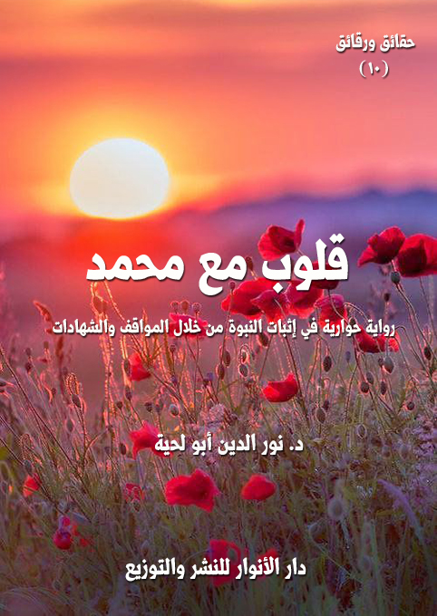

الكتاب: قلوب مع محمد
المؤلف: أ.د. نور الدين أبو لحية
الناشر: دار الأنوار للنشر والتوزيع
الطبعة: الثانية، 1437 هـ
عدد الصفحات: 565
ISBN: 978-620-2-34460-9
لمطالعة الكتاب من تطبيق مؤلفاتي المجاني وهو أحسن وأيسر: هنا

التعريف بالكتاب
في هذا الكتاب مجموعة كبيرة من شهادات المحبة والإعجاب برسول الله صلى الله عليه وآله وسلم والرسالة العظيمة التي جاء بها.. وهي من جميع أصناف الناس من عامتهم وخاصتهم.. وأدبائهم وفنانيهم.. وعلمائهم وأوليائهم.. وأحبارهم ومفكريهم.. بل حتى أولئك المستشرقين من غير أتباعه الذين أتيحت لهم الفرصة للبحث عنه والتعرف عليه، والذين لم يملكوا إلا أن يشهدوا الشهادات الصادقة إعجابا به وتعظيما له.. بل حتى أعداءه لم يملكوا في بعض لحظات الصدق التي عاشوها إلا أن يقروا بفضله وكماله.
وبطل هذه الرواية رجل الدين المسيحي راح يبحث عن القلوب التي حنت إلى محمد صلى الله عليه وآله وسلم وأحبته وتأثرت به.. فجمع لذلك الكثير من الشهادات التي سقناها في هذه الرواية، كنماذج وأمثلة فقط، لأن الاستيعاب في هذا مستحيل.
وقد جعلنا هذه الرواية مقدمة لروايات تالية تتعلق بالتعريف بمحمد صلى الله عليه وآله وسلم، وهي [النبي المعصوم]، و[النبي الإنسان]، و[النبي الهادي] لتكمل الهدف الذي ترمي إليه هذه الرواية.. وهو أن هذا الذي أحبته تلك القلوب الكثيرة، وأعجبت به تلك العقول العظيمة ليس إنسانا بسيطان.. بل هو إنسان حاز كل ألوان الكمال، وظفر بكل معاني الجمال التي جعلته محبوبا لكل صاحب فطرة سليمة.
قلوب مع محمد (12)
يتناول هذا الكتاب برهانا من البراهين التي يمكن للصادقين أن ينطلقوا منها في البحث عن محمد صلى الله عليه وآله وسلم والرسالة التي جاء بها.. مثله مثل [أنبياء يبشرون بمحمد صلى الله عليه وآله وسلم]، و[ثمار من شجرة النبوة]
ويمكن صياغة هذا البرهان بطرق مختلفة منها أن الله سبحانه وتعالى ـ لعنايته التامة بخلقة، والمتجلية في كل شيء (1) ـ يستحيل أن يترك خلقه هملا من دون أن يرسل إليهم من يدلهم على حقيقتهم وحقيقة الكون الذي يعيشون فيه، والمصير الذي يصيرون إليه، والتكاليف التي كلفوا بها..
وهذا الذي يرسله يحتاج – ليؤدي وظيفته التبليغية عن الله - أن يكون معلوما للخلق معروفا لخاصتهم وعامتهم.. لأنه لا يمكن أن يؤدي وظيفته التبليغية من دون أن يعرف.
ثم إن للمعرفة آثارا كثيرة قد تكون حجابا بين الخلق، وبين هذا الرسول الذي أرسله الله عناية بخلقه.. ففرعون معروف لكثير من الخلق، ولكنه معروف باستبداد وظلمه..
ولهذا كانت المعرفة الأكمل والأجمل والأكثر تأثيرا هي المعرفة التي ينشأ عنها الحب والإعجاب والتأثر..
ولمعرفة هذا نحتاج إلى القيام بمسح شامل للبشرية لنرى أكثر أسماء مدعي الرسالة ترديدا، وأكثرها تأثيرا.. وهذا لن يقودنا إلا إلى محمد صلى الله عليه وآله وسلم.. فلا يوجد في تاريخ البشرية من ولهت القلوب بمحبته، أو الإعجاب به على الأقل مثلما حصل لمحمد صلى الله عليه وآله وسلم.
ونحن لا نقول بأن هذا الإعجاب أو تلك المحبة دليل قائم بذاته يمكن الاكتفاء به.. ولكنا نقول بأن هذا مقدمة للبحث والنظر والتأمل في حال هذا الشخص الذي هفت
__________
(1) ذكرنا أدلة ذلك بتفصيل في [الباحثون عن الله]
قلوب مع محمد (13)
قلوب ملايير البشر على مدار التاريخ محبة له وشوقا إليه مع كونه كان يعيش في بيئة بدوية أمية بعيدة عن كل آثار الحضارة..
والأعجب من ذلك كله أن تلك المحبة وذلك الإعجاب لم يكن يخص بصنف من الناس دون صنف كما تعودنا في مثل هذه الأمور.. فالفيلسوف يحب الفلاسفة.. والسياسي يحب السياسيين.. والأديب يحب الأدباء وهكذا.
بل نجد محمدا صلى الله عليه وآله وسلم قد نال محبة وإعجاب جميع أصناف الناس من عامتهم وخاصتهم.. وأدبائهم وفنانيهم.. وعلمائهم وأوليائهم.. وأحبارهم ومفكريهم.. بل حتى أولئك المستشرقين من غير أتباعه الذين أتيحت لهم الفرصة للبحث عنه والتعرف عليه، لم يملكوا إلا أن يشهدوا الشهادات الصادقة إعجابا به وتعظيما له.. بل حتى أعداءه لم يملكوا في بعض لحظات الصدق التي عاشوها إلا أن يقروا بفضله وكماله.
بناء على هذا كانت هذه الرواية التي انطلق فيها بطلها ـ رجل الدين المسيحي ـ من البحث عن القلوب التي حنت إلى محمد صلى الله عليه وآله وسلم وأحبته وتأثرت به.. فجمع لذلك الكثير من الشهادات التي سقناها في هذه الرواية، كنماذج وأمثلة فقط، لأن الاستيعاب في هذا مستحيل.
وقد جعلنا هذه الرواية مقدمة لروايات تالية تتعلق بالتعريف بمحمد صلى الله عليه وآله وسلم، وهي [النبي المعصوم]، و[النبي الإنسان]، و[النبي الهادي] لتكمل الهدف الذي ترمي إليه هذه الرواية.. وهو أن هذا الذي أحبته تلك القلوب الكثيرة، وأعجبت به تلك العقول العظيمة ليس إنسانا بسيطان.. بل هو إنسان حاز كل ألوان الكمال، وظفر بكل معاني الجمال التي جعلته محبوبا لكل صاحب فطرة سليمة.
قلوب مع محمد (14)
في تلك الليلة، أصابني أرق شديد حال بيني وبين النوم، فخرجت خارج غرفتي ـ كعادتي في مثل هذه المواقف ـ لأنشغل بعد النجوم والنظر في أشكال تجمعاتها.. فلم يكن يجلب النوم لعيني مثل النجوم.
بينما أنا كذلك، إذا بي أسمع صوتا عذبا يصدر من غرفة الرجل الغريب الذي زارني.. وكأنه لحن من ألحان السماء.. فاقتربت أسترق السمع، فإذا بي أسمعه، وهو ينشد بصوت خاشع، ممتلئ بحشرجة الدموع، قول الشاعر الصالح، وهو يبث أشواقه لرسول الله صلى الله عليه وآله وسلم:
كيف لا تسكب الدموعَ عيوني... وهي من قبل أن تراك سجام...
كيف لا تذهل العقول وتفنى... أنفسُ العاشقين وهي كرامُ...
يا رسول الإله إني محبّ... لك والله شائق مستهامُ...
يا رسول الإله في كل حينٍ... لك مني تحية وسلام...
يا رسول الإله شوقي عظيم... زائد والغرام فيك غرام...
يا رسول الإله إني نزيل... ونزيل الكرام ليس يُضام
سقطت دموع حارة من عيني.. وأنا أكاد أرى ذلك الشاعر الصالح، وهو بين يدي رسول الله صلى الله عليه وآله وسلم يخبره بما امتلأ قلبه به من محبته والشوق إليه.
في تلك اللحظات خطر على قلبي أجيال من المؤمنين من الذين ملأ حب رسول الله صلى الله عليه وآله وسلم عليهم كيانهم، فلم يرضوا لعروش قلوبهم المقدسة شمسا غير شمسه:
منهم ذلك الرجل الذي جاء إلى رسول الله صلى الله عليه وآله وسلم ممتلئا حزنا، فقال له النبي صلى الله عليه وآله وسلم: (يا فلان مالي أراك محزوناً؟) فقال: (يا نبي اللّه شيء فكرت فيه)، فقال: (ما هو؟) قال: (نحن نغدوا ونروح
قلوب مع محمد (15)
ننظر إلى وجهك ونجالسك، وغداً ترفع مع النبيين، فلا نصل إليك) (1)
ومنهم ذلك الرجل العظيم الذي جاء إلى النبي صلى الله عليه وآله وسلم، فقال: (يا رسول اللّه! إنك لأحب إليَّ من نفسي، وأحب إليَّ من أهلي، وأحب إليَّ من ولدي، وإني لأكون في البيت، فأذكرك فما أصبر حتى آتيك فأنظر إليك، وإذا ذكرت موتي وموتك عرفت أنك إذا دخلتّ الجنة رفعتَ مع النبييّن، وإن دخلتُ الجنة خشيت أن لا أراك) (2)
ومنهم ثوبان مولى رسول الله صلى الله عليه وآله وسلم.. فقد كان ـ كما يذكر الرواة ـ شديد الحب له صلى الله عليه وآله وسلم قليل الصبر عنه، فأتاه ذات يوم وقد تغير لونه ونحل جسمه، يعرف في وجهه الحزن؛ فقال له: (يا ثوبان ما غير لونك؟) فقال: (يا رسول الله ما بي ضر ولا وجع، غير أني إذا لم أرك اشتقت إليك واستوحشت وحشة شديدة حتى ألقاك، ثم ذكرت الآخرة وأخاف ألا أراك هناك؛ لأني عرفت أنك ترفع مع النبيين وأني إن دخلت الجنة كنت في منزلة هي أدنى من منزلتك، وإن لم أدخل فذلك حين لا أراك أبدا)
وقد رسم الشاعر هذه المشاعر الصادقة، فقال:
شهود طلعة طه نعمة عظمت... قدراً وشاناً وكانت أفضل النعم...
وكان ثوبان ذا وجه له شغف... بحبه دمعه يجري بمنسجم...
قال الرسول له: مالي أراك كذا... فقال: شوقا لوجه منك مبتسم...
إني ذكرتك في سري وفي علني... ففاض دمعي وحبي غير مكتتم...
فهل أراك بجنات الخلود أجب... نعم يكون بفضل الله ذي الكرم
وعلى هؤلاء جميعا، وعلى جميع أجيال الأمة التي أحزنها ما أحزنهم نزلت هذه الآية: {وَمَنْ يُطِعِ اللَّهَ وَالرَّسُولَ فَأُولَئِكَ مَعَ الَّذِينَ أَنْعَمَ اللَّهُ عَلَيْهِمْ مِنَ النَّبِيِّينَ وَالصِّدِّيقِينَ وَالشُّهَدَاءِ وَالصَّالِحِينَ
__________
(1) تفسير ابن كثير:2/ 354.
(2) رواه الحافظ أبو عبد الله المقدسي في كتابه (صفة الجنة)
قلوب مع محمد (16)
وَحَسُنَ أُولَئِكَ رَفِيقاً) (النساء:69).. فلم يفرح الصحابة ولا الأجيال الكثيرة من الأمة بشيء فرحهم بهذه البشرى (1).
ساد صمت لذيذ على ذلك الجو الذي عبقت فيه أنفاس محبة النبي صلى الله عليه وآله وسلم سمعت خلاله الغريب، وهو ينشد بنغم خاشع قول الشاعر:
يحن الجذع من شوق إليك... ويذرف دمعه حزناً عليك...
و يجهش بالبكاءوبالنحيب... لفقد حديثكموكذا يديك...
فمالي لا يحن إليك قلبي... وحلمي أن أقبل مقلتيك...
و أن ألقاك في يوم المعاد... وينعم ناظري من وجنتيك...
فداك قرابتيوجميع مالي... وأبذل مهجتي دوماً فداك...
تدوم سعادتيونعيم روحي... إذا بذلت حياتي في رضاك...
حبيب القلب عذر لا تلمني... فحبي لا يحق في سماك...
ذنوبي أقعدتني عن علو... وأطمح أن أُقرب من علاك...
لعل محبتي تسمو بروحي... فتجبر ما تصدع من هواك
فتذكرت الجذع كيف حن شوقا إلى رسول الله صلى الله عليه وآله وسلم.. فرددت بيني وبين نفسي قول بعضهم يذكر ذلك: (يا معشر المسلمين الخشبة تحن إلى رسول الله صلى الله عليه وآله وسلم شوقاً إلى لقائه، فأنتم أحق أن تشتاقوا إليه)
قاطعتني ألحان الغريب العذبة، وهي تردد قول الشاعر:
جاءت إليك حمامة مشتاقة... تشكو إليك بقلب صب واجف...
من أخبر الورقاء أن مقامكم... حرموأنك منزل للخائف
__________
(1) روى ذلك البخاري ومسلم.
قلوب مع محمد (17)
فتذكرت تلك الحمامة العاقلة العاشقة التي حدث حديثها عبد الله بن مسعود، فقال: كنا مع رسول الله صلى الله عليه وآله وسلم في سفر ومررنا بشجرة فيها فرخا حمرة، فأخذناهما، قال فجاءت الحمرة إلى رسول الله صلى الله عليه وآله وسلم وهي تصيح فقال النبي صلى الله عليه وآله وسلم: (من فجع هذه بفرخيها؟) قال: فقلنا: نحن قال: (فردوهما) (1)
قاطعتني ألحان الغريب مرددة:
لا تلوموا أُحداً لاضطراب... إذ علاه فالوجد داءُ...
أُحد لا يلام فهو محبٌ... ولكم أطرب المحب لقاءُ
فتذكرت تلك المحبة المتبادلة بين رسول الله صلى الله عليه وآله وسلم وجبل أحد، والتي عبر عنها صلى الله عليه وآله وسلم في قوله: (هذا جبل يحبنا ونحبه) (2)
ردد الغريب بشوق قصيدة أحمد شوقي المشهورة التي استهلها بفرح الأكوان بمحمد:
ولد الهدى فالكائنات ضياء... وفم الزمان تبسم وثناء...
الروح والملأ الملائك حوله... للدين والدنيا به بشراء...
يوم يتيه على الزمان صباحه... ومساءه بمحمد وضاء...
بك بشر الله السماء فزينت... وتضوعت مسكاً بك الغبراء...
يا من له الأخلاق ما تهو العلا... منهاوما يتعشق الكبراء...
زانتك في الخلق العظيم شمائل... يغرى بهنويولع الكرماء
فشعرت بذلك الفرح العظيم الذي سرى في قلوب الأمة عندما جاءها الحبيب، فراحت تحتضنه بكل مشاعرها حتى نسيت في حبه النفس والأهل والمال.
__________
(1) رواه أبو داود والحاكموقال: هذا حديث صحيح الإسناد ولم يخرجاه.
(2) رواه البخاري.
قلوب مع محمد (18)
في ذلك الحين تذكرت زيد بن الدثنة.. وما أدراك ما زيد بن الدثنة!؟
لقد أخرجه أعداؤه من أهل مكة من الحرم ليقتلوه، فقال له أبو سفيان: (أنشدك بالله يا زيد أتحب أن محمداً الآن عندنا مكانك لضرب عنقه وإنّك في أهلك؟) فقال زيد: (والله ما أحبّ أن محمداً الآن في مكانه الذي هو فيه تصيبه شوكة، وإنّي جالس في أهلي)، فقال أبو سفيان: (ما رأيت الناس أحداً يحب أحداً كحب أصحاب محمد محمدا) (1)
وذكرت تلك الأنصارية التي قتل أبوها وأخوها وزوجها، فأخبروها بذلك، فقالت: (ما فعل الله برسول الله؟) قالوا: (بحمد الله كما تحبين)، قالت: (أرونيه حتى أنظره)، فلما رأته قالت: (كل مصيبة بعدك جلل) (2)
وذكرت ذلك الرجل الصالح الذي ادخر لآخرته أعظم زاد يمكن أن يدخره مؤمن.. فعن أنس قال: بينا أنا ورسول الله صلى الله عليه وآله وسلم خارجان من المسجد فلقينا رجل عند سدة المسجد فقال: يا رسول الله، متى الساعة؟ قال رسول الله صلى الله عليه وآله وسلم: (ما أعددت لها؟) قال: (ولا صدقة، ولكني أحب الله ورسوله)، قال: (فأنت مع من أحببت) (3)
وذكرت تلك الأمنية العزيزة التي كانت تتردد في نفس ربيعة بن كعب الأسلمي.. فلما واتته الفرصة راحة يطلبها من رسول الله صلى الله عليه وآله وسلم.. قال يحدث عن نفسه: كنت أبيت عند النبي صلى الله عليه وآله وسلم فأتيته بوضوئه وحاجته، فقال لي: (سل) فقلت: (يا رسول اللّه أسألك مرافقتك في الجنة)، فقال: (أو غير ذلك؟) قلت: (هو ذاك)، قال: (فأعني على نفسك بكثرة السجود) (4)
وذكرت قول أنس، وهو يبين الأثر العظيم الذي أحدثه غياب رسول الله صلى الله عليه وآله وسلم.. لقد قال: (لما كان اليوم الذي دخل فيه رسول الله صلى الله عليه وآله وسلم المدينة أضاء منها كل شيء فلما كان اليوم الذي مات فيه
__________
(1) رواه ابن اسحاق وابن سعد.
(2) رواه ابن اسحاق.
(3) رواه الطبراني في الكبير.
(4) رواه أبو داود والترمذي.
قلوب مع محمد (19)
أظلم منها كل شيء ولما نفضنا عن رسول الله صلى الله عليه وآله وسلم الأيدي وإنا لفي دفنه حتى أنكرنا قلوبنا) (1)
-\--\-
لم يخطر على بالي أولئك المحبين في تلك اللحظات اللذيذة فقط.. فقد كانوا بعضا من آلاف.. بل من عشرات الآلاف.. بل من ملايين المسلمين عبر أجيال المسلمين الطويلة..
كلهم كانوا على قلب رجل واحد يمتلئون محبة وتعظيما لرسول الله.. يجتمعون به وبحبه وبالشوق إليه، ويفترقون على ذلك.
وكانت المعاني النبيلة التي أشرقت عليهم من شمس محمد صلى الله عليه وآله وسلم تملؤهم بالسعادة والسكينة.. وتحول قلوبهم إلى قلب رجل واحد، فهم إخوة في الله، لهم شمس واحدة يستنيرون بنورها، ويستدفئون بدفئها.
لكن مرارة الحسرة عادت، فكدرت ذلك الشوق اللذيذ..
لقد اختلط ذلك الشوق اللذيذ لتلك الأجيال السامية بحسرة وألم على أجيالنا التي امتلأت قلوبها بالأهواء، فراحت تبحث في القمامات والمزابل والمستنقعات عن حب تملأ به قلوبها، فلم تجد في المزابل إلا الجرذان والخنافس.
-\--\-
التفت الغريب، فرآني، فقام من مجلسه، ودعاني أن أدخل عليه.
دخلت، وحييته معتذرا عن تنصتي عليه، فقال: لا بأس عليك.. ربما لا يصلح لحديثنا إلا هذا المجلس.. وفي هذا الوقت من الليل الذي يفترش فيه المحبون أقدامهم ليتنعموا بحرارة الأشواق الرفيعة.
قلت: لقد سمعتك تنشد أبياتا ممتلئة حبا ساميا، وأشواقا طاهرة.
قال: تلك بعض نفثات قلوب المحبين التي امتلأت بحرارة الإيمان والمحبة والشوق.
__________
(1) رواه الترمذي.
قلوب مع محمد (20)
قلت: أيام جميلة هي تلك الأيام التي عاصرها أولئك الشعراء.
قال: وتلك الأيام لن تنقضي.. إن القلوب التي عبرت لرسول الله صلى الله عليه وآله وسلم عن محبتها وأشواقها لا تزال حية تنبض بالحياة.
قلت: أين ذلك.. وقد ملأ الإعلام المنحرف قلوب الناس بالأشواق المدنسة، والهمم المنحطة.. لقد صار الحب بين الناس ـ في ظل هذه الحضارة المتعفنة ـ مرادفا للانحراف والفساد والرذيلة.. وصارت أشواق المحبين الرفيعة سلعة رخيصة تباع في سوق النخاسة.. وصار الأبطال في هذا الزمان هم كل راقص ومطبل ومزمر وناعق.
قال: ذلك سراب سرعان ما يفطن له الناس.. وذلك ضباب سرعان ما تشرق عليه الشمس لينقشع عن الحقيقة.
قلت: إلى متى!؟
قال: ذلك ليس بعيدا.. بل كل شيء يقرب إليه.
نظر من كوة النافذة إلى السماء المزينة بزينة النجوم، ثم قال: لقد عرفت في حياتي الطويلة كثيرا من الناس لاحظت في عيونهم ووجوههم وقلوبهم حرارة الشوق العظيم إلى محمد صلى الله عليه وآله وسلم.. لقد تشرفت بلقائهم والحديث إليهم..
قاطعته قائلا: فهل ستحدثني عنهم؟
قال: أجل.. سأحدثك اليوم عن القلوب التي امتلأت بحب محمد صلى الله عليه وآله وسلم.. أو شعرت في لحظة من لحظات الصدق بتعظيمها لرسول الله صلى الله عليه وآله وسلم ولما جاء به.
قلت: في أي بقعة من بقع العالم ظفرت بهذه القلوب؟
قال: في كل بقاع العالم التي زرتها.. ليس هناك محل في الأرض إلا وفيه من يلهج لسانه بذكر محمد، ويلهج قلبه بالشوق إلى محمد.
قال ذلك، ثم قام إلى محفظته، وأخرج دفترا هو أشبه بالسفر، وقد كتب عليه هذا العنوان
قلوب مع محمد (21)
(قلوب مع محمد)، ثم سلمنيه، قلت: ما هذا؟
قال: في هذا الدفتر الذي صحبني طيلة فترات حياتي لم أسجل إلا نفحات الصدق التي فاهت بها الألسن في لحظات تقدسها.
فتحت الدفتر، فرأيت فيه أسماء كثيرة.. فسألت: ما هذه الأسماء؟
قال: هذه أسماء من قدر الله لي أن ألقاهم، وأتنعم بالحديث معهم عن رسول الله صلى الله عليه وآله وسلم، وقد كان كل فرد منهم شعاعا من الأشعة التي اهتديت بها إلى شمس محمد صلى الله عليه وآله وسلم.
رحت أقلب الكتاب فهالتني كثرة الأسماء.. فرحت أسأل: أكل هؤلاء التقيتهم؟
قال: أجل.. كلهم قيض الله أن يكونوا سببا من أسباب هدايتي.
قلت: فهلا أذنت لي، فوضعت فهرسا ييسر عليك الاطلاع عليهم؟
قال: لقد فعلت.. لقد صنفت من رأيتهم إلى عشرة أصناف، يشملون أكثر أنواع الناس.. ففيهم: العامة والخاصة.. وفيهم الأدباء والفنانون.. وفيهم العلماء والأولياء.. وفيهم الأحبار والمفكرون.. وفيهم الأصدقاء والأعداء.
قلت:.. والأعداء!؟
قال: أجل.. حتى الأعداء لم يملكوا ـ في لحظة من لحظات الصدق، أو لحظة من لحظات عودة الوعي ـ إلا أن يعبروا عن تقديرهم الشديد لرسول الله صلى الله عليه وآله وسلم.
قلت: فستقص علي قصة كل اسم من هذه الأسماء.
قال: لا يفي العمر جميعا ببعض ذلك.. فلي مع كل اسم قصة من القصص.
قلت: فستحدثني عن بعضها..
قال: سأحدثك عن أفراد من كل صنف.. وأنت تستدل بمن ذكرت على من لم أذكر..
قلت: ألم تلق معلمي (معلم السلام) في بداية هذا النوع من الأشعة!؟
قال: بلى.. لقد لقيته.. وقد كان سببا في أن أتخذ هذا الدفتر..
قلوب مع محمد (22)
قلت: فحدثني عنه، فما أعظم شوقي إليه.
قال: كان يوما من أيام الشتاء الباردة.. وكان الثلج يتساقط.. ونحن في مقبرة نشيع جثمان بطل من أبطال ألمانيا..
قلت: من هو؟
قال: أعفني من هذا السؤال.. فلو عرف أهل عصرنا هذا من هو لاتهموني أو اتهموا أخي بما لا طاقة لنا به.
قلت: فكيف التقيت معلم السلام في ذلك الموقف.. هل كان أحد المشيعين؟
قال: لست أدري.. فجأة استدرت، فرأيته خلفي، وهو ينظر باستغراق لأفواه المتحدثين، وهم يرسلون مراثيهم تصحبها دموعهم.
كنت أحسبه متأثرا كالجمع الحاضر.. ولكن وجهه الواجم لم يبد لي أي أثر أو أي تأثر.
بعد انتهاء حفل التأبين، اقتربت منه، وقلت: لا شك أنك حزين لفقد هذا البطل العظيم الذي امتلأت قلوب الدنيا حزنا عليه.
قال: ويوشك أن تمتلئ بغضا له.
قلت: أخفض من صوتك.. ما الذي تقول؟
قال: أقول الحقيقة.. لقد كنت أطالع وجوه المتحدثين.. فلم أر فيها أي نسمة من نسمات الصدق.. وكنت أحلل تلك الدموع، فلم أرها غير دموع التماسيح.. وكنت أحلل تلك الكلمات، فلم أرها غير أكاذيب المنافقين..
قلت: فكيف عرفت بارتداد القلوب عنه؟
قال: لأن القلوب لا يمكن أن تظل على النفاق.. والأعين لا يمكن أن تظل ترسل دموع التماسيح.
قلت: كل الناس يحصل لهم هذا.. يمدحون، ثم يهجون.. ويشكرون ثم يكفرون.
قلوب مع محمد (23)
قاطعني، وقال: إلا الصادقون.. فالقلوب لا تزداد لهم إلا محبة.. والأعين لا تزداد لهم إلا شوقا.. والأفواه لا تزداد لهم إلا مدحا.
قلت: فمن هؤلاء!؟
قال: أنا أبحث عنهم.. لقد اتخذت دفترا أسجل فيه منحنيات الحب والبغض..
قلت: هذه أول مرة أسمع بهذا النوع من المنحنيات.
قال: لأن البشر انشغلوا بمنحنيات العمران عن منحنيات الإنسان.
قلت: عرفت قيمة منحنيات العمران.. فما قيمة منحنيات الإنسان؟
قال: لقد جعل الله في قلوب البشر جواذب نحو الحقيقة.. قد يشردون عنها، ولكنهم سرعان ما يعودون إليها.. هي كإبرة البوصلة.. تحركها ذات اليمين، وذات الشمال، ولكنها تأبى إلا أن تعود إلى المحل الذي تنجذب إليه.
قلت: عرفت قيمة إبرة البوصلة.. فبها نميز الشمال من الجنوب.. وبها نهتدي في طريق البر والبحر.
قال: وببوصلة القلوب نعرف الصادقين من الكاذبين.. ونهتدي إلى أهل الحقائق، وأهل الدجل.
قلت: لقد ذكرتني بما قالت لي العذراء في ذلك الحلم الجميل.. لقد قالت في وصف تلك الشمس المقدسة: (وامتلأت القلوب حبا لها، وشوقا إليها) (1)
قال: لقد ذكرت لك العذراء مقياسا من مقاييس الحقيقة.. فابحث عنه.. فكل من بحث وصل.
قلت: أين!؟
قال: سر في أرض الله.. واتخذ لنفسك دفترا.. وابحث عن نبرات الصدق الحقيقي التي
__________
(1) انظر [أنبياء يبشرون بمحمد] من هذه السلسلة.
قلوب مع محمد (24)
تنطلق من القلوب.. ففي تلك النبرات ما يدلك على تلك الشمس المقدسة.
قلت: لكل شخص وجهة هو موليها.
قال: ولكن الناس يفترقون في كل شيء إلا عند الشمس، فإنهم يجتمعون.. يجتمع الجميع.
قلت: لم أفهم.
قال: لقد كنا نشيع ذلك البطل الهمام في نظرنا.. وفي نظر أهل بلدنا!؟
قلت: أجل..
قال: ولكن قلوب الآلاف.. بل عشرات الآلاف.. بل الملايين.. تلعن هذا النعش الذي كنا نسمع تأبينه.
قلت: أجل.. وهم أحرار فيما يحبون، وفيما يبغضون.
قال: بل هم مجبرون على ذلك.. فلولا ما فعل بهم ما أبغضوه.
قلت: ولكن هؤلاء الذين أحبوه فعل لهم.. فلذلك أحبوه.
قال: وهذا مقياس آخر.
قلت: لم أفهم.
قال: هذا البطل الهمام أرضى هؤلاء على حساب أولئك.. فلذلك أبغضوه.. وسيبغضه هؤلاء أيضا.. لأن القلوب لا بد أن تعود إلى لحظات الصدق لترى الإجرام إجراما والعدل عدلا.
قلت: فأين الذي تجتمع عليه كل القلوب؟
قال: ذاك ما أبحث عنه.. فمن ظفر به ظفر بالإكسير الذي يجعله إنسانا.
قلت: فسلمني دفتر قلوبك لأنطلق مما وصلت إليه في بحثي.
قال: لا تسلم لك الحقائق إلا بالمعاناة.. فسر، وسل القلوب، وابحث.. فما وصل إلا من سار.
قال ذلك، ثم انصرف.
قلوب مع محمد (25)
في ذلك المساء اشتريت دفترا.. وصرت أبحث عن كل نفحة صدق تفوح بها الألسن في لحظة تقدسها.
وهذا هو الدفتر.. وهذه قصته.
قلوب مع محمد (26)
فتحت دفتر الغريب على فصله الأول، فوجدت عنوانه (العامة)، فقلت: من تقصد بالعامة؟
قال: أقصد بهم أولئك البسطاء الذين لم تسجل أسماؤهم في دفاتير المؤرخين مع أنهم هم الذين صنعوا التاريخ.
قلت: لقد كان هذا الصنف من الناس أكثر من اتبع الرسل.
قال: لأنه لم يكن لديهم من السلطان ما يخافون عليه، فلذلك لم ينحجبوا بما انحجب به غيرهم.
كان أول اسم سجله الغريب في هذا الفصل اسم (الراعي)، فسألته عنه، فقال: هذا (الراعي).. وهو أول من رأيت حرارة الصدق في كلماتهم.. فلذلك كان أول من سجلت اسمه في هذا الدفتر.. والذي كان في ذلك الحين خاليا من أي عنوان.
قلت: فحدثني حديثه.
قال: في ذلك اليوم من أيام الربيع.. وفي بلدي الذي ولدت فيه.. وبعد لقياي لمعلم السلام وإقناعه لي بتخصيص دفتر للكلمات الصادقة الصادرة عن القلوب المخلصة، خرجت إلى الحقول المجاورة لأتنسم عطر الهواء الذي لم يدنس بالمداخن، ولألتقي بالبشر الذين لم تخرجهم الحضارة عن فطرتهم.
وفي ذلك الحقل، التقيت ذلك الراعي الصادق الذي كان يمتلئ شوقا لمحمد.
لقد وجدته جالسا بجنب نعجاته من غير أن يراه أحد، أو يسمعه أحد، وهو ينشدها بصوت عذب قول الشاعر:
يا حبيباً علم الوجد هواه... ياتراني بعد صبر هل أراه؟...
يا جميلا ليس خلق في البرايا... قط مثل أو قريب من بهاهُ
بان في الأفلاك بدر أو هلال... يسلب الألباب بعض من سناه...
ليس حسن في البرايا أو جمال... أو بديع من جمال ما عداه...
يا حبيبا لست أدري كيف أوفي... قدره العالي وفيضا من عطاه...
ذاك قلبي هام وجداً يا حبيبي... والهوى في وجدكم حقا سباه...
يا دموعا ذارفات في الليالي... هل لقاءُ في تعيم منتهاه...
يا لسعدي ساعة اللقيا بحبي... يا حبيبا حق سعدي في حماه!...
كيف أسلو يا حبيبا في فؤادي... جاوز الأحباب عشقا فاكتواه...
كيف أسلو والحنايا لم تزل... ترقب الوصل ووصلي لا أراه ُ!...
يا ليال ذبت فيها من هواكم... والتياعي يا حبيبي من شِفاه؟...
طال بعدي بت ليلي من هواكم... ضج قلبي هائما دمعي ذراه...
مال قلبي نحو حب ليس فيه... غضة للقلب رقراق نقاهُ!...
كلما همت وزاد الحب فيكم... زاد سعدي بالغاً بي منتهاهُ...
كيف لا والوعد منكم يا حبيبي... أن ينال محبكم حقا مناه
اقتربت منه، وقد هزني إنشاده، فقلت: أنت عربي.. لاشك في ذلك.
قال: لا.. بل أنا ألماني.. نبتت شجرتي في هذه البلاد.
قلت: ولكن أشجار هذه البلاد لا تتقن العربية.
قال: لقد شوقني في العربية حبيبي الذي همت به.. فضبطت لساني على موجات لسانه، كما ضبطت قلبي على ترددات محبته.
قلت: عهدي بالمحبين في بلادنا يتلاقون بمحبوبيهم كما يشتهون.. ولا يقتنعون بما تقتنع به من ترديد الأشعار.
قلوب مع محمد (27)
قال: ومن قال لك بأن حبي قد غاب عني.. إنه معي.
قلت: ولكني لا أراه.
قال: فأنت إذن لا تبصر.
قلت: بل أبصر.. وأنا لا أرى أمامك إلا نعجاتك.
قال: لو نظرت إلى إنسان عيني لرأيته، ولو حدقت في سويداء قلبي لوجدته مستويا على عرشه.
قلت: لا طاقة لي بفك ألغازك، فحدثني عن حقيقة أمرك.. أخبرني عن حبيبك الذي ملكته قلبك وعقلك وروحك.
قال: محمد هو حبيبي الذي ملك علي عقلي وقلبي وروحي وجميع كياني.
قلت متعجبا: محمد!؟
قال: أجل.. محمد..
ثم راح ينشد بصوت عذب قصيدة البوصيري:
محمد أشرف الأعراب والعجم... محمد خير من يمشي على قدم...
محمد باسط المعروف جامعه... محمد صاحب الإحسان والكرم...
محمد تاج رسل الله قاطبة... محمد صادق الأقوال والكلم...
محمد ثابت الميثاق حافظه... محمد طيب الأخلاق والشيم...
محمد رويت بالنور طينته... محمد لم يزل نورا من القدم...
محمد حاكم بالعدل ذو شرف... محمد معدن الإنعام والحكم...
محمد خير خلق الله من مضر... محمد خير رسل الله كلهم...
محمد دينه حق ندين به... محمد مجملا حقا على علم...
محمد ذكره روح لأنفسنا... محمد شكره فرض على الأمم
محمد زينة الدنيا وبهجتها... محمد كاشف الغمات والظلم...
محمد سيد طابت مناقبه... محمد صاغه الرحمن بالنعم...
محمد صفوة الباري وخيرته... محمد طاهر من سائر التهم...
محمد ضاحك للضيف مكرمه... محمد جاره والله لم يضم...
محمد طابت الدنيا ببعثته... محمد جاء بالآيات والحكم...
محمد يوم بعث الناس شافعنا... محمد نوره الهادي من الظلم...
محمد قائم لله ذوهمم... محمد خاتم للرسل كلهم
قلت: فكيف اهتديت إلى محمد، وأنت من هذه البلاد التي لا تعرف محمدا.
غضب، وقال: كل البلاد تعرف محمدا.. بل كل الأشجار والحجارة والتربة تعرف محمدا.
قلت: أحدثك عن البشر.. لا عن الأشجار والحجارة.. فأخبرني خبرك.
قال: قصتي طويلة..
قلت: فقصها علي.
قال: سأقص عليك منها ما تحتاجه.. وأرغب بك عما لا تحتاجه.
قلت: كلي آذان صاغية لك.
قال: لقد وقعت في عز شبابي ضحية لشباك الحب المدنس..
قلت: ما الحب المدنس؟
قال: ذلك الحب الذي يتغنى به قومنا.. فيملؤون عروش قلوبهم بالمستنقعات الأسنة.
قلت: فكيف نجوت منه.. عهدي بمن يقع فيه يلم به ما ألم بالمجنون من الجنون، أو ما ألم بعروة ةإخوانه من الموت.
قال: تلك قصتي مع حبيبي محمد.
قلت: لم أفهم.
قلوب مع محمد (28)
قال: لقد أذاقتني محبوبتي التي أسلمتها روحي من ألوان الهوان ما امتلأت به مرارة، فبعت لأجلها كل ما أملك، وأرضيتها بكل ما أطقت أن أرضيها به، فلما نفذ ما عندي من مال ومتاع هجرتني.. بل باعتني لمن يملك ما لا أملك، ويقدر على ما لا أقدر.
قلت: فكيف نجوت من خنادق الهوى الوعرة؟
قال: بمحمد.
قلت: كيف ذلك؟
قال: في تلك الأيام ظهر لي أن أسافر إلى اليمن.. ولست أدري كيف لاح لي ذلك الخاطر.. وقد كانت تلك الأيام تزدهي بميلاد محمد صلى الله عليه وآله وسلم.. فكانت الأفراح في كل جانب، وكانت القصائد العذبة تمتلئ بها الحناجر والأسماع.. وكنت أرى الفرحة تمتلئ بها القلوب غير شاعرة بتلك الفاقة التي تصيح بها الأجساد.
لقد أثرت في تلك المشاهد مع كوني لم أكن أعرف من العربية إلا ما أحتاجه في معاملاتي الضرورية.
قلت: فكيف فهمت ما يقولون؟
قال: حرارة الصدق والإخلاص جعلتني أستوعب كل ما يذكرونه، بل أعيه وعيا تاما.
قلت: أكان ذلك وحده هو الذي أنقذك من شباك الحب المدنس؟
قال: كان ذلك هو الباب.. وكانت تلك هي البداية.. لقد كان الإخلاص والصدق هو الذي جعلني أنضم إلى تلك المجالس، وأجلس معها، وأحاول أن أستشعر المشاعر المقدسة التي تستشعرها..
لقد كان كل كل هدفي أن أنسى من جرعتني السموم.. ولم أكن أعلم أن الله الرحيم الرحمن يدخر لي كل ذلك الفضل.
قلت: لم أفهم.
قلوب مع محمد (29)
قال: في مجلس من تلك المجالس لاحت أنوار عظيمة غسلت جميع أدران قلبي، ومحت جميع ظلماته.. لقد كانت أنوارا لذيذة وجميلة لا يمكن وصفها.
قلت: أنوار من تلك؟
قال: أنوار الشمس التي لا تغيب..
قلت: لم أفهم..
قال: لم يكن دليلي إلى محمد إلا محمد.
قلت: لا زلت لا أفهم.
قال: أنا لست فيلسوفا، ولا لي قدرة على الجدل، ولا على البحث المضني.. ولكن مع ذلك لي قدرة على تلمس الصدق والإخلاص.. وقد رأيت في محمد منهما كل ما يملأ القلب بالمحبة السامية.
قلت: والمسيح!؟.. ألم تكن مسيحيا؟
قال: بلى.. ولا أرى أن حبي للمسيح يغني عن حبي لمحمد.. ذلك أني لم أصل للمسيح إلا بعد أن وصلت لمحمد.
قلت: كيف تقول ذلك، ومحمد جاء بعد المسيح.
قال: لقد عرض للمسيح قطاع طرق كثيرون شوهوه.. ولم يعد للمسيح جماله ولا كماله غير محمد.
قلت: فكيف تعلمت العربية.. وعلى من تعلمتها؟
قال: علمتني المحبة.. لقد جعلتني تلك العيون الصادقة أتعلم من غير معلم.
قلت: لقد رأيتك تردد أشعارا بليغة.
قال: تلك الأشعار من تلك المجالس.. لقد كنت جالسا في أحد تلك المجالس الآن.
قلت: أنت هنا الآن.
قلوب مع محمد (30)
قال: أنا لم أخرج من هناك.. ويستحيل على قلبي أن يفارق مواطن الأحبة.
قلت: ونعجاتك؟
قال: هي لا تشغلني.. بل لو اجتمع الخلق جميعا على أن يشغلوني فلن يشغلوني.
قال ذلك، ثم انصرف إلى نعحاته، وهو يشدو بقول الشاعر:
دارُ الحبيبِ أحقُّ أن تهواها... وتَحِنُّ من طربٍ إلى ذِكراها...
وعلى الجفونِ إذا هممتَ بزورَةٍ... يا ابن الكرامِ عليك أن تغشاها...
فلأنتَ أنتَ إذا حللت بطيبةٍ... وظللتَ ترتعُ في ظِلال رُباها...
مغنى الجمال من الخواطرِ والتي... سلبت ْ قلوبَ العاشقين حلاها...
لا تحسبِ المِسكَ الذَكيّ كتُربها... هيهاتَ أين المسكُ من رياها...
طابت فان تبغي لطيبٍ يا فتى... فأدم على الساعات لثم ثراهها...
وابشر ففي الخبر الصحيح تقررا... إن الإله بطيبة سماها...
وبهذه ظهرت مزيةٌُ طيبةٍ... فغدت وكل الفضل في معناها...
حتى لقد خُصت بهجرة حِبِّهِ... الله شرفها بِهِ وحَباها...
ما بين قبرٍ للنبي ومنبرٍ... حيا الإلهُ رسولَه وسقاها...
هذي محاسِنها فهلل من عاشقٍ... كَلِفٍ شَجِيٍّ ناحلٍ بنواها...
إني لأرهبُ من توقع بينها... فيظل قلبي مُجعاً أواها...
بجوارِ أوفى العالمين بذمةٍ... وأعز من بالقرب منه يُباهى...
من جاء بالآيات والنورِ الذي... داوى القلوب من العَمى فَشفاها...
أولى الأنامِ بخطة الشرفِ التي... تدعى الوسيلة خير من يُعطاها...
إنسانُ عين الكونِ شرفِ التي... تدعى الوسيلة خير من يُعطاها
حسبي فلستُ أفي ببعضِ صِفاته... لو أن لي عدد الورى أفواها...
كثرت محاسنه فأعجز حصرها... فغدت وما تلقى لها أشباها
سالت دموع حارة من عيني الغريب، وهو يحدثني عن قصة هذا الراعي، فقلت: أرى أن هذا الراعي قد أثر فيك أيما تأثير؟
قال: أجل.. في ذلك المساء سطرت في هذا الكراس أول اسم من أسماء الصدق.. وفي ذلك اليوم عنونت هذا الدفتر بهذا العنوان، وقد كنت أحسب أني سأضع دفاتر أخرى لشخصيات أخرى.. ولكني كلما هممت بذلك انصرفت إلى محمد.
قلت: أراك وضعت في هذا الفصل أسماء كثيرة؟
قال: كل هؤلاء من العامة البسطاء الذين أتيح لي أن ألتقي بهم، وأحادثهم عن سر إقبالهم على محمد ودين محمد.
قلت: كيف أتيح لك ذلك؟
قال: لقد لاحظت مراكز الدراسات المختلفة ـ والتي تزود الفاتيكان بما يحتاجه من معلومات ـ الإقبال الشديد على الإسلام رغم التشويهات الكثيرة التي تناله من وسائل الإعلام، وقد دفع ذلك الكنيسة إلى تكليفي بالبحث عن هؤلاء المسلمين الجدد والتحاور معهم لنعرف سر الإقبال الشديد على الإسلام.
قلت: لقد أتيحت لك فرصة عظيمة إذن؟
قال: أجل.. لقد كانت هذه فرصة لا تعوض.. فقد أتيح لي أن ألتقي بأكبر عدد من المسلمين الجدد، والذين فتحوا لي قلوبهم، وحدثوني بكل إخلاص عن رحلتهم إلى الإسلام (1).
قلت: في أي بلد تمكنت من لقائهم؟
__________
(1) من أهم مراجعي في أخبار المسلمين الجدد كتاب: رحلة إيمانية مع رجال ونساء أسلموا، إعداد: عبدالرحمن محمود، وموقع: http://www.newmuslims.tk/
قلوب مع محمد (31)
قال: في بلاد كثيرة.. فأنت تعلم سخاء الكنيسة.
قلت: فقد استغللت سخاء الكنيسة إذن؟
قال: لا.. لقد كنت صادقا معها.. ولكن صدقي مع الحق كان أعظم من صدقي معها، فلذلك انشغلت بالبحث عن أسرار الصدق عن البحث الذي طلبته مني الكنيسة، وأحسبني قد عملت بإخلاص، ولم أتقاض على ذلك إلا ما هو حق لي.
قلت: لم أفهم.
قال: لقد أريد من تلك الأموال التي صرفت على رحلاتي أن أسمع الحقائق من أهلها، وأنقلها بكل صدق وموضوعية، وأحسبني لم أفعل إلا ذلك.
قلبت دفتر الغريب في هذا الفصل، فرأيت اسم (الفتى عماد) (1)، فسألت الغريب عنه، فقال: قصة هذا الفتى مع الإسلام طويلة، ولا يمكنني في هذا المجلس أن أحدثك عنها جميعا، ولهذا سأكتفي باختصارها لك أو ذكر ما تمس إليه الحاجة فقط منها.
قلت: فمن حدثك بها؟
قال: الشاب عماد نفسه.. لقد أتيحت لي فرصة قدمت له فيها ـ بفضل الله ـ بعض الخدمات، وقد ارتاح إلي، وأخبرني عن قصته بتفاصيلها.
قلت: فحدثتني بما وعدتني منها.
قال: لقد بدأ هذا الشاب الطيب الذي أنار الإسلام عقله وقلبه حديثه بحمد الله على نعمة الإسلام، ثم الصلاة على النبي صلى الله عليه وآله وسلم الذي جعله الله واسطة لتلك النعمة، ثم أخذ يحدثني عن أسرته قبل الإسلام وبعد الإسلام، فقال: كانت أسرتي تتكون مني وأختي وأمي وأبي.. أربعة أفراد فقط
__________
(1) نقلا عن كتاب: قصة الفتى النصراني الذي اهتدى.. (بتصرف)
قلوب مع محمد (32)
وكانت أسرة نصرانية متدينة تواظب على دروس الكنيسة وتؤدي العبادات النصرانية بانتظام، وكنت أختلف إلى دروس الكنيسة مع أسرتي وكنت أواظب على أداء الصلوات.. وقد كان أول ما هداني الله به إلى الإسلام أمي.
قلت: أكانت أمه مسلمة؟
قال: لا.. ولكنها كانت سبب دخوله الإسلام.. لقد ذكر لي هذا الشاب الفاضل أنه شعر بتوجه أمه نحو الإسلام وميلها إليه، وقد اكتشف ذلك من خلال تعلقها بدرس التفسير الأسبوعي للشيخ محمد متولي الشعراوي - رحمه الله - فيقول: (لاحظت أن لحديث الشيخ الشعراوي الأسبوعي أثرًا أشبه بالرعد في آذان المتعصبين من النصارى، وساعة الحديث الأسبوعي ساعة نحس عندهم، وتمثل عبئًا نفسيًا ومعاناة لهم، بيد أن الأمر كان مختلفًا مع أمي كل الاختلاف حيث كنت أراها تفتح التلفاز وتشاهد درس الشيخ الشعراوي الأسبوعي يوم الجمعة فأسألها دهشا: ماذا تصنعين؟! فتجيب قائلة: أتابع هذا الشيخ لأنظر ماذا يقول؟ وأسمعه ربما يخرف!.. ولم أكن أدري أن ردها عليّ وقتها كان من باب التمويه حتى لا أخبر أبي (1)!
وهناك برنامج آخر كانت تتابعه أمي، وهو برنامج (ندوة للرأي) أراها تشاهده، فلما أنكر عليها ذلك مستفسرًا ترد قائلة: أشاهد وأسمع لأرى ما يقوله هؤلاء العلماء عن النصرانية والنصارى! فأسمع جوابها دون تعليق.. وأواصل مراقبتها، وكانت أمي سمحة المعاملة لطيفة المعشر، وكادت في معاملتها تبدو أقرب للإسلام والمسلمين، حتى أن أحد القساوسة سبّها ذات مرة، لأنها قالت أمامه: (والنبي) على طريقة العامة من المسلمين في مصر، فسبّها القس ونهرها قائلاً لها: أي نبي ذلك الذي تقصدين؟! وعنفها حتى سالت الدموع من عينها.
__________
(1) ورد في النصوص ما يدل على جواز اللجوء إلى الكذب في مثل هذه الأحوال من باب الضرورة، فقد جاء في حديث الغلام والراهب والساحر قول الراهب: (إذا خشيت الساحر فقل: حبسني أهلي، وإذا خشيت أهلك فقل: حبسني الساحر) الحديث رواه مسلم.
قلوب مع محمد (33)
ولما فكرت أمي في الإسلام، استدعتني ذات مرة وقالت لي: تعال يا عماد أنت ابني الوحيد ولن أجد أحدًا يسترني غيرك! فقلت لها خيرًا يا أمي، فقالت: أنت ابني الكبير وأنا مهما كانت الأمور وفي كل الأحوال أمك.. ومن المستحيل أن تتخلى عني أو ترميني في التهلكة، فقلت لها: نعم يا أمي. فقالت: ماذا تفعل لو أن أهلك قالوا عني كلامًا سيئًا ورموني بتهم باطلة؟! فقلت لها: ولم يفعلون ذلك وهم جميعا يحبونك. قالت: ماذا تفعل لو حاولوا قتلي والتخلص مني؟ فقلت لها: كيف ذلك؟ ولم يحاولون قتلك وهم يحبونك؟! قالت: ماذا تفعل لو صرت مسلمة؟ هل ستحاربني مثلما الحال مع أبيك وأعمامك وأخوالك وأقاربك؟! فكانت إجابتي لها: الأم هي الأم، وأنت أمي في كل الأحوال.
قلت ذلك.. ولكن نفسي كانت ممتلئة بالمخاوف عليها، وقوّى ذلك لدي كثرة مشاجرتها مع أبي في شأن رغبتها في اعتناق الإسلام.. وكان أبي يغضب من تهديدها بترك النصرانية ويتحداها أن تعتنق الإسلام.
وذات يوم عدت إلى المنزل قادمًا من المدرسة، فلم أجد أمي، فأخذت أسأل عنها في كل مكان يمكن أن تذهب إليه... وكانت الصدمة أني وجدت أنها أعلنت إسلامها أمام الجهات المسؤولة، وأنها لن تعود إلى البيت أبدًا..
لقد جن جنون العائلة كلها وفقدت توازنها وصارت تقول في الإسلام والمسلمين كل ما يمكن أن يقال من ألفاظ السباب واللعن والتهديد والوعيد وصار الجميع من أخوال وأعمام فضلاً عن الأب في حالة عصبية انفعالية في الكلام والسلوك فهم غاضبون من كل شئ ومن أي شئ...
وكنت أستمع إلى الشتائم توجه إلى أمي من الأقارب والأخوال والأعمام، فمن قائل: إنها كانت تشبه المسلمين في كذا وكذا، وهذا الخال يوجه كلامه إلي قائلاً: (انظر كيف تركتكم، وتخلت عنك وعن أختك؟! انظروا من سوف يرعاكم ويقوم على تربيتكم؟!).. أما العم فقد كان يقول
قلوب مع محمد (34)
كلامًا مشابهاً ويقول موجهاً كلامه لي ولأختي: (ترى لو ذهبت أنت وأختك إليها وتوسلتما إليها وبكيتما بين يديها.. هل ترجع إليكم؟!)
وكان العم يذهب إليها في الجهات المختصة ليوقع الإقرار تلو الإقرار بعدم التعرض لها.. وأحيانًا كان يلقاها ويستعطفها كي تعود إلى ولديها لشدة حاجتهما إليها، ولكن أمي رفضت بشدة بعدما ذاقت حلاوة الإسلام والإيمان وأسلمت لله رب العالمين وتركتنا وديعة عند من لا تضيع عنده الودائع سبحانه هو خير حافظٍ وهو أرحم الراحمين، وأيقنت أن الله سوف يحرسنا بعينه ويرعانا برعايته (1).
قال الغريب: ثم أخبرني هذا الفتى عن بعض البلاء الذي تعرض له بسبب إسلام أمه، ثم كيف بدأ يتلقى أنوار الإسلام، فقال: أخذت العنوان وقفلت راجعًا إلى منزلنا أفكر في الأمر، وبعد يومين أو ثلاثة عزمتُ على زيارة أمي على عنوانها الجديد في موعد يسبق يوم الثلاثاء اللاحق لموقف القس السابق في درس الكنيسة، وبلغت مسكن الوالدة وشاء الله أن يكون ذلك مع أذان المغرب.. وأستمع إلى أذان المغرب وكأني أسمعه لأول مرة برغم سماعي له آلاف المرات ولكن الأذان هذه المرة وقع مغاير تمامًا لما ألفته من قبل.
وتستقبلني أمي أثناء الأذان مرحبةً بي، وأراها وأسمعها تردد الأذان وهي لا تكاد تنتبه لحديثي إليها، وبعد الأذان ذهبت فتطهرت وتوضأت ثم دخلت في صلاتها وجعلت تتلو القرآن في الصلاة بصوت مسموع فكنت لأول مرة أسمع القرآن من أمي، إنها تتلو سورة الإخلاص، وكان لذلك وقع لا يوصف في قلبي وأثر ساحر في نفسي.
إن مشاعري في تلك اللحظة لا أقوى على وصفها، فقد شملني نورٌ ربانيٌ وتملكني شعور غريب تمنيت معه في تلك اللحظة لو جثوت على ركبي وقبلت قدم أمي وهي تصلي، شعرت
__________
(1) هذا الموقف مع ما فيه من الصدق والإخلاص إلا أن الداخل للإسلام لا ينبغي أن يفرط في أي شيء يرتبط بحياته وبمسؤولياته، بل إن اعتناقه للإسلام لا ينبغي أن يزيده إلا حرصا على هذه المسؤوليات.
قلوب مع محمد (35)
بشيء ما يغسل قلبي، وداخلني صفاءٌ ونقاءٌ لم أشعر بهما من قبل، أجل إن شعوري في ذلك اليوم لا يمكن وصفه أو التعبير عنه.. إنه روح جديدة تسري في جسدي وعروقي، أحسست بمدى الظلم الذي وقع على أمي من ذلك القس (1) في درس الثلاثاء الماضي، تمنيت لو خنقته لافترائه على أمي دون وجه حق، لماذا يشوه سيرتها؟! أهذا عدل؟ وهل المسيح أمر بذلك؟!
ثم حدثني الفتى عن لجوئه إلى الإنجيل ليبحث فيه عن السكينة والهداية والهدوء فيكتشف أنه محرف، وأن القرآن الكريم هو كتاب الله حقًا، هو الكتاب الذي لا يأتيه الباطل من بين يديه ولا من خلفه، قال: فالإنجيل عندما طالعته وجدته كتابًا كأي كتاب يؤلف في سيرة شخص أو عظيم حيث تطالعك أخبار عن المسيح الذي يأكل والمسيح الذي يشرب والمسيح الذي يموت والمسيح الذي يقوم من الذي يتحدث بهذه الأخبار؟ هل هو الله؟ أم هو المسيح؟!
إن الإنجيل كتاب كأي كتاب يحكي قصة شخص أكل وشرب ونام، وفعل كذا من المعجزات أو له كذا من المعجزات والخوارق، من المتحدث في كل هذا؟ أو من الذي كتب هذه الأخبار بعد وفاة المسيح؟ ولماذا تتعدد الروايات وتختلف وتتناقض أحياناً بتعدد الأناجيل واختلافها، حتى والمسيح على الصليب - كما يزعمون - ينادي: (إيلي إيلي لماذا؟ شبقتني!)
أي: إلهي إلهي لماذا تركتني وخذلتني؟! لماذا؟ ينادي مَنْ؟ وهو من؟ وكيف يتخلى الأب عن ابنه وهو يستصرخه ويستنصره ويستنجد به؟! أهذا منطق؟! أسئلة كثيرة رَسمتْ أمامي علامات استفهام كبيرة.
وقد أصاب الفتى الملل من قراءة الإنجيل ـ كما يحكي ـ لأن قراءته الإنجيل ضاعفت من حيرته ولم تجب عن أسئلته، ويمضي الفتى قائلاً: ولكن حرصي على الوصول للحقيقة دفعني لمزيد من المراجعة ومعاودة قراءة الإنجيل مرة أخرى حتى انتهيتُ من قراءته لأصل إلى الاطمئنان النفسي والعقلي والروحي فما وجدت إلا المزيد من الإبهام والغموض، فاشتدت حيرتي حتى
__________
(1) ذكر هذا الشاب في كلام حذفناه أن قسا من القسس اتهم أمه في عرضها، وأنها سجنت من طرف شرطة الآداب.
قلوب مع محمد (36)
طالعت في الإنجيل قول السيد المسيح: (الحق الحق أقول لكم: إن من يتبع كلامي ويؤمن بالذي أرسلني فله حياة أبدية)
الله أكبر. الله أكبر إذاً جاءت صريحة وعلى لسان المسيح عبارته تلك التي تؤكد أنه رسول من عند الله، فقوله: (الحق. الحق) قسم وقوله: (إن من يتبع كلامي ويؤمن بالذي أرسلني) تأكيد على أنه رسول من عند الله وقوله: (فله حياة أبدية) أي له الجنة والحياة الخالدة في الجنة.
قلت للبابا: فقد أسلم الفتى بعد هذا إذن؟
قال: أجل.. لقد أسلم.. وأسلمت بعد ذلك عائلته بعد عناء شديد تعرض له، ولكن الله أنقذه بفضله وكرمه كما ينقذ كل صادق ومخلص.
من الأسماء التي رأيتها في دفتر الغريب في هذا الفصل اسم (إيفا ماريا)، فسألت الغريب عنه، فقال: هذه سيدة ألمانية، وقد التقيت بها في بلدي ألمانيا، وقد حدثتني عن قصة دخولها الإسلام، فقالت: لقد وجدت بادئ الأمر أن صورة المعبود عند النصارى قريبة جداً منا معشر البشر، وقد أضيفت عليها صفات الإنسان لدرجة لا تجعلها تنطبق على خالق كل شئ، كما أن صورة السيد المسيح عليه السلام التى يجمع فيها بين الإنسان وصفة الخالق، هذه الصورة لا يمكن تصديقها أبداً.
إلى جانب ذلك، فقد ورد بخاطرى أن المسيحية ليست إلا علاقة بين الإنسان وربه، ولاشأن لها بأى حال من الأحوال بشئون الناس الاعتيادية كالشئون المالية مثلا أو العمالة أو أى نوع من أنواع التقنين لحياة الناس، أضف إلى ذلك التوجيهات العامة، التى وجدت أنها عسيرة التطبيق، ومن ذلك مبدأ المحبة، محبة الإنسان لأخيه الإنسان، هذا المبدأ لا يمكن أن تطبقه جماهير الناس فى ظل العقيدة النصرانية.
هذه الأفكار التى كانت بخاطرى وقعت إبان الفترة التى تسمى فترة تمرد الطلاب على
قلوب مع محمد (37)
الرأسمالية، فعندما بحثت هذه القضايا مع زميل مسلم ـ أصبح فيما بعد زوجاً لى ـ وجدت أن الإسلام قد وضع فى اعتباره كل هذه المشكلات، واهتم بها أعظم الاهتمام كمشكلة الاستغلال أو القوانين العامة الديقراطية وغير الديمقراطية ومشكلة المال والإقتصاد وغيرها.. فقد أوجد الإسلام الحلول المناسبة لكافة هذه المشكلات الدنيوية.
وكم كان تأثرى عظيماً حينما علمت أن الإسلام يعترف بالإنسان باعتباره مخلوقاً له روح وجسد فى آن واحد، كما أحببت مبدأ الاتصال المباشر بين الإنسان وخالقه دون أية وساطة من أى نوع بينهما، فقد شعرت أن من اللائق جداً للإنسان أن يخضع لخالقه فقط لا لأى أحد من خلقه.
كذلك شرح لى زميلى المسلم بأنه لا يوجد فى الإسلام أى فصل بين الدين والدولة، فاقتنعت بذلك تماماً، حيث وجدت من الضرورى أن لا يقتصر الإيمان والاعتقاد الدينى على الشئون الشخصية فحسب، بل لابد أن يشمل كافة جوانب الحياة الإنسانية.. وهذه صفة مميزة وخاصية فريدة للدين الإسلامى الحنيف، فهو لا يرفع شعار (دع ما لقيصر لقيصر وما لله لله)، بل على العكس من ذلك تماماً إذ أن العبادة فى الإسلام لا تقتصر على المساجد، بل تمتد لتشمل الحياة البشرية بأسرها.
سكتت قليلا تسترجع ذكرياتها، ثم قالت: عندما كنت أمر فى هذه المرحلة من تجميع المعلومات والقيام بدراسات دينية صادفت بعض المصاعب والعقبات، وكان عسيراً على نفسى أن أتقبل القيود التى يفرضها الإسلام على المرأة، والتى ظننت خطأ حينذاك أنها تحد من حريتها الشخصية، وهذه على كل حال هى نفس الحرية والتسيب الذى أعتدت أن انتقده فى ديانتى السابقة، وهى حرية يساء فهمها واستخدامها فقد اكتشفت أن الفهم النظرى شئ والتطبيق العلمى شئ آخر تماماً، وأذكر هنا اللباس الإسلامى للمرأة، فقد كان فى البداية مشكلة كبرى بالنسبة لى، وأظن أن هذا ينطبق على معظم السيدات الألمانيات المسلمات، فإلى جانب الإحساس
قلوب مع محمد (38)
بعدم الارتياح والشعور بالحر الشديد والمرأة فى لباس كامل فى الصيف، فقد كان من العسير على أن أصمد أمام اسئلة التهكم والاحتقار التى كانت توجه لى، وقد استمر ذلك حتى وفقنى الله إلى الرد بإجابات كريمة وردت لى اعتبارى أمام نفسى وأمام الناس، دون أن أحس بأننى قد أوذيت أو أخدش حيائى.
ثم تعرفت على مجموعة من الشابات المسلمات، فكم كان تأثرى عظيماً لما لمسته بين أفرادها من حب وجو أخوى يسود بين الجميع، وهو جو يختلف تماماً عما هو سائد بين أى جماعة عرفتها من قبل، فقد منحنى الانضمام إلى هذه الجماعة الإسلامية إحساساً بالسعادة واليقظة، وهكذا اقتنعت أننى اتخذت القرار الصحيح حين أصبحت مسلمة، وقد كان ذلك الإحساس بمثابة تعويض مناسب لكل ما لقيته من عقبات نتيجة لهذا القرار، ولدينا الآن اجتماع أسبوعى للمرأة المسلمة مع أطفالنا حيث نتعلم المزيد عن ديننا الإسلامى الجديد.
من الأسماء التي رأيتها في دفتر الغريب في هذا الفصل اسم (إيريس صفوت) (1)، فسألت الغريب عنه، فقال: هذا اسم لسيدة ألمانية أسلمت، وقد التقيت بها وحدثتني عن قصة إسلامها، ومما ذكرته لي قولها: نشأت في أسرة مسيحية علمانية ابتعدت عن الكنيسة، وعندما كنت في سن العاشرة شعرت بأن شيئا ينقصني في حياتي، وفطرتي دائما تشتد نحو الدين وأخذت أبحث لي عن دين، وكنت في ذلك الوقت أقرأ في الكتب عن الإسلام.. ووقتها شعرت بشيء يشدني بقوة إلى الإسلام كدين سماوي يرفع من كيان الانسان ويحمل جميع الفضائل والاخلاق الفاضلة وأخذت اهتم بهذا الدين وتحدثت الى زميلاتي في المدرسة وعن الإسلام وأنني أحب هذا الدين، وحينئذ كنت بلغت الثانية عشرة من عمري، وبالفعل أسلمت وكتمت إسلامي لأن زميلاتي وصفنني بالجنون.
__________
(1) انظر: صحيفة الشرق الأوسط 4 - 10 - 2002.
قلوب مع محمد (39)
قلت: أسلمت في ذلك السن.. فما كان موقف أسرتك؟
قالت: في البداية اعتبرت أسرتي أنني أمر بمرحلة اضطراب وتقلب في المزاج.. لكن عندنا في الغرب حرية، واذا بلغ الابناء سن الثالثة عشرة فمن حقهم أن يتصرفوا كيفما شاءوا، ومن حقهم أيضا أن يتركوا أهلهم، ولهذا تركوا لي حرية الديانة.
وعندما وصلت للثانوية العامة، وكان عمري حيئذ ثلاثة عشرة سنة، وذلك عام 1967 وكنت في رحلة الى لندن، ذهبت الى المركز الإسلامي هناك والتقيت بالشيخ محمد الجيوشي (عميد كلية الدعوة الاسبق بجامعة الازهر) وكان اماما للمركز، وقلت له: إنني اريد ان اعلن إسلامي، وأذهب إلى الازهر وأدرس الدين الإسلامي واللغة العربية، كما التقيت بالشيح أحمد حسن الباقوري (وزير الاوقاف المصري الاسبق) في ذلك الحين، ووعدني بالدراسة في الازهر، واعلنت اسلامي أمام الشيخين ونطقت بكلمة التوحيد، وفي عام 1969 سافرت الى مصر، وتعلمت اللغة العربية، ثم عدت الى المانيا لدراسة الماجستير في جامعة كيسين، وفي اثناء دراستي للماجستير تعرفت على شاب مصري كان يدرس في مرحلة الدكتوراه، وتزوجنا وسافرنا عام 1975 إلى مصر وواصلت دراستي للغة العربية، وزادت معرفتي بالإسلام.
قلت لها: لقد مر أكثر من ثلاثين عاما منذ اعتناقك الإسلام.. فهل استطعت إيصال الإسلام إلى أهلك؟
قالت: منذ اللحظة الاولى لاسلامي، وأنا انتمي لهذا الدين وادعو اليه والحمد لله استطعت ان اقنع اثنين من اقاربي بأن يسلما هم جدتي ورجل آخر من أقاربي، والذين لم يسلموا كنت أعطي لهم فكرة عن الإسلام، وهم عندما يسمعونني كانوا يحترمون الإسلام.
قلت: فعلاقتك بأسرتك جيدة إذن؟
قالت: علاقتي بأسرتي في ألمانيا جيدة منذ أعلنت إسلامي، لأن في المانيا تسامح واحترام لحرية العقيدة، ويعتبرون الدين مسألة شخصية.
قلوب مع محمد (40)
سألتها عن أكبر ما جذبها للاسلام، فقالت: قبل ان أعلن اسلامي كنت اقرأ عن شخصية الرسول صلى الله عليه وآله وسلم وسيرته فأحببت هذه الشخصية كثيرا لما تتميز به من خصال لا توجد في بشر على وجه الارض.
من الأسماء التي رأيتها في دفتر الغريب في هذا الفصل اسم (عبدالرحمن محمود داود) (1)، فسألت الغريب عنه، فقال: هذا رجل ينحدر من أسرة هندية برهمية، تنصرت على أيدي المبشرين الذين قاموا مع طلائع الاستعمار، وكان كثير القراءة للكتب الدينية، ولما أتيح له أن يطلع على القرآن الكريم كان جوابه هو انتماؤه للإسلام، وقد ذكر ذلك في بعض تصريحاته لمن سألوه، فقال: (تناولت نسخة من ترجمة معاني القرآن الكريم باللغة الإنجليزية، لأنني عرفت أن هذا هو الكتاب المقدس عند المسلمين، فشرعت في قراءته وتدبّر معانيه، لقد استقطب جل اهتمامي، وكم كانت دهشتي عظيمة حين وجدت الإجابة المقنعة عن سؤالي المحيّر: (الهدف من الخلق) في الصفحات الأولى من القرآن الكريم.. لقد قرآت الآيات (30 ـ 39) من سورة البقرة.. وهي آيات توضح الحقيقة بجلاء لكل دارس منصف، إن هذه الآيات تخبرنا بكل وضوح وجلاء وبطريقة مقنعة عن قصة الخلق)
وقال: (إن دراستي للقرآن الكريم وضحت أمام ناظري العديد من الإشكالات الفكرية وصححت الكثير من التناقضات التي طالعتها في الكتب السماوية السابقة)
وقال: (بفضل دراستي الحرّة البعيدة عن كل تعصّب مقيت أصبح إيماني بهذا الدين [الإسلام] قويًا راسخًا، لقد آمنت برسالة القرآن، وأحسست أن الإسلام هو دين الفطرة والكمال، أنزله الله على قلب آخر الأنبياء وخاتمهم محمد صلى الله عليه وآله وسلم.. لقد اكتشفت أن الإسلام يخاطب الناس مباشرة ودون أية واسطة من أي نوع. من أجل ذلك كان هذا الدين متمشيًا مع الفطرة
__________
(1) رجال ونساء أسلموا، 7/ 116 – 118.
قلوب مع محمد (41)
البشرية)
وقال: (إن الإسلام يخاطب الإنسان الكامل. وهكذا أيقنت أن هذا الدين هو خير الأديان جميعًا. لقد شرعت في التحدث عن معتقداتي الجديدة، حول الإسلام والنصرانية وصارحت بها العديد من العلماء المرموقين والقسس المعروفين، وكنت صريحًا وصادقًا في مناقشاتي معهم. لقد سألت القسس لماذا يخدعون الناس بإخفاء الحقيقة ولا يخبرونهم بوضوح وصدق أن محمدًا صلى الله عليه وآله وسلم هو رسول الله؟ ولما سمعوا مني ذلك غضبوا ولكنهم لم يستطيعوا أن يحيروا جوابًا)
قلوب مع محمد (42)
فتحت دفتر الغريب على فصله الثاني، فوجدت عنوانه (الخاصة)، فقلت: من تقصد بالخاصة؟
قال: أولئك الذين تعلقوا من الدنيا بحبلها المتين، فراحت الأبصار تحنو عليهم، وراحت القلوب تحن إلى كراسيهم.
قلت: ما أصعب أن يبصر هؤلاء الحق.
قال: أجل.. لقد خالطت بعض هؤلاء، فوجدتهم صنفين، بعضهم ائتم بالنجاشي، والآخر ائتم بهرقل.
قلت: لم أفهم قصدك.
قال: أما النجاشي، فقد عرف الحق وآمن به، ولم يمنعه منصبه الرفيع من ذلك الإيمان.. وأما هرقل، فقد عرف الحق، ولكنه حجب عنه، وكان منصبه هو الحجاب الأكبر بينه وبينه.
قلت: فحدثني حديثهما قبل أن تحدثني عن أصحابك.
قال: أما النجاشي، فقد حدثتنا بحديثه أم سلمة، فقد قالت: لما نزلنا أرض الحبشة جاورنا بها خير جار النجاشي، أمنا على ديننا، وعبدنا الله لا نؤذى، ولا نسمع شيئا نكرهه، فلما بلغ ذلك قريشا، ائتمروا أن يبعثوا إلى النجاشي فينا رجلين جلدين، وأن يهدوا للنجاشي هدايا مما يستطرف من متاع مكة.
وكان من أعجب ما يأتيه منها إليه الأدم، فجمعوا له أدما كثيرة، ولم يتركوا من بطارقته بطريقا إلا أهدوا له هدية. ثم بعثوا بذلك مع عبد الله بن أبي ربيعة بن المغيرة المخزومي، وعمرو بن العاص بن وائل السهمي، وأمروهما أمرهم وقالوا لهما: ادفعوا إلى كل بطريق هديته قبل أن تكلموا النجاشي فيهم. ثم قدموا للنجاشي هداياه، ثم سلوه أن يسلمهم إليكم قبل أن يكلمهم.
قلوب مع محمد (43)
قالت: فخرجا فقدما على النجاشي فنحن عنده بخير دار، وعند خير جار، فلم يبق من بطارقته بطريق إلا دفعا إليه هديته قبل أن يكلما النجاشي، ثم قالا لكل بطريق منهم: إنه قد صبا إلى بلد الملك منا غلمان سفهاء، فارقوا دين قومهم، ولم يدخلوا في دينكم، وجاءوا بدين مبتدع لا نعرفه نحن ولا أنتم، وقد بعثنا إلى الملك فيهم أشراف قومهم ليردهم إليهم، فإذا كلمنا الملك فيهم فتشيروا عليه بأن يسلمهم إلينا ولا يكلمهم. فإن قومهم أعلى بهم عينا، وأعلم بما عابوا عليهم. فقالوا لهما: نعم. ثم إنهما قربا هداياهم إلى النجاشي فقبلها منهما ثم كلماه فقالا له: أيها الملك إنه قد صبا إلى بلدك منا غلمان سفهاء، فارقوا دين قومهم ولم يدخلوا في دينك، وجاءوا بدين مبتدع لا نعرفه نحن ولا أنت، وقد بعثنا إليك فيهم أشراف قومهم، من آبائهم، وأعمامهم، وعشائرهم، لتردهم إليهم فهم أعلى بهم عينا، وأعلم بما عابوا عليهم وعاتبوهم فيه.
قالت: ولم يكن شيء أبغض إلى عبد الله بن أبي ربيعة وعمرو بن العاص من أن يسمع النجاشي كلامهم، فقالت بطارقته حوله: صدقوا أيها الملك قومهم أعلى بهم عينا وأعلم بما عابوا عليهم، فأسلمهم إليهما فليرداهم إلى بلادهم وقومهم قال: فغضب النجاشي ثم قال: لاها الله أيم الله إذن لا أسلمهم إليهما ولا أكاد قوما جاوروني نزلوا بلادي واختاروني على من سواي حتى أدعوهم فأسألهم ماذا يقول هذان في أمرهم فإن كانوا كما يقولان أسلمتهم إليهم ورددتهم إلى قومهم إن كانوا على غير ذلك منعتهم منهما وأحسنت جوارهم ما جاوروني.
قالت: ثم أرسل إلى أصحاب رسول الله صلى الله عليه وآله وسلم فدعاهم، فجاءهم رسوله اجتمعوا ثم قال بعضهم لبعض: ما تقولون للرجل إذا جئتموه قال: نقول والله ما علمنا، وما أمرنا به نبينا صلى الله عليه وآله وسلم كائن في ذلك ما هو كائن. فلما جاؤوه، وقد دعا النجاشي أساقفته، فنشروا مصاحفهم حوله سألهم فقال: ما هذا الدين الذي فارقتم فيه قومكم ولم تدخلوا في ديني ولا في دين أحد من هذه الأمم. قالت: فكان الذي كلمه جعفر بن أبي طالب فقال له: أيها الملك كنا قوما أهل جاهلية نعبد الأصنام ونأكل الميتة ونأتي الفواحش، ونقطع الأرحام، ونسيء الجوار، يأكل القوي منا الضعيف، فكنا
قلوب مع محمد (44)
على ذلك حتى بعث الله إلينا رسولا منا، نعرف نسبه وصدقه وأمانته وعفافه فدعانا إلى الله لنوحده ونعبده ونخلع ما كنا نعبد نحن وآباؤنا من دونه من الحجارة والأوثان، وأمرنا أن نعبد الله وحده لا نشرك به شيئا، وأمرنا بالصلاة والزكاة والصيام، فعدد عليه أمور الإسلام.
ثم قال: وأمرنا بصدق الحديث وأداء الأمانة وصلة الرحم وحسن الجوار والكف عن المحارم والدماء، ونهانا عن الفواحش وقول الزور وأكل مال اليتيم وقذف المحصنات، فصدقناه وآمنا واتبعناه على ما جاء به من الله تعالى: فعبدنا الله تعالى وحده ولم نشرك به شيئا وحرمنا ما حرم الله علينا وأحللنا ما أحل لنا فعدا علينا قومنا فعذبونا وفتنونا عن ديننا ليردونا إلى عبادة الأوثان من عبادة الله وأن نستحل ما كنا نستحل من الخبائث، فلما قهرونا وظلمونا وضيقوا علينا وحالوا بيننا وبين ديننا خرجنا إلى بلادك واخترناك على من سواك ورغبنا في جوارك ورجونا إلا نظلم عندك إيها الملك.
فقال له النجاشي: هل معك مما جاء به من شئ، فقال له جعفر: نعم؟
فقال له النجاشي: فاقرأه علي، فقرأ عليه صدرا من (كهيعص) قالت: فبكى والله النجاشي حتى أخضل لحيته، وبكى أساقفته حتى أخضلوا مصاحفهم حين سمعوا ما تلا عليهم. ثم قال النجاشي: إن هذا والله، والذي جاء به عيسى، ليخرج من مشكاة واحدة انطلقا فوالله لا أسلمهم إليكم أبدا ولا أكاد. قالت أم سلمة: فلما خرجا من عنده قال عمرو بن العاص: والله لأنبئنهم غدا عيبهم عندهم، ثم أستاصل به خضراءهم.
قالت: فقال له عبد الله بن أبي ربيعة، وكان أتقى الرجلين فينا، لا تفعل فإن لهم أرحاما وإن كانوا قد خالفونا قال: والله لأخبرنه أنهم يزعمون أن عيسى بن مريم عبد قالت: ثم غدا عليه الغد فقال له: أيها الملك إنهم يقولون في عيسى بن مريم قولا عظيما فأرسل إليهم فاسألهم عما يقولون فيه؟ قالت: فأرسل إليهم يسألهم عنه. قالت: ولم ينزل بنا مثله، فاجتمع القوم فقال بعضهم لبعض ماذا تقولون في عيسى إذا سألكم عنه؟ قالوا: نقول والله فيه ما قال الله، وما جاء به نبينا كائنا في
قلوب مع محمد (45)
ذلك ما هو كائن. فلما دخلوا عليه قال لهم: ما تقولون في عيسى بن مريم؟ فقال له جعفر بن أبي طالب: نقول فيه الذي جاء به نبينا، هو عبد الله ورسوله وروحه وكلمته ألقاها إلى مريم العذراء البتول. قالت: فضرب النجاشي يده إلى الأرض فأخذ منها عودا ثم قال: ما عدا عيسى بن مريم، ما قلت هذا العود فتناخرت بطارقته حوله حين قال ما قال فقال: وإن نخرتم والله اذهبوا فأنتم سيوم بأرضي - والسيوم: الآمنون - من سبكم غرم، ثم من سبكم غرم، فما أحب أن لي دبرا ذهبا وإني آذيت رجلا منكم - والدبر بلسان الحبشة الجبل - ردوا عليهم هداياهما، فلا حاجة لنا بها، فوالله ما أخذ الله مني الرشوة حين رد علي ملكي، فآخذ الرشوة فيه وما أطاع الناس في فأطيعهم فيه. قالت: فخرجا من عنده مقبوحين، مردودا عليهما ما جاء ا به، وأقمنا عنده بخير دار مع خير جار.
وفي رواية: أن النجاشي قال للمسلمين: أيؤذيكم أحد؟ قالوا: نعم.
فأمر مناديا ينادي: من آذى أحدا منهم فأغرموه أربعة دراهم.
ثم قال: أيكفيكم؟ قلنا: لا.
قال: فأضعفوها.
وعند موسى بن عقبة: من نظر إلى هؤلاء نظرة تؤذيهم فقد غرم.
ثم قال: ردوا عليهما هداياهما فلا حاجة لي بها فو الله ما أخذ الله مني الرشوة حين رد علي ملكي فآخذ الرشوة فيه، وما أطاع الناس في فأطيعهم فيه، فخرجا من عنده مقبوحين مردود عليهما ما جاءا به.
ثم إن الحبشة اجتمعت فقالت للنجاشي: إنك فارقت ديننا ـ وخرجوا عليه ـ فأرسل إلى جعفر وأصحابه فهيأ لهم سفنا وقال: اركبوا فيها وكونوا كما أنتم فإن هزمت فامضوا حتى تلحقوا حيث شئتم، وإن ظفرت فاثبتوا.
ثم عمد إلى كتاب فكتب فيه: هو يشهد أن لا إله إلا الله وأن محمدا عبده ورسوله وأن عيسى
قلوب مع محمد (46)
عبده ورسوله وروحه، وكلمته ألقاها إلى مريم ثم جعله في قبائه عند المنكب الأيمن وخرج إلى الحبشة وصفوا له صفين فقال: يا معشر الحبشة ألست أحق الناس بكم؟ قالوا: بلى.
قال: فكيف رأيتم سيرتي فيكم؟ قالوا: خير سيرة؟ قال: فما لكم؟ قالوا: فارقت ديننا وزعمت أن عيسى عبد، هو ابن الله.
فقال النجاشي ـ ووضع يده على صدره على قبائه ـ: هو يشهد أن عيسى ابن مريم لم يزد على هذا، وإنما يعني ما كتب، فرضوا عنه وانصرفوا (1).
قلت: هذا النجاشي، وهو إمام المهتدين من الخاصة، وقد علمت أن رسول الله صلى الله عليه وآله وسلم صلى عليه الجنازة لما مات.. فحدثني خبر هرقل.
قال: أما هرقل، فقد حجب المسكين بملكه عن الإسلام، وقد حدث بخبره أبو سفيان ـ الذي كان زعيم أعداء رسول الله صلى الله عليه وآله وسلم ـ فذكر أن هرقل أرسل إليه في ركب من قريش، وكانوا تجارا بالشأم، في المدة التي كان رسول الله صلى الله عليه وآله وسلم ماد فيها أبا سفيان وكفار قريش، فأتوه وهم بإيلياء، فدعاهم في مجلسه، وحوله عظماء الروم، ثم دعاهم ودعا بترجمانه، فقال: أيكم أقرب نسبا بهذا الرجل الذي يزعم أنه نبي؟ فقال أبو سفيان: فقلت أنا أقربهم نسبا، فقال: أدنوه مني، وقربوا أصحابه فاجعلوهم عند ظهره، ثم قال لترجمانه: قل لهم إني سائل عن هذا الرجل، فإن كذبني فكذبوه، فوالله لولا الحياء من أن يأثروا علي كذبا لكذبت عنه.
ثم كان أول ما سألني عنه أن قال: كيف نسبه فيكم؟ قلت: هو فينا ذو نسب.
قال: فهل قال هذا القول منكم أحد قط قبله؟ قلت: لا.
قال: فهل كان من آبائه من ملك؟ قلت: لا.
قال: فأشراف الناس يتبعونه أم ضعفاؤهم؟ فقلت: بل ضعفاؤهم.
قال: أيزيدون أم ينقصون؟ قلت: بل يزيدون.
__________
(1) روى القصة ابن إسحق وابن سعد وغيرهما.
قلوب مع محمد (47)
قال: فهل يرتد أحد منهم سخطة لدينه بعد أن يدخل فيه؟ قلت: لا.
قال: فهل كنتم تتهمونه بالكذب قبل أن يقول ما قال؟ قلت: لا.
قال: فهل يغدر؟ قلت: لا، ونحن منه في مدة لا ندري ما هو فاعل فيها. قال: ولم تمكني كلمة أدخل فيها شيئا غير هذه الكلمة.
قال: فهل قاتلتموه؟ قلت: نعم. قال: فكيف كان قتالكم إياه؟ قلت: الحرب بيننا وبينه سجال، ينال منا وننال منه (1).
قال: ماذا يأمركم؟ قلت: يقول: اعبدوا الله وحده ولا تشركوا به شيئا، واتركوا ما يقول آباؤكم، ويأمرنا بالصلاة والصدق والعفاف والصلة.
فقال للترجمان: قل له: سألتك عن نسبه فذكرت أنه فيكم ذو نسب، فكذلك الرسل تبعث في نسب قومها.. وسألتك هل قال أحد منكم هذا القول، فذكرت أن لا، فقلت لو كان أحد قال هذا القول قبله، لقلت رجل يأتسي بقول قيل قبله.. وسألتك هل كان من آبائه من ملك، فذكرت أن لا، قلت: فلو كان من آبائه من ملك، قلت رجل يطلب ملك أبيه.. وسألتك هل كنتم تتهمونه بالكذب قبل أن يقول ما قال، فذكرت أن لا، فقد أعرف أنه لم يكن ليذر الكذب على الناس ويكذب على الله.. وسألتك أشراف الناس اتبعوه أم ضعفاؤهم، فذكرت أن ضعفاؤهم اتبعوه، وهم أتباع الرسل.. وسألتك أيزيدون أم ينقصون، فذكرت أنهم يزيدون، وكذلك أمر الإيمان حتى يتم.. وسألتك أيرتد أحد سخطة لدينه بعد أن يدخل فيه، فذكرت أن لا، وكذلك الإيمان حين تخالط بشاشته القلوب.. وسألتك هل يغدر، فذكرت أن لا، وكذلك الرسل لا تغدر.. وسألتك بما يأمركم، فذكرت أنه يأمركم أن تعبدوا الله ولا تشركوا به شيئا، وينهاكم عن عبادة
__________
(1) وقد كذب في هذه أيضا، فقد انتصر رسول الله (في كل الحروب التي خاضها مع المشركين أو غيرهم حتى غزوة أحد.. هي نصر عظيم للمسلمين لا يقل عن أي نصر آخر.. لأن قصد المشركين كان القضاء على الإسلام وعلى الأعمدة التي يقوم عليها الإسلام، ولم يتحقق لهم ذلك.
قلوب مع محمد (48)
الأوثان، ويأمركم بالصلاة والصدق والعفاف، فإن كان ما تقول حقا فسيملك موضع قدمي هاتين، وقد كنت أعلم أنه خارج، لم أكن أظن أنه منكم، فلو أني أعلم أني أخلص إليه، لتجشمت لقاءه، ولو كنت عنده لغسلت عن قدمه.
ثم دعا بكتاب رسول الله صلى الله عليه وآله وسلم الذي بعث به دحية إلى عظيم بصرى، فدفعه إلى هرقل، فقرأه، فإذا فيه: (بسم الله الرحمن الرحيم، من محمد عبد الله ورسوله إلى هرقل عظيم الروم: سلام على من اتبع الهدى، أما بعد، فإني أدعوك بدعاية الإسلام، أسلم تسلم، يؤتك الله أجرك مرتين، فإن توليت فإن عليك إثم الأريسيين، و{يَا أَهْلَ الْكِتَابِ تَعَالَوْا إِلَى كَلِمَةٍ سَوَاءٍ بَيْنَنَا وَبَيْنَكُمْ أَلَّا نَعْبُدَ إِلَّا اللَّهَ وَلا نُشْرِكَ بِهِ شَيْئاً وَلا يَتَّخِذَ بَعْضُنَا بَعْضاً أَرْبَاباً مِنْ دُونِ اللَّهِ فَإِنْ تَوَلَّوْا فَقُولُوا اشْهَدُوا بِأَنَّا مُسْلِمُونَ} (آل عمران:64)
قال أبو سفيان: فلما قال ما قال، وفرغ من قراءة الكتاب، كثر عنده الصخب وارتفعت الأصوات وأخرجنا، فقلت لأصحابي حين أخرجنا: لقد أمر ابن أبي كبشة، إنه يخافه ملك بني الأصفر، فما زلت موقنا أنه سيظهر حتى أدخل الله علي الإسلام.
وكان ابن الناطور، صاحب إيلياء وهرقل، أسقفا على نصارى الشأم، يحدث أن هرقل حين قدم إيلياء، أصبح يوما خبيث النفس، فقال بعض بطارقته: قد استنكرنا هيئتك، قال ابن الناطور: وكان هرقل حزاء ينظر في النجوم، فقال لهم حين سألوه: إني رأيت الليلة حين نظرت في النجوم ملك الختان قد ظهر، فمن يختتن من هذه الأمة؟
قالوا: ليس يختتن إلا اليهود، فلا يهمنك شأنهم، واكتب إلى مداين ملكك، فيقتلوا من فيهم من اليهود، فبينما هم على أمرهم، أتى هرقل برجل أرسل به ملك غسان يخبر عن خبر رسول الله صلى الله عليه وآله وسلم، فلما استخبره هرقل قال: أذهبوا فانظروا أمختتن هو أم لا؟ فنظروا إليه، فحدثوه أنه مختتن، وسأله عن العرب، فقال: هم يختتنون، فقال هرقل: هذا ملك هذه الأمة قد ظهر.
ثم كتب هرقل إلى صاحب له برومية، وكان نظيره في العلم، وسار هرقل إلى حمص، فلم يرم
قلوب مع محمد (49)
حمص حتى أتاه كتاب من صاحبه يوافق رأي هرقل على خروج النبي صلى الله عليه وآله وسلم، وأنه نبي، فأذن هرقل لعظماء الروم في دسكرة له بحمص، ثم أمر بأبوابها فغلقت، ثم اطلع فقال: يا معشر الروم، هل لكم في الفلاح والرشد، وأن يثبت ملككم فتبايعوا هذا النبي؟ فحاصوا حيصة حمر الوحش إلى الأبواب، فوجدوها قد غلقت، فلما رأى هرقل نفرتهم، وأيس من الإيمان، قال: ردوهم علي، وقال: إني قلت مقالتي آنفا أختبر بها شدتكم على دينكم، فقد رأيت، فسجدوا له ورضوا عنه، فكان ذلك آخر شأن هرقل (1).
قلت: لقد عرفت خبر هؤلاء.. فهل ستحدثني عن أصحاب هرقل أم عن أصحاب النجاشي؟
قال: بل سأكتفي بالحديث عن أصحاب النجاشي.
قلت: وأصحاب هرقل.. ألم تلتق بهم؟
قال: بلى.. وما أكثرهم.. ولكني لو كتبت أخبارهم، فسيملؤون الدنيا ضجيجا، ويصادرون كل ما تكتبه حرصا على مصالحهم.
من أول الأسماء التي رأيتها في دفتر الغريب في هذا الفصل اسم (اللورد جلال الدين برانتون)، فسألت الغريب عنه، فقال: هذا رجل أشهر من نار على علم.. وقد كان باروناً إنجليزيًّا، ورجلاً ذا شعبيَّةٍ كبيرةٍ وسمعةٍ عريضة.. وقد أتمَّ دراسته في جامعة أكسفورد.. وقد حدثني حديثه الأستاذ محمد كامل عبدالصمد (2)، فقال: ولد ونشأ بين أبوين مسيحيين.. وولع بدراسة اللاهوت وهو في سن مبكرة، وارتبط بالكنيسة الإنجليزية، وأعطى أعمال التبشير كل اهتمامه.
__________
(1) رواه البخاري.
(2) انظر: كتاب (الجانب الخفي وراء إسلام هؤلاء) لمحمد كامل عبد الصمد.
قلوب مع محمد (50)
وحدث ذات يوم أن زاره صديق هندي مسلم تحدث معه في موضوع العقائد المسيحية ومقارنتها بالعقيدة الإسلامية، وانتهت الزيارة، إلا أنها لم تنته في نفسه، فقد أثارت انفعالاً شديداً في ضميره وعقله، وصار يتدبر كل ما قيل فيها من جدال، مما دفعه إلى إعادة النظر في العقائد المسيحية.
وقد عبر عن ذلك، فقال: عندئذ قررت أن أبحث بنفسي، متجاهلاً عقائد الناس، بعد أن أيقنت بضرورة البحث عن الحقيقة مهما طال المدى في هذا السبيل، ومهما كان الجهد، حتى أصل لمزيد من المعرفة بعد أن قيل إن الإنجيل وتعاليم المسيح قد أصابها التحريف..
فعدت ثانياً إلى الإنجيل أوليه دراسة دقيقة، فشعرت أن هناك نقصاً لم أستطع تحديده.. عندئذ ملك عليّ نفسي رغبة أن أُفرغ كل وقتي لدراسة الإسلام.. وبالفعل كرست كل وقتي وجهدي له، ومن ذلك دراسة سيرة النبي محمد صلى الله عليه وآله وسلم، ولم أكن أعلم إلا القليل النادر عنه، برغم أن المسيحيين أجمعوا على إنكار هذا النبي العظيم الذي ظهر في الجزيرة العربية.
ولم يمض بي وقت طويل حتى أدركت أنه من المستحيل أن يتطرق الشك إلى جدية وصدق دعوته إلى الحق وإلى الله.
ثم أخذ يكرر هذا المعنى، وهو يقول: (نعم شعرت أنه لا خطيئة أكبر من إنكار هذا الرجل الرباني بعد أن درست ما قدمه للإنسانية، وجعل من المسلمين أقوى مجتمع رفيع يعاف الدنايا.. إني غير مستطيع أن أحصي ما قدمه هذا الرسول من جليل الأعمال)
بعدها تساءل في ألم ووجوم قائلاً: (أمام كل هذا الفضل وهذا الصفاء.. أليس من المحزن الأليم حقاً أن يقدح في شأنه المسيحيون وغيرهم!؟)
وقد حانت لي فرصة للاستماع إليه في جمع كان قد دعي إليه، وكان من أقواله في ذلك الجمع: أشعر بعميق الامتنان على إتاحة هذه الفرصة لي لأُعبِّر فيها ببعض الكلمات عمَّا دفعني لإعلان إسلامي، لقد تربَّيْت تحت تأثير أبويْن مسيحيَّيْن. وأصبحت في سنوات عمري المبكِّرة مهتمًّا بعلم
قلوب مع محمد (51)
اللاهوت. فشاركت بنفسي في الكنيسة الإنجليزيَّة، واهتممت بالعمل التبشيريِّ دون أن يكون لي فيه مشاركةً فعليَّة.
وقبل بضع سنواتٍ مضت انصبَّ اهتمامي على عقيدة (العذاب الأبدي) (1) لكلِّ البشريَّة عدا بعض المختارين، وأصبح الأمر بالنِّسبة لي مقيتاً جداًّ بحيث صار يغلب عَلَيَّ الشكُّ، فقد فكَّرت منطقيّاً بأنَّ ذاك الإله الَّذي يمكن أن يستخدم قدرته لخلق الكائنات البشريَّة الَّتي يجب أن تكون ـ في سابق علمه وتقديره ـ مُعذَّبةً للأبد، لابدَّ أنَّه ليس حكيماً، أو مُحِبّاً ـ سبحانه وتعالى عمَّا يصفون علوّاً كبيراً ـ فمستواه لابدَّ وأن يكون أقلَّ من الكثير من البَشَر، ومع ذلك واصلت الاعتقاد بوجود الله تعالى، ولكنِّي لم أكن راغباً بقبول الفهم السائد للتعاليم الَّتي تقول بالوحي الإلهيِّ للرِّجال، فحوَّلت اهتمامي للتَّحقيق في الأديان الأخرى، ممَّا أشعرني بالحيرة فقط.
وكَبُرَت في داخلي رغبةٌ جديَّةٌ للخضوع للإله الحق وعبادته، ومع أنَّ المذاهب المسيحيَّة تدَّعي أنَّها أُسِّسْت على الإنجيل إلَّا أنَّني وجدتها متناقضة، فهل من الممكن أنَّ الإنجيل وتعليم السيِّد المسيح ـ عليه الصَّلاة والسَّلام ـ كانا مُحرَّفيْن؟!
لذلك صببت اهتمامي ـ وللمرَّة الثانية ـ على الإنجيل، وصمَّمت أن تكون الدِّراسة عميقة، وشعرت بأنَّه كان هناك شيء ناقص وصمَّمت على فعل ذلك لنفسي، بغضِّ النظر عن مذاهب البشر، فبدأت أتعلَّم بأنَّ النَّاس يمتلكون الرُّوح، وقوَّةً ما غير مرئيَّةٍ، وهي خالدة، وأنَّ الآثام سيُعاقَب عليها في هذا العالم وفي العالم الآخر، وأنَّ الله تعالى برحمته وإحسانه يمكنه دوماً أن يغفر ذنوبنا إذا ما تبنا إليه حقّاً.
ولإدراكي أهميَّة البحث العميق والعيش على مستوى الحق، ولكي أجد الجوهرة الثمينة، كرَّست وقتي مرَّهً أخرى لدراسة الإسلام. كان هناك شيئٌ في الإسلام شدَّني في ذلك الوقت.
__________
(1) في رسالة (أسرار الأقدار) للمؤلف توضيحات كثيرة حول هذه الناحية، وهي كافيه ـ بفضل الله ـ في رد جميع الشبهات المثارة حول هذا الموضوع.
قلوب مع محمد (52)
وفي زاويةٍ مغمورةٍ -بالكاد معروفة- من قرية (إتشرا) كنت مكرِّساً وقتي وعبادتي لله العظيم بين أدنى طبقات المجتمع مع رغبةٍ صادقةٍ لرفعهم إلى مستوى معرفة الإله الحقِّ والواحد، ولغرس الشعور بالأخوَّة والطَّهارة.
ليس في نيَّتي أن أحدِّثكم كيف عملت بين هؤلاء الناس، ولا ما هي التضحيات الَّتي قدَّمتها، ولا المصاعب الجمَّة الَّتي مررت بها، فقد واصلت العمل ببساطةٍ من أجل هدفٍ واحدٍ، وهو أن أخدم هذه الطبقات ماديّاً ومعنويّاً.
وأخيراً بدأت بدراسة حياة النبيِّ محمَّد صلى الله عليه وآله وسلم كنت أعرف القليل عمَّا فعله، ولكنِّي كنت أعرف وأشعر بأنَّ المسيحيِّين ـ وبصوتٍ واحدٍ ـ أدانوا مجد النبيِّ العربيِّ صلى الله عليه وآله وسلم وأردت حينها أن أنظر في المسألة دون تعصُّبٍ وحقد، وبعد القليل من الوقت وجدت أنَّه من غير الممكن وجود شكٍّ في جديَّة بحثه صلى الله عليه وآله وسلم عن الحقِّ وعن الله تعالى.
فأدركت بأنَّه من الخطأ ـ في نهاية الأمر ـ إدانة هذا الرجل المقدَّس بعد قراءتي عن الإنجازات الَّتي حقَّقها للبشريَّة.
فالنَّاس الَّذين كانوا في الجاهليَّة يعبدون الأصنام، ويعيشون على الجريمة، وفي القذارة والعُري، علَّمهم صلى الله عليه وآله وسلم كيف يلبسون، واستُبدلت القذارة بالطهارة، واكتسبوا كرامةً شخصيّةً واحتراماً ذاتيّاً، وأصبح كرم الضِّيافة واجباً دينيّاً، وحُطِّمت أصنامهم، وبدأوا يعبدون الله تعالى الإله الحق، وأصبحت الأمَّة الإسلاميَّة هي المجتمع الشَّامل القويُّ والأكثر منعةً في العالم. وأُنجزت الكثير من الأعمال الخيِّرة والَّتي هي من الكثرة بحيث لا يمكننا ذكرها هنا (1)، فكم من المحزن -أمام كلِّ هذا، وأمام صفاء عقله صلى الله عليه وآله وسلم حين نفكِّر كيف استطاع المسيحيُّون أن يحطُّوا من شخصه الكريم، واستحوذني تفكيرٌ عميق.
وخلال لحظات تأمُّلاتي زارني سيِّدٌ هنديٌّ اسمه (معن أمير الدِّين)، وكان من الغريب حقّاً
__________
(1) انظر (ثمار من شجرة النبوة) من هذه السلسلة.
قلوب مع محمد (53)
أنَّه هو الَّذي أعطى النار الَّتي في حياتي الهواء لتزداد اشتعالاً، فتأمَّلت في المسألة بشكلٍ عميق؛ وقدَّمت الحجَّة تلو الأخرى مُتحاملاً على الدِّين المسيحيِّ المعاصر، ومستنتجاً كلَّ شيءٍ لصالح الإسلام، وشاعراً بالاقتناع أنَّه دين الحقِّ، واليُسْرِ، والتَّسامحِ، والإخلاص، والأُخوَّة.
وقد ختم كلماته العذبة الصادقة بقوله: (لم يعد لي الآن سوى القليل من الزَّمن لأعيش على هذه الأرض، وأريد أن أكرِّس كلَّ ما بقي لي في خدمة الإسلام)
من الأسماء التي رأيتها في دفتر الغريب في هذا الفصل اسم (الدكتور روبرت كرين)، فسألت الغريب عنه، فقال: هو أحد كبار الخبراء السياسيين في أمريكا، وهو المؤسس والمنشئ لمركز الحضارة والتجديد في أمريكا، وبعد حصوله على شهادة الماجستير في الأنظمة القانونيّة المقارنة من جامعة هارفارد، وبعد تأسيسه لصحيفة (هارفارد) للقانون الدوليّ وتسلّمه منصب الرئيس الأوّل لجمعيّة هارفارد للقانون الدوليّ عمل لمدّة عقد من الزمن فيما يسمّى بـ (المراكز الاستشاريّة لصنّاع السياسة في واشنطن)
وفي عام 1962 م شارك في تأسيس مركز الدراسات الاستراتيجيّة الدوليّة، وفي عام 1963 م وحتّى عام 1968 م كان أكبر مستشاري الرئيس السابق ريتشارد نيكسون في السياسة الخارجيّة.. وفي عام 1969 م عيّنه نيكسون نائباً لمدير مجلس الأمن القوميّ في البيت الأبيض.. وفي عام 1981 م عيّنه رونالد ريغان سفيراً للولايات المتّحدة في الامارات العربيّة.
وقد اعتنق الإسلام عام 1980 م، وصار اسمه بعد إسلامه (فاروق عبد الحق)، وبعد إسلامه، عمل كمدير للقسم القانوني للمجلس الإسلامي الأمريكي، وهو الرئيس المؤسس لرابطة المحامين الأمريكيين المسلمين، وهو حاصل على دكتوراه في القانون عام 1959 م.
وقد نشر عشرة كتب وخمسين مقالة اختصاصيّة حول الأنظمة القانونيّة المقارنة
قلوب مع محمد (54)
والاستراتيجيّة العالميّة وإدارة المعلومات.
وقد تشرفت بالالتقاء به، فسألته عن سر إسلامه، فكان مما أجابني قوله: في عام 1980 م، وعلى أثر انتصار الثورة الإسلاميّة في إيران، ازداد اهتمام الناس في الغرب بالإسلام، ولم يكن اهتمامهم اعجاباً به، وانّما اعتبروه تهديداً لهم، لذلك نادى العديد من صنّاع الفكر الى عقد الندوات والمؤتمرات، حول هذا الموضوع.
وقد حضرت إحدى المؤتمرات كي أرى ماهيّة هذه الدراسات والاطروحات المقدّمة، (في خريف 1980 م)، وكان مشاركاً في المؤتمر الكثير من قادة الفكر الإسلاميّ، ومنهم الدكتور حسن الترابيّ الذي تكلّم عدّة مرّات، وشرح الإسلام تماماً، كما كنتُ أبحث عنه، فادركتُ أنّه متقدّم في أفكاره، ثمّ رأيته وهو يصلّي ويسجد، وكنتُ ضدّ مسألة السجود، لأنّ الانسان في نظري لا يجب أن يسجد لأحد، ففي هذا إهانة له ولانسانيّته.
ولكنني أدركتُ أنّ الشيخ حسن الترابي ينحني لله ويسجد له، فالأولى أن أنحني وأسجد أيضاً، وهكذا فعلتُ ودخلتُ الإسلام، من يومها، على يد الدكتور حسن الترابيّ.
وقد حدثني عن الهواجس التي كانت تملأ عليه نفسه، ولم يجد إجابة لها إلا في الإسلام، فقال: كان والدي يعمل استاذاً في جامعة هارفارد، وقد علّمني أن أهتم وادافع عمّا هو صواب، وأن احاول تجنّب الخطأ، وقد قضيتُ معظم وقتي في التحرّي عن العدل والعدالة قبل أن أصبح مسلماً.
وفي الندوة التي جمعتني مع البروفسور (روجيه غارودي) في دمشق سمعته يتحدث ويهاجم الرأسمالية منذ كان شيوعياً، وكلانا كان لديه نفس الهدف، وهو أن يدعم العدالة، وكلانا كان ضدّ التركيز على الثروة، لأنّ الاهتمام بجمع الثروة ليس بعدل.
لقد اتّبع غارودي المبدأ الماركسي الذي يسعى لتحطيم الملكيّة (1)، في حين أنّي كنتُ أعتبر
__________
(1) وقد أسلم بعد ذلك، وسنتحدث عنه في فصل (مفكرون)
قلوب مع محمد (55)
الملكيّة مفتاحاً للحريّة، لكن كلانا كان يرى أن الملكيّة تؤدّي في النهاية الى الظلم وعدم انتشار العدل، وكلانا كان يدعو الى نظام يدعو الى إنتاج واعطاء العدالة للجميع.. لذلك وجدنا أنّ الإسلام هو الحلّ الوحيد، فهو الذي يحمل العدالة في مقاصد الشريعة وفي الكليّات والجزئيّات والضروريّات، وأنا كمحام كنتُ أسعى الى مبادئ ليست من وضع البشر.
انطلاقا من هذه القناعات بدأتُ أسعى واُفتش عن العدالة، والمفارقة أنّني عندما ذهبتُ إلى جامعة هارفارد وحصلتُ على شهادتي في القانون، مكثتُ هناك ثلاث سنوات لم أسمع خلالها كلمة العدل ولا مرّة واحدة.
قلت: كيف اختاروك لذلك المنصب الخطير؟
قال: تقصد (مستشاراً للشؤون الخارجيّة الأميركيّة)
قلت: أجل.. وغيرها من المناصب الخطيرة.
قال: لقد كان ذلك في عام 1963 م، وذلك بعد أن كتبتُ مقالة طويلة عن الصّراع بين روسيا وأميركا، وقد قرأ الرئيس نيكسون هذه المقالة وهو في الطائرة.
واستدعاني بعدها، وكلّفني بوضع كتاب حول السياسة الخارجيّة الأمريكية، وحول الشيوعيّة، ثمّ عملت مستشاراً للشؤون الخارجيّة منذ عام 1968 م.
وكنتيجة لهذا الكتاب عُينتُ نائباً للرئيس نيكسون للأمن القوميّ في البيت الأبيض، وكان هناك أربعة نوّاب للرئيس كنتُ أحدهم.
وفي عام 1969 م عندما استلم هنري كيسنجر وزارة الخارجية أنهى عملي بسبب 25 ورقة كانت في كتابي تضمّنت موضوع فلسطين، وقد اقترحتُ يومها تشكيل دولتين: يهوديّة وفلسطينية، وقد بُحِثَ هذا الموضوع لسنوات عديدة على أعلى المستويات في دوائر الولايات المتحدة وفي البيت الأبيض. ولكنّ كيسنجر كان ضدّ كل إنسان يبحث في هذا الموضوع.
ووقف كيسنجر ضدّي في كلّ مجال دخلتُ أو عملتُ فيه، ثمّ عينني نيكسون نائباً لإدارة
قلوب مع محمد (56)
شؤون احدى الولايات في البيت الأبيض، كما عملتُ في مسألة (ووترغيت).
بعد فضيحة (ووتر غيت) وجدتُ أنّني لا أستطيع أن أؤثّر على سياسة الولايات المتحدة بشكل فعّال من داخل الدولة، ورأيتُ أنّ الحلّ الوحيد لإزالة الظلم هو إنشاء حركة فكريّة تعود للمثاليّات في أمريكا، وتنادي باستعادة التراث الأمريكي الذي كاد أن يضيع.
وهذا التراث الذي ضاع، وتلك المثل العُليا لم تعد موجودة في أمريكا، لكنّي وجدتها في الإسلام، لذلك أرى أنّ الطريق إلى إنعاش التراث الأمريكي سيكون عن طريق الإسلام، وهذا ما أقوم بالعمل عليه منذ إسلامي عام 1980 م.
وقد أخبرني بأنّ الحاجة قائمة الى صناع فكر إسلامي لكي يشرحوا للأمريكيين كيف يجب على أمريكا أن تدير سياستها الخارجيّة، وأن يبيّنوا أنّ العدل هو الطريق الطويل الذي يجب أن تسلكه أمريكا.
وفي الوقت الذي لا يبدي فيه د. فاروق قلقاً على بقاء الإسلام في أمريكا، غير أنّه يحب التركيز على بناء فكر عال للمفهوم الإسلامي بين الشباب بشكل خاص، وقد قال في ذلك: (يجب أن يفهموا العالم الحديث، ويجدوا ردوداً اسلاميّة لكل المشاكل المطروحة في المجتمع، ومن جانب آخر يجب أن ننمّي ونطوّر قيادة فكريّة بين المسلمين وفي كلّ حقول المعرفة، ويكون الهدف من كلا الأمرين هو تدعيم العدل والعدالة في العالم.. وهذا يجعل الإسلام قوّة إيجابيّة من أجل الخير في العالم، وهذه الأولويّات تنطبق على الغرب كما تنطبق على العالم الإسلاميّ)
وقد قرأت عليه بعد ذلك آراء وتصوّرات عميقة في أمّهات القضايا والتحدّيات التي تواجه المسلمين في عالم اليوم، وهو حين يوجّه النقد الى الغرب لنظرته المنحازة والقاصرة تجاه الإسلام، فانّه لا ينسى توجيه اللّوم الى بعض المسلمين في الشّرق أو الغرب ممّن لا يفهمون التعاليم الإسلامية، ومن الصّعب ـ كما يقول ـ أن تفهم الغربيين حقيقة الإسلام لأنّ الكثير من المسلمين الذين يعيشون في الغرب لا يمارسون ولا يعيشون حسب تعاليم الإسلام.
قلوب مع محمد (57)
من الأسماء التي رأيتها في دفتر الغريب في هذا الفصل اسم (ديفد كيربا)، فسألت الغريب عنه، فقال: هذا الرجل تبوأ أعظم منصب يمكن أن يتبوأه امرؤ في بلده.. هذا الرجل كان رئيسا لجمهورية جامبيا.
قلت متعجبا: رئيس جمهورية!؟
قال: أجل.. ولا تكمن الغرابة في كونه رئيساً لجمهورية، وإنما لأن هذا الرئيس ولد مسلماً ثم أبحر للغرب، وتشرب من فكره وقيمه وعقيدته، ودخل عالم السياسة، فدانت له، واستهوته شهوة المناصب التي وصل إلى أقصاها، ولكن حين اقترب من القصر السياسي أكتشف أنه قد نسي شيئاً مهماً.. نسي فطرته، فعاد إليها مسرعاً، وقد عبر عن ذلك بقوله: (كنت أشعر دائماً أن لي قلبين في جوفي.. قلب لي وقلب علي.. أما القلب الذي لي، فكان يدفعني إلى الدراسة والسياسة وخوض معركة الحياة.. وأما القلب الذي علي، فكان ما يفتأ يلقي على عقلي وقلبي سؤالاً لم يبرحه قط، هو: من أنت؟... وما بين القلبين مضت بي الرحلة الطويلة استطعت معها ومن خلالها أن أحقق كل ما أصبو إليه، تحرير وطن أفريقي أسود، ووضعه على خريطة الدنيا كدولة ذات سيادة)
واستطرد قائلاً: (وكان هذا نصراً منتزعاً من فم الأسد، يكفي لأن يدير الرؤوس، ويصيب الشبان الحالمين من أمثالنا في هذا الوقت بدوار السلطة.. كانت تلك معركة كبرى سلخت من أعمارنا نصف قرن من الزمان مع الحرب والنضال، والمفاوضات وتكوين الأحزاب، وخسارة المعارك والفوز بها أيضاً، وما كان أسعدنا حينئذ ونحن ننشل وطننا من وهده الاحتلال والتخلف والضياع الفكري والاقتصادي.. ولم يكن هذا الفوز سوى لإرضاء النفس وغرورها، أما فطرة النفس فأخذت تحضني على خوض المعركة الكبرى.. لقد كسبت معركتك مع الحياة فاكسب معركتك مع نفسك، عد إلى ذاتك، اكتشف المعدن الثمين الذي بداخلك.. أزح ما عليه من هذا الركام من التغريب والعلمانية والدراسة في مدارس اللاهوت.
قلوب مع محمد (58)
كان الصوت يخرج من داخلي يقول لي: عد إلى الطفل البريء الذي كان يجلس بين أيدي شيوخه ومعلميه يتلو القرآن ويسعى للصلاة.. وهنا أحسست أن قلبي يصدقني وأن لا شيء في الدنيا يعادل أن يخسر الإنسان نفسه، أن أعود لإسلامي الذي ضاع مني وأنا في خضم في الحياة ومشاغلها ومباهجها، أستشعر الآن أني قد كسبت نفسي وتعلمت درساً لا يتعلمه إلا من كان في قلبه حس نابض، وعقل واع)
لقد عاد هذا الرئيس إلى فطرته الصحيحة وأعاد اسمه إلى (داود جاوارا) بعد أن كان اسمه (ديفد كيربا)
من الأسماء التي رأيتها في دفتر الغريب في هذا الفصل اسم (مستر وليم)، فسألت الغريب عنه، فقال: هذا الرجل كان مدير دريم بارك الأمريكي في مصر، وقد التقيت به في بعض رحلاتي إلى مصر، وقد سألته عن علاقته بالإسلام، فقال: عندما جئت إلى مصر لم أكن متعودًا كما هو الحال في الغرب أن أرى الناس عندما يسمعون الآذان يتجمعون ويصلون، فكان هذا غريبًا عليّ في بداية الأمر، كما أن هناك مهندسين وزملاء آخرين مصريين بدأوا يكلمونني عن الإسلام، وبدأت أحس أن بداخلهم طمأنينة وراحة نفسية معينة لم أحسها من قبل هي سبب تمسكهم بهذا الدين، مما جعلني أبدأ في التفكير في الإسلام وأقرأ عنه وأقارنه بالمسيحية، ومن خلال قراءاتي والخبرة الواقعية حولي عن طريق زملائي المسلمين اعتنقت هذا الدين، ومن أهم الكتب التي قرأتها عن الإسلام [تفسير معاني القرآن الكريم] باللغة الإنجليزية.. وكتاب دين الحق، الزواج في القانون الإسلامي وكتب أخرى كثيرة تشرح ما يحويه الإسلام، كما أنني أحمل مصحفًا معي دائمًا، وأحاول تعلم اللغة العربية حتى أستطيع قراءة القرآن الكريم.
قلت: ما هي المعاني الإسلامية التي جذبتك إلى الإسلام؟
قال: لا يمكنني أن أحصر لك تلك المعاني في هذا المجلس، ولكني أقول لك بأني في البداية
قلوب مع محمد (59)
سمعت عن الإسلام قبل أن أعتنقه لكن ليس بالقدر الكافي، وبدأت بالفعل في القراءة عنه، وأخبرني زملائي المسلمون أن أهم شيء في معرفة الإسلام معناه البسيط بداية، وليس شرطًا أن أعرف قواعده وقوانينه في بداية الأمر، فقد تكون صعبة ومعقدة بعض الشيء بالنسبة إلى وسأستطيع معرفتها بعد ذلك، وقد أشهرت إسلامي، ولم أغير اسمي، ولكن أضفت إليه اسم [يوسف] فأنا معجب بشخصية سيدنا يوسف عليه السلام فقد قرأت عنه قبل وبعد اعتناق الإسلام فاحترمته وأحببت اسمه، ولكن في نفس الوقت لم أغير اسمي لأنه لقب والدي وعمومًا فأنا أعتز بالإسمين معًا.
قلت: ألم تعترض أسرتك على إسلامك؟
قال: والدي ووالدتي متمسكان بدينهما وملتزمان بتعاليم المسيحية، وكانا يحبانني، ولذلك عندما أخبرتهما أنني سأعتنق الإسلام سألا عن هذا الدين وذهبا إلى القسيس في الكنيسة وطرحا عليه عددًا من الأسئلة حول الإسلام فهما لم يكونا يعرفان عنه شيئًا، وقالا لي طالما ستظل كما أنت أبيض القلب وطيب النفس، وأن هذا الدين لن يغير فيك ذلك، فليس هناك مانع.
أما أصحابي فربما لم يفهموا موقفي، ولكنهم يعرفونني جيدًا، وهم متأكدون أنني لن أتحول عن ديني إلى دين آخر إلا إذا كان هذا الدين سيحسن من نفسي وسيزيد إيماني وسيجعلني أحس بشعور أفضل، ولذلك تقبلوا الموقف ولكن لم يفهموه بالضبط.
قلت: هل واجهتك ضغوط للحيلولة دون اعتناقك للإسلام؟
قال: لم تواجهني أي ضغوط عندما قررت اعتناق الإسلام، بل إن من حولي تقبلوا الأمر، ولكن لم يكونوا قد تفهموه بعد، خاصة أن الغرب لا يرانا مثلاً ونحن نصلي بل يرون جانب التعصب في المسلمين، فوسائل الإعلام تنقل إليهم صورة غير حقيقية، ولا تنقل إليهم صورة الإسلام الحقيقية، فالتعصب ليس من الإسلام في شيء، ولكن الغرب للأسف لا يرى سوى ذلك، وبالنسبة إلي لم أجد مشاكل في أمريكا بسبب إسلامي ولكن أقابل أناسًا لا يفهمون موقفي.
قلوب مع محمد (60)
قلت: فكيف تعلمت إقامة شعائر الدين الجديد مع أنك لا تتقن العربية (1)؟
قال: للأسف لم أتعلم اللغة العربية بعد، ولكن قالوا لي ليس هناك مشكلة الآن طالما أنك تصلي وتقف أمام الله بقلب سليم وتعرف كيف تصح صلاتك وعندما أقول (الله أكبر) أحس أنني قريب من الله وصلاتي ستقبل كما أخبرني بذلك علماء من الأزهر، وأن الأمر يأتي خطوة خطوة، وزملائي المسلمون يصلون بي دائمًا، والفرصة المتاحة لي هي أن أتعلم العربية ممن حولي، فليس عندي وقت كثير فأنا أعمل من 12 إلى 16 ساعة يوميًا، وبالنسبة لصيام شهر رمضان فلم تكن عندي مشكلة في الامتناع عن الطعام فأنا متعود على ذلك في العمل، ولكن عانيت بعض الشيء أولاً، ثم اعتدت ـ بحمد لله ـ على ذلك، وأنا أنوي الحج إلى بيت الله برفقة زوجتي [منى] التي ارتبطت بها بعد اعتناقي الإسلام.
قلت: هل ترى أي فروق بين الإسلام والمسيحية؟
قال: الإسلام منحني الأمان والسلام، وهو دين لم يتغير ولم يتبدل ولم يطرأ عليه أي تغيير، أما المسيحية، فقد حدث فيها تغيير وتحريف من قبل القساوسة والكهنة، فمنهم من يؤمن بأن عيسى عليه السلام هو الله، وهذا خطأ فعيسى هو عبد الله ورسوله، ونحن ـ المسلمين ـ نؤمن بجميع الرسالات، وأن المسيح هو رسول من رسل الله، ونؤمن بالدين الذي جاء به، وهنا يقف المسيحيون عند الإيمان بالمسيحية فقط، فلم يؤمنوا بأي شيء بعدها أما نحن فقد آمنا بمحمد صلى الله عليه وآله وسلم ودينه، وهذا هو الفرق.
قلت: ما الجديد في حياتكم إثر تحولكم إلى الإسلام؟
قال: منحني الإسلام شيئًا جديدًا وقوة وجعلني لا أخشى أحدًا إلا الله، بل أنا لا أهتم بأي مشكلة مهما كانت طالما أنها مشكلة دنيوية، ولا تتعلق بالآخرة، ولا تمس حياتنا بعد الموت، وهذا ما لاحظته في تعاملي مع بعض الزملاء، فمثلاً توفيت أختي الصغيرة بعد إسلامي بفترة، فتقبلت
__________
(1) قد ذكرنا عدم اشتراط تعلم العربية لمن يريد الإسلام، بل يمكنه أداء شعائر الإسلام جميعا بلغته الأصلية.
قلوب مع محمد (61)
الأمر لأنه من الله، وعليّ أن أؤمن بالقضاء والقدر، ولو حدث ذلك قبل إسلامي لكان من الممكن أن أعترض وأتساءل لماذا يحدث ذلك.
قلت: هل طرأ تغير على تعامل المحيطين بك بعد اعتناقك الإسلام؟
قال: إن زملائي المسلمين سعدوا جدًا بإسلامي لدرجة الانبهار، وقالوا لي: (مبارك)، وهم يعاملونني جيدًا حتى قبل أن أسلم أو أخبرهم أنني أفكر في الإسلام، ومعاملتهم لي لم تجعلني أشهر إسلامي، ولكن جعلتني أفكر بإيجابية في اعتناق هذا الدين، وأعتقد أنه لو كانت سيئة ربما لم أعتنق الإسلام، لأنه طالما أن هؤلاء المسلمين معاملتهم سيئة وتصرفاتهم خاطئة، فلماذا أكون على دينهم؟
قلت: هل حاولت أن تدعو أحدًا من الشعب الأمريكي إلى الإسلام؟
قال: لقد تحدثت مع أصدقائي عن الإسلام والجديد فيه، ولكني أعتقد أن المهم هو تصرفاتي وأفعالي، فهي أفضل دعوة صريحة للتأثير في الآخرين، وحثهم على تقليدي واعتناقهم الإسلام.
وللأسف هناك كثير من الناس، لا يعرفون أي شيء عن الإسلام ومعلوماتهم بشأنه تكاد تكن منعدمة حتى أن أصدقائي لم يستطيعوا أن يسألوني سؤالاً محددًا، فكانت استفساراتهم ما هو الإسلام؟ فهم لا يعرفون أن الإسلام دين يدعو للتسامح مع كل الأديان وأن سيدنا محمد صلى الله عليه وآله وسلم هو خاتم الأنبياء والمرسلين، والمشكلة تكمن في أن الغرب لا يعرف الكثير عن الإسلام، فالصلة التي تربطه بالشرق تتركز في النواحي السياسية.
قلت: من وجهة نظرك ما هي رؤية الأمريكيين للإسلام؟
قال: الناس في الولايات المتحدة يتقبلون الأديان، ولذلك تجد مزيجًا من الأديان في دول الغرب، وليس هناك مشكلة أن تكون مسلمًا، ولكن للأسف هناك من يسيئون لصورة الإسلام.
من الأسماء التي رأيتها في دفتر الغريب في هذا الفصل اسم (مراد هوفمان)، فسألت الغريب
قلوب مع محمد (62)
عنه، فقال: هذا رجل أشهر من نار على علم، وقد كان سفير ألمانيا في المغرب وفي مصر، وقد نال شهادة دكتوراه في القانون من جامعة هارفرد.
وبعد إسلامه ابتدأ د. هوفمان مسيرة التأليف، ومن مؤلفاته: كتاب (يوميات مسلم ألماني)، و(الإسلام عام ألفين) و(الطريق إلى مكة) وكتاب (الإسلام كبديل) الذي أحدث ضجة كبيرة في ألمانيا.
ولما أشهر إسلامه حاربته الصحافة الألمانية محاربة ضارية، وحتى أمه لما أرسل إليها رسالة أشاحت عنها، وقالت: (ليبق عند العرب)
ولكن هوفمان لم يكترث بكل هذا، بل قال: (عندما تعرضت لحملة طعن وتجريح شرسة في وسائل الإعلام بسبب إسلامي، لم يستطع بعض أصدقائي أن يفهموا عدم اكتراثي بهذه الحملة، وكان يمكن لهم العثور على التفسير في هذه الآية: {إِيَّاكَ نَعْبُدُ وَإِيَّاكَ نَسْتَعِينُ} (الفاتحة:5)
وقد التقيته مرات عديدة حدثني خلالها عن سر إسلامه.. وسأعرض لك بعض ما دار بيننا لتعلم سر انجذاب مثله إلى الإسلام (1).
لقد ذكر لي في أول لقاء لي به أن الله تعالى بكرمه وفضله من عليه بأن يعيش ثلاثة أحداث كبرى كان لها تأثيرها الكبير في توجيهه للإسلام، وهي ذات طبيعة انسانية، وجمالية فنية، وفلسفية.
أما الحدث الأول فيرتبط بالجزائر، قال: في أثناء عملي بالجزائر في عامي 61/ 1962، عايشت فترة من حرب استمرت ثماني سنوات بين قوات الاحتلال الفرنسي وجبهة التحرير الوطني الجزائرية، وانضم اثناء فترة وجودي هناك طرف ثالث هو (منظمة الجيش السري)، وهي منظمة إرهابية فرنسية، تضم مستوطنين وجنودا متمردين، ولم يكن يوم يمر دون أن يسقط عدد غير قليل من القتلى في شوارع الجزائر.
وغالبا ما كانوا يقتلون رميا بالرصاص على مؤخرة الرأس من مسافة قريبة، ولم يكن لذلك
__________
(1) انظر كتابه (الطريق الى مكة)
قلوب مع محمد (63)
من سبب، إلا كونهم عربا، أو لأنهم مع استقلال الجزائر (1)، وكنت عند سماعي صوت سلاح آلي، أتصل تليفونيا بزوجتي الاميركية لتسرع إلى شراء ما تحتاج اليه، لان الهجوم التالي في المنطقة نفسها لا يتوقع حدوثه قبل عشرين دقيقة.
وكانت أنبل مهماتي هي إعادة أفراد الفرقة الأجنبية من الالمان الفارين الى الوطن بمعاونة من السلطات الفرنسية، وكان عدد هؤلاء الرومانسيين المساكين غير قليل، منذ فر قائد قوات المظلات في العام السابق. وكم كان الموت يجذبهم! وكانت منظمة الجيش السري قد جندت عددا منهم ضمن قوات خاصة (كوماندوز). ومن ثم وجدوا انفسهم بين نارين. كما أن فرص نجاتهم من الموت كانت ضئيلة جدا. وكنت، بصفتي ممثلا للقنصلية العامة الالمانية، أضع الزهور على قبور الكثير منهم.
كنت، وأنا أبحث عن ألمان بين الجرحى في المستشفيات، أحمل سلاحي معدا للاستخدام. وكنت أدقق النظر في وجه من يقابلني، بل وفي يديه. وعندما كانت القامات تتقابل، كان كل شخص يبتعد عن الآخر عائدا الى الخلف، طلبا للامان، وفي بعض الأحيان كانت زوجتي المذعورة تصر على حماية ظهري، فكانت تسير خلفي على مسافة عدة خطوات حاملة في كم ثوبها سكينا حادة.
سكت قليلا، يسترجع ذكرياته، ثم قال: ما تزال بعض ذكريات تلك الايام تثير كآبة في نفسي حتى الآن، فعندما كنت في طريقي إلى مقر إذاعة فرنسا 5، حيث كان من المقرر أن ألقي، تنفيذا لتكليف من القنصل العام، محاضرة عن (وضع الرقص المسرحي) في ألمانيا، تعطلت مضخة البنزين في سيارتي في شارع ايزلي الضيق، كثير المنحنيات، وسرعان ما اصطفت السيارات خلف سيارتي، مطلقة اصوات النفير، وفي تلك الاثناء، كان امامي رجل يعبر الشارع، واطلق عليه
__________
(1) اهتممنا بسياق هذا الكلام هنا بحروفه لنبين من هو الأسبق للإرهاب، أو من علم الإرهابين ما يمارسونه من أساليب الإرهاب التي يبرأ منها الإسلام.
قلوب مع محمد (64)
شخص الرصاص من الرصيف المقابل، فسقط جريحا أمام رفرف سيارتي الايسر، واذا بالمهاجم يشير لي بسلاحه آمرا ان اواصل سيري، كي اخلي ساحة اطلاق الرصاص.
ولم اكن ارغب في ذلك، بل ولم اكن استطيعه ايضا، وأخيرا، تقدم الشخص الذي يحمل السلاح من الرجل المصاب وأطلق عليه رصاصة اخرى أردته قتيلا، ثم اختفى في زحام البشر في تؤدة وعلى مهل، ولقد استأت كثيرا ايضا، عندما رأيت مضطرا اعضاء منظمة الجيش السري، وهم يشعلون النار في سيارات شحنوها سلفا ببراميل من الوقود، ويدفعونها من فوق منحدر الى حي يسكنه العرب، ولا بد للمرء من ان يتوقع ان يكون على قائمة القتلى، اذا ما اصبح شاهدا غير مرغوب فيه.
وكان حلاقي في الابيار يدرك ذلك جيدا، فحين هاجمت قوات (منظمة الجيش السري) مكتب التلغراف المقابل لمحله في شارع جاليني، ادار مقعده حتى لا يكون شاهدا على ما يجري. ولم يكن تصرفه اقل غرابة من تصرف احد افراد الشرطة الذي عرض عليّ في مايو (ايار) عام 1962 ان يحرس سيارتي، بينما كانت النيران مشتعلة خلف ظهره في مكتبه بالابيار.
عندما توصل الرئيس الفرنسي شارل ديجول، في ايفيان في مارس (اذار) عام 1962، الى اتفاق مع الحكومة المؤقتة لجبهة التحرير الوطني الجزائري على وقف اطلاق النار في يوليو (تموز) التالي، صعدت منظمة الجيش السري من اعمالها الارهابية، بهدف استفزاز الجزائريين لخرق الاتفاق، فبدأ أفرادها في تصفية النشء الاكاديمي الجزائري، وراحوا يقتلون، رميا بالرصاص، النساء اللاتي يرتدين الحجاب.
وقبل تحقيق الاستقلال بأيام قلائل، اطلقوا الرصاص على آخر بائع جزائري جائل في الابيار، فأردوه قتيلا أمام مكتبي مباشرة، وكان هذا البائع قد عاش ينادي على أسماكه منذ عقود طويلة، دون أن يلحق أذى بأي إنسان كائنا من كان، وفي الشارع الذي كنت اقطنه، كان جيراني من الفرنسيين يلقون من النوافذ على المنتصرين بكل ما لا يبخلون به.
قلوب مع محمد (65)
قلت: فقد عرفت المسلمين إذن انطلاقا من هذه المشاهد المأساوية؟
قال: أجل.. لقد شكلت هذه الوقائع الحزينة خلفية أول احتكاك لي عن قرب بالاسلام المعيش، وقد لاحظت مدى تحمل الجزائريين لآلامهم، والتزامهم الشديد في رمضان، ويقينهم بأنهم سينتصرون، وسلوكهم الانساني، وسط ما يعانون من آلام. وكنت ادرك ان لدينهم دورا في كل هذا.
ولقد أدركت إنسانيتهم في أصدق صورها، حينما تعرضت زوجتي للاجهاض تحت تأثير الاحداث الجارية آنذاك، فقد بدأت تنزف عند منتصف الليل، ولم يكن باستطاعة سيارة الاسعاف أن تحضر إلينا قبل الساعة السادسة صباحا، بسبب فرض حظر التجول، وبسبب شعار (القتل دون سابق انذار) المرفوع آنذاك. وحينما حانت الساعة السادسة، ادركت وانا اطل من نافذة مسكني في الطابق الرابع، ان سيارة الاسعاف لا تستطيع العثور علينا، لان منظمة الجيش السري كانت قد غيرت في تلك الليلة اسماء كل شوارع الحي الذي اقطنه، بحيث أصبحت كلها تحمل أسماء مثل شارع (سالان) وشارع (يهود) وشارع (منظمة الجيش السري)
بعد تأخير طال كثيرا، كنا في طريقنا متجهين الى عيادة الدكتور شمعون (قبل ان تنسفها منظمة الجيش السري بوقت قصير)، حيث صادفنا حاجزا أقامته الجمعية الجمهورية للامن، وعلى الرغم من صفير البوق الذي كان السائق يطلقه، فانه لم يكن باستطاعته ان يشق طريقه الا ببطء شديد، وكانت زوجتي تعتقد، في تلك الاثناء، انها ستفقد وعيها. ولذا، وتحسبا للطوارئ، راحت تخبرني ان فصيلة دمها هي O سالب. وكان السائق الجزائري يسمع حديثها، فعرض أن يتبرع لها ببعض من دمه الذي هو من نفس فصيلة دمها. ها هو ذا العربي المسلم يتبرع بدمه، في أتون الحرب، لينقذ أجنبية على غير دينه.
ولكي أعرف كيف يفكر ويتصرف هؤلاء السكان الاصليون المثيرون للدهشة، بدأت أقرأ كتابهم (القرآن) في ترجمته الفرنسية لـ Pesle/Tidjani. ولم أتوقف عن قراءته منذ ذلك الحين،
قلوب مع محمد (66)
حتى الآن، وحتى تلك اللحظة، لم أكن قد تعرفت على القرآن الا من خلال النوافذ المفتوحة لكتاتيب تحفيظ القرآن في ميزاب جنوب الجزائر، حيث يحفظه اطفال البربر، ويتلونه في لغة غريبة عنهم، وهو ما دهشت له كثيرا. وفيما بعد ادركت ان حفظ وتلاوة القرآن، باعتباره رسالة الله المباشرة، فرض تحت الظروف كافة.
وقد أزعجني رد الفعل الغاضب من جانب أحد الجزائريين، عندما حدثته في بار فندق ترانس ميدترانيان في غرداية، عن قراءتي للقرآن، اذ استنكر في صراحة لا ينقصها الوضوح، وجود ترجمات له، واعتبر محاولة ترجمة كلام الله الى لغة اخرى بمثابة تجديف.
ولم استغرق وقتا طويلا قبل ان استوعب رد فعله. فاللغة العربية تشتمل على مفردات لا تدل على وقت محدد بعينه. فالمفردات التي تشير الى مستقبل مؤكد يمكن أن تدل على امر حدث في الماضي ايضا. ناهيك عن ان اللغة العربية تتضمن بعض ما يمكن للعربي ان يفهمه تلميحا. وبغض النظر عن ذلك، فهناك المشكلة المعتادة التي تكمن في أن الكلمات التي تعبر عن ذات المعنى في لغتين لا تتطابق في ما يختص بتداعي الخواطر الا نادرا. ومن ثم، فان كل ترجمة للقرآن ان هي الا تفسير يفقر المعنى ويجرده من مضمونه. وهكذا كان الرجل في البار على حق.
لم تشأ هذه الجزائر، التي أدين لها بالكثير، أن تتركني لحالي، وانما تبعتني كالقدر، فعندما أصبحت سويسرا ترعى مصالحنا في الجزائر، في عام 1966، كان عليّ أن أعمل من السفارة الالمانية في برن على استمرار الاتصال مع من تبقى من بعثتنا الدبلوماسية في الجزائر، من خلال القسم السياسي في السفارة السويسرية. وكان البريد المرسل من بون الى الجزائر، يمر من خلالي اسبوعيا.
وبعد 25 عاما من عملي بالجزائر لأول مرة، عدت اليها سفيرا في عام 1987، ومنذ اعتمدت سفيرا في المغرب، المجاور للجزائر، في عام 1990، يندر أن تفارق مخيلتي صورة الجزائر التي ما تزال تعاني آلاما مأساوية، فهل يمكن ان يكون ذلك كله محض مصادفة؟!
قلوب مع محمد (67)
قلت: فحدثني عن الجانب الثاني الذي تعرفت من خلاله على الإسلام، وهو الجانب الجمالي الفني.
قال: لذلك قصة.. وهي تتلخص في أنني كنت منذ صباي معجبا بالجانب الشكلي للجمال، وأرغب في الغوص في أعماقه حتى عندما كانت حماتي الاميركية تقول ـ استنادا الى المنهج البيوريتاني ـ إن الجمال مجرد أمر سطحي، وانه ليس الا خداعا على السطح.
وعندما تلقيت في عام 1951 الدفعة الاولى من منحة التفوق، التي تمنحها وزارة الثقافة في بافاريا للموهبين جدا، دفعتها بأكملها ثمنا لشراء نسخة مطبوعة على قطعة من الجوت من لوحة بول جوجان (الفتاة وثمار المانجو)، وبما أنني لم اكن ممن يقطنون حي Maximilianeum الواقع على اليمين من نهر ايزار، وانما كنت اقيم في المستوطنات السكنية للثوريين الديمقراطيين، عند ميدان ماسمان، حيث يتقاسم العمال والطلبة غرفها، فقد نقلت لوحة جوجان التي اشتريتها الى مسكني هناك، ورحت أحللها، ولم ألبث أن اقتنعت بأن الفن الساكن ـ الرسم والنحت والعمارة والخط والاعمال الفنية الصغيرة ـ مدين بالفضل في تأثيره الجمالي للحركة المجمدة، ومن ثم، فانه مشتق من الرقص. ولذلك، يزداد احساسنا بجمال الفن التشكيلي كلما ازدادت قدرته على الايحاء بالحركة. وهذا ما يفسر انبهاري الشديد بالرقص الذي دفعني الى مشاهدة عروض الباليه كافة في مسرح برينزرجنتن في ميونخ، ومنذ ذلك الحين ازداد اهتمامي بالرقص، واتسع ليشمل كل ما يتصل به. وكنت اقضي كل ساعة فراغ بين مواعيد المحكمة في صالات عروض الباليه، بالقرب من قصر العدل، وحصلت على تمارين للباليه، لكي أتعلم ـ ولو على نحو متخلف ـ رقص الباليه الكلاسيكي، حتى أعرف ماهية ما أكتب عنه.
وكعاشق للباليه، ذلك الفن المجرد الذي يجسد الموسيقى، كنت في الواقع أبحث عن الأسباب التي ترغمنا على الإحساس بجمال أشياء أو حركات بعينها. ولهذا السبب، كنت أقبع لأسابيع طويلة في احدى الغابات البافارية باحثا في أسس علم جمال الحركة.
قلوب مع محمد (68)
وهناك تبين لي أننا كبشر لا نملك إلا أن نحس جمال الجسد البشري الصحيح وما يتطابق مع مقاييسه. وهو ما ينطبق ايضا علينا كمحللين بصريين لما تفرزه الطبيعة من صور وأنواع.
يضاف إلى ذلك أننا نقرأ الصور في ذات الاتجاه الذي نكتب فيه، وتبين لي أخيرا أن الحركات تستحوذ على انتباهنا بسبب ما يمكن أن تنطوي عليه من مخاطر. وتبين لي آخرا أننا نعجب بحركات الطرد المركزي، لاننا نستطيع ان نتخيلها ممتدة في ما لا نهاية.
عبر هذا الطريق، صار الفن الاسلامي بالنسبة لي تجربة مهمة ذات قيمة عالية ومثيرة، ألا يماثل في سكونه تماما ما أسعدني في حركات الباليه، التجريدية: القدرة الانسانية، والحركة الداخلية، والامتداد في ما لا نهاية؟ وذلك كله في اطار الروحانية التي يتسم بها الاسلام.
وألهمتني أعمال معمارية، مثل الحمراء في غرناطة والمسجد الكبير في قرطبة، اليقين بأنها افراز حضارة راقية رفيعة. واستوعبت جيدا ما كتبه راينر ماريا ريلكا بعد زيارته لكاتدرائية قرطبة، اذ كتب: (تملكني منذ زيارة قرطبة عداء وحشي للمسيحية، إنني اقرأ القرآن وهو يتجسد لي صوتا يستوعبني بقوة طاغية، واندفع بداخله كما تندفع الريح في الارغن)
وصار الفن الاسلامي لي وطنا جماليا، مثلما كان الباليه الكلاسيكي من قبل، وأصبحت ارى الاعمال الفنية للعصور: الاغريقي والروماني والقوطي، ولعصر النهضة والروكوكو مثيرة، وعريقة، واصيلة، بل وعبقرية، ولكنها لا تنفذ الى داخلي، ولا تحرك عواطفي ولا مشاعري.
سكت قليلا، ثم قال: إنني أدرك قوة جاذبية فن هذا الدين الآن افضل من ذي قبل، حيث انني محاط في المنزل الآن بفن تجريدي، ومن ثم بفن اسلامي فقط. وأدركها أيضا عندما يستمر تاريخ الفن الغربي عاجزا عن مجرد تعريف الفن الاسلامي. ويبدو أن سره يكمن في حضور الاسلام في حميمية شديدة في كل مظاهر هذا الفن، كما في الخط، والارابيسك، ونقوش السجاد، وعمارة المساجد والمنازل والمدن. إنني أفكر كثيرا في أسرار إضاءة المساجد وفي بنائها الديمقراطي، وفي بناء القصور الاسلامية، الذي يوحي بحركة متجهة الى الداخل، بحدائقها الموحية بالجنة
قلوب مع محمد (69)
بظلالها الوارفة وينابيعها ومجاريها المائية، وفي الهيكل الاجتماعي ـ الوظيفي المبهر للمدن الاسلامية القديمة (المدينة) الذي يهتم بالمعيشة المتجاورة تماما كما يهتم بابراز موقع السوق وبالمواءمة او التكيف لدرجات الحرارة وللرياح، وبدمج المسجد والتكية والمدرسة والسبيل في منطقة السوق ومنطقة السكن. وان من يعرف واحدا من هذه الاسواق ـ وليكن في دمشق، او اسطنبول او القاهرة او تونس او فاس ـ يعرف الجميع، فهي جميعا، كبرت ام صغرت، منظمات اسلامية من ذات الطراز الوظيفي. فما اكثر ما تجولت في سوق مدينة سالي المؤاخية للرباط لكي استعيد حيويتي، إنه ذروة مجتمعية حيوية يجد فيها كل انسان مكانا له، شيخا كان ام شابا، صحيحا كان ام مريضاً، فقيرا ام غنيا، ابيض ام اسود، ولا يوجد به عجلة، ولا أزمة ضيق وقت، ولا مبالغة في تقييم الذات، ولا خمور ولا وسائل نقل ثقيل، ولا سياج ولا ابتزاز، وحيث الجميع سواسية، وكل عملية شراء ترتبط بـ (دردشة)، وحيث تغلق الحوانيت ابوابها وقت الصلاة.
كان ما احسست منذ البداية أنه إسلامي وباعث على السعادة هو في واقع الأمر التأثير الناضج للتناغم الإسلامي، وللإحساس بالحياة والمكان الاسلاميين على العقل والروح. وهذا ما احسست به في متحف جولبينكيان الاسلامي في لشبونة، مثلما أحسست به في المسجد الاموي بدمشق، وفي مسجد ابن طولون بالقاهرة، وفي مسجد القيروان القديم أو المسجد السليمي في درنة.
وقبل أن يقودني الدرب الفلسفي إلى الاسلام، الذي قادني بدوره الى تجربة اساسية ثالثة في حياتي، كنت قد حصلت، وانا بعد في سن المراهقة في مدينة اشفنبرج، على قسط وافر من التعليم الجيزويتي، من خلال عضويتي لجمعية Congregatio Mariana وهي المقابل لحركة (المانيا الجديدة) المتمركزة في الشمال.
ويعود ارتباطنا، بل تعلقنا الرومانسي، بهذه المنظمة إلى فترة حكم النازي، وذلك لان الجستابو لم يتمكن من الكشف عنها عندما كانت تقاوم هذا الحكم سرا. ولم يكن حتى ابي المشتت
قلوب مع محمد (70)
الفكر يعلم بعضويتي لهذه المنظمة. وكنا نجتمع أسبوعيا مع أحد القساوسة الجيزويت في احدى المقابر، في ظل اجراءات أمنية مشددة. فكان كل فرد منا لا يعرف سوى أفراد مجموعته فحسب. ولكننا تمكنا بمرور الوقت من استقطاب أفضل عناصر تلاميذ المدارس الثانوية. وقطعنا بذلك الطريق على منظمة (شبيبة هتلر)، أي أننا منعنا هذه العناصر الجيدة من أن تنضم إلى منظمات الشباب التابعة للحكم النازي، ولقد أدهشنا أن عدد أفراد المنظمة بلغ عند انتهاء الحرب 80 فردا، بعد أن انقضت الحرب، عدنا الى الاستمتاع بحياة واساليب منظمات الشباب التي كانت سائدة في عشرينات هذا القرن.
ونظرا لما سبق ذكره، فقد كنت على دراية تامة بالديانة الكاثوليكية، وبأدق شؤونها من الداخل، ولكنني في الوقت ذاته، كنت قد بدأت اضع هذه الديانة محل تساؤلات وشكوك. كنت أنا وCarl Jacob Burckherdt نتساءل دوما عما اذا كان من الصواب أن يكون عالم اللاهوت ودارس الاديان مسيحيي الديانة.
وبالرغم من اعجابي بفلسفة Ludwig Wittgenstein فإني كنت على يقين تام من عدم وجود دليل ينفي وجود الله، وكنت شديد التمسك بالرأي القائل بأن عدم وجود الله غير مؤكد بشكل قاطع، وأن الاعتقاد بوجود الله أو نفي وجوده يظل مسألة تحسمها العقيدة ويقين الفرد، وقد حسمت هذا باعتقادي في وجود الله.
وبعد ذلك، ثار سؤال عن ماهية الاتصال بين الله الانسان، وقد كنت شديد الاقتناع بامكانية، بل قل بضرورة، تدخل الله وتسييره لمجريات الامور.
ويرتكز اقتناعي هذا على دراستي ودرايتي بتاريخ الانسانية والعلوم والحق، التي استنتجت من خلالها أن مجرد مراقبة الطبيعة وتتبعها فقط لن يقودنا إلى إدراك حقيقة علاقتنا ببيئتنا وبالله. ألا يشهد تاريخ العلوم على حقيقة مفادها ان الحقائق العلمية يغير بعضها بعضا بسرعة شديدة؟! كنت بهذه الخطوة قد حسمت يقيني بامكانية، بل بضرورة، الوحي والدين، ولكن اي دين؟ واي
قلوب مع محمد (71)
عقيدة؟ هل هي اليهودية، او المسيحية او الاسلام!؟
وهنا تداركني الله بلطفه، فجاءتني الإجابة من خلال تجربتي الثالثة التي تتلخص في قراءتي المتكررة للآية 38 من سورة النجم: {أَلَّا تَزِرُ وَازِرَةٌ وِزْرَ أُخْرَى} (لنجم:38)، ولا بد من أن تصيب هذه الآية بصدمة شديدة كل من يأخذ مبدأ حب الآخر الوارد في المسيحية مأخذ الجد، لانه يدعو في ظاهر الامر إلى النقيض. ولكن هذه الآية لا تعبر عن مبدأ اخلاقي، وانما تتضمن مقولتين دينيتين تمثلان أساسا وجوهرا لفكر ديني، هما:
1 ـ انها تنفي وتنكر وراثة الخطيئة.
2 ـ انها تستبعد، بل وتلغي تماما، إمكانية تدخل فرد بين الانسان وربه، وتحمل الوزر عنه.
وهذه المقولة الثانية تهدد، بل وتنسف مكانة القساوسة وتحرمهم من نفوذهم وسلطانهم الذي يرتكز على وساطتهم بين الانسان وربه وتطهيرهم الناس من ذنوبهم. والمسلم بذلك هو المؤمن المتحرر من جميع قيود وأشكال السلطة الدينية.
أما نفي وراثة الخطيئة وذنوب البشر، فقد شكل لي أهمية قصوى، لانه يفرغ التعاليم المسيحية من عدة عناصر جوهرية، مثل: ضرورة الخلاص، التجسيد، الثالوث، والموت على سبيل التضحية. وبدا لي ان تصور فشل الله في خلقه، وعدم قدرته على تغيير ذلك الا بانجاب ابن والتضحية به ـ أي أن الله يتعذب من أجل الإنسانية ـ أمر فظيع ومروع، بل وتجديف وإهانة بالغة.
وبدت لي المسيحية وكأنها تعود لترتكز في أصولها على أساطير متنوعة ومتعددة، وتبين لي جليا الدور الخطير والشرير الذي لعبه بولس الرسول.. لقد قام بولس، والذي لم يعرف المسيح ابدا ولم يصاحبه في حياته، بتغيير بل وبتزوير التعاليم اليهودية ـ المسيحية والتي ترى في المسيح أحد رسل الله وأنبيائه. وتيقنت ان المجلس الملي، الذي انعقد في نيقيا (عام 325)، قد ضل طريقه تماما، وحاد عن الصواب وتعليمات المسيحية الاصلية، عندما اعلن ان المسيح هو الله، واليوم، اي بعد مرور ما يزيد على ستة عشر قرنا، يحاول تصحيح هذا الخطأ بعض علماء اللاهوت الذين يتمتعون
قلوب مع محمد (72)
بجرأة شديدة.
ومجمل القول انني بدأت انظر الى الاسلام كما هو، بوصفه العقيدة الاساسية الحقة التي لم تتعرض لأي تشويه او تزوير.. عقيدة تؤمن بالله الواحد الاحد الذي: {لَمْ يَلِدْ وَلَمْ يُولَدْ (3) وَلَمْ يَكُنْ لَهُ كُفُوًا أَحَدٌ (4)} (الاخلاص)
رأيت في الإسلام عقيدة التوحيد الاولى، التي لم تتعرض لما في اليهودية والمسيحية من انحراف، بل ومن اختلاف عن هذه العقيدة الاولى، عقيدة لا ترى أن معتنقيها هم شعب الله المختار، كما أنها لا تؤله أحد انبياء اليهود.
لقد وجدت في الاسلام أصفى وأبسط تصور لله، تصور تقدمي، ولقد بدت لي مقولات القرآن الجوهرية ومبادئه ودعوته الاخلاقية منطقية جدا حتى أنه لم تعد تساورني أدنى شكوك في نبوة محمد.
ولقد سمعت مرارا قبل اعتناقي الاسلام مقولة أن التحول من دين الى دين آخر ليس له أي أهمية، حيث أن الاديان كلها تؤمن في آخر الامر بإله واحد، وتدعو الى الاخلاقيات والقيم ذاتها، وأن السلوكيات والاخلاق الحميدة، بالاضافة الى الايمان بالله في قلب الانسان، وان يتوجه الانسان الى الله سرا، لأهم من الصلاة خمسا، ومن صوم رمضان وأداء فريضة الحج، كم من مرة اضطررت الى الاستماع الى هذه المقولات من مسلمين أتراك تخلوا عن عقيدتهم دون أن يدركوا ذلك.
إن إلها خاصا سريا ليس بإله، وكل هذه الحجج والمقولات تبدو واهية، اذا ما تيقنت ان الله يتحدث الينا في قرآنه. ومن يدرك هذه الحقيقة لا يجد مفرا من ان يكون مسلما بأعمق معاني هذه الكلمة.
سكت قليلا يسترجع أفكاره التي ربطته بالإسلام.. ثم قال: لقد كنت قريبا من الاسلام بأفكاري قبل أن اشهر إسلامي في عام 1980، بنطق الشهادتين متطهرا كما ينبغي، وإن لم اكن
قلوب مع محمد (73)
مهتما حتى ذلك الحين بواجباته ونواهيه فيما يختص بالحياة العملية.
لقد كنت مسلما من الناحية الفكرية او الذهنية، ولكني لم اكن كذلك بعد من الناحية العملية، وهذا على وجه اليقين ما يتحتم ان يتغير الآن جذريا. فلا ينبغي ان اكون مسلما في تفكيري فقط، وانما لا بد أن اصير مسلما أيضا في سلوكياتي.
اذا كان الدين يعني رباطا يربط الانسان بربه، واذا كان الاسلام يعني أن يهب المسلم نفسه لله، فقد كانت أهم واجباتي، كمسلم حديث عهد بالاسلام، في الخمسينات من العمر، أن أتعلم صلاة الاسلام. وليس من الضروري ان يكون المرء خبيرا في الحاسب الآلي ليدرك أن الامر هنا يتعلق بمسألة اتصال.. ما أصلح فنون الاتصال للاتصال به؟
ومن المؤكد، على اي حال، انه لا شيء يعرض إسلام المرء للخطر اكثر من انقطاع صلته بربه، من ثم يصبح التسبيح بحمد الله هو العنصر المحوري في حياة كل من يعي ويدرك معنى ما يقوله، عندما يقول انه يؤمن بالله.
وبناء على ذلك، فإن من لا يصلي ليس بمؤمن من وجهة نظري (1)، فمن يؤكد لامرأة غائبة حبه لها، دون ان تكون لديه رغبة في التحدث اليها تليفونيا أو في الكتابة اليها، ودون ان يلقي نظرة واحدة على صورتها طوال اليوم، ليس محبا لها في حقيقة الامر.
وهذا ما ينطبق تماما على الصلاة، فمن يعي ويدرك حقا المعنى الحقيقي لوجود الله، ستكون لديه بالضرورة رغبة في التأمل وفي التوجه الى الله كثيرا. وبذلك فقط، يصير ما يردده المسلم كثيرا وهو يقرأ سورة الفاتحة: {إِيَّاكَ نَعْبُدُ وَإِيَّاكَ نَسْتَعِينُ} (الفاتحة:5) حقيقة واقعة.
وكنت حتى تلك اللحظات أجهل ما يجب فعله واتباعه في الصلاة. ناهيك عن قدرتي على الحفظ والتلاوة باللغة العربية، ومن ثم كانت أولى أولوياتي آنذاك هي التغلب على هذا النقص.
__________
(1) بل هو كذلك من حيث الأدلة الشرعية، فالكثير منها يعتبر الصلاة مظهرا لا يستغنى عنه لإثبات الإيمان، وقد ورد في الحديث الصحيح (العهد الذي بيننا وبينهم الصلاة، فمن تركها، فقد كفر)
قلوب مع محمد (74)
وقبل أن امعن في دراسة مقدمة مصورة باللغة الالمانية للصلاة الاسلامية، تحظى بأكبر قدر من الثقة، طلبت من صديق تركي أن يعلمني الوضوء وكيفية الوقوف في الصلاة، والركوع والسجود، والجلوس على الأرض مستندا على القدم اليسرى، ورفع الذراعين، واتجاه النظر، ومتى يقرأ المرء جهرا، ومتى يقرأ سرا مع تحريك الشفتين في القراءة، وكيف يقف المرء موقفا صحيحا خلف الامام، وكيف يتصرف المرء عندما يأتي متأخرا الى المسجد، وكيف يتحرك داخل المسجد، إنه علم كامل! وفي الحقيقة، فإنه من الخطر أن يتصرف المسلم كمسلم دون أن يكون كذلك.
وتبدأ الصلاة الاسلامية، وإن بدا ذلك امرا غريبا، في الحمام أو عند مصدر المياه في الفناء الامامي للمسجد بالوضوء، وينبغي تعلم ذلك بحسب تتابعه وتسلسله، وكيف يغسل المرء اليدين، وكيف يمسح الرأس، وكيف يتأكد من غسل الكعبين، كل شيء وضع وحدد على نحو دقيق تماما. وحينما ينوي المرء الصلاة ويرفع اليدين الى الرأس مكبرا مفتتحا الصلاة، فانه ينفصل تماما عن مشاغل حياته اليومية، مما يؤكد قدسية الصلاة بالنسبة له.
وينبغي أن يتعلم المرء ايضا عدد الركعات في كل من الصلوات الخمس: الصبح، والظهر، والعصر، والمغرب، والعشاء، وان يعرف مواقيتها، وما ينبغي على المسافر ان يراعيه من احكام الصلاة.
وتعلمت أخيرا كيفية الوقوف في صلاة الجماعة، حيث ينبغي ان يصطف المسلمون في صف مستقيم تتلاصق فيه الاقدام وتسد الفرج، وهذا التلاصق يرمز بالنسبة لي اكثر من مجرد ضم صفوف. انه يرمز الى التضامن على نحو يؤثر فيّ مجددا كل مرة. ويتجدد هذا التضامن في نهاية كل صلاة مع تحية (السلام عليكم) التي ينطقها المصلي وهو يلتفت يمينا ثم يسارا، وبعد ذلك يمسح وجهه بكلتا يديه اعلانا عن انتهاء الصلاة، وبعدها يمد يديه الى جاره في الصلاة مصافحا ومتمنيا أن يتقبل الله صلاته (تقبل الله صلاتك)
قلوب مع محمد (75)
وروى لي عبد الوهاب عبادة، السكرتير العام لوزارة الخارجية الجزائرية أنه غير هذه التحية مرة عندما كان طفلا، فقد بدا له انه من الاقرب الى المنطق ان يقول (السلام عليك)، وكانت نتيجة ذلك انه تلقى تأنيبا من والده الذي علمه أن المسلم يقول دائما: (السلام عليكم)، لأن تحيته تشمل جميع المخلوقات المرئية وغير المرئية، تشمل الملائكة وتشمل الصراصير.
قلت: لقد كنت أسمع بحبك للخمر، وهو شيء طبيعي بين قومنا وأهل بلدنا، فكيف استطعت أن تتخلص منها، أو كيف لم تقف الخمر حجابا بينك وبين الإسلام؟
قال: لقد ظننت في بادئ الأمر انني لن استطيع النوم جيدا دون جرعة من الخمر في دمي، ولكن ما حدث بالفعل كان عكس ما ظننت تماما، فنظرا لأن جسمي لم يعد بحاجة الى التخلص من الكحول، أصبح نبضي أثناء نومي اهدأ من ذي قبل.
سكت قليلا، يسترجع ذكرياته، ثم قال: كنت في جاهليتي الشخصية قبل اعتناقي الاسلام خبيرا بالخمور حتى إنني كنت أحدد أنواع الأنبذة الحمراء المدهشة بمجرد تذوقها بطرف لساني.
لقد وجدت مع ذلك ان التحريم القرآني للخمر والمخدرات ليس ضرورة اجتماعية فحسب، وانما هو ايضا منفعة شخصية للفرد، اذ يمكنه ان يكون متيقظا صافي الذهن دائما، ومن ثم، انهيت هذه المرحلة من حياتي مرة واحدة، وإلى الابد، فان الانسان، بفضل قدرته على التفكير وإعمال عقله، يفاخر بأنه اعظم المخلوقات. فنحن البشر نستطيع ان نمعن التفكير في العالم من حولنا وفي احوالنا، وان نتصرف بحكمة، وهذه الصفات التي ترقى بنا، هي ذات الصفات التي ندمرها على نحو منتظم بتعاطي الخمور والمخدرات، ونحن بذلك نمتهن انفسنا ونحط من قدرتنا داخل المنظومة الكونية، وننحدر بالتالي الى مكانة ادنى من مكانة الحيوانات، التي لا يغيب عنها وعيها ابدا. فادمان تعاطي الخمور والمخدرات نوع من التشويه الذهني الذاتي. وكانت مديرة منزلي الصربية في بلغراد مثالا منذرا لي، اذ كانت تعود دائما الى ادمان الخمر، حتى بعد علاج لفترات طويلة.
قلوب مع محمد (76)
إن مشهد مدمني تعاطي الخمر مشهد مهين، يبعث على الاكتئاب، ويثير الشفقة، وكثيرا ما يقدم هؤلاء على الانتحار، وهم يعلمون حقيقة حالهم، ولكنهم لا يستطيعون الرجوع عما هم فيه، لان الخمر سلبتهم العزيمة والارادة والقدرة على اتخاذ القرار. من النادر ان تجد عدد مدمني الخمر في المجتمع الاحدث في المدن التركية الكبيرة أقل من عددهم في المانيا. فهم يمسكون ـ من وقت الظهيرة ـ بكأس الراكيا في يد، وبالسيجارة في اليد الاخرى، مبرهنين بذلك على انهم لم يعودوا سادة انفسهم، وهم من الناحية الدينية، يمارسون بذلك نوعا من الشرك بالله، لأن الخمر ونيكوتين الدخان اهم عندهم من كل ما عداهما في العالم بمن في ذلك ربهم الذي خلقهم. فهم يستطيعون ـ في ظنهم ـ ان يعيشوا بدونه، ولكن ليس بدون الراكيا.
يهدف القرآن من وراء التحريم المطلق للخمر الى منع البدء في تعاطيها، حيث لا يبدو ضارا في حالة احتساء كأس واحدة. فالكأس الواحدة لا تبدو خطيرة في الظاهر يمكن في يوم ما ان تصبح كؤوسا عديدة، ومن المعتاد الا يرى المدمن انه معرض للخطر، وان يقدم ما لا حصر له من الاعذار والحجج لتبرير اعتياده التدخين او احتساء الخمر، في هذا الوقت بصفة خاصة، ومن ذلك كون المدمنين سعداء او تعساء، يعانون من ضغط العمل او في اجازة منه، جماعة او فرادى، مرضى او اصحاء، جوعى او شبعى.
لقد واجهت كرئيس مسؤول هذه المشكلة، فكنت، عندما انبه احد العاملين معي حتى قبل احتسائه الخمر بيوم واحد، كنت اعد معتديا على حقه في ان يعبر عن شخصيته بحرية (واواجه بذلك مشكلة مع مستشار شؤون العاملين). ومع ذلك، كان مستشار شؤون العاملين نفسه يستطيع ان يتأكد في اليوم التالي ان الموظف المعني صار في واقع الامر مدمنا للخمر. ومن ثم، فانه يعد رسميا من هذه اللحظة مريضا بادمان الخمر.
قلت: ألا ترى تحريم الخمر سببا حائلا بين قومنا، وبين الإسلام؟
قال: هذا صحيح.. فالألماني قد ينادي بحق المرء في تعدد الزوجات إذا أراد، ولكنه من
قلوب مع محمد (77)
الصعب أن يتنازل عن الخمر.
قلت: ألا ترى الإسلام قاسيا بهذا النوع من التشريع؟.. أو أنه لم يلاحظ في هذا التشريع خصوصيات المناطق المختلفة التي قد تستدعي القول بإباحة الخمر؟
قال: إن ما تطرحه خطير جدا.. فالخمر هي الخمر.. فما يزال النساء والاطفال يتعرضون اليوم للضرب تحت تأثير الخمر.. بل تسقط الطائرات اليوم تحت تأثيره، وقد تسبب قائد احدى الناقلات البحرية تحت تأثير الخمر في وقوع اسوأ كارثة بيئية حتى الآن.
وعلى الرغم من توفر احصاءات عن حوادث الطرق وحوادث المصانع، فانه لا يمكن تقدير الخسائر البشرية والمادية التي تصيب المجتمع الغربي بسبب ادمان الخمر والمخدرات. وفي بعض المستشفيات التركية، تتجاور أقسام علاج الادمان واقسام علاج الامراض العقلية، لما ينطوي عليه ذلك من انذار، ان عاجلا او آجلا، هذا اذا ما دمر العقل قبل ان يتوقف الكبد عن أداء وظائفه.
لقد كنت واحدا من ضحايا حوادث المرور التي تقع تحت تأثير الخمر، ففي نهاية عام دراسي في كلية الاتحاد بشينيكتادي بولاية نيويورك، قمت بجولة في الولايات المتحدة الاميركية بطريقة الاوتوستوب (اي ايقاف السيارات والانتقال بها مجانا من موقع الى آخر). وفي اثناء هذه الجولة، تعرضت يوم 28 من يوليو (تموز) عام 1951 لحادث سيئ بالقرب من هول سبرنجز بولاية مسيسيبي، فبينما كنا في طريقنا على الطريق السريع من اتلانتا بولاية جورجيا الى ممفيس في ولاية مسيسيبي، ظهر امامنا ونحن على مقربة من غايتنا شبح، ولا اتذكر شيئا عما حدث بعد ذلك. ولكني علمت في ما بعد ان هذا الشبح لم يكن سوى سيارة اصطدمت بنا، كان سائقها ومرافقه قد احتسيا كميات كبيرة من الخمر في تنيسي، التي تسمح باحتسائه اثناء القيادة، قبل ان يتوجها الى مسيسيبي التي تمنع احتساءه اثناءها.
وقد تبين لي بوضوح أن ذراعي المصابة الآن، والتي كنت اضعها على وسادة المقعد الخلفية،
قلوب مع محمد (78)
قد وقتني مما هو أكثر، ومع ذلك، كانت خسارتي في هذا الحادث تسع عشرة من أسناني. وبعد انتهاء الجراح من خياطة ذقني وشفتي السفلى، سألني قائلا: إنه من الممكن إصلاح وجهي بعد سنوات عن طريق إجراء عملية تجميل، وأضاف قائلا: (إن مثل هذا الحادث لا ينجو منه في الواقع أحد، وإن الله يدخر لك يا عزيزي شيئا خاصا جدا)
وقد كنت أفكر في هذا الامر، وانا اتجول في هول سبرنجز بذراع مربوطة وضمادة تحيط بالذقن وفم مخيط، وكنت أفكر في ما أرفه به عن نفسي في يوم عيد ميلادي العشرين، ولكن كل شيء كان يؤلمني.. تناول الطعام او الشراب، او التنزه، او الاجابة عن الاسئلة، وأخيرا ذهبت لأقص شعري، فهذا على الاقل لا يؤلم، ولم أدرك المغزى الحقيقي لنجاتي وبقائي على قيد الحياة الا بعد ثلاثين سنة، عندما اشهرت اعتناقي للاسلام.
من الأسماء التي رأيتها في دفتر الغريب في هذا الفصل اسم (مالكولم إكس)، فسألت الغريب عنه، فقال: لقد كان هذا الرجل زعيم الملوّنين الأمريكيين، وكان يُلقَّب قبل إسلامه بالشيطان و(أحمر دويترويت) إذ كان زعيما عنصريا متطرفا في عداوته للبيض، ولكنه عدل عن هذا النهج بعد إسلامه.
قلت: فهل التقيته؟
قال: لا.. لم أتشرف بلقائه، ولكني ـ عندما كنت في أمريكا ـ قرأت رسالة له كانت أهم عندي وأعظم أثرا من أي لقاء.
قلت: فما كتب في تلك الرسالة؟
قال: بعد رحلته للحج أرسل إلى أتباعه من مكة رسالة يقول فيها: (ما رأيت قط كرماً أصيلاً، ولا روحاً غامرة من الأخوة كهذه التي تسود هنا بين الناس من كل لون وجنس، في هذه الأرض المقدسة، وطن إبراهيم ومحمد... فها هنا عشرات الألوف من الحجاج قدموا من كل أنحاء العالم،
قلوب مع محمد (79)
ليؤدّوا المناسك نفسها بروح من الوحدة والأخوة، ما كنت أظن – بحكم خبراتي في أمريكا – أنها يمكن أن تنشأ بين البيض والسود...
وإن أمريكا في حاجة إلى أن تفهم الإسلام، لأنه هو الدين الوحيد الذي يمكن أن يمحو المشكلة العنصرية في مجتمعها... لقد تقابلت مع مسلمين بيض وتحدثت معهم، بل تناولت الطعام معهم! ولكن النزعة العنصرية محاها من أذهانهم دين الإسلام..
إننا هنا نصلي لإله واحد، مع أخوة مسلمين لهم أعين زرقاء كأصفى ما تكون الزرقة، ولهم بشرة بيضاء كأنصع ما يكون البياض)
من الأسماء التي رأيتها في دفتر الغريب في هذا الفصل اسم (اللورد هدلي)، فسألت الغريب عنه، فقال: هذا الرجل سليل الأسرة المالكة في بريطانيا، وهو من أغنى البريطانيين، ومن أرفعهم حسبا، درس الهندسة في كامبردج، وقد أسلم وأصدر مجلة (The Islamic renew)، وأصدر كتاب (إيقاظ العرب للإسلام) وكتاب (رجل غربي يصحو فيعتنق الإسلام)، وقد تسمى بعد إسلامه باسم (رحمة الله فاروق)
قلت: فحدثني عنه.
قال: سأحدثك بما حدثني به بعض من لقيه وعرفه خير معرفة، فقد ذكر لي أنه رغم مولده في بيت مسيحي عريق، لم يشعر يوماً في قرارة نفسه بإيمان صادق نحو المسيحية، بل طالما راودته الشكوك في صحة التعاليم التي تروج لها الكنيسة، والطقوس التي يمارسها آباء الكنيسة في صلواتهم وأقداسهم، وطالما توقف بفكره عن أسرار الكنيسة السبعة.
إذ لم يستطع ـ وهو المثقف الواعي ـ أن يهضم فكرة أكل جسد المسيح أو شرب دمه، ولم يقتنع بفكرة الفداء التي هي من أسس عقيدة الكنيسة...
وشاء قَدَرُ الله أن يسافر إلى منطقة كشمير التي يدين أهلها بالإسلام، وذلك من أجل
قلوب مع محمد (80)
مشروعات هندسية، حيث كان يعمل ضابطاً في الجيش البريطاني ومهندساً...
وهناك أهدى إليه صديق ضابط بالجيش نسخة من المصحف الشريف حين لمس انبهاره بسلوكيات المسلمين، وكان هذا الإهداء بداية تعرفه الحقيقي على الإسلام، إذْ وجد في كتاب الله ما يوافق طبيعة نفسه ويلائم روحه...
لقد وجد أن مفهوم الألوهية ـ كما جاء في القرآن الكريم ـ يتوافق مع المنطق والفطرة، ويتميز ببساطة شديدة، كما لمس في الدين الإسلامي سمة التسامح، وهي السمة التي لم ير لها وجوداً بين أهله من النصارى الذين عُرِفُوا بتعصبهم ضد الديانات الأخرى، بل ضد بعضهم بعضاً، فالكاثوليك يتعصبون ضد البروتستانت، وهؤلاء بدورهم يتعصبون ضد الأرثوذكس، الذين لا يقلون عن الطائفتين السابقتين تعصباً ضدهما، فكل فريق يزعم أن مذهبه هو الحق وما عداه باطل، ويسوق في سبيل ذلك من الحجج أسفاراً يناقض بعضُها بعضاً.
ولم يكن بوسع اللورد هدلي إلا أن يميل للإسلام بعد اطلاعه على ترجمة معاني القرآن الكريم، وما قرأه عن العقيدة الإسلامية، وأبطال الإسلام الأوائل الذين استطاعوا أن يصيروا أعظم قواد العالم، وبقوة عقيدتهم أسسوا حضارة عظيمة ازدهرت لقرون طويلة، في وقت كانت أوربُا ترزح تحت وطأة الجهل وطُغيان البابوات والكرادلة.
كما وجد اللورد هدلي في الشريعة الإسلامية وسيرة الرسول محمد صلى الله عليه وآله وسلم وصحابته ومن تلاهم من التابعين القدوة الحسنة التي تروّى روحه العطشى للحق.
وبرغم اقتناع اللورد هدلي بالإسلام فقد ظل قرابة عشرين عاماً يكتم إسلامه لأسباب عائلية، حتى كتب له الله أن يعلنه على الملأ في حفل للجمعية الإسلامية في لندن..
ففي ذلك المحل صاح بصوت مرتفع قائلا: إنني بإعلاني إسلامي الآن لم أَحِدْ مطلقاً عمَّا اعتقدته منذ عشرين سنة، ولمّا دعتني الجمعية الإسلامية لوليمتها سُرِرْتُ جداً، لأتمكن من الذهاب إليهم وإخبارهم بالتصاقي الشديد بدينهم، وأنا لم أهتم بعمل أي شيء لإظهار نبذي
قلوب مع محمد (81)
لعلاقتي بالكنيسة الإنجليزية التي نشأت في حجرها، كما أني لم أحفل بالرسميات في إعلان إسلامي، وإن كان هو الدين الذي أتمسك به الآن.
سكت قليلا، ثم قال: إن عدم تسامح المتمسكين بالمسيحية كان أكبر سبب في خروجي عن جامعتهم، فإنك لا تسمع أحداً من المسلمين يذم أحداً من أتباع الأديان الأخرى، كما نسمع ذلك من النصارى بعضهم في بعض.
نظر إلى الجمع الملتف به، والمشدوه لذلك الإعلان الخطير، ثم قال: إن طهارة الإسلام وسهولته وبُعده عن الأهواء والمذاهب الكهنوتية ووضوح حجته ـ كانت كل هذه الأمور أكبر من أثَّرَ في نفسي، وقد رأيت في المسلمين من الاهتمام بدينهم والإخلاص له ما لم أَرَ مثله بين النصارى، فإن المسيحي يحترم دينه ـ عادة ـ يوم الأحد، حتى إذا ما مضى يوم الأحد نسي دينه طول الأسبوع... وأما المسلم فبعكس ذلك، يحب دينه دائماً، سواء عنده أكان هو الجمعة أو غيره، ولا يفتر لحظة عن التفكير في كل عمل يكون فيه عبادة الله.
قلت: إن رجلا بهذا المحل من أهل بلده لا بد أن يكون لإسلامه تأثيرا كبيرا.
قال: أجل.. لقد كان لإسلامه أكبر الأثر في تقوية نشاط المسلمين في بريطانيا، إذْ لم تكد تمر أشهر قليلة على إعلان إسلامه حتى اقتفى أثره أكثر من أربعمائة بريطاني وبريطانية، بعد ما استرعى انتباههم ما تَحَدَّثَ به عن محاسن الإسلام، فأقبلوا على قراءة الكتب الإسلامية، ودخلوا في دين الله أفواجاً.
قلت: ألم يصبه ما يصيب المسلمين الجدد من الأذى؟
قال: بلى.. لقد كان لإشهار إسلامه صَدىً واسعا في بريطانيا للَّقَبِ الكبير الذي يحمله، ولكونه سياسياً بارزاً، وعضواً قيادياً في مجَلسٍ اللوردات، فقد انتقدته الصحف البريطانية، واتهمته في صدق دينه مُحاوِلةً تفسير موضوع إشهار إسلامه بأنه لتحقيق مكسب رخيص، وهو أن يصبح ممثل المسلمين في مجالس اللوردات وزعيماً لهم.
قلوب مع محمد (82)
وقد دفعته هذه التهمة إلى الرد عليها بمقال عنوانه (لماذا أسلمت؟) قال فيه: نحن ـ البريطانيين ـ تعودنا أن نفخر بحبنا للإنصاف والعدل، ولكن أي ظلم أعظم من أن نحكم ـ كما يفعل أكثرنا ـ بفساد الإسلام قبل أن نلم بشيء من عقائده، بل قبل أن نفهم معنى كلمة إسلام!؟
وقال فيه: (من المحتمل أن بعض أصدقائي يتوهم أن المسلمين هم الذين أثروا فيَّ، ولكن هذا الوهم لا حقيقة له، فإن اعتقاداتي الحاضرة ليست إلا نتيجة تفكير قضيتُ فيه عدة سنين... ولا حاجة بي إلى القول بأني مُلِئْتُ سروراً حينما وجدتُ نظرياتي ونتائجي متفقة تمام الاتفاق مع الدين الإسلامي)
ومن ردوده على هؤلاء ما نشرته مجلة (إسلاميك رفيو) حيث قال: (إن كل هذه المحاولات العقيمة والوسائل الدنيئة التي يقوم بها المُنَصَّرُونَ لتحقير شريعة النبي العظيم صلى الله عليه وآله وسلم، بالبذاءة وبالسفاسف لا تمسه بأذىً، ولا تغيّر عقيدة تابعيه قَيْدَ أنملة)
ورد على المبشرين قائلاً: (لا عَجَبَ أن يكذب المنصرون وقد افتروا على الله كذباً، فكم تظاهر اللص بالأمانة والداعر بالاستقامة والزنديق بالتدين، ولكن لا عجَبَ، فقد غاض من وجههم ماء الحياء، وقد قال نبي الإسلام صلى الله عليه وآله وسلم: (إذَا لَمْ تَسْتَحِ فاصنع ما شِئْتَ).. فلو كانوا يستحيون من أنفسهم ـ أو على الأقل من الناس ـ لما أقدموا على هذا الادعاء الباطل، والافتراء الواضح)
سكت الغريب قليلا، ثم قال: لقد حفظت من كلامه جواهر من الحكم سأعرضها عليك لتكتشف من خلالها سر اعتناقه للإسلام، وإخلاصه له:
لقد قال معبرا عن ساعة اعتناقه الإسلام: (لا ريب إن أسعد أيام حياتي هو اليوم الذي جاهرت فيه على رؤوس الأشهاد بأنني اتخذت الإسلام ديناً.. فإذا كنت قد ولدت مسيحياً، فهذا لا يحتم عليّ أن أبقى كذلك طوال حياتي، فقد كنت لا أعرف كيف أستطيع أن أؤمن بالمبدأ القائل: إذا لم تأكل جسد المسيح، وتشرب دمه، فلن تنجو من عذاب جهنم الأبدي!
ويقول: (إنني بإسلامي أعتبر نفسي أقرب إلى المسيحية الحقة مما كنت من قبل، ومن يعادي
قلوب مع محمد (83)
المسيحية الحقة فلا أمل فيه...)
ويقول: (لم أولد في الخطيئة، ولست مولود سخط وغضب، ولا أحب أن أكون مع الخاطئين)
ويقول: (لقد تملك الإسلام لبي حقا، وأقنعني نقاؤه، فأصبح حقيقة راسخة في عقلي وفؤادي، اذ التقيت بسعادة وطمأنينة ما رأيتهما قط من قبل)
ويقول: (بما أننا نحتاج إلى نموذج كامل ليفي بحاجاتنا في خطوات الحياة، فحياة النبي تسد تلك الحاجة، فهي كمرآة نقية تعكس علينا الأخلاق التي تكون الإنسانية، ونرى ذلك فيها بألوان وضاءة..
خذ أي وجه من وجوه الآداب، تتأكد بأنك تجده موضحاً في إحدى حوادث حياة الرسول صلى الله عليه وآله وسلم)
ويقول: (الإسلام هو الدين الذي يجعل الإنسان يعبد الله حقيقة مدى الحياة! لا في أيام الآحاد فقط... أصبحت كرجل فر من سرداب مظلم إلى فسيح من الأرض تنيره شمس النهار، وأخذ يستنشق هواء البحر النقي الخالص)
من الأسماء التي رأيتها في دفتر الغريب في هذا الفصل اسم (اللادي ايفلين كوبولد)، فسألت الغريب عنه، فقال: هذا اسم نبيلة إنكليزية، اعتنقت الإسلام، وزارت الحجاز، وحجت إلى بيت الله، وقد كتبت مذكراتها عن رحلتها تلك في كتاب لها بعنوان: (الحج إلى مكة)، والذي ترجم إلى العربية بعنوان (البحث عن الله)
قلت: فهل التقيت بها لتسألها عن سر إسلامها؟
قال: لا.. لم أتشرف بذلك.. ولكني قرأت كتابها الذي ذكرت فيه رحلتها إلى الله، وتعرفها على الإسلام، وفيه يتجلى سر إسلامها.
قلوب مع محمد (84)
قلت: فما الذي جذبها إلى الإسلام؟
قال: أول ما جذبها إليه القرآن الكريم.. فقد قالت في بيان تأثيره في الحضارة الإسلامية: (إن أثر القرآن في كل هذا التقدم الحضاري الإسلامي لا ينكر، فالقرآن هو الذي دفع العرب إلى فتح العالم، ومكّنهم من إنشاء إمبراطورية فاقت إمبراطورية الإسكندر الكبير، والإمبراطورية الرومانية سعة وقوة وعمرانًا وحضارة) (1)
وذكرت موقف القرآن من العلم، وما في القرآن من سبق علمي، فقالت: (وذكرتُ أيضًا ما جاء في القرآن عن خلق العالم وكيف أن الله سبحانه وتعالى قد خلق من كل نوع زوجين، وكيف أن العلم الحديث قد ذهب يؤيد هذه النظرية بعد بحوث مستطيلة ودراسات امتدت أجيالاً عديدة) (2)
وذكرت تأثرها بأسلوب القرآن في مواضع عديدة، فقالت: (الواقع أن جمل القرآن، وبديع أسلوبه أمر لا يستطيع له القلم وصفًا ولا تعريفًا، ومن المقرر أن تذهب الترجمة بجماله وروعته وما ينعم به من موسيقى لفظية لست تجدها في غيره من الكتب. ولعل ما كتبه المستشرق جوهونسن بهذا الشأن يعبر كل التعبير عن رأي مثقفي الفرنجة وكبار مفكريهم قال: (إذا لم يكن شعرًا، وهو أمر مشكوك به، ومن الصعب أن يقول المرء بأنه من الشعر أو غيره، فإنه في الواقع أعظم من الشعر، وهو إلى ذلك ليس تاريخًا ولا وصفًا، ثم هو ليس موعظة كموعظة الجبل ولا هو يشابه كتاب البوذيين في شيء قليل أو كثير، ولا خطبًا فلسفية كمحاورات أفلاطون، ولكنه صوت النبوة يخرج من القلوب السامية، وإن كان عالميًا في جملته، بعيد المعنى في مختلف سوره وآياته، حتى إنه يردد في كل الأصقاع، ويرتل في كل بلد تشرق عليه الشمس) (3)
__________
(1) البحث عن الله، ص 51.
(2) البحث عن الله، ص 45.
(3) البحث عن الله، ص 111.
قلوب مع محمد (85)
وقالت: (أشار الدكتور مارديل المستشرق الفرنسي الذي كلفته الحكومة الفرنسية بترجمة بعض سور القرآن، إلى ما للقرآن الكريم من مزايا ليست توجد في كتاب غيره وسواه فقال: (أما أسلوب القرآن فإنه أسلوب الخالق عز وجل وعلا، ذلك أن الأسلوب الذي ينطوي عليه كنه الكائن الذي يصدر عنه هذا الأسلوب لا يكون إلا إلهيًا. والحق والواقع أن أكثر الكتاب ارتيابًا وشكًا قد خضعوا لتأثير سلطانه وسحره، وأن سلطانه على ملايين المسلمين المنتشرين على سطح المعمور لبالغ الحدّ الذي جعل أجانب المبشرين يعترفون بالإجماع بعدم إمكان إثبات حادثة واحدة محققة ارتد فيها أحد المسلمين عن دينه إلى الآن. ذلك أن هذا الأسلوب.. الذي يفيض جزالة في اتساق منسق متجانس. كان له الأثر العميق في نفس كل سامع يفقه اللغة العربية، لذلك كان من الجهد الضائع الذي لا يثمر أن يحاول المرء نقل تأثير هذا النثر البديع الذي لم يسمع بمثله بلغة أخرى) (1)
وقالت: (الواقع أن للقرآن أسلوبًا عجيبًا يخالف ما كانت تنهجه العرب من نظم ونثر، فَحُسنُ تأليفه، والتئام كلماته، ووجوه إيجازه، وجودة مقاطعه، وحسن تدليله، وانسجام قصصه، وبديع أمثاله، كل هذا وغيره جعله في أعلى درجات البلاغة، وجعل لأسلوبه من القوة ما يملأ القلب روعة، لا يمل قارئه ولا يخلق بترديده.. قد امتاز بسهولة ألفاظه حتى قلّ أن تجد فيها غريبًا، وهي مع سهولتها جزلة عذبة، وألفاظه بعضها مع بعض متشاكلة منسجمة لا تُحِسُّ فيها لفظًا نابيًا عن أخيه، فإذا أضفت إلى ذلك سموّ معانيه أدركت بلاغته وإعجازه) (2)
بالإضافة إلى هذا، فقد ذكرت الثمرات العظيمة التي أنجزها محمد صلى الله عليه وآله وسلم والتي تبرهن على صدق الإسلام، وكونه من عند الله، فقالت: (كان العرب قبل محمد أمة لا شأن لها ولا أهمية لقبائلها ولا لجماعتها، فلما جاء محمد بعث هذه الأمة بعثًا جديدًا يصح أن يكون أقرب إلى
__________
(1) البحث عن الله، ص 112.
(2) البحث عن الله، ص 113.
قلوب مع محمد (86)
المعجزات فغلبت العالم وحكمت فيه آجالاً وآجالاً) (1)
وقالت: (هذه هي مدينة الرسول.. تعيد إلى نفسي ذكرى جهوده في سبيل لا إله إلا الله، وتلقي في روعي صبره على المكاره واحتماله للأذى في سبيل الوحدانية الإلهية) (2)
وقالت: (لعمري، ليجدن المرء في نفسه، ما تقدم إلى قبر الرسول روعة ما يستطيع لها تفسيرًا، وهي روعة تملأ النفس اضطرابًا وذهولاً ورجاء وخوفًا وأملاً، ذلك أنه أمام نبي مرسل وعبقري عظيم لم تلد مثله البطون حتى اليوم.. إن العظمة والعبقرية يهزان القلوب ويثيران الأفئدة فما بالك بالعظمة إذا انتظمت مع النبوة، وما بالك بها وقد راحت تضحي بكل شيء في الحياة في سبيل الإنسانية وخير البشرية) (3)
وقالت: (لقد استطاع النبي القيام بالمعجزات والعجائب، لَمّا تمكن من حمل هذه الأمة العربية الشديدة العنيدة على نبذ الأصنام وقبول الوحدانية الإلهية.. لقد وفّق إلى خلق العرب خلقًا جديدًا ونقلهم من الظلمات إلى النور) (4)
وقالت: (مع أن محمدًا كان سيد الجزيرة العربية.. فإنه لم يفكر في الألقاب، ولا راح يعمل لاستثمارها، بل ظل على حاله مكتفيًا بأنه رسول الله، وأنه خادم المسلمين، ينظف بيته بنفسه ويصلح حذاءه بيده، كريمًا بارًا كأنه الريح السارية، لا يقصده فقير أو بائس إلا تفضل عليه بما لديه، وما لديه كان في أكثر الأحايين قليلاً لا يكاد يكفيه) (5)
بالإضافة إلى هذا ذكرت إعجابها الشديد بالمنهج الإسلامي في العقيدة والشريعة والسلوك، واعتبرته من الأسباب الأولى لإسلامها، فقالت: (سألني كثيرون كيف ومتى أسلمت؟ وجوابي
__________
(1) البحث عن الله، ص 51.
(2) البحث عن الله، ص 39.
(3) البحث عن الله، ص 52.
(4) البحث عن الله، ص 66.
(5) البحث عن الله، ص 67.
قلوب مع محمد (87)
على ذلك أنه يصعب عليّ تعيين الوقت الذي سطعت فيه حقيقة الإسلام أمامي فارتضيت الإسلام دينًا. ويغلب على ظني أنني مسلمة منذ نشأتي الأولى. وليس هذا غريبًا إذا ما راح المرء يفكر بأن الإسلام هو الدين الطبيعي الذي يتقبله المرء فيما لو ترك لنفسه ولم يفرض عليه أبواه الدين الذي يعتنقانه فرضًا. ألم يصف أحد مشاهير النقاد في أوروبا: (بأنه دين العقل والإنسانية) (1)
وقالت: (الإسلام كلمة تعني التسليم لله، وهي تعني السلام أيضًا، ويعرف المسلم بأنه الرجل الذي يسير في حياته وفاقًا لمشيئة خالقه وأوامره والذي يعيش بسلام مع الله وعباده. ولعل أجمل ما في الإسلام ما يضطرب فيه من وحدانية إلهية، وأخوة إنسانية، وخلوه عن التقاليد والبدع والتصاقه اللصوق كله بما في الحياة من أمور عملية.. والإيمان في القرآن إنما يقوم على العمل الصالح وليس هناك في الإسلام إيمان دون ما عمل صالح أبدًا) (2)
وقالت: (من فوائد الحج أنه يوطد الوحدة الإسلامية ويغذي الأخوة التي أنشأها محمد وهو يدعو المسلمين في كل عام مرة واحدة إلى التعارف والتقارب والتحدث فيما بينهم.. فالحج والحالة هذه ليس فرضًا دينيًا فحسب، وإنما هو إلى ذلك كله، جمعية أمم عظمى. ولقد أشار إلى هذه الظاهرة الخطيرة الأستاذ سنوك هيروغرنجه المستشرق الهولندي فقال: (لقد سبق الإسلام الحكومات الأوروبية في التوحيد بين الأمم والتقارب بين الشعوب بما أقره من وجوب الحج على كل مسلم يستطيع إلى الحج سبيلاً، ولعمري إن هذه الديمقراطية والأخوة التي أقرها الإسلام وجعلها عامة بين أتباعه لما يخجل الجماعات الأخرى التي لم تفطن لها ولا دعت إليها) (3)
وقالت: (إذا لم يكن في الإسلام إلا هذه الأخوة التي قتلت التفرقة وجعلت من الإنسانية
__________
(1) البحث عن الله، ص 9.
(2) البحث عن الله، ص 12.
(3) البحث عن الله، ص 13.
قلوب مع محمد (88)
شخصًا واحدًا لا يعلو واحدها على رفيقه إلا بالتقوى والعمل الصالح، لكفى ولكان الإسلام خير الأديان وأقربها إلى الله وأرفعها درجات. ولقد أشار المستر بيكتول الكاتب الإنكليزي، إلى هذه الظاهرة الغريبة الفذة في تاريخ الإنسانية، وراح يضرب الأمثال بهذا الاختلاف العظيم يعمّ الغرب من أقصاه إلى أقصاه ويفصل بين المرء وولده وشقيقه ونسيبه وجاره، وكيف أن الإسلام يقف وحيدًا في هذه الظاهرة حيث تقوم الأخوة الإسلامية فيه مقام العصبية والجوار وغيرها من الصلات) (1)
وقالت: (إن الإسلام دين حي، حي في قلوب أتباعه ومريديه، وهو دين كلما تقدمت به الأيام زادت حيويته وقوي أمره وتبسط سلطانه وفشت دعوته ولولا ذلك لما أمكنه أن يعيش وأن يظل محتفظًا بقوته وتأثيره وحب أتباعه له) (2)
وقالت: (إن روحانية الإسلام قوية شديدة، فهي أبدًا تدفع المسلمين بعضهم إلى بعض وتجعل منهم قوة إنسانية تأمر بالمعروف وتنهى عن المنكر مما لا يوجد مثله في العالم الحاضر) (3)
وقالت: (الحق أقول: إن الحب عندنا وكما يفهمه الغربيون ما يزال قريبًا من الغريزة الجنسية، مقصورة دائرته أو تكاد، على ما تلهمه هذه الغريزة.. فأما المناطق العليا التي يرتفع الحب المهذب إليها، أما الحب بمعناه الإنساني السامي.. الحب على أنه عاطفة إنسانية سامية أساسها إنكار الذات والرقي النفسي إلى عالم الخير والجمال والحق فهذا ما لا يفكر به أحد أو يتصور وجوده إنسان، وهو إلى ذلك كله موجود في الإسلام، منطوٍ في هذه الأخوة الإسلامية التي تجعل من الفرد عبدًا يعمل لخير المجموع وفردًا قصارى همه أن يعمل للإحسان والإحسان أبدًا) (4)
وذكرت إعجابها بالتسامح الإسلامي، فقالت: (إن الإسلام لا يعرض لمعتنقي الأديان
__________
(1) البحث عن الله، ص 13.
(2) البحث عن الله، ص 13.
(3) البحث عن الله، ص 13.
(4) البحث عن الله، ص 28.
قلوب مع محمد (89)
الأخرى بسوء وهو لا يحملهم على قبول دينه والنزول تحت شرعته.. كما أنه لم يحارب الذين لم يعتنقوا دينه، ولا عمل على قتلهم وحرقهم وتعذيبهم كما فعل غيره وسواه، وآية القرآن الكريم ظاهرة بينة: {لا إِكْرَاهَ فِي الدِّينِ} (البقرة:256) (1)
قلت: ألم يصرفها عن الإسلام تلك الشبهات الكثيرة التي تثار حول موقف الإسلام من المرأة؟
قال: لقد كانت هذه المرأة الفاضلة صادقة في بحثها عن الله، فلذلك هداها الله إلى التعرف عن كثب على حقيقة موقف الإسلام والمسلمين من المرأة، ومما ذكرته في هذا قولها: (لم تكن النساء المسلمات متأخرات عن الرجال في ميدان العلوم والمعارف فقد نشأ منهن عالمات في الفلسفة والتاريخ والأدب والشعر وكل ألوان الحياة) (2)
وقالت: (لما جاء الإسلام ردّ للمرأة حرّياتها، فإذا هي قسيمة الرجل لها من الحق ما له وعليها ما عليه ولا فضل له عليها إلا بما يقوم به من قوة الجلد وبسطة اليد، واتساع الحيلة، فيلي رياستها فهو لذلك وليها يحوطها بقوّته ويذود عنها بدمه وينفق عليها من كسب يده، فأما فيما سوى ذلك فهما في السّرّاء والبأساء على السواء. ذلك ما أجمله الله بقوله تعالى: {وَلَهُنَّ مِثْلُ الَّذِي عَلَيْهِنَّ بِالْمَعْرُوفِ وَلِلرِّجَالِ عَلَيْهِنَّ دَرَجَةٌ}، وهذه الدرجة هي الرعاية والحياطة لا يتجاوزها إلى قهر النفس وجحود الحق، وكما قرن الله سبحانه بينهما في شؤون الحياة، قرن بينهما في حسن التوبة وادخار الأجر وارتقاء الدرجات العليا في الدنيا والآخرة. وإذا احتمل الرجل مشقات الحياة، ومتاعب العمل وتناثرت أوصاله، وتهدّم جسمه في سبيل معاشه ومعاش زوجه فليس ذلك بزائد مثقال حبة عن المرأة إذا وفت لبيتها وأخلصت لزوجها وأحسنت القيام في شأن دارها) (3)
__________
(1) البحث عن الله، ص 93.
(2) البحث عن الله، ص 51.
(3) البحث عن الله، ص 81.
قلوب مع محمد (90)
وقالت: (كتبت اللادى ماري مونتكاد، زوجة السفير الإنكليزي في تركيا إلى شقيقتها تقول: (يزعمون أن المرأة المسلمة في استعباد وحجر معيب، وهو ما أودّ تكذيبه فإن مؤلفي الروايات في أوروبا لا يحاولون الحقيقة ولا يسعون للبحث عنها، ولولا أنني في تركيا، وأنني اجتمعت إلى النساء المسلمات ما كان إلى ذلك سبيل، وإني أستمع إلى أخبارهم وحوادثهم وطرق معيشتهم من سبل شتى، لذهبت أصدق ما يكتب هؤلاء الكتاب، ولكن ما رأيته يكذب كل التكذيب أخبارهم، ولا أبالغ إذا قررت لك أن المرأة المسلمة وكما رأيتها في الأستانة أكثر حرية من زميلاتها في أوروبا ولعلها المرأة الوحيدة التي لا تعنى بغير حياتها البيتية، ثم إنهن يعشن في مقصورات جميلات ويستقبلن من يرد من الناس) (1)
وقالت: (إن جهل النساء في الإسلام أمرٌ لا يتفق وأوامر الرسول الكريم، فقد أمر رسول الله النساء بطلب العلم وحظر الإسلام الجهل على المؤمنين به وشدّد في ذلك بما لا يدعو مجالاً للشبهة والتأويل) (2)
__________
(1) البحث عن الله، ص 85.
(2) البحث عن الله، ص 86.
قلوب مع محمد (91)
فتحت دفتر الغريب على فصله الثالث، فوجدت عنوانه (الأدباء)، فقلت: من تقصد بالأدباء؟
قال: أولئك الذين فتحت لهم خزائن الكلام، ونبعت لهم من منابع المشاعر عيون عبروا بها عما لم يطق غيرهم التعبير عنه.
قلت: فما الفرق بين هؤلاء وبين غيرهم؟
قال: هؤلاء هم لسان البشر الذي يعبر عنهم.
قلت: ولكنهم قد يتيهون في أودية الأماني، كما قال تعالى: {وَالشُّعَرَاءُ يَتَّبِعُهُمُ الْغَاوُونَ أَلَمْ تَرَ أَنَّهُمْ فِي كُلِّ وَادٍ يَهِيمُونَ) (الشعراء:224 - 225)، وقد روي في الحديث عن أبي سعيد قال: بينما نحن نسير مع رسول الله صلى الله عليه وآله وسلم بالعَرْج، إذ عَرَض شاعر يُنشد، فقال النبي صلى الله عليه وآله وسلم: (خذوا الشيطان -أو امسكوا الشيطان -لأن يمتلئ جوف أحدكم قيحًا خير له من أن يمتلئ شعرًا) (1)
__________
(1) رواه أحمد.. فهم البعض هذه النصوص فهما خاطئا، فراحوا يذمون الشعر ذما مطلقا، حتى حكي عن بعض الزهاد أنه كان لا يتمثل ببيت شعر، ولما سئل عن ذلك قال: لا أحب أن أرى في صحيفتي يوم القيامة بيت شعر!
وهم يستدلون لهذا بأحاديث مكذوبة على رسول الله (منها (مَنْ قرض بيت شعر بعد العشاء لم تُقْبَلْ له صلاة تلك الليلة)، وقد قال ابن كثير في تخريجه: وهذا حديث غريب من هذا الوجه، لم يَرْوِهِ أحد من أصحاب الكتب الستة.
أما الحديث الذي جاء عن النبي (في ذم الشعر: (لأن يمتلئ جوف أحدكم قيحا يريه خير له من أن يمتلئ شعرا) رواه البخاري في باب الأدب، ومسلم في باب الشعر.. فقد حمل على الشعر المشتمل على الفحش، أو على الوعيد على ما إذا غَلَبَ عليه الشعر، وملك نفسه؛ حتى اشتغل به عن القرآن والفقه في الدين ونحوهما؛ ولذلك ذكر الامتلاء.
ويدل لهذا ما ذكره من لفظ (الامتلاء) الذي يعني أن يشغل المالئ بشيء جميع أجزائه؛ حتى لا يكون فيها فضل لغيره.
وأورد مصطفى صادق الرافعي في كتابه (إعجاز القرآن) قولا نسبه للرسول (وهو: لما نشأت.. بُغِّضَتْ إِلَيَّ الأوثان، وبُغِّضَ إِلَيَّ الشعر.. وهو قول لا أصل له، ولا سند بدليل ماورد من سماع النبي (للشعر ومحبته له في مواضع كثيرة، فقد أخرج البخاري في (الأدب المفرد) عن عمر بن الشريد عن أبيه أنه قال: استنشدني رسول الله (من شعر أمية بن أبي الصلت، فأنشدته؛ حتى أنشدته مائة قافية.
وقد ذكر الشيخ عبد القاهر الجرجاني ثلاثة وجوه لذم الشعر؛ وهي:
الأول: أن يُذَمَّ الشعر من حيث المضمون. أي: من حيث ما يتضمنه من فُحش ونُبوٍّ عما تقتضيه الأخلاق.
الثاني: أن يُذَمَّ من حيث الوزن والقافية. وهذه ناحية صناعية.
الثالث: أن يُذَمَّ لاعتبارات تتصل بالشاعر.
ونحن في هذا الفصل كما في سائر الرسائل لا نعتبر إلا الأول، باعتبار الثاني يرجع إلى الصناعة، والثاني يرجع إلى شخصية الشاعر، لا إلى ما قاله، والمؤمن يستفيد الحكمة ولا يهمه من أي وعاء خرجت.
قلوب مع محمد (92)
قال: وقد يصدقون، فيمتلئ غيرهم صدقا، وقد استثنى الله تعالى المؤمنين، فقال: {إِلَّا الَّذِينَ آمَنُوا وَعَمِلُوا الصَّالِحَاتِ وَذَكَرُوا اللَّهَ كَثِيراً وَانْتَصَرُوا مِنْ بَعْدِ مَا ظُلِمُوا وَسَيَعْلَمُ الَّذِينَ ظَلَمُوا أَيَّ مُنْقَلَبٍ يَنْقَلِبُونَ} (الشعراء:227)، وقد ورد في الحديث أنه لما نزلت: {وَالشُّعَرَاءُ يَتَّبِعُهُمُ الْغَاوُونَ}، جاء حسان بن ثابت، وعبد الله بن رَوَاحة، وكعب بن مالك إلى رسول الله صلى الله عليه وآله وسلم، وهم يبكون فقالوا: قد علم الله حين أنزل هذه الآية أنا شعراء. فتلا النبي صلى الله عليه وآله وسلم: {إِلا الَّذِينَ آمَنُوا وَعَمِلُوا الصَّالِحَاتِ} ثم قال: (أنتم) {وَذَكَرُوا اللَّهَ كَثِيرًا} قال: (أنتم)، {وَانْتَصَرُوا مِنْ بَعْدِ مَا ظُلِمُوا} قال: (أنتم) (1)
وقد روي عن كعب بن مالك أنه قال للنبي صلى الله عليه وآله وسلم: إن الله، عز وجل، قد أنزل في الشعّر ما أنزل، فقال صلى الله عليه وآله وسلم: (إن المؤمن يجاهد بسيفه ولسانه، والذي نفسي بيده، لكأن ما ترمونهم به نَضْح النبْل) (2)
قلت: أما إن قلت هذا، فقد كان في الإسلام شعراء كثيرون يمتلئون صدقا، وقد قدموا للإسلام أعظم ما يقدمه مسلم ناصح.
قال: ولذلك تراني قد بدأت بهم في هذا الدفتر.
__________
(1) رواه ابن أبي حاتم، وابن جرير، من رواية ابن إسحاق، وقد شكك في صحة هذه الرواية باعتبار السورة مكية، وهؤلاء كانوا في المدينة، ومنهم من تأخر إسلامه، ولكن هذا ومثله لا يحمل على سبب النزول وإنما يحمل على التفسير، فهؤلاء الصحابة الشعراء طبقوا على أنفسهم المعنى السلبي للآيات، فصحح لهم رسول الله (ذلك.
(2) رواه أحمد.
قلوب مع محمد (93)
قلت: قد رأيت ذلك، وتعجبت منه، فكيف التقيت بابن رواحة، أو بحسان.
قال: لقد التقيت بشعرهم، وأعجبت به، ولاحظت فيه من الصدق ما لم ألحظه في جميع أشعار الدنيا، فليس هناك من هو أحق بالمدح من رسول الله صلى الله عليه وآله وسلم.
قلت: فلنبدأ بعبد الله بن رواحة، فإني أراه يستهل قائمة الشعراء في دفترك هذا.
قال: أجل.. فلي محبة خاصة لهذا الشاعر المحب الصادق.
قلت: وكيف لا تحبه، وهو من المنتجبين من أصحاب النبي صلى الله عليه وآله وسلم، وقد حضر بيعتي العقبة الأولى والثانية، وشهد بدرًا وأحدًا والخندق.. وأكرمه الله بالشهادة في حياة رسول الله صلى الله عليه وآله وسلم.
قال: وفوق ذلك كان أحد شعراء النبي صلى الله عليه وآله وسلم، وكان بين يدي النبي صلى الله عليه وآله وسلم في عمرة القضاء، وكان يقول:
خَلُّوا بني الكُفَّار عَنْ سَبيلِهِ... نَضْرِبُكُمْ عَلَى تَنْزِيلِهِ
ضَرْبًا يُزِيلُ الهَامَ عَنْ مَقِيلِهِ وَيُذْهِلُ الخَلِيلَ عَنْ خَلِيله
فنادى عليه عمر وقال له: في حرم الله وبين يدي رسول الله تقول هذا الشعر؟ فقال له النبي صلى الله عليه وآله وسلم: (خَلِّ عنه يا عمر، فوالذي نفسي بيده لكلامه أشد عليهم من وَقْعِ النبل) (1)
وقد أنشد ذات يوم من شعره بين يدي النبي صلى الله عليه وآله وسلم قوله:
إِنِّي تَفَرَّسْتُ فِيكَ الخَيْرَ أَعْرِفُهُ... وَاللهُ يَعْرِفُ أنْ ما خَانَنِي الخَبَرُ...
أَنْتَ النبي وَمَنْ يُحْرَمْ شَفَاعَتُهُ... يَوْمَ الحِسَابِ لَقَدْ أَزْرَى بِهِ القَدَرُ...
فَثَّبَتَ اللهُ مَا آتَاكَ مِنْ حُسْنٍ... تَثَبِيتَ مَوسى وَنصْرًا كَالذي نصَروا
__________
(1) رواه أبو يعلي.
قلوب مع محمد (94)
فدعا له الرسول صلى الله عليه وآله وسلم قائلا: (وإياك فثبَّتَكَ الله) (1)
وكما نصر عبد الله الإسلام في ميدان الكلمة، فقد نصره باقتدار في ميدان الحرب والجهاد بشجاعته وفروسيته.
ففي شهر جمادى الأولى من السنة الثامنة للهجرة، علم الرسول صلى الله عليه وآله وسلم أن الروم قد حشدوا جيوشهم استعدادًا للهجوم على المسلمين، فأرسل النبي صلى الله عليه وآله وسلم جيشًا إلى حدود الشام عدده ثلاثة آلاف مقاتل؛ ليؤمِّن الحدود الإسلامية من أطماع الروم، وجعل زيد بن حارثة أميرًا على الجيش، وقال لهم: (إن قتل زيد فجعفر، وإن قتل جعفر فعبد الله بن رَواحة)
فلما وصل جيش المسلمين إلي حدود الشام، علموا أن عدد جيش الروم مائتا ألف فارس، فقالوا: نكتب إلى النبي ليرسل إلينا مددًا من الرجال، أو يأمرنا أن نرجع أو أي أمر آخر، فقال لهم ابن رواحة: (يا قوم، والله إن التي تكرهون هي التي خرجتم تطلبون، إنها الشهادة، وما نقاتل الناس بعدد ولا قوة ولا كثرة، إنما نقاتلهم بهذا الدين الذي أكرمنا الله به. فانطلقوا فإنما هي إحدى الحسنيين، إما ظهور وإما شهادة)
فكبر المسلمون وواصلوا مسيرتهم حتى نزلوا قرية بالشام تسمى مؤتة، وفيها دارت الحرب، وقاتل المسلمون أعداءهم قتالاً شديدًا، وأخذ زيد بن حارثة يقاتل ومعه راية المسلمين، فاستشهد زيد، فأخذ الراية جعفر بن أبي طالب، وراح يقاتل في شجاعة حتى استشهد، فأخذ عبد الله الراية، فأحس في نفسه بعض التردد، ولكنه سرعان ما تشجع، وراح يقاتل في شجاعة ويقول:
أَقْسَمْتُ يَا نَفْسُ لَتَنْزِلِنَّه... طَائِعَةً أَوْ لَتُكْرهِنَّه...
فَطَالَمَا قَدْ كُنْتِ مُطْمَئِنَّة... مَالِي أَرَاكِ تَكْرَهِينَ الجَنَّةْ...
يَا نَفْسُ إلا تُقْتَلِى تَمُوتي... وَمَا تَمَنَّيْتِ فَقَدْ أُعْطِيت...
إِنْ تَفْعَلِى فَعْلَهُمَا هُدِيتِ... وَإِنْ تَأَخَّرْتِ فَقَد شُقِيتِ
__________
(1) رواه ابن سعد.
قلوب مع محمد (95)
ونال عبد الله الشهادة، ولحق بصاحبيه زيد وجعفر.
وقد كان فوق هذا مثال المسلم الصادق، وقد أرسله النبي صلى الله عليه وآله وسلم إلى يهود خيبر؛ ليأخذ الخراج والجزية مما في أراضيهم، فحاولوا إعطاءه رشوة؛ ليخفف عنهم الخراج، فقال لهم: يا أعداء الله، تطعموني السحت؟ والله لقد جئتكم من عند أحب الناس إليَّ، ولأنتم أبغض إليَّ من القردة والخنازير، ولا يحملني بغضي إياكم وحبي إياه على أن لا أعدل عليكم.
كان الاسم الثاني في دفتر الغريب في هذا الفصل هو اسم الشاعر المشهور (حسان بن ثابت) فطلبت من الغريب أن يحدثني عنه، فقال:
لقد ورد في الحديث أن النبي صلى الله عليه وآله وسلم كان يضع لحسان المنبر في المسجد يقوم عليه قائماً يهجو الذين كانوا يهجون النبي صلى الله عليه وآله وسلم، فقال رسول الله صلى الله عليه وآله وسلم: (إن روح القدس مع حسان ما دام ينافح عن رسول الله صلى الله عليه وآله وسلم) (1)
ومن قصائده التي رثى بها رسول الله صلى الله عليه وآله وسلم (2):
بطيبة رسم للرسول ومعهد... منير وقد تعفو الرسوم وتهمد...
ولا تمتحي الآيات من دار حرمة... بها منبر الهادي الذي كان يصعد...
وواضح آثار وباقي معالم... وربع له فيه مصلى ومسجد...
بها حجرات كان ينزل وسطها... من الله نور يستضاء ويوقد...
معارف لم تطمس على العهدآيها... أتاها البلى فالآي منها تجدد...
عرفت بها رسم الرسول وعهده... وقبرا بها واراه في الترب ملحد
ظللت بها أبكي الرسول فأسعدت... عيون ومثلاها من الجفن تسعد...
يذكرن آلاء الرسول وما أرى... لها محصيا نفسي فنفسي تبلد...
مفجعة قد شفها فقد أحمد... فظلت لآلاء الرسول تعدد...
وما بلغت من كل أمر عشيره... ولكن لنفسي بعد ما قد توجد...
أطالت وقوفا تذرف العين جهدها... على طلل القبر الذي فيه أحمد...
فبوركت يا قبر الرسول وبوركت... بلاد ثوى فيها الرشيد المسدد...
وبورك لحد منك ضمن طيبا... عليه بناء من صفيح منضد...
تهيل عليه الترب أيد وأعين... عليه وقد غارت بذلك أسعد...
لقد غيبوا حلما وعلما ورحمة... عشية علوه الثرى لا يوسد...
وراحوا بحزن ليس فيهم نبيهم... وقد وهنت منهم ظهور وأعضد...
يبكون من تبكي السموات يومه... ومن قد بكته الأرض فالناس أكمد...
وهل عدلت يوما رزية هالك... رزية يوم مات فيه محمد؟...
تقطع فيه منزل الوحي عنهم... وقد كان ذا نور يغور وينجد...
يدل على الرحمن من يقتدي به... وينقذ من هول الخزايا ويرشد...
إمام لهم يهديهم الحق جاهدا... معلم صدق إن يطيعوه يسعدوا...
عفو عن الزلات يقبل عذرهم... وإن يحسنوا فالله بالخير أجود...
وإن ناب أمر لم يقوموا بحمله... فمن عنده تيسير ما يتشدد...
فبينا هم في نعمة الله بينهم... دليل به نهج الطريقة يقصد...
عزيز عليه أن يجوروا عن الهدى... حريص على أن يستقيموا ويهتدوا...
عطوف عليهم لا يثنى جناحه... إلى كنف يحنو عليهم ويمهد
فبينا هم في ذلك النور إذ غدا... إلى نورهم سهم من الموت مقصد...
فأصبح محمودا إلى الله راجعا... يبكيه حق المرسلات ويحمد...
وأمست بلاد الحرم وحشا بقاعها... لغيبة ما كانت من الوحي تعهد...
قفارا سوى معمورة اللحد ضافها... فقيد يبكينه بلاط وغرقد...
ومسجده فالموحشات لفقده... خلاء له فيه مقام ومقعد...
وبالجمرة الكبرى له ثم أوحشت... ديار وعرصات وربع ومولد...
فبكي رسول الله يا عين عبرة... ولا أعرفنك الدهر دمعك يجمد...
وما لك لا تبكين ذا النعمة التي... على الناس منها سابغ يتغمد...
فجودي عليه بالدموع وأعولي... لفقد الذي لا مثله الدهر يوجد...
وما فقد الماضون مثل محمد... ولا مثله حتى القيامة يفقد...
أعف وأوفى ذمة بعد ذمة... وأقرب منه نائلا لا ينكد...
وأبذل منه للطريف وتالد... إذا ضن معطاء بما كان يتلد...
وأكرم صيتا في البيوت إذا انتمى... وأكرم جدا أبطحيا يسود...
وأمنع ذروات وأثبت في العلا... دعائم عز شاهقات تشيد...
وأثبت فرعا في الفروع ومنبتا... وعودا غذاه المزن فالعود أغيد...
رباه وليدا فاستتم تمامه... على أكرم الخيرات رب ممجد...
تناهت وصاة المسلمين بكفه... فلا العلم محبوس ولا الرأي يفند...
أقول ولا يلقى لقولي عائب... من الناس إلا عازب العقل مبعد...
وليس هواي نازعا عن ثنائه... لعلي به في جنة الخلد أخلد...
مع المصطفى أرجو بذاك جواره... وفي نيل ذاك اليوم أسعى وأجهد
__________
(1) رواه أبو داود.
(2) هذه القصيدة والقصائد التالية من روابة ابن إسحق في سيرة ابن هشام.
قلوب مع محمد (96)
ومن مرثياته في رسول الله صلى الله عليه وآله وسلم:
ما بال عينك لا تنام كأنما... كحلت مآقيها بكحل الأرمد...
جزعا على المهدي أصبح ثاويا... يا خير من وطئ الحصى لا تبعد...
وجهي يقيك الترب لهفي ليتني... غيبت قبلك في بقيع الغرقد...
بأبي وأمي من شهدت وفاته... في يوم الاثنين النبي المهتدي...
فظللت بعد وفاته متبلدا... متلددا يا ليتني لم أولد...
أأقيم بعدك بالمدينة بينهم... يا ليتني صبحت سم الأسود...
أو حل أمر الله فينا عاجلا... في روحة من يومنا أو من غد...
يا بكر آمنة المبارك بكرها... ولدته محصنة بسعد الأسعد...
نورا أضاء على البرية كلها... من يهد للنور المبارك يهتدي...
يا رب فاجمعنا معا ونبينا... في جنة تثنى عيون الحسد...
في جنة الفردوس فاكتبها لنا... يا ذا الجلال وذا العلا والسودد...
والله أسمع ما بقيت بهالك... إلا بكيت على النبي محمد...
يا ويح أنصار النبي ورهطه... بعد المغيب في سواء الملحد...
ضاقت بالأنصار البلاد فأصبحوا... سودا وجوههم كلون الإثمد...
ولقد ولدناه وفينا قبره... وفضول نعمته بنا لم نجحد...
والله أكرمنا به وهدى به... أنصاره في كل ساعة مشهد...
صلى الإله ومن يحف بعرشه... والطيبون على المبارك أحمد
ومن مرثياته في رسول الله صلى الله عليه وآله وسلم:
نب المساكين أن الخير فارقهم... مع النبي تولى عنهم سحرا
من ذا الذي عنده رحلي وراحلتي... ورزق أهلي إذا لم يؤنسوا المطرا...
أم من نعاتب لا نخشى جنادعه... إذا اللسان عتا في القول أو عثرا...
كان الضياء وكان النور نتبعه... بعد الإله وكان السمع والبصرا...
فليتنا يوم واروه بملحده... وغيبوه وألقوا فوقه المدرا...
لم يترك الله منا بعده أحدا... ولم يعش بعده أنثى ولا ذكرا...
ذلت رقاب بني النجار كلهم... وكان أمرا من امر الله قد قدرا...
واقتسم الفيء دون الناس كلهم... وبددوه جهارا بينهم هدرا
ومن مرثياته في رسول الله صلى الله عليه وآله وسلم:
آليت ما في جميع الناس مجتهدا... مني ألية بر غير إفناد...
تالله ما حملت أنثى ولا وضعت... مثل الرسول نبي الأمة الهادي...
ولا برا الله خلقا من بريته... أوفى بذمة جار أو بميعاد...
من الذي كان فينا يستضاء به... مبارك الأمر ذا عدل وإرشاد...
أمسى نساؤك عطلن البيوت فما... يضربن فوق قفا ستر بأوتاد...
مثل الرواهب يلبسن المباذل قد... أيقن بالبؤس بعد النعمة البادي...
يا أفضل الناس إني كنت في نهر... أصبحت منه كمثل المفرد الصادي
ومن شعره القصصي الذي أرخ به لبعض أحداث السيرة النبوية قوله مؤرخا لما حصل في غدير خم (1):
يناديهم يوم الغدير نبيهم... بخم وأسمع بالرسول مناديا
فقال: فمن مولاكم ونبيكم؟... فقالوا ولم يبدوا هناك التعاميا:
إلهك مولانا وأنت نبينا... ولم تلق منا في الولاية عاصيا
فقال له: قم يا علي؟ فإنني... رضيتك من بعدي إماما وهاديا
فمن كنت مولاه فهذا وليه... فكونوا له أتباع صدق مواليا
هناك دعا اللهم وال وليه... وكن للذي عادا عليا معاديا
من أسماء الشعراء التي رأيتها في دفتر الغريب اسم (كعب بن زهير)، فسألت الغريب عنه، فقال: هذا كعب بن زهير، كان شاعرا فحلاً مجيداً، وهو صاحب البردة المعروفة، والتي يقول فيها:
بانَتْ سُعَادُ فقَلْبي اليومَ مَتْبُولُ... مُتَيَّمٌ إِثْرَهَا لم يُجَزَ مَكْبُولُ...
وما سُعادَ غَداةَ البَيْن إِذ عَرَضَتْ... إلاَّ أَغَنُّ غَضِيضُ الطَّرفِ مَكْحُولُ...
وما تَدُومُ على العَهْدِ الذِي زَعَمَتْ... كما تَلَوَّنُ في أَثْوَابِها الغُولُ...
ولا تَمَسَّكُ بالوُدِّ الذي زَعَمَتْ... إِلاَّ كما تُمْسِكُ الماءَ الغَرَابِيلُ...
كانَتْ مَوَاعِيدُ عُرْقُوبٍ لها مَثَلاً... وما مَوَاعِيدُه إِلاَّ الأَباطيلُ...
نُبِّئْتُ أَنَّ رَسُولَ اللهِ أَوْعدَني... والعَفْوُ عِنْدَ رَسُولِ اللهِ مَبْذُولُ...
مَهْلاً هَدَاكَ الذي أَعْطَاكَ نافلَةَ الْ... قُرْآنَ فيها مَوَاعِيظٌ وتَفْصِيلُ...
لا تأْخُذَنِّي بأَقْوَالِ الوُشاةِ ولم... أُذْنِبْ ولَوْ كَثُرَتٍ فِيَّ الأَقاويلُ
فلما بلغ قوله:
إِنَّ الرَّسُولَ لَنُورٌ يُسْتَضَاءُ به... وصارمٌ مِنْ سُيُوفِ اللهِ مَسْلُولُ
في عُصْبَة مِنْ قُرَيْشٍ قَالَ قَائِلُهُمْ... بِبَطْنِ مَكَّةَ لَمَّا أَسْلَمُوا زُولُوا...
زَالُوا فما زالَ أَنْكَاسٌ ولا كُشُفُ... يَوْمَ الِلَّقَاءِ ولا سُودٌ مَعَازِيلُ
نظر رسول الله صلى الله عليه وآله وسلم إلى من عنده من قريشٍ، كأنه يومي إليهم أن يسمعوا، حتى قال:
يَمْشُونَ مَشْىَ الجمال البُهْمِ يَعْصِمُهُمْ... ضَرْبٌ إِذَا عَرَّدَ السُّودُ التَّنَابِيلُ
يعرض بالأنصار، لغلظتهم عليه، فأنكرت قريشٌ عليه وقالوا: لم تمدحنا إذ هجوتهم، فقال:
مَنْ سَرَّهُ شَرَفُ الحَيَاةِ فلا يَزَلْ... في مِقْنَب من صالِحِي الأَنْصَار...
اَلباذِلينَ نُفُوسَهم لِنَبِيِهِّمْ... يَوْمَ الهيَاجِ وسَطْوَةِ الجَبَّار...
يَتَطَهَّرُونَ كأَنَّهُ نُسُكٌ لهم... بدِماءِ مَنْ عَلِقُوا مِنَ الكُفَّارِ
فكساه النبي صلى الله عليه وآله وسلم بردةً..
قلت: لقد ذكرتني بالبردة..
قال: بردة البوصيري!؟
قلت: أجل.. فالصبيان عندنا لا يزالون يحفظونها ويرددونها.
قال: بوركت تلك البردة، وبورك قائلها.. لقد فتحت في سماء الشعر المحب لرسول الله صلى الله عليه وآله وسلم فتوحا عظيمة.
قلت: ما تقصد؟
قال: لقد سن البوصيري في الشعر سنة حميدة لا زلنا نحيا آثارها إلى اليوم، فقد وجه الشعر الذي تاه فيه الكثير في أودية الأماني نحو قبلة رسول الله صلى الله عليه وآله وسلم.
قلت: صدقت.. فلا زال للبردة ومن نهج نهجها آثار طيبة إلى اليوم.
__________
(1) من رواته الحافظ أبو نعيم الاصبهاني المتوفى 430 أخرجه في كتابه - ما نزل من القرآن في علي ج 1 ص 232 وفيه: فقال حسان: إئذن لي يا رسول الله؟ أن أقول في علي أبياتا تسمعهن. فقال: قل على بركة الله. فقام حسان فقال: يا معشر مشيخة قريش؟ أتبعها قولي بشهادة من رسول الله في الولاية ماضية.. وقد كتب العلامة الشيخ عبد الحسين الأميني في ذلك كتابا بعنوان: حسّان بن ثابت وشعره في الغدير.
قلوب مع محمد (97)
قال: فلذلك تراني وضعت البوصيري في قمة المادحين للنبي صلى الله عليه وآله وسلم.
قلت: لقد كان شاعرا فحلا.
قال: لم يكن شاعرا فقط، بل كان أمير شعراء المديح النبوي بلا منازع.. فقد وقف شعره على مدح النبي صلى الله عليه وآله وسلم (1)، وكان من ثمار مدائحه النبوية (بائياته الثلاث)، التي بدأ إحداها بلمحات تفيض عذوبة ورقة استهلها بقوله:
وافاكَ بالذنب العظيم المذنبُ... خجلا يُعنفُ نفسَه ويُؤنِّبُ
ويستهل الثانية بقوله:
بمدح المصطفى تحيا القلوبُ... وتُغتفرُ الخطايا والذنوبُ
أما الثالثة، وهي أجودها جميعًا، فيبدؤها بقوله:
أزمعوا البين وشدوا الركابا... فاطلب الصبر وخلِّ العتابا
وله عدد آخر من المدائح النبوية الجيدة، من أروعها قصيدته (الحائية)، التي يقول فيها مناجيا الله عز وجل:
يا من خزائن ملكه مملوءة... كرمًا وبابُ عطائه مفتوح...
ندعوك عن فقر إليك وحاجة... ومجال فضلك للعباد فسيح...
فاصفحْ عن العبد المسيء تكرُّمًا... إن الكريم عن المسيء صفوح
وقصيدته الدالية التي يبدؤها بقوله:
إلهي على كل الأمور لك الحمد... فليس لما أوليتَ من نعمٍ حدُّ
لك الأمر من قبل الزمان وبعده... وما لك قبل كالزمان ولا بعدُ...
وحكمُك ماضٍ في الخلائق نافذ... إذا شئتَ أمرًا ليس من كونه بُدُّ
وله قصيدة أخرى على وزن (بانت سعاد)، ومطلعها:
إلى متى أنت باللذات مشغولُ... وأنت عن كل ما قدمتَ مسئولُ؟!
قلت: ولكن تظل قصيدته التي يقول فيها:
أَمِنْ تذكّر جيرانٍ بذي سلم... مزجتَ دمعًا جرى من مقلة بدمْ؟...
أم هبت الريحُ من تلقاء كاظمةٍ... وأومضَ البرقُ في الظلماء من إِضَمْ؟...
فما لعينيك إن قلت اكففا همتا؟... وما لقلبك إن قلت استفق يهمْ؟
والتي سماها (الكواكب الدرية في مدح خير البرية)، والمعروفة باسم (البردة) تظل من عيون شعره، بل من عيون الشعر العربي، ومن أروع قصائد المدائح النبوية.
وقد زاد في جمالها أنها قصيدة طويلة تقع في 160 بيتًا، كل بيت منها يمتلئ محبة وشوقا لرسول الله صلى الله عليه وآله وسلم، ويدل على الصدق العظيم الذي كانت تمتلئ به نفس صاحبها.
قال: ومن دلائل هذا الصدق أنه لم تلق قصيدة في الدنيا ذلك الاهتمام الذي لقيته البردة حيث ولدت شعرا كثيرا في مدح النبي صلى الله عليه وآله وسلم لا يزال مادة هامة للفن الإسلامي الرفيع.. فقد شطرت وخمست وسدست وسبعت:
فممن شطرها الإمام أحمد بن شرقاوى، كما في قوله:
(أكرم بخلق نبى زانه خلق)... مولاه عظمه في أفصح الكلم...
و خصنا بنبى طاب محتده... (بالحسن مشتمل بالبشر متسم)
وممن خمسها الإمام شمس الدين الفيومى، كما في قوله:
كأنه البدر باد وسط هالته... كأنه الغيث يرجى حسن حالته
كأنه الليث يخشى من بسالته... (كأنهوهو فرد من جلالته)
(في عسكر حين تلقاه وفى حشم)
وممن سدسها الأستاذ عباس الديب، كما في قوله:
يا رب بالمصطفى عشنا نصائحه... كيما يطهرذو شوق جوارحه...
مذ جئت للساح صبا كى أصالحه... أصبحت في الحبوالأحباب صادحه...
(ومنذ ألزمت أفكارى مدائحه... وجدته لخلاصى خير ملتزم)
وممن سبعها الإمام القاضى البيضاوى صاحب التفسير، كما في قوله:
الله منه إلينا الخير مستبق... على لسان نبى وجهه طلق...
فالشمس من نوره والبدر والفلق... والمسك من ريحه فى الأفق يعتبق...
والجود من كفه فى الخلق مندفق... (أكرم بخلق نبى زانه خلق)...
(بالحسن مشتمل بالبشر متسم)
قلت: أفلا نتبرك بروايتها والاستماع إليها؟
قال: لا ينبغي أن نقصر في ذلك.. وقد وفقني الله فحفظتها عن ظهر قلب.
قلت: لقد بدأها بذكر حبه..
قال: أجل.. فقد قال في بدايتها:
أمِنْ تَذَكِّرِ جيرانٍ بذي سَلَمِ... مَزَجْتَ دَمعا جرى مِن مُقلَةٍ بِدَمِ...
أَم هَبَّتِ الريحُ مِن تلقاءِ كاظِمَةٍ... وأومَضَ البرقُ في الظَّلماءِ مِن اِضَمِ...
فما لِعَينيك اِن قُلتَ اكْفُفَا هَمَتَا... وما لقلبِكَ اِن قلتَ استَفِقْ يَهِمِ...
أيحَسب الصَبُّ أنَّ الحبَّ مُنكَتِمٌ... ما بينَ منسَجِمٍ منه ومُضْطَرِمِ...
لولا الهوى لم تُرِقْ دمعا على طَلِلِ... ولا أَرِقْتَ لِذِكْرِ البانِ والعَلَمِ
فكيفَ تُنْكِرُ حبا بعدما شَهِدَت... به عليك عُدولُ الدمعِ والسَّقَمِ...
وأثبَتَ الوَجْدُ خَطَّي عَبْرَةٍ وضَنَى... مثلَ البَهَارِ على خَدَّيك والعَنَمِ...
نَعَم سرى طيفُ مَن أهوى فأَرَّقَنِي... والحُبُّ يعتَرِضُ اللذاتِ بالأَلَمِ...
يا لائِمي في الهوى العُذْرِيِّ مَعذرَةً... مِنِّي اليك ولَو أنْصَفْتَ لَم تَلُمِ...
عَدَتْكَ حالي لا سِرِّي بمُسْتَتِرٍ... عن الوُشاةِ ولا دائي بمُنحَسِمِ...
مَحَّضْتَنِي النُّصْحَ لكِنْ لَستُ أسمَعُهُ... اِنَّ المُحِبَّ عَنِ العُذَّالِ في صَمَمِ
قلت: لطالما سمعت هذه الأبيات وتعجبت منها.
قال: تتعجب من حديثه عن الحب في بداية قصيدة يريد منها مدح نبيه صلى الله عليه وآله وسلم.
قلت: أجل.. وقد فعل مثل ذلك كعب بن زهير.. وقد قرأت تبريرات لذلك لم أستسغها.
قال: أما أنا.. فقد فتح الله علي من الفهم في ذلك ما عرفت به سر ذلك.
قلت: فبشرني به.
قال: لقد رأيت ـ من خلال صحبتي الطويلة للمسلمين ـ أنهم صنفان:
أما أولهما.. فيمتلئون رقة وعذوبة.. وتمتلئ قلوبهم من المشاعر والمواجيد ما لا طاقة لهم بحبسه.
وأما ثانيهما.. فقد يمتلئون عقلا وحكمة.. ولكن عيونهم جامدة، وقلوبهم لا يكاد يحركها شيء.
قلت: لا أرى هذا خاصا بالمسلمين وحدهم.. فجميع البشر يدخلون ضمن هذين الصنفين.
قال: ولذلك ترى هؤلاء الشعراء يبدأون بذكر المحبة ليغلقوا الأبواب أمام الجامدين، وكأنهم يقولون لهم: هذه الكلمات لا يمكنكم أن تفهموها.. لأنكم لم تذوقوا ما ذقنا..
__________
(1) ترك البوصيري عددًا كبيرًا من القصائد والأشعار ضمّها ديوانه الشعري الذي حققه محمد سيد كيلاني، وطُبع بالقاهرة سنة (1374 هـ= 1955 م)، وقصيدته الشهيرة البردة (الكواكب الدرية في مدح خير البرية)، والقصيدة (المضرية في مدح خير البرية)، والقصيدة (الخمرية)، وقصيدة (ذخر المعاد)، ولامية في الرد على اليهود والنصارى بعنوان: (المخرج والمردود على النصارى واليهود)، وقد نشرها الشيخ أحمد فهمي محمد بالقاهرة سنة (1372 هـ= 1953 م)، وله أيضا (تهذيب الألفاظ العامية)، وقد طبع كذلك بالقاهرة.. وقد تُوفِّي البوصيري بالإسكندرية سنة (695 هـ= 1295 م) عن عمر بلغ 87 عامًا.
قلوب مع محمد (98)
فدعونا وشأننا.
ابتسمت، وقلت: لقد تنبأ البوصيري بما لاقت بردته من الإنكار إذن؟
قال: ألا تعلم أن الشاعر لم يسم شاعرا إلا بعد أن نال من الحس المرهف ما جعله يرى ما لا يرى غيره؟
قلت: صدقت في هذا.. ولكني لم أزل حائرا في هذا المحبوب الذي بدأ البوصيري يتغنى به.
قال: وهل هناك إلا محمد.. البوصيري لا يتحدث إلا عن رسول الله - صلى الله عليه وسلم -؟
قلت: البعض اعتبرها غزلا لا يختلف عن غزل المجنون.
قال: ولكن البوصيري عاقل وليس مجنونا.. وما كان للعاقل أن يقع في شباك الحب المدنس.
قلت: إن هؤلاء يدافعون على أنها من الغزل المرتبط بالنساء..
قال: فلفهموا ما يشاءون.. ولكن أخبرني أيهما أقوم قيلا: من سمع هذه الأبيات فحركت قلبه شوقا لرسول الله - صلى الله عليه وسلم -.. أو من سمع لهذه الأبيات، فراح يتصور الشاعر يناجي معشوقته ويشكو آلامه لها.
قلت: لاشك أن الفريق الأول أعقل بكثير من الفريق الثاني.
قال: فلا ترغب عن العقلاء إلى غيرهم.
قلت: بعد ذكر البوصيري لمواجيده راح يتحدث عن النفس..
قاطعني الغريب، وقال: لأن النفس هي الحجاب الأعظم بين الأنا ومحمد.. اسمع ما يقول في هذا:
اِنِّي اتَّهَمْتُ نصيحَ الشَّيْبِ فِي عَذَلِي... والشَّيْبُ أبعَدُ في نُصْحٍ عَنِ التُّهَمِ...
فانَّ أمَّارَتِي بالسوءِ ما اتَّعَظَت... مِن جهلِهَا بنذير الشَّيْبِ والهَرَمِ
ولا أعَدَّتْ مِنَ الفِعلِ الجميلِ قِرَى... ضَيفٍ أَلَمَّ برأسي غيرَ مُحتشِمِ...
لو كنتُ أعلمُ أنِّي ما أُوَقِّرُهُ... كتمتُ سِرَّا بَدَا لي منه بالكَتَمِ...
مَن لي بِرَدِّ جِمَاح مِن غَوَايتِهَا... كما يُرَدُّ جِمَاَحُ الخيلِ بالُّلُجُمِ...
فلا تَرُمْ بالمعاصي كَسْرَ شهوَتهَا... اِنَّ الطعامَ يُقوِّي شهوةَ النَّهِمِ...
والنَّفسُ كَالطّفلِ إِنْ تُهمِلْه ُشَبَّ عَلَى... حُبِّ الرّضَاع وَإِِِنْ تَفْطِمْهُ يَنفَطِمِ...
فاصْرِف هواها وحاذِر أَن تُوَلِّيَهُ... اِنَّ الهوى ما تَوَلَّى يُصْمِ أو يَصِمِ...
وراعِهَا وهْيَ في الأعمال سائِمَةٌ... واِنْ هِيَ استَحْلَتِ المَرعى فلا تُسِمِ...
كَم حسَّنَتْ لَذَّةً للمرءِ قاتِلَةً... مِن حيثُ لم يَدْرِ أَنَّ السُّمَّ في الدَّسَمِ...
واخْشَ الدَّسَائِسَ مِن جوعٍ ومِن شِبَعٍ... فَرُبَّ مخمَصَةٍ شَرٌّ مِنَ التُّخَمِ...
واستَفرِغِ الدمعَ مِن عينٍ قَدِ امْتَلأتْ... مِن المَحَارِمِ والْزَمْ حِميَةَ َالنَّدَمِ...
وخالِفِ النفسَ والشيطانَ واعصِهِمَا... واِنْ هما مَحَّضَاكَ النُّصحَ فاتَّهِمِ...
ولا تُطِعْ منهما خصمَا ولا حكَمَا... فأنت تعرفُ كيدَ الخَصمِ والحَكَمِ
قلت: إن هذه الابيات تمتلئ توجيهات تربوية راقية؟
قال: أجل.. فالنفس التي تحب محمدا صلى الله عليه وآله وسلم ينبغي أن يكون لها من الطهارة ما تنال به شرف هذه الصحبة.
قلت: لست أدري لم عقب الشاعر ذكره لمحبوبه بذكر النفس..
قال: لأن الحب هو أعظم الدوافع السلوكية.
قلت: لم أفهم..
قال: من امتلأ قلبه بمحمد صلى الله عليه وآله وسلم سيمتلئ قلبه بحب الطهارة.. فإذا أحب الطهار اندفع للسلوك إليها.
قلوب مع محمد (99)
قلت: الحب يفعل هذا.
قال: يفعل أكثر من هذا.. فالمحب لا يكل عن طاعة محبوبه.
قلت: بعد ذلك دخل الشاعر حضرة الحبيب..
قال: أجل.. بعد أن طهر أرض القلب بالحب.. وطهر أرض النفس بالدموع دخل على الحبيب..
قلت: لم كل هذا؟
قال: لأنه لا يمكن أن تدخل حضرة الحبيب.. وفي قلبك الأهواء المدنسة، وفي نفسك المستنقعات والمزابل.
قلت: وعيت هذا.. ووعيت من خلال الواقع خطره.
قال: وما خطره؟
قلت: رأيت أقواما من الناس.. عقولهم جامدة.. وقلوبهم خامدة.. ونفوسهم تمتلئ بالأوباء.. ثم يدخلون إلى سنة رسول الله صلى الله عليه وآله وسلم.. فلا يرون منها إلا ما يشوه جمال من استنوا بسنته.
قال: فأرشد هؤلاء إلى البوصيري وأحفاد البوصيري.
قلت: كيف أرشدهم إليه.. وهم يحملون سيوفهم عليه.
قال: فأنبئهم أن سنة رسول الله صلى الله عليه وآله وسلم تبدأ من الداخل.. فمن لم يزين باطنه بسنة الرحمة واللطف والمودة لم يظهر على ظاهره إلا الخراب.
قلت: صدقت.. وقد بلينا بالخراب الذي تتحدث عنه.. عد بنا إلى البردة.. وعد بنا إلى أجمل أبياتها.
قال: أجمل أبياتها هي الأبيات التي مدح فيها الحبيب صلى الله عليه وآله وسلم.. لقد قال في ذلك:
ظَلمتُ سُنَّةَ مَن أحيا الظلامَ الى... أنِ اشتَكَتْ قدمَاهُ الضُّرَّ مِن وَرَمِ
وشَدَّ مِن سَغَبٍ أحشاءَهُ وطَوَى... تحتَ الحجارةِ كَشْحَاَ ًمُتْرَفَ الأَدَمِ...
وراوَدَتْهُ الجبالُ الشُّمُّ مِن ذَهَبٍ... عن نفسِه فأراها أيَّمَا شَمَمِ...
وأكَّدَت زُهدَهُ فيها ضرورَتُهُ... اِنَّ الضرورةَ لا تعدُو على العِصَمِ...
محمدٌّ سيدُ الكونينِ والثقَلَيْنِ... والفريقين مِن عُربٍ ومِن عَجَمِ...
نَبِيُّنَا الآمِرُ النَّاهِي فلا أَحَدٌ... أبَرُّ في قَولِ لا منه ولا نَعَمِ...
هُو الحبيبُ الذي تُرجَى شفاعَتُهُ... لكُلِّ هَوْلٍ مِن الأهوالِ مُقتَحَمِ...
دَعَا الى اللهِ فالمُستَمسِكُون بِهِ... مُستَمسِكُونَ بِحبلٍ غيرِ مُنفَصِمِ...
فاقَ النَّبيينَ في خَلْقٍ وفي خُلُقٍ... ولم يُدَانُوهُ في عِلمٍ ولا كَرَمِ...
وكُلُّهُم مِن رسولِ اللهِ مُلتَمِسٌ... غَرْفَا مِنَ البحرِ أو رَشفَاً مِنَ الدِّيَمِ...
وواقِفُونَ لَدَيهِ عندَ حَدِّهِمِ... مِن نُقطَةِ العلمِ أو مِن شَكْلَةِ الحِكَمِ...
فَهْوَ الذي تَمَّ معناهُ وصورَتُهُ... ثم اصطفاهُ حبيباً بارِيءُ النَّسَم...
مُنَزَّهٌ عن شريكٍ في محاسِنِهِ... فجوهر الحُسنِ فيه غيرُ منقَسِمِ...
دَع ما ادَّعَتهُ النصارى في نَبِيِّهِمِ... واحكُم بما شئتَ مَدحَاً فيه واحتَكِمِ...
وانسُبْ إلى ذاتِهِ ما شئتَ من شرف... وانسُب الى قَدْرِهِ ما شئتَ مِن عِظَم...
فَاِنَّ فَضلَ رسولِ اللهِ ليس له... حَدٌّ فَيُعرِبَ عنهُ ناطِقٌ بِفَمِ...
لو ناسَبَتْ قَدْرَهُ آياتُهُ عِظَمَاً... أحيا اسمُهُ حين يُدعَى دارِسَ الرِّمَمِ...
لم يمتَحِنَّا بما تَعيَا العقولُ به... حِرصَاً علينا فلم نرتَبْ ولم نَهِمِ...
أعيا الورى فَهْمُ معناهُ فليسَ يُرَى... في القُرْبِ والبُعدِ فيه غيرُ مُنفَحِمِ...
كالشمسِ تظهَرُ للعينَيْنِ مِن بُعُدٍ... صغيرةً وتُكِلُّ الطَّرْفَ مِن أَمَمِ...
وكيفَ يُدرِكُ في الدنيا حقيقَتَهُ... قَوْمٌ نِيَامٌ تَسَلَّوا عنه بالحُلُمِ
فمَبْلَغُ العِلمِ فيه أنه بَشَرٌ... وأَنَّهُ خيرُ خلْقِ الله كُلِّهِمِ...
وكُلُّ آيٍ أتَى الرُّسْلُ الكِرَامُ بِهَا... فانما اتصَلَتْ مِن نورِهِ بِهِمِ...
فاِنَّهُ شمسُ فَضْلٍ هُم كواكِبُهَا... يُظهِرْنَ أنوارَهَا للناسِ في الظُّلَمِ...
أكرِمْ بخَلْقِ نبيٍّ زانَهُ خُلُقٌ... بالحُسنِ مشتَمِلٌ بالبِشْرِ مُتَّسِمِ...
كالزَّهرِ في تَرَفٍ والبدرِ في شَرَفٍ... والبحرِ في كَرَمٍ والدهرِ في هِمَمِ...
كأنَّهُ وهْوَ فَرْدٌ مِن جلالَتِهِ... في عسكَرٍ حينَ تلقاهُ وفي حَشَمِ...
كأنَّمَا اللؤلُؤُ المَكنُونُ في صَدَفٍ... مِن مَعْدِنَيْ مَنْطِقٍ منه ومبتَسَمِ...
لا طيبَ يَعدِلُ تُرْبَا ضَمَّ أعظُمَهُ... طوبى لمُنتَشِقٍ منه وملتَثِمِ
قلت: إن هذه الأبيات تختزن محبة عظيمة لرسول الله - صلى الله عليه وسلم -..
قال: لقد رأى صاحبها الناس يتهافتون على حفظ المتون التي تملؤهم فقها ونحوا وبلاغة.. فوضع لهم متنا يملؤهم محبة وتقديرا وأشواقا.
قلت: ولكن هناك من يجادل في كثير مما ذكرت.. فيعتبر هذا الثناء العطر على رسول الله - صلى الله عليه وسلم - شركا..
قال: أين الشرك؟
قلت: إن البوصيري يقول ـ مثلا ـ:
وانسُبْ إلى ذاتِهِ ما شئتَ من شرف... وانسُب الى قَدْرِهِ ما شئتَ مِن عِظَم...
فَاِنَّ فَضلَ رسولِ اللهِ ليس له... حَدٌّ فَيُعرِبَ عنهُ ناطِقٌ بِفَمِ...
لو ناسَبَتْ قَدْرَهُ آياتُهُ عِظَمَاً... أحيا اسمُهُ حين يُدعَى دارِسَ الرِّمَمِ
قال: هذه أبيات رقيقة، تمتلئ تقديرا لرسول الله - صلى الله عليه وسلم -.
قلت: لقد ذكروا أن الله تعالى هو المحيي المميت.. واعتبار اسم محمد محييا ـ ولو من
قلوب مع محمد (100)
باب الافتراض ـ شرك.
قال: ألم يقرأ هؤلاء ما قاله تعالى في حق رسول الله - صلى الله عليه وسلم -.. فقد قال: {يَا أَيُّهَا الَّذِينَ آمَنُوا اسْتَجِيبُوا لِلَّهِ وَلِلرَّسُولِ إِذَا دَعَاكُمْ لِمَا يُحْيِيكُمْ) (لأنفال:24)
قلت: لكأني أسمع هذه الآية أول مرة.. لقد اعتبر رسول الله - صلى الله عليه وسلم - محييا.. كيف غربت عنهم هذه الآية.
قال: لأنهم مهووسون بالشرك.. هم يتصورون الله كما يتصور ملوكهم رعيتهم.. فالملك يقبح صورة كل من مدحه الناس، أو توجهت له القلوب، خشية على كرسيه أن يسلب منه.
قلت: صدقت.. بل إنهم يرسمون لله صورة لا تختلف عن صورة الملوك والأمراء.
قال: لا تذكر لي أحاديث هؤلاء.. ودعنا في حضرة محمد - صلى الله عليه وسلم -.. فلا ينبغي لمن أنعم الله عليه بالدخول إلى حضرته أن يزيغ بصره أو أن يطغى.
قلت: فأكمل لي ذكر ما بقي من أبيات البردة.
قال: في باقي أبيات البردة جلس الشاعر أمام الحبيب، وراح يشكو إليه همومه وآلامه.. وحينها راحت تتنازعه حاجات شتى عبر عنها بقوله:
خَدَمْتُهُ بمديحٍ أستَقِيلِ بِهِ... ذُنوبَ عُمْر مَضَى في الشِّعرِ والخِدَمِ...
اِذ قَلَّدَانِيَ ما تُخشَى عواقِبُهُ... كأنني بِهِمَا هَدْيٌ مِنَ النَّعَمِ...
أَطَعتُ غَيَّ الصِّبَا في الحالَتَيْنِ وما... حَصَلتُ الا على الآثامِ والنَّدَمِ...
فيا خَسَارَةَ نَفْسٍ في تِجَارَتِهَا... لَم تَشتَرِ الدِّينَ بالدنيا ولم تَسُمِ...
ومَن يَبِعْ آجِلا منه بعاجِلِهِ... بِينَ له الغَبْنُ في بَيْعٍ وفي سَلَمِ...
اِنْ آتِ ذَنْبَاً فما عَهدِي بمُنتَقِضٍ... مِنَ النَّبِيِّ ولا حَبلِي بمُنصَرِمِ...
فاِنَّ لي ذِمَّةً منه بتَسمِيَتِي... مُحمَّدَاً وهُوَ أوفَى الخلقِ بالذِّمَمِ
اِنْ لم يكُن في مَعَادِي آخِذَاً بِيَدِي... فَضْلا والا فَقُلْ يا زَلَّةَ القَدَمِ...
حاشاهُ أنْ يَحْرِمَ الرَّاجِي مَكَارِمَهُ... أو يَرجِعَ الجارُ منه غيرَ مُحتَرَمِ...
ومُنذُ أَلزَمْتُ أفكَارِي مَدَائِحَهُ... وجَدْتُهُ لخَلاصِي خيرَ مُلتَزِمِ...
ولَن يَفُوتَ الغِنَى منه يَدَاً تَرِبَتْ... اِنَّ الحَيَا يُنْبِتُ الأزهارَ في الأَكَمِ...
ولَم أُرِدْ زَهرَةَ الدنيا التي اقتَطَفَتْ... يَدَا زُهَيْرٍ بما أثنَى على هَرِمِ...
يا أكرَمَ الخلقِ ما لي مَن ألوذُ به... سِوَاكَ عِندَ حُلولِ الحادِثِ العَمِمِ...
ولَن يَضِيقَ رسولَ اللهِ جاهُكَ بي... اذا الكريمُ تَجَلَّى باسمِ مُنتَقِمِ
قلت: هذه أبيات تنم عن حب عظيم لرسول الله - صلى الله عليه وسلم - وتقدير عظيم له.
قال: ذلك لا يستغرب من الصالحين.. فلن يصير الصالح صالحا حتى يملأ عليه رسول الله - صلى الله عليه وسلم - شغاف قلبه.
قلت: ولكن المجادلين يجادلون في أبيات كثيرة مما ذكرت.. فهم ـ مثلا ـ يجادلون في قوله:
اِنْ لم يكُن في مَعَادِي آخِذَاً بِيَدِي... فَضْلا والا فَقُلْ يا زَلَّةَ القَدَمِ
ابتسم، وقال: ويعتبرون ذلك شركا!؟
قلت: أجل.. أليس ذلك شركا؟
قال: ما يقول هؤلاء في منكر الشفاعة؟
قلت: هم يبدعونه.. بل قد يكفرونه.
قال: ففي الشفاعة لا يأخذ رسول الله صلى الله عليه وآله وسلم بيد الشاعر فقط.. بل يأخذ بيد البشر جميعا (1)، فيسأل الله تعالى في الموقف الذي يقف فيه الكل.. وهو يأخذ بعد ذلك بيد كل
__________
(1) هذا في الشفاعة العظمى.
قلوب مع محمد (101)
محب لينال من بركات محبته ما لم يكن يحلم به (1).
سكت الغريب قليلا، فقلت: لقد تحدثنا عن صاحب البردة الشريفة.. فلنتحدث عمن نهج نهجها.
قال: كثيرون هم..
قلت: سمعت أن من بينهم ابن جابر الأندلسي المتوفى سنة 780 هـ.
قال: أجل.. فله قصيدة رائعة يقول فيها:
بِطَيبَةَ انزِل وَيَمِّم سَيِّدَ الأُمَمِ... وَانشُر لَهُ المَدحَ وَاِنثُر أَطيَبَ الكَلِمِ...
وَابذُل دُموعَكَ واعذُل كُلَّ مُصطَبِرٍ... وَالحَق بِمَن سارَ وَالحَظ ما عَلى العَلَمِ...
سَنا نَبيٍّ أَبى أَن يُضَيِّعَنا... سَليلِ مَجدٍ سَليمِ العِرضِ مُحتَرَمِ...
جَميلِ خَلقٍ عَلى حَقٍّ جَزيلِ نَدىً... هَدى وَفاضَ نَدى كَفَّيهِ كالدِّيَمِ...
كَفَّ العُداةَ وَكَدَّ الحادِثاتِ كَفى... فَكَم جَرى مِن جَدا كَفَّيهِ مِن نِعَمِ...
وَكَم حَبا وَعَلى المُستَضعَفينَ حَنا... وَكَم صَفا وَضَفا جوداً لِجَبرِهِمِ...
ما فاهَ في فَضحِهِ مَن فاءَ لَيسَ سِوى... عَذلٍ بِعَدلٍ وَنُصحٍ غَيرِ مُتَّهَمِ...
حانٍ عَلى كُلِّ جانٍ حابٍ إن قَصَدوا... حامٍ شَفى مِن شَقا جَهلٍ وَمِن عَدَمِ...
لَيثُ الشَّرى إِذ سَرى مَولاهُ صارَ لَهُ... جاراً فَجازَ وَنَيلاً مِنهُ لَم يَرُمِ...
كافي الأَرامِلِ وَالأَيتامِ كافِلُهُم... وافي النَدى لِمُوافي ذَلِكَ الحَرَمِ...
أَجارَ مِن كُلِّ مَن قَد جارَ حِينَ أَتى... حَتّى أَتاحَ لَنا عِزّاً فَلَم نُضَمِ
وفيها يقول:
فَلُذ بِبَرٍّ رَحيمٍ بالبَريَّةِ إِن... عَقَّتكَ شِدَّةُ دَهرٍ عاقَ واِعتَصِمِ...
يُروى حَديثُ النَّدى وَالبِشر عَن يَدِهِ... وَوَجهُهُ بَينَ مُنهَلٍّ وَمُبتَسِمِ...
تَبكي ظُباهُ دَماً وَالسَّيفُ مُبتَسِمٌ... يَخُطُّ كالنونِ بَينَ اللامِ وَاللِّمَمِ...
دَمعٌ بِلا مُقَلٍ ضِحكٌ بِغَيرِ فَمٍ... كَتبٌ بِغَيرِ يَدٍ خَطٌّ بِلا قَلَمِ...
جاوِرهُ يَمنَع وَلُذ يَشفَع وَسَلهُ يَهَب... وَعُد يَعُد واِستَزِد يَفعَل وَدُم يَدُمِ...
لَم يَخشَ قِرناً وَيَخشى القِرنُ صَولَتَهُ... فَهوَ المَنيعُ المُبيحُ الأُسدَ لِلرَّخَمِ...
وَالشَّمسُ رُدَّت وَبَدرُ الأُفقِ شُقَّ لَهُ... والنَّجمُ أَينَعَ مِنهُ كُلُّ مُنحَطِمِ...
سَقاهُمُ الغَيثُ ماءً إِذ سَقى ذَهَباً... فَغَيرُ كَفَّيهِ إِن أَمحَلتَ لا تَشِمِ...
قَد أَفصَحَ الضَّبُّ تَصديقاً لِبعثَتِهِ... إِفصاحَ قُسٍّ وَسَمعُ القَومِ لَم يَهِمِ...
الهاشِمُ الأُسدَ هَشمَ الزّادِ تَبذُلُهُ... بَنانُ هاشِمٍ الوَهّاب لِلطُّعمِ...
كَأَنَّما الشَّمسُ تَحتَ الغَيمِ غُرَّتُهُ... في النَّقعِ حَيثُ وجوهُ الأُسدِ كالحُمَمِ...
إِذا تَبَسَّمَ في حَربٍ وَصاحَ بِهِم... يُبكي الأُسودَ وَيَرمي اللُّسنَ بِالبَكَمِ
قلت: وسمعت أن من بين هؤلاء رجل يقال (صفي الدين الحلي)
قال: أجل.. هذا الرجل من أكبر الشعراء المهتمين بالبديع.. حتى أنه لقب بأبي البديع، حيث كان علم البديع مهجورا قبله..
قلت: لا يستغرب حب بديع اللغة ممن أحب بديع البشر.
قال: وميزة هذا الشاعر أنه جمع في هذه القصيدة بين علم البديع ومدح الحبيب.
قلت: تقصد أن القصيدة متن في البديع؟
__________
(1) ذكرنا أسرار الشفاعة، وعلاقتها بالتوحيد والعدالة والحكمة في رسالة (أسرار الأقدار) من هذه السلسلة.
قلوب مع محمد (102)
قال: أجل.. وهي من أشهر المتون العلمية، حيث جمعت بين مديح المصطفى صلى الله عليه وآله وسلم، وبين ذكر جميع شواهد علم البلاغة، وهي (الكافية البديعية)
قلت: لقد شوقتني إليها.. فاروها لي.
قال: هي أطول من أن أرويها لك هنا، ولكني سأكتفي منها ببعض ما قاله فيها مما يمدح به النبي صلى الله عليه وآله وسلم:
محمد المصطفى الهادي النبي أجل... المرسلين بن عبدالله ذي الكرم...
الطاهر الشيم بن الطاهر الشيم بن... الطاهر الشيم بن الطاهر الشيم...
خير النبيين والبرهان متضح... في الحجر نقلا وعقلا واضح اللقم...
كم بين من أقسم الله العلي به... وبين من جاء بسم الله في القسم...
أمي خط أبان الله معجزه... بطاعة الماضيين السيف والقلم...
مؤيد العزم والأبطال في قلق... مؤمل الصفح والهيجاء في ضرم...
نفس مؤيدة بالحق تعضدها... عناية صدرت عن بارئ النسم...
أبدى العجائب فالأعمى بنفثته... غدا بصيرا وفي الحرب البصير عمي...
له السلام من الله السلام وفي... دار السلام تراه شافع الأمم...
كم قد جلت جنح نقع الليل طلعته... والشهب أحلك ألونا من الدهم...
في معرك لا تثير الخيل عثيره... مما تروي المواضي تربه بدمي...
عزيز جار لو الليل استجار به... من الصباح لعاش الناس في الظلم...
سهل الخلائق سمح الكف باسطها... منزه لفظه عن لا ولن ولم...
أغر لا يمنع الراجين ما طلبوا... ويمنع الجار من ضيم ومن حرم...
شخص هو العالم الكلي في شرف... ونفسه الجوهر القدسي في عظم
ومن له حاور الجزع اليبيس ومن... بكفه أورقت عجراء من سلم...
والعاقب الحبر في نجران لاح له... يوم اجتباه لعقبى زلة القدم...
والذئب سلم والجني أسلم والث... عبان كلم والأموات في الرجم...
ومن أتى ساجدا لله ساعته... ولم يكن ساجدا في العمر للصنم...
ومن غدا اسم أمه نعتا لأمته... فتلك آمنة من سائر النقم...
من مثله وذراع الشاة حدثه... عن سمه بلسان صادق الرنم...
هل من ينم بحب من ينم له... بما رموه كمن لم يدري كيف رمي...
هو النبي الذي آياته ظهرت... من قبل مظهره للناس في القدم...
محمد المصطفى المختار من ختمت... بمجده مرسلوا الرحمن للأمم...
فذكره قد أتى في هل أتى وسبا... وفضله ظاهر في نون والقلم...
إذا رآه الأعادي قال حازمهم... حتام نحن نسار النجم في الظلم
سكت الغريب، فقلت: عد بنا إلى عصرنا.. فقد سمعت أن شعراء كثيرين عارضوا البردة.
قال: أجل.. فحب رسول الله صلى الله عليه وآله وسلم لا يخلو منه عصر من العصور.. ولا مكان من الأماكن.. ألا تعلم أن رسول الله صلى الله عليه وآله وسلم أمان لأمته.
قلت: لقد ذكر الله تعالى ذلك، فقال: {وَمَا كَانَ اللَّهُ لِيُعَذِّبَهُمْ وَأَنْتَ فِيهِمْ وَمَا كَانَ اللَّهُ مُعَذِّبَهُمْ وَهُمْ يَسْتَغْفِرُونَ) (لأنفال:33).. ولكن رسول الله صلى الله عليه وآله وسلم غادرنا، فلم يبق لنا إلا الاستغفار.
قال: الاستغفار لا ينفع وحده ما لم يمتلئ القلب بمحبة سيد المستغفرين.. فلذلك إن
قلوب مع محمد (103)
ذهب جسد رسول الله صلى الله عليه وآله وسلم.. فإن روحه لا زالت تعمر القلوب والأرواح.
قلت: لقد سمعت بأن الوزير محمود سامى البارودى عارضها في قصيدة عصماء من 450 بيتا.
قال: أجل.. وقد سماها (كشف الغمة في مدح سيد الأمة)
قلت: فاروها لي.
قال: سأقتصر لك منه ما يتعلق بالحبيب (1).. اسمع:
مُحَمَّدٌ خاتَمُ الرُسلِ الَّذي خَضَعَت... لَهُ البَرِيَّةُ مِن عُربٍ وَمِن عَجَمِ...
سَميرُ وَحيٍ وَمَجنى حِكمَةٍ وَنَدى... سَماحَةٍ وَقِرى عافٍ وَرِيُّ ظَمِ...
قَد أَبلَغَ الوَحيُ عَنهُ قَبلَ بِعثَتِهِ... مَسامِعَ الرُسلِ قَولاً غَيرَ مُنكَتِمِ...
فَذاكَ دَعوَةُ إِبراهيمَ خالِقَهُ... وَسِرُّ ما قالَهُ عِيسى مِنَ القِدَمِ...
أَكرِم بِهِ وَبِآباءٍ مُحَجَّلَةٍ... جاءَت بِهِ غُرَّةً في الأَعصُرِ الدُّهُمِ...
قَد كانَ في مَلَكوتِ اللَهِ مُدَّخراً... لِدَعوَةٍ كانَ فيها صاحِبَ العَلَمِ...
نُورٌ تَنَقَّلَ في الأَكوانِ ساطِعُهُ... تَنَقُّلَ البَدرِ مِن صُلبٍ إِلى رَحِمِ...
حَتّى اِستَقَرَّ بِعَبدِ اللَهِ فَاِنبَلَجَت... أَنوارُ غُرَّتِهِ كَالبَدرِ في البُهُمِ...
وَاِختارَ آمِنَةَ العَذراءَ صاحِبَةً... لِفَضلِها بَينَ أَهلِ الحِلِّ وَالحَرَمِ...
كِلاهُما فِي العُلا كُفءٌ لِصاحِبِهِ... وَالكُفءُ في المَجدِ لا يُستامُ بِالقِيَمِ...
فَأَصبَحَت عِندَهُ في بَيتِ مَكرُمَةٍ... شِيدَت دَعائِمُهُ في مَنصِبٍ سِنمِ...
وَحِينما حَمَلَت بِالمُصطَفى وَضَعَت... يَدُ المَشيئَةِ عَنها كُلفَةَ الوَجَمِ...
وَلاحَ مِن جِسمِها نُورٌ أَضاءَ لَها... قُصُورَ بُصرى بِأَرضِ الشَّأمِ مِن أمَمِ
وَمُذ أَنى الوَضعُ وَهوَ الرَّفعُ مَنزِلَةً... جاءَت بِرُوحٍ بِنُورِ اللَهِ مُتَّسِمِ...
ضاءَت بِهِ غُرَّةُ الإِثنَينِ وَاِبتَسَمَت... عَن حُسنِهِ في رَبيعٍ رَوضَةُ الحَرَمِ...
وَأَرضَعَتهُ وَلَم تَيأَس حَليمَةُ مِن... قَولِ المَراضِعِ إِنَّ البُؤسَ في اليَتَمِ...
فَفاضَ بِالدرِّ ثَدياها وَقَد غَنِيَت... لَيالياً وَهيَ لَم تطعَم وَلَم تَنَمِ...
وَاِنهَلَّ بَعدَ اِنقِطاعٍ رِسلُ شارِفِها... حَتّى غَدَت مِن رَفِيهِ العَيشِ في طُعَمِ...
فَيَمَّمَت أَهلَها مَملُؤَةً فَرَحاً... بِما أُتيحَ لَها مِن أَوفَرِ النِّعَمِ...
وَقَلَّصَ الجَدبُ عَنها فَهيَ طاعِمَةٌ... مِن خَيرِ ما رَفَدَتها ثَلَّةُ الغَنَمِ...
وَكَيفَ تَمحَلُ أَرضٌ حَلَّ ساحَتَها... مُحَمَّدٌ وَهوَ غَيثُ الجُودِ وَالكَرَمِ...
فَلَم يَزَل عِندَها يَنمُو وَتَكلَؤُهُ... رِعايَةُ اللَهِ مِن سُوءٍ وَمِن وَصَمِ...
حَتّى إِذا تَمَّ مِيقاتُ الرَّضاعِ لَهُ... حَولَينِ أَصبَحَ ذا أَيدٍ عَلَى الفُطُمِ...
وَجاءَ كَالغُصنِ مَجدُولاً تَرِفُّ عَلى... جَبِينِهِ لَمحاتُ المَجدِ وَالفَهَمِ...
قَد تَمَّ عَقلاً وَما تَمَّت رَضاعَتُهُ... وَفاضَ حِلماً وَلَم يَبلُغ مَدى الحُلُمِ...
فَبَينَما هُوَ يَرعى البَهمَ طافَ بِهِ... شَخصانِ مِن مَلَكوتِ اللَهِ ذي العِظَمِ...
فَأَضجَعاهُ وَشَقّا صَدرَهُ بِيَدٍ... رَفِيقَةٍ لَم يَبِت مِنها عَلى أَلَمِ...
وَبَعدَ ما قَضَيا مِن قَلبِهِ وَطَراً... تَوَلَّيا غَسلَهُ بِالسَّلسَلِ الشَّبِمِ...
ما عالَجا قَلبَهُ إِلّا لِيَخلُصَ مِن... شَوبِ الهَوى وَيَعِي قُدسِيَّةَ الحِكَمِ...
فَيا لَها نِعمَةً لِلّهِ خَصَّ بِها... حَبيبَهُ وَهوَ طِفلٌ غَيرُ مُحتَلِمِ...
وَقالَ عَنهُ بُحَيرا حِينَ أَبصَرَهُ... بَأَرضِ بُصرى مَقالاً غَيرَ مُتَّهَمِ...
إِذ ظَلَّلَتهُ الغَمامُ الغُرُّ وَانهَصَرَت... عَطفاً عَلَيهِ فُروعُ الضَّالِ وَالسَّلَمِ...
بِأَنَّهُ خاتَمُ الرُّسلِ الكِرامِ وَمَن... بِهِ تَزُولُ صُرُوفُ البُؤسِ وَالنِّقَمِ
هَذا وَكَم آيَةٍ سارَت لَهُ فَمَحَت... بِنُورِها ظُلمَةَ الأَهوالِ وَالقُحَمِ...
ما مَرَّ يَومٌ لَهُ إِلّا وَقَلَّدَهُ... صَنائِعاً لَم تَزَل فِي الدَّهرِ كَالعَلَمِ...
حَتّى اِستَتَمَّ وَلا نُقصانَ يَلحَقُهُ... خَمساً وَعِشرِينَ سِنُّ البارِعِ الفَهِمِ...
وَلَقَّبَتهُ قُرَيشٌ بِالأَمينِ عَلى... صِدقِ الأَمانَةِ وَالإِيفاءِ بِالذِّمَمِ...
وَحِينَ أَدرَكَ سِنَّ الأَربَعينَ وَما... مِن قَبلِهِ مَبلَغٌ لِلعِلمِ وَالحِكَمِ...
حَباهُ ذُو العَرشِ بُرهاناً أَراهُ بِهِ... آيات حِكمَتِهِ في عالَمِ الحُلُمِ...
فَكانَ يَمضي لِيَرعى أُنسَ وَحشَتِهِ... في شاسِعٍ ما بِهِ لِلخَلقِ مِن أَرَمِ...
فَما يمُرُّ عَلى صَخرٍ وَلا شَجَرٍ... إِلّا وَحَيّاهُ بِالتَّسليمِ مِن أَمَمِ...
حَتّى إِذا حانَ أَمرُ الغَيبِ وَاِنحَسَرَت... أَستارُهُ عَن ضَميرِ اللَوحِ وَالقَلَمِ...
نادى بِدَعوَتِهِ جَهراً فَأَسمَعَها... في كُلِّ ناحِيةٍ مَن كانَ ذا صَمَمِ...
فَكانَ أَوَّلُ مَن في الدِّين تابَعَهُ... خَدِيجَةٌ وَعَلِيٌّ ثابِتُ القَدَمِ...
ثُمَّ اِستَجابَت رِجالٌ دُونَ أُسرَتِهِ... وَفي الأَباعِدِ ما يُغني عَنِ الرَّحِمِ...
وَمَن أَرادَ بِهِ الرَّحمنُ مَكرُمَةً... هَداهُ لِلرُّشدِ في داجٍ مِنَ الظُّلَمِ...
ثُمَّ اِستَمَرَّ رَسُولُ اللَّهِ مُعتَزِماً... يَدعُو إلى رَبِّهِ في كُلِّ مُلتَأَمِ...
وَالنّاسُ مِنهُم رَشيدٌ يَستَجِيبُ لَهُ... طَوعاً وَمِنهُم غَوِيٌّ غَيرُ مُحتَشِمِ...
حَتّى اِستَرابَت قُرَيشٌ وَاِستَبَدَّ بِها... جَهلٌ تَرَدَّت بِهِ في مارِجٍ ضَرِمِ...
وَعَذَّبوا أَهلَ دِينِ اللَّهِ وَاِنتَهَكوا... مَحارِماً أَعقَبَتهُم لَهفَةَ النَّدَمِ
قلت: بورك في هذا الشاعر الفاضل.. لقد تألم المسكين كثيرا في حياته.
قال: من قال مثل هذه الأبيات لا يتألم.. فالحب إكسير أحمر يحول الألم لذة.. والتعب راحة.. والحزن سرورا.
__________
(1) ننقل بعض القصيدة هنا بتصرف.
قلوب مع محمد (104)
قلت: صدقت.. ومذ هجر الناس هذا الحب الشريف وقعوا ضحية للمخدرات والخمور والليالي الماجنة..
قال: وفوق ذلك صرتم تسمعون بالانتحار الذي لم يسمع به أسلافكم.
قلت: فهل ترى نشر مثل هذا الحب الشريف يقي الأمة مثل هذه الأوباء؟
قال: لا يقيها فقط.. بل يرفعها لتعتلي عرش الحضارة الذي نزلت منه بعد هجرها لحبيبها.
قلت: لاشك أن من أكبر المعارضين للبردة أحمد شوقي.
قال: أجل.. فله في ذلك قصيدته العصماء (نهج البردة) والتى صاغها على نسق البردة للإمام البوصيرى.
قلت: لقد كان شوقى ذا ذوق رفيع وأدب عال جعله يعترف بأفضلية الإمام البوصيرى، وسبقه عليه، فقال:
يا أحمد الخير، لى جاه بتسميتى... وكيف لا يتسامى بالنبى سمى؟...
المادحونوأرباب الهوى تبع... لصاحب البردة الفيحاء ذى القدم...
مديحه فيك حب خالص وهى... وصادق الحب يملى صادق الكلم...
الله يشهد أنى لا أعارضه... من ذا يعارض صوب العارض العمم...
و إنما أنا بعض الغابطينومن... يغبط وليك لا يذممولا يُلم
قال: أجل.. ومما ورد فيها من مدح النبي صلى الله عليه وآله وسلم:
لزِمتُ بابَ أَمير الأَنبياءِ، ومَنْ... يُمْسِكْ بمِفتاح باب الله يغتنِمِ...
فكلُّ فضلٍ، وإِحسانٍ، وعارفةٍ... ما بين مستلمٍ منه ومُلتزمِ
علقتُ من مدحهِ حبلاً أعزُّ به... في يوم لا عِزَّ بالأَنسابِ واللُّحَمِ...
يُزرِي قَرِيضِي زُهَيْرًا حين أَمدحُه... ولا يقاسُ إِلى جودي لدَى هَرِمِ...
محمدٌ صفوةُ الباري، ورحمتُه... وبغيَةُ الله من خَلْقٍ ومن نَسَمِ...
وصاحبُ الحوض يومَ الرُّسْلُ سائلةٌ... متى الورودُ؟ وجبريلُ الأَمين ظَمي...
سناؤه وسناهُ الشمسُ طالعةً... فالجِرمُ في فلكٍ، والضوءُ في عَلَمِ...
قد أَخطأَ النجمَ ما نالت أُبوَّتُه... من سؤددٍ باذخ في مظهَرٍ سَنِم...
نُمُوا إِليه، فزادوا في الورَى شرَفًا... ورُبَّ أَصلٍ لفرع في الفخارِ نُمي...
حَوَاه في سُبُحاتِ الطُّهرِ قبلهم... نوران قاما مقام الصُّلبِ والرَّحِم...
لما رآه بَحيرا قال: نعرِفُه... بما حفظنا من الأَسماءِ والسِّيمِ...
سائلْ حِراءَ، وروحَ القدس: هل عَلما... مَصونَ سِرٍّ عن الإِدراكِ مُنْكَتِمِ؟...
كم جيئةٍ وذهابٍ شُرِّفتْ بهما... بَطحاءُ مكة في الإِصباح والغَسَمِ...
ووحشةٍ لابنِ عبد الله بينهما... أَشهى من الأُنس بالأَحباب والحشَمِ...
يُسامِر الوحيَ فيها قبل مهبِطه... ومَن يبشِّرْ بسِيمَى الخير يَتَّسِمِ...
لما دعا الصَّحْبُ يستسقونَ من ظمإٍ... فاضتْ يداه من التسنيم بالسَّنِمِ...
وظلَّلَته، فصارت تستظلُّ به... غمامةٌ جذَبَتْها خِيرةُ الديَمِ...
محبةٌ لرسولِ اللهِ أُشرِبَها... قعائدُ الدَّيْرِ، والرُّهبانُ في القِممِ...
إِنّ الشمائلَ إِن رَقَّتْ يكاد بها... يُغْرَى الجَمادُ، ويُغْرَى كلُّ ذي نَسَمِ...
ونودِيَ: اقرأْ. تعالى اللهُ قائلُها... لم تتصلْ قبل مَن قيلتْ له بفمِ...
هناك أَذَّنَ للرحمنِ، فامتلأَت... أَسماعُ مكَّةَ مِن قُدسيّة النَّغمِ...
فلا تسلْ عن قريش كيف حَيْرتُها؟... وكيف نُفْرتُها في السهل والعَلمِ؟
تساءَلوا عن عظيمٍ قد أَلمَّ بهم... رمَى المشايخَ والولدانَ باللَّممِ...
يا جاهلين على الهادي ودعوتِه... هل تجهلون مكانَ الصادِقِ العَلمِ؟...
لقَّبتموهُ أَمينَ القومِ في صِغرٍ... وما الأَمينُ على قوْلٍ بمتّهَمِ...
فاق البدورَ، وفاق الأَنبياءَ، فكمْ... بالخُلْق والخَلق مِن حسْنٍ ومِن عِظمِ...
جاءَ النبيون بالآياتِ، فانصرمت... وجئتنا بحكيمٍ غيرِ مُنصَرمِ...
آياتُه كلّما طالَ المدَى جُدُدٌ... يَزِينُهنّ جلالُ العِتق والقِدمِ...
يكاد في لفظةٍ منه مشرَّفةٍ... يوصِيك بالحق، والتقوى، وبالرحمِ...
يا أَفصحَ الناطقين الضادَ قاطبةً... حديثُك الشّهدُ عند الذائقِ الفهِمِ...
حَلَّيتَ من عَطَلٍ جِيدَ البيانِ به... في كلِّ مُنتَثِر في حسن مُنتظِمِ...
بكلِّ قولٍ كريمٍ أَنت قائلُه... تُحْيي القلوبَ، وتُحْيي ميِّتَ الهِممِ...
سَرَتْ بشائِرُ بالهادي ومولِده... في الشرق والغرب مَسْرى النور في الظلمِ...
تخطَّفتْ مُهَجَ الطاغين من عربٍ... وطيَّرت أَنفُسَ الباغين من عجمِ...
رِيعت لها شُرَفُ الإِيوان، فانصدعت... من صدمة الحق، لا من صدمة القُدمِ...
أَتيتَ والناسُ فَوْضَى لا تمرُّ بهم... إِلاّ على صَنم، قد هام في صنمِ...
والأَرض مملوءَةٌ جورًا، مُسَخَّرَةٌ... لكلّ طاغيةٍ في الخَلْق مُحتكِمِ...
مُسَيْطِرُ الفرْسِ يبغى في رعيّتهِ... وقيصرُ الروم من كِبْرٍ أَصمُّ عَمِ...
يُعذِّبان عبادَ اللهِ في شُبهٍ... ويذبَحان كما ضحَّيتَ بالغَنَمِ...
والخلقُ يَفْتِك أَقواهم بأَضعفِهم... كاللَّيث بالبَهْم، أَو كالحوتِ بالبَلَمِ
ومما ورد فيها من وصف النبي - صلى الله عليه وسلم - ورد الشبهات المثارة حول رسالته:
البدرُ دونكَ في حُسنٍ وفي شَرفٍ... والبحرُ دونك في خيرٍ وفي كرمِ
شُمُّ الجبالِ إِذا طاولتَها انخفضت... والأَنجُمُ الزُّهرُ ما واسمتَها تسِمِ...
والليثُ دونك بأْسًا عند وثبتِه... إِذا مشيتَ إِلى شاكي السلاح كَمِي...
تهفو إِليكَ - وإِن أَدميتَ حبَّتَها... في الحربِ - أَفئدةُ الأَبطالِ والبُهَمِ...
محبةُ اللهِ أَلقاها، وهيبتُه... على ابن آمنةٍ في كلِّ مُصطَدَمِ...
كأَن وجهَك تحت النَّقْع بدرُ دُجًى... يضيءُ مُلْتَثِمًا، أَو غيرَ مُلتثِمِ...
بدرٌ تطلَّعَ في بدرٍ، فغُرَّتُه... كغُرَّةِ النصر، تجلو داجيَ الظلَمِ...
ذُكِرْت باليُتْم في القرآن تكرمةً... وقيمةُ اللؤلؤ المكنونِ في اليُتمِ...
اللهُ قسّمَ بين الناسِ رزقَهُمُ... وأَنت خُيِّرْتَ في الأَرزاق والقِسمِ...
إِن قلتَ في الأَمرِ: (لا"، أَو قلتَ فيه: (نعم).. فخيرَةُ اللهِ في "لا" منك أَو "نعمِ)..
أَخوك عيسى دَعَا ميْتًا، فقام لهُ... وأَنت أَحييتَ أَجيالاً مِن الرِّممِ...
والجهْل موتٌ، فإِن أُوتيتَ مُعْجِزةً... فابعثْ منالجهل، أَو فابعثْ من الرَّجَمِ...
قالوا: غَزَوْتَ، ورسْلُ اللهِ ما بُعثوا... لقتْل نفس، ولا جاءُوا لسفكِ دمِ...
جهلٌ، وتضليلُ أَحلامٍ، وسفسطةٌ... فتحتَ بالسيفِ بعد الفتح بالقلمِ...
لما أَتى لكَ عفوًا كلُّ ذي حَسَبٍ... تكفَّلَ السيفُ بالجهالِ والعَمَمِ...
والشرُّ إِن تَلْقَهُ بالخيرِ ضِقتَ به... ذَرْعًا، وإِن تَلْقَهُ بالشرِّ يَنحسِمِ...
سَل المسيحيّةَ الغراءَ: كم شرِبت... بالصّاب من شَهوات الظالم الغَلِمِ...
طريدةُ الشركِ، يؤذيها، ويوسعُها... في كلِّ حينٍ قتالاً ساطعَ الحَدَمِ...
لولا حُماةٌ لها هبُّوا لنصرَتِها... بالسيف; ما انتفعتْ بالرفق والرُّحَمِ...
لولا مكانٌ لعيسى عند مُرسِلهِ... وحُرمَةٌ وجبتْ للروح في القِدَمِ...
لَسُمِّرَ البدَنُ الطُّهرُ الشريفُ على... لَوْحَيْن، لم يخشَ مؤذيه، ولم يَجمِِ
جلَّ المسيحُ، وذاقَ الصَّلبَ شانِئهُ... إِن العقابَ بقدرِ الذنبِ والجُرُمِ...
أَخُو النبي، وروحُ اللهِ في نُزُل... فُوقَ السماءِ ودون العرشِ مُحترَمِ...
علَّمْتَهم كلَّ شيءٍ يجهلون به... حتى القتالَ وما فيه من الذِّمَمِ
قلت: ومن الصالحين الذين سمعت أنهم ساروا على أقدام البردة الشريفة السيد عبدالله بن أحمد الهدار الحضرمي.
قال: أجل.. ذلك الشاعر الصالح المحب..
قلت: فارو لي من قصيدته ما يذكرنا بالحبيب..
قال: لا بأس.. يقول في قصيدته العصماء في مدح حبيبه صلى الله عليه وآله وسلم:
أبيت أرعى نجوم الليل في الظلم... لم تغمض العين من وجدي ولم تنم...
أبيت ليلي أناجي الشهب مرتقباً... ضوء الصباح كملسوع من الصمم...
والقلب ما زال خفّاقاً ومضطرباً... مما احتوى من عظيم الشوق والألم...
والعين تذرف بالدمع الغزير أسى... من لوعة الوجد يحكي فائض الديم...
يا قلب مالك طول الدهر مضطرباً... لم تستفق وإذا قيل استفق تهم...
رميتني عامداً قصداً بلا سبب... هل ينبغي الرمي للأحباب بالحمم...
رفقاً على دنف رفقاً على كلف... من الصبابة والأشواق في سقم...
سقم الصبابة في قلبي له ضرم... أواه من لوعة الأشواق والضرم...
ليت الحرارة من قلبي قد انطفأت... ياليتها أصبحت كالمورد الشبم...
أبيت ليلي من الأشواق في قلق... والقلب يخفق من شجواه كالعلم
ثم يقول:
بسيد الخلق شمس الحق معتصمي... محمد خير معصوم ومعتصم...
له فررت حبيب الله حجته... ومصدر الفضل والعرفان والكرم...
أصل الوجود وروح الكون بهجته... زين الشمائل والآداب والشيم...
مطهر الأرض من رجس ومن درن... من عابدي وثن من عابدي صنم...
لله من منقذ الإنسان من سقر... خير البرية من عرب ومن عجم...
لولاه ما سارت الركبان عن طرب... إلى مدينته الغراء والحرم...
أسمى الورى فطرة أعلاهم نسباً... أرقى الخليقة في قدس وفي العظم...
أصوله طهر المولى عقائدهم... طهراً جرى سابقاً من سالف القدم...
كرامة وامتيازاً للحبيب... عليه الله صلى عظيم الشان والهمم...
من أسعد الكون إسعاداً وطهره... وسن أعظم ماقد سن من نظم...
أتى لنا بكتاب الله معجزة... يهدي إلى الرشد كم يحلو بكل فم...
وجاء يقرؤه باسم الرشاد... على الوجود من كان ذا سمع وذا صمم...
سبت عقول بني الإنسان لهجته... لا يستطيع لعمري وصفها قلمي...
تفجرت منه أنهار الفصاحة... والبيان والعلم والآداب والحكم...
كلامه معجز الله ميزه... وهديه خير هدي للناس كلهم...
قد خصه الله بالتقدير قدره... في سابق العلم قد والاه بالنعم...
فكل فضل فمن فضل النبي وقل... ماشئت في فضل رب التاج والشمم...
تعاظمت أشرقت أرجاء ساحته... بنوره في نواحي الأرض كالنجم...
لله ماناله المختار من شرف... مقامه الفذ لم يدرك ولم يرم...
أثنى الإله على أخلاقه وأتى... في سورة النون في الفرقان والقلم
يكفي القرآن ثناء في شمائله... لله ما جاء في القرآن من قسم...
لله من قسم ماناله أحد... لا فخر أرفع من هذا لدى الأمم...
وقد دعا أمم الدنيا بأجمعها... وكان ذلك بعد الرعي للغنم...
أخلاقه قط لم يظفر بها بشر... رتل شمائله الحسناء بالنغم...
أزكى البرية أخلاقاً وأنبلهم... قصداً وأوفاهم بالعهد والذمم...
يسدي النوال بلا من يكدره... يحنو على الناس من صحب ومن حشم...
وأزهد الخلق في الدنيا وزهرتها... حول الملذات والزينات لم يحم...
لم يمتليء جوفه والله من شبع... وساده حشوه ليف من الأدم...
والمال وافاه لكن كان ينفقه... على المقلين من ذي الجوع والعدم...
قد ارتضى بحياة الكد عن رغب... من يحذ حذو حياة الطهر يتسم
بعد أن أنشد لي الغريب القصيدة بصوته العذب قال: لم يقتصر مدح النبي صلى الله عليه وآله وسلم على المسلمين وحدهم.. حتى المسيحيون لهم نصيب من هذا.
قلت: المسيحيون!؟
قال: أجل.. ألم تعلم أن مسيحيي العرب أقرب إلى الإسلام من قربهم للمسيحية نفسها، حتى أني سمعت بعضهم يدافع على انتمائه للحضارة الإسلامية، ويفخر بذلك.. ويعتبر الحضارة الغربية حضارة شذوذ (1).
قلت: فسم لي بعض هؤلاء الشعراء الأفاضل.
__________
(1) انظر رسالة (ثمار من شجرة النبوة) فصل (حضارة)
قلوب مع محمد (105)
قال: منهم وصفي قرنفلي (1911 - 1978)، الذي كان في طليعة رابطة الكتاب السوريين، وصدر له ديوان وحيد بعنوان (وراء السراب)
وقد خاف قرنفلي أن يوصف بمجاملة المسلمين أو مداهنتهم لحاجات في نفسه، فبدأ بالدفاع عن نفسه، وتبرير مدحه رسول الله صلى الله عليه وآله وسلم، فأعلن أن طائف الحب طاف به، فأترع كؤوس الهوى، والإعجاب بالنبي اليعربي فقال:
قد يقولون: شاعرٌ نصراني... يرسل الحب في كِذابِ البيانِ...
يتغنى هوى الرسولِ.. ويهذي... بانبثاق الهدى من القرآنِ...
ينتحي الجبهة القويةَ يحدوها... رياءً والشعر (لا وجداني)...
كذبوا – والرسولِ – لم يجرِ يومًا... بخلاف الذي أكن لساني...
ما تراءيتُ بالهوى بل سقاني... طائفٌ من الحب والهوى ما سقاني...
أوَعارٌ على فتىً يعربي... أن تغنى بالسيد العدناني؟!...
أوليس الرسول منقذَ هذا الشرق... من ظلمة الهوى والهوانِ؟...
أفكُنا لولا الرسول سوى العبدان... بئست معيشة العبدان؟!...
أو ليس الوفاء أن تخلِص المنقذ... حبًّا إن كنت ذا وجدان؟!...
فالتحيات والسلام أبا القاسم... تُهدى إليك في كل آن!
ومنهم جورج صيدح الكاتب المهجري الذي كتب قصيدة رائعة في مدح النبي صلى الله عليه وآله وسلم باسم (حراء يثرب) يستنهض فيه الأمة، مذكرًا إياها بما بعث النبي صلى الله عليه وآله وسلم من الحمية والهمة والأنفة، مشيرًا إلى تدنيس القدس الشريف؛ حتى إنه ليقتبس آية من القرآن ـ من سورة
قلوب مع محمد (106)
الرحمن ـ يضمنها القصيدة، فيقول:
يا من سريتَ على البراق... وجُزت أشواط العَنان...
آن الأوان لأن تجدّد... ليلة المعراج.. آن...
عرّج على القدس الشريف... ففيه أقداسٌ تهان...
ماذا دهاهم؟ هل عصوْك... فأصبح الغازي جبان؟...
أنت الذي علمتهم... دفع المهانة بالسنان...
ونذرت للشهداء جنات... وخيرات حسان...
يا صاحبيّ: بأي آلاء... النبي تكذبان؟!
ومنهم الشاعر المهجري جورج سلستي الذي كتب قصيدة بعنوان (نجوى الرسول الأعظم) وهي قصيدة مليئة بالعاطفة الصادقة، وكأنما كتبها مسلم:
أقبلتَ كالحق وضّاحَ الأسارير... يفيض وجهُك بالنعماء والنور...
على جبينك فجرُ الحق منبلجٌ... وفي يديك جرت مقاليدُ الأمورِ...
فرحتَ فينا، وليل الكفر معتكر... تفري بهديك أسداف الدياجير...
وتمطر البيد آلاءً وتُمرِعها يمنًا... يدوم إلى دهر الدهاريرِ...
أبيتَ إلا سموّ الحق حين أبى... سواك إلا سموَّ البُطل والزورِ!
وقال يصف الصحراء العربية التي أطلعت شمس المصطفى صلى الله عليه وآله وسلم:
ما أنتِ بالمصطفى يا بيدُ مجدبةً... كلا ولا أنتِ يا صحراءُ بالبورِ...
أطلعتِ من تاهت الدنيا بطلعته... ونافستْ فيه حتى موئلَ الحورِ...
بوركتِ أرضًا تبث الطهرَ تربتُها... كالطيبِ.. بثته أفواه القواريرِ
الدين ما زال يزكو في مرابعها... والنبل ما انفك فيها جدَّ موفورِ...
والفضل والحلم والأخلاق ما فتئت... تحظى هناك بإجلال وتوقيرِ
ويعتذر للنبي صلى الله عليه وآله وسلم عن تقصير شعره في الوفاء بحقه، فيقول:
يا سيدي يا رسول الله معذرةً... إذا كبا فيك تبياني وتعبيري...
ماذا أوفيك من حق وتكرمةٍ... وأنت تعلو على ظني وتقديري؟!...
وأنت ربُّ الأداء الفذ في لغةٍ... تشأو اللُّغى حسنَ تنميقٍ وتصويرِ...
على لسانك ما جن البيان به... فذلك الشعر يرنو شبهَ مسحور!...
آي من الله.. ما ينفك مُعجزُها... يعيي على الدهرِ أعلام التحاريرِ...
تلوتَها فسرت كالنور مؤتلقًا... يطوي الدنا بين مأهولٍ ومهجورِ!
ومنهم محبوب الخوري الشرتوني، وهو من شعراء المهجر الشمالي، الذين كتبوا في رسول الله صلى الله عليه وآله وسلم رافعًا إياه إلى مستوى النموذج البشري الأتم، أو مثال البطولة الأوحد، وقد كتب قصيدة بعنوان (قالوا تحب العرب؟) يقول فيها:
قالوا تحب العُرْب؟ قلت: أحبهم... يقضي الجوارُ عليّ والأرحامُ...
قالوا: لقد بخلوا عليك، أجبتهم... أهلي وإن بخلوا عليّ كرام...
قالوا الديانة؟ قلت: جيل زائل... وتزول معْه حزازةٌ وخصامُ...
ومحمد.. بطل البرية كلها... هو للأعارب أجمعين إمام
ومن أشهر شعراء المهجر الجنوبي رشيد سليم الخوري الذي اشتهر بالشاعر القروي،
قلوب مع محمد (107)
وقد كتب قصيدة بعنوان (عيد البرية) يستحث فيها المسلمين لاستعادة مجدهم القديم منها، ويقرئ رسول الله صلى الله عليه وآله وسلم سلاماته وحبه، داعيًا إلى التحاب والتآخي بين المسلمين والنصارى، فيقول:
يا فاتح الأرض ميداناً لدولته... صارت بلادُك ميداناً لكل قوي...
يا قومُ هذا مسيحيٌّ يذكّركم... لا يُنهِض الشرقَ إلا حبُّنا الأخوي...
فإن ذكرتم رسول الله تكرمة... فبلّغوه سلام الشاعر القروي
ومنهم خليل مطران الذي كتب قصيدة تسمى (رأس السنة الهجرية) يقول فيها:
عانى محمد ما عانى بهجرته... لمأرب في سبيل الله محمود...
وكم غَزاةٍ وكم حربٍ تجشمها... حتى يعود بتمكين وتأييد...
صعبان راضهما: توحيدُ معشرهم... وأخذُهم بعد إشراك بتوحيد...
وبدؤه الحكم بالشورى يتم به... ما شاءه الله من عدل ومن جود
وله قصيدة احتفالية أخرى شارك فيها المسلمين، عنوانها: (عظة العيد الهجري)، يمدح فيها ويُكبِر الهلال رمز الإسلام، أو هو الرسول صلى الله عليه وآله وسلم نفسه فيقول:
سلام على هذا الهلال من امرئ... صريح الهوى، والحر لا يتكتم...
سلام وتكريم.. بحق كلاهما... وأشرف من أحببتَه من تكرم...
هويتك إكبارًا لمن أنت رمزه... من المأرب العلوي لو كان يفهم
ومنهم مارون عبود الشاعر اللبناني الذي كتب قصيدة مطولة في مدح النبي صلى الله عليه وآله وسلم يقول
قلوب مع محمد (108)
فيها:
لولا كتابُك ما رأينا معجزًا... في أمةٍ مرصوصة البنيانِ...
حملت إلى الأقطار من صحرائها... قبسَ الهدى ومطارفَ العمرانِ...
هادٍ يُصوَّر لي كأن قوامه... متجسدٌ من عنصر الإيمان
ومنهم الشاعر الشهير إلياس فرحات الذي يقول في قصيدته (يا رسولَ الله):
غَمَرَ الأَرْضَ بِأَنْوَارِ النُّبُوَّةْ... كَوْكَبٌ لَمْ تُدْرِكِ الشَّمْسُ عُلُوَّهْ...
لَمْ يَكُدْ يَلْمَعُ حَتَّى أَصْبَحَتْ... تَرْقُبُ الدُّنْيَا وَمَنْ فِيهَا دُنُوَّهْ...
بَيْنَمَا الكَوْنُ ظَلاَمٌ دَامِسٌ... فُتِحَتْ فِي مَكَّةَ لِلنُّورِ كُوَّةْ...
وَطَمَى الإِسْلاَمُ بَحْرًا زَاخِرًا... بِأَوَاذِيِّ الْمَعَالِي وَالفُتُوَّةْ...
مَنْ رَأَى الأَعْرَابَ فِي وَثْبَتِهِمْ... عَرَفَ البَحْرَ وَلَمْ يَجْهَلْ طُمُوَّهْ...
إنَّ فِي الإِسْلاَمِ لِلْعُرْبِ عُلاً... إنَّ فِي الإِسْلاَمِ لِلنَّاسِ أُخُوَّةْ...
فَادْرُسِ الإِسْلاَمَ يَا جَاهِلَهُ... تَلْقَ بَطْشَ اللهِ فِيهِ وَحُنُوَّهْ...
يَا رَسُولَ اللهِ إِنَّا أُمَّةٌ... زَجَّهَا التَّضْلِيلُ فِي أَعْمَقِ هُوَّةْ...
ذَلِكَ الجَهْلُ الذِي حَارَبْتَهُ... لَمْ يَزَلْ يُظْهِرُ لِلشَّرْقِ عُتُوَّهْ...
قُلْ لأَتْبَاعِكَ صَلُّوا وَادْرُسُوا... إِنَّمَا الدِّينُ هُدَىً وِالْعِلْمُ قُوَّةْ
ومنهم الشاعر السوري عبد الله يوركي حلاق مؤسس مجلة الضاد في حلب، فله قصيدة بعنوان (قبس من الصحراء)، يشيد فيها بالرسول صلى الله عليه وآله وسلم.. يقول فيها:
بعث الشريعة من غياهب رمسِها... فرعى الحقوق وفتَّح الأذهانا...
أمحمدٌ.. والمجدُ نسج يمينه... مجدَّت في تعليمك الأديانا...
ولأنه داس الجهالة وانتضى... سيف الجهاد، وحطَّم الأوثانا...
فلقد ربينا في ظلال عروبة... عرباء.. تشرق عزة وأمانا...
ما نحن إلا إخوةٌ نسعى إلى... إسعاد أمتنا.. وصونِ حمانا
ومنهم الشاعر السوري جاك صبري شماس الذي تشهد معظم دواوينه الشعرية، ومقالاته على محبته وولائه للعروبة وإشادته بالدين الإسلامي، وافتخاره بالرسول صلى الله عليه وآله وسلم.. يقول في قصيدة له بعنوان (أوراق اعتمادي):
إني مسيحيٌّ أجلُّ محمدًا... وأجلُّ ضادًا.. مهدُه الإسلامُ...
وأجلُّ أصحاب الرسول وأهله... حيث الصحابة صفوةٌ ومقام...
كحَّلت شعري بالعروبة والهوى... ولأجل طه تفخر الأقلام...
أودعت روحي في هيام محمد... دانت له الأعراب والأعجام
ومنهم الشاعر إلياس قنصل الذي ثم يخاطب رسول الله صلى الله عليه وآله وسلم معتذرًا، مشيدًا بالقرآن ومن جاء به، فيقول:
رسولَ الله: عفوَك؛ إن عذلي... لتنبيه النفوس الغافلات...
كتابك زينة الأجيال تزهو... بمعجز آيهِ أمُّ اللغات...
ودينُك نعمةٌ في الكون ضاءت... فنوَّرَت النواحي المظلمات
تكرم يا إله العرش واجعل... بلاد العُرب للعرب الاباة
ومنهم الشاعر اللبناني شبلي الملاط، وهو أحد أبرز الشعراء العرب في النصف الأول من القرن العشرين الذي ينفي عن الإسلام والقرآن دعوى تفريق للأمة، فيقول:
لمن البلاد؟ أليس من أصحابها... أنتم ونحن؟ فما لنا لا نهتدي؟...
حتى متى لا نستفيق؟! وكلنا نحيا... وندفن تحت جو أوحد؟...
حتى متى التفريق يلعب دوره... فينا ونصغي سامعين لمفسد؟...
ويظل مَن بث المفاسد سيدًا... والصالح الأعمال مغلولَ اليد...
ويبيت من تدعو البلاد أئمة... متشاغلين ببِيعةٍ وبمسجد...
والله ما قال المسيح تباغضوا... حتى نكون ولا كتاب محمد...
لكنما أيدي الجهالة بدّلت... أبناء هذا القطر شر مبدد
ثم يطالب بإنهاء التعصب الذي يوقع الأمة في الهوان والمذلة، فيقول:
وتساهلوا عند الأمور وأعرضوا... عمن يقول بعيسوِي ومحمدي...
ودعوا التعصب إنه الداء الذي... يقضي عليكم بالهوان السرمدي...
ولتشعلوا هذي العواطف وليكن... كل من الأعياد عيد المولد
قلبت دفتر الغريب.. فرأيت أسماء غير عربية، فتعجبت من ذلك، فقلت: أرى في الدفتر أسماء أخرى غير عربية.. من أين لها أن تتعلم العربية، وتكتب بها مدح النبي صلى الله عليه وآله وسلم!؟
قال: أصحاب تلك الأسماء أدباء من سائر الأمم جذبتهم أشعة شمس محمد صلى الله عليه وآله وسلم إلى
قلوب مع محمد (109)
الإسلام، فلذلك سجلتهم في هذا الفصل.
قلت: فهل تعلم هؤلاء العربية؟
قال: الشعر موجود في كل لغات العالم.. والحب موجود في كل الكلمات نثرها وشعرها.. والمحب الصادق يعبر بكل الألسنة.
كان من تلك الأسماء التي رأيتها في دفتر الغريب في هذا الفصل اسم (ويليام بيكارد)، فسألت الغريب عنه، فقال: هذا هو المؤلف والروائي والشاعرالبريطاني ويليام بيكارد، وهو حاصل على شهادة البكالوريوس في الفنون والآداب (كانتاب)، والدكتوراه في الأدب (لندن)، وهو مؤلِّفٌ واسع الشهرة، من أعماله: ليلى والمجنون، ومغامرات القاسم، والعالم الجديد، ومؤلَّفاتٌ أخرى.
قلت: هل التقيت به؟
قال: لا.. ولكني قرأت رساله له يتحدث فيها عن رحلته للإسلام، ومما ورد فيها: (لم أُدرك حقيقة أنِّي وُلِدت على فطرة الإسلام إلَّا بعد مضيِّ العديد من السنين. ففي المدرسة والجامعة كنت مشغولاً ـ وربما بقوَّة ـ بقضايا اللحظة الآنيَّة وشؤونها.. لم أكن أعتبر مهنتي في تلك الأيام مهنةً لامعة، ولكنَّها كانت في تطوُّر، ووسط محيطٍ مسيحيٍّ تعلَّمت عن الحياة الطيِّبة، وكان الإيمان بالله تعالى والعبادة والحق من الأمور الَّتي تسرُّني، وإن كنت أُقدِّس أيَّ شيءٍ فإنَّ ذلك كان هو النُبل والشَّجاعة)
وفيها يقول: (أنا القادم من كامبريدج، ذهبت إلى أواسط أفريقيا، حيث حصلت على تعيينٍ في إدارة الوصاية على أوغندا. كان وجودي هناك ممتعاً ومثيراً أكثر مما كنت أحلم به في بريطانيا، وكنت مجبراً ـ تبعاً للظروف المحيطة ـ أن أعيش وسط الأخوَّة السوداء من
قلوب مع محمد (110)
الإنسانيَّة، ويمكنني القول بأنِّي تعلَّقت بهم بمحبةٍ بسبب بساطة نظرتهم السعيدة للحياة. لقد شدَّني الشَّرق دائماً. ففي كامبريدج قرأت (الليالي العربيَّة)؛ ووحيداً في أفريقيا قرأت (الليالي العربيَّة)؛ ووجودي في تجوالٍ موحشٍ في أوغندا لم يقلل من عزة الشرق في نفسي.
ثم ـ وبعد تحطُّم حياتي الهادئة في الحرب العالمية الأولى ـ عدت أدراجي مسرعاً تجاه الوطن في أوروبا؛ وساءت صحَّتي. ومع استعادة صحَّتي تطوَّعت للجيش، لكنَّ طلبي رُفض على أُسسٍ صحيَّة. لذلك عملت على تقليل الخسائر وسجَّلت في (الجندرمة) ـ بعد أن عملت بطريقةٍ ما على اجتياز الفحص الطبِّي ـ وشعرت بالرَّاحة حين تسلَّمت بدلتي العسكريَّة كجنديٍّ في فرقةٍ للمشاة. خدمت حينئذٍ في الجبهة الغربيَّة في فرنسا، واشتركت في معركة السوم سنة 1917، حيث جُرحت وأُسرت. نُقلت عبر بلجيكا إلى ألمانيا حيث كنت في المشفى. وفي ألمانيا رأيت الكثير من المعاناة الإنسانيَّة، وخاصَّةً الرُّوس المصابين بالديزنطاريا. ووصلت إلى حافَّة الموت جوعاً. جُرحي ـ وهو كسرٌ في ساعدي الأيمن ـ لم يُشف بسرعة، فكنت عديم النَّفع للألمان، فأُرسلت إلى سويسرا من أجل عمليَّةٍ جراحيَّة.
أذكر جيِّداً كم كان عزيزاً عليَّ حتى في تلك الأيام حين كنت أفكِّر بالقرآن الكريم، في ألمانيا كنت قد كتبت رسالةً للأهل ليرسلوا لي نسخةً من القرآن الكريم. وعلمت في السنوات اللاحقة أنَّهم أرسلوا لي نسخةً ولكنَّها لم تصلني أبداً.
في سويسرا ـ وبعد عمليَّةٍ في ساعدي ورجلي ـ تحسَّنت صحَّتي، فكان بإمكاني الخروج بين الحين والآخر، فاشتريت نسخةً من الترجمة الفرنسيَّة لمعاني القرآن الكريم ـ وهي اليوم من أعز ممتلكاتي ـ وعندئذٍ شعرت بسعادةٍ عظيمة. كان ذلك وكأنَّ شعاعاً من الحقيقة الخالدة قد أشرق عليَّ بالبركة. كانت يدي اليمنى ما تزال غير ذات نفع، فتمرَّنت على كتابة القرآن الكريم بيدي اليسرى. وارتباطي بالقرآن الكريم يظهر بوضوح أكبر عندما أقول بأنَّ واحدةً من أشدِّ الذكريات وضوحاً وعزَّة لديّ من كتاب (الليالي العربية) كانت عن فتىً
قلوب مع محمد (111)
وُجد وحيداً في المدينة البائدة، جالساً يقرأ القرآن الكريم، غافلاً عمَّا يحيط به.
في تلك الأيام في سويسرا، أعدت تسجيل نفسي رسمياًّ كمسلم. وبعد توقيع الهدنة عدت إلى لندن، وذلك في شهر كانون الأول من سنة 1918، وبعد ذلك ـ في عام 1921 ـ سجَّلت لدراسة الأدب في جامعة لندن. وكان أحد المواضيع الَّتي اخترتها هي اللغة العربيَّة، وكنت أحضر محاضراتها في الكلية الملكيَّة. وكان في يومٍ أن ذكر أستاذي في اللغة العربيَّة ـ السيِّد بلشا من العراق رحمه الله تعالى ـ القرآن الكريم وقال: إن كنت تؤمن به أم لا، فإنَّك ستجد أنَّه أكثر الكتب إثارةً وأنَّه يستحقُّ الدِّراسة. فأجبت: أُوه، ولكنِّي أُومن به. فاجأ هذا الجواب أستاذي بشدَّة وأثار اهتمامه، وبعد حديثٍ قصيرٍ دعاني لأُرافقه إلى مسجد لندن في نوتينغ هيل جيت. وبعد ذلك كنت أحضر للصلاة باستمرار في هذا المسجد لكي أتعلَّم أكثرعن تطبيق الإسلام، إلى أن أعلنت ارتباطي بالأمَّة الإسلاميَّة في رأس السنة الجديدة لعام 1922.
كان هذا قبل ما يقارب الربع قرن، ومنذئذٍ وأنا أعيش حياةً إسلاميَّةً قولاً وعملاً بكلِّ ما في استطاعتي، فقوَّة الله تعالى وحكمته ورحمته ليس لها حدود. وحقول المعرفة تمتدُّ أمامنا إلى ما وراء الأفق. وفي حجِّنا خلال هذه الحياة أشعر بيقينٍ أقوى بأنَّ اللباس الوحيد المناسب الَّذي نستطيع لبسه هو الخضوع لله تعالى، وأن نعتمر على رؤوسنا عمامةً من الحمد، وأن نملأ قلوبنا حباًّ للخالق الواحد سبحانه وتعالى. والحمد لله ربِّ العالمين)
من الأسماء التي رأيتها في دفتر الغريب في هذ االفصل اسم (فانسان مونتييه) (1)،
__________
(1) انظر: صحيفة الاتحاد التي تصدر في الإمارات العربية المتحدة، الصادرة في العاشر من نوفمبر 1989 (بتصرف)، والجانب الخفي وراء إسلام هؤلاء، محمد كامل عبدالصمد.
قلوب مع محمد (112)
فسألت الغريب عنه، فقال: هذا أديب فرنسي كان يشغل منصب أستاذ اللغة العربية والتاريخ الإسلامي بجامعة باريس، وشغل منصب رئيس (مؤسسة الدراسات الإسلامية في داكار)... وله عدة مؤلفات منها: كتاب (الإرهاب الصهيوني)، و(المسلمون في الاتحاد السوفيتي)، و(الإسلام في إفريقيا السوداء)، و(مفاتيح الفكر العربي)، كما قد قام بترجمة ابن خلدون إلى الفرنسية، وقد أسلم وتسمى بـ (المنصور بالله الشافعي)
وقد تشرفت بالالتقاء به والحديث معه عن سبب اختياره الإسلام، فقال: لقد اخترت الإسلام ديناً، ألقى به وجه ربي لأسباب شتى، منها الأسباب الدينية، والأسباب الأخلاقية، والاجتماعية، والثقافية والعاطفية.
ثم استطرد في تفصيل ما أجمله قائلا: لقد اخترتُ دين الفطرة، وهو الإسلام، وكنت فيما مضى كاثوليكيّاً.. وفي الكاثوليكية أمور كثيرة لم أقتنع بها، ولم أفهمها، مثل كرسي الاعتراف، والوسيط لدى الإله، فضلاً عن اعتمادها على أسرارٍ، وقربان، وغير ذلك من أمور لم أستطع الإيمان بها.. في حين أن دين الإسلام برئ من هذا كله، فيكفي المسلم أن يتوجه إلى ربه مباشرة بدون وسيط، وبدون كرسي اعتراف، فيستجيب الله دعاءه.
لقد كانوا يُعلمونني كما يُعلمون غيري أن عيسى إله ابن إله، وكانوا يزعمون أن محمداً ليس نبيّاً، وبالتالي ينكرون الإسلام.. ثم حدث أن وقع بين يدي ـ لأول مرة في حياتي ـ ترجمة لمعاني القرآن الكريم، واستوقفتني معاني كلماته، مثل: {قُلْ هُوَ اللهُ أَحَدٌ اللهُ الصّمَدُ لَمْ يَلِدْ وَلَمْ يُولَدْ وَلَمْ يَكُن لَّهُ كُفُواً أَحَدٌ} (الإخلاص)
واسَتَوقَفَني قول الله تعالى: {فِطْرَتَ اللَّهِ الَّتِي فَطَرَ النَّاسَ عَلَيْهَا لا تَبْدِيلَ لِخَلْقِ اللَّهِ ذَلِكَ الدِّينُ الْقَيِّمُ وَلَكِنَّ أَكْثَرَ النَّاسِ لا يَعْلَمُونَ} (الروم:30)
كما أذكر أني قرأت حديثاً لرسول الله صلى الله عليه وآله وسلم، شعرت تجاهه بأن الإسلام دين الفطرة بحق، وهو قول رسول الله صلى الله عليه وآله وسلم: (كل مولود يُولَدُ على الفِطْرة، فأبواه يُهَوّدِانه أو يُنَصّرِانه، أو
قلوب مع محمد (113)
يُمَجّسَانِهِ)
ولذلك كله آمنت برسالة محمد صلى الله عليه وآله وسلم ومصداقيتها، مثلما آمنتُ تماماً بوحدانية الله.. إن محمداً رسول الله حقاً.. والقرآن الكريم مُوحىً به من عند الله وليس من إنشاء محمد أو صُنعه... ورسالته السماوية السمحاء ليست مقصورة على العرب.. وإنما هي للناس كافة.
لقد رأيت في الإسلام تسامحاً مدهشاً، والأخلاق الرفيعة هدف كل مسلم.. كما رأيت رفضاً للرهبنة التي تجافي طبيعة الإنسان البشرية، فالإسلام يحفظ للإنسان إنسانيته، فيمنع عليه الرهبنة، ويدفعه إلى التمتع بالحياة وطيباتها، ما لم تتعارض المتعة مع تعاليم الله تعالى، كما قال تعالى: {وَمَا جَعَلَ عَلَيْكُمْ فِي الدِّينِ مِنْ حَرَجٍ} (الحج:78)
سكت قليلا، وقد بدت على وجهه قسمات ألم لم يستطع كتمها، ثم قال: أعداء الإسلام يَدَّعُون أن المسلمين لا يرضون من غيرهم إلا أن يكونوا مسلمين، فإذا لم يكونوا مسلمين أشهروا عليهم سيف الجهاد.. في حين أنهم لو عقلوا ذلك جيداً لعلموا أن الجهاد الإسلامي مفروض، ولكن من أجل إحقاق الحق وإزهاق الباطل.
إنهم يتهمون الإسلام بالقسوة المفرطة، مع أن الإسلام دين السلام، والتسامح، والعفو، والمغفرة... لقد تناسى هؤلاء كل العقوبات النصرانية فيما مضى، والتي أفرطت في القسوة، والتعذيب الذي وصل إلى حد الإحراق، وفصل أجزاء الجسد، فضلاً عن كثرة حالات الإعدام، وهو ما لم يشهده الإسلام في تاريخه.
كما أنهم يتهمون الإسلام بظاهرة الرَقّ التي وُجِدَتْ قبل الإسلام وليس بعده، بل حين انتشر الإسلام وطُبقت تعاليمه كان يسعى لإلغاء الرّق، بل إن كثيراً من الكفَّارات للذنوب التي يقدم عليها المرء هو تحرير الرقاب الذي عَدَّه الإسلام تقرباً وطاعة لله.
ثم يحاولون الإساءة إلى الإسلام من زاوية تعدد الزوجات، ولو عقلوا لوَجَدُوا أنه وأن سمح حقّاً بذلك، فإنه في الوقت ذاته وضع شروطاً دقيقة أساسها العدل المطلق، والمعاملة
قلوب مع محمد (114)
الطيبة، كما نظر إلى النساء التي حالت ظروفهن دون الزواج، أو لمرض الزوجة، أو لأسباب أخرى.
إن الإسلام بعظمته وعمقه، وبنقائه ورقُيه، وبتسامحه ودعوته لكرامة الإنسان في كل زمان ومكان لن يستطيع أحدٌ أن ينال منه.. لأن الإسلام في ذاته قوي.. وتعاليمه تدعو إلى القوة بعدم ارتكاب المعاصي والذنوب التي تضعف القوة، مثل الزّنَى، وشُرب الخمر، وأكل لحم الخنزير، وغير ذلك مما يحرمه الدين الحنيف.
ثم انفرجت أساريره عن ابتسامة عذبة، وقال: لهذا اخترت الإسلام.. من أجل أن أشعر بالراحة في رحابه وظلاله.. نعم، اعتنقتُ الإسلام لأشعر وأدرك أنني اعتنقت ديناً لا يفصل بين البدن والروح، بين النفس والجسد.. يكفيني أن الإسلام دين نقي، يدفع إلى الأخلاق والتحلي بها، وإلى الكرامة الإنسانية والتمسك بها، من أجل ذلك شهدت أن لا إله إلا الله، وأن محمداً عبده ورسوله.. وعلى ذلك ألقى ربي.
قلوب مع محمد (115)
فتحت دفتر الغريب على فصله الرابع، فوجدت عنوانه (الفنانون)، فقلت: من تقصد بالفنانين؟
قال: أولئك الذين تذوقوا الجمال وعاشوه وراحوا بما أوتوا من مواهب يحاولون تصويره وإمتاع الخلق به.
قلت: فما علاقة هؤلاء بأشعة محمد صلى الله عليه وآله وسلم؟
قال: أقرب الناس إلى النبي صلى الله عليه وآله وسلم هم الفنانون..
قلت: ما تقول؟
قال: إن المعاني النبيلة التي يوجهنا إليها الإسلام، والتي تتناسب مع الجمال الذي يمتلئ به الكون لا يتذوقه إلا صاحب حس مرهف، وذوق رفيع.
قلت: ولكني أرى الفنانين أعظم الناس غفلة، فهم يجرون في أودية الغواية أكثر من الشعراء.
قال: أولئك أحد أربعة: إما لا حظ لهم في الفن، وإنما هم أدعياء فيه، وإما أن الإسلام عرض لهم بصورة مشوهة جعلتهم ينفرون منه، وإما أن الإسلام لم يعرض لهم أصلا.
قلت: أرأيت لو أن الإسلام عرض لهم بصورته سيقبلونه؟
قال: لا يقبلونه فقط.. بل يقبلون عليه بكل كيانهم، ويسخرون كل طاقاتهم في سبيل خدمته.
قلت: ولكن البعض يأمرهم بتطليق الفن قبل اعتناق الإسلام.
قال: أولئك حجب بين الله وبين عباده.. الإسلام يطلق الطاقات ولا يعطلها.. والفنان المسلم هو الذي يعبد الله في محراب فنه.. فيجعل فنه مرقى من مراقي الهداية ومعراجا من معارج الروح.
قلت: أراك وضعت أسماء كثيرة في هذا الفصل.. فهل التقيت بهم جميعا؟
قلوب مع محمد (116)
قال: هناك من التقيت به.. وهناك من حدثني بحديثه الثقاة.. وهناك من قرأت له، أو قرأت عنه.
كان من أول الأسماء التي وضعت في هذا الفصل اسم (الفونس إيتان دينيه) (1)، فسألت الغريب عنه، فقال: هذ الرجل من كبار الفنانين والرسامين العالميين، وقد دُوّنت أعماله في معجم (لاروس)، ولا تزال جدران المعارض الفنية في فرنسا تزين بلوحاته الثمينة، وفيها لوحته الشهيرة (غادة رمضان)
وقد أسلم، وألّف بعد إسلامه العديد من الكتب القيمة، منها كتابه الفذ (أشعة خاصة بنور الإسلام)، و(ربيع القلوب)، و(الشرق كما يراه الغرب)، و(محمد رسول الله)، و(الحج إلى بيت الله الحرام).. وغيرها.
وقد ذكر في هذه الكتب أسرار انجذابه الإسلامه، ومن أقواله في ذلك:
(لقد أكد الإسلام من الساعة الأولى لظهوره أنه دينٌ صالحٌ لكل زمان ومكان، إذ هو دين الفطرة، والفطرة لا تختلف في إنسان عن آخر، وهو لهذا صالح لكل درجة من درجة الحضارة) (2)
(لقد حقق القرآن معجزة لا تستطيع أعظم المجامع العلمية أن تقوم بها، ذلك أنه مكن للغة العربية في الأرض بحيث لو عاد أحد أصحاب رسول الله إلينا اليوم لكان ميسورًا له أن يتفاهم تمام التفاهم مع المتعلمين من أهل اللغة العربية، بل لما وجد صعوبة تذكر للتخاطب مع الشعوب الناطقة بالضاد. وذلك عكس ما يجده مثلاً أحد معاصري (رابيليه) من أهل القرن الخامس عشر الذي هو أقرب إلينا من عصر القرآن، من الصعوبة في مخاطبة العدد الأكبر من فرنسيي اليوم) (3)
__________
(1) ايتين دينيه (1861 – 1929) Et. Dinet تعلم في فرنسا، وقصد الجزائر، فكان يقضي في بلدة بوسعادة نصف السنة من كل عام، وأشهر إسلامه وتسمى بناصر الدين (1927)، وحج إلى بيت الله الحرام (1928).
(2) محمد رسول الله، ناصر الدين دينيه، ص (345)
(3) أشعة خاصة بنور الإسلام، ص 35.
قلوب مع محمد (117)
(أحسّ المشركون، في دخيلة نفوسهم، أن قد غزا قلوبهم ذلك الكلام العجيب الصادر من أعماق قلب الرسول الملهم وكلهم كثيرًا ما كانوا على وشك الخضوع لتلك الألفاظ الأخاذة التي ألهمها إيمان سماوي، ولم يمنعهم عن الإسلام إلا قوة حبهم لأعراض الدنيا) (1)
(إن معجزة الأنبياء الذين سبقوا محمدًا كانت في الواقع معجزات وقتية وبالتالي معرضة للنسيان السريع. بينما نستطيع أن نسمي معجزة الآيات القرآنية: (المعجزة الخالدة) وذلك أن تأثيرها دائم ومفعولها مستمر، ومن اليسير على المؤمن في كل زمان وفي كل مكان أن يرى هذه المعجزة بمجرد تلاوة في كتاب الله، وفي هذه المعجزة نجد التعليل الشافي للانتشار الهائل الذي أحرزه الإسلام، ذلك الانتشار الذي لا يدرك سببه الأوروبيون لأنهم يجهلون القرآن، أو لأنهم لا يعرفونه إلا من خلال ترجمات لا تنبض بالحياة فضلاً عن أنها غير دقيقة) (2)
(إن كان سحر أسلوب القرآن وجمال معانيه، يحدث مثل هذا التّأثير في [نفوس علماء] لا يمتون إلى العرب ولا إلى المسلمين بصلة، فماذا ترى أن يكون من قوة الحماسة التي تستهوي عرب الحجاز وهم الذين نزلت الآيات بلغتهم الجميلة؟.. لقد كانوا لا يسمعون القرآن إلا وتتملك نفوسهم انفعالات هائلة مباغتة، فيظلون في مكانهم وكأنهم قد سمِّروا فيه. أهذه الآيات الخارقة تأتي من محمد ذلك الأمي الذي لم ينل حظًا من المعرفة؟.. كلا إن هذا القرآن لمستحيل أن يصدر عن محمد، وأنه لا مناص من الاعتراف بأن الله العلي القدير هو الذي أملى تلك الآيات البينات) (3)
(لا عجب أن نرى النبي الأمي يتحدى الشعراء، ويعترف لهم بحق نعتهم له بالكذب، أن ائتوا بعشر سور من مثله، فقد آمن بعجزهم عن ذلك) (4)
__________
(1) محمد رسول الله، ص 106.
(2) محمد رسول الله، ص 118.
(3) محمد رسول الله، ص 119.
(4) محمد رسول الله، ص 121.
قلوب مع محمد (118)
وتحدث عن تأثير دراسته لشخصية محمد صلى الله عليه وآله وسلم في انجذابه للإسلام، ومن أقواله في هذا قوله: (إن الشخصية التي حملها محمد بين برديه كانت خارقة للعادة وكانت ذات أثر عظيم جدًا حتى إنها طبعت شريعته بطابع قوي جعل لها روح الإبداع وأعطاها صفة الشيء الجديد) (1)
وقوله: (إن نبي الإسلام هو الوحيد من بين أصحاب الديانات الذي لم يعتمد في إتمام رسالته على المعجزات وليست عمدته الكبرى إلا بلاغة التنزيل الحكيم) (2)
(إن سنة الرسول الغرّاء باقية إلى يومنا هذا، يجلوها أعظم إخلاص ديني تفيض به نفوس [مئات الملايين] من أتباع سنته منتشرين على سطح الكرة) (3)
(كان النبي يعنى بنفسه عناية تامة، إلى حد أن عرف له نمط من التأنق على غاية من البساطة، ولكن على جانب كبير من الذوق والجمال، وكان ينظر نفسه في المرآة.. ليتمشط أو ليسوي طيات عمامته.. وهو في كل ذلك يريد من حسن منظره البشري أن يروق الخالق سبحانه وتعالى) (4)
(لقد (دعا) عيسى إلى المساواة والأخوة، أما محمد فوفق إلى (تحقيق) المساواة والأخوة بين المؤمنين أثناء حياته) (5)
وتحدث عن تأثير المناهج الإسلامية في انجذابه للإسلام، فقال: (إن الأمم الإسلامية على اختلاف جنسياتها وبلدانها قد طبعها الإسلام بطابعه الواضح المحسوس. بل إن آثاره لا تزال باقية في أهل أسبانيا وإن كانوا قد ارتدوا عنه منذ خمسة قرون) (6)
(إن الإسلام [هو] عقيدة التوحيد الإلهية العليا، وله تلك المبادئ السامية التي تقوم عليها
__________
(1) أشعة خاصة بنور الإسلام، ص 15.
(2) أشعة خاصة بنور الإسلام، ص 16.
(3) محمد رسول الله، ص 51.
(4) محمد رسول الله، ص 312.
(5) محمد رسول الله، ص 323.
(6) أشعة خاصة بنور الإسلام، ص 15.
قلوب مع محمد (119)
تلك العقيدة.. [ونحن نطلب] من خصومنا أن يدلونا عليها في الإنجيل أو في كتاب مقدس آخر إن كانوا صادقين) (1)
(إن الإسلام منذ البداية في أيامه الأولى قد أخذ في محاربة الخرافات والبدع، وهو نفس العمل الذي يقوم به العلم إلى يومنا هذا) (2)
(كما أن الإسلام قد صلح منذ نشأته لجميع الشعوب والأجناس فهو صالح كذلك لكل أنواع العقليات وجميع درجات المدنيات.. وبينما تجد الإسلام يهيج من نفسه الرجل العملي في أسواق لندن حيث مبدأ القوم (الوقت من ذهب) إذ هو يأخذ بلب ذلك الفيلسوف الروحاني، وكما يتقبله عن رضا ذلك الشرقي ذو التأملات.. إذ يهواه ذلك الغربي الذي أفناه الفن وتملكه الشعر) (3)
(عندما رفع الله إليه مؤسس الإسلام كان هذا الدين القويم قد تمّ تنظيمه نهائيًا، وبكل دقة، حتى في أقل تفاصيله شأنًا) (4)
وتحدث عن إعجابه الشديد بسماحة الإسلام والمسلمين، فقال: (من الحقائق التاريخية أن النبي أعطى أهل (نجران) المسيحيين نصف مسجده ليقيموا فيه شعائرهم الدينية. وها نحن أولاً نرى المسلمين إذا بشروا بدينهم فإنهم لا يفعلون مثل ما يفعل المسيحيين في الدعوى إلى دينهم، ولا يتبعون تلك الطرق المستغربة التي لا تتحملها النفس والتي يحبها الذوق السليم. وقد أنصف القس ميثون الحقيقة في كتابه (سياحة دينية في الشرق) حيث يقول: إنه لمن المحزن أن يتلقى المسيحيون عن المسلمين روح التسامح وفضائل حسن المعاملة وهما أقدس قواعد الرحمة
__________
(1) أشعة خاصة بنور الإسلام، ص 15.
(2) أشعة خاصة بنور الإسلام، ص 18.
(3) أشعة خاصة بنور الإسلام، ص 38.
(4) أشعة خاصة بنور الإسلام، ص 315.
قلوب مع محمد (120)
والإحسان عند الشعوب والأمم) (1)
(ليس من فخار المسيحية أن تضم في تعدادها أولئك الذين يباعون لها من ولدان العبيد ولا أولئك اليتامى الذين ينشأون في مهادها نشأة دينية مسيحية. أما الذين يعتنقون الإسلام في وقتنا هذا من المسيحيين وغيرهم فإنما هم الخاصة سواء كانوا من الهيئات الاجتماعية الأوروبية أو الأمريكية، كما أن إخلاصهم في ذلك لا شك فيه لأنهم أبعد ما يكونون عن الأغراض المادية) (2)
(إن الإسلام بلغ من تماسك بنائه، ومن حرارة إيمان أهله، ما جعله يبهر العالم بوثبته الهائلة التي لا نظن أن لها في سجلات التاريخ مثيلاً، ففي أقل من مائة عام، ورغم قلة عددهم، استطاع العرب الأمجاد وقد اندفعوا لأول مرة في تاريخهم، خارج حدود جزيرتهم.. أن يستولوا على أغلب بقاع العالم المتحضر القديم: من الهند إلى الأندلس) (3)
(المسلمون، على عكس ما يعتقده الكثيرون، لم يستخدموا القوة أبدًا خارج حدود الحجاز.. لإكراه غيرهم على الإسلام. وإن وجود المسيحيين في أسبانيا لدليل واضح على ذلك، فقد ظلوا آمنين على دينهم طوال القرون الثمانية التي ملك فيها المسلمون بلادهم وكان لبعضهم مناصب رفيعة في بلاط قرطبة. ثم إذا بهؤلاء المسيحيين أنفسهم يصبحون أصحاب السلطان في هذه البلاد فكان أول هم لهم أن يقضوا قضاء تامًا على المسلمين) (4)
(إن القدوة الحسنة التي لا تقترن بمحاولة التبشير المتعصبة، لهي أقوى أثرًا في النفوس التقية من مضايقات القسس المبشرين. ولقد اضطر العالم (دوزي) – رغم تعصبه ضد الإسلام – إلى الاعتراف بأن الكثير من المسيحيين الذين كانوا في إسبانيا (اعتنقوا الإسلام عن عقيدة) (5)
__________
(1) أشعة خاصة بنور الإسلام، ص 18.
(2) أشعة خاصة بنور الإسلام، ص 39.
(3) محمد رسول الله، ص 315.
(4) محمد رسول الله، ص 332.
(5) محمد رسول الله، ص 333.
قلوب مع محمد (121)
(وكيف لا يكون المسلم متسامحًا وهو يجل الأنبياء الذين يجلّهم اليهود والنصارى فموسى بالنسبة إليه (كليم الله) وعيسى (روح الله) يجب تبجيله كما يبجل محمد (حبيب الله): {لاَ نُفَرِّقُ بَيْنَ أَحَدٍ مِّن رُّسُلِهِ} (البقرة: 285) (1)
من الأسماء التي رأيتها في دفتر الغريب في هذا الفصل اسم (كات ستيفنس) (2)، فسألت الغريب عنه، فقال: هذا هو الاسم القديم للمغني الإنجليزي (يوسف إسلام)
قلت: أعرفه.. ويعلم الله شدة محبتي له.. فهل التقيته؟
قال: أجل.. لقد تشرفت بذلك، وقد جمعني معه ـ ومعنا بعض الناس ـ مجلس من المجالس، وقد سأله بعضهم عن قصة إيمانه، فقال: أود أن أبدأ قصتي بما تعرفونه جميعًاً، وهو أن الله قد أستخلفنا في الأرض وأرسل لنا الرسل وآخرهم رسولنا محمد صلى الله عليه وآله وسلم ليهدينا إلى الطريق القويم، وعلى الإنسان أن يلاحظ واجبه نحو هذا الإستخلاف وأن يسعى لتحضير نفسه للحياة الخالدة القادمة فمن تفوته الفرصة الآن لن تأتيه أخرى فلن نعود ثانية حيث يقول القران الكريم: {وَلَوْ تَرَى إِذْ الْمُجْرِمُونَ نَاكِسُوا رُءُوسِهِمْ عِنْدَ رَبِّهِمْ رَبَّنَا أَبْصَرْنَا وَسَمِعْنَا فَارْجِعْنَا نَعْمَلْ صَالِحاً إِنَّا مُوقِنُونَ وَلَوْ شِئْنَا لآتَيْنَا كُلَّ نَفْسٍ هُدَاهَا وَلَكِنْ حَقَّ الْقَوْلُ مِنِّي لأَمْلأَنَّ جَهَنَّمَ مِنْ الْجِنَّةِ وَالنَّاسِ أَجْمَعِينَ فَذُوقُوا بِمَا نَسِيتُمْ لِقَاءَ يَوْمِكُمْ هَذَا إِنَّا نَسِينَاكُمْ وَذُوقُوا عَذَابَ الْخُلْدِ بِمَا كُنْتُمْ تَعْمَلُونَ} (السجدة: 12 - 14)، وقال: {وَهُمْ يَصْطَرِخُونَ فِيهَا رَبَّنَا أَخْرِجْنَا نَعْمَلْ صَالِحاً غَيْرَ الَّذِي كُنَّا نَعْمَلُ أَوَلَمْ نُعَمِّرْكُمْ مَا يَتَذَكَّرُ فِيهِ مَنْ تَذَكَّرَ وَجَاءَكُمْ النَّذِيرُ فَذُوقُوا فَمَا لِلظَّالِمِينَ مِنْ نَصِيرٍ} (فاطر:
__________
(1) محمد رسول الله، ص 333.
(2) ولد يوسف إسلام تحت اسم ستيفن ديمتري جورجيو في شهر يوليو/ تموز 1947 لأم سويدية وأب من القبارصة اليونانيين. وتربى ستيفن في حي ويست إند بلندن في شقة تقع فوق المطعم المملوك لوالديه.
ونظراً لأن والده كان من القبارصة اليونانيين، فإنه كان يعتنق مذهب الأورثوذكس اليونان لكنه تلقى تعليمه في مدرسة كاثوليكية. وحصل ستيفنز على 8 ألبومات ذهبية متتالية، وحازت أغانيه على شهرة واسعة في بريطانيا والولايات المتحدة.
قلوب مع محمد (122)
37)
وقد نشأت في بيئة مرفهة تملؤها أضواء العمل الفني الإستعراضي المبهرة.. وكانت أسرتي تدين بالمسيحية، وكانت تلك الديانة التي تعلمتها، وقد تعلمت من خلالها أن الله موجود، ولكن لا يمكننا الإتصال المباشر به، فلا يمكن الوصول إليه إلا عن طريق عيسى فهو الباب للوصول إلى الله، وبالرغم من اقتناعي الجزئي بهذه الفكرة إلا أن عقلي لم يتقبلها بالكلية.
وكنت أنظر إلى تماثيل النبي عيسى فأراها حجارة لا تعرف الحياة، وكانت فكرة التثليث أو ثلاثية الإله تقلقني وتحيرني، ولكني لم أكن أناقش أو أجادل احتراما لمعتقدات والدي الدينية.
ثم بدأت أنصرف عن الدين شيئا فشيئا.. لأنشغل بالموسيقى والغناء، فقد كنت أرغب في أن أكون مغنيا مشهورا.
وقد أخذتني تلك الحياة البراقة بمباهجها ومفاتنها فأصبحت هي إلهي، وأصبح الثراء المطلق هو هدفي تأسياً بأحد أخوالي الذي كان واسع الثراء، وبالطبع كان للمجتمع من حولي تأثير بالغ في ترسيخ هذه الفكرة داخلي حيث أن الدنيا كانت تعني لهم كل شيء وكانت هي إلههم.
ومن ثم اخترت طريقي وعزمت أن يكون المال هو هدفي الأوحد، وأن تكون هذه الحياة هي مبلغ المنى ونهاية المطاف بالنسبة لي، وكان قدوتي في هذه المرحلة كبار مطربي البوب العالميين، وانغمست في هذه الحياة الدنيوية بكل طاقتي، وقدمت الكثير من الأغاني ولكن داخلي وفي أعماق نفسي كان هناك نداء إنساني ورغبة في مساعدة الفقراء عند تحقيقي للثراء المنشود.
ولكن النفس البشرية ـ كما يخبرنا القرآن الكريم ـ لا تفي بكل ما تعد به، بل تزداد طمعاً كلما منحت المزيد، وقد حققت نجاحاً واسعاً، وأنا لم أتعد سنواتي التسعة عشرة بعد، واجتاحت صوري وأخباري وسائل الإعلام المختلفة، فجعلوا مني أسطورة أكبر من الزمن وأكبر من الحياة نفسها، وكانت وسيلتي لتعدي حدود الزمن والوصول إلى القدرات الفائقة هي الانغماس في عالم الخمور والمخدرات.
قلوب مع محمد (123)
بعد مضي عام تقريباً من النجاح المادي والحياة الراقية وتحقيق الشهرة أصبت بالسل ودخلت المستشفى، وأثناء وجودي بالمستشفى أخذت أفكر في حالي وفي حياتي: هل أنا جسد فقط، وكل ما عليَ فعله هو أن أسعد هذا الجسد؟ ومن ثم فقد كانت هذه الأزمة نعمة من الله حتى أفكر في حالي، وكانت فرصة من الله حتى أفتح عيني على الحقيقة وأعود إلى صوابي.. لماذا أنا هنا راقداً في هذا الفراش؟
وأسئلة أخرى كثيرة بدأت أبحث لها عن إجابة، وكان اعتناق عقائد شرق أسيا سائداً في ذلك الوقت، فبدأت أقرأ في هذه المعتقدات، وبدأت لأول مرة أفكر في الموت وأدركت أن الأرواح ستنتقل لحياة أخرى، ولن تقتصر على هذه الحياة، وشعرت آنذاك أني على بداية طريق الهداية، فبدأت أكتسب عادات روحانية مثل التفكر والتأمل وأصبحت نباتياً كي تسمو نفسي وأساعدها على الصفاء الروحي، وأصبحت أؤمن بقوة السلام النفسي وأتأمل الزهور.. ولكن أهم ما توصلت إليه في هذه المرحلة هو إدراكي أني لست جسدا فقط.
وفي أحد الأيام بينما كنت ماشياً إذا بالمطر يهطل، وأجدني أجري لأحتمي من المطر، فتذكرت مقولة كنت قد سمعتها قبل ذلك، وهي أن الجسد مثل الحمار الذي يجب تدريبه حتى يأخذ صاحبه أينما يريد، وإلا فإن الحمار سيأخذ صاحبه إلى المكان الذي يريده هو.
إذاً فأنا إنسان ذو إرادة، ولست مجرد جسد كما بدأت أفهم من خلال قراءتي للمعتقدات الشرقية، ولكني سئمت المسيحية بالكلية، وبعد شفائي عدت لعالم الغناء والموسيقى ثانية، ولكن موسيقاي بدأت تعكس أفكاري الجديدة، وأتذكر إحدى أغنياتي التي قلت فيها:
ليتني أعلم
ليتني أعلم من خلق الجنة والنار
ترى هل سأعرف هذه الحقيقة وأنا في فراشي
أم في حجرة متربة
قلوب مع محمد (124)
بينما يكون الآخرين في حجرات الفنادق الفاخرة.
وعندها عرفت أني على الطريق السليم.
وفي ذلك الوقت كتبت أيضاً أغنية أخرى (الطريق إلى معرفة الله)
وقد ازدادت شهرتي في عالم الموسيقى، وعانيت من أوقات عصيبة لأن شهرتي وغناي كانتا تزدادان بينما كنت من داخلي أبحث عن الحقيقة.
وفي تلك المرحلة أصبحت مقتنعاً أن البوذية قد تكون عقيدة نبيلة وراقية ولكني لم أكن مستعداً لترك العالم والتفرغ للعبادة، فقد كنت ملتصقاً بالدنيا ومتعلقاً بها، ولم أكن مستعداً لأن أكون راهباً في محراب البوذية وأعزل نفسي عن العالم.
وبعدها حاولت أن أجد ضالتي التي أبحث عنها في علم الأبراج أو الأرقام ومعتقدات أخرى لكني لم أكن مقتنعاً بأي منها.
ولم أكن أعرف أي شيء عن الإسلام في ذلك الوقت وتعرفت عليه بطريقة أعتبرها من المعجزات، فقد سافر أخي إلى القدس وعاد مبهوراً بالمسجد الأقصى وبالحركة والحيوية التي تعج بين جنباته على خلاف الكنائس والمعابد اليهودية التي دائماً ما تكون خاوية.
وقد أحضر لي أخي من القدس نسخة مترجمة من القرآن، وعلى الرغم من عدم إعتناقه الإسلام إلا أنه أحس بشيئ غريب تجاه هذا الكتاب وتوقع أن يعجبني وأن أجد فيه ضالتي.
وعندما قرأت الكتاب وجدت فيه الهداية، فقد أخبرني عن حقيقة وجودي والهدف من الحياة وحقيقة خلقي ومن أين أتيت، وعندها أيقنت أن هذا هو الدين الحق، وأن حقيقة هذا الدين تختلف عن فكرة الغرب عنه وأنها ديانة عملية وليست معتقدات تستعملها عندما يكبر سنك وتقل رغبتك في الحياة مثل المعتقدات الأخرى.
ويصم المجتمع الغربي كل من يرغب في تطبيق الدين على حياته والإلتزام به بالتطرف، ولكني لم أكن متطرفاً فقد كنت حائراً في العلاقة بين الروح والجسد فعرفت أنهما لا ينفصلان وأنه
قلوب مع محمد (125)
بالإمكان أن تكون متديناً دون أن تهجر الحياة وتسكن الجبال، وعرفت أيضاً أن علينا أن نخضع لإرادة الله وأن ذلك هو سبيلنا الوحيد للسمو والرقي الذي قد يرفعنا إلى مرتبة الملائكة، وعندها قويت رغبتي في اعتناق الإسلام.
وبدأت أدرك أن كل شئ من خلق الله ومن صنعه وأنه لاتأخذه سنة ولا نوم، وعندها بدأت أتنازل عن تكبري لأني عرفت خالقي وعرفت أيضاً السبب الحقيقي وراء وجودي وهو الخضوع التام لتعاليم الله والانقياد له وهو ما يعرف بالإسلام.
وعندها اكتشفت أني مسلم في أعماقي، وعند قراءتي للقرآن علمت أن الله قد أرسل بكافة الرسل برسالة واحدة، إذاً فلماذا يختلف المسيحيين واليهود؟ نعم، لم يتقبل اليهود المسيح لأنهم غيروا كلامه، وحتى المسيحيون أنفسهم لم يفهموا رسالة المسيح وقالوا أنه ابن الله، كل ما قرأته في القرآن من الأسباب والمبررات بدا معقولاً ومنطقياً.
وهنا يكمن جمال القرآن فهو يدعوك أن تتأمل وأن تتفكر وأن لا تعبد الشمس أو القمر، بل تعبد الخالق الذي خلق كل شيء، فالقرآن أمر الإنسان أن يتأمل في الشمس والقمر وفي كافة مخلوقات الله. فهل لاحظت إلى أي مدى تختلف الشمس عن القمر؟ فبالرغم من إختلاف بعدهما عن الأرض إلا أن كل منهما يبدو وكأنه على نفس البعد من الأرض! وفي بعض الأحيان يبدو وكأن أحدهما يغطي الأخر! سبحان الله.
وعندما صعد رواد الفضاء إلى الفضاء الخارجي ولاحظوا صغر حجم الأرض مقارنة بالفضاء الخارجي أصبحوا مؤمنين بالله لأنهم شاهدوا آيات قدرته.
وكلما قرأت المزيد من القرآن عرفت الكثير عن الصلاة والزكاة وحسن المعاملة.. ولم أكن قد اعتنقت الإسلام بعد، ولكني أدركت أن القرآن هو ضالتي المنشودة، وأن الله قد أرسله إلىّ، ولكني أبقيت ما بداخلي سرا لم أبح به إلى أحد.
وبما أن فهمي يزداد لمعانيه عندما قرأت أنه لا يحل للمؤمنين أن يتخذوا أولياء من الكفار
قلوب مع محمد (126)
تمنيت أن ألقى إخواني في الإيمان.
وفي ذلك الوقت فكرت في الذهاب إلى القدس مثلما فعل أخي، وهناك بينما أنا جالس في المسجد سألني رجل: ماذا تريد؟ فأخبرته بأني مسلم، وبعدها سألني عن اسمي فقلت له: (ستيفنس)، فتحير الرجل، وانضممت إلى صفوف المصلين، وحاولت أن أقوم بالحركات قدر المستطاع.
بعد عودتي إلى لندن قابلت أختا مسلمة اسمها نفيسة، وأخبرتها برغبتي في إعتناق الإسلام، فدلتني على مسجد نيو ريجنت، وكان ذلك في عام 1977 بعد عام ونصف تقريباً من قراءتي للقرآن، وكنت قد أيقنت عند ذلك الوقت أنه عليّ أن أتخلص من كبريائي وأتخلص من الشيطان وأتجه إلى اتجاه واحد.
وفي يوم الجمعة بعد الصلاة اقتربت من الإمام وأعلنت الشهادة بين يديه.
سكت قليلا، ثم قال: رغم تحقيقي للثراء والشهرة إلا أني لم أصل إلى الهداية إلا عن طريق القرآن، والآن أصبح بإمكاني تحقيق الاتصال المباشر مع الله بخلاف الحال في المسيحية والديانات الأخرى.
لقد أخبرتني سيدة هندوسية ذات مرة قائلة: (أنت لا تفهم الهندوسية، فنحن نؤمن بإله واحد، ولكننا نستخدم هذه التماثيل للتركيز).. ومعنى كلامها أنه يجب أن تكون هناك وسائط لتصلك بالله، ولكن الإسلام أزال كل هذه الحواجز، والشيء الوحيد الذي يفصل بين المؤمنين وغيرهم هو الصلاة، فهي السبيل إلى الطهارة الروحية.
وأخيراً أود أن أقول: إن كل أعمالي أبتغي بها وجه الله، وأدعو الله أن يكون في قصتي عبرة لمن يقرؤها.. وأود أن أقرر أني لم أقابل أي مسلم قبل اقتناعي بالإسلام، ولم أتأثر بأي شخص، فقد قرأت القرآن ولاحظت أنه لا يوجد إنسان كامل، ولكن الإسلام كامل، وإذا قمنا بتطبيق القرآن وتعاليم الرسول صلى الله عليه وآله وسلم، فسوف ننجح في هذه الحياة.
قلوب مع محمد (127)
من الأسماء التي رأيتها في دفتر الغريب في هذا الفصل اسم (ويل سميث)، فسألت الغريب عنه، فقال: هذا ممثل أمريكي وفقه الله، فأسلم بعد ما أثار فضوله للبحث في الإسلام تمثيله لفيلم (علي)، الذي يحكي قصة حياة لاعب الملاكمة الأمريكي المسلم (محمد علي كلاي)، فعندما قرأ قصة حياة محمد علي، بدأ يتساءل حول ماهية هذه الديانة العظيمة، وبدأ يبحث في أسرارها وكيف تزداد قوة يوما بعد يوم وكيف يزداد كذلك عدد معتنقيها يوما بعد يوم، وخاصة في الولايات المتحدة أكثر منها في أي بلد آخر.
واكتشف ويل سميث، بعد قراءة الكثير عن الإسلام، الحقيقة، التي تؤكد أن الإسلام هو الطريق الذي يجب اتباعه في هذه الحياة، وكان قد اتصل ببعض الإتحادات والمراكز الإسلامية بالولايات المتحدة، وقرر اعتناق الإسلام.
وقد ذكر هذا الممثل العالمي أنه سوف يواصل الدراسة والبحث حول الإسلام لكي يستطيع أن يطبقه كما ينبغي أن يطبق.
وقد ذكر السيد سفيان زاكوت.. وهو مدير رابطة مسلمي أمريكا الشمالية.. أن محمد علي هو مثل جيد للمسلمين، وكذلك هو متحدث جيد عن الإسلام في الولايات المتحدة في كافة المجالات، وإذا استطاع ويل سميث أن يقوم بنفس الدور فسوف يكون ذلك مفيد جدًا للمسلمين في أمريكا.
وكان ويل سميث قد ظهر في برنامج في التليفزيون الأمريكي لجمع التبرعات لحادث سبتمبر إلى جوار محمد علي، وقد دافعا عن الإسلام، وقالوا عنه: إنه دين السلام والمحبة.
من الأسماء التي رأيتها في دفتر الغريب في هذا الفصل اسم (جينو لو كابوتو)، فسألت
قلوب مع محمد (128)
الغريب عنه، فقال: هذا فنان إيطالي، وقد كان يرأس مهرجان البحر الأبيض المتوسط في مدينة بيشيله الإيطالية منذ عام 1996 وله اهتمامات عدة في المسرح والسينما والشعر وكذلك في ثقافة الأطفال وفنونهم بالإضافة الي كونه رائد المهرجان الدولي شعر ـ موسيقي ـ مسرح الذي يقام في مدينة كونفر سانو بجنوب إيطاليا.
وقد قدر الله أن ألتقي به بعد إعلان إسلامه في عمان، وقد سألته عن سر اعتناقه للإسلام، فأجاب: منذ أكثر من عشرين سنة، وأنا أطوف في بلدان عربية وإسلامية وأعيد مخزوني الثقافي متوغلاً في تفاصيل الإسلام حيث تعلمت أركانه والآذان والصلاة فضلاً عن اقترابه الشديد من الدين المسيحي وعرفت أن الإسلام هو إلى الأبد، مدعوماً بنصائح ودروس كنت أتلقاها من صديقي الدكتور سلطان العويضة الملحق الثقافي السعودي إذ تفرغ لي كثيراً وأعطاني الكثير من المعلومات والقصص وسير المسلمين وأهمية القرآن الكريم وأحاديث خاتم الأنبياء محمد صلى الله عليه وآله وسلم لدرجة أني شعرت بانتصار روحي فور دخولي الدين الإسلامي، هذا وقررت تعلم اللغة العربية وحفظ القرآن الكريم والمواظبة علي حفظ حدود الله بالإضافة الي دراسة تاريخ الصحابة من المسلمين الأوائل.
وأضاف: لقد وجدت أن كل الحضارات الإنسانية تستلهم قيمها من الدين الإسلامي نفسه، وأن ابن خلدون وابن رشد هما عربيان وللأسف ان الغرب ينظر الي الإسلام نظرة خاطئة.
وقال: أرى أن الإسلام يحمل المعاني السامية والنبيلة ويهذب الذات ويعطي للإنسان أملاً وحياة تنبض بالخير والعطاء والإيمان والسلام، وأدركت أن الإنسان لا يمكن أن يعيش لوحده من دون الله.
قلوب مع محمد (129)
من الأسماء التي رأيتها في دفتر الغريب في هذا الفصل اسم (جيرمان جاكسون) (1)، فسألت الغريب عنه، فقال: هذا مغن أمريكي.. وهو شقيق المغني المعروف (مايكل جاكسون)، وقد قدر الله أن ألتقي به لأسأله عن سر إسلامه، فكان من جوابه لي: عند زيارتي إلى عدد من دول منطقة الشرق الاوسط في عام 1989 بصحبة أختي الكبرى، حيث زرنا خلال هذه المرحلة البحرين ورحب بنا الكثيرون.
وكنت مرة أتبادل الحديث مع الاطفال في المنامة خلال تلك الرحلة، فمن جملة أسئلتهم البريئة سؤال كان عن ديني، فأجبتهم بأنني مسيحي، وسألتهم بدوري عن دينهم، فأجابوني بصوت واحد أن دينهم الإسلام، وكانوا فخورين جدا بالانتماء لهذا الدين، وانطلقوا في الحديث عنه، وسألتهم أكثر عنه، وصار كل واحد منهم يحدثني عن الإسلام بطريقة أدهشتني، فهؤلاء الاطفال الذين أحببتهم كانوا فخورين جدا بدينهم ويتحدثون عنه بسعادة غامرة.
بعد عودتي من البحرين والحديث مع أولئك الاطفال عن الإسلام تيقنت من أنني سأصبح مسلماً.. وتحدثت مع صديق لي اسمه علي قنبر عن هذا الشعور الذي بدأ ينتابني منذ فترة، وأفصحت له عن رغبتي في تعلم المزيد عن الإسلام، وسافرت معه الى المملكة العربية السعودية لأتعرف على الإسلام أكثر فأكثر، وهناك أعلنت اسلامي.
سكت قليلا، ثم قال: سافرت مع صديقي علي قنبر الى مدينة الرياض لمعرفة المزيد عن الإسلام، ومن هناك سافرت الى جدة واصطحبتني اسرة سعودية كريمة بعد اعتناقي للاسلام الى مكة المكرمة لاداء العمرة.
وقد وصف جاكسون أنه بعد إسلامه شعر بأنه ولد من جديد، يقول: كانت لدي العديد من الاسئلة الحائرة التي ابحث لها عن اجابات، خاصة الاسئلة المتعلقة بالمسيحية وعيسى عليه السلام، فوجدت إجابات جاهزة ومقنعة لكل هذه الاسئلة لحظة اعتناقي الإسلام.
__________
(1) انظر قصة إسلامه في حوار أجرته معه مجلة (المجلة) في العدد 966.
قلوب مع محمد (130)
وقد كنت في حيرة من امري كمسيحي نشأ في أسرة متدينة، اذ كان يحيرني دائما أن الانجيل مكتوب على ايدي اشخاص عاديين، وكان دائما يخطر ببالي أن هؤلاء بشر فكل واحد منهم سيراعي نفسه ومجموعته في ما يكتب، بينما القرآن كتاب الله حفظه الله على مر السنين والاجيال: {إِنَّا نَحْنُ نَزَّلْنَا الذِّكْرَ وَإِنَّا لَهُ لَحَافِظُونَ) (الحجر:9)
وفي السعودية وجدت اشرطة جميلة جدا للمغني البريطاني السابق والداعية الإسلامي يوسف اسلام، وفيها مناظرة حول الإسلام والمسيحية ومنها تعلمت الشيء الكثير.
وقد حدثني في لقائي معه عن الحملة الإعلامية الجائرة التي يعترض لها الإسلام، وقد ذكر لي عجبه من أن الناس العاديين في اميركا يصدقون هذه الحملة الاعلامية الجائرة لجهلهم بحقيقة الإسلام وسماحة هذا الدين.
قال جاكسون: ان الحملة الاعلامية الجائرة في اميركا ضد الإسلام والمسلمين لم تقتصر على اجهزة الاعلام المختلفة، بل ان هوليوود عاصمة صناعة السينما الاميركية تحاول فيما تنتجه من أفلام أن تصور للناس ان المسلمين ارهابيون وقتلة واشرار. ولقد عرفت من خلال تجربتي قبل اعتناقي الإسلام وبعده ان الناس عليهم الا يصدقوا ما تنتجه هوليوود من افلام تسيء الى الإسلام والمسلمين. وان هذا التشويه يؤلم كل مسلم ويجعله يتمنى لو انه يستطيع تغيير هذه الصورة بصورة الإسلام الحقيقية اسلام الحضارة والنور، اسلام التسامح والاخاء.
وقد ذكر لي تأثير الإسلام فيه، فقال: لقد قدم لي الإسلام حلا لكل مشكلاتي، فأصبحت إنسانا بلا أي مشاكل، وكنت من داخلي أتغير بشكل رائع، حيث امتنعت عن شرب الخمر تماما وغيرها من الاشياء المحرمة امتثالا لأوامر ديني الجديد.
قلوب مع محمد (131)
من الأسماء التي رأيتها في دفتر الغريب في هذا الفصل اسم (براين هوايت) (1)، فسألت الغريب عنه، فقال: هذا اسم موسيقي بريطاني هداه الله للإسلام، وقد اختار أن يسمى بعد إسلامه (إبراهيم هويت)
وقد تشرفت بالالتقاء به والحديث معه عن سر إسلامه، ولست أدري لم اختار أن يبدأ حديثه بقوله: من المحتمل أن أكون عنصريا متطرفا في عنصريتي قبل اعتناقي للدين الإسلامي، الدين الذي علمني معنى التسامح والتراحم بين الناس ونزع عني شرور التطرف والكراهية والقسوة.
ثم أضاف: اعتقد أنه من فرط عنصريتي وتطرفي أنني لم اتحدث مع شخص غير أبيض لمدة 21 عاما من حياتي، فكنت شخصا معتدا بنفسه وبلون بشرته أكثر من اللازم، وأعيش حياة نظيفة وراقية، وأجتهد في عملي كسائر أبناء الشمال البريطاني. وكنت أحسب أن العالم ينتهي عند مدينة ميدلسبره البريطانية، حيث تنشئتي وتربيتي هناك.
ثم حدثني عن كون هذا هو سر إسلامه فيما بعد.
قلت: كيف ذلك؟
قال: لقد ذكر لي أنه ذهب إلى أحد المساجد في مدينة جوهانسبرج بجنوب إفريقيا، وشاهد مصلين من مختلف الاجناس والألوان يصلون مع بعضهم بعضا، فاندهش لذلك اندهاشا كان مقدمة لإسلامه، قال لي: عندما رأيت ذلك المشهد الرهيب قلت لنفسي: ما هي حقيقة الإسلام؟ هذا الدين الذي يستطيع أن يجمع الناس في جنوب افريقيا من كل الاماكن ومن مختلف الاجناس والألوان؟ وعندما عدت الى بريطانيا حرصت على البدء في القراءة عن الدين الإسلامي.
ثم قررت اشهار اسلامي بعد دراسة عميقة للدين الإسلامي، وشعرت بارتياح وسعادة بالغتين، لان الله سبحانه وتعالى هداني الى هذا القرار الخاص باعتناقي للاسلام. وسارعت الى تعليق آلاتي الموسيقية وهجرت شرب الخمر والذهاب الى الحانات والليالي الصاخبة.
__________
(1) انظر: المسلمون الجدد -إعداد: إمام محمد إمام.
قلوب مع محمد (132)
من الأسماء التي رأيتها في دفتر الغريب في هذا الفصل اسم (كريستيان باكر)، فسألت الغريب عنه، فقال: هذا اسم مغنية من قناة إم تي في (MTV) الأوروبية، وقد ولدت في عائلة بروستانتية وعاشت في هامبورج، بألمانيا، وقد حدثتني عن نفسها قبل إسلامها، والألم يعتصرها، فقالت: عندما كنت في سن الواحدة والعشرين اشتركت في راديو هامبورج كمذيعة في الراديو.. وعشت في نوتينج هيل، وكنت البنت الجديدة في المدينة، لقد دعيت إلى كل مكان، وصورني المصورون وتابعتني الصحافة.. التقيت بالكثير من المشاهير، واستمتعت بوقتي.. لقد أنفقت معظم مالي في الملابس، وسافرت إلى كل أوروبا، وإلى أفضل الأماكن.
لقد كنت الفتاة الأولى في قناة إم تي في، وظهرت في شاشة التلفاز طوال الوقت، وعرفني الناس في أوروبا كلها، وفي وقت من الأوقات وقفت على المنصة أمام سبعين ألف شخص.. لسبع سنوات قدمت برامج كثيرة، وقابلت الكثيرين من نجوم الغناء.
قلت: فكيف تحولت عن هذه الحياة إلى حياة الإيمان؟
قالت: لقد كنت ـ في كل ذلك الضجيج ـ منجذبة نحو الحياة الروحية، ولكن لم أفعل أي خطوات عملية نحو تلك الحياة إلى أن التقيت في عام 1992 م بعمران خان، وهو من فريق لعبة الكريكت الباكستاني، وكانت تلك أول مرة ألتقي فيها بمسلم.
وقد كان عمران في ذلك الوقت يبحث عن حقيقة الإيمان، وقد دارت بيننا الكثير من النقاشات عن الإسلام، وقد أعطاني بعض الكتب عن الإسلام، وبدأت أقرأ عن دين الله.
وفي ذلك الحين بدأت في تحدي انحيازاتي، وبدأت أنظر بين السطور، وقرأت القرآن وبدأ كل شئ يكون له معنى.
قلت: إن قومنا يشوهون موقف الإسلام من المرأة، ألم يؤثر ذلك فيك؟
قالت: كامرأة غربية عصرية وذات درجة علمية، احتجت لأن أنظر إلى رؤية الإسلام
قلوب مع محمد (133)
للمرأة، لا يمكن أن أقبل بأن أظلم، فاكتشفت أن رسالة الإسلام مؤيدة للمرأة ومؤيدة للرجل، في الإسلام كان للمرأة حق التصويت في عام 600، الرجال يلبسون ملابس محتشمة، والنساء يلبسون ملابس محتشمة، لا أحد من الجنسين يطلق العنان لنظره... بل كلا الجنسين يغض بصره، لا أظن أنها ظاهرة صحية بأن يطلق الناس العنان لشهواتهم الجنسية.. إن ذلك يثير الشهوة الخاطئة مرة أخرى.
قلت: فبم اشتغلت بعد إسلامك؟
قالت: لقد فتح الإسلام لي نوافذ كثيرة كانت مغلقة في وجهي.. أنا الآن أصلي الصلوات الخمس، وأصوم شهر رمضان.. وكنت أشرب الخمر في باريس.. ولكن الآن لا ألمسها.. وفي عام 2001 ذهبت إلى مكة.. وكانت تجربة رائعة.. لقد عدت بالسعادة والطمأنينة.. وعندما عدت بدأت بالدراسة الجامعية في جامعة ويست مينيستر، حيث درست الطب الطبيعي، والأعشاب، والطب الصيني.. لقد فتحت أمامي أبواب أخرى لعالم عجيب، النظرة الأخرى للإنسان والطبيعة، والصحة والمرض.
هذا ما حدثتني به، وقد كان آخر ما ذكرته لي قولها، والبشر يعلو وجهها: الإسلام هو أكبر هدية حصلت عليها.
قلوب مع محمد (134)
فتحت دفتر الغريب على فصله الخامس، فوجدت عنوانه (العلماء)، فقلت: من تقصد بالعلماء.. علماء الدين، أم علماء الدنيا.. أم كلاهما؟
قال: عندما وضعت هذا العنوان كنت لا أزال على دين قومي، ولهذا كنت أعتقد المفاصلة بين الدين والعلم.. فلهذا أطلقت اسم (الأحبار) على علماء الدين، وأطلقت هذا الاسم على علماء الدنيا.
قلت: فكيف أتيح لك أن تلقى من علماء الدنيا من يبثك نفحات صدقه.. وأنا لا أراهم إلا مشغولين بمخابرهم وبحوثهم وشهاداتهم وتنافسهم في كل ذلك.
قال: ما تقوله صحيح.. ولكن من هؤلاء العلماء من كان يتيح المجال لعقله ليبحث في أسرار الكون.. وهؤلاء عادة لا يجدون دينا يملؤهم بالقناعة غير الإسلام.
لقد ذكر القرآن الكريم تأثير الإيمان في العلماء، فقال: {إِنَّمَا يَخْشَى اللَّهَ مِنْ عِبَادِهِ الْعُلَمَاءُ} (فاطر:28)
وقد أخبر القرآن الكريم أن الذين أوتو العلم أقرب الناس إدراكا للحق، فقال: {وَيَرَى الَّذِينَ أُوتُوا الْعِلْمَ الَّذِي أُنْزِلَ إِلَيْكَ مِنْ رَبِّكَ هُوَ الْحَقَّ وَيَهْدِي إِلَى صِرَاطِ الْعَزِيزِ الْحَمِيدِ} (سبأ:6)
لقد حصل الكثير مما ذكر القرآن الكريم.. بل أنا أجزم أن المسلمين لو استطاعوا أن ينشروا تلك العجائب التي امتلأ بها القرآن لتحول جميع علماء الدنيا إلى مسلمين..
لقد سمعت مرة الدكتور زغلول النجار (1)، وهو يتحدث عن تأثير نواحي الإعجاز العلمي في النصوص المقدسة.. فقال: دعيت مرة لحضور مؤتمر عقد للإعجاز في موسكو، فكرهت في بادئ الأمر أن أحضره، لأنه يعقد في بلد كانت هي عاصمة الكفر والإلحاد لأكثر من سبعين سنة،
__________
(1) من كتاب (الذين هدى الله) للدكتور زغلول النجار.
قلوب مع محمد (135)
وقلت في نفسي: ماذا يعلم هؤلاء الناس عن الله حتي ندعوهم إلي ما نادي به القرآن الكريم!؟
فقيل لي: لابد من الذهاب، فإن الدعوة قد وجهت إلينا من قبل الأكاديمية الطبية الروسية.. فذهبنا إلي موسكو، وفي أثناء استعراض بعض الآيات الكونية، وبالتحديد عند قول الله تعالى: {يُدَبِّرُ الْأَمْرَ مِنَ السَّمَاءِ إِلَى الْأَرْضِ ثُمَّ يَعْرُجُ إِلَيْهِ فِي يَوْمٍ كَانَ مِقْدَارُهُ أَلْفَ سَنَةٍ مِمَّا تَعُدُّونَ} (السجدة:5) وقف أحد العلماء المسلمين وقال: إذا كانت ألف سنة تساوي قدران من الزمان غير متكافئين دل ذلك علي اختلاف السرعة. ثم بدأ يحسب هذه السرعة فقال: ألف سنة.. لابد أن تكون ألف سنة قمرية، لأن العرب لم يكونوا يعرفون السنة الشمسية، والسنة القمرية اثنا عشر شهراً قمرياً، ومدة الشهر القمري هي مدار القمر حول الأرض، وهذا المدار محسوب بدقة بالغة، وهو 2،4 بليون كم.. و2،4 بليون مضروب في 12، وهو عدد شهور السنة، ثم في ألف سنة، ثم يقسم هذا الناتج علي أربع وعشرين، وهو عدد ساعات اليوم، ثم علي ستين ـ الدقائق ـ ثم علي ستين ـ الثواني ـ فتوصل هذا الرجل إلي سرعة أعلي من سرعة الضوء.
فوقف أستاذ في الفيزياء ـ وهو عضو في الإكاديمية الروسية ـ وهو يقول: لقد كنت أظنني ـ قبل هذا المؤتمر ـ من المبرزين في علم الفيزياء، وفي علم الضوء بالذات، فإذا بعلم أكبر من علمي بكثير، ولا أستطيع أن أعتذر عن تقصيري في معرفة هذا العلم إلا أن أعلن أمامكم جميعاً أني (أشهدأن لا إله إلا الله وأن محمداً رسول الله)
ثم تبعه في ذلك أربعة من المترجمين، الذين ماتحدثنا معهم علي الإطلاق، وإنما كانوا قابعين في غرفهم الزجاجية يترجمون الحديث من العربية إلي الروسية والعكس، فجاءونا يشهدون أن لاإله إلا الله وأن محمداً رسول الله.
ليس هذا فحسب وإنما علمنا بعد ذلك أن التلفاز الروسي قد سجل هذه الحلقات وأذاعها كاملة، فبلغنا أن أكثر من 37 عالماً من أشهر العلماء الروس قد أسلموا بمجرد مشاهدتهم لهذه الحلقات.
قلوب مع محمد (136)
التفت الغريب إلي، وقال: هذه ثمرات مؤتمر أكاديمي واحد، فكيف لو اجتهد المسلمون للوصول إلى مخابر هؤلاء العلماء ومحادثتهم وجها لوجه!؟
كان أول اسم سجل في هذا الفصل اسم (موريس بوكاي)، فقلت: من هذا الرجل.. وكيف أتيح لك أن تلتقي به.. وماذا قال لك.. وما!؟
قاطعني الغريب قائلا: هذا رجل عظيم، وهو من أكثر الشخصيات التي أحترمها.. وهو يمثل العالم المنصف، والباحث الواصل.
قلت: لم؟
قال: هو ـ أولا ـ طبيب فرنسي، بل هو رئيس قسم الجراحة في جامعة باريس، وقد منحته الأكاديمية الفرنسية عام 1988 م جائزة في التاريخ.. ويُعتبر كتابه (التوراة والقرآن والعلم) من أهم الكتب التي درست الكتب المقدسة على ضوء المعارف الحديثة، وله ـ بالإضافة إليه ـ كتاب (القرآن الكريم والعلم العصري)
قلت: فكيف كانت رحلته إلى الإسلام؟
قال: لقد ذكر ذلك في كتبه.. وقد تشرفت بلقائه، فسمعت ذلك منه مشافهة، ومما ذكره لي قوله: (لقد قمت أولاً بدراسة القرآن الكريم، وذلك دون أي فكر مسبق وبموضوعية تامة باحثًا عن درجة اتفاق نص القرآن ومعطيات العلم الحديث. وكنت أعرف، قبل هذه الدراسة، وعن طريق الترجمات، أن القرآن يذكر أنواعًا كثيرة من الظاهرات الطبيعية ولكن معرفتي كانت وجيزة. وبفضل الدراسة الواعية للنص العربي استطعت أن أحقق قائمة أدركت بعد الانتهاء منها أن القرآن لا يحتوي على أية مقولة قابلة للنقد من وجهة نظر العلم في العصر الحديث وبنفس الموضوعية قمت بنفس الفحص على العهد القديم والأناجيل. أما بالنسبة للعهد القديم فلم تكن هناك حاجة للذهاب إلى أبعد من الكتاب الأول، أي سفر التكوين، فقد وجدت مقولات لا
قلوب مع محمد (137)
يمكن التوفيق بينها وبين أكثر معطيات العلم رسوخًا في عصرنا. وأما بالنسبة للأناجيل.. فإننا نجد نصّ إنجيل متى يناقض بشكل جلي إنجيل لوقا، وأن هذا الأخير يقدم لنا صراحة أمرًا لا يتفق مع المعارف الحديثة الخاصة بقدم الإنسان على الأرض) (1)
قلت: فقد اهتدى إلى الإسلام بسبب مقارنته بين القرآن الكريم والكتاب المقدس في النواحي العلمية؟
قال: أجل.. لقد كان شديد الإعجاب بما في القرآن الكريم من نواحي الإعجاز العلمي، وقد قال لي ـ في لقائي معه ـ: (لقد أثارت الجوانب العلمية التي يختص بها القرآن دهشتي العميقة في البداية، فلم أكن أعتقد قط بإمكان اكتشاف عدد كبير إلى هذا الحدّ من الدعاوى الخاصة بموضوعات شديدة التنوع ومطابقته تمامًا للمعارف العلمية الحديثة، وذلك في نصّ كتب منذ أكثر من ثلاثة عشر قرنًا.. في البداية لم يكن لي أي إيمان بالإسلام.. وقد طرقت دراسة هذه النصوص بروح متحررة من كل حكم مسبق وبموضوعية تامة) (2)
لقد (تناولتُ القرآن منتبهًا بشكل خاص إلى الوصف الذي يعطيه عن حشد كبير من الظاهرات الطبيعية.. لقد أذهلتني دقة بعض التفاصيل الخاصة بهذه الظاهرات وهي تفاصيل لا يمكن أن تدرك إلا في النص الأصلي، أذهلتني مطابقتها للمفاهيم التي نملكها اليوم عن نفس هذه الظاهرة والتي لم يكن ممكنًا لأي إنسان في عصر محمد أن يكون عنها أدنى فكرة) (3)
لقد كنت أقول لنفسي: (كيف يمكن لإنسان – كان في بداية أمره أمّيًا -.. أن يصرح بحقائق ذات طابع علمي لم يكن في مقدور أي إنسان في ذلك العصر أن يكونها، وذلك دون أن يكشف تصريحه عن أقل خطأ من هذه الوجهة؟) (4)
__________
(1) القرآن الكريم والتوراة والإنجيل والعلم، ص 150.
(2) القرآن الكريم والتوراة والإنجيل والعلم، ص 145.
(3) القرآن الكريم والتوراة والإنجيل والعلم، ص 145.
(4) القرآن الكريم والتوراة والإنجيل والعلم، ص 150.
قلوب مع محمد (138)
ليس ذلك فقط هو الذي جعل موريس بوكاي يمتلئ قناعة بالإسلام، هناك شيء آخر له أهميته الكبرى.
قلت: تقصد موقف الإسلام من العلم؟
قال: أجل.. فهو موقف مختلف كثيرا، بل مناقض لموقف الكنيسة، لقد قال لي ـ وهو الباحث المنصف ـ (إن الإسلام قد اعتبر دائمًا أن الدين والعلم توأمان متلازمان. فمنذ البدء كانت العناية بالعلم جزءًا لا يتجزأ من الواجبات التي أمر بها الإسلام. وأن تطبيق هذا الأمر هو الذي أدى إلى ذلك الازدهار العظيم للعلوم في عصر الحضارة الإسلامية، تلك التي اقتات منها الغرب نفسه قبل عصر النهضة في أوروبا) (1)
وقال لي: (في الإسلام كان الموقف إزاء العلم مختلفًا [عن المسيحية] إذ ليس هناك أوضح من ذلك الحديث الشهير للنبي صلى الله عليه وآله وسلم الذي يقول: (اطلب العلم من المهد إلى اللحد) أو ذلك الحديث الآخر الذي يقول: (طلب العلم فريضة على كل مسلم ومسلمة) هناك أمر رئيسيّ: القرآن، إلى جانب أنه يدعو إلى المواظبة على الاشتغال بالعلم، فإنه يحتوي أيضًا على تأملات عديدة خاصة بالظاهرات الطبيعية وبتفاصيل توضيحية تتفق تمامًا مع معطيات العلم الحديث) (2)
وقد ذكر لي أن تلك المقارنات التي كان يجريها بين موقف المسلمين من العلم طيلة تاريخهم الطويل مقارنة بموقف الكنيسة كانت سببا من أسباب إسلامه، فهو يقول: (علينا أن نتذكر أنه في عصر عظمة الإسلام، أي بين القرن الثامن والقرن الثاني عشر من العصر المسيحي، وعلى حين كانت تفرض القيود على التطور العلمي في بلداننا المسيحية، أنجزت كمية عظيمة من الأبحاث والاكتشافات بالجامعات الإسلامية.. في ذلك العصر كان الباحث بهذه الجامعات يجد وسائل ثقافية عظيمة، ففي قرطبة كانت مكتبة الخليفة تحتوي على أربعمائة ألف مجلد.. [وكان] الكثيرون
__________
(1) دراسة الكتب المقدسة في ضوء المعارف الحديثة، ص 14.
(2) دراسة الكتب المقدسة في ضوء المعارف الحديثة، ص 140.
قلوب مع محمد (139)
يسافرون من مختلف بلاد أوروبا للدراسة فيها، ولكن كم هي كثيرة تلك المخطوطات القديمة التي وصلت إلينا بواسطة الأدباء العرب ناقلة بذلك الثقافة إلى البلاد المفتوحة، ولكم نحن مدينون للثقافة العربية في الرياضيات (فالجبر عربي) وعلم الفلك والفيزياء (البصريات) والجيولوجيا وعلم النباتات والطب إلى غير ذلك. لقد اتخذ العلم لأول مرة صفة عالمية في جامعات العصر الوسيط الإسلامية. في ذلك العصر كان الناس أكثر تأثرًا بالروح الدينية مما هم عليه في عصرنا، ولكن ذلك لم يمنعهم من أن يكونوا في آن واحد مؤمنين وعلماء. كان العلم الأخ التوأم للدين. لكم كان ينبغي على العلم ألا يكف عن أن يكون كذلك) (1)
قلت: أحسبني.. بل أحسب كل من قرأ كتب موريس يعلم هذا.. ولكني أبحث عن الشعاع الأول الذي اهتدى به إلى شمس محمد.
قال: لقد ذكر لي قصة ذلك (2).. بل أخبرني عن حياته الشخصية فذكر لي أنه ولد من أبوين فرنسيين، وترعرع كما ترعرع أهله في الديانة النصرانية، ولما أنهى تعليمه الثانوي انخرط طالبا في كلية الطب في جامعة فرنسا، فكان من الأوائل حتى نال شهادة الطب، وارتقى به الحال حتى أصبح أشهر وأمهر جراح عرفته فرنسا الحديثة.
فكان من مهارته في الجراحة قصة عجيبة قلبت له حياته وغيرت له كيانه.
التفت الغريب إلي، وقال: أنت تعلم أن فرنسا من أكثر الدول اهتماما بالآثار والتراث، ولهذا عندما تسلم الرئيس الفرنسي (فرانسوا ميتران) زمام الحكم في البلاد عام 1981 طلبت فرنسا من دولة (مصر) في نهاية الثمانينات استضافة مومياء (فرعون مصر) إلى فرنسا لإجراء اختبارات وفحوصات أثرية ومعالجة..
فتم نقل جثمان فرعون من مصر.. وهناك وعلى أرض المطار اصطف الرئيس الفرنسي
__________
(1) دراسة الكتب المقدسة في ضوء المعارف الحديثة، ص 140 – 141.
(2) انظر في هذا مقالا لد. محمد يوسف المليفي في كتاب (لماذا أسلموا)
قلوب مع محمد (140)
منحنيا هو ووزراؤه وكبار المسؤولين في البلد عند سلم الطائرة ليستقبلوا فرعون مصر استقبال الملوك وكأنه مازال حيا.
وعندما انتهت مراسم الاستقبال الملكي لفرعون مصر على أرض فرنسا حملت مومياء فرعون بموكب لا يقل حفاوة عن استقباله، وتم نقله إلى جناح خاص في مركز الآثار الفرنسي، ليبدأ بعدها أكبر علماء الآثار في فرنسا وأطباء الجراحة والتشريح دراسة تلك المومياء واكتشاف أسرارها، وكان رئيس الجراحين والمسؤول الأول عن دراسة هذه المومياء الفرعونية هو البروفيسور موريس بوكاي.
لقد كان المعالجون ـ في ذلك الموقف ـ مهتمين بترميم المومياء، بينما كان اهتمام رئيسهم (موريس بوكاي) مختلفا عنهم غاية الاختلاف.. فقد كان يحاول أن يكتشف كيف مات هذا الملك الفرعوني.
وفي ساعة متأخرة من الليل ظهرت نتائج تحليله النهائية..
لقد كانت بقايا الملح العالق في جسده أكبر دليل على أنه مات غريقا، وأن جثته استخرجت من البحر بعد غرقه فورا، ثم أسرعوا بتحنيط جثته لينجو بدنه.
لكن ثمة أمراً غريباً مازال يحيره، وهو كيف بقيت هذه الجثة دون باقي الجثث الفرعونية المحنطة أكثر سلامة من غيرها رغم أنها استخرجت من البحر..!
كان موريس بوكاي يعد تقريراً نهائيا عما كان يعتقده اكتشافاً جديداً في انتشال جثة فرعون من البحر وتحنيطها بعد غرقه مباشرة، حتى همس أحدهم في أذنه قائلا: لا تتعجل، فإن المسلمين يتحدثون عن غرق هذه المومياء.
لكنه استنكر بشدة هذا الخبر، واستغربه، فمثل هذا الإكتشاف لايمكن معرفته إلا بتطور العلم الحديث وعبر أجهزة حاسوبية حديثة بالغة الدقة، فقال له أحدهم: إن قرآنهم الذي يؤمنون به يروي قصة عن غرقه وعن سلامة جثته بعد الغرق.
قلوب مع محمد (141)
فازداد ذهولا وأخذ يتساءل: كيف يكون هذا وهذه المومياء لم تكتشف أصلا إلا في عام 1898 ميلادية أي قبل مائتي عام تقريبا، بينما قرآنهم موجود قبل أكثر من ألف وأربعمئة عام.
وكيف يستقيم في العقل هذا، والبشرية جمعاء وليس العرب فقط لم يكونوا يعلمون شيئا عن قيام قدماء المصريين بتحنيط جثث فراعنتهم إلا قبل عقود قليلة من الزمان فقط.
جلس (موريس بوكاي) ليلته محدقا بجثمان فرعون، يفكر بإمعان عما همس به صاحبه له من أن قرآن المسلمين يتحدث عن نجاة هذه الجثة بعد الغرق.. بينما الكتاب المقدس يتحدث عن غرق فرعون أثناء مطاردته لسيدنا موسى عليه السلام دون أن يتعرض لمصير جثمانه البتة.. وأخذ يقول في نفسه: هل يعقل أن يكون هذا المحنط أمامي هو فرعون مصر الذي كان يطارد موسى!؟
وهل يعقل ان يعرف محمدهم هذا قبل أكثر من ألف عام وأنا للتو أعرفه!؟
لم يستطع (موريس) أن ينام، وطلب أن يأتوا له بالتوراة، فأخذ يقرأ في (سفر الخروج) من التوراة قوله (فرجع الماء وغطى مركبات وفرسان جميع جيش فرعون الذي دخل وراءهم في البحر لم يبق منهم ولا واحد).. وبقي موريس بوكاي حائرا. ً
حتى الكتاب المقدس لم يتحدث عن نجاة هذه الجثة وبقائها سليمة بعد أن تمت معالجة جثمان فرعون وترميمه.
أعادت فرنسا لمصر المومياء بتابوت زجاجي فاخر يليق بمقام فرعون.. ولكن (موريس) لم يهنأ له قرار ولم يهدأ له بال منذ أن هزه الخبر الذي يتناقله المسلمون عن سلامة هذه الجثة.
فحزم أمتعته وقرر أن يسافر إلى المملكة السعودية لحضور مؤتمر طبي يتواجد فيه جمع من علماء التشريح المسلمين.
وهناك كان أول حديث تحدثه معهم عما اكشتفه من نجاة جثة فرعون بعد الغرق.. فقام أحدهم وفتح له المصحف وأخذ يقرأ له قوله تعالى: {فَالْيَوْمَ نُنَجِّيكَ بِبَدَنِكَ لِتَكُونَ لِمَنْ خَلْفَكَ
قلوب مع محمد (142)
آيَةً وَإِنَّ كَثِيراً مِنَ النَّاسِ عَنْ آيَاتِنَا لَغَافِلُونَ} (يونس:92)
لقد كان وقع الآية عليه شديدا.. بل رجت له نفسه رجة جعلته يقف أمام الحضور ويصرخ بأعلى صوته: (لقد دخلت الإسلام وآمنت بهذا القرآن)
رجع (موريس بوكاي) إلى فرنسا بغير الوجه الذى ذهب به.. وهناك مكث عشر سنوات ليس لديه شغل يشغله سوى دراسة مدى تطابق الحقائق العلمية والمكتشفة حديثا مع القرآن الكريم، والبحث عن تناقض علمي واحد مما يتحدث به القرآن ليخرج بعدها بنتيجة نص عليها قوله تعالى: {لا يَأْتِيهِ الْبَاطِلُ مِنْ بَيْنِ يَدَيْهِ وَلا مِنْ خَلْفِهِ تَنْزِيلٌ مِنْ حَكِيمٍ حَمِيدٍ} (فصلت:42)
كان من ثمرة هذه السنوات التي قضاها موريس أن خرج بتأليف كتاب عن القرآن الكريم هز الدول الغربية قاطبة ورج علماءها رجا، لقد كان عنوان الكتاب (القرآن والتوراة والإنجيل والعلم.. دراسة الكتب المقدسة في ضوء المعارف الحديثة)
قلت: كيف كان تأثير هذا الكتاب على الأوروبيين؟
قال: لقد كان تأثيرا خطيرا.. فهو من أول طبعة له نفد من جميع المكتبات.. ثم أعيدت طباعته بمئات الآلاف بعد أن ترجم من لغته الأصلية (الفرنسية) إلى العربية والإنكليزية والأندونيسية والفارسية والصربكرواتية والتركية والأوردوية والكجوراتية والألمانية، لينتشر بعدها في كل مكتبات الشرق والغرب.
قلت: ألم يلق هذا الكتاب ردا من الدوائر الرسمية التي تعودت على بث الشبهات عن الإسلام؟
قال: بلى.. لقد بذلوا كل جهودهم للرد عليه.. ولكنهم لم يكتبوا غير تهريج جدلي، ومحاولات يائسة أملتها عليهم وساوس الشيطان.. وقد كان آخرهم الدكتور (وليم كامبل) في كتابه المسمى (القرآن والكتاب المقدس في نور التاريخ والعلم) فقد شرق وغرب ولم يستطع في النهاية أن يحرز شيئا.
قلوب مع محمد (143)
بل الأعجب من هذا أن بعض العلماء في الغرب بدأ يجهز رداً على الكتاب، فلما انغمس بقراءته أكثر وتمعن فيه زيادة.. أسلم ونطق بالشهادتين على الملأ.
رأيت اسم (كيث مور)، فسألت الغريب عنه، فقال: تعرفت على هذا الرجل في بعض الجامعات حيث تقدم ليلقي محاضرة بعنوان (مطابقة علم الأجنة لما في القرآن والسنة)، وقد قدمه مدير الجامعة (1) بقوله: محاضرنا اليوم هو الأستاذ كيث مور.. وهو أستاذ علم التشريح والأجنة في جامعة تورنتو بكندا، وقد تدرج فيها حتى وصل إلى هذه المرتبة في جامعات عديدة، منها جامعة توينابك في الغرب الكندي حيث كان هناك لمدة 11 سنة، ورأس العديد من الجمعيات الدولية، منها على سبيل المثال جمعية علماء التشريح والأجنة في كندا وأمريكا، ومجلس اتحاد العلوم الحيوية الأخرى، كما انتخب عضواً بالجمعية الطبية الملكية بكندا، والأكاديمية الدولية لعلوم الخلايا، والاتحاد الأمريكي لأطباء التشريح، وعضواً في إتحاد الأمريكتين في التشريح أيضاً، وقد ألف العديد من الكتب، بعض هذه الكتب في مجال التشريح الأكلينكي وعلم الأجنة، وله ثمانية كتب تعتبر مرجعاً لطلاب كليات الطب، وقد ترجمت إلى ست لغات: الإيطالية، والألمانية، والبرتغالية، والإسبانية، واليونانية، والصينية)
بعد هذا التقديم تقدم الدكتور مور لإلقاء محاضرته، فقال: (لقد أسعدني جداً أن أشارك في توضيح هذه الآيات والأحاديث التي تتحدث عن الخلق في القرآن الكريم والحديث الشريف، ويتضح لي أن هذه الأدلة حتماً جاءت لمحمد من عند الله لأن كل هذه المعلومات لم تكتشف إلا حديثاً، وبعد قرون عدة وهذا يثبت لي أن محمداً رسول الله)
ثم قال: (إنني أشهد بإعجاز الله في خلق كل طور من أطوار القرآن الكريم، ولست أعتقد
__________
(1) المقدم هو الدكتور عبدالله نصيف مدير جامعة الملك عبدالعزيز في ذلك الحين، وقد تولى منصب أمين العام لرابطة العالم الإسلامي بعد ذلك.
قلوب مع محمد (144)
أن محمداً أو أي شخص آخر يستطيع معرفة ما يحدث في تطور الجنين، لأن هذه التطورات لم تكتشف إلا في الجزء الأخير من القرن العشرين، وأريد أن أؤكد على أن كل شيء قرأته في القرآن عن نشأة الجنين وتطوره في داخل الرحم ينطبق على كل ما أعرفه كعالم من علماء الأجنة البارزين)
لاحظت في وجوه الجمع الحاضر سرورا عظيما، واهتماما كبيرا بما يقوله هذا الدكتور الباحث المنصف، ولاحظت فوق ذلك نفحات الصدق التي ذكرها لي معلم السلام.
حاولت أن أقترب منه لأستوضح أسرار ذلك التصريح الخطير، لكني لم أتمكن، ولكني مع ذلك رأيت الدكتور زغلول النجار الذي ذكر لي أنه قال في مؤتمر موسكو للإعجاز العلمي (إن التعبيرات القرآنية عن مراحل تكون الجنين في الإنسان لتبلغ من الدقة والشمول مالم يبلغه العلم الحديث، وهذا إن دل علي شئ فإنما يدل علي أن هذا القرآن لايمكن أن يكون إلا كلام الله، وأن محمداً رسول الله)
فقيل له بعد انتهاء محاضرته: هل أنت مسلم؟.. فقال: لا.. ولكني أشهد أن القرآن كلام الله.. وأن محمداً مرسل من عند الله، فقيل له: إذاً.. فأنت مسلم، قال: أنا تحت ضغوط اجتماعية تحول دون إعلان إسلامي الآن (1)، ولكن لاتتعجبوا إذا سمعتم يوماً أن كيث مور قد دخل الإسلام.
قال زغلول النجار: ولقد وصلنا في العام الماضي أنه قد أعلن إسلامه فعلاً، فلله الحمد والمنة.
حاولت أن أقترب منه في مناسبة أخرى، لكني لم أتمكن، وقد أخبرني بعضهم عن سر ذلك
__________
(1) قد ذكرنا في مناسبات مختلفة عدم اشتراط الإعلان بالطرق المعمول بها، بل قد يكون من الحكمة عدم هذا الإعلان، خاصة إذا ترتبت عليه مفاسد تتعلق بالمعلن عن إسلامه أو من يرتبطون به، وقد ذكر القرآن مؤمن آل فرعون الذي لم يعلن إيمانه إلا بعد أن رأى المناسبة الداعية لذلك، فقال تعالى: {وَقَالَ رَجُلٌ مُؤْمِنٌ مِنْ آلِ فِرْعَوْنَ يَكْتُمُ إِيمَانَهُ أَتَقْتُلُونَ رَجُلاً أَنْ يَقُولَ رَبِّيَ اللَّهُ وَقَدْ جَاءَكُمْ بِالْبَيِّنَاتِ مِنْ رَبِّكُمْ وَإِنْ يَكُ كَاذِباً فَعَلَيْهِ كَذِبُهُ وَإِنْ يَكُ صَادِقاً يُصِبْكُمْ بَعْضُ الَّذِي يَعِدُكُمْ إِنَّ اللَّهَ لا يَهْدِي مَنْ هُوَ مُسْرِفٌ كَذَّابٌ} (غافر:28)
قلوب مع محمد (145)
التوجه فقال: لقد كان النور الذي أطل منه هذا العالم الفاضل على الإسلام هو مراحل خلق الإنسان السبعة التي ذكرها القرآن في قوله تعالى: {وَلَقَدْ خَلَقْنَا الإِنسَانَ مِنْ سُلالَةٍ مِنْ طِينٍ ثُمَّ جَعَلْنَاهُ نُطْفَةً فِي قَرَارٍ مَكِينٍ ثُمَّ خَلَقْنَا النُّطْفَةَ عَلَقَةً فَخَلَقْنَا الْعَلَقَةَ مُضْغَةً فَخَلَقْنَا الْمُضْغَةَ عِظَامًا فَكَسَوْنَا الْعِظَامَ لَحْمًا ثُمَّ أَنشَأْنَاهُ خَلْقًا آخَرَ فَتَبَارَكَ اللَّهُ أَحْسَنُ الْخَالِقِينَ} (المؤمنون 12 ـ 14)
فقد وجد هذا العالم أن علم الأجنة بأجهزته المتطورة يثبت هذه المراحل وتطابقها مع المراحل المذكورة في القرآن.
رأيت اسم (تيجاتات تاجسن)، فسألت الغريب عنه، فقال: هذا البروفيسور (تيجاتات تيجاسون).. وهو رئيس قسم علم التشريح في جامعة شيانك مي، وهو من تايلند.
وقد حدثني حديثه الشيخ عبد المجيد الزنداني (1)، فقد قال لي: بدأت صلتي بالبروفيسور تاجات تاجاسون عندما عرضنا عليه بعض الآيات والأحاديث النبوية المتعلقة بمجال تخصصه في مجال علم التشريح.
وعندما أجاب عليها قال لي: ونحن كذلك يوجد لدينا في كتبنا المقدسة البوذية أوصاف دقيقة لأطوار الجنين.
فقلت له: أنا بشوق لكي أعرف هذه الأوصاف، وأريد أن أطلع على ما كتب في هذه الكتب.
وعندما جاء ممتحناً خارجياً لطلاب الطب في جامعة الملك عبدالعزيز بعد عام سألته، فاعتذر لي، وقال: كنت قد أجبتك دون أن أتثبت لهذا الأمر، ولما بحثت عنه وجدت أنه لا توجد النصوص التي ذكرتها لك.
__________
(1) انظر: إنه الحق، للشيخ الزنداني، ببعض التصرف، وانظر شهادته المصورة في: http://alhakekah.com/aduio/tejasen-1 - 56 k[1].(am
قلوب مع محمد (146)
عندئذٍ قدمت له محاضرة مكتوبة للدكتور (كيث مور)، وكان عنوان المحاضرة (مطابقة علم الأجنة لما في القرآن والسنة)، وسألته عن الأستاذ كيث مور: هل تعرفه؟ فقال: إنه رجل من كبار علماء العالم المشهورين في هذا المجال.
وبعد أن اطلع على هذه المحاضرة اندهش، وسألناه عدداً من الأسئلة في مجال تخصصه كان منها ما يتعلق بالجلد، قلت له: هل هناك مرحلة ينعدم عندها الإحساس بألم الحرق؟
قال: نعم إذا كان الحرق عميقاً ودمر عضو الإحساس بالألم.
قلت: حسناً ما رأيك إذن أن القرآن الكريم الذى عند تاريخ نزوله على محمد صلى الله عليه وآله وسلم لأكثر من ألف وأربعمائة عام قد أشار إلى تلك الحقيقة العلمية عندما ذكر الطريقة التى سيعاقب الله به الكافرين يوم القيامة حيث يقول: {إِنَّ الَّذِينَ كَفَرُوا بِآيَاتِنَا سَوْفَ نُصْلِيهِمْ نَاراً كُلَّمَا نَضِجَتْ جُلُودُهُمْ بَدَّلْنَاهُمْ جُلُوداً غَيْرَهَا لِيَذُوقُوا الْعَذَابَ إِنَّ اللَّهَ كَانَ عَزِيزاً حَكِيماً) (النساء:56)
فالقرآن هنا يقرر أنه عندما ينضج الجلد يخلق الله للكفار جلداً جديداً كى يتجدد إحساسهم بالألم وذلك تأكيد من جانب القرآن على أن الأطراف العصبية التى تجعل الإنسان يشعر بالألم موجودة فى الجلد.
قال: هذا أمر يدعو للدهشة والغرابة حقيقة، فتلك معرفة مبكرة جداً عن مراكز الإحساس والأعصاب فى الجلد ولا أدرى كيف ذكر قرآنكم هذا؟
قلت: ترى أيمكن أن تكون هذه المعلومات قد استقاها محمد نبى الإسلام من مصدر بشرى؟
قال: بالطبع لا.. ففى ذلك الوقت لم تكن هناك معارف بشرية حول هذا الموضوع.
قلت: من أين إذن وكيف عرف ذلك؟
قال: المؤكد عندى هو استحالة المصدر البشرى، ولكنى أسألكم أنتم من أين تلقى محمد هذه المعلومات الدقيقة؟
قلوب مع محمد (147)
قلت: من عند الله.
قال: الله!! ومن هو الله؟
قلت: إنه الخالق لهذا الوجود. إذا رأيت الحكمة، الحكمة تدل على الحكيم، وإذا رأيت العلم في هذا الوجود دلك على أنه من صنع العليم، وإذا رأيت الخبرة في تكوين هذه المخلوقات دلتك على أنها من صنع الخبير. وإذا رأيت الرحمة شهدت لك على أنها من صنع الرحيم، وهكذا إذا رأيت النظام الواحد في هذا الوجود والترابط المحكم دلك ذلك على أنه من صنع الخالق الواحد سبحانه وتعالى.
بعد أن شرحت له المفهوم الإسلامى للفظ الجلالة الأعظم راقته تلك الرؤية، وعاد إلى بلاده ليحاضر عن هذه الظاهرة القرآنية التى عايشها، وتأثر بها حتى جاء موعد المؤتمر الطبى السعودى الثامن، واستمع فى الصالة الكبرى التى خصصت للإعجاز على مدى أربعة أيام لكثير من العلماء، ولا سيما غير المسلمين يحاضرون عن ظاهرة الإعجاز العلمى.
وفى ختام جلسات المؤتمر وقف البروفيسور (تاجاتات تاجاسون) يعلن: بعد هذه الرحلة الممتعة والمثيرة، فإنى أؤمن أن كل ما ذكر فى القرآن الكريم يمكن التدليل على صحته بالوسائل العلمية، وحيث أن محمداً نبى الإسلام كان أمياً إذن لابد أنه قد تلقى معلومات عن طريق وحى من خالق عليم بكل شئ.. وإننى أعتقد أنه حان الوقت لأن أشهد أن لا إله إلا الله وأن محمداً رسول الله.
رأيت اسم (البروفيسورألفريد كرونير)، فسألت الغريب عنه، فقال: هذا من بلدي.. هو من ألمانيا.. وهو أحد أكبر جيولوجيي العالم المشاهير، وهو أستاذ علم طبقات الأرض، ورئيس قسم علم طبقات الأرض في معهد جوسيينسيس، وجامعة يوهانز جوتينبيرج، مينز، بألمانيا.
وقد حدثني حديثه عبد المجيد الزنداني، فقال: التقيت به مع نفر من أصحابي، وعرضنا عليه
قلوب مع محمد (148)
عدداً من الآيات وأحاديث رسول الله صلى الله عليه وآله وسلم المرتبطة بمجال تخصصه، فأجاب عليها، وناقشناه فيها فقال: إن التفكير في كثير من مسائل الجيولوجيا، ونشأة الأجرام يحتاج إلى علم كثيرة وأجهزة حديثة، فمن أين جاء بكل ذلك محمد.. فقد كان بدوياً على أية حال يجعلنا نعتقد أنه من المستحيل أن يكون قد عرفها بنفسه أو بمعارف عصره لأن العلماء اكتشفوا ذلك فقط خلال السنوات القليلة الماضية بوسائل معقدة جداً ومتقدمة جداً تكنولوجياً.
قال الشيخ عبدالمجيد الزنداني: وقد اختار مثلاً للتدليل على أن هذا القرآن لا يمكن أن يكون قد جاء من عند محمد النبي الأمي، وهو المتعلق بوصف القرآن للبداية الواحدة لهذا الكون والمتعلقة بقول الله تعالى: {أَوَلَمْ يَرَ الَّذِينَ كَفَرُوا أَنَّ السَّمَاوَاتِ وَالْأَرْضَ كَانَتَا رَتْقاً فَفَتَقْنَاهُمَا وَجَعَلْنَا مِنَ الْمَاءِ كُلَّ شَيْءٍ حَيٍّ أَفَلا يُؤْمِنُونَ} (الانبياء:30)، فـ {كَانَتَا رَتْقاً فَفَتَقْنَاهُمَا} كما قال ابن عباس ومجاهد وغيرهما أي أنهما كانتا ملتزقتين، ففصلتا (1).
وقد ضرب البروفيسور كرونر مثلاً بهذه الآية لبيان أن هذا لا يمكن أن يكون من عند محمد، ولا يمكن أن يكون من المعلومات البشرية في عصره، فقال: وشخص لا يعرف عن الفيزياء النووية منذ 1400 سنة ما كان له في رأيي أن يكون في وضع يكشف فيه بعقله هو مثلاً أن الأرض والسماوات كانت لهما نفس الأصول أو كثيراً من المسائل الأخرى التي ناقشناها هنا.
قال الشيخ الزنداني: لقد كان البروفيسور كرونر لا يترك لنا فرصة يمكنه أن يفر منها إلا فر، سأذكر مثالاً على ذلك.
فعندما كنا نتناقش معه كيف كانت بلاد العرب سألناه: هل كانت بلاد العرب بساتين وأنهاراً؟ فأجاب: نعم، فقلنا: متى كان هذا؟ قال: في العصر الجليدي الذي مر بالأرض.. فالجليد يتراكم في القطب المتجمد الشمالي، ثم يزحف نحو الجنوب، فإذا اقترب من جزيرة العرب قرباً نسبياً طبعاً تغير الطقس وتكون بلاد العرب من أكثر بلاد العالم بساتين وأنهاراً، قلنا له: وهل
__________
(1) انظر التفاصيل العلمية المرتبطة بهذه الآية في (معجزات علمية) من هذه السلسلة.
قلوب مع محمد (149)
ستعود بلاد العرب بساتين وأنهاراً؟ قال: نعم، هذه حقيقة علمية، فعجبنا كيف يقول هذه حقيقة علمية وهي مسألة تتعلق بالمستقبل. فسألناه: لماذا؟
فقال: لأن العصر الجليدي قد بدأ، فهذه الثلوج تزحف من القطب المتجمد الشمالي مرة ثانية نحو الجنوب وهي في طريقها لتقترب من المناطق القريبة من بلاد العرب.
ثم قال: إن من أدلتنا على ذلك ما تسمعون عنه من العواصف الثلجية التي تضرب في كل شتاء المدن الشمالية في أوروبا وأمريكا. هذه من أدلة العلماء على ذلك، لهم أدلة كثيرة إنها حقيقة علمية.
فقلنا له: إن هذا الذي تذكره أنت لم يصل إليه العلماء إلا بعد حشد طويل من الاكتشافات، وبعد آلات دقيقة يسرت لهم مثل هذه الدراسات، لكنا قد وجدنا هذا مذكوراً على لسان محمد النبي الأمي قبل 1400 عام، فقد جاء في الحديث عن رسول الله صلى الله عليه وآله وسلم في الحديث الصحيح الذي رواه مسلم (1): (لا تقوم الساعة حتى تعود أرض العرب مروجاً وأنهاراً)، أي بساتين وأنهاراً فقلنا له: من قال لمحمد صلى الله عليه وآله وسلم أن بلاد العرب كانت بساتين وأنهاراً؟ فأجاب على الفور قائلا: الرومان.
فتذكرت قدرته على التخلص من المآزق، فقلنا: إذاً نوجه له سؤالاً آخر، فقلنا له: ومن أخبره بأنها ستعود مروجاً وأنهاراً؟.. لقد كان يفر إذا أحرج وإذا وجد فرصة، ولكنه إذا وجد الحقيقة يكون شجاعاً، ويعلن رأيه بصراحة، فقال: إن هذا لا يمكن أن يكون إلا بوحي من أعلى.
وبعد مناقشتنا معه علق على هذه المناقشة بكلمته هذه: (أعتقد أنك لو جمعت كل هذه الأشياء، وجمعت كل هذه القضايا التي بسطت في القرآن الكريم والتي تتعلق بالأرض وتكوين الأرض والعلم عامة، يمكنك جوهرياً أن تقول: إن القضايا المعروضة هناك صحيحة بطرق عديدة، ويمكن الآن تأكيدها بوسائل علمية، ويمكن إلى حد ما أن نقول: إن القرآن هو كتاب
__________
(1) رواه مسلم.
قلوب مع محمد (150)
العلم المبسط للرجل البسيط وإن كثيراً من القضايا المعروضة فيه في ذلك الوقت لم يكن من الممكن إثباتها. ولكنك بالوسائل العلمية الحديثة الآن في وضع تستطيع فيه أن تثبت ما قاله محمد منذ 1400 سنة)
من الأسماء التي رأيتها في دفتر الغريب في هذا الفصل اسم (علي سليمان) (1)، فسألت الغريب عنه، فقال: هذا دكتور في الطب.. وهو ينتمي إلى أسرة فرنسية كاثوليكية.. وقد التقيت به في فرنسا، وسألته عن سر إسلامه، فقال لي: كان لاختياري لهذه المهنة أثره في انطباعي بطباع الثقافة العلمية البحتة، وهي لا تؤهلني كثيرا للناحية الروحية.. وهذا لا يعني أنني لم أكن أعتقد في وجود اله، إلا أنني أقصد أن الطقوس الدينية النصرانية عموما والكاثوليكية بصفة خاصة، لم تكن لتبعث في نفسي الإحساس بوجوده، وعلى ذلك فقد كان شعوري الفطري بوحدانية الله يحول بيني وبين الإيمان بعقيدة التثليث، وبالتالي بعقيدة تأليه عيسى المسيح.
ولهذا كنت قبل أن أعرف الإسلام مؤمنا بالقسم الأول من الشهادتين (لا اله إلا الله).. ومؤمنا معها بهذه الآيات من القرآن {قُلْ هُوَ اللَّهُ أَحَدٌ (1) اللَّهُ الصَّمَدُ (2) لَمْ يَلِدْ وَلَمْ يُولَدْ (3) وَلَمْ يَكُنْ لَهُ كُفُوًا أَحَدٌ (4)} (الإخلاص)
لهذا فإنني أعتبر أن الإيمان بعالم الغيب وما وراء المادة هو الذي جعلني أدين بالإسلام، على أن هناك أسبابا أخرى حفزتني لذلك أيضا، منها مثلا، أنني لا أستسيغ دعوى الكاثوليك أن من سلطانهم مغفرة ذنوب البشر نيابة عن الله، ومنها أنني لا أصدق مطلقا ذلك الطقس الكاثوليكي عن العشاء الرباني والخبز المقدس، الذي يمثل جسد المسيح عيسى، ذلك الطقس الطوطمي الذي يماثل ما كانت تؤمن به العصور الأولى البدائية، حيث كانوا يتخذون لهم شعارا مقدسا،
__________
(1) انظر: كتاب لماذا أسلمنا؟ تأليف: عبد الحميد بن عبد الرحمن السحيباني.
قلوب مع محمد (151)
يحرم عليهم الاقتراب منه، ثم يلتهمون جسد هذا المقدس بعد موته حتى تسري فيهم روحه.
ومما كان يباعد بيني وبين النصرانية، أنها لا تحوي في تعاليمها شيئا يتعلق بنظافة وطهارة البدن، لا سيما قبل الصلاة، فكان يخيل لي أن في ذلك انتهاكا لحرمة الرب، لأنه كما خلق لنا الروح فقد خلق لنا الجسد كذلك، وكان حقا علينا ألا نهمل أجسادنا.
ونلاحظ كذلك أن النصرانية التزمت الصمت فيما يتعلق بغرائز الإنسان الفسيولوجية، بينما نرى أن الإسلام هو الدين الوحيد الذي ينفرد بمراعاة الطبيعة البشرية.
أما مركز الثقل والعامل الرئيسي في اعتناقي للإسلام، فهو القرآن.. فقد بدأت قبل أن أسلم في دراسته.. وأنا مدين بالكثير للكتاب العظيم الذي ألفه مستر مالك بن نبي واسمه (الظاهرة القرآنية)، فاقتنعت بأن القرآن كتاب وحي منزل من عند الله.
إن من بين آيات هذا القرآن الذي أوحى الله به منذ أكثر من أربعة عشر قرنا ما يحمل نفس النظريات التي كشفت عنها أحدث الأبحاث العلمية.
لقد كان هذا كله كافيا لإقنا عي وإيماني بالقسم الثاني من الشهادتين (محمد رسول الله)
وهكذا تقدمت يوم 20 فبراير سنة 1953 م إلى المسجد في باريس، وأعلنت إيماني بالإسلام، وسجلني مفتي مسجد باريس في سجلات المسلمين، وحملت الاسم الجديد (علي سلمان)
قال ذلك.. ثم ابتسم قائلا: إنني أشعر بالغبطة الكاملة في ظل عقيدتي الجديدة وأعلنها مرة أخرى (أشهد أن لا اله إلا الله، وأن محمدا عبده ورسوله)
من الأسماء التي رأيتها في دفتر الغريب اسم (مارشال جونسون) (1)، فسألت الغريب عنه، فقال: هذا هو البروفيسور (مارشال جونسون)، وهو رئيس قسم التشريح، ومدير معهد دانيال بجامعة توماس جيفرسون بفلادلفيا بالولايات المتحدة الأمريكية.
__________
(1) انظر: إنه الحق، للشيخ عبد المجيد الزنداني.
قلوب مع محمد (152)
وقد حدثني حديثه الشيخ (عبد المجيد الزنداني)، فقال: لقد التقيت به مع نفر من أصحابنا في المؤتمر الطبي السعودي الثامن، وقد خصصت لنا لجنة تبحث في موضوع الإعجاز العلمي في القرآن والسنة، فالتقينا به أول ما التقينا في هذه اللجنة، وقد بدأنا بالسؤال التالي: ما هو موضوع لجنتنا هذه؟
فقلنا له: موضوعنا هو دراسة العلاقة بين ما ذكر في القرآن والسنة قبل 1400 عام وما ذكرته العلوم الحديثة.
فقال: مثل ماذا؟
قلنا: مثلاً ذكر العلم أن الإنسان يخلق في أطوار وذكر القرآن الكريم هذه الأطوار قبل 1400 عام.
كان جالساً فوقف يصيح: لا. لا. لا.
فقلنا: اجلس يا دكتور.
فقال: أجلس.. ما هذا الكلام الذي تقوله؟
قال الشيخ: لقد كنا ندرك أثر هذا عليه، وهو أحد العلماء المشهورين في أمريكا، وهو يعلم أن البشرية بعد اكتشاف الميكروسكوب في القرن السادس عشر كان الأطباء طوال القرن السابع عشر يعتقدون أن الإنسان يخلق خلقاً كاملاً في الحيوان المنوي أي في نطفة الرجل أي في السلالة التي تخرج من الرجل، واستمر هذا الاعتقاد إلى القرن الثامن عشر، وبعد اكتشاف البُييضة في القرن 18 غير العلماء جميعاً آراءهم، فقالوا: إن الإنسان يخلق خلقاً كاملاً في بُييضة المرأة لأنها أكبر، وأهمل دور الرجل بعد أن أهمل القرن السابع عشر دور المرأة، وفي منتصف القرن 19 فقط بدأ الإنسان، وبدأ العلماء يكتشفون أن الإنسان يخلق في أطوار.
لذلك لما قيل للبروفيسور (مارشال جونسون) هذا مذكور في القرآن قبل 1400 عام وقف يصرخ لا لا لا، فقمنا إليه، وقدمنا له المصحف، وقلنا له: تفضل اقرأ وقرأنا عليه قوله تعالى: {مَا
قلوب مع محمد (153)
لَكُمْ لا تَرْجُونَ لِلَّهِ وَقَاراً وَقَدْ خَلَقَكُمْ أَطْوَاراً} (نوح:13 - 14)، وقرأ ترجمة معناها باللغة الإنجليزية. ثم قرأنا عليه قول الله سبحانه وتعالى: {يَخْلُقُكُمْ فِي بُطُونِ أُمَّهَاتِكُمْ خَلْقاً مِنْ بَعْدِ خَلْقٍ فِي ظُلُمَاتٍ ثَلاثٍ} (الزمر:6)
فجلس، وقال: لكن هذا يمكن أن يكون له ثلاثة تفسيرات، الأول: أن يكون صدفة، فجمعنا له أكثر من خمسة وعشرين نصاً، ووضعناها بين يديه، وقلنا: كل هذه النصوص قد تكون صدفة؟ ثم إن القرآن الكريم قد أعطى لهذه الأطوار أسماء هذا نطفة والذي بعده علقة والذي بعده مضغة والذي بعده العظام والذي بعده كساء العظام باللحم. إنه سمى هذه الأطوار بأسماء أيكون هذا صدفة؟ فقال: لا.
قلنا: فماذا بقي؟
قال: يمكن أن يقال: إن محمداً عنده ميكروسكوبات ضخمة.
قلنا: أنت تعلم أن مثل هذه الأطوار والدقائق والتفاصيل وما عرفه العلم من تفاصيل هذه الأطوار وذكره القرآن كذلك هذا لا يتيسر إلا بميكروسكوبات ضخمة جداً والذي عنده هذه الميكروسكوبات الضخمة لا بد أن يكون له تقنية عالية جداً وتنعكس على طعامه وشرابه وحربه وسلمه ولا بد أن يتلقى هذا من الجيل الذي قبله، ويسلمه للجيل الذي بعده.
فضحك بعد ذلك، وقال: لقد رأيت في معرض من المعارض أول ميكروسكوب اخترع في العالم، إنه لا يكبر أكثر من عشر مرات، ولا يستطيع أن يظهر الصورة واضحة.. لا.. لم يكن عند محمد أجهزة ولا مكروسكوبات، فما بقي إلا أن نقول هو رسول من عند الله.
ثم بعد ذلك تبنى هذه الأبحاث المتعلقة بالإعجاز العلمي، وركز في بعض أبحاثه على أطوار الجنين، فبينما كان الدكتور كيث مور وغيره من الدكاترة يتكلمون عن الشكل الظاهري أخذ يقدم بحثه هو عن وصف القرآن الدقيق لشكل الجنين الخارجي ولتركيبات الجنين الداخلية.
فقد قال: القرآن في الواقع شرح المراحل الخارجية، ولكنه يؤكد أيضاً المراحل التي داخل
قلوب مع محمد (154)
الجنين أثناء خلقه وتطوره مؤكداً على أحداث رئيسية تعرف عليها العلماء المعاصرون.
فالمضغة مثلا تعطينا الشكل الخارجي للجنين الذي يكون مقوساً كما ويكون في نهاية هذا القوس آثار وكأنها طبع الأسنان ليوحي بشكل المضغة ونرى انتفاخات وأخاديد ونرى سطحاً منفرجاً يعطي انطباع المضغة.
ولو أننا وضعنا قطاعاً منها، وجئنا نشرح الأجزاء الداخلية سنجد معظم الأجهزة قد تخلقت وسنرى في هذا أن جزءاً من الخلايا قد تخلق، وجزءاً آخر لم يتخلق بعد.
فإذا أردنا أن نصف هذه المضغة ماذا نقول؟.. هل نقول هي مخلقة؟ هذا ينطبق على الجزء الذي تخلق.. أو نقول غير مخلقة؟.. وهذا سيصدق على الجزء الذي لم يخلق فقط.
قال جونسون: فلا بد لنا أن نصف المضغة في تركيبها الداخلي بالوصف الذي وصفت به في القرآن فنقول كما قال القرآن: {ثُمَّ مِنْ مُضْغَةٍ مُخَلَّقَةٍ وَغَيْرِ مُخَلَّقَةٍ} (الحج:5) مخلقة وغير مخلقة}
ثم جاء بملخص لبحثه هذا فقال: (إنني كعالم أستطيع فقط أن أتعامل مع أشياء أستطيع أن أراها بالتحديد أستطيع أن أفهم علم الأجنة وتطور علم الأحياء أستطيع أن أفهم الكلمات التي تترجم لي من القرآن كما ضربت لكم أمثلة من قبل.
إنني لا أرى شيئاً لا أرى سبباً لا أرى دليلاً على حقيقة تفند مفهوم هذا الفرد محمد الذي لا بد وأنه يتلقى هذه المعلومات من مكان ما، ولذلك إنني لا أرى شيئاً يتضارب مع مفهوم أن التدخل الإلهي كان مشمولاً فيما كان باستطاعته أن يبلغه.
قال الشيخ الزنداني: هذا هو البروفيسور مارشال جونسون الذي بدأ رافضاً لما قلناه من أول وهلة وانتهى به الأمر متبنياً لهذه الأبحاث في عديد من المؤتمرات.
وعندما سئل عن رأيه في تفسير هذه الظاهرة ـ ظاهرة ما كشفه العلم من تصديق لما جاء في القرآن والسنة ـ أجاب بقوله: نعم، إنه الوحي.
قلوب مع محمد (155)
من الأسماء التي رأيتها في دفتر الغريب في هذا الفصل اسم (البروفيسور يوشيودي كوزان)، فسألت الغريب عنه، فقال: إنه البروفيسور يوشيودي كوزان مدير مرصد طوكيو، وقد حدثني حديثه الشيخ عبد المجيد الزنداني، فقال: التقيت به مع نفر من أصحابي، فعرضنا عليه عدداً من الآيات المتعلقة بوصف بداية الخلق وبوصف السماء وبعلاقة الأرض بالسماء، فلما قرأ معاني هذه الآيات، وسألنا عن القرآن، وعن زمن نزوله، فأخبرناه أنه نزل منذ 1400 عام، وسألناه نحن عن هذه الحقائق التي تعرضت لها هذه الآيات، فأجاب، وكان بعد كل إجابة يجيب بها نعرض عليه النص القرآني.
لقد عبر عن دهشته فقال: إن هذا القرآن يصف الكون من أعلى نقطة في الوجود، فكل شيء أمامه مكشوف.. إن الذي قال هذا القرآن، يرى كل شيء في هذا الكون، فليس هناك شيء قد خفي عليه.
سألناه عن الفترة الزمنية التي مرت بها السماء يوم أن كانت في صورة أخرى فأجاب: لقد تظافرت الأدلة وحشدت وأصبحت الآن شيئاً مرئياً مشاهداً نرى الآن نجوماً في السماء تتكون من هذا الدخان الذي هو أصل الكون.
ثم أخرج لنا صورة، وقال: هذه الصورة حصل عليها العلماء أخيراً بعد أن أطلقوا سفن الفضاء.. إنها تصور نجماً من النجوم وهو يتكون من الدخان.. انظروا إلى الأطراف الحمراء للدخان الذي في بداية الالتهاب والتجمع وإلى الوسط الذي اشتدت به المادة وتكدست فأصبح شيئاً مضيئاً.. وهكذا النجوم المضيئة كانت قبل ذلك دخاناً وكان الكون كله دخاناً.
وعرضنا عليه الآية وهي قول الله تعالى: {ثُمَّ اسْتَوَى إِلَى السَّمَاءِ وَهِيَ دُخَانٌ فَقَالَ لَهَا وَلِلْأَرْضِ ائْتِيَا طَوْعاً أَوْ كَرْهاً قَالَتَا أَتَيْنَا طَائِعِينَ) (فصلت:11)، فقال: إن بعض العلماء يتكلمون عن هذا الدخان، فيقولون إنه ضباب.. ولكن لفظ الضباب لا يتناسب مع وصف هذا الدخان، لأن الضباب يكون بارداً، وأما هذا الدخان الكوني فإن فيه شيئاً من الحرارة. نعم، الدخان عبارة
قلوب مع محمد (156)
عن غازات تعلق فيها مواد صلبة. ويكون معتماً وهذا وصف الدخان الذي بدأ منه الكون. قبل أن تتكون النجوم كان عبارة عن غازات تعلق فيها مواد صلبة وكان معتماً.. وكذلك كان حاراً، فلا يصدق عليه وصف الضباب، بل إن أدق وصف هو أن نقول: هو دخان.
وهكذا أخذ يفصل فيما عرض عليه من آيات، وأخيراً سألناه: ما رأيك في هذه الظاهرة التي رأيتها بنفسك، العلم يكشف بتقدمه أسرار الكون، فإذا بكثير من هذه الأسرار قد ذكرت في القرآن، أو ذكرت في السنة.. هل تظن أن هذا القرآن جاء إلى محمد صلى الله عليه وآله وسلم من مصدر بشري؟
قال: قبلنا كان الفلكيون المعاصرون يدرسون تلك القطع الصغيرة في السماء. لقد ركزنا مجهودنا لفهم هذه الأجزاء الصغيرة لأننا نستطيع باستخدام التلسكوب أن نرى كل الأجزاء الرئيسية في السماء، ولذلك أعتقد أنه بقراءة القرآن وبإجابة الأسئلة أنني أستطيع أن أجد طريقاً في المستقبل للبحث في الكون.
وقال: إننا نحن العلماء نركز على جزء صغير في دراستنا، أما من يقرأ القرآن فإنه يرى صورة واسعة لهذا الكون.
وقال: إنني عرفت منهجاً جديداً في دراسة الكون لا بد أن ننظر إليه نظرة شاملة لا أن ننظر إليه من هذه النقطة الضيقة الجزئية المحدودة.
وقال: إنني سأنهج هذا المنهج وقد عرفت بعد أن قرأت القرآن وهذه الآيات المتعلقة بالكون عرفت مستقبلي، أي إنني سأخطط أبحاثي على هذه النظرة الشاملة التي استفدتها من كتاب الله.
من الأسماء التي رأيتها في دفتر الغريب في هذا الفصل اسم (البروفيسور جولي سمسون) (1)، فسألت الغريب عنه، فقال: هذا أستاذ أمراض النساء والولادة في جامعة نورث وستون في شيكاغو بالولايات المتحدة الأمريكية، وقد حدثني حديثه الشيخ عبد المجيد الزنداني،
__________
(1) انظر: إنه الحق، للشيخ عبد المجيد الزنداني.
قلوب مع محمد (157)
فقال: قصدته مع نفر من أصحابنا، وحدثناه عن مجال اختصاصه، وما ورد عنه في القرآن الكريم.. فكان في شك أول الأمر.. فقد كان يريد أن يتأكد هل هذه نصوص القرآن؟.. هل هذه نصوص السنة؟.. فلما اطمأنت نفسه، ورأى النصوص المتعلقة بالوراثة، والتي تحدث في المراحل الأولى في الجنين عندما يكون نطفة، وعرف دقة الأوصاف، وكيف أن القرآن يقرر أن الإنسان يخلق بعد أن تجمع النطفتان، فيتقرر خلق الإنسان، وبعد ذلك يقرر البرنامج الوراثي في هذه الكروموزومات التي نشاهدها الآن.
هذه الكروموزومات فيها تفاصيل الإنسان الذي يولد لون العينين، لون الجلد، لون الشعر، كثير من تفاصيل الإنسان مقررة هنا، فالإنسان في هذه الكروموزمات مقدر، وهذه الكروموزمات في مرحلة النطفة، إذاً فهذا الإنسان يقدر وهو في مرحلة النطفة، كما قال تعالى: {قُتِلَ الْإِنْسَانُ مَا أَكْفَرَهُ (17) مِنْ أَيِّ شَيْءٍ خَلَقَهُ (18) مِنْ نُطْفَةٍ خَلَقَهُ فَقَدَّرَهُ (19)} (عبس)، والجنين قبل أربعين يوماً ـ خلال الأربعين يوماً الأولى ـ تجمع جميع أجهزته، فتكون جميع الأجهزة قد ظهرت، وإن كانت تظهر تباعاً، بدأت الأجهزة تتخلق وتجمع، والجنين يكون منحنياً على نفسه، والرسول صلى الله عليه وآله وسلم يقول: (إن أحدكم يجمع خلقه في بطن أمه أربعين يوماً)
تعرض البروفيسور جولي سممسون لهذا الحديث والحديث الآخر: (إذا مر بالنطفة اثنتان وأربعون ليلة بعث الله إليها ملكاً فصورها)، وأخذ يقارن بين الحديثين والحد الفاصل بينهما، وبعد أن رأى هذه الدقائق والتفاصيل وقف في أحد المؤتمرات يعلن رأيه حول هذا الموضوع، فقال: من هذين الحديثين يمكننا استخلاص جدول محدود حول التطور الرئيسي للجنين قبل أربعين يوماً.
ولم يكتف بهذه الشهادة، بل إنه قال: إن بإمكان الدين أن يقود العلم قيادة ناجحة.
وقال: وعليه أعتقد أنه لا يوجد خلاف بين المعرفة العلمية وبين الوحي بل إن الوحي ليدعم أساليب الكشف العلمية التقليدية المعروفة حينئذٍ. وجاء القرآن قبل عدة قرون مؤيداً لما تطرقنا إليه مما يدل على أن القرآن هو كلام الله.
قلوب مع محمد (158)
من الأسماء التي رأيتها في دفتر الغريب في هذا الفصل اسم (البروفيسور هاي)، فسألت الغريب عنه، فقال: هذا البروفيسور من أشهر علماء البحار في أمريكا، وقد حدثني حديثه الشيخ عبد المجيد الزنداني، فقال: ذهبت إليه مع نفر من أصحابنا، وسألناه عن كثير من الظواهر البحرية التي تتعلق بسطح البحر، والتي تتعلق بالحد الفاصل بين البحر السطحي وبين البحر العميق، والتي قد تتعلق أيضاً بقاع البحار وجيولوجيا البحار.. سألناه عن هذا كله، وسألناه عن الحواجز المائية بين البحار المختلفة، وعن الحواجز المائية بين مياه البحار والأنهار (1).
وقد كان يجيبنا عن هذا كله، وبتفصيل، وعندما تعرضنا لشرح الحواجز بين البحار المالحة وضح لنا أن البحار المالحة ليست كما تشاهدها العين بحراً واحداً، إنها بحار مختلفة، تختلف في درجة الحرارة، والملوحة والكثافة، حيث نرى فيها خطوطاً بيضاء تمثل الحواجز بين الكتل البحرية، وكل حاجز يفصل بين كتلتين بحريتين مختلفتين فيما بينهما، في الحرارة والملوحة والكثافة، والأحياء المائية وقابلية ذوبان الأوكسيجين.
وقد أخرج لنا من محفظته صورة توضح ذلك، ثم قال: هذه الصورة أول ما عرفت في عام 1942 بهذا الشكل بعد أن أقام العلماء مئات المحطات المائية في البحار لدراسة خصائص البحار.. وهي توضح حداً فاصلاً بين البحر الأبيض المتوسط وبين المحيط الأطلنطي.. في الوسط الذي في الصورة مثلث هو عتبة جبل طارق أسفل.. وهذه منطقة جبل طارق نرى فيها كيف يوجد الحد الفاصل، وهو مبين باللون بين الكتلتين المائيتين يفصل بينهما.
ثم التفت إلينا، وقال: هذا أمر لا تشاهده الأبصار، ولكنه أصبح الآن حقيقة واضحة، وبتطور الأقمار الصناعية ودراستها واستشعارها من بعد تمكنت هذه الأقمار الصناعية أن تصور هذه المناطق البحرية، الحدود البحرية بين الكتل المختلفة.. كما نرى في هذا الشكل الذي التقط
__________
(1) انظر الجوانب العلمية المرتبطة بهذا، وما ورد في القرآن مما يقررها في رسالة (معجزات علمية) من هذه السلسلة.
قلوب مع محمد (159)
بالأقمار الصناعية بالخاصية الحرارية فظهرت البحار بألوان مختلفة، كما نرى بعضها بلون أزرق فاتح وبعضها بلون أزرق قاتم وبعضها بلون أسود وبعضها بلون يميل إلى الأخضر.. هذه الألوان المختلفة السبب فيها اختلاف درجات الحرارة على سطح البحار، ولكنك لو وقفت على سطح البحر لا ترى.. لا ترى إلا ماءً أزرق في كل هذه البحار والمحيطات.. إنها حواجز لا ترى إلا بالدراسة وبالتقنية الحديثة.
عندما عرض لنا ذلك، وشرحه لنا بالتفصيل قرأنا عليه من القرآن الكريم ما يدل عليه دلالة واضحة، وذلك في قوله تعالى: {مَرَجَ الْبَحْرَيْنِ يَلْتَقِيَانِ بَيْنَهُمَا بَرْزَخٌ لا يَبْغِيَانِ} (الرحمن:19 - 20)، ثم سألناه: ما رأيك في هذه الظاهرة؟.. نصوص نزلت قبل 1400 عام تصف دقائق لا يمكن لبشر أن يعرفها في ذلك الزمان، وجاء العلم اليوم شاهداً بها مبيناً لدقائقها فما هو رأيك؟
فقال البروفيسور هاي: إنني أجد من المثير جداً أن هذا النوع من المعلومات موجود في آيات القرآن الكريم، وليست لدي طريقة أعرف بها من أين جاءت، ولكنني أعتقد أنه من المثير للغاية أنها موجودة فيه، وأن العمل مستمر لكشف معاني بعض الفقرات.
فقلنا: إذن فقد أنكرت تماماً أنها من مصدر بشري.. فممن إذن يأتي في اعتقادك أصل أو مصدر هذه المعلومات؟
فقال: أعتقد أنه ولا بد أن يكون من الله.
من الأسماء التي رأيتها في دفتر الغريب في هذا الفصل اسم (البروفيسور فان برسود)، فسألت الغريب عنه، فقال: هذا البروفيسور فان برسود، وهو رئيس قسم التشريح بكلية الطب بمينوتوبا بكندا، وقد حدثني حديثه الشيخ عبد المجيد الزنداني، فذكر أن الدكتور (كيث مور) الذي سبق الحديث عنه ذكر له أن هناك علماء أحرارا يهمهم البحث عن الحقيقة، ومنهم البروفيسور فان برسود.. وهو مؤلف مشهور له عدد من الكتب ألفها في علم أمراض النساء،
قلوب مع محمد (160)
وهو ممن أضاف ـ بعد ذلك ـ إلى كتبه بعض ما جاء في القرآن والسنة، وأشار إلى هذه الآيات والأحاديث في كتبه، وقدم عدداً من البحوث في عدد من المؤتمرات، وكان من ضمن أبحاثه ما قدمه حول حديث رسول الله صلى الله عليه وآله وسلم الذي رواه مسلم وهو قول رسول الله صلى الله عليه وآله وسلم: (إذا مر بالنطفة ثنتان وأربعون ليلة بعث الله إليها ملكاً فصورها، وخلق سمعها وبصرها وجلدها ولحمها وعظامها، ثم قال: يا رب أذكر أم أنثى؟ فيقضي ربك ما شاء)
وقدم البروفيسور برسود أبحاثاً كثيرة حول علاقة القرآن والسنة بالعلوم الحديثة، وكان من ضمن أبحاثه ما قدمه في معنى حديث رسول الله صلى الله عليه وآله وسلم الذي رواه ابن ماجه والحاكم وهو قول رسول الله صلى الله عليه وآله وسلم: (ما ظهرت الفاحشة في قوم قط حتى يعلنوا بها إلا فشا فيهم الطاعون والأوجاع التي لم تكن مضت في أسلافهم)
ومما قاله في بحثه هذا: من المعترف به الآن على نطاق واسع أن هذه التغيرات الخبيثة في عنق الرحم لها صلة بعمر النساء، وعدد مرات الجماع، وعدد مرات الولادة، فعديد من دراسات علم الأوبئة قد أظهرت بوضوح علاقة متبادلة هامة بين التعرض للعلاقات الجنسية المتعددة، والسرطان العرضي المحتمل الحدوث بدرجة عالية.
وقال: إن نتائج ومخاطر العلاقات الجنسية غير الشرعية، والممارسات الجنسية المنحرفة، قد ذكرت في هذا الحديث منذ 1400 سنة وأرجو أن أكون مصيباً ـ مشيراً إلى مرض الإيدز ـ: (ما ظهرت الفاحشة في قوم قط حتى يعلنوا بها إلا فشا فيهم الطاعون والأوجاع التي لم تكن مضت في أسلافهم)، فالفاحشة هي الخيانة والشذوذ الجنسي غير المعلن والبوهيمية، وكل العلاقات الجنسية الأخرى، وليس من اتساع الخيال أن نعتبر الهربز والإيدز كأمثلة واضحة لأمراض جديدة في الوقت الحاضر ليس لدينا العلاج لها.
وقد قال الشيخ الزنداني معلقا على هذا مخاطبا الحاضرين: انظروا إلى هذا الربط بين قول الرسول صلى الله عليه وآله وسلم: (ما ظهرت الفاحشة في قوم قط حتى يعلنوا بها إلا فشا فيهم الطاعون والأوجاع
قلوب مع محمد (161)
التي لم تكن مضت في أسلافهم)، فلما أعلنت أوروبا وأمريكا إباحة الشذوذ وإباحة الزنا والفجور بأشكاله ما إن أعلنوا هذا وأذاعوا به حتى ظهرت بعد ذلك بأعوام هذه الأمراض التي تهز كيانهم هزاً.
وصدق رسول الله صلى الله عليه وآله وسلم، فهي أمراض جديدة، طاعون فشا، وأمراض تفشو وتسري بين الناس وهم يخافونها.
وقد ذكر الشيخ أن البروفيسور برسود عندما سئل عن رأيه في هذه الظاهرة التي اطلع بنفسه عليها وشارك بأبحاثه فيها قال: الطريقة التي شرح لي بها هو أن محمداً صلى الله عليه وآله وسلم كان رجلاً عادياً جداً، ولم يكن يقرأ ولم يكن يكتب، بل كان في الواقع أمياً، ونحن نتحدث عنه أنه كان منذ 1400 سنة رجلاً أمياً يدلي بتصريحات عميقة ودقيقة بصورة مدهشة، وذات طبيعة علمية، وأنا شخصياً لا أستطيع أن أرى كيف يكون هذا مجرد مصادفة، هناك أشياء كثيرة دقيقة مثل دكتور كيث مور لا أجد صعوبة في أن أوافق في عقلي أن هذا إلهام إلهي أو وحي قاده إلى هذه البيانات.
من الأسماء التي رأيتها في دفتر الغريب في هذا الفصل اسم (البروفيسور بالمار)، فسألت الغريب عنه، فقال: هذا رجل من أشهر علماء الجيولوجيا في الولايات المتحدة الأمريكية، وقد كان رئيس اللجنة التي أشرفت على الاحتفال المئوي للجمعية الجيولوجية الأمريكية.
وقد حدثني حديثه الشيخ عبد المجيد الزنداني، فقال: عندما التقينا معه وعرضنا عليه أوجه الإعجاز العلمي للقرآن والسنة كان يندهش، وأذكر قصة لطيفة بدأت معه عندما قلنا له: إن القرآن يذكر أخفض منطقة في الأرض وبين أنها قرب بيت المقدس، حيث دارت المعركة بين الفرس والروم، كما جاءت الإشارة إلى ذلك في قوله تعالى: {الم (1) غُلِبَتِ الرُّومُ (2) فِي أَدْنَى الْأَرْضِ وَهُمْ مِنْ بَعْدِ غَلَبِهِمْ سَيَغْلِبُونَ (3)} (الروم)، وأدنى تأتي بمعنى أقرب، وتأتي بمعنى أخفض.
قلوب مع محمد (162)
وذكرنا له أنه عندما درسنا أخفض منطقة في الأرض وجدنا أنها هي نفس المنطقة التي دارت فيها المعارك.. فلما قلنا هذا للبروفيسور بالمار، قال: لا... هناك مناطق كثيرة أخفض من هذه المنطقة.
قال ذلك، ثم أخذ يذكر لنا مناطق في أوروبا ومناطق في أمريكا، فقلنا له: يا دكتور نحن قد تأكدنا من ذلك.
كان معه مصور جغرافي مجسم فيه الارتفاعات والانخفاضات، فقال: إذاً الأمر بسيط، هذا هو المجسم يبين لنا أخفض منطقة، فأدار الكرة الأرضية بيده ـ وهي كرة مجسمة ـ ووجه نظره على المنطقة المحددة، وهي قرب بيت المقدس، فإذا به يرى سهماً قد خرج من تلك الخريطة مكتوباً عليه (أخفض منطقة على وجه الأرض)
ثم بعد ذلك تحول بسرعة، وقال: هذا كلام صحيح.
وقد رغبه هذا السبق القرآني في المزيد.. وقد ازداد اندهاشه عندما وجد القرآن يصف الماضي كيف بدأ، وخلق الأرض كيف بدأ، وخلق السماء، وكيف خرجت المياه من باطن الأرض، وكيف أُرسيت الجبال، وكيف خرجت النباتات.. وغيرها كثير.
واندهش عندما رأى القرآن يصف هذه الأحداث، ثم كيف يصف سطح الأرض اليوم ويصف الجبال ويصف ما عليها من ظواهر، ثم يصف الأحوال التي تمر بها الأرض، كما حدث بالنسبة لجزيرة العرب، بل ويصف ما سيكون عليه حال بلاد العرب، وما سيكون عليه حال الأرض. فقال: (هذا الكتاب عجيب يصف لنا الماضي، ويصف لنا الحاضر، ويصف لنا المستقبل)
وقد قدم بحثاً في القاهرة حول الإعجاز في مجال علم الجيولوجيا، ثم ختم بحثه هذا بقوله: (أنا لا أعلم المستوى الثقافي الذي كان عليه الناس في زمن محمد.. ولا أدري في أي مستوى علمي كانوا، فإذا كان الأمر كما نعرف عن أحوال الأولين والمستوى العلمي المتواضع والذي ليس فيه هذه الإمكانيات، فلا شك أن هذا العلم الذي نقرؤه الآن في القرآن هو نور من العلم الإلهي قد
قلوب مع محمد (163)
أوحي به إلى محمد)
وقد أنهى بحثه بالتصريح التالي: (لقد قمت ببحث في تاريخ الحضارة المبكر للشرق الأوسط لأعرف إذا كان في الواقع قد وردت أنباء جادة كهذه، إذا لم يكن هناك سجل كهذا فإن هذا يقوي الاعتقاد بأن الله قد أرسل من خلال محمد مقادير ضئيلة من علمه اكتشفناها فقط في الأزمنة الحديثة، إننا نتطلع إلى حوار مستمر في موضوع العلم في القرآن في سياق الجيولوجيا)
وقد علق الشيخ الزنداني على تصريحه هذا تعليقا هاما، فقال: نعم، هذا علم من أعلام الجيولوجيا في عالمنا المعاصر في الولايات المتحدة الأمريكية لا يتردد في أن يعترف ويقدم ويبين ولكنه بحاجة إلى من يوضح له الحقيقة، لقد عاش الغربيون وكذلك الشرقيون معركة بين الدين والعلم، وكان لا بد أن تحدث هذه المعركة، لأن كل الأديان قد حرفت وما بعث الله محمداً صلى الله عليه وآله وسلم بالإسلام إلا لتصحيح ما أفسده هؤلاء.
وأذكر أن بعض الناس سأله حينها: كيف سيقبل منا هؤلاء الناس ونحن في تخلف ونحن في بعد عن ديننا؟
فأجاب: إن العلم يفتح بصائر أهله، إنهم ينظرون إلى الحقائق ولا ينظرون إلى الصور، إن رصيد الإسلام اليوم هو هذا العلم والتقدم العلمي. فإن هذا العالم يحني رأسه إجلالاً لكتاب الله وسنة رسول الله صلى الله عليه وآله وسلم ثم إن الفطرة التي فطر الله الناس عليها لا تطمئن إلا مع الإيمان.. إن الناس بدون إيمان في قلق وضياع، ثم إن هذه الحرية التي يتمتع بها أهل الغرب تعين علماءهم على أن يقولوا الكلمة التي يعتقدونها، وهم لا يبالون ولا يحسبون أي حساب، وها هم كما سمعناهم في كثير من هذه الحلقات، يقرون ويعترفون بالمعجزة القرآنية الحية المتجددة إلى قيام الساعة.
من الأسماء التي رأيتها في دفتر الغريب في هذا الفصل اسم (البروفيسور سياويدا)، فسألت الغريب عنه، فقال: لقد حدثني حديثه الشيخ عبد المجيد الزنداني، فذكر أنه من أشهر علماء
قلوب مع محمد (164)
جيولوجيا البحار في اليابان، بل هو من العلماء المشاهير في العالم في هذا المجال.
وقد ذكر لي أنه ممن حجبوا عن الإسلام بسبب الشبهات الكثيرة التي يسوقها أعداؤه عنه كل حين.. بل ملئ رأسه بتشويشات وشبهات عن كل الأديان.
وقد ذكر لي حواره معه الذي حاول من خلاله تخليصه من تلك الشبهات، فقال: عندما التقينا معه أول مرة ـ أنا ونفر من أصحابنا ـ قال لنا: لا يصح أن تتحدثوا أنتم أهل الدين أبداً.. يجب أن تسكتوا في الدنيا كلها.
قال الشيخ: فقلت له: لماذا يا بروفيسور؟.. لماذا؟
قال: لأنكم إن تكلمتم أشعلتم الحرب بين الناس في العالم كله.
فقلت له: وحلف وارسو.. وحلف الأطلسي.. لماذا يحشدون هذه الترسانات الهائلة من الأسلحة النووية في الفضاء وفي البحار وعلى الأرض وتحت الأرض؟.. لماذا هذا؟.. أبسبب ديني؟
فلم يجد ما يجيب به، فقلنا له: على أي حال نحن نعلم أنك تتخذ موقفاً من الدين كله، ولكن نريد منك، وطالما أنت لا تعرف ما هو الإسلام أن تسمع أولاً، وأن نرى ما عندك.
قال الشيخ: فوجهنا له عدداً من الأسئلة في مجال تخصصه، وعن الآيات والأحاديث التي تصف تلك الظواهر التي يتحدث عنها، وكان منها ما طلبنا منه أن يبينه في موضوع الجبال، فقد سألناه: ما هو شكل الجبل؟.. هل هو في شكل وتد؟
فأجاب: الجبال القارية والجبال المحيطية تتكون من مواد مناسبة، فالجبال القارية مكونة جوهرياً من مواد راسبة، بنيما الجبال المحيطية مكونة من صخور بركانية، والجبال القارية تكونت بواسطة قوى ضاغطة، بينما الجبال المحيطية تكونت بواسطة قوى تمديدية، ولكن النقاط المشتركة بين النوعين من الجبال هي: أن لها جذوراً لتدعم الجبال.
في حالة الجبال القارية فإن المادة الخفيفة القليلة الكثافة التي تكون الجبل تمتد تحت الأرض
قلوب مع محمد (165)
كجذر.. وفي حالة الجبال المحيطية هناك أيضاً مادة خفيفة تدعم الجبل كجذور ولكن في حالة الجبال المحيطية فإن مادتها الخفيفة مناسبة للتركيب الخفيف ولكنه ساخن ولذلك، فإنها ممتدة بطريقة رقيقة، ولكن من وجهة نظر الكثافة، فإنهما تؤديان نفس المهمة، وهو دعم الجبل، ولذلك فإن مهمة الجذور هي دعم الجبال وفق قانون أرشميدس عن الطفو.
قال الشيخ: ثم شرح لنا البروفيسور سياويدا شكل كل جبل سواء كان على اليابسة في القارات أو في قاع المحيطات، وذكر في كل ذلك على شكل وتد، وهو يوافق تماما ما ذكره القرآن من وصف الجبال بكونها أوتادا.
قال الشيح: وعندما سألنا البروفيسور سياويدا عن وظيفة الجبال: ألها دور في تثبيت القشرة الارضية؟ فقال: إلى الآن لم يكتشف العلم هذا.
فأخذنا نبحث، ونسأل فوجدنا كثيراً من علماء الجيولوجيا يجيبون علينا بنفس الجواب إلا القليل ـ ومن هؤلاء أصحاب كتاب (الأرض) وهو مرجع علمي في كثير من الجامعات في العالم.. ومن الذين كتبوه فرانك برس، وقد كان رئيس أكاديمية العلوم في أمريكافقد ذكر في صفحة 435 عن وظيفة الجبال يقول: إن للجبال دوراً كبيراً في تثبيت قشرة الأرض.
فذكرنا ذلك لهذا البروفيسور وعرضنا عليه تقريرات القرآن المرتبطة بهذا، ومن ذلك قوله تعالى: {وَالْجِبَالَ أَرْسَاهَا) (النازعات:32)، وقوله تعالى: {وَالْجِبَالَ أَوْتَاداً) (النبأ:7)، وقوله تعالى: {وَأَلْقَى فِي الْأَرْضِ رَوَاسِيَ أَنْ تَمِيدَ بِكُمْ وَأَنْهَاراً وَسُبُلاً لَعَلَّكُمْ تَهْتَدُونَ) (النحل:15)
وقلنا له: يا أستاذ.. ما رأيك في هذا الذي رأيته من ظاهرة حديث القرآن والسنة عما في هذا الكون من أسرار، الأمر الذي لم يكتشفه العلم إلا في هذا الزمان.
فأجاب على سؤالنا بقوله: أعتقد أنه يبدو لي غامضاً جداً جداً غير معقول تقريباً، إنني أعتقد حقيقة إن كان ما قلته صحيحاً، فإن هذا الكتاب جدير جداً بالملاحظة، إنني أوافقك.
قال الشيخ: ماذا يستطيع العلماء أن يقولوا، لا يمكنهم أن ينسبوا هذا العلم الذي أنزله الله
قلوب مع محمد (166)
على محمد صلى الله عليه وآله وسلم في هذا الكتاب، لا يمكنهم أن ينسبوا هذا العلم في هذا الكتاب إلى مصدر بشري، أو إلى جهة علمية في ذلك العصر، فإن جميع العلماء ما كانوا يعلمون شيئاً عن هذه الأسرار.. إن البشرية كلها لم تعلم شيئاً عن ذلك، إنهم لا يملكون أن يجدوا تفسيراً إلا أن يقولوا هذا من جهة أخرى هي وراء هذا الكون.. نعم، إنه وحي من الله سبحانه وتعالى، أوحى به إلى عبده النبي الأمي محمد صلى الله عليه وآله وسلم، وجعله معجزة باقية دائمة تستمر مع البشرية إلى قيام الساعة.
من الأسماء التي رأيتها في دفتر الغريب في هذا الفصل اسم (البروفيسور آرمسترونج)، فسألت الغريب عنه، فقال: هذا البروفيسور آرمسترونج، وهو أحد مشاهير علماء الفلك في أمريكا، ويعمل في وكالة الفضاء الأمريكية ناسا، وهو من مشاهير علمائها.
وقد حدثني بخبره الشيخ عبد المجيد الزنداني، فقال: قصدته مع نفر من أصحابنا لنسأله عن عدد من الآيات الكونية المتعلقة بمجال تخصصه في الفلك.
وكان من جوابه لنا قوله: سأحدثكم كيف تكونت كل العناصر على الأرض، لقد اكتشفناها.. بل لقد أقمت عدداً من التجارب لإثبات ما أقول لكم.
إن العناصر المختلفة تجتمع فيها الجسيمات المختلفة من الكترونات وبروتونات وغيرها لكي تتحد هذه الجسيمات في ذرة كل عنصر يحتاج إلى طاقة.
وعند حسابنا للطاقة اللازمة لتكوين ذرة الحديد وجدنا أن الطاقة اللازمة يجب أن تكون كطاقة المجموعة الشمسية أربع مرات، ليست طاقة الأرض ولا الشمس ولا القمر ولا عطادر ولا زحل ولا المشتري كل هذه المجموعة الشمسية بأكملها لا تكفي طاقتها لتكوين ذرة حديد، بل تحتاج إلى طاقة مثل طاقة المجموعة الشمسية أربع مرات.
ثم قال هو من نفسه بدون سؤال منا: ولذلك يعتقد العلماء أن الحديد عنصر غريب وفد إلى الأرض ولم يتكون فيها.
قلوب مع محمد (167)
وهنا ذكرنا قول الله تعالى: {وَأَنْزَلْنَا الْحَدِيدَ فِيهِ بَأْسٌ شَدِيدٌ وَمَنَافِعُ لِلنَّاسِ} (الحديد:25)، ثم سألناه: هل في هذه السماء فروج وشقوق؟
فقال: لا، إنكم تتكلمون عن فرع من فروع علم الفضاء اسمه الكون التام، وهذا الكون التام ما عرفه العلماء إلا أخيراً، لو أخذت نقطة في الفضاء وتحركت مسافة معينة إلى اتجاه وتحركت بنفس المسافة في اتجاه آخر لوجدت أن وزن الكتلة في كل الاتجاهات متساو لأن هذه النقطة متزنة فيجب أن تكون الضغوط عليها من كل جانب متساوية. والكتلة يجب أن تكون كذلك. ولو لم يكن هذا الاتزان لتحرك الكون وحدث فيه تصدع وشقوق.
قال الشيخ: فذكرت قول الله تعالى: {أَفَلَمْ يَنْظُرُوا إِلَى السَّمَاءِ فَوْقَهُمْ كَيْفَ بَنَيْنَاهَا وَزَيَّنَّاهَا وَمَا لَهَا مِنْ فُرُوجٍ) (قّ:6)
ثم تحدثنا معه عن جهود العلماء في محاولاتهم الوصول إلى حافة الكون، وقلنا له: هل وصل العلم إلى معرفة حافة الكون؟
فقال: نحن في معركة للوصول إلى حافة الكون.. إننا نكبر أجهزة، ثم ننظر من خلالها، فنكتشف نجوماً ونكتشف أننا ما زلنا بداخل هذه النجوم ما وصلنا إلى الحافة؟
قال الشيخ: وأنا أعلم من قوله تعالى: {وَلَقَدْ زَيَّنَّا السَّمَاءَ الدُّنْيَا بِمَصَابِيحَ وَجَعَلْنَاهَا رُجُوماً لِلشَّيَاطِينِ} (الملك:5) أن كل هذه النجوم هي زينة للسماء الدنيا.
قال البروفيسور: ولذلك نحن نفكر في إقامة التلسكوبات في الفضاء حتى لا يكون هذا الغبار والأشياء من الظواهر الجوية الموجودة على الأرض من العوائق التي تحول بيننا وبين هذه الرؤيا.. إن التلسكوبات البصرية التي تستعمل الضوء أو البصر عجزت ولم تستطع أن تتجاوز بنا مسافات كبيرة، فعوضنا عن هذه التلسكوبات البصرية بتلسكوبات لا سلكية فوجدنا مسافات جديدة، ولكن لا زلنا داخل الحدود.
قال الشيخ: فذكرت قول الله تعالى: {فَارْجِعِ الْبَصَرَ هَلْ تَرَى مِنْ فُطُورٍ (3) ثُمَّ ارْجِعِ الْبَصَرَ
قلوب مع محمد (168)
كَرَّتَيْنِ يَنْقَلِبْ إِلَيْكَ الْبَصَرُ خَاسِئًا وَهُوَ حَسِيرٌ (4)} (الملك)
قال الشيخ: وهكذا بقي يذكر الحقائق العلمية، ونحن نذكر له الآيات المرتبطة بها، وهو يوافق على ذلك، ثم قلنا له: ها أنت ذا قد رأيت بنفسك حقائق علم الفلك الحديث بعد أن استخدم الإنسان هذه الأجهزة والصواريخ وسفن الفضاء واكتشفت هذه المعلومات، ها أنت ذا قد رأيتها ثم رأيت كيف جاءت في نصوص القرآن الكريم قبل 1400 عام فما رأيك في هذا؟
فأجاب: هذا سؤال صعب.. ظللت أفكر فيه منذ أن تناقشنا هنا.. وإنني متأثر جداً كيف أن بعض الكتابات القديمة تبدو متطابقة مع علم الفلك الحديث بصورة ملفتة للأنظار، لست عالماً وافياً في تاريخ البشرية، وفي صورة يعتمد عليها بحيث ألقي بنفسي تماماً في ظروف قديمة كانت سائدة منذ 1400 سنة، ولكني بالتأكيد أود ألا أزيد على أن ما رأيناه جدير بالملاحظة، ومع ذلك قد لا يترك مجالاً للتفسير العلمي، قد يكون هناك شيء فيما وراء فهمنا كخبرة بشرية عادية ليشرح الكتابات التي رأيناها، ولكن ليس في نيتي أو وضعي عند هذه النقطة أن أقدم إجابة على ذلك، لقد قلت كلمات كثيرة على ما أظن دون أن أعبر بالضبط عما أردتني أن أعبر عنه.
إنه من واجبي كعالم أن أظل مستقلاً عن مسائل معينة، وأعتقد أن هذا عندما توقفت على أفضل وجه عند نقطة أقل قليلاً من إعطائك الإجابة التي قد ترغب فيها؟
قلت: ألا ترى في إجابة هذا البروفيسور نوعا من الهروب؟
قال: نعم.. فهؤلاء العلماء ـ مع ما رزقوا من ذكاء حاد في جميع علوم الدنيا ـ إلا أن لهم بلاهة عجيبة فيما يتعلق بحقائق الأزل.
سكت قليلا، ثم قال: ولكن مع ذلك.. هذه البداية.. والعقل سيبقى محاصرا لهؤلاء.. والحقائق تظل محاصرة لهم إلى أن يعرفوا الحق، ويشهدوا له.
من الأسماء التي رأيتها في دفتر الغريب في هذا الفصل اسم (البروفيسور ج. س. جورنجر)،
قلوب مع محمد (169)
فسألت الغريب عنه، فقال: هذا أستاذ في كلية الطب قسم التشريح في جامعة جورج تاون في واشنطن، وقد حدثني حديثه الشيخ عبد المجيد الزنداني، فقال: التقيت بهذا الأستاذ مع نفر من أصحابنا، وسألناه: هل ذكر في تاريخ علم الأجنة أن الجنين يخلق في أطوار؟ وهل هناك من الكتب المتعلقة بعلم الأجنة ما قد أشار إلى هذه الأطوار في زمن الرسول صلى الله عليه وآله وسلم أو بعده بقرون، أم أن هذا التقسيم إلى أطوار لم يعرف إلا في منتصف القرن التاسع عشر؟
فأجابنا بقوله: لقد كانت هناك عناية من اليونانيين بدراسة الجنين، وقد حاول عدد منهم أن يصف ما يدور للجنين وما يحدث فيه.
فقلنا له: نعم، نعلم هذا، إن هناك نظريات لبعض العلماء منهم أرسطو وغيره، ولكن هل هناك من ذكر أن هناك أطواراً؟ لأننا نعلم أن الأطوار لم تعرف إلا في منتصف القرن التاسع عشر، ولم تثبت إلا في أوائل القرن العشرين.
وبعد نقاش طويل، قال: لا.
قلنا: هل هناك مصطلحات أطلقت على هذه الأطوار، كالمصطلحات التي وردت في القرآن الكريم؟
قال: لا.
قلنا: فما رأيك في هذه المصطلحات التي تغطي أطوار الجنين؟
وبعد مناقشة طويلة معه قدم بحثاً، وألقاه في المؤتمر الطبي السعودي الثامن عن هذه الأطوار التي وردت في القرآن الكريم، وعن جهل البشرية بها، وعن شمول ودقة هذه المصطلحات التي أطلقها القرآن الكريم على هذه الأطوار لأحوال الجنين بعبارات موجزة وألفاظ مختصرة شملت حقائق واسعة.
وقد قال مصرحا بعد بحثه ذلك: إنه وصف للتطور البشري منذ تكوين الأمشاج إلى أن أصبحت كتلاً عضوية، عن هذا الوصف والإيضاحات الجلية والشاملة لكل مرحلة من مراحل
قلوب مع محمد (170)
تطور الجنين في معظم الحالات إن لم يكن في جميعها يعود هذا الوصف في قدمه إلى قرون عديدة قبل تسجيل المراحل المختلفة للتطور الجنيني البشري التي وردت في العلوم التقليدية العلمية.
قال الشيخ: وتطرق البحث مع البروفيسور جورنجر حول الظاهرة التي كشفت علمياً، وكشفت حديثاً لتزيل الإشكال الذي كان يثيره النصارى الذين يقولون: ها هو ذا عيسى عليه السلام قد خلق من أم فمن هو أبوه؟.. يثيرون هذا الإشكال لا يتصورون أن يكون هناك خلق بدون أب.
ولكن العلم يكشف أن كثيراً من الحيوانات الدنيا وكثيراً من الكائنات الآن تتوالد وتنجب بدون تلقيح الذكور، فهذا النحل: جميع ذكوره عبارة عن بيض لم يلقح بماء الذكور والبيضة التي تلقح بماء الذكور تكون شغالة أنثى، أما الذكور فهي مخلوقة من بيض الملكة بدون ماء الذكور.. وغير ذلك من الحيوانات.
بل لقد حدث في التقدم العلمي أن تمكن الإنسان أن ينبه بعض البيض لبعض الكائنات فتنمو هذه البيضة بدون حاجة إلى تلقيح الذكر.
وقد حدثنا البروفيسور جورنجر عن هذا الأمر، فقال: في نوع آخر لتناول الموضوع فإن البيض غير المخصب لكثير من الحيوانات اللافقارية والبرمائية والثديية السفلي يمكن تنشيطه بوسائل ميكانيكية، كالوخز بالإبرة، أو بوسائل مادية كالصدمة الحرارية، أو بوسائل كيميائية بأي عدد من المواد الكيمائية المختلفة، ويستمر البيض إلى مراحل تطور متقدمة، في بعض الأجناس يعتبر هذا النوع من التطور الجيني طبيعياً.
من الأسماء التي رأيتها في دفتر الغريب في هذا الفصل اسم (البروفيسور درجا برساد راو)، فسألت الغريب عنه، فقال: هذا أستاذ في علم جيولوجيا البحار، وقد حدثني حديثه الشيخ عبد المجيد الزنداني، فقال: التقيت به مع نفر من أصحابنا، وعرضنا عليه عدداً من الآيات المتعلقة
قلوب مع محمد (171)
بالإعجاز العلمي في القرآن والسنة، فاندهش لما سمع ولما رأى وهو يقرأ معاني آيات القرآن في بعض الكتب المخصصة لذلك.
وكان مما تعرض لشرحه قول الله تعالى: {أَوْ كَظُلُمَاتٍ فِي بَحْرٍ لُجِّيٍّ يَغْشَاهُ مَوْجٌ مِنْ فَوْقِهِ مَوْجٌ مِنْ فَوْقِهِ سَحَابٌ ظُلُمَاتٌ بَعْضُهَا فَوْقَ بَعْضٍ إِذَا أَخْرَجَ يَدَهُ لَمْ يَكَدْ يَرَاهَا وَمَنْ لَمْ يَجْعَلِ اللَّهُ لَهُ نُوراً فَمَا لَهُ مِنْ نُورٍ} (النور:40)
وقد قال في تفسيرها: نعم، هذه الظلمات عرفها العلماء الآن بعد أن استعملوا الغواصات، وتمكنوا من الغوص في أعماق البحار، لا يستطيع الإنسان أن يغوص بدون آلة أكثر من عشرين إلى ثلاثين متراً، فالذين يغوصون من أجل اللؤلؤ في مناطق الخليج يغوصون في مناطق قريبة لا تزيد على هذا العمق، فإذا غاص الإنسان إلى أعماق شديدة حيث يوجد الظلام على عمق 200 متر لا يمكن أبداً أن يبقى حياً.
وهذه الآية تتحدث عن ظاهرة توجد في البحار العميقة، ولذلك قال تعالى: {أَوْ كَظُلُمَاتٍ فِي بَحْرٍ لُجِّيٍّ}.. ليس في أي بحر وصفت هذه الظلمات بأنها متراكمة بعضها فوق بعض، والظلمات المتراكمة والتي تتراكم في البحار العميقة تنشأ بسببين، وكلا السببين يكونان نتيجة اختفاء الألوان في طبقة بعد طبقة.
فالشعاع الضوئي مكون من سبعة ألوان، فإذا نزل الشعاع الضوئي إلى الماء توزع إلى الألوان السبعة.
أخرج لنا صورة طبقات مقسمة من مقطع عرضي لقاع البحر، وقال: نرى في هذا الشكل الذي أمامنا الشعاع في الماء، فالجزء الأعلى قد امتص اللون الأحمر في العشرة الأمتار السطحية العليا، فلو أن غواصاً يغوص على عمق ثلاثين متراً وجرح جسمه وخرج الدم وأراد أن يراه فلا يرى اللون الأحمر لأن الأشعة الحمراء غير موجودة، وبعده يمتص اللون البرتقالي، وكما نرى في هذا الشكل الشعاع الضوئي وهو ينزل في أعماق الماء على مسافة 50 متراً يبدأ امتصاص اللون
قلوب مع محمد (172)
الأصفر، وعلى عمق 100 متر يكون امتصاص اللون الأخضر وهكذا.
ونرى تحت مائتي متر يكون الامتصاص للون الأزرق، فإذاً ظلمة اللون الأخضر عند عمق 100 متر وظلمة الأصفر تكون على عمق 50 متراً، وقبلها ظلمة اللون البرتقالي وظلمة اللون الأحمر، فهي ظلمات بعضها فوق بعض.
وأما السبب الثاني فيكون بسبب الحواجز التي تحجب الضوء، فالشعاع الضوئي الذي نراه هنا ينزل من الشمس فتمتص السحب بعضه وتشتت بعضه فتنشأ ظلمة تحت السحب، وهذه الظلمة الأولى، فإذا نزل الشعاع الضوئي إلى سطح البحر المتموج انعكس على سطح الموج فأعطى لمعاناً، ولذلك نرى أنه إذا حدث موج في البحر كان اللمعان شديداً على حسب ميل سطح الموج.
فالموج إذاً يسبب عكساً للأشعة أي يسبب ظلمة ثم ينزل الشعاع الضوئي إلى أسفل، ونجد البحر هنا ينقسم قسمين، قسم سطحي وقسم عميق، أما السطحي فهو الذي يوجد فيه الظلام والبرودة.
ويختلف البحران في خصائصهما وصفاتهما ولكن يوجد موج فاصل بين البحر السطحي والبحر العميق، وهذا الموج الداخلي لم يكتشف إلا عام 1900 م تحت الموج العميق الذي يفصل بين البحرين يوجد البحر العميق، ويبدأ الظلام حتى إن الأسماك في هذه المناطق لا ترى بأعينها بل لها مصدر للضوء يصدر من جسمها في هذه الظلمات التي تراكمت بعضها فوق بعض، وقد جاء ذكر هذا في قوله تعالى: {: {أَوْ كَظُلُمَاتٍ فِي بَحْرٍ لُجِّيٍّ يَغْشَاهُ مَوْجٌ} وإذا نظرنا أسفل الشكل نرى الظلام ونرى فوق الموج الأول الذي يفصل بين البحر السطحي والبحر العميق {يَغْشَاهُ مَوْجٌ مِنْ فَوْقِهِ مَوْجٌ} أي من فوق هذا الموج موج آخر، هو الذي يكون على سطح البحر: {مِنْ فَوْقِهِ سَحَابٌ} فوقهم: {ظُلُمَاتٌ بَعْضُهَا فَوْقَ بَعْضٍ} ظلمات هذه الحواجز وظلمات الألوان في طبقات بعضها فوق بعض {إِذَا أَخْرَجَ يَدَهُ لَمْ يَكَدْ يَرَاهَا} في هذه المناطق ظلام شديد، والغواصات تنزل إلى هذه المسافات فلا ترى شيئاً، وتستخدم مصادر للضوء والإضاءة حتى ترى
قلوب مع محمد (173)
طريقها. فمن أخبر محمداً صلى الله عليه وآله وسلم عن هذه الآيات؟
قال الشيخ: فكان هذا مما حدثنا عنه البروفيسور راو، ثم استعرضنا معه كثيراً من الآيات المتعلقة بالبحار وفي مجال تخصصه، ثم قلنا له: ما هو تفسيرك يا أستاذ راو لهذه الظاهرة؟.. ظاهرة الإعجاز العلمي في القرآن والسنة، أو بعبارة أخرى كيف أخبر محمد صلى الله عليه وآله وسلم بهذه الحقائق منذ 1400 عام؟
فقال: من الصعب أن نفترض أن هذا النوع من المعرفة كان موجوداً في ذلك الوقت منذ 1400 سنة هجرية، ولكن بعض الأشياء تتناول فكرة عامة، ولكن وصف هذه الأشياء بتفصيل كبير أمر صعب جداً، ولذلك فمن المؤكد أن هذا ليس علماً بشرياً بسيطاً، لا يستطيع الإنسان العادي أن يشرح هذه الظواهر بذلك القدر من التفصيل، ولذلك فقد فكرت في قوة خارقة الطبيعة خارج الإنسان، لقد جاءت المعلومات من مصدر خارق للطبيعة.
من الأسماء التي رأيتها في دفتر الغريب في هذا الفصل اسم (البروفيسور شرويدر)، فسألت الغريب عنه، فقال:: هو من علماء البحار في ألمانيا الغربية، وقد حدثنا حديثه الشيخ عبد المجيد الزنداني، فقال: التقيت به مع نفر من أصحابنا في ندوة لعلماء البحار نظمتها جامعة الملك عبدالعزيز بجدة، وقد طلب مني حينها أن ألقي محاضرة عن الظواهر البحرية بين الكشوف العلمية والآيات القرآنية، وبعد أن ألقيت المحاضرة وقف البروفيسور شرويدر في اليوم الثاني يعقب على هذه المحاضرة فكان مما قاله: أود أن أعلق على المحاضرة التي ألقاها علينا الشيخ الزنداني بالأمس، وأود أن أقول: إنني أقدر هذه المحاضرة، في إطار اجتماع علمي كهذا لا يحتاج المرء أن يكون مسلماً، حتى بالنسبة لي كمسيحي من المهم أن أرى العلم ليس فقط كما هو عليه، ولكن أيضاً أن أراه بصورة أوسع وأقابله بالدين أي أن أراه في إطار الدين.
قال الشيخ: ثم أخذ البروفيسور شرويدر يبين العلاقة بين الأديان والعلم، إنه يتحدث عن
قلوب مع محمد (174)
تلك الفجوة الهائلة بين الأديان كلها وبين العلم، فهناك تنافر واضح بين قادة العلوم الدينية وقادة العلوم الكونية، ولكنه اندهش عندما سمع آيات القرآن الكريم وسمع الحقائق التي ذكرها هذا الكتاب الكريم قبل 1400 عام، فعلق على ذلك وقال: في أديان كثيرة نجد أن القادة يظنون أن العلم يستطيع أن يأخذ شيئاً من الدين، إذا كان العلم يتقدم فإن على الدين أن يتقهقر، هنا لدينا تناول مختلف تماماً، لقد أراني الشيخ الزنداني أن العلم في الحقيقة يؤكد ما يقوله القرآن، وما ورد بالفعل منذ عديد من السنين في القرآن هو حقيقة ما يكتشفه العلماء اليوم، أعتقد أنه من المهم بالنسبة لندوة كهذه أن تبلغ إلى العلماء من جميع الأمم، وإنني واثق أننا جميعاً سنعود إلى أوطاننا ونحن نفكر أكثر في العلاقة بين الدين وعلوم البحار، ليس هناك علم في جانب ودين في جانب آخر.
من الأسماء التي رأيتها في دفتر الغريب في هذا الفصل اسم (آرثر أليسون)، فسألت الغريب عنه، فقال: هو رئيس قسم الهندسة الكهربائية والإلكترونية بجامعة لندن، ورئيس جمعية الدراسات النفسية والروحية البريطانية.. وقد سمعت حديثه عن بعض الثقاة، فقد ذكر لي بأن هذا الاستاذ الفاضل زار القاهرة عام 1985 ليشارك في أعمال المؤتمر الطبي الإسلامي الدولي حول الإعجاز العلمي في القرآن الكريم، كان يحمل معه بحثه الذي ألقاه، وتناول فيه أساليب العلاج النفسي والروحاني في ضوء القرآن الكريم، بالإضافة الى بحث آخر حول النوم والموت والعلاقة بينهما في ضوء الآية القرآنية الكريمة: {اللَّهُ يَتَوَفَّى الْأَنْفُسَ حِينَ مَوْتِهَا وَالَّتِي لَمْ تَمُتْ فِي مَنَامِهَا فَيُمْسِكُ الَّتِي قَضَى عَلَيْهَا الْمَوْتَ وَيُرْسِلُ الْأُخْرَى إِلَى أَجَلٍ مُسَمّىً إِنَّ فِي ذَلِكَ لَآياتٍ لِقَوْمٍ يَتَفَكَّرُونَ} (الزمر:42)
ولم يكن حينها قد اعتنق الإسلام، وإنما كانت مشاعره تجاهه لا تتعدى الإعجاب به كدين من الأديان.
قلوب مع محمد (175)
ولكنه ما إن جلس يشارك في أعمال المؤتمر، ويستمع إلى باقي البحوث التي تناولت الإعجاز العلمي في القرآن الكريم، حتى تملكه الانبهار، وازداد يقينه بأن هذا هو الدين الحق.. فكل ما يسمعه عن الإسلام يدلل بأنه دين العلم ودين العقل.
لقد رأى ذلك الحشد الهائل من الحقائق القرآنية والنبوية، والتي تتكلم عن المخلوقات والكائنات، والتي جاء العلم، فأيدها، فأدرك أن هذا لا يمكن أن يكون من عند بشر.. وما جاء به محمد من أربعة عشر قرناً يؤكد أنه رسول الله حَقّاً.
وأخذ أليسون يستفسر من كل مَن جلس معه عن كل ما يهمه أن يعرفه عن الإسلام كعقيدة ومنهج للحياة في الدنيا..
وفي الليلة الختامية للمؤتمر، وأمام مراسلي وكالات الأنباء العالمية، وعلى شاشات التليفزيون، وقف البروفيسور (آرثر أليسون) ليعلن أمام الجميع أن الإسلام هو دين الحق، ودين الفطرة التي فطر الناس عليها، ثم نطق بالشهادتين أمام الجميع بصوت قوي مؤمن.
وفي تلك اللحظات كانت تكبيرات المسلمين من حوله ترتفع، ودموع البعض قد انهمرت خشوعاً ورهبة أمام هذا الموقف الجليل.
ثم أعلن البروفيسور البريطاني عن اسمه الجديد (عبد الله أليسون)، وأخذ يحدث الحضور عن قصته مع الإسلام فقال: (إنه من خلال اهتماماتي بعلم النفس، وعلم ما وراء النفس، حيث كنت رئيساً لجمعية الدراسات النفسية والروحية البريطانية لسنوات طويلة، أردت أن أتعرف على الأديان، فدرستها كعقائد، ومن تلك العقائد عقيدة الإسلام، الذي وجدته أكثر العقائد تمشياً مع الفطرة التي ينشأ عليها الإنسان، وأكثر العقائد تمشياً مع العقل، من أن هناك إلهاً واحداً مهيمناً ومسيطراً على هذا الوجود، ثم إن الحقائق العلمية التي جاءت في القرآن الكريم والسنة النبوية من قبل أربعة عشر قرناً قد أثبتها العلم الحديث الآن، وبالتالي نؤكد أن ذلك لم يكن من عند بشر على الإطلاق، وأن النبي محمد صلى الله عليه وآله وسلم هو رسول الله)
قلوب مع محمد (176)
ثم تناول (عبد الله أليسون) جزئية من بحثه الذي شارك به في أعمال المؤتمر، والتي دارت حول حالة النوم والموت من خلال الآية السابقة، فأثبت (أليسون) أن الآية الكريمة تذكر أن الوفاة تعني الموت، وتعني النوم، وأن الموت وفاة غير راجعة في حين أن النوم وفاة راجعة.. وقد ثبت ذلك من خلال الدراسات الباراسيكولوجية والفحوص الإكلنيكية من خلال رسم المخ، ورسم القلب، فضلاً عن توقف التنفس الذي يجعل الطبيب يعلن عن موت هذا الشخص، أم عدم موته في حالة غيبوبته أو نومه.
وبذلك أثبت العلم أن النوم والموت عملية متشابهة، تخرج فيها النّفسُ وتعود في حالة النوم، ولا تعود في حالة الموت.
ثم قرر هذا العالم المسلم البروفيسور (عبد الله أليسون) أن الحقائق العلمية في الإسلام هي أمثل وأفضل أسلوب للدعوة الإسلامية، ولا سيما للذين يحتجون بالعلم والعقل.
وقد أعلن البروفيسور أنه سيقوم بإنشاء معهد للدراسات النفسية الإسلامية في لندن على ضوء القرآن المجيد والسنة النبوية.
وأعلن أنه سيظل مهتما بدراسات الإعجاز الطبي في الإسلام، وذلك لكي يوصل تلك الحقائق إلى العالم الغربي الذي لا يعرف شيئاً عن الإسلام.
كما وعد بإنشاء مكتبة إسلامية ضخمة باللغتين العربية والإنجليزية للمساعدة في إجراء البحوث العلمية على ضوء الإسلام.
من الأسماء التي رأيتها في دفتر الغريب في هذا الفصل اسم (البروفسور جفري لانج)، فسألت الغريب عنه، فقال: هذا أستاذ الرياضيات في الجامعات الأميركية، وهو مؤلف كتاب بعنوان (حتى الملائكة تسأل)، وقد سطر في هذا الكتاب قصة إسلامه.
وقد تشرفت باللقاء معه، والاستماع لتلك القصة منه مشافهة، ومما ذكره لي من ذلك قوله:
قلوب مع محمد (177)
(لقد كانت غرفة صغيرة، ليس فيها أثاث ما عدا سجادة حمراء، ولم يكن ثمة زينة على جدرانها الرمادية، وكانت هناك نافذة صغيرة يتسلّل منها النور... كنا جميعاً في صفوف، وأنا في الصف الثالث، لم أكن أعرف أحداً منهم، كنا ننحني على نحو منتظم فتلامس جباهنا الأرض، وكان الجو هادئاً، وخيم السكون على المكان، نظرت إلى الأمام فإذا شخص يؤمّنا واقفاً تحت النافذة، كان يرتدي عباءة بيضاء... استيقظت من نومي! رأيت هذا الحلم عدة مرات خلال الأعوام العشرة الماضية، وكنت أصحو على أثره مرتاحاً.
في جامعة (سان فرانسيسكو) تعرفت على طالب عربي كنت أُدرِّسُهُ، فتوثقت علاقتي به، وأهداني نسخة من القرآن، فلما قرأته لأول مرة شعرت كأن القرآن هو الذي (يقرأني)
وفي يوم عزمت على زيارة هذا الطالب في مسجد الجامعة، هبطت الدرج ووقفت أمام الباب متهيباً الدخول، فصعدت وأخذت نفساً طويلاً، وهبطت ثانية لم تكن رجلاي قادرتين على حملي! مددت يدي إلى قبضة الباب فبدأت ترتجف، ثم هرعت إلى أعلى الدرج ثانية... شعرت بالهزيمة، وفكرت بالعودة إلى مكتبي.. مرت عدة ثوانٍ كانت هائلة ومليئة بالأسرار اضطرتني أن أنظر خلالها إلى السماء، لقد مرت عليّ عشر سنوات وأنا أقاوم الدعاء والنظر إلى السماء! أما الآن فقد انهارت المقاومة وارتفع الدعاء: (اللهم إن كنت تريد لي دخول المسجد فامنحني القوة)، نزلت الدرج، دفعت الباب، كان في الداخل شابان يتحادثان. ردا التحية، وسألني أحدهما: هل تريد أن تعرف شيئاً عن الإسلام؟ أجبت: نعم، نعم.. وبعد حوار طويل أبديت رغبتي باعتناق الإسلام فقال لي الإمام: قل أشهد، قلت: أشهد، قال: أن لا إله، قلت: أن لا إله ـ لقد كنت أؤمن بهذه العبارة طوال حياتي قبل اللحظة ـ قال: إلا الله، رددتها، قال: وأشهد أن محمداً رسول الله، نطقتها خلفه.
لقد كانت هذه الكلمات كقطرات الماء الصافي تنحدر في الحلق المحترق لرجل قارب الموت من الظمأ... لن أنسى أبداً اللحظة التي نطقت بها بالشهادة لأول مرة، لقد كانت بالنسبة إليّ
قلوب مع محمد (178)
اللحظة الأصعب في حياتي، ولكنها الأكثر قوة وتحرراً.
بعد يومين تعلمت أول صلاة جمعة، كنا في الركعة الثانية، والإمام يتلو القرآن، ونحن خلفه مصطفون، الكتف على الكتف، كنا نتحرك وكأننا جسد واحد، كنت أنا في الصف الثالث، وجباهنا ملامسة للسجادة الحمراء، وكان الجو هادئاً والسكون مخيماً على المكان!! والإمام تحت النافذة التي يتسلل منها النور يرتدي عباءة بيضاء! صرخت في نفسي: إنه الحلم! إنه الحلم ذاته... تساءلت: هل أنا الآن في حلم حقاً فاضت عيناي بالدموع، السلام عليكم ورحمة الله، انفتلتُ من الصلاة، ورحت أتأمل الجدران الرمادية! تملكني الخوف والرهبة عندما شعرت لأول مرة بالحب، الذي لا يُنال إلا بأن نعود إلى الله) (1)
وقد انهالت الأسئلة على الدكتور جيفري لانغ باحثة عن سر إسلامه فكان يجيب: (في لحظة من اللحظات الخاصة في حياتي، منّ الله بواسع علمه ورحمته عليّ، بعد أن وجد فيّ ما أكابد من العذاب والألم، وبعد أن وجد لدي الاستعداد الكبير إلى مَلء الخواء الروحي في نفسي، فأصبحت مسلماً... قبل الإسلام لم أكن أعرف في حياتي معنى للحب، ولكنني عندما قرأت القرآن شعرت بفيض واسع من الرحمة والعطف يغمرني، وبدأت أشعر بديمومة الحب في قلبي، فالذي قادني إلى الإسلام هو محبة الله التي لا تقاوَم) (2)
وكان من إجاباته قوله: (الإسلام هو الخضوع لإرادة الله، وطريق يقود إلى ارتقاء لا حدود له، وإلى درجات لا حدود لها من السلام والطمأنينة.. إنه المحرك للقدرات الإنسانية جميعها، إنه التزام طوعي للجسد والعقل والقلب والروح) (3)
وكان يجيب بقوله: (القرآن هذا الكتاب الكريم قد أسرني بقوة، وتملّك قلبي، وجعلني
__________
(1) باختصار عن كتابيه (الصراع من أجل الإيمان) و(حتى الملائكة تسأل)
(2) حتى الملائكة تسأل، د. جيفري لانغ: 211.
(3) حتى الملائكة تسأل، د. جيفري لانغ:75.
قلوب مع محمد (179)
أستسلم لله، والقرآن يدفع قارئه إلى اللحظة القصوى، حيث يتبدّى للقارئ أنه يقف بمفرده أمام خالقه، وإذا ما اتخذت القرآن بجدية فإنه لا يمكنك قراءته ببساطة، فهو يحمل عليك، وكأن له حقوقاً عليك! وهو يجادلك، وينتقدك ويُخجلك ويتحداك... لقد كنت على الطرف الآخر، وبدا واضحاً أن مُنزل القرآن كان يعرفني أكثر مما أعرف نفسي... لقد كان القرآن يسبقني دوماً في تفكيري، وكان يخاطب تساؤلاتي... وفي كل ليلة كنت أضع أسئلتي واعتراضاتي، ولكنني كنت أكتشف الإجابة في اليوم التالي... لقد قابلت نفسي وجهاً لوجه في صفحات القرآن..) (1)
وكان يقول: (بعد أن أسلمت كنت أُجهد نفسي في حضور الصلوات كي أسمع صوت القراءة، على الرغم من أني كنت أجهل العربية، ولما سُئلت عن ذلك أجبت: لماذا يسكن الطفل الرضيع ويرتاح لصوت أمه؟ أتمنى أن أعيش تحت حماية ذلك الصوت إلى الأبد) (2)
وكان يقول: (الصلاة هي المقياس الرئيس اليومي لدرجة خضوع المؤمن لربه، ويا لها من مشاعر رائعة الجمال، فعندما تسجد بثبات على الأرض تشعر فجأة كأنك رُفعت إلى الجنة، تتنفس من هوائها، وتشتمُّ تربتها، وتتنشق شذا عبيرها، وتشعر وكأنك توشك أن ترفع عن الأرض، وتوضع بين ذراعي الحب الأسمى والأعظم) (3)
وكان يقول: (وإن صلاة الفجر هي من أكثر العبادات إثارة، فثمة دافع ما في النهوض فجراً – بينما الجميع نائمون – لتسمع موسيقا القرآن تملأ سكون الليل، فتشعر وكأنك تغادر هذا العالم وتسافر مع الملائكة لتمجّد الله عند الفجر) (4)
قلت: أراه شديد التعظيم للصلاة مدركا لقيمتها.
قال: أجل.. وقد حدثني عن أول صلاة صلاها، والصراع الذي حصل بينه وبين نوازع
__________
(1) حتى الملائكة تسأل،:209.
(2) الصراع من أجل الإيمان:34.
(3) حتى الملائكة تسأل:366.
(4) الصراع من أجل الإيمان:111.
قلوب مع محمد (180)
نفسه، فقال: في اليوم الذي اعتنقت فيه الإسلام، قدم لي إمام المسجد كتيباً يشرح كيفية أداء الصلاة، غير أني فوجئت بما رأيته من قلق الطلاب المسلمين، فقد ألحوا عليَّ بعبارات مثل: (خذ راحتك) (لا تضغط على نفسك كثيراً) (من الأفضل أن تأخذ وقتك) (ببطء.. شيئاً، فشيئاً)
وتساءلت في نفسي (هل الصلاة صعبة إلى هذا الحد؟). لكني تجاهلت نصائح الطلاب، فقررت أن أبدأ فوراً بأداء الصلوات الخمس في أوقاتها.
وفي تلك الليلة، أمضيت وقتاً طويلاً جالساً على الأريكة في غرفتي الصغيرة بإضاءتها الخافتة، حيث كنت أدرس حركات الصلاة وأكررها، وكذلك الآيات القرآنية التي سأتلوها، والأدعية الواجب قراءتها في الصلاة.
وبما أن معظم ما كنت سأتلوه كان باللغة العربية (1)، فقد لزمني حفظ النصوص بلفظها العربي، وبمعانيها باللغة الإنجليزية، وتفحصت الكتيب ساعات عدة، قبل أن أجد في نفسي الثقة الكافية لتجربة الصلاة الأولى، وكان الوقت قد قارب منتصف الليل، لذلك قررت أن أصلي صلاة العشاء.
ودخلت الحمام ووضعت الكتيب على طرف المغسلة مفتوحاً على الصفحة التي تشرح الوضوء، وتتبعت التعليمات الواردة فيه خطوة خطوة، بتأن ودقة، مثل طاهٍ يجرب وصفة لأول مرة في المطبخ.
وعندما انتهيت من الوضوء، أغلقت الصنبور وعدت إلى الغرفة والماء يقطر من أطرافي، ووقفت في منتصف الغرفة، متوجهاً إلى ما كنت أحسبه اتجاه القبلة.
نظرت إلى الخلف لأتأكد من أنني أغلقت باب شقتي، ثم توجهت إلى الأمام، واعتدلت في
__________
(1) ذكرنا في المسائل الفقهية المرتبطة بهذا الجانب أنه لا ينبغي التشدد في هذا الباب، فيمكن للمصلي أن يصلي باللغة التي يعرفها، وفي الفقه الإسلامي الأدلة الكثيرة المببينة لجواز هذا، ولعل أقواها قوله تعالى: {وَأَقِمِ الصَّلاةَ لِذِكْرِي) (طه: من الآية 14)، فالغرض من الصلاة هو ذكر الله، وهو يتحقق بأي لغة من اللغات.
قلوب مع محمد (181)
وقفتي، وأخذت نفساً عميقاً، ثم رفعت يدي، وبراحتين مفتوحتين ملامساً شحمتي الأذنين بإبهامي، ثم بعد ذلك، قلت بصوت خافت (الله أكبر).
كنت آمل ألا يسمعني أحد. فقد كنت أشعر بشيء من الانفعال. إذ لم أستطع التخلص من قلقي من كون أحد يتجسس علي.
وفجأة أدركت أنني تركت الستائر مفتوحة، وتساءلت: ماذا لو رآني أحد الجيران؟ تركت ما كنت فيه، وتوجهت إلى النافذة، ثم جلت بنظري في الخارج لأتأكد من عدم وجود أحد.
وعندما رأيت الباحة الخلفية خالية، أحسست بالارتياح. فأغلقت الستائر، وعدت إلى منتصف الغرفة.
ومرة أخرى، توجهت إلى القبلة، واعتدلت في وقفتي، ورفعت يدي إلى أن لامس الإبهامان شحمتي أذني، ثم همست (الله أكبر)... وبصوت خافت لا يكاد يسمع، قرأت فاتحة الكتاب ببطء وتلعثم، ثم أتبعتها بسورة قصيرة باللغة العربية، وإن كنت أظن أن أي عربي لم يكن ليفهم شيئاً لو سمع تلاوتي تلك الليلة.
ثم بعد ذلك تلفظت بالتكبير مرة أخرى بصوت خافت وانحنيت راكعاً حتى صار ظهري متعامداً مع ساقي واضعاً كفي على ركبتي وشعرت بالإحراج، إذ لم أنحن لأحد في حياتي، ولذلك فقد سررت لأنني وحدي في الغرفة.
وبينما كنت ما أزال راكعاً، كررت عبارة (سبحان ربي العظيم) عدة مرات، ثم اعتدلت واقفاً وأنا أقرأ (سمع الله لمن حمده) ثم (ربنا ولك الحمد).... أحسست بقلبي يخفق بشدة، وتزايد انفعالي عندما كبرت مرة أخرى بخضوع فقد حان وقت السجود.. وتجمدت في مكاني، بينما كنت أحدق في البقعة التي أمامي، حيث كان علي أن أهوي إليها على أطرافي الأربعة وأضع وجهي على الأرض.
لم أستطع أن أفعل ذلك، لم أستطع أن أنزل بنفسي إلى الأرض، لم أستطع أن أذل نفسي بوضع
قلوب مع محمد (182)
أنفي على الأرض، شأن العبد الذي يتذلل أمام سيده.. لقد خيل لي أن ساقي مقيدتان لا تقدران على الانثناء... لقد أحسست بكثير من العار والخزي، وتخيلت ضحكات أصدقائي ومعارفي وقهقهاتهم، وهم يراقبونني وأنا أجعل من نفسي مغفلاً أمامهم، وتخيلت كم سأكون مثيراً للشفقة والسخرية بينهم، وكدت أسمعهم يقولون: (مسكين جفري فقد أصابه العرب بمس في سان فرانسيسكو)
وأخذت أدعو: (أرجوك، أرجوك، أعني على هذا). أخذت نفساً عميقاً، وأرغمت نفسي على النزول.. الآن صرت على أربعتي، ثم ترددت لحظات قليلة، وبعد ذلك ضغط وجهي على السجادة.. أفرغت ذهني من كل الأفكار، وتلفظت ثلاث مرات بعبارة (سبحان ربي الأعلى)، (الله أكبر) قلتها ورفعت من السجود جالساً على عقبي وأبقيت ذهني فارغاً رافضاً السماح لأي شيء أن يصرف انتباهي. (الله أكبر) ووضعت وجهي على الأرض مرة أخرى. وبينما كان أنفي يلامس الأرض، رحت أكرر عبارة (سبحان ربي الأعلى) بصورة آلية. فقد كنت مصمماً على إنهاء هذا الأمر مهما كلفني ذلك. (الله أكبر) وانتصبت واقفاً، فيما قلت لنفسي: لا تزال هناك ثلاث جولات أمامي. وصارعت عواطفي وكبريائي في ما تبقى لي من الصلاة.
لكن الأمر صار أهون في كل شوط، حتى إنني كنت في سكينة شبه كاملة في آخر سجدة، ثم قرأت التشهد في الجلوس الأخير، وأخيراً سلمت عن يميني وشمالي...
وبينما بلغ بي الإعياء مبلغه، بقيت جالسا على الأرض، وأخذت أراجع المعركة التي مررت بها، لقد أحسست بالإحراج لأنني عاركت نفسي كل ذلك العراك في سبيل أداء الصلاة إلى آخرها، ودعوت برأس منخفض خجلاً: (اغفر لي تكبري وغبائي، فقد أتيت من مكان بعيد ولا يزال أمامي سبيل طويل لأقطعه)
وفي تلك اللحظة، شعرت بشيء لم أجربه من قبل، ولذلك يصعب عليّ وصفه بالكلمات، فقد اجتاحتني موجة لا أستطيع أن أصفها إلا بأنها كالبرودة، وبدا لي أنها تشع من نقطة ما في
قلوب مع محمد (183)
صدري، وكانت موجة عارمة فوجئت بها في البداية حتى إنني أذكر أنني كنت أرتعش، غير أنها كانت أكثر من مجرد شعور جسدي، فقد أثرت في عواطفي بطريقة غريبة أيضا.
لقد بدا كأن الرحمة قد تجسدت في صورة محسوسة، وأخذت تغلفني وتتغلغل فيّ.. ثم بدأت بالبكاء من غير أن أعرف السبب، فقد أخذت الدموع تنهمر على وجهي، ووجدت نفسي أنتحب بشدة... وكلما ازداد بكائي، ازداد إحساسي بأن قوة خارقة من اللطف والرحمة تحتضنني. ولم أكن أبكي بدافع من الشعور بالذنب، رغم أنه يجدر بي ذلك، ولا بدافع من الخزي أو السرور.. لقد بدا كأن سداً قد انفتح مطلقاً عنان مخزون عظيم من الخوف والغضب بداخلي.
ظللت لبعض الوقت جالساً على ركبتي، منحنياً إلى الأرض، منتحباً ورأسي بين كفي. وعندما توقفت عن البكاء أخيراً، كنت قد بلغت الغاية في الإرهاق، فقد كانت تلك التجربة جارفة وغير مألوفة إلى حد لم يسمح لي حينئذ أن أبحث عن تفسيرات عقلانية لها.. وقد رأيت حينها أن هذه التجربة أغرب من أن أستطيع إخبار أحد بها.
أما أهم ما أدركته في ذلك الوقت فهو أنني في حاجة ماسة إلى الله وإلى الصلاة، وقبل أن أقوم من مكاني، دعوت بهذا الدعاء الأخير: (اللهم، إذا تجرأت على الكفر بك مرة أخرى، فاقتلني قبل ذلك، خلصني من هذه الحياة.. ومن الصعب جداً أن أحيا بكل ما عندي من النواقص والعيوب لكنني لا أستطيع أن أعيش يوماً واحداً آخر وأنا أنكر وجودك) (1)
من الأسماء التي رأيتها في دفتر الغريب في هذا الفصل اسم (محمد أكويا)، فسألت الغريب عنه، فقال: هذا أستاذ بإحدى الجامعات الأمريكية، وقد ذكر لي قصة إسلامه، فقال: قبل أربع سنوات، ثارت عندنا بالجامعة زوبعة كبيرة، حيث التحقت للدراسة طالبة أميركية مسلمة، وكانت محجبة، وقد كان من بين مدرسيها رجل متعصب يبغض الإسلام ويتصدى لكل
__________
(1) حتى الملائكة تسأل:234.
قلوب مع محمد (184)
لا يهاجمه، فكيف بمن يعتنقهويظهر شعائره للعيان؟
وقد كان هذا الأستاذ يحاول استثارتها كلما وجد فرصة سانحة للنيل من الإسلام، وشن حربا شعواء عليها، ولما قابلت هي الموضوع بهدوء ازداد غيظه منها، فبدأ يحاربها عبر طريق آخر، حيث الترصد لها بالدرجات، وإلقاء المهام الصعبة في الأبحاث، والتشديد عليها بالنتائج، ولما عجزت المسكينة أن تجد لها مخرجا تقدمت بشكوى لمدير الجامعة مطالبة فيها النظر إلى موضوعها.
وكان قرار الإدارة أن يتم عقد لقاء بين الطرفين المذكورين الدكتور والطالبة لسماع وجهتي نظرهما والبت في الشكوى.
ولما جاء الموعد المحدد، حضر أغلب أعضاء هيئة التدريس، وكنا متحمسين جدا لحضور هذه الجولة التي تعتبر الأولى من نوعها عندنا بالجامعة.
بدأت الجلسة التي ذكرت فيها الطالبة أن المدرس يبغض ديانتها، ولأجل هذا يهضم حقوقها العلمية، وذكرت أمثلة عديدة لهذا، وطلبت الاستماع لرأي بعض الطلبة الذين يدرسون معها، وكان من بينهم من تعاطف معها وشهد لها، ولم يمنعهم اختلاف الديانة أن يدلوا بشهادة طيبة بحقها.
حاول الدكتور على إثر هذا أن يدافع عن نفسه، واستمر بالحديث، فخاض بسب دينها، فقامت تدافع عن الإسلام، وأدلت بمعلومات كثيرة عنه، وكان لحديثها قدرة على جذبنا، حتى أننا كنا نقاطعها، فنسألها عما يعترضنا من استفسارات، فتجيب، فلما رآنا الدكتور المعني مشغولين بالاستماع والنقاش خرج من القاعة، فقد تضايق من اهتمامنا وتفاعلنا.
فذهب هو ومن لا يرون أهمية للموضوع، وبقينا نحن مجموعة من المهتمين نتجاذب أطراف الحديث، وفي نهايته قامت الطالبة بتوزيع ورقتين علينا كتب فيها تحت عنوان (ماذا يعني لي الإسلام؟)، وفيها ذكرت الدوافع التي دعتها لاعتناق هذا الدين العظيم، ثم بينت ما للحجاب من أهميةوأثر، وشرحت مشاعرها الفياضة صوب هذا الجلباب وغطاء الرأس الذي ترتديه،
قلوب مع محمد (185)
والذي تسبب بكل هذه الزوبعة.
لقد كان موقفها عظيما.. ولأن الجلسة لم تنته بقرار لأي طرف، فقد قالت إنها تدافع عن حقها، وتناضل من أجله، ووعدت أنها إن لم تظفر بنتيجة لصالحها أن تبذل المزيد حتى لو اضطرت لمتابعة القضيةوتأخير الدراسة نوعا ما، لقد كان موقفا قويا، ولم نكن أعضاء هيئة التدريس نتوقع أن تكون الطالبة بهذا المستوى من الثبات، ومن أجل المحافظة على مبدئها.
وكم أذهلنا صمودها أمام هذا العدد من المدرسين والطلبة، وبقيت هذه القضية يدور حولها النقاش داخل أروقة الجامعة، أما أنا فقد بدأ الصراع يدور في نفسي من أحل تغيير الديانة، فما عرفته عن الإسلام حببني فيه كثيرا، ورغبني في اعتناقه، وبعد عدة أشهر أعلنت إسلامي، وتبعني دكتور ثانوثالث في نفس العام، كما أن هناك أربعة طلاب أسلموا.
وهكذا في غضون فترة بسيطة أصبحنا مجموعة لنا جهود دعوية في التعريف بالإسلام والدعوة إليه، وهناك الآن عدد من الأشخاص في طور التفكير الجاد، وعما قريب إن شاء الله ينشر خبر إسلامهم داخل أروقة الجامعة. والحمد لله وحده.
من الأسماء التي رأيتها في دفتر الغريب في هذا الفصل اسم (آلا أولينيكوفا)، فسألت الغريب عنه، فقال: هذه أستاذة بالجامعية الروسية، وقد درست الطب في ثلاث جامعات، قد أخبرتني عن قصة اعتناقها للإسلام، فقالت: أنا روسية، ولدت في مدينة (لينين غراد).. وهي مدينة تنتسب إلى لينين ذلك الشيوعي الذي قتل آلاف المسلمين في الجمهوريات المسلمة في الاتحاد السوفييتي السابق.
وقد تعلمت وواصلت الدراسة في أسرة فقيرة لم يكن لها من زاد سوى صيد الأسماك التي عمل بها والدي من قديم.
وقد درست الطب في موسكو وتخرجت، ثم حصلت على الماجستير فالدكتوراه، ودرست
قلوب مع محمد (186)
بعدها في جامعات موسكو وكييف ولينين غراد.
حياتي في ظل الشيوعية كانت سيئة جدا، لا تتفق وفطرة الإنسان في العيش بحرية وأمان ورفاه.
كنت في داخلي ثائرة على الوضع، لكنني لم أكن أستطيع الكلام، مثل سائر الناس، وإلا كان المصير هو القتل، أو النفي لسيبيريا، أو السجن أو التعذيب.
كانت حياتنا جحيما مستعرا، ظلما واستعبادا وقهرا، وإجبارا على حياة لا توافق فطرة البشر، ومنعا من العبادة، وإجبارا على الكفر والإلحاد.
نحن نعلم عن الإسلام أكثر مما يعرفه الغربيون لأسباب أهمها قربنا من المجتمعات المسلمة، ولأن الاتحاد السوفييتي كان يضم قرابة 60 مليون مسلم، وهؤلاء يعملون معنا في مختلف مراكز الدولة.
عرفت الإسلام من بعض المسلمين العاملين معنا، ولاحظته في تصرفات الطلبة الوافدين من الدول الإسلامية مثل: سورية والكويت وليبيا واليمن والعراق.
وتعرفت على الإسلام أكثر من خلال طالب سوري من حمص كان يدرس الطب في جامعة كييف، إذ لم يكن يشرب الخمر، ولا يأكل لحم الخنزير، ولا يقيم علاقات مع النساء، وكانت أخلاقه عالية جدا، فقد كان أمينا وصادقا، وكان يسكن منزلا متواضعا يقول عنه: هذا منزلي ومسجدي.
شدني هذا الطالب المسلم بأخلاقه، وتعامله المهذب، ليؤكد أن هذه هي أخلاق الإسلام، ولقد أهداني كتبا عن الإسلام قرأتها جيدا فزادت معرفتي به.
وفي عام 1992 م تركت العمل مؤقتا، وسافرت إلى سورية حيث التحقت بكلية الدعوة، ودرست الإسلام فيها، وتخرجت عام 1995 لأعلن إسلامي.
وقد ذكرت لي فضائل الإسلام ومزاياه.. وهي التي جعلته تقتنع به وتعتنقه، فقالت:
قلوب مع محمد (187)
الإسلام دين عظيم، وهو في بلادنا من قبل ألف عام، بينما لم تعش الشيوعية أكثر من سبعين عاما.. لاحظت الأخوة والمحبة بين المسلمين وتبادل النصح.. يزداد تجلي الإسلام في رمضان حيث النظام والصبر والمودة التي تفتقدها المجتمعات غير المسلمة على إطلاقها.. الإسلام يراعي الدنيا والآخرة، وهذا يلائم الطبيعة البشرية.. بعد ارتدائي الحجاب أحاول عدم الاختلاط بالرجال قدر المستطاع.
ولو عرف مجتمعنا الإسلام جيدا وطبقه لأنقذه من الجريمة والفساد والمافيا والمخدرات والدعارة والبطالة.. لأن الإسلام يحرم ويحارب كل ما يضر بالنفس وبالآخرين.
الإسلام هو الخلاص للبشرية، والشافي لها من أمراض العصر، وفيه الحل لمشكلات المجتمعات المختلفة.
لقد سقطت الشيوعية في مزبلة التاريخ على الرغم من كل ما أحاطوها به من دعايات.
بقي الإسلام الذي حاول الشيوعيون طمسه، بل تعاظم دوره واتسعت رقعته اليوم في روسيا وغير روسيا، وفي هذا درس وعبرة لمن أراد أن يعتبر.
وقد قالت لي في آخر حديثي معها: أنا الآن بصدد وضع كتاب عن الإسلام بالروسية، وسوف أحاول تعريف الجميع بهذا الدين العظيم، الذي رأيت من خلاله النور.
من الأسماء التي رأيتها في دفتر الغريب في هذا الفصل اسم (صوفي بوافير) (1)، فسألت الغريب عنه، فقال: هذه عالمة كندية تحمل درجة الماجستير في تعليم الفرنسية والرياضيات، وقد حدثتني حديث إسلامها، فقالت: ولدت في مونتريال بكندا عام 1971 في عائلة كاثوليكية متدينة، فلذلك اعتدت الذهاب إلى الكنيسة، إلى أن بلغت الرابعة عشرة من عمري، حيث بدأت تراودني تساؤلات كثيرة حول الخالق وحول الأديان، وكانت هذه التساؤلات منطقية، ولكنها
__________
(1) انظر: كتاب (ربحت محمدا ولم أخسر المسيح)، د. عبد المعطي الدالاتي.
قلوب مع محمد (188)
سهلة، ولكني تعجبت من صعوبتها على الذين كنت أسألهم.
ومن هذه الأسئلة: إذا كان الله هو الذي يضر وينفع، وهو الذي يعطي ويمنع، فلماذا لا نسأله مباشرة!؟.. ولماذا يتحتم علينا الذهاب إلى الكاهن كي يتوسط بيننا وبين من خلقنا!؟.. أليس القادر على كل شيء هو الأولى بالسؤال!؟
أسئلة كثيرة كهذه كانت تُلحُّ علي، فلمّا لم أتلق الأجوبة المقنعة عنها توقفت عن الذهاب إلى الكنيسة، ولم أعد للاستماع لقصص الرهبان غير المقنعة، والتي لا طائل منها.
لقد كنت أؤمن بالله وبعظمته وبقدرته، لذلك رحت أدرس أدياناً أخرى، دون أن أجد فيها أجوبة تشفي تساؤلاتي في الحياة، وبقيت أعيش الحيرة الفكرية حتى بدأت دراستي الجامعية، فتعرفت على شاب مسلم تعرفت من خلاله على الإسلام، فأدهشني ما وجدت فيه من أجوبة مقنعة عن تساؤلاتي الكبرى.
وبقيت سنة كاملة وأنا غارقة في دراسة هذا الدين الفذ، حتى استولى حبه على قلبي، والمنظر الأجمل الذي جذبني إلى الإسلام هو منظر خشوع المسلم بين يدي الله في الصلاة، كانت تبهرني تلك الحركات المعبرة عن السكينة والأدب وكمال العبودية لله تعالى، فبدأت أرتاد المسجد، فوجدت بعض الأخوات الكنديات اللواتي سبقنني إلى الإسلام، وهو ما شجعني على المضي في الطريق إلى الإسلام، فارتديت الحجاب أولاً لأختبر إرادتي، وبقيت أسبوعين حتى كانت لحظة الانعطاف الكبير في حياتي، حين شهدت أن لا إله إلا الله وأن محمداً رسول الله.
إن الإسلام الذي جمعني مع هذا الصديق المسلم، هو نفسه الذي جمعنا من بعد لنكون زوجين مسلمين، لقد شاء الله أن يكون رفيقي في رحلة الإيمان هو رفيقي في رحلة الحياة.
من الأسماء التي رأيتها في دفتر الغريب في هذا الفصل اسم (اسبر إبراهيم شاهين) (1)،
__________
(1) أجري معه الحوار في مجلة (الشرق الاوسط)، أجرى الحوار في الرياض: بدر الخريف.
قلوب مع محمد (189)
فسألت الغريب عنه، فقال: هو الدكتور اسبر ابراهيم شاهين.. وهو اسم معروف في الولايات المتحدة الاميركية التي يحمل جنسيتها وتربطه علاقة صداقة حميمة مع رؤسائها، بل يعتبر أحد الشخصيات ذوي الانجازات في دول الغرب.
وقد عرف بمؤلفاته ومقالاته التي حققت رواجاً بين أوساط القراء، بل إن بعضها ادرج ضمن الكتب الاكثر رواجاً وخصوصاً تلك التي لها علاقة بالتكنولوجيا.
وهو بالإضافة إلى هذا خطيب بارع، ومتحدث لبق يجيد فن الحديث، وقد نال جائزة قيمة في مجال تطوير المهارات المتخصصة، وهو مصنف ضمن رجال العلم الأميركان، وضمن أحد الشخصيات ذوي الإنجازات في دول الغرب. كما أنه مواطن فخري لمدينة تكساس، وأحد الأساتذة البارزين في أميركا. وقد نال جائزة رواد الخطابة العالمية للباقته في الحديث، كما حصل على شهادة تقدير وسجل أسمه في سجل الشرف التذكاري الرئاسي.
وقد التقيت به في أمريكا، وحدثني عن قصة إسلامه، فقال: ولدت في لبنان عام 1937، وأنا ـ في أصلي ـ مسيحي أرثوذكسي، درست في لبنان واكملت دراسة الثانوية فيها، ومن خلال حبي لروح المغامرة كشاب في مقتبل العمر وطموحي وتعطشي للمعرفة هاجرت الى الولايات المتحدة الاميركية عام 1957 طلباً للعمل والبحث عن فرص وظيفية، وكنت اعمل اثناء الدراسة لأنفق على نفسي، وقد درست بجامعة تكساس في أوستن لمدة سنتين، وحصلت على درجة البكالوريوس في العلوم من قسم الهندسة الكيميائية من جامعة ولاية اوكلاهوما ثم درست بعد ذلك بجامعة اريزونا في توسون، وحصلت على درجة الماجستير في العلوم، كما حصلت على شهادة الدكتوراة من جامعة تينيسي في نوكسفيل.
وأثناء دراستي هناك كنت ناشطاً في شرح القضايا العربية والدفاع عنها، ففي جامعة اوكلاهوما انتخبت رئيساً لمنظمة الطلبة العرب.
قلوب مع محمد (190)
قلت: فكيف أقبلت على الإسلام، واقتنعت به، واعتنقته؟
قال: أصارحك القول.. أنا منذ صغري أشعر بميل شديد إلى الإسلام.. وفي مراحل التعليم المختلفة، ومن خلال ما اطلعت عليه في صغري عن الحضارة العربية والإسلامية والتاريخ العربي اتضح لي أن الإسلام دين عظيم، وقد انبعث من الجزيرة العربية لينتشر في جميع أنحاء المعمورة، ومن خلال صداقاتي مع كثير من المسلمين التي امتدت إلى عدة عقود لمست فيهم سلوكيات في غاية الكمال وممارسات تجبرك على احترامهم، فمثلاً أنا مسيحي لم أجد من أصدقائي المسلمين أي شيء يشعرني بالبعد عنهم، بل إن الاحترام هو ديدن هذه الصداقة.
إن المعاملة والوعي لب روح الإسلام تجبرك على احترام هذا الدين، كما أن صداقاتي للدكتور ناصر بن ابراهيم الرشيد التي امتدت لأكثر من 33 عاماً كان لها تأثير إيجابي على حياتي، فالإسلام دين واقعي ودين يدعو للعدالة والرحمة وتقدير الإنسان وتكريمه.
قلت: هذا السبب العام، فما السبب الخاص الذي أجبرك على إعلان إسلامك؟
قال: لقد قلت لنفسي (العمر يمشي ونحن نمشي، ولم يبق من الزمن مثل ما مضى).. وإضافة الى ما كانت ذاكرتي تختزنه من حب للاسلام، فقد مررت بظروف صعبة جداً منذ سنتين ونصف حيث خضعت لعملية استئصال ورم سرطاني حول البنكرياس، وذلك في احدى المستشفيات الاميركية، واتضح لي أن العملية ونتائجها خطرة وأن نسبة نجاحها تعد من النوادر.
وفي ليلة العملية تلقيت اتصالات من اصدقاء ومحبين كلهم يدعون لي بنجاح العملية، بل إن البعض منهم أشار إلى أنهم دعوا لي في الحرم بخروجي سالماً معافى من هذا الظرف، ولأنني مولع بالقرآن الكريم بصوت المقرئ الراحل عبد الباسط عبد الصمد الذي كنت أتلذذ بالاستماع اليه، وينتابني عند سماعه شعور غريب أشعر بعده بالطمأنينة، فقد استمعت ليلة إجراء العملية إلى آيات من القرآن الكريم، وبعد العملية شعرت بطمأنينة عميقة وروح هادئة، وحينها قررت أن أعلن إسلامي، وبالفعل حصل ذلك بحمد الله.
قلوب مع محمد (191)
كانت الظروف السياسية التي أعلن فيها إسلامه صعبة جدا، فقلت: ألا ترى أن تزامن إسلامك مع هذه الظروف الصعبة وأنت ضمن الشخصيات الأميركية البارزة وتربطك علاقة بصناع القرار السياسي في أميركا، إضافة إلى أنك استشاري دولي ورئيس لمعهد تكنولوجي دولي، هل ترى ان توقيت إسلامك فيه نوع من التحدي؟
قال: نعم، اعلان اسلامي في ظل هذه الظروف هو نوع من التحدي، ولكنني لا أخشى أحداً، فقد اتخذت قرار الدخول في الدين الإسلامي عن قناعة تامة.
قلت: ألا تخاف أن توجه لك انتقادات بسبب إسلامك؟
قال: بالتأكيد سأواجه انتقادات.. ولكن كما قلت لا أعبأ بذلك.
قلت: فهل ستعرض الإسلام على أسرتك؟
قال: نعم، ولكن بأسلوب الإقناع، ودخول أفراد أسرتي للإسلام وخصوصاً زوجتي الاميركية يعتمد على القناعة، وأنا أرى أنني قدوة لأسرتي سابقاً، والآن سأكون أفضل بعد إسلامي.
قلت: أنت ترى ما يفعل قومي وقومك من التشهير بالإسلام والمسلمين والعرب في الغرب؟
قال: ليس هناك ما يبرر مثل هذا الهجوم، وقد تابعت ذلك ووجدت أن ما طرح لا يعدو أن يكون حقداً وكراهية ولا يصور الواقع، واقع الدين الإسلامي المشهور بالعدل والحق وواقع المسلمين والعرب، والغريب أن هذه الحملة تأتي من اشخاص في مراكز قوى تؤثر على الملايين من المواطنين.
والاعلام الاميركي وخصوصاً بعد أحداث 11 سبتمبر أصبح طوفانا من الدعاية السيئة، ومن المستحيل أن يقف أمامه من يسعون إلى إيضاح الحقيقة بسبب سيطرة الصهاينة عليه، وهذا يتطلب آلية من العرب والمسلمين لايضاح الصورة وتصحيح المفاهيم الخاطئة عن دينهم وعن
قلوب مع محمد (192)
واقعهم.
قلت: من خلال دراستك للإسلام ومخالطتك للمسلمين، هل لمست أن صراعاً ظهر بين الإسلام والمسيحية؟
قال: المسيحية ـ في أصلها وحقيقتها ـ لا تعادي الإسلام، والعكس كذلك، لكن ظهرت مؤخراً أصوات من مبشرين تتناول إعلان الحرب على الإسلام مثل ما ذهب اليه فرانك جراهام ـ وهو نجل المبشر الكبير بل جراهام ـ حيث قال: يجب أن يعلن الحرب على الإسلام، فإله الإسلام ليس بإلهنا، والإسلام هو دين عنف وكراهية لأقصى درجات.
تصور، هل مثل هذا الكلام يطرح، وتتناقله بعض وسائل الاعلام، وهل مثل هذا الشخص يمكن أن يقال إنه يدين بالمسيحية، لا اعتقد ذلك، فالمسيحية تقول: (من ضربك على خدك الايمن فأدر له خدك الايسر).. إنه بذلك يحرض العالم على الحرب وهذا شيء مؤلم، فكيف تنتقد ديناً أو تبدي رأياً فيه دون أن تعرف حقيقته أو ان تقرأ عنه.
المشكلة أن البعض في الغرب يقارن الإسلام النبيل بالمتطرفين من المسلمين، ومن قبل متطرفين مسيحيين، رغم أن الإسلام والمسيحية براء من هذه النماذج.
قلت: ما هي الآلية التي تراها مناسبة لتصحيح المفاهيم الخاطئة عن الإسلام؟
قال: من خلال إيضاح حقيقة الإسلام، من خلال الحوار مع الآخر، من خلال المراكز الاعلامية بأساليب نبيلة ومحترمة توضح الحقيقه وتراعي شعور الآخرين.
من الأسماء التي رأيتها في دفتر الغريب في هذا الفصل اسم (موري ديفيد كيل)، فسألت الغريب عنه، فقال: هذا باحث كندي شاب، وقد التقيت به في بعض رحلاتي إلى كندا، وقد سألته أن يحدثني عن سر اختياره الإسلام دينا دون سائر الأديان، فقال: كنت أنتمي الي عائلة مسيحية، وأتردد علي الكنيسة حتي الثانية عشر من عمري، وكنت أغني مزامير وتراتيل الكنيسة، ولكن
قلوب مع محمد (193)
ترددي علي الكنيسة بدأ يقل كثيرا أو شعرت بأن وجودي هناك لا يعالج حالة الفراغ الروحي التي أشعر بها، وكانت مشكلة الدين تثير إهتمامي بشكل كبير في ذلك الوقت.
ورغم أني كنت أعرف شيئا قليلا عن الإسلام من خلال ما تذكره وسائل الإعلام، إلا أني لم أكن أعلم أن الإسلام دين توحيدي، بل لم أكن أعلم أن الإسلام تربطه أي علاقة بدين ابراهيم أو غيره من الاديان.. لكني بدأت ألتفت إلى الإسلام بقوة عندما علمت أن أحد علماء الإسلام في سويسرا وصف الإسلام بانه نقطه تلاقي بين الله كما هو وبين الانسان كما هو.
بعدها بدأت رحلة البحث والدراسة والتفكير، وبدأ يتكشف أمامي الكثير من تعاليم الدين الإسلامي، وكانت كل مشكلتي تتمثل في عدم وجود من يشجعني علي دخول الإسلام، خاصة وأن المجتمع الغربي ككل يتخذ موقفاً معادياً للإسلام.
ولكني لم أتراجع عن الإسلام.. لقد وجدت في الإسلام التوازن الذي كنت أنشده، وهو الذي هداني إلى الغاية الحقيقية من الحياة، وقد وجدت فيه علاجاً وحلاً لمشكلة الروح في هذا الزمان والتي بحثت كثيراً عنها في مختلف الأديان، لكني لم أجد ديناً يعالج هذه القضية بشكل شامل وواسع سوى الإسلام.
لقد أعلنت إسلامي رغم علمي بالصعوبات التي سوف تواجهني.. وسميت نفسي عبد الصمد.
قلت: ما هي الصعوبات التي واجهتك بعد إسلامك؟
قال: عندما أعلنت إسلامي لم ألق معارضة من قبل أصدقائي، ولكن بمرور الوقت اكتشفت أنني فقدتهم جميعاً، أما بالنسبة لعائلتي، فقد أخفيت إسلامي عنهم طويلا، وعندما اكتشفوا ذلك توترت علاقتي بهم، واصيبوا بحالة من خيبة الأمل والحزن، ولمدة عام كامل، وهم يتعاملون معي بحساسية شديدة.
ورغم أن موقفهم من إسلامي كان يعذبني إلا أنني اقتديت بالصحابي الجليل مصعب بن
قلوب مع محمد (194)
عمير الذي فضل الإيمان علي أمه والتي كان باراً بها..
لكن بمرور الوقت تحسنت علاقتي بالأسرة، ولكنهم ما يزالوا حتي اليوم يحرصون علي إخفاء نبأ إسلامي، ويعتبرون ذلك فضيحة.
من الأسماء التي رأيتها في دفتر الغريب في هذا الفصل اسم (أحمد نسيم سوسه)، فسألت الغريب عنه، فقال: هذا باحث مهندس من العراق، وهو عضو في المجمع العلمي العراقي، وواحد من أبرز المختصين بتاريخ الري في العراق، كان يهوديًا فاعتنق الإسلام متأثرًا بالقرآن الكريم، وقد توفي قبل سنوات تاركا الكثير من الدراسات في مختلف المجالات، وخاصة في تاريخ الريّ، وقد فنّد في عدد منها ادعاءات الصهيونية العالمية من الناحية التاريخية، ومن مؤلفاته الشهيرة (مفصل العرب واليهود في التاريخ)، و(في طريقي إلى الإسلام) الذي تحدث فيه عن سيرة حياته.
وقد تشرفت بالالتقاء به، فحدثني عن رحلته إلى الإسلام، وعن إعجابه الشديد بالإسلام، وسأنقل لك من كلامه ما تستطيع أن تكتشف به سر انجذابه إلى الإسلام، فمن أقواله:
(يرجع ميلي إلى الإسلام.. حينما شرعت في مطالعة القرآن الكريم للمرة الأولى.. فولعت به ولعًا شديدًا.. وكنت أطرب لتلاوة آياته) (1)
(الواقع أن تحوير وتبديل مصاحف اليهود أثر أجمع عليه العلماء في عصرنا الحالي نتيجة الدرس والتنقيب وقد جاء ذلك تأييدًا علميًا للأقوال الربانية التي أوحيت قبل نيف وثلاثة عشر قرنًا على لسان النبي العربي الكريم. أما الفرقان المجيد.. فقد حافظ المسلمون عليه بحرص شديد وأمانة صادقة فهو حقًا الكتاب المقدس الفريد الذي أجمع الكل على سلامته وطهارته من التلاعب والتحوير، وما على القارئ إلا أن يطالع ما كتبه المستشرقون في هذا الباب.. الذين
__________
(1) في طريقي إلى الإسلام: 1/ 51.
قلوب مع محمد (195)
وصفوا كيفية جمعه وتدوينه، وهؤلاء أجانب غرباء كثيرًا ما يصوّبون أسهمهم الناقدة السامة نحو الإسلام. والواقع أن الدلائل التاريخية واضحة بأجلى وضوح مما لا يترك أي شك في أن الفرقان الكريم لم يطرأ عليه أي تحريف أو تحوير وقد جاء كلام الله بكامله على لسان نبيه دون أن يتغير فيه حرف واحد) (1)
(ورد في القرآن أنه جاء مهيمنًا على ما بين يديه من الكتاب، ويستدل من ذلك أن التعاليم الإلهية المقدسة الأصلية قد ضمن القرآن المحافظة عليها بما أوضحه من الحقيقة بإظهار الصحيح والدخيل في الكتب الرائجة في زمان نزوله، وعليه فيكون بهذا البيان والإيضاح قد جاء خير مهيمن على كتب الله الحقيقية وخير حافظ إياها من التلاعب) (2)
(الواقع أنه يتعذر على المرء الذي لم يتقن اللغة العربية ولم يضطلع بآدابها أن يدرك مكانة هذا الفرقان الإلهي وسموه وما يتضمنه من المعجزات المبهرة، ولما كان القرآن الكريم قد تناول كل أنواع التفكير والتشريع فقد يكون من العسير على إنسان واحد أن يحكم في هذه المواضع كلها. وهل من مناص للمرء من الانجذاب إلى معجزة القرآن بعد تمعنه في أميّة نبي الإسلام ووقوفه على أسرار حياة الرسول.. فقد جعل الله تعالى معجزة القرآن وأمّيّة محمد برهانًا على صدق النبوة وصحة انتساب القرآن له) (3)
(إن معجزة القرآن الكريم هي أكثر بروزًا في عصرنا الحالي، عصر النور والعلم، مما كانت عليه في الأزمنة التي سادها الجهل والخمول) (4)
(يستحسن بأتباع موسى وعيسى عليهما السلام أن يراجعوا التاريخ الإسلامي ليقفوا على ما يأمر به الإسلام بشأن الرفق بالأطفال والنساء والشيوخ وغير المقاتلين بصورة عامة. ويثبت لنا
__________
(1) في طريقي إلى الإسلام: 1/ 86.
(2) في طريقي إلى الإسلام: 1/ 87.
(3) في طريقي إلى الإسلام: 1/ 182 – 183.
(4) في طريقي إلى الإسلام: 1/ 185.
قلوب مع محمد (196)
التاريخ عدا ذلك أن المسلمين ساروا وفق شريعتهم القاضية بوجوب عدم مس الأطفال والنساء والشيوخ بكل أمانة وحرص حتى في الظروف التي كان فيها العدو المقابل يقتل الأطفال والنساء وغير المحاربين من المسلمين) (1)
(وجد اليهود تحت راية الإسلام أمنًا وعدلاً اتقوا به شر الاضطهاد والاعتداء، وقد مضت عليهم قرون عديدة وهم في خير وثراء) (2)
(كان محمد أنموذجًا للحياة الإنسانية بسيرته وصدق إيمانه ورسوخ عقيدته القويمة. بل مثالاً كاملاً للأمانة والاستقامة وإن تضحياته في سبيل بث رسالته الإلهية خير دليل على سموّ ذاته ونبل مقصده وعظمة شخصيته وقدسية نبوته) (3)
(إن التاريخ ينبئنا أن محمدًا ضحى بكل شيء من أجل رسالته إذ أتيحت له مرات فرصة الاختيار بين أمرين أولهما حياة راحة وهناء وغنى على أن ينبذ دعوته وثانيهما حياة عسر واضطهاد مقرونة بنشر رسالته، وقد فضل الأمر الثاني لأن إيمانه برسالته كان قويًا وكان قد أوحي إليه بأنه قد اختاره ربه لبث هذه الرسالة على الإنسانية جمعاء فكان ما أراد الله له) (4)
(على المرء الذي وقف على حقيقة الإسلام أن يعترف بأن الإسلام هو في الحقيقة دين الحرية والفطرة بعيدًا عن قيود الكنيسة واستبدادها في المسيحية وغريبًا عن العصبية وتقاليدها الثقيلة في اليهودية) (5)
__________
(1) في طريقي إلى الإسلام: 1/ 94.
(2) في طريقي إلى الإسلام: 1/ 130.
(3) في طريقي إلى الإسلام:1/ 174 – 175.
(4) في طريقي إلى الإسلام:2/ 130.
(5) في طريقي إلى الإسلام:1/ 52.
قلوب مع محمد (197)
فتحت دفتر الغريب على فصله السادس، فوجدت عنوانه (الأولياء)، فقلت: من تقصد بالأولياء؟
قال: أولئك الذين فتحت لهم أبواب السماء، وانكشفت لهم الحجب، واتسع لهم من الحقائق ما ضاق على غيرهم، ورأوا من ملكوت الله ما راحوا يبشرون به عباد الله.
قلت: فما علاقة هؤلاء بشمس محمد صلى الله عليه وآله وسلم؟
قال: هؤلاء هم المستقبل الأعظم لأشعة شمس محمد صلى الله عليه وآله وسلم.. ولهذا فإنهم أقرب الخلق إليه، وأعرف الخلق به، وأكثر الخلق أدبا معه.
قلت: بم استفادوا ذلك القرب، وذلك الأدب؟
قال: بالسير على قدمه.. فمن سار على قدم رسول الله صلى الله عليه وآله وسلم.. ومن وحد وجهته إليه ظفر بالأنوار التي لا ينعم بها إلا المخلصون المخلّصون من شوائب الأنا.
قلت: لا أرى أسماء في هذا الفصل.. بل أرى كلمات.
قال: الأولياء كلمات وليسوا أسماء.. وحقائق وليسوا حروفا.
قلت: لم أفهم..
قال: الولي الذي يعيش الحقائق تتبناه الحقائق، وتصبح هي المعبرة عنه، فالولي الحيي يعبر عنه الحياء.. والولي المحب يعبر عنه الحب.. والولي المتوكل يعبر عنه التوكل.. وهكذا.
قلت: أعلم بعض هذا.. فقد ذكروا لطريق الله معارج ومقامات ومنازل.. ولكل حظه منها.
قال: الأولياء هم الذين ظفروا بكل ذلك.. ولهذا كانت الكلمات هي المعبر عنهم لا الأسماء.
قلت: أرى كلمات كثيرة.
قال: سأكتفي لك في هذا المقام بأربعة منها.. فإني أرى الجدل في عصرنا شديدا.. ولن أذكر
قلوب مع محمد (198)
لك إلا ما يطيقون.
قلت: فما الكلمة الأولى؟
قال: الكلمة التي توله القلوب، وتملؤها بالأشواق اللذيذة التي لا تعرف الحزن.
قلت: تقصد محبة الله والشوق إليه!؟
قال: وأقصد محبة رسوله والشوق إليه.. فيستحيل على من أحب الله أن لا يحب رسوله.
قلت: فكيف بدا لك أن تسجل هذه الكلمة؟
قال: لذلك قصة.. كنت في بلاد من بلاد الله.. وكنت مشتت الفؤاد ممتلئا بالأكدار إلى أن سمعت غناء عذبا من أحد البيوت يردد قول محمد إقبال:
قد كان هذا الكون قبل وجودنا... روضاوأرزهارا بغير شميم...
والورد فى الأكمام مجهول الشذى... لا يرتجى ورد بغير نسيم...
بل كانت الأيامُ قبل وجودنا... ليلا لظالمها وللمظلوم...
لما أطل محمدٌ زكت الرُبا... واخضر في البستان كُلُ هشيم...
و أذاعت الفردوس مكنون الشذى... فإذا الورى في نضرة ونعيم
فاقتربت من الباب، فوجدته مفتوحا، فدخلت من غير استئذان، فلم أجد نفسي إلا في حلقة كهالة الشمس تمتلئ بالأنوار.. كانوا سبعة نفر، وكان كل فرد منهم شمسا لا تختلف عن الشمس.
لم يروني وأنا أدخل، ولم يسمعوني وأنا أسلم، بل ظلوا على حالهم غارقين في تأملاتهم، فجأة نطق أحدهم يقول:
عبد بنار الشوق فيك معذب... لكنه أبدا له يستعذب...
جودوا بوصل منكم وبعطفة... تشفي سقاما لا أراه يذهب...
لي فيكم عشق وفرط صبابة... وفؤادي منكم فيه نار تلهب
يا سعد من خصصتموه بودكم... وبمذهب لكم غدا يتمذهب...
ولقد نأيت عن المنى بخطيئتي... وحاشاكم أن تطردوا من يذنب...
فتمام قصدي من ندائكم نفحة... تجلوا الصدا عني كي لا أحجب
التفت إليه، وقلت: أي محبوب هذا الذي ملأ عليك كيانك، فرحت تصرح في الوقت الذي يكتم المحبون فيه حبهم؟
لم يلتفت إلي، ولم يجبني، بل نطق ثانيهم، وقال:
من مثل أحمد في الكونين نهواه... بدر جميع الورى في حسنه تاهوا...
من مثله وإله العرش شرفه... في الخلق والخلق إن الله أعطاه...
الشمس تخجل من أنوار طلعته... حارت عقول الورى في وصفه معناه...
تبارك الله ما أحلى شمائله... حاز الجمال فما أبهى محياه...
يا ربع وادي النقا يا أهل كاظمة... في حيكم قمر في القلب مأواه...
صلى عليه إله العرش ما طلعت... شمس وما حدا الحادي مطاياه
قلت: أنتم تتغنون بحب محمد إذن.. لا بحب ليلى ولبنى!؟
قال ثالثهم:
إذا مدح الشعراء أرباب عصرهم... مدحت الذي من نوره الكون أبهج...
وإذا ذكروا ليلى ولبنى فإنني... بذكر الحبيب الطيّب الذكر ألهج...
أما ومحل الهدي تدمي نحورها... ومن ضمّه البيت العتيق المدجج...
لقد شاقني زوّار قبر محمد... فشوقي مع الزوّار يسري ويدلج...
تظلّ الهوادي بالهوادج ترتمي... وما لي في ركب المحبّين هودج...
وتمسي بروق الأبرقين ضواحكا... فتغري غرامي بالبكا وتهيّج
وأرتاح من أرواح أطيب طيبة... إذا المسك في أرجائها يتأرّج...
بلاد بها جبريل يسحب ريشه... وينزل من جوّ السماء ويعرج...
نبي تغار الشمس من نور وجهه... بهيّ نقيّ الثغر أحور أدعج...
تزيد به الأيام حسنا ويزدهي... به الدين والدنيا به تتبرّج...
مكارم أخلاق وحسن شمائل... وشيمة جود بحره متموّج...
غياث لملهوف وغوث لرائد... وليث إذا صال الكمي المدجج
قلت: بالله عليكم إلا حدثتموني كما يحدث الناس بعضهم، فإني غريب في هذا البلاد، ولا أفهم من الشعر ما أفهمه من النثر، فانثروا نثر الله عنكم الآلام والأحزان.
قال أحدهم: إن أردت أن ينثر الله عنك الهموم والأحزان، فتعلق بحبل النبي صلى الله عليه وآله وسلم.. فلا يحزن من حل بساحته، ولا يعطش من شرب من يده.
قلت: فبأي حبل أتعلق؟
قالوا جميعا: بحبل الحب.
قلت: وما حبل الحب؟
قال أحدهم: ليس هناك حبل في الدنيا غير حبل الحب.
قلت: أنا لم أسأل عن غير حبال الحب، ولكني سألت عن حقيقة هذا الحبل، وعن مدى جدواه.
قال أحدهم: حب محمد صلى الله عليه وآله وسلم هو الذي يربطك بمنبع النور والجمال.
قلت: وحب الله؟
قال: لا يكمل حب الله حتى تمتلئ النفس بحب المعرف بالله والدال عليه والهادي إليه والمعرف بمراضيه.
قلت: من هذا الذي اكتمل له هذا؟
قلوب مع محمد (199)
قال: لم يكتمل هذا في أحد كما اكتمل في رسول الله صلى الله عليه وآله وسلم، فبه عرفنا الله، وبه عبدناه، وبه أشرقت شموس الحقائق على هذا الكون، وبه انبلجت أنوار الحكم على العقل البشري.
قال آخر: هو الخلاصة التي اجتمعت فيها جميع الخيرات، والشمس التي صدرت منها جميع الأشعة، والبذرة التي أنبتت شجرة الجمال في الكون.
قال آخر: كما أن الحياة هي خلاصة مترشحة من هذا الكون، والشعور والحس مترشحان من الحياة، فهما خلاصتها، والعقل مترشح من الشعور والحس، فهو خلاصة الشعور، والروح هي الجوهر الخالص الصافي للحياة، فهي ذاتها الثابتة المستقلة. كذلك الحياة المحمدية - المادية والمعنوية - مترشحة من الحياة ومن روح الكون، فهي خلاصة خلاصتها والرسالة المحمدية مترشحة من حسّ الكون وشعورهِ وعقلِه، فهي اصفى خلاصته (1).
قال آخر: إن جمال الكائنات وحياتها ونورانيتها التي يعيش المؤمن في أكنافها لم تكن لتتحقق لولا رسالة رسول الله صلى الله عليه وآله وسلم والمعاني الجميلة التي تحملها.
قال آخر: إن حياة محمد صلى الله عليه وآله وسلم - المادية والمعنوية - بشهادة آثارها حياة لحياة الكون، والرسالة المحمدية شعور لشعور الكون ونور له. والوحي القرآني بشهادة حقائقه الحيوية روح لحياة الكون وعقل لشعوره.. فاذا ما فارق نور الرسالة المحمدية الكون وغادره، مات الكون وتوفيت الكائنات، واذا ما غاب القرآن وفارق الكون، جنّ جنونه وفقدت الكرة الأرضية صوابها، وزلزل عقلها، وظلت بلا شعور، وأصطدمت باحدى سيارات الفضاء، وقامت القيامة (2).
قال آخر: لنتصور الأرض والكون والبشر لولا التعاليم التي جاءنا به رسول الله صلى الله عليه وآله وسلم، ولنتأمل قيمة الحياة لو خلت من الحياة التي بثها رسول الله صلى الله عليه وآله وسلم.
قال آخر: إن رسول الله صلى الله عليه وآله وسلم هو النافذة التي نتطلع بها إلى الحقائق، وهو العين التي نبصر بها
__________
(1) هذا القول لبديع الزمان النورسي في بيان حقيقة الجمال المحمدي.
(2) هذا القول لبديع الزمان النورسي..
قلوب مع محمد (200)
أسرار الكون والحياة، وقد قال بعض السلف: (رأيت الجنة والنار حقيقة)، فقيل له: (وكيف رأيتهما وأنت في الدنيا؟)، فقال: (رآهما رسول الله صلى الله عليه وآله وسلم فرأيتهما بعينيه، ورؤيتي لهما بعيني رسول الله صلى الله عليه وآله وسلم آثر عندي من رؤيتهما بعيني، فإن بصري قد يزيغ عند رؤيتهما أو يطغى، أما بصر الرسول صلى الله عليه وآله وسلم فما زاغ وما طغى)
قلت: إنكم تذكرون أوصافا كثيرة يعتبرها بعض قومهم من المبالغات في حق نبيكم.
قال أحدهم: لو ظللنا طول دهرنا نصف أفضال نبينا علينا ما انتهينا.
قال آخر: كيف يقولون هذا.. ونحن لم نخرج عن قوله تعالى في وصفه: {يَا أَيُّهَا النَّبِيُّ إِنَّا أَرْسَلْنَاكَ شَاهِداً وَمُبَشِّراً وَنَذِيراً وَدَاعِياً إِلَى اللَّهِ بِإِذْنِهِ وَسِرَاجاً مُنِيراً) (الأحزاب:45 ـ 46)، وقوله: {الَّذِينَ يَتَّبِعُونَ الرَّسُولَ النَّبِيَّ الْأُمِّيَّ الَّذِي يَجِدُونَهُ مَكْتُوباً عِنْدَهُمْ فِي التَّوْرَاةِ وَالْأِنْجِيلِ يَأْمُرُهُمْ بِالْمَعْرُوفِ وَيَنْهَاهُمْ عَنِ الْمُنْكَرِ وَيُحِلُّ لَهُمُ الطَّيِّبَاتِ وَيُحَرِّمُ عَلَيْهِمُ الْخَبَائِثَ وَيَضَعُ عَنْهُمْ إِصْرَهُمْ وَالْأَغْلالَ الَّتِي كَانَتْ عَلَيْهِمْ فَالَّذِينَ آمَنُوا بِهِ وَعَزَّرُوهُ وَنَصَرُوهُ وَاتَّبَعُوا النُّورَ الَّذِي أُنْزِلَ مَعَهُ أُولَئِكَ هُمُ الْمُفْلِحُونَ) (لأعراف:157)، وقوله: {قُلْ يَا أَيُّهَا النَّاسُ إِنِّي رَسُولُ اللَّهِ إِلَيْكُمْ جَمِيعاً الَّذِي لَهُ مُلْكُ السَّمَاوَاتِ وَالْأَرْضِ لا إِلَهَ إِلَّا هُوَ يُحْيِي وَيُمِيتُ فَآمِنُوا بِاللَّهِ وَرَسُولِهِ النَّبِيِّ الْأُمِّيِّ الَّذِي يُؤْمِنُ بِاللَّهِ وَكَلِمَاتِهِ وَاتَّبِعُوهُ لَعَلَّكُمْ تَهْتَدُونَ) (لأعراف:158)
قال آخر: إن تعمقك في معاني هذه الكلمات يهديك إلى بحور من العلم بحقيقة محمد صلى الله عليه وآله وسلم لا يطيقها الجامدون.
قلت: لم أفهم.
قال: لقد وصف القرآن محمدا صلى الله عليه وآله وسلم بأنّه بالمؤمنين رؤوف رحيم، ورحمة للعالمين، واعتبره مبشرا ونذيراً وداعياً إلى الله بإذنه، ويتلوا عليهم آياته ويزكيهم ويعلمهم الكتاب والحكمة ويهديهم إلى صراط مستقيم، فأي إحسان أجل قدراً وأعظم خطراً من إحسانه إلى جميع المؤمنين، وأي إفضال أعمّ منفعة وأكثر فائدة من إنعامه على كافة المسلمين، إذ كان ذريعتهم إلى الهداية، ومنقذهم
قلوب مع محمد (201)
من العماية، وداعيهم إلى الفلاح والكرامة، ووسيلتهم إلى ربّهم وشفيعهم والمتكلم عنهم والشاهد لهم والموجب لهم البقاء الدائم والنعيم السرمدي.
قال آخر: فإذا كان الإنسان يحب من منحه في دنياه مرة أو مرتين معروفاً أو استنقذه من هلكة أو مضرة مدة التأذّي بها قليل منقطع، فمن منحه ما لا يبيد من النعيم ووقاه ما لا يفنى من عذاب الجحيم أولى بالحب، وإذا كان يحب بالطبع ملكاً لحسن سيرته أو حاكماً لما يؤثر من قوام طريقته أو قاص بعيد الدار لما يشاد من علمه أو كرم شيمته فمن جمع هذه الخصال كلها على غاية مراتب الكمال أحق بالحب وأولى بالميل.
قلت: وعيت هذا.. ولكن الحريصين على صفاء التوحيد من قومكم يخافون على التوحيد في أقل من هذا.
قال أحدهم: فخاطبهم بقوله تعالى: {قُلْ إِنْ كَانَ آبَاؤُكُمْ وَأَبْنَاؤُكُمْ وَإِخْوَانُكُمْ وَأَزْوَاجُكُمْ وَعَشِيرَتُكُمْ وَأَمْوَالٌ اقْتَرَفْتُمُوهَا وَتِجَارَةٌ تَخْشَوْنَ كَسَادَهَا وَمَسَاكِنُ تَرْضَوْنَهَا أَحَبَّ إِلَيْكُمْ مِنَ اللَّهِ وَرَسُولِهِ وَجِهَادٍ فِي سَبِيلِهِ فَتَرَبَّصُوا حَتَّى يَأْتِيَ اللَّهُ بِأَمْرِهِ وَاللَّهُ لا يَهْدِي الْقَوْمَ الْفَاسِقِينَ) (التوبة:24)
قلت: فما في هذه الآية؟
قال: هذه الآية الكريمة جمعت أصناف ما يحبه الناس ويؤثرونه وتتوجه به حياتهم على أساسه، ووضعته في كفة ووضعت حب الله ورسوله في كفة أخرى، ثم أنذرت من قدم أهواءه ومحابه على الله، واعتبرته من الفاسقين.
قال آخر: أما من خالف ذلك وقدم الله ورسوله على من سواه، فقد أثنى الله عليه بقوله: {لا تَجِدُ قَوْماً يُؤْمِنُونَ بِاللَّهِ وَالْيَوْمِ الْآخِرِ يُوَادُّونَ مَنْ حَادَّ اللَّهَ وَرَسُولَهُ وَلَوْ كَانُوا آبَاءَهُمْ أَوْ أَبْنَاءَهُمْ أَوْ إِخْوَانَهُمْ أَوْ عَشِيرَتَهُمْ أُولَئِكَ كَتَبَ فِي قُلُوبِهِمُ الْأِيمَانَ وَأَيَّدَهُمْ بِرُوحٍ مِنْهُ وَيُدْخِلُهُمْ جَنَّاتٍ تَجْرِي مِنْ تَحْتِهَا الْأَنْهَارُ خَالِدِينَ فِيهَا رَضِيَ اللَّهُ عَنْهُمْ وَرَضُوا عَنْهُ أُولَئِكَ حِزْبُ اللَّهِ أَلا إِنَّ حِزْبَ اللَّهِ هُمُ الْمُفْلِحُونَ) (المجادلة:22)
قلوب مع محمد (202)
ففي الآية الكريمة من أصناف الثواب والجزاء لمن ضحى بكل محبة وهوى أمام محبة الله ورسوله ما يقصر عنه الوصف.
قلت: هم يذكرون السنة أكثر من ذكرهم للكتاب.
قال: فاذكر لهم منها قوله صلى الله عليه وآله وسلم: (والذي نفسي بيده لا يؤمن أحدكم حتى أكون أحب إليه من والده وولده والناس أجمعين) (1)، فقد جمع صلى الله عليه وآله وسلم في هذا الحديث أصناف المحبة، وأمر بتقديم محبة رسول الله صلى الله عليه وآله وسلم عليها.
قال آخر: وأخبر صلى الله عليه وآله وسلم أن حلاوة الإيمان لا تتحقق إلا لمن قدم محبة الله ورسوله على من سواهما، قال صلى الله عليه وآله وسلم: (ثَلاثٌ مّنْ كُنَّ فيه وجَدَ حلاوة الإيمان: أن يكون الله ورسوله أحب إليه مما سواهمُا، وأن يُحبَّ المرءَ لا يُحبهُ إلا لله، وأن يَكرَهَ أن يعود في الكفر كما يكره أن يُقذف في النار) (2)
قال آخر: هذا الحديث أصل من أصول الإسلام، وكله حديث عن الحب، وإخبار بأن الحب وما ينتج عنه من مشاعر هو أعمق أعماق الإسلام.
قلت: ابتعدوا عن النصوص.. وحدثوا عقلي ببراهين العقول (3).
__________
(1) رواه البخاري ومسلم.
(2) رواه البخاري ومسلم.
(3) حاول العلماء ـ كما فعلوا مع محبة الله ـ أن يبحثوا في الأسباب الدافعة لحب رسول الله (، وهي كما نرى لا يمكن حدها بأسباب معينة، فكل شخص دوافعه الخاصة، والتي تختلف باختلاف درجة حبه لرسول الله (ودرجة قربه منه ودرجة تعرفه عليه ودرجة ترقيه في مقامات الإيمان.
وأقل هذه الدرجات ما يبالغ فيه البعض من وصف الصورة الخلقية لرسول الله (في مدحه والثناء عليه بذلك والمبالغة فيه إلى درجة لا نرى أن رسول الله (يرضى عنها.
فرسول الله (مع ما أوتي من حسن الخلقة، والذي ذكره واصفوه، وأثنوا عليه به ليس هو الأصل الدافع للحب، فالحب المؤسس على الجسد قد يليق بالغواني ولا يليق برسول الله (.
فالترغيب الحقيقي في رسول الله (لا يكون بذكر صورته وشكله، وإنما بذكر خلقه وكمالاته، ومع ذلك لا نرى مانعا من ذكر صورته الخلقية لتكون مكملا لصورته الحقيقية لا أصلا لها.
وانطلاقا من هذا نرى بعض التشويه في شخص رسول الله (، والذي يمارسه البعض باسم إحياء السنة، فيتصور أن السنة هي طول اللحية وقصر القميص مع تجهم الوجه والتشدد في محله وغير محله.
وعلاج هذه الظاهرة بالوصف الشامل لرسول الله (، انطلاقا من قربه من ربه، وانتهاء بعلاقته التي شملت كل ما يمكن أن يؤسسه الإنسان من علاقات.
وهذا الوصف وحده ـ والذي يعتمد القرآن الكريم والسنة الصحيحة ـ كاف وحده لملأ القلوب بمحبة رسول الله (، والتفاني في حبه.
وبمثل هذه المبالغة في وصف الهيئة الشكلية لرسول الله (نرى في المقابل بعض المبالغة في وصف مقاماته (الروحية وقربه من ربه وعلاقته بالخلق، حتى تحول رسول الله (بذلك إلى سر غامض، وتحولت رسالته إلى مجموعة ألغاز لا يفهمها إلا خاصة الخاصة، وكأن رسالة رسول الله (العامة الشاملة خاصة بهذه الثلة القليلة التي تفردت بالتعمق في حقيقتها.
وإلى هذين المعنيين، وإلى هذين الفريقين أشار (بقوله: (لا تطروني كما أطرت النصارى عيسى ابن مريم وقولوا: عبدالله ورسوله)
وهذا نهي صريح منه (عن وصفه بما ليس في من الصفات التماسا لمدحه، كما وصفت النصارى عيسى - عليه السلام - بما لم يكن فيه، فنسبوه إلى أنه ابن الله فكفروا بذلك وضلوا.
وبدخل فيه أيضا وصفه ببعض ما هو فيه مما ينتج خللا في التعرف عليه (، كمن يقتصر على وصف خلقته الجسدية، أو مقاماته الروحية، أو حياته في بيته، أو حياته مع صحابته، أو غزواته.
ولهذا استغل المستشرقون ما ورد في غزواته (لتصويره بصورة المحارب الذي لا يهدأ، والذي لا يكون له الوقت الكافي للتوجيه والتربية.
بل وقع في ذلك بعض المسلمين حين تصور الدين سيفا مرفوعا على كل هامة، وتصور الدعوة إلى الله وفتح القلوب على دينه حروبا وغزوات لا تنتهي.
وقد غفل هؤلاء عن الأوصاف التي وصف بها رسول الله (في القرآن الكريم، أو التي تناقلها أهل الكتاب في كتبهم، وكلها ترجع إلى الرحمة واللطف وحسن المعاملة مع جميع الخلق.
فهذه هي أوصاف رسول الله (في القرآن الكريم، قال الله - عز وجل -: {لَقَدْ جَاءَكُمْ رَسُولٌ مِنْ أَنْفُسِكُمْ عَزِيزٌ عَلَيْهِ مَا عَنِتُّمْ حَرِيصٌ عَلَيْكُمْ بِالْمُؤْمِنِينَ رَؤُوفٌ رَحِيمٌ) (التوبة:128)
قلوب مع محمد (203)
قال أحدهم: فاسمع ما يقول ابن حجر..
قلت: فما قال؟
قال: لقد قال: (إن محبوب الإنسان إما نفسه وإما غيرها، أما نفسه فهو أن يريد دوام بقائها
قلوب مع محمد (204)
سالمة من الافات، وهذا هو حقيقة المطلوب وأما غيرها فإذا حقق الأمر فيه فإنما هو بسبب تحصيل نفع ما على وجوهه المختلفه حالا ومالا فإذا تأمل النفع الحاصل له من جهة الرسول صلى الله عليه وسلم الذي أخرجه من ظلمات الكفر إلى نور الإيمان إما بالمباشرة وإما بالسبب علم أنه سبب بقاء نفسه البقاء الأبدي في النعيم السرمدي وعلم أن نفعه بذلك أعظم من جميع وجوه الانتفاعات فاستحق لذلك أن يكون حظه من محبته اوفر من غيره لأن النفع الذي يثير المحبة حاصل منه أكثر من غيره ولكن الناس يتفاوتون في ذلك بحسب استحضار ذلك والغفلة عنه) (1)
قلت: عرفت دلالة العقل على هذا الحب.. فما ثمراته؟
قال أحدهم: هذا الحب هو المحرك لكل خير، الداافع لكل كمال.
قال آخر: ولهذا كان الاتباع الحقيقي لسنة رسول الله صلى الله عليه وآله وسلم هو الاتباع الصادر عن المحبة.
قال آخر: ويدل على هذا قوله صلى الله عليه وآله وسلم لأنس بن مالك: (يا بنيَّ إن قدرت أن تصبح وتمسي ليس في قلبك غِشٌ لأحدٍ فافعل)، ثم قال له: (يا بُنَيَّ وذلك من سنتي، ومن أحيا سنتي فقد أحبني، ومن أحبني كان معي في الجنة)، فقد أخبر صلى الله عليه وآله وسلم أن علامة حبه له صلى الله عليه وآله وسلم إحياء سنته. فمن اتصف بهذه الصفة فهو كامل المحبة لله ورسوله.
قال آخر: ويدل على هذا كذلك كل الأحاديث التي تبين مواصفات القريب من رسول الله صلى الله عليه وآله وسلم، وهي في مجموعها تدل على الخصال الكبرى التي كان يتصف بها رسول الله صلى الله عليه وآله وسلم من الأخلاق الفاضلة التي مدحه بها ربه، فقال تعالى: {وَإِنَّكَ لَعَلَى خُلُقٍ عَظِيمٍ) (القلم:4)
قال آخر: الخلق العظيم هو السنة التي كان عليها رسول الله صلى الله عليه وآله وسلم، وهي التي أخبر بالأجر الجزيل لمن أحياها، ودليل ذلك الأحاديث التي تبين موصافات القريب منه صلى الله عليه وآله وسلم، ومن ذلك قوله صلى الله عليه وآله وسلم في هذا الحديث الصحيح الصريح: (إن من أحبكم إلي وأقربكم مني مجلسا يوم القيامة أحاسنكم أخلاقا وإن أبغضكم إلي وأبعدكم مني مجلسا يوم القيامة الثرثارون والمتشدقون
__________
(1) فتح الباري: 1/ 60.
قلوب مع محمد (205)
والمتفيهقون قالوا يا رسول الله قد علمنا الثرثارون والمتشدقون فما المتفيهقون قال المتكبرون)
قال آخر: وفي أحاديث أخرى يجعل القريب منه هو القريب من المستضعفين من الناس، كقوله صلى الله عليه وآله وسلم ترغيبا في الاهتمام بتربية البنات: (من عال جاريتين دخلت أنا وهو الجنة كهاتين وأشار بأصبعيه)، وقوله صلى الله عليه وآله وسلم في كفالة الأيتام: (أنا وكافل اليتيم في الجنة كهاتين وأشار بأصبعيه يعني السبابة والوسطى)
قال آخر: وفي حديث آخر يذكر فضل المرأة التي تحبس نفسها على أيتامها، قال صلى الله عليه وآله وسلم: (أنا وامرأة سفعاء الخدين كهاتين يوم القيامة وأومأ يزيد بالوسطى والسبابة امرأة آمت من زوجها ذات منصب وجمال حبست نفسها على يتاماها حتى بانوا أو ماتوا)
قلت: أرى قوما يقصرون المحبة على ما يتصورونه إحياء السنة.
قال أحدهم: علامة إحياء السنة الحقيقي هو أن يعيش حياة رسول الله صلى الله عليه وآله وسلم بقيمها ومبادئها وسموها، وهو يستحضر رسول الله صلى الله عليه وآله وسلم في كل حركة من حركاته، حتى كأنه يشاهده عيانا، وبذلك يكون رسول الله صلى الله عليه وآله وسلم هو دليله الأعظم على الله، وعلى الأدب مع الله.
قال آخر: وهذا ما كان يعيشه الربانيون ويستشعرونه، وهو المراد من إخبارهم عن اجتماعهم برسول الله صلى الله عليه وآله وسلم، يقول الشيخ عبد الوهاب الشعراني: (سمعت سيدي عليا الخواص رحمه الله يقول: لا يكمل عبد في مقام العرفان حتى يصير يجتمع برسول الله صلى الله عليه وآله وسلم أي وقت شاء)
قال آخر: لقد ذكر الشيخ جلال الدين السيوطي ذلك ثم قال: (رأيت النبي صلى الله عليه وآله وسلم واجتمعت به نيفا وسبعين مرة)
قال آخر: ويذكر عن الشيخ إبراهيم المتبولي أنه كان لا يحصى اجتماعه به صلى الله عليه وآله وسلم لأنه كان يراه في أحواله كلها ويقول: (ليس لي شيخ إلا رسول الله صلى الله عليه وآله وسلم)
قال آخر: ويذكر عن الشيخ أبي العباس المرسي أنه كان يقول: (لو احتجب عني رسول الله صلى الله عليه وآله وسلم ساعة ما عددت نفسي من جملة المؤمنين)
قلوب مع محمد (206)
قلت: كيف هذا؟
قال أحدهم: هذا الاجتماع ـ الذي لا ينكره إلا معاند ـ دليل على الحب المتغلغل في الصدر لرسول الله صلى الله عليه وآله وسلم لأن عين القلب والروح لا ترى إلا ما تحبه، وقد كان خيال ليلى يرتسم في عين قلب المجنون في كل محل.
لم أجد ما أقول، فراح أحدهم ينشد بصوت عذب قصيدة البرعي التي يقول فيها:
هم الأحبة إن جارواوإن عدلوا... فليس لي معدِلٌ عنهموإن عدلوا...
هم الأحبة إن جارواوإن عدلوا... والمالكون لقلبي كيفما فعلوا...
فليعلموا أن ودي ما يغيرهم... تغير من سجاياهم ولا ملل...
و كل شيء سواهم لي به بدلٌ... عنهموما لي بهم من غيرهم بدلُ...
إني وإن فتتوا في حبهم كبدي... باقِ على وُدِّهم راضِ بما فعلوا...
شربت كأس الهوى العذري من ظمأٍ... ولذّ لي في الغرام العلُّوالنهلُ...
فليت شعري والدنيا مفرقةُ... بين الرفاق وأيام الورى دُوَلُ...
هل ترجع الدارُ بعد البعدِ آنسةً... وهل تعودُ لنا أيامُنا الأوَلُ...
يا ظاعنين بقلبي أين ما ظعنوا... ونازلين بقلبي أين ما نزلوا...
ترفّقوا بفؤادي في هَوَادِجِكم... راحت به يوم راحت بالهوى الإبلُ...
فوالذي حَجّتِ الزوارُ كعبتَه... ومن ألمَّ بها يدعوويبتهلُ...
لقد جرى حُبُّكم مجرى دمي فدمي... بعد التفرقِ في أطلالكم طَلَلُ...
لم أنس ليلة فارقت الفريق وقد... عانوا الحبيب عن التوديع وأرتحلوا...
لما تراءت لهم نار بذي سلم... ساروا فمنقطعٌ عنها ومتصلُ...
لا درَّ درُّ المطايا أينما ذهبت... إن لم تُنخ حيث لا تثنى لها العُقلُ
في روضة من رياض الجنة ابتهجت... حسنا وطاب بها للنازل النزل...
حيث النبوة مضروبٌ سرادقها... وطالع النور في الآفاق يشتمل...
وحيث من شرّف اللهُ الوجودَ به... فأستغرق الفضلَ فرداً ما له مثلُ...
محمد سيد السادات من مضرٍ... سرُّ السرارة شمسٌ ماله طَفَل...
شوارد المجد في مغناه عاكفة... وريف رأفته غصنُ الجَنَى الخضِلُ...
تثني عليه المثاني كلما تليت... كما أستنارت به الأقطار والسُّبلُ...
بحرٌ طوارقه برٌّ ومكرمةُ... بدرٌ على فَلَك العلياء مكتملُ...
ما زال بالنور من صلب إلى رحمٍ... من عهد آدم في الساداتِ ينتقلُ...
حتى انتهى في الذُّرى من هاشمٍ وسَمَا... فتىً وطفلاً، توفِّي وهو مكتهلُ...
فكان في الكون لا شكلٌ يُقاسُ به... ولا على مثله الأقطار تشتملُ...
به الحنيفةُ مُرساةٌ قواعدُها... فوق النجوم ونهج الحق معتدلُ...
ومنه ظلُّ لواء الحمد يشملنا... إذا العصاةُ عليهم من لظى ظُلَلُ...
وإنه الحكم العدل الذي نُسِخت... بدين مِلّتِه الأديان والمِللُ...
يا خير من دفنت في الترب أعظمه... فطاب من طيبهن السَّهلُ والجبلُ...
نفسي الفداء لقبرٍ أنت ساكنه... فيه الهدى والندى والعلم والعملُ...
أنت الحبيب الذي نرجو عواطفه... عند الصراط إذا ما ضاقت الحيلُ...
نرجو شفاعتك العظمى لمُذنبِنا... بِجَاهِ وَجْهِك عنا تغفَرُ الزّلَلُ...
يا سيدي يا رسول الله خذ بيدي... في كل حادثة مالي بها قِبَلُ...
قالوا نزيلك لا يؤذي وها أنا ذا... دمي وعرضي مباحٌ والحِمى هَمَلُ...
وذا المسمى بك أشتد البلاء به... فارحم مدامعه في الخدِّ تنهملُ
وحُلَّ عقدة هَمٍّ عنه ما برحت... واشرح به صدر أمٍّ قلبُها وَجِلُ...
وَصِلْ بمرحمةٍ عبدالرحيم وَمن... يليه لا خاب فيهِ الظنُ والأملُ...
صلى وسلم ربي دائماً أبدا... عليك يا خير من يَحْفَى وينتعلُ...
والآل والصحب ما غنَّت مطوقةٌ... وما تعاقبت الأبكارُ والأُصُلُ
وأنشد آخر يقول:
لطيبة عرج إن بين قبابها... حبيب لادواء القلوب طبيب...
إذا لم تطب في طيبة عند طيب... به طابت الدنيا فأين تطيب؟
تركتهم على تلك الحال، وانصرفت، لأسجل هذه الكلمة في هذا المحل.
قلت: ألا تعرف أسماءهم؟
قال: لو عرفتها لسجلتها، ولكني كلما قلبت هذا الدفتر على هذا المحل رأيتهم وسمعتهم كعهدي بهم أول مرة.
قلت: حدثتني عن الكلمة الأولى، فحدثني عن الثانية.
قال: الكلمة الثانية هي التعظيم.. انظر في الدفتر إنها تلي كلمة الحب مباشرة.
قلت: لم كانت كذلك؟
قال: لأنه لا يعظم في عين الحبيب إلا محبوبه.
قلت: فهل تروي قصة عن هذه الكلمة؟
قال: أروي في ذلك قصصا، لكني سأقتصر لك على واحدة منها.
قلت: فحدثني عنها.
قال: في بلد من بلاد الله رأيت رجلا عليه سيما الوقار، وعلى جبينه نور يملأ النفس هيبة وجمالا، وكان في طريقة يسير كما يسير سائر الناس، ولكنه فجأة انحنى على ورقة مرمية على
قلوب مع محمد (207)
الأرض، فمسح عنها الأذى، ثم قبلها، ثم وضعها على جيبه، فحدثت نفسي بأن أتبعه لأرى سر تلك الورقة.
في طريقي خلفه رأيته يدخل حانوت عطار، ويشتري بعض المسك، ثم يخرج تلك الورقة، ويعطرها بذلك المسك، فلم أجد نفسي إلا بجانبه، ولم أجد لساني إلا وهو يقول له: ما شأن هذه الورقة التي لقيت منك كل هذا التعظيم.
لم يحتج إلى وقت يفكر فيه، بل أجاب مباشرة: هذه ورقة فيها اسم لحبيب غال، واسم الحبيب لا ينبغي أن يهان.. بل ينبغي أن يعظم ويقدس، ويعطر بكل مسك.
قلت: من حبيبك هذا الذي ملأته تعظيما ورفعة.
فأجابني على الفور: محمد..
قلت: تقصد نبي المسلمين؟
قال: أجل.. وهل هناك من حمدته السماء والأرض غيره، فصار محمود الكل.
قلت: لقد ذكرتني بقول الشاعر:
المصطفى ما زال يعلو قدرَهُ... حتَّى غدا فى الكون مِسكاً عاطِراَ
ما قلت هذا حتى شعرت بجميع أعضائه ترتعد هيبة، ثم راح يقول بصوت امتزج فيه الحب بالتعظيم بالأشواق:
(المصطفى ما زال يعلو قدرَهُ)... فسما الزمانَ اوائلا وأواخِرا...
طهِّّر فؤادك من شوائب غيِّّه... حتّى تقابلهُ فؤاداً طاهراً...
يا سيدى ولقد غدوتٌ مناجياً... عمرى وبتُّ مع الجلال مسامرا...
كم من صغير جاء حيَّك تائبا... أضحى يسودُ من الرِّجال أكابرا...
والله ما طرأَ العناءُ وسامنى... الا وأذكُرُهُ فأُصبِحُ ظافراَ...
فاذا نهَلتُ نهَلتُ من نور الهدى... واذا سكِرتُ سكرتُ عِلماً ذاخراَ
واذا غفوتُ غفوتُ صباً مُغرماً... واذا افَقتُ رَأيتَهُ لىَ ناظِراَ...
واذا خشيتُ من العدوِّ وكيده... كان النبىُّ هو الملاذَ الناصِراَ...
عوَّدتنا منكَ الجميلَ فهب لنا... منك الوصولَ ولا تردَ الزائراَ...
أَنا ان أكُن جِسما بعيداً انِّما... رُوحى من النجوى تفيضُ سرائِراَ...
أَرسلتُها بِفَمِ النسيمِ شهِيدةً... وتَزِِفُّ باِسمِكُمُ السَّلامَ العاطراَ...
فلكم فقيرٍ عزَّ باَسمكَ جاهُهُ... أمسى يُساجِلُ فى الملوكِ القياصِراَ...
ولَكَم ذليلً نَالَهُ من جاهِكُم... قَدرٌ فأصبحَ بالمذلَّةِ قاهِراَ...
وَلَكم عَيِىٍّ قَد نظرتَ لِروُحِهِ... فَرَوَى المعارِفَ ناثِراً أو شاعِراَ...
قَولِى هُو الحَقُّ الصرَّيحُ فَلَم أَكُن... أرجو بِمَدحِك أن أسُودَ مَظَاهِراَ...
لم أَنسَ حُبَّكَ ما حَييتُ وان أَمُت... اَجِدُ الغرامَ علىَّ مُدَّ منابِراَ...
ان كنتُ صبَّاً اكتُمُ الوُِجدَان فى... قَلبِى يَظُنّوُنِى بِحٌبِكَ فاتِراَ...
أنا هائمٌ ومِن المحبةِ هائجٌ... كالرِّيحِ قَد أزجى السَّحابَ الماطِراَ...
فَأَصُبُُّ فى الاحساس مِن مُهَجِ الوَرَى... حِكَمَاً تُقَلِّبُهَا القُلُوُبُ مَزَاهِراَ...
يا هَذِهِ ألايَّامَ انِّى ليس لِى... الا رسُولُ اللهَِ سِرّاً ظَاهِرا...
أنا كُلُّ شئٍ فى الحياةِ تركتُهُ... وَوَقَفتُ نَفسِى للنَّبِىِّ مُثابِراَ...
والوقفُ لا يُشرَى وليسَ يُباعُ فى... حالٍ يدومُ الى القيامةِ حاضراَ...
أَنا بِاسمِكُم والى اسمِكُم وَلِوَسمِكُم... فى رَسمِكُم قَلبِى عَلَى الشِّعرى سَرَى...
لم أنسَ أيَّامَ الطُّفُولَةِ حَيثُما... كُنتَ المُؤمَّلَ لِى كُنتُ الظافِرَا...
مَا زالَ حُبُّكَ باقياً فى مُهجتى... يُضفى علىَّ من اليقينِ سرائراَ...
ولقد غسلتُ بواطِنى وظواهِرى... فى حُبِهِ حتى نُسِبتُ الطَّاهِرا
نُورُ النَّبىِّ اذا تمكن من فتىً... لم يُبقِ فِيهِ صغائراً وكبائراَ...
نُورُ النَّبىِّ اذا تمكن من فتىً... ألفيتَه بَينَ البريةِ ظاهِرا...
فاذا رُزِقتُ محبةً فَبِِفََضلِه... واذا كَسَبتُ فٌَقَد كَسَبتُ جواهِرا...
قُل لِى عليكَ صلاتُنا وسَلامُنا... حتّى أعُود على المَحَبَةِ شاكرا...
أرَضَيتَنى كَرَماً وَصَاحَبَنِى الرِّضا... حتّى وصَلتٌ فَلَستُ أسلُكُ حائراَ...
ما زالَ فضلُكَ فى البريَّةِ سائراً... يسمو وَيزكو بالنفوسِ ضمائرا...
وَلَكم أراهُ فى العوالِمِ صاعِدا... حتَّى غدا فى الكون مِسكاً عاطِراَ)
تعجبت من حضور بديهتيه، وانصياع الشعر له، فسألته: من أنت؟
قال: علي عقل.
قلت: ذلك القطب الربانى، صاحب الفيوضات الصمدانية، والعلوم اللدنية ذلك الملهم الذي ينساب الشعر من فمه كما ينساب المال الزلال.
قال: هم يقولون هذا.
قلت: بأي بركة نلت هذا؟
قال: ببركة الحبيب..
قلت: وبأي بركات الحبيب نلت ذلك؟
قال: ببركة التعظيم..
قلت: لا يعظم إلا الله.. فكيف رحت تشرك بالله؟
قال: أرأيت لو أن فنانا مبدعا أراك لوحة من لوحاته في منتهى الجمال، فرحت تهينها وتحتقرها، فإذا سألك عن ذلك قلت له: أنا أهينها حتى لا يبقى عظيما في عيني غيرك.. أترى هذا عين العقل؟
قلت: بل أراه عين الحمق.. ولن أنال من هذا الفنان إلا الازدراء.
قلوب مع محمد (208)
قال: لم؟
قلت: لأني احتقرت صنعته.. ولا يمكن أن أشعره بتعظيمي له إلا من خلال تعظيمي لصنعته.
قال: وهكذا الأمر مع محمد صلى الله عليه وآله وسلم.. فهو عصارة الجمال التي أمرنا الله بعبوديته من خلال التأمل فيها وتعظيمها وامتلاء قلوبنا بمحبتها.. فلو أهناها لأهنا الله.
قلت: ولكن الحريصين على صفاء التوحيد يخالفونك في هذا.. ويعتبرون كل هذا شركا.
قال: فاقرأ عليهم قوله تعالى للنبي صلى الله عليه وآله وسلم: {إِنَّا أَرْسَلْنَاكَ شَاهِدًا وَمُبَشِّرًا وَنَذِيرًا (8) لِتُؤْمِنُوا بِاللَّهِ وَرَسُولِهِ وَتُعَزِّرُوهُ وَتُوَقِّرُوهُ وَتُسَبِّحُوهُ بُكْرَةً وَأَصِيلًا (9) إِنَّ الَّذِينَ يُبَايِعُونَكَ إِنَّمَا يُبَايِعُونَ اللَّهَ يَدُ اللَّهِ فَوْقَ أَيْدِيهِمْ فَمَنْ نَكَثَ فَإِنَّمَا يَنْكُثُ عَلَى نَفْسِهِ وَمَنْ أَوْفَى بِمَا عَاهَدَ عَلَيْهُ اللَّهَ فَسَيُؤْتِيهِ أَجْرًا عَظِيمًا (10)} (الفتح)
قلت: فما في هذه الآيات؟
قال: في هذه الآيات يأمر الله الأمة بتعظيم محمد، ويربط الفلاح بذلك.
قلت: فما الفرق بين المسلمين والمسيحيين في هذا.. ما دام المسيحيون يعظمون المسيح، والمحمديون يعظمون محمدا.
قال: الفرق بينهما عظيم.. فالمحمديون يعظمون محمدا عبودية لله، وتحقيقا لأمر الله، وفيضا من فيوضات تعظيم الله.. بينما المسيحيون يعظمون المسيح لذات المسيح.. فيجعلون للمسيح شركة في الألوهية.
قلت: وتعظيم المسلمين؟
قال: أرأيت لو أنك أرسلت رسولا برسالة لقوم من الناس، فأهانوا رسولك، واحتقروه مع علمهم بأنه رسولك؟
قلت: هم يحتقرونني بذلك ويهينونني.
قلوب مع محمد (209)
قال: فلذلك ربط الله تعالى طاعته بطاعة رسوله، وتعظيمه بتعظيم رسوله، ومحبته بمحبة رسوله.
لقد قال الله تعالى: {مَنْ يُطِعِ الرَّسُولَ فَقَدْ أَطَاعَ اللَّهَ وَمَنْ تَوَلَّى فَمَا أَرْسَلْنَاكَ عَلَيْهِمْ حَفِيظاً} (النساء:80)
قلت: فرق عظيم بين الطاعة والتعظيم.
قال: فقد قال الله تعالى: {إِنَّمَا الْمُؤْمِنُونَ الَّذِينَ آَمَنُوا بِاللَّهِ وَرَسُولِهِ وَإِذَا كَانُوا مَعَهُ عَلَى أَمْرٍ جَامِعٍ لَمْ يَذْهَبُوا حَتَّى يَسْتَأْذِنُوهُ إِنَّ الَّذِينَ يَسْتَأْذِنُونَكَ أُولَئِكَ الَّذِينَ يُؤْمِنُونَ بِاللَّهِ وَرَسُولِهِ فَإِذَا اسْتَأْذَنُوكَ لِبَعْضِ شَأْنِهِمْ فَأْذَنْ لِمَنْ شِئْتَ مِنْهُمْ وَاسْتَغْفِرْ لَهُمُ اللَّهَ إِنَّ اللَّهَ غَفُورٌ رَحِيمٌ (62) لَا تَجْعَلُوا دُعَاءَ الرَّسُولِ بَيْنَكُمْ كَدُعَاءِ بَعْضِكُمْ بَعْضًا قَدْ يَعْلَمُ اللَّهُ الَّذِينَ يَتَسَلَّلُونَ مِنْكُمْ لِوَاذًا فَلْيَحْذَرِ الَّذِينَ يُخَالِفُونَ عَنْ أَمْرِهِ أَنْ تُصِيبَهُمْ فِتْنَةٌ أَوْ يُصِيبَهُمْ عَذَابٌ أَلِيمٌ (63)} (النور)
قلت: فما في هذه الآية مما نحن فيه؟
قال: فيها كل ما نحن فيه.. فالله تعالى في هذه الآيات يأمر بتعظيم النبي صلى الله عليه وآله وسلم، وعدم التعامل معه كما يتعامل الناس بعضهم مع بعض.
لقد قال ابن عباس في تفسير الآيات: كانوا يقولون: يا محمد، يا أبا القاسم، فنهاهم الله عز وجل، عن ذلك، إعظامًا لنبيه، صلوات الله وسلامه عليه قال: فقالوا: يا رسول الله، يا نبي الله.
وقال قتادة: أمر الله أن يهاب نبيه صلى الله عليه وآله وسلم، وأن يُبَجَّل وأن يعظَّم وأن يسود (1).
__________
(1) هذا هو المعنى الأول في تفسير قوله تعالى: {لا تَجْعَلُوا دُعَاءَ الرَّسُولِ بَيْنَكُمْ كَدُعَاءِ بَعْضِكُمْ بَعْضاً} (النور: من الآية 63)، والمعنى الثاني: {لا تَجْعَلُوا دُعَاءَ الرَّسُولِ بَيْنَكُمْ كَدُعَاءِ بَعْضِكُمْ بَعْضًا} أي: لا تعتقدوا أن دعاءه على غيره كدعاء غيره، فإن دعاءه مستجاب، فاحذروا أن يدعو عليكم فتهلكوا. حكاه ابن أبي حاتم، عن ابن عباس، والحسن البصري، وعطية العَوفي.
وهذا المعنى أيضا من التعظبم، وهو من أقوى الأدلة على جواز التوسل بالنبي (بل استحبابه، باعتبار التوسل نوعا من طلب الدعاء من المتوسل إليه.
قلوب مع محمد (210)
بل إن الله تعالى نهى المؤمنين عن كل سلوك لا ينسجم مع الأدب مع رسوله، فقال: {يَا أَيُّهَا الَّذِينَ آمَنُوا لا تَقُولُوا رَاعِنَا وَقُولُوا انْظُرْنَا وَاسْمَعُوا} (البقرة: 104).. وقال: {يَا أَيُّهَا الَّذِينَ آَمَنُوا لَا تُقَدِّمُوا بَيْنَ يَدَيِ اللَّهِ وَرَسُولِهِ وَاتَّقُوا اللَّهَ إِنَّ اللَّهَ سَمِيعٌ عَلِيمٌ (1) يَا أَيُّهَا الَّذِينَ آَمَنُوا لَا تَرْفَعُوا أَصْوَاتَكُمْ فَوْقَ صَوْتِ النَّبِيِّ وَلَا تَجْهَرُوا لَهُ بِالْقَوْلِ كَجَهْرِ بَعْضِكُمْ لِبَعْضٍ أَنْ تَحْبَطَ أَعْمَالُكُمْ وَأَنْتُمْ لَا تَشْعُرُونَ (2) إِنَّ الَّذِينَ يَغُضُّونَ أَصْوَاتَهُمْ عِنْدَ رَسُولِ اللَّهِ أُولَئِكَ الَّذِينَ امْتَحَنَ اللَّهُ قُلُوبَهُمْ لِلتَّقْوَى لَهُمْ مَغْفِرَةٌ وَأَجْرٌ عَظِيمٌ (3) إِنَّ الَّذِينَ يُنَادُونَكَ مِنْ وَرَاءِ الْحُجُرَاتِ أَكْثَرُهُمْ لَا يَعْقِلُونَ (4) وَلَوْ أَنَّهُمْ صَبَرُوا حَتَّى تَخْرُجَ إِلَيْهِمْ لَكَانَ خَيْرًا لَهُمْ وَاللَّهُ غَفُورٌ رَحِيمٌ (5)} (الحجرات)
بل إن الله تعالى شرع لمناجاة النبي صلى الله عليه وآله وسلم من باب التعظيم له تقديم صدقة على ذلك، فقال تعالى: {يَا أَيُّهَا الَّذِينَ آمَنُوا إِذَا نَاجَيْتُمُ الرَّسُولَ فَقَدِّمُوا بَيْنَ يَدَيْ نَجْوَاكُمْ صَدَقَةً ذَلِكَ خَيْرٌ لَكُمْ وَأَطْهَرُ فَإِنْ لَمْ تَجِدُوا فَإِنَّ اللَّهَ غَفُورٌ رَحِيمٌ} (المجادلة:12)
قلت: فما الكلمة الثالثة؟
قال: الالتجاء.
قلت: ما تقصد بالالتجاء؟
قال: المحب الشغوف بحبيبه لا يصبر على فراقه، ولهذا تراه يحن إليه كل حين، ويلتجئ إليه في كل مناسبة.
قلت: ذاك قد يصح مع حبيب حي.. ولكنه لن يصح أبدا مع حبيب ميت.
قال: إن المحبوب يموت عند جميع الناس إلا عند من يحب.. فإنه يظل حيا، ولذلك لا حرج عليه أن يلتجئ إليه.
قلت: ولكن الناس يضحكون عليه حينذاك، وقد يرمونه بالجنون.
قال: المحب الصادق يستلذ جنونه في محبوبه.
قلوب مع محمد (211)
قلت: عد بنا إلى هذه الكلمة وعلاقتها برسول الله صلى الله عليه وآله وسلم.. وعلاقتها بعد ذلك بالأولياء.
قال: لقد لاحظت من خلال معايشتي لبعض هؤلاء أولياء، أو كتاباتهم، أنهم لا يتعاملون في علاقتهم برسول الله صلى الله عليه وآله وسلم إلا كما يتعامل الأحياء مع الأحياء.
قلت: ألا يعتقدون موته!؟.. فإن كان كذلك، فاقرأ عليهم قول الله تعالى: {إِنَّكَ مَيِّتٌ وَإِنَّهُمْ مَيِّتُونَ) (الزمر:30)
قال: قد قرأت عليهم قوله تعالى: {وَلا تَحْسَبَنَّ الَّذِينَ قُتِلُوا فِي سَبِيلِ اللَّهِ أَمْوَاتاً بَلْ أَحْيَاءٌ عِنْدَ رَبِّهِمْ يُرْزَقُونَ} (آل عمران:169)
قلت: ما علاقة هذا بذاك؟
قال: ألم يخبر الله تعالى عن موت الشهداء؟
قلت: بلى.. فقد قال تعالى: {وَلَئِنْ قُتِلْتُمْ فِي سَبِيلِ اللَّهِ أَوْ مُتُّمْ لَمَغْفِرَةٌ مِنَ اللَّهِ وَرَحْمَةٌ خَيْرٌ مِمَّا يَجْمَعُونَ} (آل عمران:157)، وقال تعالى: {وَلَئِنْ مُتُّمْ أَوْ قُتِلْتُمْ لإِلَى اللَّهِ تُحْشَرُونَ) (آل عمران:158)
قال: ألا ترى أن الله تعالى الذي أخبر بموتهم هو الذي أخبر بحياتهم؟
قلت: بلى..
قال: فكذلك الأمر مع رسول الله صلى الله عليه وآله وسلم..
التفت إلي، وقال: ثم ألا تعجب أن نقول بحياة الشهداء، ثم لا نقول بحياة سيد الشهداء.
قلت: فنلفرض أني وعيت ما ذكرت، فما ينتج عنه؟
قال: ألم تقرأ قوله تعالى: {وَلَوْ أَنَّهُمْ إِذْ ظَلَمُوا أَنْفُسَهُمْ جَاءُوكَ فَاسْتَغْفَرُوا اللَّهَ وَاسْتَغْفَرَ لَهُمُ الرَّسُولُ لَوَجَدُوا اللَّهَ تَوَّاباً رَحِيماً} (النساء:64)!؟
قلت: بلى.. فما فيها من العلم المرتبط بهذا؟
قال: سأقص عليك قصة تعلق بها أولياء الله، فراحوا يعيشونها.
قلوب مع محمد (212)
قلت: حدثني عنها.
قال: ذكر الحافظ السمعاني عن علي قال: قَدِمَ علينا أعرابي بعدما دفنّا الرسول صلى الله عليه وآله وسلم بثلاثة أيام، فرمى بنفسه على قبر النبي صلى الله عليه وآله وسلم، وحثا من ترابه على رأسه، وقال: يا رسول الله، قُلتَ فسمعنا قولك، ووعيتَ عن الله ما وَعينا عنك، وكان فيما أنزلَ عليك: {وَلَوْ أَنَّهُمْ إِذْ ظَلَمُوا أَنْفُسَهُمْ جَاءُوكَ فَاسْتَغْفَرُوا اللَّهَ وَاسْتَغْفَرَ لَهُمُ الرَّسُولُ لَوَجَدُوا اللَّهَ تَوَّاباً رَحِيماً} (النساء:64)، وقد ظلمت نفسي، وجئتك تستغفر لي، فنودي من القبر: أنه قد غُفر لك (1).
وفي رواية أخرى عن أبي شبل محمد بن النعمان بن شبل الباهلي قال: دخلتُ المدينة فانتهيتُ إلى قبر النبي صلى الله عليه وآله وسلم، فإذا أعرابي يُوضع على بعيره، فأناخه وعَقَله، ثم دخل إلى القبر الشريف، فسلَّم سلامًا حسنًا، ودعا دعاءً جميلاً ثم قال: (بأبي أنت وأمي يا رسول الله، إنّ الله خصّك بوحيه وأنزل عليك كتابًا جمع لك فيه علم الأولين والآخرين، وقال في كتابه وقوله الحق: {وَلَوْ أَنَّهُمْ إِذْ ظَلَمُوا أَنْفُسَهُمْ جَاءُوكَ فَاسْتَغْفَرُوا اللَّهَ وَاسْتَغْفَرَ لَهُمُ الرَّسُولُ لَوَجَدُوا اللَّهَ تَوَّاباً رَحِيماً} (النساء:64)، وقد أتيتك مقرًا بالذنوب، مستشفعًا بك إلى ربك، فهو ما وعد.
ثم التفت إلى القبر، وقال:
يا خير من دفنت بالقاع أعظُمُه... فطاب من طيبهنّ القاعُ والأكمُ...
أنت النبي الذي تُرجى شفاعته... عند الصّراط إذا ما زلّت القدمُ...
نفسي الفداء لقبرٍ أنت ساكنه... فيه العفاف وفيه الجود والكَرَمُ
ثمّ ركب راحلته فما أشكُّ ـ إن شاء الله ـ إلا أنه راحَ بالمغفرة، ولم يُسمَع بأبلغ من هذا قط.
وذكر محمد بن عبد الله العُتبي هذا، وزاد في آخره: فغلبتني عيناي، فرأيت النبي صلى الله عليه وآله وسلم في النوم،
__________
(1) ورواها بنحو لفظها: الإمام البيهقي في شعب الإيمان 3/ 495، وانظر: سبل الهدى والرشاد 12/ 380، وفاء الوفا 4/ 1361، وأبو اليمن ابن عساكر في إتحاف الزائر ص 68/ 69، وابن النجار في الدرة الثمينة، ص 224، وابن حجر الهيتمي في تحفة الزوار ص 55.
قلوب مع محمد (213)
فقال لي: (يا عُتبي، الحق الأعرابي وبشّره أنّ الله قد غفر له) (1)
قلت: أحسبني وعيت ما ذكرته من هذا.. فما لازمه؟
قال: لازمه كل ما سمعته من مخاطبات الأولياء لرسول الله صلى الله عليه وآله وسلم وشكواهم إليه، فهم لا يشكون لميت.
قلت: إن من قومي من يعتبر ذلك شركا، وقد قال بعضهم (2) عن قول البوصيري:
يا أكرم الخلق ما لي من ألوذ به... سواك عند حلول الحادث العمم
(هذا الشاعر يستغيث بالرسول صلى الله عليه وآله وسلم، ويقول له: لا أجد من ألتجئ إليه عند نزول الشدائد العامة إلا أنت، وهذا من الشرك الأكبر الذي يُخلد صاحبه في النار إن لم يتب منه، لقوله تعالى: {وَلا تَدْعُ مِنْ دُونِ اللَّهِ مَا لا يَنْفَعُكَ وَلا يَضُرُّكَ فَإِنْ فَعَلْتَ فَإِنَّكَ إِذاً مِنَ الظَّالِمِينَ} (يونس:106)، أي المشركين، لأن الشرك ظلم عظيم، وقوله صلى الله عليه وآله وسلم: (من مات وهو يدعو من دون الله نداً دخل النار) (3)
ابتسم، وقال: ما أعجب هؤلاء.. وما أسرعهم في اتهام المؤمنين، بل الأولياء من المؤمنين بالكفر والشرك، ألم يسمعوا ما ورد في التحذير من ذلك.
قلت: بلى.. سمعوا.. ولكنهم يعتقدون أن ما يذكرونه هو الحق الذي لا حق غيره.
قال: أفتراهم إذا جثوا بين يدي الطبيب يشكون حالهم إليه مشركون بذلك؟
قلت: لم يقل بهذا أحد من الناس.
قال: فكيف يزعمون إذن بأن من شكى لحبيبه وطبيبه حاله، يكون مشركا.
__________
(1) رواها الإمام النووي في (الإيضاح) ص 454، وابن بشكوال في (القربة إلى رب العالمين بالصلاة على محمد سيد المرسلين () الورقة (16/أ)
(2) انظر: كتاب (معلومات مهمة من الدين) للشيخ محمد جميل زينو ص 160 ـ 166.
(3) رواه البخاري.
قلوب مع محمد (214)
سكت قليلا، ثم قال: الشرك معروف، وهو ما يعتقده قومي حين يعتبرون المسيح إلها أو أقنوما من إله.
قلت: ولكنهم يتصورون مخاطبة رسول الله صلى الله عليه وآله وسلم ودعائه شركا، لأنه لا يدعى إلا الله.
قال: ولم أر المسلمين يدعون غير الله عوامهم وخواصهم، فلا أحد منهم يعتقد إلها غير الله..
قلت: وهذا الخطاب الذي يتوجهون به لرسول الله صلى الله عليه وآله وسلم، وكأنهم يستغيثون به!؟
قال: هم يفعلون ذلك كما يفعل كل البشر مع الأطباء حين يستلقون أمامهم كما يستلقي الميت بين يدي الغسال ينتظرون منهم أن يكونوا واسطة للشفاء الذي ينزله الله، فالله هو الشافي، والطبيب واسطة.
ومثل ذلك محمد.. فالله هو الرحيم الرحمن.. وقد جعل من خلقه وسائط لرحمته.. ومنهم محمد.
قلت: هم يعتبرون ما تقوله شركا.
قال: ألا يؤمن هؤلاء بالشفاعة العظمى؟
قلت: بلى.. هم يؤمنون.. بل إني أراهم يبدعون منكرها.
قال: فهي واسطة من الوسائط ووسيلة من الوسائل.
سكت، فقال: ألم يقرأوا حديث الأعمى؟
قلت: ابن أم مكتوم!؟
قال: لا.. الأعمى الذي حدث حديثه عثمان بن حنيف، حيث ذكر أن رجلا ضريرا أتى النبي صلى الله عليه وآله وسلم، فقال: (ادع الله أن يعافني)، فقال: (إن شئت أخرت ذلك وهو خير، وإن شئت دعوت)، قال: (فادعه) قال: فأمره أن يتوضأ فيحسن، ثم يصلي ركعتين، ويدعو بهذا الدعاء، فيقول: (اللهم إني أسألك وأتوجه إليك بنبيك محمد نبي الرحمة، يا محمد إني توجهت بك إلى ربي
قلوب مع محمد (215)
في حاجتي هذه فتقضى لي، اللهم شفعه في وشفعني فيه) (1)
قلت: فما الكلمة الرابعة؟
قال: الألم.
قلت: الألم!؟
قال: أجل..
قلت: عهدي بأولياء الله أسعد الخلق حياة، وأهنأهم نفسا، حتى وكأن الجنة عجلت لهم.
قال: لكن بعض الآلام تعتريهم.
قلت: القلب الذي يعرف الله لا يعرف الألم.
قال: هو ألم أشبه بألم يعقوب لفقد يوسف.. فمقام يعقوب العظيم عند الله، ومقام يعقوب العظيم في درجات السلوك إلى الله لم يمنعاه من ذلك الحزن الذي عبر عنه الله تعالى بقوله: {وَتَوَلَّى عَنْهُمْ وَقَالَ يَا أَسَفَى عَلَى يُوسُفَ وَابْيَضَّتْ عَيْنَاهُ مِنَ الْحُزْنِ فَهُوَ كَظِيمٌ} (يوسف:84)
ومقام رسول الله صلى الله عليه وآله وسلم في سلم الولاية لم يمنعه من قوله عندما توفي ابنه إبراهيم: (إن العين تدمع، والقلب يحزن، ولا نقول إلا ما يرضي ربنا، وإنا بفراقك يا إبراهيم لمحزونون) (2)
قلت: فما الحزن الذي يعتري الأولياء.. فيشعرهم بالألم.
قال: فقد رسول الله صلى الله عليه وآله وسلم..
قلت: ألم تخبرني قبل حين أنهم يستشعرون حياته؟
قال: الحياة مراتب.. فقد يكون شخصا حيا، ولكنك تستشعر ألما لبعده عنك.
قلت: ولكن الأولياء كما ذكرت لي لا يغيبون عن رسول الله.. ولا يغيب رسول الله عنهم..
__________
(1) هذا حديث صحيح على شرط الشيخين ولم يخرجاه.
(2) رواه البخاري.
قلوب مع محمد (216)
قال: ذلك لقاء الأرواح.. والأولياء يتلهفون إلى لقاء الأشباح..
التفت إلي، وقال: ألم تسمع حديث ثوبان وغيره من الصحابة وشكواهم لرسول الله صلى الله عليه وآله وسلم ألم الفراق؟
قلت: بلى..
قال: ولهذا كانت أعظم المصائب التي حلت بالمؤمنين فقدانهم لرسول الله صلى الله عليه وآله وسلم.. ولهذا كانت وفاة رسول الله صلى الله عليه وآله وسلم هي عزاء المؤمن عن كل مصيبة، كما قال رسول الله صلى الله عليه وآله وسلم: (إذا أصيب أحدكم بمصيبة، فليذكر مصيبته بي ليعزه ذلك عن مصيبته) (1)
سكت قليلا، ثم قال: ألا ترى شغف الأولياء بالقبر الشريف.. فهم يعتبرونه أشرف بقعة في الأرض.
قلت: بلى.. وقد أنكر عليهم البعض ذلك.
قال: لا ينبغي أن ينكر عليهم.. فأحب تراب الله لأهل الله التراب الذي ضم رسول الله.. إنه عطرهم الذي يستنشقون أريجه، ودواؤهم الذي يحميهم من العلل ويملؤهم بالصحة.
قلت: فهل لك قصة مع القبر الشريف؟
قال: أجل.. وهي قصة لن أنساها ما حييت.
قلت: كيف أذن لك في دخول الحرم، والحرم لا يدخله إلا مسلم؟
قال: أتحسبني زرتك قبل أن أزور حبيبي صلى الله عليه وآله وسلم.. لقد كان أول ما فعلته بعد إسلامي أن زرت قبر رسول الله صلى الله عليه وآله وسلم.. وفي الطريق إليه رأيت وليا من أولياء الله يردد:
أتيتُك راجلاً وَوَدِدْتُ أني... مَلَكْتُ سَوَاد عيني أَمْتَطيهِ...
وما لي لا أسِيرُ على المآقي... إلى قبرٍ رسولُ الله فيهِ
فأسرعت إليه، وقلت له: رويدك.. احذر أن يسمعك بعض المتشددين، فيرميك بالشرك.
__________
(1) مصنف عبد الرزاق: 3/ 564، المعجم الأوسط:4/ 365.
قلوب مع محمد (217)
قال: فليفعلوا بي ما يشاءون.. فأنا لم أخرج عن هدي السلف، ولا عن أدب الخلف.
قلت: ما تقول؟
قال: لقد كان حسان بن ثابت من سلف الأمة، ومن صحابة رسول الله صلى الله عليه وآله وسلم، وقد قال مخاطبا قبره صلى الله عليه وآله وسلم:
فبوركت يا قبر الرسول وبوركت... بلاد ثوى فيها الرشيد المسدد...
وبورك لحد منك ضمن طيبا... عليه بناء من صفيح منضد...
تهيل عليه الترب أيد وأعين... عليه وقد غارت بذلك أسعد...
لقد غيبوا حلما وعلما ورحمة... عشية علوه الثرى لا يوسد...
وراحوا بحزن ليس فيهم نبيهم... وقد وهنت منهم ظهور وأعضد...
يبكون من تبكي السموات يومه... ومن قد بكته الأرض فالناس أكمد...
وهل عدلت يوما رزية هالك... رزية يوم مات فيه محمد؟
وقد روي عن ابن المنكدر أنه كان يجلس مع أصحابه فكان يصيبه صمات، فكان يقوم كما هو حتى يضع خده على قبر النبي صلى الله عليه وآله وسلم ثم يرجع، فعوتب في ذلك، فقال: إنه يصيبني خطر، فإذا وجدت ذلك استعنت بقبر النبي صلى الله عليه وآله وسلم.
وكان يأتي موضعا من المسجد يتمرغ فيه، ويضطجع، فقيل له في ذلك فقال: إني رأيت النبي صلى الله عليه وآله وسلم في هذا الموضع (1).
قلت: هذا السلف.. فما فعل الخلف؟
قال: لقد ورث السلف حسان وغيره أمة من الصالحين أنتجوا تراثا عريضا من معاني الحب ولدت أمام قبر رسول الله صلى الله عليه وآله وسلم، فهذا أحدهم يقول:
قف عند قبر التهامي والثم الجدثا... وانشق عبير الهدى ممن به مكثا...
واجثُ احتراماً بداع الوجد مدّكراً... فجر النبوة وامدح خير من بُعثا...
محمدٌ سيد الأكوان قاطبة... إذ مجده كابراً عن كابر ورثا...
ما أنجب الدهر ذا خلق وذا خلقٍ... في الفضل يشبهه مذ جاءنا حدثا
__________
(1) ابن المنكدر ليس من الصحابة، ولهذا تحمل الرؤية على الرؤية المنامية، أو على رؤى اليقظة التي أجمع عليها الأولياء.
قلوب مع محمد (218)
فتحت دفتر الغريب على فصله السابع، فوجدت عنوانه (الأحبار)، فقلت: أليس الأحبار هم رجال الدين؟
قال: أجل.. هم رجال الدين من اليهود والمسيحيين.. وقد يقصد به غيرهم.
قلت: من الصعب أن يسلم مثل هؤلاء الرجال لمحمد صلى الله عليه وآله وسلم.
قال: أجل.. فما هم فيه من السلطان والجاه والتعصب يقف حائلا بينهم وبين الإسلام.. ولكن مع ذلك هناك من هؤلاء من تغلب على هواه، وطلق جاهه، وجميع الدنيا العريضة التي أتيحت له، ليتمتع بجمال شمس محمد صلى الله عليه وآله وسلم.
قلت: لقد ذكر الله تعالى هؤلاء، وأثنى عليهم ثناء حسنا في القرآن الكريم، فقال تعالى: {لَتَجِدَنَّ أَشَدَّ النَّاسِ عَدَاوَةً لِلَّذِينَ آَمَنُوا الْيَهُودَ وَالَّذِينَ أَشْرَكُوا وَلَتَجِدَنَّ أَقْرَبَهُمْ مَوَدَّةً لِلَّذِينَ آَمَنُوا الَّذِينَ قَالُوا إِنَّا نَصَارَى ذَلِكَ بِأَنَّ مِنْهُمْ قِسِّيسِينَ وَرُهْبَانًا وَأَنَّهُمْ لَا يَسْتَكْبِرُونَ (82) وَإِذَا سَمِعُوا مَا أُنْزِلَ إِلَى الرَّسُولِ تَرَى أَعْيُنَهُمْ تَفِيضُ مِنَ الدَّمْعِ مِمَّا عَرَفُوا مِنَ الْحَقِّ يَقُولُونَ رَبَّنَا آَمَنَّا فَاكْتُبْنَا مَعَ الشَّاهِدِينَ (83) وَمَا لَنَا لَا نُؤْمِنُ بِاللَّهِ وَمَا جَاءَنَا مِنَ الْحَقِّ وَنَطْمَعُ أَنْ يُدْخِلَنَا رَبُّنَا مَعَ الْقَوْمِ الصَّالِحِينَ (84) فَأَثَابَهُمُ اللَّهُ بِمَا قَالُوا جَنَّاتٍ تَجْرِي مِنْ تَحْتِهَا الْأَنْهَارُ خَالِدِينَ فِيهَا وَذَلِكَ جَزَاءُ الْمُحْسِنِينَ (85)} (المائدة)
وقال فيهم: {وَإِنَّ مِنْ أَهْلِ الْكِتَابِ لَمَنْ يُؤْمِنُ بِاللَّهِ وَمَا أُنزلَ إِلَيْكُمْ وَمَا أُنزلَ إِلَيْهِمْ خَاشِعِينَ لِلَّهِ لا يَشْتَرُونَ بِآيَاتِ اللَّهِ ثَمَنًا قَلِيلا أُولَئِكَ لَهُمْ أَجْرُهُمْ عِنْدَ رَبِّهِمْ إِنَّ اللَّهَ سَرِيعُ الْحِسَابِِ} (آل عمران:199)
وقال فيهم: {الَّذِينَ آتَيْنَاهُمُ الْكِتَابَ مِنْ قَبْلِهِ هُمْ بِهِ يُؤْمِنُونَ وَإِذَا يُتْلَى عَلَيْهِمْ قَالُوا آمَنَّا بِهِ إِنَّهُ الْحَقُّ مِنْ رَبِّنَا إِنَّا كُنَّا مِنْ قَبْلِهِ مُسْلِمِينَ أُولَئِكَ يُؤْتَوْنَ أَجْرَهُمْ مَرَّتَيْنِ بِمَا صَبَرُوا وَيَدْرَءُونَ بِالْحَسَنَةِ
قلوب مع محمد (219)
السَّيِّئَةَ وَمِمَّا رَزَقْنَاهُمْ يُنْفِقُونَ وَإِذَا سَمِعُوا اللَّغْوَ أَعْرَضُوا عَنْهُ وَقَالُوا لَنَا أَعْمَالُنَا وَلَكُمْ أَعْمَالُكُمْ سَلامٌ عَلَيْكُمْ لا نَبْتَغِي الْجَاهِلِينَ} (القصص:52 - 55)
قال: ولهذا تراني اهتممت في هذا الدفتر بالبحث عن هؤلاء.. فهم ـ بالنسبة لنا معشر رجال الدين ـ من أعظم الشهود على صدق النبي صلى الله عليه وآله وسلم..
قلت: أراك وضعت أسماء كثيرة من غير عصرنا.. بل هي من عصر النبوة، فكيف التقيت بها؟
قال: لقد التقيت بها في أسانيد الثقاة.. فهذه الجموع الكثيرة التي امتلأت قلوبها تعظيما لرسول الله صلى الله عليه وآله وسلم وحيا للإسلام يستحيل أن تجتمع على الكذب.
قلت: فهل ترى نبدأ بهؤلاء.. أم نعرج إلى المعاصرين؟
قال: ليس من الأدب أن نتخطى رقاب الصديقين.. فلنبدأ بهؤلاء.
كان من أول الأسماء التي وصعت في هذا الفصل اسم (سلمان الفارسي)، فسألت الغريب عن سر اختياره لسلمان، فقال: سلمان ليس فردا.. بل هو معنى.. ومعنى عظيم يشير إلى الصادقين من رجال الدين.
قلت: ما تعني؟
قال: لقد أمضى سلمان شطرا من عمره ليس له من هم غير البحث عن الحقيقة.. فلذلك صار رمزا للباحث عن الحقيقة.
قلت: صدقت في هذا.. وقد ألف بعضهم رواية بهذا الاسم، وكان موضوعها سلمان.
قال: لقد كان أول سلمان أول من وضع رواية الباحث عن الحقيقة.. أو مذكرات الباحث عن الحقيقة.. فهلم نسمع له..
قلت: وكيف نسمع له، وقد رمم.
قلوب مع محمد (220)
قال: آذان الروح يمكن أن تسمع كل شيء..
ثم التفت إلي، وقال: حاول أن تتخلص من جلباب جسدك.. ولترحل إلى ذلك الزمن الجميل الذي جلس فيه سلمان يحدث عن نفسه.
أصابني نوع من الغيبة اللذيذة، رحت خلالها أسمع الغريب، وهو يحدثني بلسان سلمان، وكأني كنت جالسا في تلك اللحظة مع سلمان نفسه.
قال سلمان: كنت رجلا من أهل فارس من أصبهان، من جي، ابن رجل من دهاقينها، وكان أبي دهقان أرضه، وكنت أحب الخلق إليه، فأجلسني في البيت كالجواري، فاجتهدت في المجوسية ـ فكنت في النار التي توقد فلا تخبو، وكان أبي صاحب ضيعة، وكان له بناء يعالجه في داره،، فقال لي يوما: يا بني، قد شغلني ما ترى فانطلق الى الضيعة، ولا تحتبس فتشغلني عن كل ضيعة بهمي بك، فخرجت لذلك، فمررت بكنيسة النصارى وهم يصلون، فملت إليهم وأعجبني أمرهم، وقلت: هذا والله خير من ديننا، فأقمت عندهم حتى غابت الشمس، لا أنا أتيت الضيعة، ولا رجعت إليه، فاستبطأني وبعث رسلا في طلبي، وقد قلت للنصارى حين أعجبني أمرهم: أين أصل هذا الدين؟ قالوا: بالشام.
فرجعت الى والدي، فقال: يا بني، قد بعثت اليك رسلا، فقلت: مررت بقوم يصلون في كنيسة، فأعجبني ما رأيت من أمرهم، وعلمت أن دينهم خير من ديننا.
فقال: يا بني، دينك ودين آبائك خير من دينهم، فقلت: كلا والله.
فخافني وقيدني.
فبعثت الى النصارى وأعلمتهم ما وافقني من أمرهم، وسألتهم إعلامي من يريد الشام، ففعلوا فألقيت الحديد من رجلي، وخرجت معهم، حتى أتيت الشام، فسألتهم عن عالمهم، فقالوا: الأسقف، فأتيته، فأخبرته، وقلت، أكون معك أخدمك وأصلي معك؟ قال: أقم.
فمكثت مع رجل سوء في دينه، كان يأمرهم بالصدقة، فإذا أعطوه شيئا أمسكه لنفسه، حتى
قلوب مع محمد (221)
جمع سبع قلال مملوءة ذهبا وورقا، فتوفي، فأخبرتهم بخبره، فزبروني، فدللتهم على ماله فصلبوه، ولم يغيبوه ورجموه، وأحلوا مكانه رجلا فاضلا في دينه زهد ورغبة في الاخرة وصلاحا، فألقى الله حبه في قلبي، حتى حضرته الوفاة، فقلت: أوصى، فذكر رجلا بالموصل، وكنا على أمر واحد حتى هلك.
فأتيت الموصل، فلقيت الرجل، فأخبرته بخبري، وأن فلانا أمرني باتيانك، فقال: أقم، فوجدته على سبيله وأمره حتى حضرته الوفاة، فقلت له: أوصي، قال: ما أعرف أحدا على ما نحن عليه الا رجلا بعمورية.
فأتيته بعمورية، فأخبرته بخبري، فأمرني بالمقام وثاب لي شيئا، واتخذت غنيمة وبقيرات، فحضرته الوفاة، فقلت: إلى من توصي بي؟ فقال: لا أعلم أحدا اليوم على مثل ما كنا عليه، ولكن قد أظلك نبي يبعث بدين إبراهيم الحنيفية، مهاجره بأرض ذات نخل، وبه آيات وعلامات لا تخفى، بين منكبيه خاتم النبوة، يأكل الهدية ولا يأكل الصدقة، فإن استطعت فتخلص إليه، فتوفي.
فمر بي ركب من العرب، من كلب، فقلت: أصحبكم وأعطيكم بقراتي وغنمي هذه، وتحملوني الى بلادكم؟ فحملوني الى وادي القري، فباعوني من رجل من اليهود، فرأيت النخل، فعلمت أنه البلد الذي وصف لي، فأقمت عند الذي اشتراني، وقدم عليه رجل من بني قريظة فاشتراني منه، وقدم بي المدينة، فعرفتها بصفتها، فأقمت معه أعمل في نخله، وبعث الله نبيه صلى الله عليه وآله وسلم، وغفلت عن ذلك حتى قدم المدينة، فنزل في بني عمرو بن عوف، فاني لفي رأس نخلة إذ أقبل ابن عمر لصاحبي، فقال: أي فلان، قاتل الله بني قيلة، مررت بهم آنفا وهم مجتمعون على رجل قدم عليهم من مكة، يزعم أنه نبي، فوالذي ما هو الا أن سمعتها، فأخذني القر ورجفت بي النخلة، حتى كدت أن أسقط، ونزلت سريعا، فقلت: ما هذا الخبر؟ فلكمني صاحبي لكمة، وقال: وما أنت وذاك؟ أقبل على شأنك، فأقبلت على عملي حتى أمسيت، فجمعت شيئا فأتيته به، وهو بقباء عند أصحابه، فقلت: اجتمع عندي، أردت أن أتصدق به، فبلغني انك رجل صالح، ومعك
قلوب مع محمد (222)
رجال من أصحابك ذوو حاجة، فرأيتكم أحق به، فوضعته بين يديه، فكف يديه، وقال لأصحابه: كلوا.
فأكلوا، فقلت: هذه واحدة، ورجعت.
وتحول الى المدينة، فجمعت شيئا فأتيته به، فقلت: أحببت كرامتك فأهديت لك هدية، وليست بصدقة، فمد يده فأكل، وأكل اصحابه، فقلت: هاتان اثنتان، ورجعت.
فأتيته، وقد تبع جنازة في بقيع الغرقد، وحوله أصحابه، فسلمت، وتحولت أنظر الى الخاتم في ظهره، فعلم ما أردت، فألقى رداءه، فرأيت الخاتم، فقبلته، وبكيت، فأجلسني بين يديه، فحدثته بشأني كله كما حدثتك يا ابن عباس، فأعجبه ذلك، وأحب أن يسمعه أصحابه، ففاتني معه بدر وأحد بالرق، فقال لي: كاتب يا سلمان عن نفسك، فلم أزل بصاحبي حتى كاتبته، على أن أغرس له ثلثمائة ودية وعلى أربعين أوقية من ذهب، فقال النبي صلى الله عليه وآله وسلم: (أعينوا أخاكم بالنخل)، فأعانوني بالخمس والعشر، حتى اجتمع لي، فقال لي: (فقر لها ولا تضع منها شيئا حتى أضعه بيدي)، ففعلت، فأعانني أصحابي حتى فرغت، فأتيته، فكنت آتيه بالنخلة فيضعها، ويسوي عليها ترابا، فانصرف، والذي بعثه بالحق فما ماتت منها واحدة، وبقي الذهب، فبينما هو قاعد إذ أتاه رجل من اصحابه بمثل البيضة، من ذهب أصابه من بعض المعادن، فقال: (ادع سلمان المسكين الفارسي المكاتب)، فقال: (أد هذه) فقلت: يا رسول الله، واين تقع هذه مما علي؟ وروى أبو الطفيل، عن سلمان، قال: أعانني رسول الله صلى الله عليه وآله وسلم ببيضة من ذهب، فلو وزنت بأحد لكانت أثقل منه (1).
من الأسماء التي رأيتها في دفتر الغريب في هذا الفصل اسم (عبد الله بن سلام)، فسألت الغريب عنه، فقال: هذا الرجل من كبار أحبار اليهود، وهو من ذرية يوسف الصديق عليه
__________
(1) رواه ابن إسحق وغيره.
قلوب مع محمد (223)
السلام، وكان اسمه الحصين، فغيره النبي صلى الله عليه وآله وسلم، وكان عالم أهل الكتاب، وكان إسلامه في اليوم الذي دخل فيه رسول الله صلى الله عليه وآله وسلم دار أبي أيوب أول ما قدم (1).
وقد حدث عن نفسه بخبر إسلامه، فقال: لما سمعت برسول الله صلى الله عليه وآله وسلم وعرفت صفته واسمه وهيئته وزمانه الذي كنا نتوكف له (2)، فكنت مسرا بذلك صامتا عليه حتى قدم رسول الله صلى الله عليه وآله وسلم المدينة فلما قدم نزل بقباء في بني عمرو بن عوف، فأقبل رجل حتى أخبر بقدومه، وأنا في رأس نخلة لي أعمل فيها، وعمتي خالدة بنت الحارث تحتي جالسة.
فلما سمعت الخبر بقدوم رسول الله صلى الله عليه وآله وسلم كبرت، فقالت عمتي حين سمعت تكبيري: (لو كنت سمعت بموسى بن عمران ما زدت)، فقلت لها: (أي عمة وهو، الله أخو موسى بن عمران، وعلى دينه، بعث بما بعث به)
ثم قالت: (يا ابن أخي، أهو النبي الذي كنا نخبر أنه يبعث مع نفس الساعة؟)، فقلت لها: (نعم)، قالت: (قذاك إذا)
قال: فخرجت إلى رسول الله صلى الله عليه وآله وسلم فلما تبينت وجهه عرفت أنه ليس بوجه كذاب، فكان أول شئ سمعته يقول: (افشوا السلام، وأطعموا الطعام، وصلوا الأرحام، وصلوا بالليل والناس نيام، تدخلوا الجنة بسلام) (3)
وقد أخبر أنس عن السر الذي جعله يقبل على الإسلام، فقال: سمع عبد الله بن سلام بقدوم النبي صلى الله عليه وآله وسلم فأتى النبي صلى الله عليه وآله وسلم فقال: إني سألك عن خلال لا يعملهن إلا نبي: ما أول أشراط الساعة، وما أول طعام أهل الجنة؟ وما بال الولد ينزع إلى أبيه أو إلى أمه؟
فقال صلى الله عليه وآله وسلم: أخبرني بهن جبريل آنفا.
__________
(1) كما في رواية عبد العزيز بن صهيب عند البيهقي.
(2) توكف الخبر: إذا انتظر، انظر: النهاية: 5/ 221.
(3) رواه البخاري.
قلوب مع محمد (224)
فقال عبد الله: جبريل؟ قال صلى الله عليه وآله وسلم: نعم، فقال عبد الله: عدو اليهود من الملائكة، ثم قرأ أنس: {قُلْ مَنْ كَانَ عَدُوّاً لِجِبْرِيلَ فَإِنَّهُ نَزَّلَهُ عَلَى قَلْبِكَ بِإِذْنِ اللَّهِ مُصَدِّقاً لِمَا بَيْنَ يَدَيْهِ وَهُدىً وَبُشْرَى لِلْمُؤْمِنِينَ) (البقرة:97)
قال صلى الله عليه وآله وسلم: أما أول أشراط الساعة: فنار تخرج على الناس من المشرق (تسوقهم) إلى المغرب، وأما أول طعام يأكله أهل الجنة: فزيادة كبد حوت، وأما الولد: فإذا سبق ماء الرجل ماء المرأة نزع الولد وإذا سبق ماء المرأة ماء الرجل نزعت الولد.
فقال عبد الله: أشهد ألا إله إلا الله وأنك رسول الله.
ثم رجع إلى أهل بيته فأمرهم فأسلموا وكتم إسلامه.
ثم خرج إلى رسول الله صلى الله عليه وآله وسلم فقال: يا رسول الله، إن اليهود قد علمت أني سيدهم وابن سيدهم، وأعلمهم وابن أعلمهم، وأنهم قوم بهت، وأنهم إن يعلموا بإسلامي قبل أن تسألهم عني بهتوني، وقالوا في ما ليس في، فأحب أن تدخلني بعض بيوتك.
فأدخله رسول الله صلى الله عليه وآله وسلم بعض بيوته، وأرسل إلى اليهود فدخلوا عليه، فقال: (يا معشر يهود يا ويلكم اتقوا الله، فوالله الذي لا إله إلا هو إنكم لتعلمون أني رسول الله قد جئتكم بالحق فأسلموا)
فقالوا: ما نعلمه.
فقال: أي رجل فيكم الحصين بن سلام؟ قالوا: خيرنا وابن خيرنا وسيدنا وابن سيدنا وأعلمنا وابن أعلمنا.
فقال: أرأيتم إن أسلم.
قالوا: أعاذه الله من ذلك.
فقال صلى الله عليه وآله وسلم: (يا ابن سلام اخرج إليهم)
فخرج عبد الله فقال: (أشهد ألا إله إلا الله وأشهد أن محمد رسول الله، يا معشر يهود اتقوا الله واقبلوا ما جاءكم به، فوالله إنكم لتعلمون أنه لرسول الله حقا، تجدونه مكتوبا عندكم في
قلوب مع محمد (225)
التوراة: اسمه وصفته، فإني أشهد أنه رسول الله وأؤمن به وأصدقه وأعرفه)
قالوا: كذبت أنت شرنا وابن شرنا، وانتقصوه.
قال: هذا الذي كنت أخاف يا رسول الله، ألم أخبرك أنهم قوم بهت، أهل غدر وكذب وفجور؟
قال عبد الله: وأظهرت إسلامي وإسلام أهل بيتي، وأسلمت عمتي خالدة بنت الحارث وحسن إسلامها (1).
-\--\-
قلبت بعض الصفحات، بحثا عن أسماء لأحبار من عصرنا، أو قريبين من عصرنا.
وكان من الأسماء التي وجدتها (القس إسحق هلال مسيحه) (2)، فسألت الغريب عنه، فقال: لقد تشرفت بالالتقاء به بعد ما سمعت بإسلامه في إطار الوظيفة التي أخبرتك عنها، وكان من تصريحاته لي قوله: بدأت علاقتي مع بعض المسلمين سراً، حيث بدأت أدرس وأقرأ عن الإسلام، وقد طُلب منّي إعداد رسالة الماجستير حول مقارنة الأديان، وأشرف على الرسالة أسقف البحث العلمي في مصر سنة 1975، واستغرقت في إعدادها أربع سنوات، وكان المشرف يعترض على ما جاء في الرسالة حول صدق نبوة الرسول محمد صلى الله عليه وآله وسلم وأميته وتبشير المسيح بمجيئه.
وأخيراً تمّت مناقشة الرّسالة في الكنيسة الإنكليكيّة بالقاهرة، واستغرقت المناقشة تسع ساعات وتركزت حول قضيّة النّبوّة والنّبي صلى الله عليه وآله وسلم علماً بأن الآيات صريحة في الإشارة إلى نبوّته وختم النّبوّة به.
__________
(1) رواه البيهقي.
(2) هو القس المصري السابق اسحق هلال مسيحه، رئيس لجان التنصير بأفريقيا، وهو راعي كنيسة المثال المسيحي، ورئيس فخري لجمعيات خلاص النفوس المصرية بإفريقيا وغرب آسيا.
قلوب مع محمد (226)
قلت: فهل منحوك هذه الرسالة مع هذا؟
قال: نعم منحوني الرسالة بيد، وأخذوها مني باليد الأخرى.. لقد صدر القرار بسحب الرسالة منّي وعدم الاعتراف بها.
قلت: فماذا فعلت؟
قال: أخذت أفكر في أمر الإسلام تفكيراً عميقاً حتّى تكون هدايتي عن يقين تام، ولكن لم أكن أستطيع الحصول على الكتب الإسلامية، فقد شدّد (..!؟) الحراسة عليّ وعلى مكتبتي الخاصّة.
قلت: فكيف وصلت إلى أشعة محمد مع هذا التضييق؟
ابتسم، وقال: أصدقك القول.. إنهم كلما ضيقوا على الإسلام، كلما اتسع وازداد انتشاره..
في يوم من أيام عام 1978 م كنت ذاهباً لإحياء مولد العذراء بالإسكندريّة، وأثناء ركوبي في الحافلة بملابسي الكهنوتية، وبصليب يزن ربع كيلو من الذهب الخالص وعصاي الكرير صعد صبيّ صغير يبيع كتيبات صغيرة، فوزعها على كلّ الركّاب ماعدا أنا.
عندما انتهى من التوزيع والجمع، فباع ما باع وجمع الباقي، قلت له: (يا بنيّ لماذا أعطيت الجميع بالحافلة إلا أنا)، فقال: (لا يا أبونا أنت قسيس)
وهنا شعرت، وكأنّني لست أهلاً لحمل هذه الكتيّبات مع صغر حجمها.. فألححت عليه ليبيعني منها، فقال: (لا هذه كتب إسلاميّة) ثم نزل.
وبنزول هذا الصّبي من الحافلة شعرت وكأنّني جوعان، وفي هذه الكتب شبعي، وكأنّني عطشان وفيها شربي.. نزلت خلفه، فجرى خائفاً منّي، فنسيت من أنا وجريت وراءه حتّى حصلت على كتابين.
عندما وصلت إلى الكنيسة الكبرى بالعبّاسيّة (الكاتدرائيّة المرقسيّة) ودخلت إلى غرفة النّوم المخصّصة بالمدعوّين رسميّاً كنت مرهقاً من السفر، ولكن عندما أخرجت أحد الكتابين، وهو
قلوب مع محمد (227)
(جزء عم) وفتحته وقع بصري على سورة الإخلاص، فأيقظت عقلي وهزت كياني..
لقد بدأت أرددها حتى حفظتها، وكنت أجد في قراءتها راحة نفسية واطمئناناً قلبياً وسعادة روحية، وبينا أنا كذلك إذ دخل عليّ أحد القساوسة وناداني: (أبونا إسحاق)، فخرجت وأنا أصيح في وجهه: {قُلْ هُوَ اللَّهُ أَحَدٌ} دون شعور منّي.
بعد ذلك ذهبت إلى الإسكندريّة لإحياء أسبوع مولد العذراء يوم الأحد.. وأثناء صلاة القداس المعتاد، وفي فترة الراحة ذهبت إلى كرسي الاعتراف لكي أسمع اعترافات الشعب الجاهل الذي يؤمن بأن القسيس بيده غفران الخطايا.
ومن ضمن من جاء امرأة تعض أصابع الندم، وهي تقول: (إني انحرفت ثلاث مرات، وأنا أمام قداستك الآن أعترف لك رجاء أن تغفر لي، وأعاهدك ألا أعود لذلك أبداً).. ومن العادة المتبعة أن يقوم الكاهن برفع الصليب في وجه المعترف ويغفر له خطاياه.
وما كدت أرفع الصليب لأغفر لها حتى وقع ذهني على العبارة القرآنية الجميلة: {قُلْ هُوَ اللَّهُ أَحَدٌ}، فعجز لساني عن النطق، وبكيت بكاءً حارّاً، وقلت: (هذه جاءت لتنال غفران خطاياها منّي فمن يغفر لي خطاياي يوم الحساب والعقاب)
هنا أدركت أن هناك كبير أكبر من كل كبير، إله واحدٌ لا معبود سواه.
ذهبت على الفور للقاء الأسقف وقلت له: (أنا أغفر الخطايا لعامة الناس، فمن يغفر لي خطاياي)، فأجاب دون اكتراث: (البابا)، فسألته: (ومن يغفر للبابا)، فانتفض جسمه ووقف صارخاً وقال: (أنت قسيس مجنون، والذي أمر بتنصيبك مجنون حتّى وإن كان الغريب، لأنّنا قلنا له لا تنصّبه لئلاّ يفسد الشعب بإسلاميّاته وفكره المنحل) بعد ذلك صدر القرار بحبسي في دير (ماري مينا) بوادي النطرون.
قلت: أحصل هذا!؟
قال: حصل ما هو فوق هذا.. لقد أخذوني معصوب العينين، وهناك استقبلني الرهبان
قلوب مع محمد (228)
استقبالاً عجيباً كالوا لي فيه صنوف العذاب علماً بأنّني حتّى تلك اللحظة لم أسلم، كل منهم يحمل عصا يضربني بها وهو يقول: (هذا ما يصنع ببائع دينه وكنيسته)
استعملوا معي كل أساليب التعذيب الذي لا تزال آثاره موجودةً على جسدي، وهي خير شاهدٍ على صحّة كلامي حتّى أنّه وصلت بهم أخلاقهم اللاإنسانيّة أنهم كانوا يدخلون عصا المقشّة في دبري يوميّاً سبع مرّات في مواقيت صلاة الرهبان لمدّة سبعة وتسعين يوماً، وأمروني بأن أرعى الخنازير.
وبعد ثلاثة أشهر أخذوني إلى كبير الرهبان لتأديبي دينياً وتقديم النصيحة لي، فقال: (يا بنيّ.. إن الله لا يضيع أجر من أحسن عملاً، اصبر واحتسب. ومن يتق الله يجعل له مخرجاً ويرزقه من حيث لا يحتسب)، قلت في نفسي ليس هذا الكلام من الكتاب المقدس ولا من أقوال القديسين.
وما زلت في ذهولي بسبب هذا الكلام حتى رأيته يزيدني ذهولاً على ذهول بقوله: (يا بنيّ نصيحتي لك السر والكتمان إلى أن يعلن الحق مهما طال الزمان)
لقد احترت في المعني الذي يشير إليه هذا الرجل، وهو كبير الرهبان، ولم يطل بي الوقت حتى فهمت تفسير هذا الكلام المحيّر.
لقد دخلت عليه ذات صباح لأوقظه فتأخر في فتح الباب، فدفعته ودخلت، وكانت المفاجأة الكبرى التي كانت نوراً لهدايتي لهذا الدين الحق دين الوحدانيّة عندما شاهدت رجلاً كبيراً في السنّ ذا لحية بيضاء، وكان في عامة الخامس والستّين، وإذا به قائماً يصلي صلاة المسلمين (صلاة الفجر).
تسمرتُ في مكاني أمام هذا المشهد الذي أراه، ولكنّي انتبهت بسرعة عندما خشيت أن يراه أحد من الرهبان، فأغلقت الباب.
جاءني بعد ذلك وهو يقول: (يا بنيّ استر عليّ ربّنا يستر عليك)، ثم أضاف: (أنا منذ 23 سنة على هذا الحال.. غذائي القرآن.. وأنيس وحدتي توحيد الرحمن.. ومؤنس وحشتي عبادة الواحد
قلوب مع محمد (229)
القهّار.. الحقّ أحقّ أن يتّبع يا بنيّ)
بعد أيّام صدر الأمر برجوعي لكنيستي بعد نقلي من سوهاج إلى أسيوط، لكن الأشياء التي حدثت مع سورة الإخلاص وكرسي الاعتراف والراهب المتمسّك بإسلامه جعلت في نفسي أثراً كبيراً، لكني كنت محتارا ماذا أفعل، وأنا محاصر من الأهل والأقارب وممنوع من الخروج من الكنيسة بأمر (..!؟)
بعد مرور عام، جاءني خطاب يأمرني بالذهاب كرئيس للّجنة المغادرة إلى السودان في رحلة تنصيريّة، فذهبنا إلى السودان في الأوّل من سبتمبر 1979 م وبقينا به ثلاثة شهور، وحسب التعليمات البابويّة بأن كلّ من تقوم اللجنة بتنصيره يسلّم مبلغ 35 ألف جنيه مصريّ بخلاف المساعدات العينيّة، فكانت حصيلة الذين غرّرت بهم اللجنة تحت ضغط الحاجة والحرمان خمسة وثلاثين سودانيّاً من منطقة واو في جنوب السودان.
وبعد أن سلّمتُهم أموال المنحة البابويّة اتّصلت بالبابا من مطرانيّة أم درمان فقال: (خذوهم ليروا المقدسات المسيحيّة بمصر (الأديرة))، وتم خروجهم من السودان على أساس أنهم عمّال بعقود للعمل بالأديرة لرعي الإبل والغنم والخنازير وتم عمل عقود صوريّة حتّى تتمكّن لجنة التنصير من إخراجهم إلى مصر.
بعد نهاية الرحلة، وأثناء رجوعنا بالباخرة في النّيل، قمت أتفقّد المتنصرين الجدد وعندما فتحت بعض الأبواب على الباخرة، فوجئت بأن المتنصر الجديد الذي أطلقنا عليه عبد المسيح (وكان اسمه محمّد آدم) يصلّي صلاة المسلمين.
تحدّثت إليه فوجدته متمسّكاً بعقيدته الإسلاميّة، فلم يغره المال، ولم يؤثّر فيه بريق الدنيا الزائل.. ومما أذكره أني قلت له: (يا عبد المسيح لماذا تصلّي صلاة المسلمين بعد تنصّرك؟!)، فقال: (بعت لكم جسدي بأموالكم، أمّا قلبي وروحي وعقلي فملك الله الواحد القهّار لا أبيعهم بكنوز الدنيا وأنا أشهد أمامك بأن لا إله إلا الله وأنّ محمّد رسول الله)
قلوب مع محمد (230)
بعد هذه الأحداث التي أنارت لي طريق الإيمان، وهدتني لأعتنق الإسلام وجدت صعوبات كثيرة في إشهار إسلامي نظراً لأنّني قس كبير ورئيس لجنة التنصير في إفريقيا، وقد حاولوا منع ذلك بكل الطرق لأنه بالنسبة لهم فضيحة كبيرة.
من الأسماء التي رأيتها في دفتر الغريب في هذا الفصل اسم (إبراهيم خليل فلوبوس) (1)، فسألت الغريب عنه، فقال: هذا أشهر من نار على علم.. كان أستاذا بكلية اللاهوت الإنجيلية.. وقد نشأ في الكنيسة.. وترقى في مدارس اللاهوت.. وتبوأ مكانة مرموقة في سلم التنصير..
قلت: فحدثني عن لقائك به، وحديثك معه.
قال: لقد تشرفت بالالتقاء به، والحديث معه عن سر إسلامه، وكان مما ذكره لي قوله: ولدت في الإسكندرية عام 1919.. ونشأت فيها نشأة نصرانية ملتزمة وتهذبت في مدارس الإرسالية الأمريكية، وتصادف وصولي مرحلة (الثقافة) المدرسية مع اندلاع الحرب العالمية الثانية، وتعرض مدينة الإسكندرية لأهوال قصف الطائرات.. فاضطررنا للهجرة إلى أسيوط حيث استأنفت في كليتها، وقد دفعتني أخبار الحرب والنكبات لأن أنظر إلى العالم نظرة أعمق قادتني للاتجاه إلى دعوة السلام وإلى الكنيسة.. التي كانت ترصد رغباتي وتؤجج توجهاتي.. فالتحقت بكلية اللاهوت سنة 1945 م وأمضيت فيها ثلاث سنين.
__________
(1) إبراهيم خليل أحمد قس مبشر من مواليد الإسكندرية عام 1919، يحمل شهادات عالية في علم اللاهوت من كلية اللاهوت المصرية، ومن جامعة برنستون الأمريكية. عمل أستاذًا بكلية اللاهوت بأسيوط. كما أرسل عام 1954 إلى أسوان سكرتيرًا عامًا للإرسالية الألمانية السويسرية. وكانت مهمته الحقيقية التنصير والعمل ضد الإسلام. لكن تعمقه في دراسة الإسلام قاده إلى الإيمان بهذا الدين وأشهر إسلامه رسميًا عام 1959. كتب العديد من المؤلفات، أبرزها ولا ريب (محمد في التوراة والإنجيل والقرآن)، (المستشرقون والمبشرون في العالم العربي والإسلامي)، و(تاريخ بني إسرائيل)، و(المسيح إنسان لا إله) و(الإسلام في الكتب السماوية) و(اعرف عدوك اسرائيل) و(الاستشراق والتبشير وصلتهما بالإمبريالية العالمية) و(الغفران بين المسيحية والإسلام)
قلوب مع محمد (231)
قلت: الأصل في مثل هذه الكلية أن تعمق فيك التوجه للمسيحية..
قال: أجل.. ذلك صحيح.. لقد درسنا مقدمات العهد القديم والجديد، والتفاسير والشروحات وتاريخ الكنيسة.. ولكنا لم نكتف بذلك، فنظام الكلية يدرس تاريخ الحركة التنصيرية وعلاقتها بالمسلمين، ولهذا درسنا القرآن الكريم والأحاديث النبوية...
قلت: أكانت هذه الدراسة لمجرد الاطلاع العلمي؟
قال: لا.. لا يمكن أن تهدف كلية مثل تلك الكلية لهذا الهدف النبيل.. لقد كانوا يهيئوننا للحوار المستقبلي مع المسلمين، لنستخدم معرفتنا لنحارب القرآن بالقرآن، والإسلام بالنقاط السوداء في تاريخ المسلمين.
لقد كنا نحاور الأزهريين وأبناء الإسلام بالقرآن لنفتنهم، فنستخدم الآيات مبتورة عن سياقها، لنخدم أهدافنا.. لقد كان لدينا في هذا كتب ننهل منها..
قلت: منها..!؟
قال: هي كثيرة.. لعل أهمها كتاب (الهداية) وهو في 4 أجزاء، و(مصدر الإسلام).. إضافة إلى استعانتنا واستفادنا من كتابات عملاء الاستشراق أمثال طه حسين الذي استفادت الكنيسة من كتابه (الشعر الجاهلي) مائة في المائة، وكان طلاب كلية اللاهوت يعتبرونه من الكتب الأساسية لتدريس مادة الإسلام.
وعلى هذا المنهج كانت رسالتي في الماجستير تحت عنوان (كيف ندمر الإسلام بالمسلمين) سنة 52 والتي أمضيت 4 سنوات في إعدادها من خلال الممارسة العملية للوعظ والتنصير بين المسلمين من بعد تخرجي عام 48.
قلت: أنا أعجب لك.. كيف يمكن لرجل يكتب مثل هذه الرسالة، ويتوجه هذا التوجه ينقلب ذلك الانقلاب الذي انقلبته.
قال: لا تعجب.. فالهداية من الله وبالله.. لقد من الله علي، فتعرضت لشمس النبوة التي
قلوب مع محمد (232)
نسخت تلك الأحقاد التي ملأتنا بها الكنيسة.
قلت: فحدثني كيف أشرقت عليك أنوار الهداية.
قال: في مؤتمر تبشيري دعيت للكلام، فأطلت الكلام في ترديد كل المطاعن المحفوظة ضد الإسلام، وبعد أن انتهيت من حديثي بدأت أسأل نفسي: لماذا أقول هذا وأنا أعلم أنني كاذب؟! واستأذنت قبل انتهاء المؤتمر، خرجت وحدي متجهاً إلى بيتي، كنت مهزوزاً من أعماقي، متأزماً للغاية، وفي البيت قضيت الليل كله وحدي في المكتبة أقرأ القرآن، ووقفت طويلاً عند الآية الكريمة: {لَوْ أَنْزَلْنَا هَذَا الْقُرْآَنَ عَلَى جَبَلٍ لَرَأَيْتَهُ خَاشِعًا مُتَصَدِّعًا مِنْ خَشْيَةِ اللَّهِ وَتِلْكَ الْأَمْثَالُ نَضْرِبُهَا لِلنَّاسِ لَعَلَّهُمْ يَتَفَكَّرُونَ} (الحشر:21)
في تلك الليلة اتخذت قرار حياتي فأسلمت، ثم انضم إلي جميع أولادي، وكان أكثرهم حماساً ابني الأكبر (أسامة) وهو دكتور في الفلسفة، ويعمل أستاذاً لعلم النفس في جامعة السوربون.. وبإسلامهم زادت بيوت الإسلام بيتاً.
قلت: تلك النهاية التي انتهيت إليها، وأنا أسألك عن البداية.
قال: في شهر يونيو تقريباً عام 1955 م استمعت إلى قول الله سبحانه: {قُلْ أُوحِيَ إِلَيَّ أَنَّهُ اسْتَمَعَ نَفَرٌ مِنَ الْجِنِّ فَقَالُوا إِنَّا سَمِعْنَا قُرْآَنًا عَجَبًا (1) يَهْدِي إِلَى الرُّشْدِ فَآَمَنَّا بِهِ وَلَنْ نُشْرِكَ بِرَبِّنَا أَحَدًا (2) وَأَنَّهُ تَعَالَى جَدُّ رَبِّنَا مَا اتَّخَذَ صَاحِبَةً وَلَا وَلَدًا (3)} (سورة الجن).. هذه الآية الكريمة من الغريب أنها رسخت في القلب، ولما رجعت إلى البيت سارعت إلي المصحف وأمسكته وأنا في دهشة من هذه السورة..
قلت: لقد كنت تقرأ القرآن من قبل، بل تستخدمه لحرب القرآن والإسلام، فكيف أثرت فيك هذه الآيات خصوصا.
قال: لست أدري.. ربما كنت حينها في لحظة من لحظات الصدق.. أو ربما أشرقت علي حينها شمس الهداية..
قلوب مع محمد (233)
في ذلك الحين تحولت إلى إنسان آخر.. لقد عدت لأقرأ القرآن بغير النية التي كنت أقرؤه بها.. فاستوقفني قوله تعالى: {الَّذِينَ يَتَّبِعُونَ الرَّسُولَ النَّبِيَّ الْأُمِّيَّ الَّذِي يَجِدُونَهُ مَكْتُوبًا عِنْدَهُمْ فِي التَّوْرَاةِ وَالْإِنْجِيلِ يَأْمُرُهُمْ بِالْمَعْرُوفِ وَيَنْهَاهُمْ عَنِ الْمُنْكَرِ وَيُحِلُّ لَهُمُ الطَّيِّبَاتِ وَيُحَرِّمُ عَلَيْهِمُ الْخَبَائِثَ وَيَضَعُ عَنْهُمْ إِصْرَهُمْ وَالْأَغْلَالَ الَّتِي كَانَتْ عَلَيْهِمْ فَالَّذِينَ آَمَنُوا بِهِ وَعَزَّرُوهُ وَنَصَرُوهُ وَاتَّبَعُوا النُّورَ الَّذِي أُنْزِلَ مَعَهُ أُولَئِكَ هُمُ الْمُفْلِحُونَ} (الأعراف: 157).. وقوله تعالى: {وَإِذْ قَالَ عِيسَى ابْنُ مَرْيَمَ يَا بَنِي إِسْرَائِيلَ إِنِّي رَسُولُ اللَّهِ إِلَيْكُمْ مُصَدِّقًا لِمَا بَيْنَ يَدَيَّ مِنَ التَّوْرَاةِ وَمُبَشِّرًا بِرَسُولٍ يَأْتِي مِنْ بَعْدِي اسْمُهُ أَحْمَدُ فَلَمَّا جَاءَهُمْ بِالْبَيِّنَاتِ قَالُوا هَذَا سِحْرٌ مُبِينٌ} (الصف:6)
هذه النصوص جعلتني أرجع للكتاب المقدس لأتأكد مما يذكره القرآن..
قلت: فماذا وجدت؟
قال: لقد ظللت لعدة سنوات أدرس هذه التنبؤات إلى أن وجدتها حقيقة لم يمسها التبديل والتغيير، لأن بني إسرائيل ظنوا أن النبوة لن تخرج عن دائرتهم..
على سبيل المثال جاء في (سفر التثنية) وهو الكتاب الخامس من كتب التوراة (أقيم لهم نبياً من وسط إخوتهم مثلك، وأجعل كلامي في فمه فيكلمهم بكل ما أوصيه به) (1) توقفت أولاً عند كلمة (إخوتهم) وتساءلت: هل المقصود هنا من بني إسرائيل؟ لو كان كذلك لقال (من أنفسهم) أما وقد قال (من وسط إخوتهم) فالمراد بها أبناء العمومة، ففي سفر التثنية (إصحاح 2 عدد 4) يقول الله لسيدنا موسى عليه السلام: (أنتم مارون بنجم إخوتكم بني عيسو...) و(عيسو) هذا الذي نقول عنه في الإسلام (العيس) هو شقيق يعقوب عليه السلام، فأبناؤه أبناء عمومة لبني إسرائيل، ومع ذلك قال (إخوتكم) وكذلك أبناء (إسحق) وأبناء (إسماعيل) هم أبناء عمومة، لأن (إسحق) شقيق (إسماعيل) عليهما السلام ومن (إسحق) سلالة بني إسرائيل، ومن (إسماعيل) كان (قيدار) ومن سلالته كان سيدنا محمد صلى الله عليه وآله وسلم، وهذا الفرع الذي أراد بنو إسرائيل
__________
(1) انظر تفاصيل الاستدلال بهذه النبوة في رسالة (أنبياء يبشرون بمحمد) من هذه السلسلة.
قلوب مع محمد (234)
إسقاطه وهو الذي أكدته التوراة حين قالت (من وسط إخوتهم) أي من أبناء عمومتهم.
وتوقفت بعد ذلك عند لفظة (مثلك) ووضعت الأنبياء الثلاثة: موسى، وعيسى، ومحمد ـ عليهم الصلاة والسلام ـ للمقابلة فوجدت أن عيسى عليه السلام مختلف تمام الا ختلاف عن موسى وعن محمد ـ عليهما الصلاة والسلام ـ وفقاً للعقيدة النصرانية ذاتها والتي نرفضها بالطبع، فهو الإله المتجسد، وهو ابن الله حقيقة، وهو الأقنوم الثاني في الثالوث، وهو الذي مات على الصليب.. أما موسى عليه السلام فكان عبدالله، وموسى كان رجلاً، وكان نبياً، ومات ميتة طبيعية ودفن في قبر كباقي الناس وكذلك سيدنا رسول الله محمد صلى الله عليه وآله وسلم، وإذاً فالتماثل إنما ينطبق على محمد صلى الله عليه وآله وسلم، بينما تتأكد المغايرة بين المسيح وموسى ـ عليهما السلام ـ ووفقاً للعقيدة النصرانية ذاتها! فإذا مضينا إلى بقية العبارة: (وأجعل كلامي في فمه..) ثم بحثنا في حياة محمد صلى الله عليه وآله وسلم فوجدناه أمياً لا يقرأ ولا يكتب، ثم لم يلبث أن نطق بالقرآن الكريم المعجزة فجأة يوم أن بلغ الأربعين.. وإذا عدنا إلى نبوءة أخرى في التوراة سفر أشعيا إصحاح 79 تقول: (أو يرفع الكتاب لمن لا يعرف القراءة ولا الكتابة ويقول له اقرأ، يقول ما أنا بقاريء..) لوجدنا تطابقاً كاملاً بين هاتين النبوءتين وبين حادثة نزول جبريل بالوحي على رسول الله صلى الله عليه وآله وسلم في غار حراء، ونزول الآيات الخمس الأولى من سورة العلق: {اقْرَأْ بِاسْمِ رَبِّكَ الَّذِي خَلَقَ (1) خَلَقَ الْإِنْسَانَ مِنْ عَلَقٍ (2) اقْرَأْ وَرَبُّكَ الْأَكْرَمُ (3) الَّذِي عَلَّمَ بِالْقَلَمِ (4) عَلَّمَ الْإِنْسَانَ مَا لَمْ يَعْلَمْ (5)} (العلق)
قلت: هذا عن التوراة، فماذا عن الإنجيل؟
قال: إذا استثنينا نبوءات برنابا الواضحة والصريحة ببعثة محمد صلى الله عليه وآله وسلم بالاسم، وذلك لعدم اعتراف الكنيسة بهذا الإنجيل أصلاً، فإن المسيح عليه السلام تنبأ في إنجيل يوحنا تسع نبوءات، و(البرقليط) الذي بشر به يوحنا مرات عديدة... هذه الكلمة لها خمسة معاني: المعزّي، والشفيع، والمحامي، والمحمد، والمحمود، وكل هذه المعاني ينطبق على سيدنا رسول الله صلى الله عليه وآله وسلم تمام الانطباق فهو المعزّي المواسي للجماعة التي على الإيمان وعلى الحق من بعد الضياع والهبوط، وهو المحامي
قلوب مع محمد (235)
والمدافع عن عيسى ابن مريم عليه السلام وعن كل الأنبياء والرسل بعدما شوه اليهود والنصارى صورتهم وحرفوا ما أتوا به وهو الإسلام.. ولهذا جاء في إنجيل يوحنا [14/ 16 و17] (أنا أصلي إلى الله ليعطيكم معزياً آخر ليمكث معكم إلى الأبد روح الحق).. وقال في نبوءة أخرى (16/ 13 ـ 14] (وأما متى جاء ذاك الروح الحق فهو يرشدكم إلى جميع الحق لأنه لا يتكلم من نفسه بل كل ما يسمع يتكلم به. ويخبركم بأمور آتية، ذاك يمجدني)
لقد وجدت أن هذه النبوءة تنطبق تماما على قوله تعالى: {قُلْ إِنَّمَا أَنَا بَشَرٌ مِثْلُكُمْ يُوحَى إِلَيَّ أَنَّمَا إِلَهُكُمْ إِلَهٌ وَاحِدٌ فَمَنْ كَانَ يَرْجُوا لِقَاءَ رَبِّهِ فَلْيَعْمَلْ عَمَلًا صَالِحًا وَلَا يُشْرِكْ بِعِبَادَةِ رَبِّهِ أَحَدًا} (الكهف:110)
قلت: فقد كانت البشارات التي وردت في الكتاب المقدس هي دليلك إلى الإسلام.
قال: لقد كانت بعض أدلتي.. وإن شئت قل: لقد كانت هي منبهي الأول الذي جعلني أبحث عن الحقيقة.. فقد انطلقت منها إلى مقارنات جادة بين الإسلام والمسيحية.. وقد كات تلك المقارنات هي الأساس الذي بني عليه إسلامي.
قلت: فحدثني عن بعض مقارناتك.
استجمع ذهنه قليلا، ثم قال: لقد قرأت بتأمل قوله تعالى: {قُلْ يَا عِبَادِيَ الَّذِينَ أَسْرَفُوا عَلَى أَنْفُسِهِمْ لا تَقْنَطُوا مِنْ رَحْمَةِ اللَّهِ إِنَّ اللَّهَ يَغْفِرُ الذُّنُوبَ جَمِيعاً إِنَّهُ هُوَ الْغَفُورُ الرَّحِيمُ} (الزمر:53).. ثم قارنت بينها وبين ما ورد في الإنجيل عن الغفران: (بدون سفك دم لا تحصل مغفرة) وبالقول: (هكذا أحب الله العالم حتى بذل ابنه الحبيب لكي لا يهلك كل من يؤمن به بل تكون له الحياة الأبدية).
قارنت بين العقيدتين.. فعرفت أن المغفرة في عقيدتنا مقيدة بقيود: من جانب الله ببذل ابنه الحبيب، ومن جانب المرء بضرورة الإيمان بهذا الابن.
ومن هذه العقيدة نشأت فريضة كنيسية تعرف بسرّ الشكر، وفيها يؤمن المسيحي باستحالة
قلوب مع محمد (236)
الخبز إلى جسد المسيح واستحالة الخمر إلى دم المسيح حقيقة، وبتناولهما تصير فيه حياة أبدية، ومن هذه العقيدة نشأت صكوك الغفران.. إنها بدعة وخروج عن الحق الإلهي الذي ندّد به زعماء الإصلاح في القرن الخامس عشر.. فحمدت الله على رحمته الواسعة ومغفرته اليقينية بدون قيد ولا شرط مادي، بل بتوبة صادقة وعزم على الحياة الطاهرة (1).
قلت: هل هناك مقارنة غيرها جعلتك تؤثر الإسلام؟
قال: كثيرة هي مقارناتي.. منها أني قرأت قول الله تعالى: {يَا أَيُّهَا النَّاسُ إِنَّا خَلَقْنَاكُمْ مِنْ ذَكَرٍ وَأُنْثَى وَجَعَلْنَاكُمْ شُعُوباً وَقَبَائِلَ لِتَعَارَفُوا إِنَّ أَكْرَمَكُمْ عِنْدَ اللَّهِ أَتْقَاكُمْ إِنَّ اللَّهَ عَلِيمٌ خَبِيرٌ} (الحجرات:13)، ثم قارنته بما جاء بالإنجيل: (إذن لسنا أولاد جارية، بل أولاد حرة)
لقد زال عني بتلك المقارنة العجب عن التفرقة العنصرية عند الأمريكيين في أيامنا هذه بين البيض والسود، وزاد إعجابي وإجلالي للمسلمين.. فسيد القوم عندهم يقف بجانب المواطن العامل والمزارع والتاجر والموظف كالبنيان المرصوص يشد بعضه بعضًا، راكعين ساجدين، يخشون ربهم ويرجونه الرضا والعفو، فأيقنت أن مجد الإسلام والمسلمين في هذا التساند الجميل والتآخي الحبيب (2).
بالإضافة إلى هذا، فقد استوقفني كثيرًا نظام التوحيد في الإسلام، وهو من أبرز معالم الإسلام.. إن التوحيد يجعلني عبدًا لله وحده لست عبدًا لأي إنسان، التوحيد في الإسلام يجرّد الإنسان ويجعله غير خاضع لأي إنسان، وتلك هي الحرية الحقيقية، فلا عبودية إلا لله وحده.
بالإضافة إلى هذا، فإن الإسلام دين المنطق والعقل، لم يجعل وساطة بين الله والإنسان، ولم يترك مقادير الناس تحت رحمة نفر منهم يلوحون لهم بسلطان الكنيسة.
قلت: ألا تزال تذكر اللحظة التي أعلنت فيها عن إسلامك؟
__________
(1) انظر: محمد في التوراة، ص 10 – 11، بتصرف.
(2) محمد في التوراة، ص 11.
قلوب مع محمد (237)
قال: لن أنسى ذلك ما حييت..
قلت: فحدثني عنها..
قال: بعد أن وصلت إلى اليقين وتلمست الحقائق بيدي كان عليّ أن أتحدث مع أقرب الناس إلي.. وكان أقربهم إلي زوجتي.. لكن الحديث تسرب عن طريقها إلى الإرسالية للأسف، وسرعان ما تلقفوني ونقلوني إلى المستشفى وتحت مراقبة صارمة مدعين أني مختل العقل.. ولأربعة شهور تلت عشت معاناة شديدة جداً، ففرقوا بيني وبين زوجتي وأولادي، وصادروا مكتبتي وكانت تضم أمهات الكتب والموسوعات... حتى اسمي كعضو في مجمع أسيوط، وفي مؤتمر (سنودس) شُطب، وضاع ملفي كحامل ماجستير من كلية اللاهوت... ومن المفارقات العجيبة أن الإنجليز في هذه الآونة كانوا قد خلعوا الملك طلال من عرش الأردن بتهمة الجنون... فخشيت أن يحدث معي الأمر ذاته.. لذلك التزمت الهدوء والمصابرة وصمدت حتى أطلق سراحي، فقدمت استقالتي من الخدمة الدينية، واتجهت للعمل في شركة أمريكية للأدوات المكتبية، لكن الرقابة هناك كانت عنيفة جداً، فالكنيسة لا تترك أحداً من أبنائها يخرج عليها ويسلم، إما أن يقتلوه أو يدسوا عليه الدسائس ليحطموا حياته.. وفي المقابل لم يكن المجتمع المسلم حينذاك يقدر على مساعدتي... ففي حقبة الخمسينات والستينات كان الانتماء للإسلام والدفاع عنه لا يعني إلا الضياع!
لذلك كان عليّ أن أكافح قدر استطاعتي، فبدأت العمل التجاري، وأنشأت مكتباً تجارياً هرعت بمجرد اكتماله للإبراق إلى (د. جون تومسون) رئيس الإرسالية الأمريكية حينذاك، وكان التاريخ هو الخامس والعشرين من ديسمبر 1959 والذي يوافق الكريسماس، وكان نص البرقية: (آمنت بالله الواحد الأحد، وبمحمد نبياً ورسولاً) لكن إشهار اعتناقي الرسمي للإسلام كان يفترض عليّ وفق الإجراءات القانونية أن ألتقي بلجنة من الجنسية التي أنا منها لمراجعتي ومناقشتي.
قلوب مع محمد (238)
وفي الوقت الذي رفضت جميع الشركات الأوربية والأمريكية التعامل معي تشكلت اللجنة المعنية من سبعة قساوسة بدرجة الدكتوراه.. خاطبوني بالتهديد والوعيد أكثر من مناقشتي! وبالفعل تعرضت للطرد من شقتي لأنني تأخرت شهرين أو ثلاثة عن دفع الإيجار، واستمرت الكنيسة تدس علي الدسائس أينما اتجهت.. وانقطعت أسباب تجارتي.. لكني مضيت على الحق الذي اعتنقته... إلى أن قدر الله أن تبلغ أخباري وزير الأوقاف حينذاك عبدالله طعيمة، والذي استدعاني لمقابلته وطلب مني بحضور الأستاذ الغزالي المساهمة في العمل الإسلامي بوظيفة سكرتير لجنة الخبراء في المجلس الأعلى للشؤون الإسلامية.
ولما بلغت الستين، بدأت عملي كداعية إسلامي متفرغ، وكان أول ما نصرني الله به أن ألتقيت مع الدكتور جميل غازي ـ رحمه الله ـ بـ 13 قسيساً بالسودان في مناظرة مفتوحة انتهت باعتناقهم الإسلام جميعاً، وهؤلاء كانوا سبب خير وهداية لغرب السودان حيث دخل الألوف من الوثنيين وغيرهم دين الله على أيديهم.
من الأسماء التي رأيتها في دفتر الغريب في هذا الفصل اسم (الدكتور وديع أحمد)، فسألت الغريب عنه، فقال: لقد كان شماسا، وقد التقيت به في مصر.. وقد حدثتني عن رحلته إلى الإسلام، وكيفية تخلصه من الشبهات الكثيرة التي وضعت في طريقه، فقال: لقد مررت برحلة طويلة قاربت 40 عاما الى أن هدانى الله للإسلام..
في البداية.. كنت من عائلة متدينة، وقد أصر أبي ـ وقد كان واعظا فى جمعية أصدقاء الكتاب المقدس، وكانت مهنته التبشير فى القرى المحيطة والمناطق الفقيرة لمحاولة جذب فقراء المسلمين الى المسيحية ـ أن أنضم الى الشمامسة منذ أن كان عمرى ست سنوات، وأن أنتظم فى دروس مدارس الأحد.
وفيها تلقيت أخطر الشبهات عن الإسلام والمسلمين، ومنها أن المسلمين اغتصبوا مصر من
قلوب مع محمد (239)
المسيحين وعذبوا المسيحين.. ومنها أن المسلمين يضطهدون النصارى لكى يتركوا مصر ويهاجروا.. ومنها أن المسلم أشد كفرا من البوذى وعابد البقر.. ومنها أن القرآن ليس كتاب الله ولكن محمد اخترعه.. وغير ذلك من الشبهات التى تزرع الحقد الأسود ضد المسلمين فى القلوب.
لكن الله شاء أن يقيض لنا في هذه الفترة من يقف في وجه هذه الشبهات.. وقد كان أبي هو ذلك النور المبدد لظلمات الشبهات.. لقد كان في هذه الفترة المحرجة يتكلم معنا سرا عن انحراف الكنائس عن المسيحية الحقيقية التى تحرم الصور والتماثيل والسجود للبطرك والاعتراف للقساوسة.
قلت: كيف يكون ذلك، وقد ذكرت لي أنه هو الذي أصر على أن تكون من الشمامسة؟
قال: لست أدري.. ولكني لا أزال محتارا في شأنه.. لقد كان يمارس في حياته أشياء كثيرة لا تدل إلا على أنه مسلم يكتم إسلامه.. وقد كان ذلك من أهم أسباب هدايتي.
فقد هجر الكنائس والوعظ والجمعيات التبشيرية تماما.. وكان يرفض تقبيل أيدي الكهنة (وهذا أمر عظيم عند النصاري).. وكان لايؤمن بالجسد والدم (الخبز والخمر) أي لا يؤمن بتجسيد الإله.. وبدلاً من نزوله صباح يوم الجمعة للصلاة أصبح ينام ثم يغتسل وينزل وقت الظهر.. وكان ينتحل الأعذار للنزول وقت العصر والعودة متأخرا وقت العشاء.
ومما قوى هذا الموقف عندي أنه صار ينطق بألفاظ جديدة لم يكن يقولها مثل (أعوذ بالله من الشيطان) (لا حول ولا قوة الا بالله)..
وقد وجدت بعد موته عام 1988 بالإنجيل الخاص به قصاصات ورق صغيرة يوضح فيها أخطاء موجودة بالأناجيل وتصحيحها.. بل عثرت علي إنجيل جدي (والد أبي) طبعة 1930 وفيها توضيح كامل عن التغيرات التي أحدثها النصاري فيه منها تحويل كلمة (يا معلم) و(يا سيد) إلى (يا رب) ليوهموا القارئ أن عبادة المسيح كانت منذ ولادته.
قلوب مع محمد (240)
قلت: إن كل ما ذكرته أدلة قوية تشير إلى إسلامه.. ولكن لم كان يكتمه؟
قال: ألم تسمع بقول اللورد هدلي؟
قلت: تقصد قوله: (إنني أعتقد أن هناك آلافاً من الرجال والنساء أيضاً، مسلمون قلباً، ولكن خوف الانتقاد والرغبة في الابتعاد عن التعب الناشئ عن التغيير، تآمروا على منعهم من إظهار معتقداتهم)
قال: أجل.. ولو أن هذه الحواجز النفسية رفعت لرأيت غير ما ترى، وسمعت غير ما تسمع.
قلت: فكيف أزلت أنت هذه الحواجز النفسية؟
قال: ذلك فضل الله.. وتلك هدايته التي ملأ بها قلبي، مع أني تعرضت لحواجز كثيرة اجتمعت على أن تحول بين قلبي وبين الإيمان.. لكن الله بفضله وكرمه رفعها عني.
لقد صرت أستاذاً في مدارس الأحد ومعلما للشمامسة، وكان عمري 18 سنة وكان علي أن أحضر دروس الوعظ بالكنيسة والزيارة الدورية للأديرة (خاصة في الصيف) حيث يتم استدعاء متخصصين في مهاجمة الإسلام والنقد اللاذع للقرآن ومحمد صلى الله عليه وآله وسلم.
لقد كانوا في تلك الاجتماعات يذكرون لنا أن القرآن مليء بالمتناقضات، ثم يذكروا نصف آية مثل: {يَا أَيُّهَا الَّذِينَ آمَنُوا لا تَقْرَبُوا الصَّلاةَ} (النساء:43) ويقطعوها لنتوهم أن القرآن ينهى عن الصلاة.
بل كانوا ـ أكثر من ذلك ـ يذكرون أن القرآن مليء بالألفاظ الجنسية ويفسرون كلمة (نكاح) علي أنها الزنا أو اللواط.
وكانوا يذكرون لنا يقولون أن النبي محمد صلى الله عليه وآله وسلم قد أخذ تعاليم النصرانية من (بحيرا) الراهب، ثم حورها واخترع بها دين الإسلام، ثم قتل بحيرا حتى لا يفتضح أمره..
وقد كنت في تلك الفترة أسمع أسئلة محيرة من الشباب الحاضر كانت ـ هي الأخرى ـ من
قلوب مع محمد (241)
أهم أسباب هدايتي.
من ذلك أن شابا سأل أحد القساوسة قائلا: ما رأيك بمحمد؟
فقال القسيس: هو إنسان عبقري وذكي.
فقال الشاب: هناك الكثير من العباقرة مثل (أفلاطون، سقراط، حامورابي....) ولكن لم نجد لهم أتباعاودينا ينتشر بهذه السرعة الي يومنا هذا؟ لماذا؟
فيتهرب القسيس من الإجابة.. أو يغالطه بطريقة ذكية تصرفه عن سؤاله.
ومنها أن شابا سأل قسيسا: ما رأيك في القرآن؟
فأجاب القسيس: كتاب يحتوي علي قصص للأنبياء ويحض الناس علي الفضائل ولكنه مليء بالأخطاء.
فقال الشاب: لماذا تخافون أن نقرأه، وتكفرون من يلمسه أو يقرأه؟
فيصر القسيس أن من يقرأه كافر دون توضيح السبب.
ومنها أن آخر سأل: إذا كان محمد كاذباًَ فلماذا تركه الله ينشر دعوته 23 سنة؟ بل ومازال دينه ينتشر الي الآن مع انه مكتوب في كتاب موسي (كتاب ارميا) ان الله وعد بإهلاك كل إنسان يدعي النبوة هووأسرته في خلال عام؟
فييجيب القسيس: لعل الله يريد أن يختبر المسيحيين به.
بالإضافة إلى هذا.. فقد مررت في حياتي بمواقف كثيرة محيرة.. كلها كانت أشعة اهتديت بها إلى شمس محمد.
منها أن البطرك (..!؟) أصدر في عام 1971 قرارا بحرمان الراهب (..!؟) ـ وهو راهب بدير مينا ـ من الصلاة لأنه لم يذكر اسمه في الصلاة، وقد حاول إقناعه الراهب (..!؟) بالصلاة فانه يصلي لله، وليس للبطرك ولكنه خاف من البطرك أن يحرمه من الجنه أيضا.
وقد تسائل هذا الراهب: هل يجرؤ شيخ الأزهر أن يحرم مسلما من الصلاة؟
قلوب مع محمد (242)
لقد كان أشد ما يحيرني هو معرفتي بتكفير كل طائفة مسيحية للأخرى، فلهذا سألت القمص (..!؟)، وهو أب اعترافي، فأكد هذا وأن هذا التكفير نافذ في الأرض والسماء.
فسألته متعجبا: هل معني هذا أننا كفار لتكفير بابا روما لنا؟
أجاب: للأسف.. نعم.
سألته: وباقي الطوائف كفار بسبب تكفير بطرك الإسكندرية لهم؟
أجاب: للأسف.. نعم.
سألته: وما موقفنا إذا يوم القيامة؟
أجاب: الله يرحمنا!!!
وفوق هذا كنت كلما دخلت الكنيسة، ووجدت صورة المسيح وتمثاله يعلو هيكلها سألت نفسي: كيف يكون هذا الضعيف المهان الذي استهزأ به اليهود وعذبوه رباًوإلهاً!؟
المفروض أن أعبد رب هذا الضعيف الهارب من بطش اليهود، وتعجبت حين علمت أن التوراة قد لعنت الصليب والمصلوب عليه وأنه نجس وينجس الأرض التي يصلب عليها، كما في (تثنية 21: 22 – 23)
وفوق هذا كله فقد كان لي جار مسلم وكنت كثير الجدل معه، وذات يوم كلمني عن العدل في الإسلام (في الميراث، في الطلاق، القصاص....) ثم سألني هل عندكم مثل ذلك؟ فأجبت لا.. لايوجد..
وبدأت أسأل نفسي: كيف أتي رجل واحد بكل هذه التشريعات المحكمة والكاملة في العبادات والمعاملات بدون اختلافات؟.. وكيف عجزت مليارات اليهود والنصاري عن إثبات أنه مخترع؟
بالإضافة إلى هذا كله كنت أسمع أحاديث الدكتور محمد الشاطبي ـ وقد كنت حينها طبيبا في مستشفي (صدر كوم الشقافة) ـ وقد كان دائم التحدث مع الزملاء عن أحاديث محمد صلى الله عليه وآله وسلم،
قلوب مع محمد (243)
وكنت في بداية الأمر أشعر بنار الغيرة، ولكن بعد مرور الوقت أحببت سماع هذه الأحاديث التي كانت قليلة في ألفاظها كثيرة في معانيها، جميلة الألفاظ والسياق.. وقد شعرت وقتها أن محمدا نبي عظيم.
وكان بالقرب من عيادتى مسجد.. اقترب منه، وأخذت أنظر بداخله، فوجدته لا يشبه الكنيسة مطلقا (لا مقاعد – لا رسومات – لا ثريات ضخمة – لا سجاد فخم – لا أدوات موسيقى وايقاع – لا غناء لا تصفيق) ووجدت أن العبادة فى هذه المساجد هى الركوع والسجود لله فقط، لا فرق بين غنى وفقير يقفون جميعا فى صفوف منتظمة وقارنت بين ذلك وعكسه الذى يحدث فى الكنائس فكانت المقارنة دائما لصالح المساجد.
ثم حبب الله إلى القرآن.. فاشتريت مصحفا، وتذكرت أن صديقى أحمد الدمرداش ذكر أن القرآن: {لا يَمَسُّهُ إِلَّا الْمُطَهَّرُونَ) (الواقعة:79)، فاغتسلت (1) ولم أجد غير ماء بارد وقتها، ثم قرأت القرآن، وكنت أخشى أن أجد فيه اختلافات (بعد ما ضاعت ثقتى فى التوراة والانجيل)، وقرأت القرآن فى يومين ولكنى لم أجد ما كانوا يعلمونا إياه فى الكنيسة عن القرآن.
بل رأيت أن من يكلم محمدا صلى الله عليه وآله وسلم يخبره أنه سوف يموت.. ولا يجرؤ أن يتكلم هكذا الا الله..
بعد كل هذا دعوت الله أن يهدين ويرشدني..
وذات يوم غلبني النوم، فوضعت المصحف بجوارى.. وقرب الفجر رأيت نورا فى جدار الحجرة، وظهر رجل وجهه مضئ اقترب منى، وأشار الى المصحف، فمددت يدى لأسلم عليه لكنه اختفى.. وقد وقع فى قلبى أن هذا الرجل هو النبى محمد صلى الله عليه وآله وسلم يشير الى أن القرآن هو طريق النور والهداية.
__________
(1) ذكرنا في مناسبات كثيرة أن هذا ليس شرطا في قراءة القرآن، ومن اشترطه فقد بعد كثيرا عن الصواب، ذلك أن الاغتسال يتطلب نية بالصفة الشرعية، والنية المرادة هي التقرب إلى الله، وذلك لا يكون إلا بالإسلام.
وقد فصلنا المسألة بتفاصيلها في السلاسل الفقهية خاصة (الأبعاد الشرعية لتربية الأولاد)
قلوب مع محمد (244)
وقد كان ذلك من الأسباب الكبرى لإسلامي.
قلت: لم تكتف بما يفعل الكثير من التكتم على إسلامهم.
قال: أجل.. لقد سألت أحد المحامين عن كيفية دخول الإسلام، فدلني علي قسم الشئون الدينية لمديرية الأمن.. ولم أنم تلك الليلة التي امتلأت فيها بوساوس الشياطين.
لكني لم أهتم لها.. خرجت في السادسة صباحا ودخلت كنيسة (..!؟) وكانت الصلاة قائمة، وكانت الصالة مليئة بالصور والتماثيل للمسيح ومريموالحواريين وآخرين إلي البطرك السابق (..!؟) فكلمتهم: (لو أنكم علي حق وتفعلون المعجزات كما كانوا يعلمونا فافعلوا أي شيء.. أي علامة أو إشارة لأعلم أنني أسير في الطريق الخطأ).. وبالطبع لم أجد أي إجابة.
لقد بكيت ـ حينها ـ كثيرا علي عمر طويل ضاع في عبادة هذه الصور والتماثيل.. وبعد البكاء شعرت أنني تطهرت من الوثنية، وأنني أسير في الطريق الصحيح طريق عبادة الله حقا.
من الأسماء التي رأيتها في دفتر الغريب في هذا الفصل اسم (أبو بكر موايبيو)، فسألت الغريب عنه، فقال: هذا مارتن جون موايبوبو.. اسمه الأصلي (مارتن جون موايبوبو)، وقد أصبح بعد إعلانه الإسلام معروفاً باسم (الحاج أبو بكر جون موايبوبو)، وهو رئيس الأساقفة اللوثريِّ التنزانيِّ.
قلت: فهل التقيت به؟
قال: أجل..
قلت: كيف تم ذلك؟.. وماذا قال لك؟
قال: كنت في ذلك اليوم الذي أعلن فيه هذا الرجل إسلامه في تنزانيا.. لقد كان ذلك في الثالث والعشرين من شهر كانون الأوَّل لعام 1986.. أي قبل يومين من أعياد الميلاد..
لقد كنت في الكنيسة مع حشد من المصلين نستمع إليه، وهو يعزف آلاته الموسيقيَّة بطريقةٍ
قلوب مع محمد (245)
تثير مشاعر الجميع.. ولم نكن نعرف ذلك الحين ما يجول في خاطر الأسقف.
فجأة نهض، وأعلن إسلامه بقوة لا نظير لها، وكأنه يتحدانا، أو كأنه يتحدى نفسه التي كانت تحول بينه وبين ذلك الإعلان.. أو كأنه يتذكر يوم الزينة الذي فاجأ فيه السحرة فرعون والناس جميعا بإعلان إسلامهم لله.
ما إن فعل ذلك حتى وقع حشد المصلِّين في حالة شللٍ تامٍّ للصدمة الَّتي أصابتهم لسماع هذا الخبر، إلى درجة أنَّ مساعد الأُسقف قام من مقعده فأغلق الباب والنوافذ، وصرَّح لأعضاء الكنيسة بأنَّ رئيس الأساقفة قد جُنّ.
وفورا اتَّصلوا بقوات الأمن لأخذ الرَّجل المجنون.. فجاءوا، وتحفَّظوا عليه في الزنزانة حتَّى منتصف الليل، إلى أن جاء الشَّيخ أحمد شيخ ـ وهو الرَّجل الَّذي حثَّه على دخول الإسلام ـ وكفله لإطلاق سراحه.
ولم يكن ذلك إلى بداية للآلام الكثيرة التي تعرض لها..
لقد تعرفت هناك على صحفي اسمه (سيمفيوي سيسانتي)، وهو صحفيٌّ من صحيفة القلم، وقد أخبرني بلقائه به، وقد ذكر لي أن هذا الأسقف لم يكن رجلا عاديا، ولا رجل دين بسيط..
فهو لم يحصل فقط على شهادتي البكالوريوس والماجستير في اللاهوت، بل لديه شهادة الدكتوراه في اللاهوت والتي حصل عليها من الإدارة الكنسيَّة من إنجلترا، بالإضافة إلى باقي الدَّرجات العلميَّة التي حصل عليها من برلين في ألمانيا.
ولهذا المستوى العلمي نصب أمينا عاما لمجلس الكنائس العالميِّ لشؤون إفريقيا ـ والتي تشمل تنزانيا وكينيا وأوغندا وبوروندي وأجزاء من أثيوبيا والصُّومال ـ وكان منصبه في مجلس الكنائس يفوق الرئيس الحاليَّ للجنة حقوق الإنسان الجنوب إفريقيَّة بارني بيتيانا، ورئيس لجنة المصالحة الوطنيَّة الأُسقف ديسموند توتو.
قلوب مع محمد (246)
وذكر لي أن الرجلٍ وُلد قبل 61 عاماً في بوكابو، وهي منطقةٌ على الحدود مع أوغندا من عائلة اهتمت بتنشئته تنشئة دينية، فبعد سنتيْن من ولادته قامت عائلته بتعميده؛ وبعد خمس سنواتٍ كانت تراقبه بفخرٍ وهو يصبح خادم المذبح في القُدَّاس.
وقد أخبر أبو بكر عن رغبة والده في انضمامه للكنيسة، وقد حصل هذا في الخامسة والعشرين من عمره، حيث استسلم لرغبة والده الذي كان يقول له: (يا بنيّ، قبل أن أغمض عيني (أموت)، سأكون مسروراً إنْ أصبحتَ راهباً)
وهذا القرار هو الَّذي قاده إلى إنجلترا عام 1964 للحصول على الدبلوم في إدارة الكنائس؛ وبعد ذلك بسنةٍ سار إلى ألمانيا للحصول على البكالوريوس، وبعودته بعد عامٍ أصبح أُسقفاً عاملاً، وفيما بعد رجع ليحصل على الماجستير.
وقد كان إلى هذا الوقت مقلدا محضا، ولكنه في أثناء تحضير للدكتوراه بدأ يخرج من ربقة التقليد، وقد ذكر لي أنه قال له: (بدأت أتساءل باندهاش، فهناك المسيحيَّة والإسلام واليهوديَّة والبوذيَّة، وكلُّ دينٍ منها يدَّعي أنَّه الحقّ؛ فما هي الحقيقة؟ كنت أريد الحقيقة)
وهكذا بدأ بحثه حتى اختزله إلى الأديان الرئيسيَّة الأربعة.. ثم حصل على نسخةٍ من القرآن الكريم..
وقد ذكر موايبوبو ذلك قائلاً: (حين فتحت القرآن الكريم، كانت الآيات الأولى الَّتي أقرأها هي سورة الإخلاص: {قُلْ هُوَ اللَّهُ أَحَدٌ (1) اللَّهُ الصَّمَدُ (2) لَمْ يَلِدْ وَلَمْ يُولَدْ (3) وَلَمْ يَكُنْ لَهُ كُفُوًا أَحَدٌ (4)}
وقد كانت هذه الآيات هي البذور التي نبتت بها بعد ذلك شجرة إسلامه.. وفي ذلك الوقت اكتشف بأنَّ القرآن الكريم هو الكتاب المقدَّس الوحيد الَّذي لم يحصل له أي تشويه.
قال: (وهذا ما قُلْته كخاتمةٍ في رسالتي للدكتوراه. ولم يكن يهمُّني إنْ كانوا سيمنحوني الدكتوراه أم لا، لأنَّ هذه هي الحقيقة؛ وأنا كنت أبحث عن الحقيقة)
قلوب مع محمد (247)
وفي حالته الذهنيَّة هذه، ذهب إلى أُستاذه المحبوب فان بيرغر، وقد أخبر عن نص الحوار الذي جرى بينهما، فقال: (أغلقت الباب، ثمَّ نظرت إليه في عينيه، وسألته: من كلِّ الأديان الَّتي في الدُّنيا، أيُّها هو الدِّين الحقّ؟ فأجابني: (الإسلام)، فسألته: (فلماذا أنت إذاً لست مسلماً؟) فقال لي: (أوَّلاً: أنا أكره العرب؛ وثانياً: هل أنت ترى كلَّ هذا الترف الَّذي أنعم فيه؟ فهل تعتقد بأنِّي سأتخلَّى عن كلِّ ذلك من أجل الإسلام؟) وعندما تفكَّرت بجوابه، بدأت أتفكَّر بحالتي الخاصَّة أيضاً)
فمنصب موايبوبو، وسياراته، كلُّ ذلك خطر على باله.. ولذلك لم يستطيع إعلان إسلامه.. وهكذا ظل لسنةٍ كاملةٍ ممتلئا بهذه المخاوف إلى أن استطاع أن يقف في وجهها في تلك اللحظة الحرجة.
وقد ذكر لهذا الصحفي عن فضل الله الذي تداركه برُؤى بدأت تلاحقه، وآياتٌ من القرآن الكريم دوامت على الظُّهور أمامه، وأُناسٌ موشحون بالبياض يأتون إليه، خاصَّةً في أيَّام الجُمَع، حتَّى لم يستطع أن يقاوم أكثر.
قلت للصحفي: ألم تكن تلك الرؤى.. ومخاوفه منها ترجع للطَّبيعة الخُرافيَّة للأفارقة؟
قال لي الصحفي: لقد سألت موايبوبو هذا السؤال، فأجابني: لا؛ لا أظنُّ بأنًّ كلَّ الرُؤى سيِّئة.. فإنَّ هناك تلك الرُؤى الَّتي تهديك للاتجاه الصَّحيح، وتلك الَّتي لا تفعل ذلك.. أمَّا هذه -على وجه الخصوص- فقد قادتني إلى الطَّريق الصَّحيح، إلى الإسلام)
بعد فترة سمعت بما حصل لهذا الأسقف نتيجة إشهار إسلامه، فقد علمت بأن الكنيسة قامت بتجريده من بيته وسياراته، ولم تستطع زوجه تحمُّل ذلك، فحزمت حقائبها وأخذت أولادها وتركته، وذلك على الرغم من تأكيد موايبوبو لها بأنَّها ليست مُلزمةً بدخول الإسلام. وعندما ذهب إلى والديه، الَّلذيْن كانا أيضاً قد سمعا بقصَّته، وقد طلب منه أبوه انتقاد الإسلام علانيةً، ومثل ذلك أمه، ولكنه ظل ثابتا على موقفه.
قلوب مع محمد (248)
بعد أن أصبح وحيدا اضطر إلى الرحيل حيث تنتمي عائلته أصلاً على الحدود بين تنزانيا ومالاوي.. وخلال رحلته جَنَح إلى بروسيل حيث التقى بزوجته، وهي راهبةٌ كاثوليكيَّةٌ اسمها الأخت (جيرترود كيبويا)، وهي تُعرف الآن باسم الأخت زينت، ومعها سافر إلى كاييلا، حيث أخبره العجوز الَّذي منحه المأوى في الليلة السَّابقة بأنه هناك سيجد مسلمين آخرين، ولكن قبل ذلك، وفي صباح ذلك اليوم رفع الآذان للصَّلاة، وهو الشيء الَّذي جعل القرويِّين يخرجون من منازلهم سائلين المضيف كيف يؤوي رجلاً مجنوناً.
لكن الراهبة ـ التي تزوج بها بعد ذلك ـ هي التي صرفت عنهم هذه النظرة، وقد كانت هي الَّتي ساعدته فيما بعد على دفع النَّفقات العلاجيَّة لمشفى الإرساليَّة الأنجليكانيَّة حين كان مريضاً جدّاً.
وأخبرني أنه سألها: لماذا ترتدي الصَّليب في سلسلةٍ على صدرها، فكان أن أجابت بأنَّ ذلك لأنَّ المسيح قد صُلب عليه، وقد رد عليها بأنه (لنَقُل أن أحدهم قتل أباك ببندقيَّةٍ، فهل كنت ستتجوَّلين حاملةً البندقيَّة على صدرك؟)
لقد جعل ذلك الراهبة تفكِّر.. وحين عرض عليها الأُسقف الزواج لاحقاً، كان جوابها بالإيجاب، فتزوَّجا سرّاً، وبعد أربعة أسابيع كتبت إلى مسؤوليها تُعلِمهم بأنَّها تركت الرَّهبنة.
وقد سمع الشَّيخ الَّذي قدَّم لهما المأوى ـ وهو خال الرَّاهبة ـ بهذا الزواج؛ وفي لحظة وصولهما إلى بيته نُصحا بالهرب، لأنَّ الشَّيخ كان يُعبِّئ بندقيَّته، وكان والد الرَّاهبة غاضباً ومتوحِّشاً كالأسد.
انتقل موايبوبو من رفاهية منزل رئيس الأساقفة ليعيش في بيتٍ مبنيٍّ من الطِّين، وبدلاً من راتبه الكبير كعضوٍ في المجلس الكنسيِّ العالميِّ كأمينٍ عامٍّ لشرق إفريقيا، بدأ بكسب قوته كحطَّابٍ، وحرَّاثٍ لأراضي الآخرين.
وفي الأوقات الَّتي لم يكن يعمل فيها كان يدعو إلى الإسلام علانية، ممَّا قاده إلى سلسلةٍ من
قلوب مع محمد (249)
الأحكام القصيرة بالسِّجن لعدم احترام المسيحيَّة.
وحين كان يؤدِّي فريضة الحجِّ في عام 1988، حدث بلاء آخر، حيث فُجِّر بيته، وترتب على ذلك قتل أطفاله التوائم الثلاثة.
وقد ذكر أن من المتسببين في ذلك الأُسقف ـ الذي هو ابن خالته ـ ويذكر أنَّه بدلاً من أن يحبطه ذلك فقد فعل العكس، لأنَّ عدد الَّذين كانوا يعلنون إسلامهم كان يزداد، وهذا يشمل حماه أيضاً.
وفي عام 1992 اعتُقِل لمدَّة عشرة أشهرٍ مع سبعين من أتباعه، اتُّهموا بالخيانة، وكان ذلك بعد تفجير بعض محلات بيع لحم الخنزير الَّتي كان قد تحدَّث ضدَّها (1)، وبعد ذلك مباشرةً هاجر إلى زامبيا منفيّاً؛ وذلك بعد أن نُصِحَ بأنَّ هناك مؤامرة لقتله.
وذكر بأنَّه في كلِّ يومٍ كان يُطلق فيه سراحه، كانت الشرطة تأتي لتعتقله مُجدَّداً، يقول موايبوبو: (لقد قالت النِّساء بأنَّهن لن يسمحن بذلك! وبأنَّهم سيقاومن اعتقالي من قبل قوات الأمن بأجسادهن، وكانت النِّساء أيضاً هنَّ اللواتي ساعدنني على الهرب عبر الحدود مُتخفياً؛ فقد ألبسنني ملابس النِّساء!)
وهذا هو أحد الأسباب التي جعلته يُقدِّر دور النِّساء: (يجب أن تُعطى النِّساء مكانةً رفيعةً، وأن يُمنحن تعليماً إسلاميّاً جيِّداً، وإلا فكيف يمكن للمرأة أن تتفهَّم لماذا يتزوَّج الرَّجل أكثر من امرأةٍ واحدة.. لقد كانت زوجي زينب هي من اقترحت عليَّ بأنِّي يجب أن أتزوَّج بزوجي الثَّانية ـ صديقتها شيلا ـ حين كان يتوجَّب عليها السَّفر إلى الخارج من أجل الدِّراسات الإسلاميَّة)
وقد صادف أن لقيته مرة بعد هذا، وهو يخطب في جمع من المسلمين، وهو يقول لهم ناصحا: (إنَّ هناك حرباً على الإسلام.. وقد أغرقوا العالم بالمطبوعات.. والآن بالتحديد يعملون على جعل
__________
(1) لا نرى من النصح للإسلام أن يتحدث المسلم في الأرض التي فيها غير مسلمين عن مثل هذه المواضيع، فذلك يشوه صورة الإسلام من جهة، ويعرض المسلمين الذين قد يشكلون أقلية للأذى من جهة أخرى.
وقد نصح (معاذا عن مواضيع الدعوة وتدرجها.. وذلك هو الأسلوب النبوي الأمثل، انظر في هذا رسالة (النبي الهادي) من هذه السلسلة.
قلوب مع محمد (250)
المسلمين يشعرون بالعار بوصفهم لهم بالأُصوليِّين، فيجب على المسلمين ألا يقفوا عند طموحاتهم الشَّخصيَّة، ويجب عليهم أن يتَّحدوا، فعليك أن تدافع عن جارك إن كنت تريد أن تكون أنت في أمان)
سمعته يقول ذلك، وهو يحضُّ المسلمين على أن يكونوا شجعاناً، مُستشهداً بالمركز الإسلاميِّ العالميِّ للدَّعوة وبدور الشَّيخ أحمد ديدات الذي كان شديد الإعجاب به، وقد سمعته يقول عنه يخاطب المسلمين: (ذلك الرَّجل ليس مُتعلِّماً، لكن انظر إلى الطَّريقة الَّتي ينشر بها الإسلام)
من الأسماء التي رأيتها في دفتر الغريب في هذا الفصل اسم (الراهب ماركو كوربس)، فسألت الغريب عنه، فقال: هذا رجل من الفلبين، وقد صادفته في رحلة من رحلاتي، فرأيته شديد الحماس للإسلام، متألما لما مضى من عمره بعيدا عنه، وقد لاحظت في حديثه نفحة الصدق التي حدثني عنها معلم السلام، فرحت أسأله عنه، وعن سر ذلك الجرص على الدعوة للإسلام، فقال:
كنت من طائفة وثنية.. وكان جدي وعمتي مُعالِجَيْن روحانيَّيْن يعبدان الأصنام والأرواح، وقد شهدت الكثير من المرضى الَّذين جاءوا إليهما من أجل العلاج، وكيف كانوا يبرأون، ولذلك فقد تسبَّبا في اتباعي ما يؤمنان به.
وعندما وصلت السابعة عشرة من عمري، لاحظت بأنَّ هناك الكثير من الأديان، والَّتي تحوي أنواعاً مختلفةً من التعاليم، وكلٌّ منها يدَّعي بأنَّه الدِّين الحقّ.
عندها تساءلت: (هل يتوجَّب عليَّ أن أبقى على دين عائلتي، أم أنِّي يجب أن أُجرِّب الاستماع إلى الأديان الأخرى؟)
وفي أحد الأيام دعاني ابن عمي لحضور عيد الخميس في الكنيسة، وكان دافعي هو مشاهدة
قلوب مع محمد (251)
ما يفعلونه داخل الكنيسة، فشاهدتهم يغنُّون، ويصفِّقون، ويرقصون، ويبكون رافعين أيديهم في دعائهم ليسوع.. ثم قام الراهب بالوعظ بخصوص الإنجيل.. ثم ذكر الفقرات الأكثر شيوعاً، والَّتي يقتبسها كلُّ المبشِّرين، وهي تلك الَّتي تتعلَّق بأُلوهيَّة المسيح مثل ما في (يوحنا 1:12، ويوحنا 3:16، ويوحنا 8:31 - 32)، وفي ذلك الوقت، ولدت من جديد كمسيحيّ، وقَبِلْتُ يسوع المسيح إلها ومُخلِّصا.
كان أصدقائي يزوروني كلَّ يومٍ للذهاب إلى الكنيسة، وبعد شهرين تمَّ تعميدي، فأصبحت عضواً منتظماً في صلاتهم، وبعد مرور خمسة أعوام، أقنعني راهبنا بالعمل في الكهنوت كعاملٍ متطوِّع، ثم أصبحت المنشد الرئيسي، ثم القائد في الصَّلاة، ثم معلِّماً في مدرسة الأحد، ثم أصبحت أخيراً راهباً رسميّاً في الكنيسة.
وكان عملي خاضعاً لبعثة التبشير الإنجيليَّة القرويَّة الحرَّة (..!؟) وهي بعثةٌ تبشيريَّة مثل بعثة (يسوع هو الله)، و(الناصري)، و(خبز الحياة).. وغيرها من الجمعيات.
بدأت تعليم الناس الإنجيل وتعاليمه، وأجبرت نفسي على حفظ أجزاءٍ وآياتٍ منه عن ظهر قلبٍ من أجل الدِّفاع عن الدِّين الَّذي كنت أُومن به.
وقد أصبحت فخوراً بنفسي لهذا المنصب الَّذي حظيت به، وكنت غالباً ما أرى أنِّي لا أحتاج إلى أيِّ تعاليم أو نصوص أخرى عدا الإنجيل، ولكن مع ذلك، كان هناك فراغٌ روحيٌّ في داخلي.
صلَّيت، وصُمْت، واجتهدت لإرضاء مشيئة الإله الَّذي كنت أعبده، ولم أكن أجد السعادة إلَّا عندما كنت أتواجد في الكنيسة.. لكن هذا الشعور بالسعادة لم يكن مستمرّاً، وحتى عندما كنت أتواجد مع عائلتي.
ومما زاد في آلامي هذه أنَّ بعض أصدقائي من الرُّهبان ماديُّون، فهم يغمسون أنفسهم في الشهوة الجسديَّة والفساد، والتعطُّش للشهرة.
وعلى الرغم من كلِّ ذلك فقد واصلت مقلدا اعتناقي الدِّين بقوَّة، وذلك لأنني كنت أعرف
قلوب مع محمد (252)
ـ حسب ما تقوله التعاليم ـ بـ (أنَّ الكثيرين يُدْعَوْن، ولكنَّ القليل منهم يُخْتارون)
كنت دوماً أُصلِّي ليسوع المسيح ليغفر لي ذنوبي، وكذلك ذنوبهم، فقد كنت أظنُّ بأنَّه هو الحلُّ لكلِّ مشكلاتي، ولذلك فإنَّه يستطيع الاستجابة لكلِّ دعائي.
مع ذلك ـ وبالنظر إلى حياة زملائي من الرُّهبان ـ لا تستطيع أن تجد بينهم أمثلةً جيّدةً مُقارنةً بالرعيَّة الَّتي يعظونها، وهكذا بدأ إيماني يخفت، وناضلت بصعوبة بالغة على العمل في خدمة الصَّلاة الجماعيَّة.
في أحد الأيام، فكرت في السفر إلى الخارج، وليس ذلك من أجل العمل فقط، بل ـ وأهم من ذلك ـ من أجل نشر اسم يسوع كإله ـ بناء على قناعتي في ذلك الوقت ـ وكان في خطتي الذهاب إمَّا إلى تايوان أو كوريا، إلَّا أنَّ مشيئة الله تعالى كانت في حصولي على تأشيرة عملٍ في بلد مسلم، ووقَّعت في الحال عقداً لمدَّة ثلاثة أعوام للعمل فيه.
بعد أسبوعٍ من وصولي لاحظت أُسلوب الحياة المختلف، كاللغة، والعادات والتقاليد، حتى الطعام الَّذي يأكلونه، فقد كنت جاهلاً تماماً بثقافات الآخرين.
والحمد لله، فقد حدث أن كان لديَّ زميلٌ فلبينيٌّ في المصنع، وهو مسلمٌ يتكلَّم العربيَّة، لذلك -ومع أنِّي كنت متوتِّراً، إلَّا أنِّي حاولت سؤاله عن المسلمين، وعن دينهم ومعتقداتهم. فقد كنت أعتقد بأنَّ المسلمين من عُتاةِ القَتَلة، وأنَّهم يعبدون الشيطان والفراعنة ومحمَّداً كآلهةٍ لهم ـ وحدَّثته عن إيماني بالمسيح، وكردِّ فعلٍ على ذلك أخبرني أنَّ دينه يختلف تماماً عن ديني، واقتبس لي آيتيْن من القرآن الكريم كانهتا المفتاح الأول لإسلامي:
أما الأولى، فمن سورة المائدة، وهي الآية الَّتي جاء فيها: {الْيَوْمَ أَكْمَلْتُ لَكُمْ دِينَكُمْ وَأَتْمَمْتُ عَلَيْكُمْ نِعْمَتِي وَرَضِيتُ لَكُمُ الْأِسْلامَ دِيناً} (المائدة:3)
وأما الثانية، فمن سورة يوسف: {مَا تَعْبُدُونَ مِنْ دُونِهِ إِلَّا أَسْمَاءً سَمَّيْتُمُوهَا أَنْتُمْ وَآبَاؤُكُمْ مَا أَنْزَلَ اللَّهُ بِهَا مِنْ سُلْطَانٍ إِنِ الْحُكْمُ إِلَّا لِلَّهِ أَمَرَ أَلَّا تَعْبُدُوا إِلَّا إِيَّاهُ ذَلِكَ الدِّينُ الْقَيِّمُ وَلَكِنَّ أَكْثَرَ النَّاسِ
قلوب مع محمد (253)
لا يَعْلَمُونَ} (يوسف:40)
لقد أصابتني هاتان الآيتان بصدمةٍ قويَّة.. كانت هي البداية لإسلامي.
بعد ذلك بدأت بملاحظة حياة صاحبي المسلم.. وكلَّ يومٍ كنَّا نتحدث.. كلٌّ منا يتحدث عن دينه، حتى أصبحنا في النِّهاية صديقيْن حميميْن.
وفي إحدى المناسبات ذهبنا إلى البلد لإرسال بعض الرسائل. وهناك حدث أن رأيت جمهرةً من أُناسٍ كثيرين يشاهدون فيلماً لمناظرةٍ لأحد أفضل المبشِّرين لديّ.
وقد أخبرني صديقي المسلم بأنَّ هذا الَّذي أدعوه بأفضل مبشِّرٍ لديّ كان الشيخ أحمد ديدات، وهو داعيةٌ إسلاميٌّ مشهور، فأخبرته بأنَّ رهباننا في الوطن جعلونا نعتقد بأنَّه مبشِّرٌ عظيمٌ فقط؛ وأخفوا عنَّا شخصيَّته الحقيقيَّة بأنَّه داعيةٌ مسلم، ومهما كانت نيَّتهم، فإنَّها بالتأكيد كانت لإبعادنا عن معرفة الحقيقة.
على الرغم ممَّا عرفته، فقد اشتريت أشرطة الفيديو، وبعض الكتب أيضاً لأقرأ عن الإسلام.
وفي مكان إقامتنا، حدَّثني صديقي عن قصص الأنبياء، وكنت حقيقةً مُقتنعاً، لكنَّ كبريائي أبقاني بعيداً عن الإسلام.
وبعد مُضيِّ سبعة أشهر، حضر إليَّ في غرفتي صديقٌ آخر، وهو مسلمٌ من الهند، وأعطاني نسخةً من ترجمة معاني القرآن الكريم بالإنجليزيَّة. وفيما بعد قادني إلى البلد، ثم اصطحبني إلى المركز الإسلاميّ.
هناك قابلت أحد الإخوة الفلبينيِّين؛ ودار بيننا نقاشٌ حول بعض المسائل الدينيَّة، وقام بربط ذلك بمقارنةٍ لحياته قبل الإسلام ـ حين كان مسيحيّاً ـ وبعده؛ ثم شرح لي بعض تعاليم الإسلام.
وفي تلك الليلة المباركة، دخلت الإسلام، وأعلنت دخولي الإسلام بترديد الشهادتين)
سرد لي قصته، ثم قال: كنت سابقاً أتَّبع ديناً أعمى، أمَّا الآن فإنِّي أرى الحقيقة المطلقة، وهي أنَّ الإسلام هو الطريقة الأفضل والكاملة للحياة المصمَّمة لكلِّ البشريَّة.
قلوب مع محمد (254)
من الأسماء التي رأيتها في دفتر الغريب في هذا الفصل اسم (الدكتور جاري ميلر) (1)، فسألت الغريب عنه، فقال: قال: هذا (جاري ميلر).. أو كما يحب أن يسمى (عبد الأحد عمر).. وهو كندي الأصل.. وقد كان قسيساً نشيطا يدعو للمسيحية، بالإضافة إلى اهتمامه بالرياضيات.. بل كونه عالما فيها.
وقد كان أول لقاء لي معه أني كنت في ساحة (..!؟) أستمع إليه، وهو يتوجه بخشوع للملتفين حوله يقول لهم: أيها المسلمون، لو أدركتم فضل ما عندكم علي ما عند غيركم لحمدتم الله أن أنبتكم من أصلاب مسلمة ورباكم في محاضن المسلمين وأنشأكم علي هذا الدين العظيم.
ثم أضاف: إن معني النبوة، ومعني الألوهية، ومعني الوحي، ومعنى الرسالة، ومعنى البعث، ومعنى الحساب.. كل تلك المعاني ليست إلا عندكم.. والفرق بين ما عندكم فيها، وما عند غيركم، كالفرق مابين السماء والأرض.
بعدما انتهى من خطابه الذي يفيض من قلب ممتلئ بالخشوع الصادق اقتربت منه لأتنسم سر رائحة الصدق التي نبعت من كلامه.
قال لي: لقد جذبني لهذا الدين وضوح العقيدة، ذلك الوضوح الذي لا أجده في عقيدة سواها.
__________
(1) هو الدكتور جاري ميلر (عبد الأحد عمر) عالمٌ في الرياضيات واللاهوت المسيحيِّ ومُبشِّرٌ سابق، وقد كان الدكتور ميلر في إحدى فترات حياته نشطاً في التبشير المسيحيّ، ولكنَّه بدأ مبكِّراً باكتشاف تناقضاتٍ كثيرةٍ في الإنجيل.
وفي سنة 1978، حصل أن قرأ القرآن الكريم مُتوقِّعاً بأنَّه أيضاً سيحوي خليطاً من الحقيقة والزَّيْف. لكنَّه ذهل باكتشافه أنَّ رسالة القرآن الكريم كانت مُطابقةً لنفس جوهر الحقيقة الَّتي استخلصها من الإنجيل. فدخل الإسلام، ومنذئذ أصبح نشطاً بتقديمه للناس، بما في ذلك استخدام المذياع والبرامج التلفازيَّة. وهو أيضاً مؤلِّفٌ للعديد من المقالات والنشرات الإسلاميَّة، نذكر منها: (ردٌّ موجَزٌ على المسيحيَّة – وجهة نظر المسلم"،و"القرآن العظيم"،و"خواطر حول (براهين) أُلوهيَّة المسيح"،و"أُسُسُ عقيدة المسلم"،و"الفرق بين الإنجيل والقرآن"،و"المسيحيَّة التبشيريَّة – تحليلٌ لمسلم)
قلوب مع محمد (255)
قلت: هذه الجملة.. فما التفاصيل؟
قال: لقد كنت أحب الرياضيات حبا شديدا.. وقد كان سر حبي لها هو حب المنطق أو التسلسل المنطقي للأمور..
قلت: فهل قادتك الرياضيات للإسلام؟
قال: تستطيع أن تقول ذلك.. في يوم من الأيام أردت أن أطبق المنهج المنطقي مع القرآن.. لقد قرأته بحثا عن بعض الأخطاء التي تعزز موقفي عند دعوتي للمسلمين للمسيحية... وكنت أتوقع أن أجد القرآن كأي كتاب بشري تلوح عليه آثار المؤلف، وآثار البيئة التي أبدع فيها.
قلت: فما وجدت؟
قال: وجدت ما بهرني.. لقد وجدت أن القرآن ذلك الكتاب القديم الذي كتب منذ 14 قرنا لا يتكلم عن الصحراء ولا عن البيئة العربية.. بل ولا عن محمد وحياة محمد كشأن الكتاب المقدس عندنا.. بل هو كتاب يحتوي على أشياء لا توجد في أي كتاب آخر في هذا العالم.
كنت أتوقع أن أجد بعض الأحداث العصيبة التي مرت على النبي محمد صلى الله عليه وآله وسلم مثل وفاة زوجته خديجة أو وفاة بناته وأولاده.. لكني لم أجد شيئا من ذلك.
بل وجدت فوق ذلك.. وهو ما أوقعني في حيرة عظيمة.. أن هناك سورة كاملة في القرآن تسمى سورة مريم، وفيها تشريف لمريم ـ عليها السلام ـ ولا يوجد مثيل لها في كتب المسيحيين ولا في أناجيلهم.. وفي نفس الوقت لم أجد سورة باسم عائشة أو فاطمة.
ومثل ذلك وجدت أن عيسى عليه السلام ذكر بالاسم 25 مرة في القرآن في حين أن النبي محمد صلى الله عليه وآله وسلم لم يذكر إلا 4 مرات فقط.
ثم أخذت أقرأ القرآن بتمعن أكثر لعلي أجد مأخذا عليه.. لكني لم أجد إلا ما يبهرني:
لقد قرأت مرة قوله تعالى: {أَفَلا يَتَدَبَّرُونَ الْقُرْآنَ وَلَوْ كَانَ مِنْ عِنْدِ غَيْرِ اللَّهِ لَوَجَدُوا فِيهِ اخْتِلافاً كَثِيراً} (النساء:82)، فملأتني بالحيرة.. فمن المبادئ العلمية المعروفة في الوقت الحاضر
قلوب مع محمد (256)
مبدأ إيجاد الأخطاء أو تقصي الأخطاء في النظريات إلى أن تثبت صحتها Falsification test.. والعجيب أن القرآن الكريم يدعوا المسلمين وغير المسلمين إلى إيجاد الأخطاء فيه ولن يجدوا.
ومع كثرة بحوثي ومطالعاتي لم أجد مؤلفا في العالم يمتلك الجرأة، ليؤلف كتابا، ثم يقول عنه (هذا الكتاب خالي من الأخطاء).. ولكن القرآن على العكس تماما لا يقول لك (لا يوجد أخطاء) فقط، بل يعرض عليك أن تجد فيه أخطاء، ولن تجد.
ومن الآيات التي استوقفتني، وبهرتني: {أَوَلَمْ يَرَ الَّذِينَ كَفَرُوا أَنَّ السَّمَاوَاتِ وَالْأَرْضَ كَانَتَا رَتْقاً فَفَتَقْنَاهُمَا وَجَعَلْنَا مِنَ الْمَاءِ كُلَّ شَيْءٍ حَيٍّ أَفَلا يُؤْمِنُونَ} (الانبياء:30)
لقد وجدت أن هذه الآية هي بالضبط موضوع البحث العلمي الذي حصل على جائزة نوبل في عام 1973، وكان عن نظرية الانفجار الكبير، وهي تنص أن الكون الموجود هو نتيجة انفجار ضخم حدث منه الكون بما فيه من سماوات وكواكب.. فالرتق هو الشي المتماسك في حين أن الفتق هو الشيء المتفكك (1)..
ومن الآيات التي استوقفتني قوله تعالى: {وَمَا تَنَزَّلَتْ بِهِ الشَّيَاطِينُ (210) وَمَا يَنْبَغِي لَهُمْ وَمَا يَسْتَطِيعُونَ (211)} (الشعراء)، وقوله تعالى: {فَإِذَا قَرَأْتَ الْقُرْآنَ فَاسْتَعِذْ بِاللَّهِ مِنَ الشَّيْطَانِ الرَّجِيمِ} (النحل:98)
التفت إلي، وقال: أرأيت.. هل هذه طريقة الشيطان في كتابة أي كتاب.. يؤلف كتابا، ثم يقول قبل أن تقرأ هذا الكتاب يجب عليك أن تتعوذ مني.
إن هذه الآيات من الأمور الإعجازية في هذا الكتاب المعجز.. وفيها رد منطقي لكل من قال بهذه الشبهة.
ومن السور التي استوقفتني سورة المسد: {تَبَّتْ يَدَا أَبِي لَهَبٍ وَتَبَّ (1) مَا أَغْنَى عَنْهُ مَالُهُ وَمَا كَسَبَ (2) سَيَصْلَى نَارًا ذَاتَ لَهَبٍ (3) وَامْرَأَتُهُ حَمَّالَةَ الْحَطَبِ (4) فِي جِيدِهَا حَبْلٌ مِنْ مَسَدٍ (5)}
__________
(1) انظر التفاصيل العلمية المرتبطة بهذه الآية في (معجزات علمية) من هذه السلسلة.
قلوب مع محمد (257)
(المسد)
لقد علمت أن هذا الرجل أبا لهب كان يكره الإسلام كرها شديدا، لدرجة أنه كان يتبع محمدا صلى الله عليه وآله وسلم أينما ذهب ليقلل من قيمة ما يقوله الرسول صلى الله عليه وآله وسلم.. فإذا رأى الرسول صلى الله عليه وآله وسلم يتكلم إلى أناس غرباء، فإنه ينتظر حتى ينتهي الرسول من كلامه ليذهب إليهم ثم يسألهم ماذا قال لكم محمد؟.. لو قال لكم أبيض، فهو أسود، ولو قال لكم ليل فهو نهار.
وقبل 10 سنوات من وفاة أبي لهب نزلت هذه السورة، وهي تقرر أن أبا لهب سوف يذهب إلى النار، أي بمعنى آخر أنه لن يدخل الإسلام.
وخلال عشر سنوات كاملة كل ما كان على أبي لهب أن يفعله هو أن يأتي أمام الناس ويقول: (محمد يقول أني لن أسلموسوف أدخل النار، ولكني أعلن الآن أني أريد أن أدخل في الإسلام وأصبح مسلما.. الآن مارأيكم هل محمد صادق فيما يقول أم لا؟ هل الوحي الذي يأتيه وحي إلهي؟)
لكن أبا لهب لم يفعل ذلك، مع أن كل أفعاله كانت هي مخالفة الرسول صلى الله عليه وآله وسلم لكنه لم يخالفه في هذا الأمر.
لقد كانت لدية عشر سنوات ليهدم الإسلام بدقيقة واحدة، ولكن لأن هذا الكلام ليس كلام محمد صلى الله عليه وآله وسلم ولكنه وحي ممن يعلم الغيب ويعلم أن أبا لهب لن يسلم فإن أبا لهب لم يسلم.
كيف لمحمد صلى الله عليه وآله وسلم أن يعلم أن أبا لهب سوف يثبت ما في السورة إن لم يكن هذا وحيا من الله؟.. بل كيف يكون واثقا خلال عشر سنوات كاملة أن ما لديه حق لو لم يكن يعلم أنه وحيا من الله؟
لكي يضع شخص هذا التحدي الخطير ليس له إلا معنى واحد هذا وحي من الله (1).
وقد ذكر لي هذا الدكتور الفاضل أن من المعجزات الغيبيبة التي استوقفته، وجعلته يراجع نفسه التحدي القرآني للمستقبل بأشياء لايمكن أن يتنبأ بها الإنسان وهي خاضعة لنفس الاختبار
__________
(1) انظر المزيد من النبوءات الغيبية وتفاصيلها في رسالة (معجزات حسية) من هذه السلسلة.
قلوب مع محمد (258)
السابق ألا وهو Falsification tests أو مبدأ إيجاد الأخطاء حتى تتبين صحة الشيء المراد اختباره.
فالقرآن ـ مثلا ـ يذكر أن اليهود هم أشد الناس عداوة للمسلمين، وهذا مستمر الى وقتنا الحاضر، فأشد الناس عداوة للمسلمين هم اليهود.
وهذا يعتبر تحديا عظيما، ذلك أن اليهود لديهم الفرصة لهدم الإسلام بأمر بسيط ألا وهو أن يعاملوا المسلمين معاملة طيبة لبضع سنين، ويقولون عندها: (ها نحن نعاملكم معاملة طيبة، والقرآن يقول إننا أشد الناس عداوة لكم، إذن القرآن خطأ!، ولكن هذا لم يحدث خلال 1400 سنة!! ولن يحدث، لأن هذا الكلام نزل من الذي يعلم الغيب وليس كلام إنسان)
التفت إلي، وقال: هل رأيت أن الآية التي تتكلم عن عداوة اليهود للمسلمين تعتبر تحديا للعقول، فالله تعالى يقول: {لَتَجِدَنَّ أَشَدَّ النَّاسِ عَدَاوَةً لِلَّذِينَ آمَنُوا الْيَهُودَ وَالَّذِينَ أَشْرَكُوا وَلَتَجِدَنَّ أَقْرَبَهُمْ مَوَدَّةً لِلَّذِينَ آمَنُوا الَّذِينَ قَالُوا إِنَّا نَصَارَى ذَلِكَ بِأَنَّ مِنْهُمْ قِسِّيسِينَ وَرُهْبَاناً وَأَنَّهُمْ لا يَسْتَكْبِرُونَ} (المائدة:82)
ومن الآيات التي ذكر لي هذا الدكتور الفاضل أنها استوقفته تلك الآيات التي تنبئ عن وحي الله لرسول الله صلى الله عليه وآله وسلم بما في القرآن من الغيوب.. فالله تعالى يقول: {ذَلِكَ مِنْ أَنْبَاءِ الْغَيْبِ نُوحِيهِ إِلَيْكَ وَمَا كُنْتَ لَدَيْهِمْ إِذْ يُلْقُونَ أَقْلامَهُمْ أَيُّهُمْ يَكْفُلُ مَرْيَمَ وَمَا كُنْتَ لَدَيْهِمْ إِذْ يَخْتَصِمُونَ} (آل عمران:44)، ويقول: {تِلْكَ مِنْ أَنْبَاءِ الْغَيْبِ نُوحِيهَا إِلَيْكَ مَا كُنْتَ تَعْلَمُهَا أَنْتَ وَلا قَوْمُكَ مِنْ قَبْلِ هَذَا فَاصْبِرْ إِنَّ الْعَاقِبَةَ لِلْمُتَّقِينَ) (هود:49)، ويقول: {ذَلِكَ مِنْ أَنْبَاءِ الْغَيْبِ نُوحِيهِ إِلَيْكَ وَمَا كُنْتَ لَدَيْهِمْ إِذْ أَجْمَعُوا أَمْرَهُمْ وَهُمْ يَمْكُرُونَ) (يوسف:102)
لقد قال لي الدكتور ميلر بعد أن قرأ علي هذه الآيات: (لا يوجد كتاب مما يسمى بالكتب الدينية المقدسة يتكلم بهذا الأسلوب، كل الكتب الأخرى عبارة عن مجموعة من المعلومات التي تخبرك من أين أتت هذه المعلومات، على سبيل المثال الكتاب المقدس عندما يناقش قصص
قلوب مع محمد (259)
القدماء فهو يقول لك الملك فلان عاش هنا وهذا القائد قاتل هنا معركة معينة وشخص آخر كان له عدد كذا من الأبناء وأسماءهم فلان وفلان..
والكتاب المقدس دائما يخبرك إذا كنت تريد المزيد من المعلومات يمكنك أن تقرأ الكتاب الفلاني أوالكتاب الفلاني لأن هذه المعلومات أتت منه.
وهذا كله بعكس القرآن الذي يمد القارئ بالمعلومة، ثم يقول: لك هذه معلومة جديدة.. بل ويطلب منك أن تتأكد منها إن كنت مترددا في صحة القرآن بطريقة لا يمكن أن تكون من عقل بشر.. والمذهل في الأمر هو أهل مكة في ذلك الوقت ـ أي وقت نزول هذه الآيات ـ ومرة بعد مرة كانوا يسمعونها ويسمعون التحدي بأن هذه معلومات جديدة لم يكن يعلمها محمد صلى الله عليه وآله وسلم ولا قومه،، بالرغم من ذلك لم يقولوا: هذا ليس جديدا بل نحن نعرفه، أبدا لم يحدث أن قالوا مثل ذلك ولم يقولوا: نحن نعلم من أين جاء محمد بهذه المعلومات، أيضا لم يحدث مثل هذا، ولكن الذي حدث أن أحدا لم يجرؤ على تكذيبه أو الرد عليه لأنها فعلا معلومات جديدة كليا، وليست من عقل بشر، ولكنها من الله الذي يعلم الغيب في الماضي والحاضر والمستقبل)
قلت: أرى أن النبوءات التي ملأتك بالانبهار في القرآن؟
قال: ليست وحدها.. بل كل القرآن بهرني.. كل آية من آياته، بل كل كلمة من كلماته..
أذكر أنه قبل بضع سنوات، وصلتنا قصَّةٌ إلى تورونتو بكندا عن رجلٍ كان بحَّاراً في الأسطول التجاريّ، ويكسب رزقه من عمله في البحر، وقد أعطاه أحد المسلمين ترجمةً لمعاني القرآن الكريم ليقرأها، ولم يكن هذا البحَّار يعرف شيئاً عن تاريخ الإسلام، لكنَّه كان مهتمّاً بقراءة القرآن الكريم. وعندما أنهى قراءته، حمله وعاد به الى المسلم الَّذي أعطاه إياه، وسأله: (مُحمَّدٌ هذا.. أكان بحَّاراً؟)، فقد كان الرجل مندهشاً من تلك الدِّقَّة الَّتي يصف بها القرآن العاصفة على سطح البحر. وعندما جاءه الردُّ: (لا، في الحقيقة لم يكن. فمحمَّدٌ عاش في الصَّحراء)
لقد كان هذا كافياً له ليُعلن إسلامه على الفور، لقد كان مُتأثِّراً جدّاً بالوصف القرآنيِّ
قلوب مع محمد (260)
للعاصفة البحريَّة، لأنَّه بنفسه كان مرَّةً في خِضَمِّها، وكان لذلك يعلم أنَّه أيّاً من كان الَّذي كتب هذا الوصف، فإنَّه لا بُدَّ وقد عاش هذه العاصفة بنفسه، فالوصف الَّذي جاء في القرآن عن العاصفة لم يكن شيئاً يستطيع أن يكتبه أيُّ كاتبٍ من محض خياله، والموج الَّذي من فوقه موجٌ من فوقه سحاب لم يكن شيئاً يمكن لأحدهم تخيُّله والكتابة عنه، بل إنَّه وصفٌ كتبه من يعرف حقاًّ كيف تبدو العاصفة البحريَّة.
التفت إلي، وقال: هذا مثلٌ واحدٌ على أنَّ القرآن ليس مرتبطاً بزمان أو مكان، ومن المؤكد أنَّ الإشارات العلميَّة الَّتي يُعبِّر عنها لا يمكن أن يكون أصلها من الصَّحراء قبل أربعة عشر قرناً مضت.
لقرونٍ عدَّةٍ قبل ظهور رسالة محمَّدٍ صلى الله عليه وآله وسلم، كانت هناك نظريَّةٌ معروفةٌ عن الذرَّة وضعها الفيلسوف اليوناني ديموقريتوس، فهذا الفيلسوف والَّذين جاءوا من بعده افترضوا أنَّ المادَّة تتكوَّن من دقائق صغيرةٍ غير مرئيَّةٍ وغير قابلةٍ للانقسام تسمى الذرَّات. وكان العرب أيضاً قد أَلِفُوا هذا المفهوم، فكانت في الواقع كلمة (ذرَّة) في العربيَّة تعني أصغر جزءٍ كان معروفاً للإنسان.
أمَّا الآن فإنَّ العلم الحديث قد اكتشف بأنَّ هذه الوحدة الأصغر للمادَّة ـ وهي الذرَّة الَّتي تحمل نفس خصائص المادة الَّتي تنتمي إليها ـ يمكن تقسيمها إلى مُكوِّناتها.
وهذه حقيقةٌ جديدةٌ تُعدُّ نتاجاً للتطوُّر في القرن الماضي، فمن المثير جدّاً للاهتمام أنَّ هذه المعلومة كانت قد وُثِّقت فعلاً في القرآن الكريم قبل ذلك بأربعة عشر قرناً، والَّذي يقول الله تعالى فيه: {وَمَا تَكُونُ فِي شَأْنٍ وَمَا تَتْلُو مِنْهُ مِنْ قُرْآنٍ وَلا تَعْمَلُونَ مِنْ عَمَلٍ إِلَّا كُنَّا عَلَيْكُمْ شُهُوداً إِذْ تُفِيضُونَ فِيهِ وَمَا يَعْزُبُ عَنْ رَبِّكَ مِنْ مِثْقَالِ ذَرَّةٍ فِي الْأَرْضِ وَلا فِي السَّمَاءِ وَلا أَصْغَرَ مِنْ ذَلِكَ وَلا أَكْبَرَ إِلَّا فِي كِتَابٍ مُبِينٍ) (يونس:61)
فبلا أدنى شك أنَّ مثل هذا التصريح لم يكن شيئاً مألوفاً حتَّى للعربيِّ في ذلك الوقت، فبالنسبة له كانت الذرَّة هي أصغر شيءٍ موجود، وهذا دليلٌ على أنَّ القرآن لم يعف عليه الزَّمن.
قلوب مع محمد (261)
قلت: أرى لك اهتماما آخر بالإعجاز العلمي الذي يذكر المسلمون بأنه موجود في القرآن؟
قال: أجل.. إنَّ فهم القرآن الكريم بطريقةٍ علميَّةٍ حقيقيَّةٍ ممكنٌ للغاية، وذلك لأنَّ القرآن الكريم يقدِّم شيئاً لا تقدِّمه الكتب السماويَّة الأخرى خاصَّة أو الأديان الأخرى عامَّة. إنَّ في القرآن ما يطلبه العلماء. هناك الكثير في هذه الأيَّام ممَّن لديهم نظريَّاتٍ عن طريقة عمل الكون، إنَّهم في كلِّ مكان من حولنا، لكنَّ مجتمع أهل العلم لا يكلِّف نفسه حتَّى بالاستماع إليهم. وذلك لأنَّ المجتمع العلميَّ -وخلال القرن الماضي- وضع شرطاً لقبول مناقشة النظريَّات الجديدة، وهو ما يُسمَّى (اختبار الزَّيف) فهم يقولون: (إن كانت لديك نظريَّة، فلا تزعجنا بها حتى تحضر لنا مع هذه النظريَّة طريقةً ما تُثبت إن كنت على صوابٍ أم على خطأ)
مثل هذا الاختبار كان بالتأكيد هو السَّبب الَّذي جعل العلماء يستمعون لإينشتاين في مطلع هذا القرن. لقد جاء بنظريَّةٍ جديدةٍ، وقال: (أنا أعتقد بأنَّ الكون يعمل بهذه الطَّريقة، وها هي ثلاث طُرُقٍ لتُثبت إنْ كنت مخطئاً!) بعدئذٍ وضع العلماء نظريَّته تحت الاختبار لمدَّة ستِّ سنوات، فنَجَحَتْ في اجتياز الاختبارات، وبالطُّرق الثَّلاث كلِّها.
طبعاً، هذا لم يثبت أنَّه كان عظيماً، بل أثبت فقط أنَّه يستحقُّ أنْ يُستمع له، لأنَّه قال: (هذه هي نظريَّتي، وإنْ أردتم إثبات أنِّي مخطئٌ فافعلوا هذا أو جرِّبوا ذاك)
وهذا هو بالضَّبط ما يقدِّمه القرآن الكريم.. بعض هذه الاختبارات أصبحت مفروغاً منها حيث إنَّها أثبتت صحَّتها، والبعض الآخر ما زال قائماً إلى يومنا هذا. إنَّ القرآن يشير أساساً إلى أنَّه إذا لم يكن هذا الكتاب هو ما يدَّعيه، فما عليكم إلَّا أن تفعلوا هذا أو ذاك لتثبتوا أنَّه مُزيَّف، وخلال ألفٍ وأربعمائة سنة مرَّت لم يستطع أحد بالطبع أن يفعل هذا أو ذاك فيثبت ذلك، لذلك ما زال يعتبر صحيحاً وأصيلاً.
ولهذا أنا أقترح على من يريد أن يدخل في مناظرةٍ حول الإسلام مع أحد من غير المسلمين ـ الَّذين يدَّعون أنَّ لديهم الحقيقة وأنَّ المسلمين على الباطل ـ أن يضع بدايةً كلَّ الحُجَجِ الأخرى
قلوب مع محمد (262)
جانباً وأن يسأله ما يلي: (هل يوجد أيُّ اختبارٍ للزَّيف في دينك؟ هل يوجد في دينك ما يمكن أن يُبيِّن أنَّكم على خطأ إن استطعت أنا أن أُثبت ذلك؛ هل يوجد أيُّ شيء؟!
التفت إلي، وقال: أستطيع أن أعدك منذ الآن أنَّه لن يكون لدى أيٍّ منهم أيُّ اختبار أو إثبات؛ لا شيء! وذلك لأنَّهم ليس لديهم أدنى فكرةٍ أنَّه يتوجَّب عليهم حين عرضهم ما يؤمنون به على النَّاس أن يقدِّموا لهم الفرصة لإثبات أنهَّم مخطئون إن استطاعوا.
ومع هذا، فإنَّ الإسلام يقدِّم لهم ذلك. ومثالٌ رائعٌ على كيفيَّة تزويد القرآن الكريم الإنسان بفرصةٍ ليتثبَّت من أصالته، وأن (يثبت زيفه) جاء في السُّورة الرابعة. وأقول بصدق أنِّي كنت مندهشاً حين اكتشفت هذا التحدِّي لأوَّل مرَّة: {أَفَلَا يَتَدَبَّرُونَ الْقُرْءَانَ وَلَوْ كَانَ مِنْ عِنْدِ غَيْرِ اللَّهِ لَوَجَدُوا فِيهِ اخْتِلَافًا كَثِيرًا} (النساء 82)
فهذا يمثِّل تحدِّياً واضحاً لغير المسلمين، لأنَّه (وبطريقةٍ غير مباشرة) يدعوهم لإيجاد أيِّ خطأ. وحقَّاً -إن وضعنا الجديَّة أو الصُّعوبة في هذا التحدِّي جانباً- فإنَّ تقديم مثل هذا التحدِّي -في المقام الأوَّل- ليس حتَّى من طبيعة البشر، فهو يتعارض مع تكوين الشخصيَّة البشريَّة. فالإنسان لا يتقدَّم لاختبارٍ في المدرسة، ثمَّ بعد إنهاء الاختبار يكتب ملحوظةً للمُصَحِّحِ يقول فيها: (هذه الإجابات مثاليَّة، ولا يوجد فيها أيُّ خطأ. فجد خطأً واحداً إن استطعت!) فالإنسان ببساطةٍ لا يفعل ذلك. فذاك المعلِّم ما كان ليذوق طعم النَّوم حتى يجد خطأً ما! ومع ذلك فإنَّ هذه هي الطَّريقة الَّتي يصل بها القرآن إلى النَّاس.
سكت قليلا، ثم قال: موقفٌ آخرٌ مثيرٌ للدَّهشة يتكرَّر في القرآن كثيراً، ويتعامل مع نُصح القارئ، فالقرآن يُعْلِمُ القارئ عن حقائق مختلفةٍ ثمَّ يُعطيه النَّصيحة بأنَّه إن كان يريد أن يعرف أكثر عن هذا أو ذاك، أو إن كان يشكُّ فيما قيل، فما عليه عندئذٍ إلَّا أن يسأل أولئك الَّذين يملكون العلم والمعرفة. وهذا موقفٌ مدهش، فمن غير المعتاد أن يُؤلَّف كتابٌ من قِبَلِ إنسانٍ لا يملك أيَّ خلفيَّةٍ جغرافيَّة، أو نباتيَّة، أو أحيائيَّة، ويبحث فيه مثل هذه الموضوعات، وبعدئذٍ ينصح القارئ بأن
قلوب مع محمد (263)
يسأل أهل العلم إن كان في رَيْبٍ من شيء. يقول الله تعالى في القرآن العظيم: {وَمَا أَرْسَلْنَا قَبْلَكَ إِلَّا رِجَالًا نُوحِي إِلَيْهِمْ فَاسْأَلُوا أَهْلَ الذِّكْرِ إِنْ كُنْتُمْ لَا تَعْلَمُونَ} (الأنبياء 7)
في كلِّ عصرٍ من العصور السابقة ـ وحتَّى الآن ـ كان هناك علماء مسلمون يتتبَّعون إرشادات القرآن، وقد توصَّلوا إلى اكتشافاتٍ مذهلة، فإذا نظر أحدنا إلى أعمال العلماء المسلمين لعصورٍ عديدةٍ مضت، فسيجد أنَّهم كانوا ممتلئين بالاستشهادات القرآنيَّة، فأعمالهم تُبيِّن أنَّهم قاموا بالبحث في مكانٍ ما عن شيءٍ ما، وقد أكَّدوا أنَّ سبب بحثهم في مثل هذا المكان أو ذاك بالذَّات لأنَّ القرآن أرشدهم في ذلك الاتجاه.
فمثلاً يشير القرآن إلى خلق الإنسان، ثمَّ يحثُّ القارئ على البحث في ذلك، فهو يعطي القارئ لمحةً أين يبحث، ويخبره بأنَّه سيجد معلوماتٍ أكثر عن ذلك، وهذه هي نوعيَّة الأشياء الَّتي يبدو أنَّ المسلمين اليوم يبحثونها بتوسُّع.
سأضرب لك مثلا على ذلك.. قبل عدَّة سنوات، قام بعض المسلمين بجمع كلِّ الآيات القرآنيَّة الَّتي تتحدَّث عن علم الأَجِنَّة، وهو العلم الَّذي يدرس مراحل نموِّ الجنين في الرَّحم؛ ثمَّ قالوا: (هذا ما يقوله القرآن الكريم. فهل هو حقّ؟)
في الحقيقة، لقد أخذوا في هذا بنصيحة القرآن الكريم: {فَاسْأَلوا أَهْلَ الذِّكْرِ إِنْ كُنْتُمْ لا تَعْلَمُونَ} (النحل:43).. وحصل أن اختاروا أستاذاً جامعيّاً في علم الأجنَّة من جامعة تورونتو في كندا، ولم يكن مسلماً. هذا الأستاذ يُدعى (كيث موور)، وهو مؤلِّفٌ للعديد من الكتب في علم الأجنَّة، ويُعدُّ من الخبراء العالميِّين المُبرِّزين في هذا المجال، وجَّهوا له الدَّعوة، ثمَّ قالوا له: (هذا ما يقوله القرآن الكريم فيما يخصُّ تخصُّصَكم. فهل هو صحيح؟.. ماذا تستطيع أن تخبرنا عن ذلك؟).. وأثناء إقامته في بلاد المسلمين، قدَّموا له كلَّ المساعدة الَّتي احتاجها في الترجمة وكلَّ العون الَّذي كان يطلبه.
لقد كان مذهولاً جدّاً بما وجد بحيث أنَّه غيَّر بعض النُّصوص في كتبه، فقد قام في الطبعة
قلوب مع محمد (264)
الثانية من (تاريخ علم الأجنَّة) بإضافة بعض المواد الَّتي لم تكن موجودة في الطبعة الأولى، وذلك لما وجده في القرآن الكريم، وحقّاً فإنَّ هذا يُصوِّر بوضوحٍ أن القرآن الكريم سابقٌ لزمانه، وأنَّ أولئك الَّذين يؤمنون به يعرفون ما لا يعرفه الآخرون (1).
ابتسم، ثم قال: لقد كان من دواعي سروري أنِّي أجريت لقاءً تلفازيّاً مع الدكتور كيث موور، وتحدَّثنا مُطوَّلاً حول هذا الموضوع، وكان ذلك بالاستعانة بالصور التوضيحيَّة وغيرها، وقد ذكر بأنَّ بعض الأشياء الَّتي ذكرها القرآن الكريم عن نموِّ الإنسان لم تكن معروفةً إلى ما قبل ثلاثين عاماً، لقد ذكر في الواقع موضوعاً مُعيَّناً بشكل خاص، وهو وصف القرآن الكريم للإنسان بالعلقة في إحدى مراحل نموِّه، وأنَّ هذا الوصف كان جديداً بالنسبة إليه، ولكنَّه عندما تفحَّص الأمر وجده حقيقة، وهكذا أضافه إلى كتابه. لقد قال: (لم يخطر ببالي ذلك أبداً من قبل)، ولهذا فقد ذهب إلى قسم علم الحيوان وطلب صورةً للعلقة، وعندما وجد أنَّها تشبه الجنين تماماً في هذه المرحلة من النموّ، قرَّر أن يضع الصورتين في أحد كتبه (صورة الجنين وصورة العلقة).
بعد ذلك قام الدكتور موور أيضاً بتأليف كتابٍ عن علم الأجنَّة السريريِّ، وعندما نشر هذه المعلومات في تورونتو سبَّبت ضجَّةً كبيرةً في كلِّ أنحاء كندا.
لقد كانت في بعض الصُّحف على الصَّفحات الأولى وفي جميع أنحاء كندا، وبعض العناوين الرئيسيَّة كانت شديدة الطَّرافة. فمثلاً، كان أحد العناوين الرئيسيَّة يقول: (شيءٌ مدهشٌ وُجِدَ في كتابٍ قديم!)
ويبدو واضحاً من هذا المثل أنَّ النَّاس لم يفهموا بوضوحٍ حول ماذا كانت كلُّ تلك الضجَّة، وأحد الأمور الَّتي حدثت حقّاً أنَّ أحد الصحفيين سأل الدكتور موور: (ألا تعتقد أنَّ العرب ربَّما كانوا يعرفون هذه المعلومات عن هذه الأشياء، أي عن وصف الجنين، وعن شكله وكيف يتغيَّر وينمو؟ فربَّما لم يكن هناك علماء، ولكنَّهم ربَّما قاموا بشيءٍ من التشريح الوحشيِّ على طريقتهم –
__________
(1) انظر التفاصيل العلمية المرتبطة بهذا، وبأقوال هذا الدكتور في رسالة (معجزات علمية) من هذه السلسلة.
قلوب مع محمد (265)
أي قاموا بتقطيع النَّاس وتفحُّص هذه الأشياء)
فأشار له الدكتور على الفور بأنَّه نسي شيئاً في غاية الأهميَّة، وهو أنَّ كلَّ صور الجنين الَّتي عُرضت في الفيلم قد جاءت من صورٍ أُخِذت عن طريق المجهر؛ وأضاف قائلاً: (ليست المسألة هي إنْ كان أحد النَّاس قد حاول اكتشاف علم الأجنَّة قبل أربعة عشر قرناً مضت، ولكنَّها في أنَّه لو حاول ذلك فإنَّه لم يكن باستطاعته رؤية شيءٍ على الإطلاق!)
فكلُّ ما يصفه القرآن الكريم عن شكل الجنين هو عندما يكون صغيراً جدّاً ولا يُرى بالعين المجرَّدة، لذا فالمرء بحاجةٍ إلى مجهرٍ ليرى ذلك، إلَّا أنَّ مثل هذه الآلة لم تُكتشف إلَّا قبل أكثر من مائتي عامٍ بقليل.
وأضاف الدكتور موور ساخراً: (ربَّما كان لدى أحدهم ـ قبل أربعة عشر قرناً مضت ـ مجهراً سرِّيّاً، فقام بعمل هذه الأبحاث، ولم يرتكب أثناء ذلك أيَّ خطأٍ يُذكر، ثمَّ علَّم محمَّداً ذلك بطريقةٍ ما، وأقنعه بأن يضع هذه المعلومات في كتابه؛ وبعدئذٍ حطَّم مجهره، واحتفظ بسرِّه للأبد.. فهل أنت تصدِّق ذلك؟! يجب عليك حقّاً ألَّا تفعل، حتَّى تحضر دليلاً للإثبات، لأنَّ مثل هذه النظريَّة ما هي إلَّا سخافة!)
وعندما سُئِل الدكتور موور: (كيف تفسِّر إذاً وجود مثل هذه المعلومات في القرآن؟) كان ردُّه: (لم يكن هذا ممكناً إلَّا بوحيٍ من الله)
ومع أنَّ هذا المثل عن بحث الإنسان عن معلوماتٍ مُحتواةٍ في القرآن الكريم قام به عالمٌ غير مسلم، إلَّا أنَّه يعتبر صحيحاً، وذلك لأنَّ هذا الرَّجل واحدٌ من أهل الذِّكر في هذا المجال، فلو ادَّعى شخصٌ عاديٌّ بأنَّ ما يقوله القرآن حول علم الأجنَّة صحيح، لما كان لزاماً علينا قبول كلامه.
على أيَّة حال فإنَّ المركز المرموق والاحترام والتقدير الَّذي يكنُّه المرء للعلماء تجعل الإنسان يفترض تلقائيّاً صحَّة النتائج الَّتي يتوصَّلون اليها نتيجة البحث في موضوعٍ ما.
قلوب مع محمد (266)
وهذا ما دفع أحد زملاء الدكتور موور ـ يُدْعى مارشال جونسون، ويعمل بشكلٍ مُكثَّفٍ في مجال علم الجيولوجيا (علم طبقات الأرض) في جامعة تورونتو ـ لكي يصبح مُهتمّاً جدّاً بالقرآن الكريم، لأنَّ الحقائق الَّتي ذكرها عن علم الأجنَّة كانت دقيقة، ولذلك سأل المسلمين أن يجمعوا له كلَّ شيءٍ في القرآن الكريم ممَّا له علاقة بتخصُّصه، ومرَّةً أخرى كان النَّاس مندهشين جدّاً من النتائج.
التفت إلي، وقال: إنَّ عدداً كبيراً من الموضوعات مذكورٌ في القرآن الكريم، ممَّا يتطلَّب بالتأكيد وقتاً طويلاً لتفصيل كلِّ موضوعٍ على حدة، فيكفي من أجل الهدف من هذا النِّقاش أن أقول بأنَّ القرآن الكريم يضع تصريحاتٍ واضحةٍ ودقيقةٍ حول موضوعاتٍ متنوِّعةٍ، وأثناء ذلك ينصح القارئ بالتثبُّت من صحَّتها بالبحث عند العلماء، وكلُّ ما صُوِّر في القرآن أثبت صحَّته بوضوح.
سكت قليلا، ثم قال: هناك أمرٌ في القرآن الكريم لا نجده في أيِّ كتابٍ آخر!
قلت: ما هو؟
قال: من المثير للاهتمام أنَّ القرآن الكريم حين يزوِّد القارئ بالمعلومات، فإنَّه كثيراً ما يخبره بأنَّه لم يكن يعلم ذلك من قبل.
اسمع قوله تعالى: {وَلَوْلا فَضْلُ اللَّهِ عَلَيْكَ وَرَحْمَتُهُ لَهَمَّتْ طَائِفَةٌ مِنْهُمْ أَنْ يُضِلُّوكَ وَمَا يُضِلُّونَ إِلَّا أَنْفُسَهُمْ وَمَا يَضُرُّونَكَ مِنْ شَيْءٍ وَأَنْزَلَ اللَّهُ عَلَيْكَ الْكِتَابَ وَالْحِكْمَةَ وَعَلَّمَكَ مَا لَمْ تَكُنْ تَعْلَمُ وَكَانَ فَضْلُ اللَّهِ عَلَيْكَ عَظِيماً) (النساء:113).. واسمع قوله تعالى: {كَمَا أَرْسَلْنَا فِيكُمْ رَسُولاً مِنْكُمْ يَتْلُو عَلَيْكُمْ آيَاتِنَا وَيُزَكِّيكُمْ وَيُعَلِّمُكُمُ الْكِتَابَ وَالْحِكْمَةَ وَيُعَلِّمُكُمْ مَا لَمْ تَكُونُوا تَعْلَمُونَ} (البقرة:151)
وطبعاً لا يوجد أيُّ كتابٍ مقدَّسٍ يقوم بتقديم مثل هذا الزَّعم، فكلُّ الكتب المقدَّسة والمخطوطات القديمة الَّتي يملكها النَّاس تحوي بالفعل معلوماتٍ كثيرة، ولكنَّها تذكر دوماً من
قلوب مع محمد (267)
أين جاءت تلك المعلومات.
فمثلاً، عندما يناقش الإنجيل التاريخ القديم، فإنَّه يذكر بأنَّ هذا الملك عاش في المنطقة الفلانيَّة، وأنَّ ذاك خاض المعركة الفلانيَّة، وأنَّ الآخر كان له أبناء كثيرون.
وهو دائماً ينصُّ على أنَّك إنْ أردت الحصول على المزيد من المعلومات، فما عليك إلَّا أن تقرأ الكتاب الفلاني أو العلَّاني، لأنَّه من هناك جاءت المعلومات. وباختلافٍ كبيرٍ عن هذا الأسلوب، فإنَّ القرآن الكريم يزوِّد القارئ بالمعلومات، ثمَّ يقول له إنَّ هذه المعلومات شيءٌ جديدٌ لم يكن يعرفه أحدٌ حين نزوله.
وطبعاً كان هناك دائماً دعوةٌ للبحث في هذه المعلومات، للتأكُّد من صحَّتها وأصالتها (إنَّها وحيٌ من الله تعالى).
ومن المثير للدَّهشة أنَّ مثل هذا الطَّرْح لم يستطع أبداً أنْ يتحدَّاه أحدٌ من غير المسلمين قبل أربعة عشر قرناً مضت، فالواقع أنَّ أهل مكَّة الَّذين كانوا يكرهون المسلمين كرهاً شديداً، وكانوا يستمعون لهذا الوحي المرَّة تلو المرَّة وهو يدَّعي بأنَّ ما يسمعونه شيءٌ جديدٌ لم يعرفوه من قبل، لم يستطع أحدٌ منهم أن يرفع صوته قائلاً: (لا، ليس هذا بجديد. فنحن نعلم من أين جاء محمَّدٌ بهذه المعلومات، فقد تعلَّمناها في المدرسة)
إنَّهم لم يستطيعوا أبداً تحدِّي أصالة القرآن الكريم، لأنَّه فِعْلاً كان شيئاً جديداً.
سكت قليلا، وكأنه يسترجع ذكرياته، ثم قال: في إحدى المرَّات جاءني رجلٌ بعد أن أنهيت محاضرةً ألقيتها في جنوب إفريقيا، لقد كان غاضباً جدّاً لما قلتهُ، ولذلك ادَّعى قائلاً: (سأذهب إلى بيتي الليلة ولا بُدَّ أن أجد خطأً ما في القرآن)، فأجبته طبعاً: (أُهنِّئُك. فهذا هو الشيء الأكثر ذكاءً فيما قلته)
بالتأكيد، هذا هو الموقف الَّذي يجب أن يتَّخذه المسلمون مع أولئك الَّذين يشكُّون في أصالة القرآن الكريم، لأنَّ القرآن الكريم نفسه يُقدِّم هذا التحدِّي، فحتماً بعد القبول بهذا التحدِّي،
قلوب مع محمد (268)
والاكتشاف بأنَّ القرآن حقّ، فإنَّهم سيؤمنون به لأنَّهم لم يستطيعوا أن يجرِّدوه من صحَّته؛ بل سيكتسب احترامهم لأنَّهم تأكَّدوا من أصالته بأنفسهم.
والحقيقة الأساسيَّة الَّتي يجب أن تُكرَّر كثيراً بخصوص التثبّت من أصالة القرآن الكريم، هي أنَّ عدم قدرة أحدهم على توضيح أيِّ ظاهرةٍ بنفسه لا يلزمه بقبول وجود هذه الظاهرة، أو قبول تفسير شخصٍ آخر لها.
وهذا يعني أنَّ عدم قدرة الإنسان على تفسير شيءٍ ما لا يعني أنَّه يجب بالضرورة أن يقبل بتفسير الآخرين. ومع ذلك فإنَّ رفض الإنسان لتفسير الآخرين يعود بالعبء عليه نفسه ليجد جواباً مُقْنِعاً. هذه النظريَّة العامَّة تنطبق على العديد من المفاهيم في الحياة، ولكنَّها تتناسب بشكلٍ كبيرٍ مع التحدِّي القرآني، لأنَّها تشكِّل صعوبةً كبيرةً لمن يقول: (أنا لا أومن بالقرآن)، ففي اللحظة الَّتي يرفضه فيها، يجد الإنسان نفسه ملزماً بأن يجد التفسير لذلك بنفسه، لأنَّه يشعر بأنَّ تفسيرات الآخرين ليست صحيحة.
في الحقيقة، وخاصَّةً في إحدى الآيات القرآنيَّة الَّتي اعتدت أن أرى أنَّها تُرجمت خطأً إلى الإنجليزيَّة، يذكر الله تعالى رجلاً كان يسمع آيات الله تتلى عليه، إلاَّ أنَّه كان يغادر دون أن يتفحص حقيقة ما سمع، أي أنَّ الإنسان ـ بطريقةٍ أو بأخرى ـ مذنبٌ إذا سمع شيئاً ولم يبحثه أو يتفحَّصه ليرى إن كان صحيحاً.
وهذا جاء في قوله تعالى: {وَإِذَا تُتْلَى عَلَيْهِ آيَاتُنَا وَلَّى مُسْتَكْبِراً كَأَنْ لَمْ يَسْمَعْهَا كَأَنَّ فِي أُذُنَيْهِ وَقْراً فَبَشِّرْهُ بِعَذَابٍ أَلِيمٍ} (لقمان:7)
فالإنسان يُفترض منه أن يُعْمِل عقله بكلِّ المعلومات الَّتي ترده، وأن يقرِّر ما هو الهراء منها ليُلْقِيه بعيداً، وما هو المفيد ليحتفظ به ويستفيد منه فيما بعد. فلا يستطيع المرء أن يترك الأمور على اختلاف أنواعها تزدحم في ذهنه هكذا فقط. بل يجب أن توضع الأمور في فئاتها المناسبة وأن تُفهم حسب ذلك.
قلوب مع محمد (269)
فمثلاً، إذا كانت المعلومات ما تزال في حاجةٍ إلى تأمُّلٍ، فعندئذٍ يجب أن يُميِّز المرء إن كانت أقرب إلى الصواب، أم هي إلى الخطأ أقرب. ولكن إذا كانت كلُّ الحقائق قد عُرِضَت، فإنَّه عندئذٍ يجب عليه أن يُقرِّر تماماً بين هذين الأمرين. وحتَّى عندما لا يكون المرء إيجابياًّ بخصوص أصالة المعلومة، إلاَّ أنَّه ما زال مطلوباً منه أن يُعْمِل عقله في كلِّ المعلومات ليعترف بأنَّه فقط لا يعرف ذلك على وجه الدقَّة.
ومع أنَّ هذه النقطة الأخيرة تبدو وكأنَّها غير ذات قيمةٍ واقعياًّ، إلاَّ أنَّها مفيدةٌ للوصول إلى نتيجةٍ إيجابيَّةٍ فيما بعد، وذلك لأنَّها تُرغم المرء على الأقلِّ بأن يتعرَّف ويبحث ويعيد النظر في الحقائق. وهذا التآلف مع المعلومات سيزوِّد الإنسان بالحد الفاصل عندما تتمُّ الاكتشافات المستقبليَّة وتُعرض معلوماتٌ إضافيَّة، فالشيء المهمُّ هو أن يتعامل المرء مع الحقائق، لا أن ينبذها ـ هكذا وببساطة ـ وراء ظهره بدافع العاطفة أو اللامبالاة.
سكت قليلا، ثم قال: اليقين الحقيقيُّ بخصوص صحَّة القرآن الكريم واضحٌ من خلال الثِّقة الَّتي تُهَيْمِنُ خلال آياته، وهي الثَّقة الَّتي تأتي بطريقةٍ مختلفة، ألا وهي (استنزاف البدائل)، فالقرآن الكريم أساساً يؤكِّد أنَّه وحيٌ يوحى، فإن كان هناك من لا يصدِّق ذلك، فليثبت له مصدراً آخر! وهذا هو التحدِّي.
لدينا هنا كتابٌ مصنوعٌ من الورق والحبر، فمن أين أتى؟ وهو يقول أنَّه وحيٌ إلهي؛ فإن لم يكن كذلك، فما هو مصدره؟ والحقيقة المثيرة هي أنَّه لا يوجد أحدٌ على الإطلاق لديه تفسيرٌ يصلح ليناقض ما جاء في القرآن الكريم.
في الواقع، لقد تمَّ استنزاف كلِّ البدائل، وحيث أنَّ هذا الفكر قد أُسِّس من قِبَلِ غير المسلمين فقد اختزلت هذه البدائل لتصبح مقصورةً على مدرستين فكريَّتيْن تبادليّاً، مُصرِّين في ذلك على إحداهما أو على الأخرى. فمن ناحيةٍ توجد مجموعةٌ كبيرةٌ من الَّذين بحثوا في القرآن الكريم لمئات السنين والَّذين يدَّعون قائلين: (نحن متأكِّدون من شيءٍ واحد، وهو أن ذلك الرَّجل محمَّداً كان
قلوب مع محمد (270)
يتوهَّم أنَّه نبي.. فقد كان مجنوناً)، فهم مقتنعون بأنَّ محمَّداً صلى الله عليه وآله وسلم كان مخدوعاً بطريقةٍ ما.
ومن ناحيةٍ أخرى فإنَّ هناك مجموعة أخرى تدَّعي: (بوجود هذا الدَّليل (الجنون)، فإنَّنا يقيناً نعرف شيئاً واحداً، وهو أنَّ ذلك الرَّجل محمَّداً كان كاذباً)
وما هو مدعاةٌ للسخرية أنَّ هاتين المجموعتين لا يبدو أبداً أنَّهما تجتمعان دون تناقض، وفي الواقع، فإنَّ العديد من المراجع الَّتي كُتبت عن الإسلام عادةً تدَّعي النظريَّتين معاً. فهم يبدأون بالقول بأنَّ محمَّداً صلى الله عليه وآله وسلم كان مجنوناً، وينتهون بأنَّه كان كاذباً.
ويبدو أنَّهم لا يدركون أبداً بأنَّه صلى الله عليه وآله وسلم لم يكن بالإمكان أن يكون الاثنين معاً! لكنَّ الكثير من المراجع في العادة تذكر هذيْن الأمريْن معاً.
فمثلاً، إذا جُنَّ أحد النَّاس وظنَّ حقاًّ أنَّه نبيّ، فإنَّه لن يقضي الليل بطوله مُخطِّطاً: (كيف سأخدع النَّاس غداً ليظنُّوا أنِّي نبيّ؟)، فلأنَّه يؤمن فعلاً بأنَّه نبيّ، هو واثقٌ بأنَّ الإجابة على أيِّ تساؤلٍ ستأتيه عن طريق الوحي.
وفي واقع الأمر، فإنَّ جزءاً كبيراً من القرآن الكريم نزل على شكل ردود على تساؤلات، فكان أحدهم يسأل رسول الله محمَّداً صلى الله عليه وآله وسلم سؤالاً، فينزل الوحي بالإجابة. ومؤكَّدٌ أنَّ أحد النَّاس إن كان مجنوناً ويعتقد بأنَّ ملاكاً سوف يلقي الإجابة في أُذُنه، فإنَّه عندئذ حين يسأله أحد النَّاس سؤالاً سيظنُّ بأنَّ ملاكاً سيأتيه بالإجابة. فلأنَّه مجنون، هو حقّاً سيظنُّ ذلك. ولن يطلب من السائل الانتظار بُرهةً، ثم يذهب إلى أصحابه ليسألهم: (هل يعرف أيٌّ منكم الإجابة؟) فهذا النَّوع من السُّلوك هو ميزةٌ لغير المؤمن بأنَّه نبي.
ما يرفض قبوله غير المسلمين هو أنَّ الإنسان لا يستطيع أن يكون الاثنين معاً، فهو إمَّا أن يكون متوهِّماً وإمَّا كاذباً. وبطريقةٍ أخرى، فهو إمَّا أن يكون واحداً منهما أو لا يكون كلاهما؛ وقطعاً لا يمكنه أن يكون الاثنين معاً! ويجب التأكيد هنا على حقيقة أنَّ هاتين الصفتين ـ بديهيّاً ـ هما سمتان شخصيّتان تبادليَّتان.. أي حيث توجد إحداهما فلا وجود للأخرى.
قلوب مع محمد (271)
التفت إلي، وقال: سأذكر لك حوارا يمثل هذه الحلقة المفرغة الَّتي يدور فيها غير المسلمين بشكلٍ دائم. فإذا سألت أحدهم: (ما هو مصدر القرآن الكريم؟)، فإنَّه سيجيبك بأنَّ مصدره هو عقل رجلٍ كان مصاباً بالجنون، وعندئذ تسأله: (إن كان قد جاء به من رأسه، فمن أين حصل على المعلومات المحتواة فيه؟ فمن المؤكَّد أنَّ القرآن الكريم يذكر أشياء كثيرة لم يكن العرب يعرفونها)، ولكي يستطيع أن يفسر الحقيقة الَّتي قدَّمتها له فإنَّه سيغيِّر موقفه ويقول: (حسناً، ربَّما لم يكن مجنوناً، بل ربَّما كان بعض الأعاجم يعطونه تلك المعلومات، وهكذا كذب على النَّاس وأخبرهم بأنَّه كان نبيّاً)
وعند هذه النقطة يجب أن تسأله: (إذا كان محمدٌ كاذباً، فمن أين حصل على ثقته بنفسه؟ ولماذا كان يتصرَّف وكأنَّه كان نبيّاً فِعلاً؟)
وفي النِّهاية ـ وعندما يكون قد حُشر في الزاوية ـ فإنَّه كالقطَّة سيندفع فجأةً وبسرعةٍ بأوَّل ردٍّ يخطر على باله ـ ومتناسياً أنَّه قبل ذلك استثنى ذاك الاحتمال ـ ليدَّعي: (حسناً، ربَّما لم يكن كاذباً. ربَّما كان مجنوناً وحقّاً كان يعتقد أنَّه نبيّ)، وهكذا يبدأ دورانه في الحلقة المفرغة من جديد.
لقد ذكر القرآن الكريم هذا، واعتبره من أساليب الكفار في جحد الحقائق، فالله تعالى يقول: {أَنَّى لَهُمُ الذِّكْرَى وَقَدْ جَاءَهُمْ رَسُولٌ مُبِينٌ (13) ثُمَّ تَوَلَّوْا عَنْهُ وَقَالُوا مُعَلَّمٌ مَجْنُونٌ (14)} (الدخان)
سكت قليلا، وكأنه يسترجع ذكرياته مع أمثال هؤلاء الجاحدين الذين ملأوا الدنيا بالشبهات الجوفاء، ثم قال: قبل سبع سنواتٍ تقريباً، زارني أحد الرُّهبان في بيتي، وفي تلك الحجرة الَّتي كنَّا نجلس فيها كان هناك قرآنٌ على الطاولة ووجهه إلى الأسفل، فلم يعرف الرَّاهب أيّ كتابٍ هو.
وفي منتصف نقاشنا، أشرت إلى الكتاب قائلاً: (أنا لديَّ الثِّقة بهذا الكتاب)، فأجاب ناظراً إلى القرآن الكريم من غير أن يعرف ما هو: (حسناً، وأنا أقول لك بأنَّه إن كان ذلك الكتاب ليس
قلوب مع محمد (272)
الإنجيل، فقد أُلِّف من قِبَلِ الإنسان)، فكان ردِّي عليه: (دعني أُحدِّثك شيئاً عمَّا جاء في هذا الكتاب)، وخلال ثلاثٍ أو أربع دقائق فقط ذكرت له ما يتعلَّق ببعض الأمور الموجودة في القرآن الكريم.
وبعد تلك الثَّلاث أو الأربع دقائق فقط غيَّر موقفه تماماً وقال: (أنت على حقّ، فالإنسان لم يؤلِّف هذا الكتاب، بل الشيطان هو الَّذي ألَّفه!)
طبعاً، اتِّخاذ مثل هذا الموقف هو غايةٌ في سوء الطَّالع، وذلك لأسبابٍ عدَّة، منها أنَّه عُذْرٌ مُتسرِّعٌ ورخيصٌ كمَخْرَجٍ فوريٍّ من ذلك الوضع المزعج.
وفيما يتعلَّق بهذا الأمر، هناك قصَّةٌ مشهورةٌ في الإنجيل تذكر كيف أنَّ بعض اليهود في أحد الأيَّام كانوا شهوداً حين أقام يسوع رجلاً من الموت، كان ذلك الرَّجل ميتاً لأربعة أيَّام، وعندما وصل يسوع، قال ببساطة: (انهض)، فقام الرَّجل ومشى في طريقه. وحين رأوا هذا المشهد، قال بعض الشُّهود من اليهود مُنْكِرِيْن: (هذا هو الشيطان. الشيطان هو الَّذي ساعده)
وهذه القصَّة تُكرَّر الآن كثيراً في الكنائس في جميع أنحاء العالم، والنَّاس يذرفون دموعاً غزيرةً لسماعها قائلين: (آه، لو كنت هناك، فما كنت لأكون غبيّاً مثل اليهود!)، ويا للسخرية، فمع هذا فإنَّ هؤلاء النَّاس يفعلون ما فعله اليهود تماماً حين تعرض عليهم ـ في ثلاثٍ أو أربع دقائق ـ جزءًا صغيراً فقط من القرآن الكريم؛ وكلُّ ما يستطيعون قوله هو: (آه، الشيطان فعل ذلك.. الشيطان هو الَّذي ألَّف هذا الكتاب!) لأنَّهم حقّاً يكونون قد حُشِروا في الزَّاوية؛ وحين لا يملكون أيَّ إجابةٍ مقبولة، فإنَّهم يلتجئون إلى أسرع وأرخص حُجَّةٍ مُتاحةٍ لهم.
ومثلٌ آخرٌ على استخدام النَّاس لهذا الموقف الضَّعيف يمكن إيجاده في تفسير كفَّار مكَّة لمصدر رسالة محمَّدٍ صلى الله عليه وآله وسلم فقد اعتادوا القول بأنَّ الشيطان هو الَّذي يُملي عليه القرآن! لكنَّ القرآن ـ كعادته مع أيِّ حُجَّةٍ لهم ـ يقدِّم الإجابة على ذلك: فيقول الله تعالى: {وَمَا هُوَ بِقَوْلِ شَيْطَانٍ رَجِيمٍ (25) فَأَيْنَ تَذْهَبُونَ (26) إِنْ هُوَ إلاَّ ذِكْرٌ لِلْعَالَمِينَ (27)} (التكوير)
قلوب مع محمد (273)
وهكذا فإنَّ القرآن يعطي ردّاً جليّاً على هذا الادِّعاء، في الواقع، هناك العديد من البراهين في القرآن الكريم جاءت كردٍّ على الادِّعاء بأنَّ الشيطان هو الَّذي أملى على محمَّدٍ صلى الله عليه وآله وسلم رسالته، فمثلاً في سورة الشعراء: {وَمَا تَنَزَّلَتْ بِهِ الشَّيَاطِينُ (210) وَمَا يَنْبَغِي لَهُمْ وَمَا يَسْتَطِيعُونَ (211) إِنَّهُمْ عَنِ السَّمْعِ لَمَعْزُولُونَ (212)} (الشعراء)
وفي مكانٍ آخرٍ في القرآن الكريم يعلِّمنا الله تعالى: {فَإِذَا قَرَأْتَ الْقُرْءَانَ فَاسْتَعِذْ بِاللَّهِ مِنَ الشَّيْطَانِ الرَّجِيمِ (98)} (النحل)
فهل بهذه الطريقة يكتب الشيطان كتاباً؟.. وهل يقول للإنسان: (قبل أن تقرأ كتابي، اسأل الله أن يحفظك منِّي؟) فما هذا إلاَّ افتراءٌ كبير، كبيرٌ جدّاً.
سكت قليلا، ثم واصل حديثه عن الأساليب التي يمارسها أعداء الإسلام في عرض شبهاتهم، فقال: بالإضافة إلى الحجج الَّتي يقدِّمها غير المسلمين في محاولاتهم التافهة لتبرير وجود الآيات الَّتي لا يفهمونها في القرآن الكريم، فإنَّ هناك هجوماً آخر غالباً ما يظهر كمزيجٍ من النظريَّتين معاً، وهو أنَّ محمَّداً صلى الله عليه وآله وسلم كان مجنوناً وكاذباً، فأولئك النَّاس يقترحون أساساً بأنَّه صلى الله عليه وآله وسلم كان مخبولاً، وكنتيجةٍ لتوهُّمه فقد كذب وضلَّل النَّاس.
ولهذا اسمٌ في علم النّفس، وهو الميثومانيا Mythomania أو المسُّ الأساطيريّ، وهو نزوعٌ مفرطٌ أو غير سويٍّ إلى الكذب والمبالغة، وهو يعني ببساطة أنَّ الإنسان يكذب، ثمَّ يصدِّق ما كذب.
وهذا هو ما يدَّعيه غير المسلمين عمَّا كان يعاني منه محمَّدٌ صلى الله عليه وآله وسلم إلاَّ أن المشكل الوحيد الَّذي يواجهونه بخصوص هذه الحُجَّة هو أنَّ الإنسان الَّذي يعاني من الميثومانيا لا يمكنه التعامل مع الحقائق مطلقاً، مع أنَّ القرآن الكريم كلّه قائمٌ تماماً على الحقائق، فكلُّ ما فيه يمكن بحثه والتثبُّت من صحَّته، في حين أنَّ الحقائق تعتبر مشكلاً كبيراً للمصاب بالميثومانيا.
فعندما يحاول الطبيب النفسيُّ علاج أحد الَّذين يعانون من هذا المرض، فإنَّه باستمرارٍ
قلوب مع محمد (274)
يواجهه بالحقائق، فمثلاً، إذا كان أحدهم مريضاً نفسيّاً ويدَّعي قائلاً: (أنا ملك إنجلترا)، فإنَّ الطبيب النفسيَّ لا يقول له: (لا، أنت لست كذلك، بل أنت مجنون!) فالطبيب لا يفعل ذلك، بل بدلاً من ذلك يواجهه ببعض الحقائق قائلاً: (حسناً، أنت تقول بأنَّك ملك إنجلترا، لذا قل لي أين هي الملكة اليوم؟ وأين رئيس وزرائك؟ وأين هم حرَّاسك؟)
وعندما يكون لدى هذا المريض مشكلٌ في محاولته التعامل مع هذه الأسئلة، سيحاول إيجاد الأعذار: (آه... الملكة... ذهبت إلى بيت أُمِّها.. آه... رئيس الوزراء.... حسناً، لقد مات)
وفي النِّهاية سيشفى من مرضه تماماً لأنَّه لم يستطع التعامل مع الحقائق، فإذا استمرَّ الطبيب النفسيُّ بمواجهته بحقائق كافية، فإنَّه بالنِّهاية سيواجه الواقع قائلاً: (أظنُّ بأنِّي لست ملك إنجلترا)
والقرآن يصل إلى كلِّ إنسانٍ يقرأه بنفس الطريقة الَّتي يعالج بها الطبيب النفسيُّ مريضه بالميثومانيا. يقول الله تعالى: {يَا أَيُّهَا النَّاسُ قَدْ جَاءَتْكُمْ مَوْعِظَةٌ مِنْ رَبِّكُمْ وَشِفَاءٌ لِمَا فِي الصُّدُورِ وَهُدىً وَرَحْمَةٌ لِلْمُؤْمِنِينَ} (يونس:57)
للوهلة الأولى قد يبدو هذا التصريح غامضاً، ولكنَّ المعنى لهذه الآية يتَّضح عندما يُنْظر إليها على ضوء المثل السابق، فالإنسان يُشفى أساساً من أوهامه بقراءة القرآن الكريم. فهو في جوهره علاجٌ يشفي الضَّالِّين تماماً وذلك بمواجهتهم بالحقائق.
سكت قليلا، ثم قال: في الواقع، يوجد مرجعٌ مثيرٌ للاهتمام بخصوص هذا الموضوع في الموسوعة الكاثوليكيَّة الجديدة. ففي فقرةٍ بخصوص موضوع القرآن الكريم تُصرِّح الكنيسة الكاثوليكيَّة: (عبر القرون الماضية قُدِّمت نظرياتٌ كثيرةٌ عن أصل القرآن.. واليوم لا يوجد إنسانٌ عاقل يقبل بأيٍّ منها)
فها هي الكنيسة الكاثوليكيَّة المٌعمِّرَةِ، والماثلة هنا وهناك لقرونٍ عديدة، تنكر تلك المواقف التافهة لدحض أصل القرآن الكريم.
قلوب مع محمد (275)
القرآن الكريم بالطبع يمثِّل مشكلاً للكنيسة الكاثوليكيَّة، فهو يصرِّح بأنَّه وحيٌ من الله تعالى، ولذلك هم يدرسونه، ومن المؤكَّد أنَّهم يودُّون إيجاد برهانٍ على أنَّه ليس كذلك، ولكنَّهم لا يستطيعون، فهم لا يستطيعون إيجاد تفسيرٍ مقبول، لكنَّهم على الأقلِّ شرفاء في بحثهم، ولا يقبلون بأوَّل تفسيرٍ غير مدعومٍ بدليلٍ يأتي إليهم.
فالكنيسة تصرِّح بأنَّه ـ وخلال أربعة عشر قرناً ـ لم يُقدَّم بعد تفسيرٌ معقول. فهي بذلك على الأقلِّ تعترف بأنَّ القرآن الكريم ليس موضوعاً سهل الإنكار.
لكن هناك بالتأكيد آخرون ممَّن هم أقلُّ شرفاً حين يقولون على عَجَل: (آه، لقد جاء القرآن من هنا، أو من هناك)
وهم حتَّى لا يتفحَّصون مصداقية ما يصرِّحون به في معظم الأحيان. وطبعاً، فإنَّ مثل هذا التصريح من الكنيسة الكاثوليكيَّة يسبِّب للمسيحيِّ العاديِّ شيئاً من الصُّعوبة، وذلك لأنَّه ربَّما يكون لديه أفكاره الخاصَّة عن أصل القرآن، ولكنَّه كعضوٍ في الكنيسة لا يستطيع التصرُّف حقّاً حسب نظريَّته. فمثل هذا التصرُّف قد يكون مناقضاً للخضوع والإخلاص والولاء الَّذي تطلبه الكنيسة. فبموجب عضويَّته في الكنيسة، يتوَّجب عليه قبول ما تعلنه الكنيسة الكاثوليكيَّة دون سؤال، وأن يجعل تعاليمها كجزءٍ من روتينه اليوميّ. لذا، فجوهرياًّ إذا كانت الكنيسة الكاثوليكيَّة في عمومها تقول: (لا تستمعوا لتلك التقارير غير المؤكَّدة حول القرآن)، فما يمكن أن يقال حول وجهة النَّظر الإسلاميَّة؟ فحتَّى غير المسلمين يعترفون بأنَّ هناك شيئاً في القرآن ـ شيئاً كان يجب أن يكون معترفاً به ـ إذاً فلماذا يكون النَّاس عنيدين، وهجوميِّين، وعدائيِّين، حين يقدِّم المسلمون نفس النظريَّة؟ هذا بالتأكيد شيءٌ لأولي الألباب ليتأمَّلوا فيه.. شيءٌ للتأمُّل لأولئك الَّذين يعقلون!
قام حديثاً واحدٌ من المفكِّرين القياديِّين في الكنيسة الكاثوليكيَّة ـ يدعى هانز ـ بدراسة القرآن الكريم، وأدلى برأيه فيما قرأ. هذا الرَّجل أثبت حضوره القوي على الساحة ولزمنٍ طويل، وهو ذو منزلةٍ رفيعةٍ في الكنيسة الكاثوليكيَّة، وبعد تفحُّص دقيقٍ نشر ما وجده مستنتجاً: (إنَّ الله قد
قلوب مع محمد (276)
كلَّم الإنسان من خلال الإنسان، محمَّدٍ)
ومرَّةً أخرى يأتي هذا الاستنتاج من مصدرٍ غير مسلمٍ ـ وهو مفكِّرٌ قياديٌّ كبيرٌ في الكنيسة الكاثوليكيَّة نفسها! أنا لا أظنُّ بأنَّ البابا يتَّفق معه، ولكن على الرغم من ذلك فإنَّ رأي مثل هذه الشخصيَّة العامَّة ذائعة الصِّيْت وذات السُّمعة الحسنة يجب أن يكون له وزنه في الدِّفاع عن الموقف الإسلاميّ. ويتوَّجب التَّصفيق له لمواجهته الواقع بأنَّ القرآن الكريم ليس شيئاً يمكن أن يلقى بعيداً بسهولة، وبأنَّ الله تعالى حقّاً هو مصدر كلماته.
التفت إلي، وقال: يتَّضح من كلِّ ما تقدَّم سابقاً بأنَّ كلَّ البدائل قد استنزفت، ولذا فالفرصة لإيجاد إمكانيَّةٍ أخرى لإنكار القرآن الكريم لا وجود لها، لأنَّ هذا الكتاب إن لم يكن وحياً، فإنَّه عندئذٍ خداع؛ وإن كان خداعاً، فإنَّ على الإنسان أن يتساءل: (فما هو مصدره؟ وفي أيِّ جزءٍ منه يقوم بخداعنا؟)
وطبعاً فإنَّ الإجابات الصحيحة على هذه التساؤلات تُلقي الضَّوء على أصالة القرآن الكريم، وتُسكت ادعاءات الكفَّار اللاذعة وغير القائمة على دليل.
ومن المؤكَّد أنَّه إذا استمرَّ أولئك النَّاس بالإصرار على أنَّ القرآن الكريم ما هو إلاَّ خداع، فإنَّه يتوَّجب عليهم تقديم البرهان الَّذي يدعم ادعاءهم. فعبء إيجاد البرهان يقع على عاتقهم، وليس على عاتقنا! فلا يُفترض من أحدهم أبداً أن يقدِّم نظريَّةً بدون حقائق كافية تعزِّزها؛ لذا فأنا أقول لهم: (أروني خداعاً واحداً! أروني أين يخدعني القرآن الكريم! أروني ذلك، وإن لم تفعلوا، فلا تقولوا لي بأنَّه خداع!)
من الأسماء التي رأيتها في دفتر الغريب في هذا الفصل اسم (فوزي صبحي سمعان) (1)، فسألت الغريب عنه، فقال: التقيت به في مصر، وقد ذكر لي أن سبب إسلامه هو تلك الألغاز
__________
(1) انظر: مجلة الفيصل في عددها الصادر في أكتوبر 1992.
قلوب مع محمد (277)
الكثيرة التي تمتلئ بها الكنيسة، ولا يطيق العقل أن يجد لها أي تفسير.
لقد ذكر لي أن هذه الخواطر المملوءة بالشبهات بدأته منذ صغره.. حيث كان يخدم كاتدرائية كنيسة (ماري جرجس) في مدينة الزقازيق المصرية.
فخلف أسوار تلك الكاتدرائية كان يجلس فوزي الشاب ـ وهو يحلم بأن يحصل على رتبة (القس) ـ يستمع إلى القس الأكبر.
ولكنه لم يكن منفعلا لما يسمع.. بل كان شارداً تتنازعه أفكار ثقيلة كلما انتبه لصوت قسيس الكنيسة مناجياً المسيح: (يا ابن الله يا مخلصنا وإلهنا)
وقد ذكر لي أنه كان ينتفض طارداً الفكرة، لكنها تلح عليه مرة أخرى.
لقد كان يقول لنفسه، أو كانت نفسه تقول له: (لقد قالوا لنا إن المسيح صلب وعذب ولم يكن قادراً على تخليص نفسه من الصلب والتعذيب المبرح.. فكيف يتأتى له أن يخلصنا؟!)
ولم تتوقف مثل هذه الخواطر عند ذلك العمر وعند ذلك الحد..
لقد امتدت خواطره أو وساوسه إلى الأسرار السبعة متعجبا منها:
السر الأول، وهو (التعميد) ببئر داخل الكنيسة.. صلى عليها فحل بها الروح القدس.. الطفل يغمس فيها فيصبح مسيحيا بكل بساطة..
السر الثاني: وهو (الاعتراف) إذ يجلس النصراني المذنب أمام نصراني أكبر منه رتبة (قس - مطران – بطريك – بابا) ليعترف أمامه بكل شيء ويضع الأخير عصاه على رأسه ويتمتم ببعض الكلمات مانحاً إياه صك الغفران..
وقد أخبرني عن حوار دار بين بعض القسس، وبين طبيب نصراني، يقول الطبيب: القس يغفر لي، فمن يغفر للقس؟.. قال: الغريب... قال: ومن يغفر للبابا؟ قال: الله.. قال: فلماذا لا نعترف لله مباشرة ليغفر لنا؟!.. لماذا نفضح أنفسنا أمام الناس وقد سترنا الله؟!
السر الثالث: هو الشرب من دم المسيح هكذا.. حيث يأتي النصراني بالنبيذ ليصلي عليه
قلوب مع محمد (278)
القس فيتحول إلى دم مبارك هو دم المسيح ليشربه النصراني بِوَلَهٍ وخشوع.
ويتساءل صاحبنا: إذا كان المسيح مخلصنا، فلماذا نشرب من دمه؟
السر الرابع: هو أكل لحم المسيح، قرابين تصنع من الدقيق ليرتل عليها القس فتتحول إلى جزء من جسد المسيح يأكلونه، وتساءلت النفس المتمردة.. لماذا نأكل لحم المسيح وهو إلهنا وأبونا؟!
والأسرار الثلاثة الأخيرة هي الأب والابن والروح القدس.. ويقولون تثليث في توحيد.. وكل ذلك لا يمكن أن يقبله عقل.
وأخبرني أن نفسه كانت تتألم، وهو يسمع صوت القس ومعه جموع المخدوعين بقانون الإيمان.. وهم يقولون (بالحقيقة نؤمن).. بـ (إله واحد).. الأب.. ضابط الكل.. خالق السماء والأرض.. ما يرى وما لا يرى.. نؤمن برب واحد يسوع المسيح.. ابن الله الوحيد.. المولود من الأب قبل كل الدهور.. نور من نور.. إله حق.. إله حق.. مولود غير مخلوق.. تساوى الأب في الجوهر.. هذا الذي كان به كل شيء.. هذا الذي كان من أجلنا – نحن البشر – نزل من السماء فتجسد من الروح القدس ومن مريم العذراء.. وصلب وقبر عنا.. وقام من بين الأموات في اليوم الثالث كما في الكتاب.. و.. و..
لقد كان يتعجب من ذلك التناقض، فهم يقولون: إله واحد، ثم يقولون المسيح ابن الله الوحيد؟!.. كيف وكل مولود مخلوق!!
ويقولون: صلب وقبر من أجلنا.. فكيف يليق بالرب خالق الكون أن يصلبه ويعذبه أحد خلقه؟!
وأخبرني عن كيفية دخوله الإسلام، فذكر أنه مضى إلى الهيكل مباشرة حيث لا يرى من بداخله.. وسجد مثلما يسجد المسلم.. وبكى بحرقة، وابتهل إلى رب الخلق أجمعين الواحد الأحد، وقال: ربي.. أنت تعلم أنني في حيرة شديدة، فإن كانت النصرانية هي الحق فاجعل روح
قلوب مع محمد (279)
القدس تحل عليّ الآن.. وإن كان الإسلام هو الحق فأدخله في قلبي.
وقد أخبرني أنه ما إن قال حتى انشرح صدره للإسلام.
وقبل أن يخرج من الكنيسة عرج على القس وألقى عليه بعض التساؤلات.. لم يجبه ولكن سأل: هل تقرأ القرآن؟ فقال: نعم.. اكفهر وجه القس وصرخ: نحن فقط الذين نقرأ القرآن أما أنت والعامة فلا.. وخرج ولم يعد للكنيسة.
وأخبرني بالبلاء الذي تعرض له بعد إسلامه، وبأنواع الفضل التي وهبها الله له هدية لإسلامه.
من الأسماء التي رأيتها في دفتر الغريب في هذا الفصل اسم (رحمة بورنومو) (1)، فسألت الغريب عنه، فقال: لقد كان قبل إسلامه قسا وورئيساً للتبشير في كنيسة (بيتل إنجيل سبينوا) (2).. وهو من عائلة دينية، فقد كان جده قسيساً ينتمي إلى مذهب البروتستانت، وكان أبوه قسيساً على مذهب بانتي كوستا، وكانت والدته معلمة الإنجيل للنساء.
وقد كان حديثه ـ في بحثه عن الحق ـ يشبه حديث سلمان الفارسي، وسأورده عليك كما ذكره لي:
لقد ذكر لي أنه في البدء أنه كان قد امتلأ بما يمتلئ به الكثير من رواد الكنيسة والقائمين عليها من حقد على الإسلام.. قال: لم يخطر ببالي ولو للحظة واحدة أن أكون من المسلمين، إذ أنني منذ نعومة أظفاري تلقيت التعليم من والدي الذي كان يقول لي دائماً: (إن محمداًً رجل بدوي صحراوي ليس له علم ولا دراية، ولا يقرأ وأنه أمي)، هكذا علمني أبي، بل أكثر من ذلك فقد قرأت للبروفسور الدكتور ريكولدي النصراني الفرنسي قوله في كتاب له بأن محمداً رجل دجال
__________
(1) انظر: مجلة الفيصل في عددها الصادر في أكتوبر 1992.
(2) انظر: كتاب (علو الهمة) للشيخ محمد بن إسماعيل ص (239 - 254) بتصرف.
قلوب مع محمد (280)
يسكن في الدرك التاسع من النار، وهكذا كانت تساق المفتريات الكثيرة لتشويه شخصية الرسول صلى الله عليه وآله وسلم، ومنذ ذلك الحين تكونت لدي فكرة مغلوطة راسخة تدفعني إلى رفض الإسلام، وعدم اتخاذه ديناً.
وقد كانت هذه الشبهات هي السبب في تأخر إسلامه.. فهو لم يكتشف الإسلام إلا بعد أن مر على مذاهب مختلفة، وديانات مختلفة.
قلت: ما الذي جعله يفكر في تغيير دينه؟
قال: لقد ذكر لي قصة ذلك، فقال: (في يوم من الأيام أرسلتني قيادة الكنيسة للقيام بأعمال تبشيرية لمدة ثلاثة أيام ولياليها في منطقة (دايري) التي تبعد عن عاصمة (ميدان) الواقعة في شمال جزيرة (سومطرة) بضع مئات من الكيلومترات، ولما انتهيت من أعمال التبشير والدعوة أويت إلى دار مسئول الكنيسة في تلك المنطقة، وكنت في انتظار وصول سيارة تقلني إلى موقع عملي، وإذا برجل يطلع علينا فجأة، لقد كان معلماً للقرآن، وهو ما يسمى في إندونيسيا مطوع في الكُتَّاب، وهو المدرسة البسيطة التي تعلم القرآن، لقد كان الرجل ملفتاً للأنظار، كان نحيف الجسم، دقيق العود يرتدي كوفية بيضاء بالية خلقة، ولباساً قد تبدل لونه من كثرة الاستعمال، حتى أن نعله كان مربوطاً بأسلاك لشدة قدمه، اقترب الرجل مني، وبعد أن بادلني التحية بادرني بالسؤال التالي، وكان سؤالاً غريباً من نوعه، قال: (لقد ذكرت في حديثك أن عيسى المسيح إله، فأين دليلك على ألوهيته؟)، فقلت له: (سواء أكان هناك دليل أم لا فالأمر لا يهمك: إن شئت فلتؤمن، وإن شئت فلتكفر) وهنا أدار الرجل ظهره لي، وانصرف، ولكن الأمر لم ينته عند هذا الحد، فقد أخذت أفكر في قرارة نفسي، وأقول: هيهات هيهات أن يدخل هذا الرجل الجنة، لأنها مخصصة فقط لمن يؤمن بألوهية المسيح فحسب، هكذا كنت أعتقد جازماً آنذاك.
ولكن عندما عدت إلى بيتي وجدت أن صوت الرجل يجلجل في روعي، ويدق بقوة في أسماعي، مما دفعني إلى الرجوع إلى كتب الإنجيل بحثاً عن الجواب الصحيح على سؤاله)
قلوب مع محمد (281)
ثم ذكر لي أنه أخذ يدرس الأناجيل الأربعة ليبحث فيها عن الدليل.. قال: (فماذا وجدت؟ هذا إنجيل متَّى ماذا يقول عن المسيح عيسى عليه السلام؟ إننا نقرأ فيه ما يلي: (إن عيسى المسيح ينتسب إلى إبراهيم وإلى داود.. إلخ) (1 - 1) إذن من هو عيسى؟ أليس من بني البشر؟ نعم إذن فهو إنسان، وهذا إنجيل لوقا يقول: (ويملك علي بيت يعقوب إلى الأبد، ولا يكون لملكه نهاية) (1 - 33)، وهذا إنجيل مرقس يقول: (هذه سلسلة من نسب عيسى المسيح ابن الله) (:1) وأخيراً ماذا يقول إنجيل يوحنا عن عيسى المسيح عليه السلام؟ إنه يقول: (في البدء كان الكلمة، وكان الكلمة عند الله، وكان الكلمة الله) (1:1)، ومعنى هذا النص هو في البدء كان المسيح، والمسيح عند الله، والمسيح هو الله.
قلت لنفسي: إذن هناك خلافا بارزا بين هذه الكتب الأربعة حول ذات المسيح عيسى عليه السلام أهو إنسان أم ابن الله أم ملك أم هو الله؟ لقد أشكل عليَّ ذلك، ولم أعثر على جواب.
ثم واصلت البحث، فوجدت في إنجيل يوحنا نصوصاً تشير إلى دعاء المسيح عليه السلام وتضرعه إلى الله سبحانه وتعالى. فقلت في نفسي: لو كان عيسى هو الله القادر على كل شيء فهل يحتاج إلى هذا التضرع والدعاء الذي ورد في إنجيل يوحنا، هذا هو نص الدعاء: (هذه هي الحياة الأبدية أن يعرفوك أنت الإله الحقيقي وحدك، ويسوع المسيح الذي أرسلته، أنا مجدتك على الأرض، العمل الذي أعطيتني لأعمل قد أكملته) (17 - 3 - 4) وهو دعاء طويل يقول في نهايته: (أيها الرب البار، إن العالم لم يعرفك، أما أنا فعرفتك وهؤلاء عرفوا أنك أنت أرسلتني وعرفتهم اسمك، وسأعرفهم ليكون فيهم الحب الذي أحببتني به) (17 - 25 - 26).
هذا الدعاء يمثل اعترافاً من عيسى عليه السلام بأن الله هو الواحد الأحد، وأن عيسى هو رسول الله المبعوث إلى قوم معينين، وليس إلى جميع الناس، فأي قوم هم هؤلاء يا ترى؟ نقرأ جواب ذلك في إنجيل متَّى (15 - 24) حيث يقول: (لم أُرسل إلا إلى خراف بيت إسرائيل الضالة)، إذن لو ضممنا هذه الاعترافات إلى بعضها لأمكننا أن نقول: (إن الله الواحد الأحد،
قلوب مع محمد (282)
وإن عيسى عليه السلام هو رسول الله إلى بني إسرائيل).
ثم واصلت البحث، فتذكرت أنني حين أكون في صلاتي أقرأ دائماً العبارات التالية: (الله الأب، الله الابن، الله الروح القدس، ثلاثة في أقنوم واحد)، قلت لنفسي: أمر غريب حقاً، فلو سألنا طالباً في الصف الأول الابتدائي (1+1+1=3؟)، لقال: (نعم)، ثم إذا قلنا له: (ولكن أيضاً 3=1)، لما وافق على ذلك، إذ إن هناك تناقضاً صريحاً فيما نقول، لأن عيسى عليه السلام يقول في الإنجيل كما رأينا بأن الله واحد، لا شريك له.
لقد حدث تناقض صريح بين العقيدة التي كانت راسخة في نفسي منذ أن كنت طفلاً صغيراً، وهي: ثلاثة في واحد، وبين ما يعترف به المسيح عيسى نفسه في كتب الإنجيل الموجودة الآن بين أيدينا وهي أن الله واحد أحد لا شريك له، فأيهما هو أحق؟
لم يكن بوسعي أن أقرر آنذاك، والحق يقال، بأن الله واحد أحد، فأخذت أبحث في الإنجيل من جديد لعلي أقع على ما أريد، لقد وجدت في سفر أشعياء النص التالي: (اذكروا الأوليات منذ القديم، لأني أنا الله وليس آخر الإله، وليس مثلي) (46:9) ولشد ما كانت دهشتي عظيمة حين اعتنقت الإسلام فوجدت نفس هذا المعنى مطروقا في سورة الإخلاص.. نعم، مادام الكلام كلام الله فهو لا يختلف حيثما وجد، هذا هو التعليم الأول أو البديهية الأولى في ديانة المسيحية السابقة، إذن (ثلاثة في واحد) لم يعد لها وجود في نفسي)
هذا هو السبب الأول الذي جعله يعيد نظره في ديانته..
أما السبب الثاني، فهو البديهية الثانية في المسيحية، والتي تنص على أن هناك ما يسمى بالذنب الوراثي أو الخطيئة الأولى، ويُقصد بها أن الذنب الذي اقترفه آدم عليه السلام عندما أكل الثمرة المحرمة عليه من الشجرة في الجنة، هذا الذنب سوف يرثه جميع بني البشر حتى الجنين في رحم أمه يتحمل هذا الإثم يولد آثماً.
قال: (لقد أخذت أبحث عن حقيقة ذلك، فلجأت إلى العهد القديم فوجدت في سفر
قلوب مع محمد (283)
حزقيال ما يلي: (الابن لا يحمل من إثم الأب، والأب لا يحمل من إثم الابن، بر البار عليه يكون، وشر الشرير عليه يكون، فإذا رجع الشرير عن جميع خطاياه التي فعلها، وحفظ كل فرائضي، وفعل حقاً وعدلاً، فحياة يحيا ولا يموت، كل معاصيه التي فعلها لا تذكر عليه) (حزقيال 18:20 - 21).
وهذا المعنى يتفق تماما مع ما ورد في القرآن الكريم الذي ينص على هذا في قوله تعالى: {وَلا تَزِرُ وَازِرَةٌ وِزْرَ أُخْرَى وَإِنْ تَدْعُ مُثْقَلَةٌ إِلَى حِمْلِهَا لا يُحْمَلْ مِنْهُ شَيْءٌ وَلَوْ كَانَ ذَا قُرْبَى إِنَّمَا تُنْذِرُ الَّذِينَ يَخْشَوْنَ رَبَّهُمْ بِالْغَيْبِ وَأَقَامُوا الصَّلاةَ وَمَنْ تَزَكَّى فَإِنَّمَا يَتَزَكَّى لِنَفْسِهِ وَإِلَى اللَّهِ الْمَصِيرُ) (فاطر:18)، وقوله صلى الله عليه وآله وسلم: (يُولد ابن آدم على الفطرة، وأبواه يهودانه أو ينصرانه أو يمجسانه)
هذه هي القاعدة في الإسلام، ويوافقها ما جاء في الإنجيل، فكيف يقال: (إن خطيئة آدم تنتقل من جيل إلى جيل، وأن الإنسان يولد آثماً؟)
أما السبب الثالث الذي دعاه إلى مراجعة معتقداته فهي البديهية الثالثة في التعاليم المسيحية، والتي تقول: إن ذنوب بني البشر لا تغفر حتى يصلب عيسى عليه السلام، يقول: (لقد أخذت أفكر في هذه البديهية، وأتساءل: (هل هذا صحيح؟) وكان الجواب الذي لا مفر منه: بالطبع لا، لأن النص الآنف الذكر من العهد القديم ينفي مثل هذا الاعتقاد بقوله: (فإذا رجع الشرير عن جميع خطاياه التي فعلها، وحفظ كل فرائضي، وفعل حقاً وعدلاً، فحياة يحيا ولا يموت، كل معاصيه التي فعلها لا تذكر عليه)، أي أن الله يغفر ذنوبه دون حاجة إلى أية وساطة من أحد.
بالإضافة إلى هذا، فقد راوده ـ بناء على هذا ـ شك عيظم في المعنى الذي يفهمه المسيحيون من الخلاص المسيحي، قال: (من التعاليم البديهية في الديانة المسيحية أن عيسى عليه السلام هو المنقذ المخلِّص للعالم، أي أنك إذا آمنت بألوهية عيسى فسوف تنجو، وهذا يعني أنك يمكنك أن تفعل ما تشاء غيرَ آبهٍ بالذنوب والمعاصي ما دمت تؤمن بعيسى كمنقذ لك، شريطة أن تكون علي يقين بأنك من التابعين، قلت لنفسي: لا بد أن أبحث في الإنجيل وأعرف الحق من الباطل في
قلوب مع محمد (284)
ذلك، في سفر أعمال الرسل رسالة بولس الأولى إلى أهل كورينثوس يقول: الله قد أقام الرب وسيُقيمنا نحن أيضاً بقوته (6:14)، والقصة كما وردت في التعاليم المسيحية فيه كالآتي: أنه لما قبضوا على السيد المسيح عرضوه أمام العدالة فحكم عليه بالصلب، ثم دُفن فهنا تأتي الآية مناسبة لتلك القصة.
لقد علق (رحمة بورنومو) على هذا بقوله: (لقد تأملت هذه الآية طويلاً ثم قلت: إذا لم يتدخل الله في إقامة المسيح من القبر لبقي مدفوناً تحت التراب إلى يوم القيامة، إذن ما دام المسيح لم يستطع إنقاذ نفسه فكيف يكون بوسعه إنقاذ الآخرين؟ هل يليق بإله ـ كما يزعمون ـ أن يكون عاجزاً عن ذلك؟)
قلت: كل ما ذكرته أسباب قوية يمكنها أن تزحزح أي مسيحي عن دينه.. فهل انتقل نتيجة لهذا إلا الإسلام؟
قال: لقد ذكرت لك ما امتلأ به الرجل من الشبهات.. ولهذا جعل الإسلام آخر تطوافه الباحث عن الحق.
لقد قال لي: (عند ذلك عزمت على الخروج من الكنيسة وعدم الذهاب إليها، كان ذلك في عام 1969 حيث خرجت فعلاً ولم أعد أتردد على الكنيسة، وليس معنى ذلك أنني خرجت ذلك الحين من الديانة النصرانية نفسها، لأنه كما هو معلوم هناك كنائس ومذاهب شتى في الديانة النصرانية، فهناك الكاثوليك، والبروتستانت، والميثوديست، والبلاي كسلامتن، واليونيتاريان، وغيرها كثير، حتى أنني أستطيع أن أقول بأن هناك أكثر من 360 مذهباً في الديانة النصرانية.
وذات يوم لقيت صديقاً لي فدعاني إلى الكاثوليكية، وأخذ يعدد مميزات لهذا المذهب لم أجد مثلها في مذهبي البروتستانتي، قال صديقي: (في هذا المذهب توجد حجرة الغفران، وهي عبارة عن غرفة في الكنيسة يجلس فيها قس ذو لحية كثيفة يرتدي لباساً أسود، ويقعد على كرسي عال، ومن طلب العفو والغفران ذهب إليه، ورددَ بعض الألفاظ الغير المفهومة، وما أن يكاد يفرغُ من
قلوب مع محمد (285)
قراءتها حتى يقال له بأنه برئ من ذنوبه، ويرجع كيوم ولدته أمه، وهكذا قال لي صديقي، وأضاف قائلاً: كل ما تقترف يداك من الذنوب خلال أيام الأسبوع كفيل بأن يُغفر لك عند ذهابك إلى الكنيسة يوم الأحد، وحصولك على الغفران. فأنت لا تحتاج إلى الصلاة، ولا إلى العبادة، ولكن إذا تركت ذلك كله وذهبت إلى القس، واعترفت أمامه، غُفرت ذنوبك)
قال رحمة بورنومو: (لقد تذكرت ما يقرره الإسلام في ذلك، وهو أن البشر مهما علت رتبة أحدهم لا يمكن أن يُوكَلَ إليه غفران ذنوب العباد، كما أن التوبة والمغفرة لا تُسقط التكاليف والفرائض، بل لا بد للتائب من أن يؤدي الصلوات الخمس اليومية في أوقاتها، فإذا تركها فلا قيمة لتوبته وعليه إثم كبير لا يمكن أن يتحمله عنه غيره من الناس.
ثم يقول: لقد رأيت الداخلين إلى حجرة الغفران في الكنيسة عليهم أمارات الحزن والكآبة لثقل الذنوب، بينما رأيت من يخرج منها وقد علت وجهه ابتسامة الفرح لاعتقاده بأن ذنوبه قد غفرت له، أما أنا فحين جربت تلك الغرفة دخلتها حزيناً وخرجت منها حزيناً، لأنني كنت أفكر وأتسائل: (هذه ذنوبنا يتحملها القس، ولكن من يتحمل ذنوبه هو؟) وهكذا لم أقتنع بالكاثوليكية فتركتها، وبحثت عن دين آخر.
بعد ذلك تعرفت على طائفة مسيحية أخرى تسمى (شهود يهوه) وهي مذهب آخر من مذاهب المسيحية، لقيت رئيسهم، وسألته عن تعاليم مذهبه، وقلت له: (من تعبدون؟)، قال: (الله)، قلت: (ومن هو المسيح؟) فقال: (عيسى هو رسول الله)، فصادف ذلك موافقة لما كنت أومن به، وأميل إليه، ودخلت كنيستهم فلم أجد فيها صليباً واحداً، فسألته عن سر ذلك، فقال: (الصليب علامة الكفر، لذلك لا نعلقه في كنائسنا)
لقد وصف هذه الفترة من حياته، فقال: لقد أمضيت ثلاثة أشهر كاملة أتلقى تعاليم ذلك المذهب، وفي نهايتها كان لي الحوار التالي مع رئيس الكنيسة، وكان هولنديا، قلت له: (يا سيدي، إذا توفيت على هذا المذهب، فإلى أين مصيري؟) قال: (كالدخان الذي يزول في الهواء)، فقلت
قلوب مع محمد (286)
متعجباً: (ولكني لست سيجارة، بل أنا إنسان ذو عقل وضمير)، ثم سألته: (وأين أتجه بعد الممات؟)، فقال: (تُوضع في ميدان واسع)، قلت له: (وأين ذلك الميدان؟) قال: (لا أعلم)، قلت: (سيدي إذا كنت عبداً مطيعاً ملتزماً بهذا المذهب، فهل أدخل الجنة؟) قال: (لا)، قلت: (فإلى أين إذن؟) قال: (الذين يدخلون الجنة عددهم 144 ألف شخص فقط، أما أنت فسوف تسكن الأرض مرة أخرى)، وهنا قاطعته قائلاً: (ولكن يا سيدي قد وقعت الواقعة، فالدنيا خربت)، قال: (أنت لا تفهم حقيقة القيامة، لو كان لديك كرسي وفوقه حشرات مؤذية، هل تحرق الكرسي لتخلص من الحشرات؟) قلت: (لا)، قال: (بل تقتل الحشرات ويبقى الكرسي سليماً، وهكذا تبقى الأرض سليمة بعد تطهيرها من الدنس والخطايا، وعندها ينتقل إليها الناس من ذلك الميدان، فليس هناك ما يسمى بالنار).
وهنا أعملت فكري جيداً، ودرست الأمر وقلبته، حتى اتخذت القرار الأخير بترك المسيحية بجميع مذاهبها رسمياً، كان ذلك في عام 1970، وفي أحد الأيام بينما كنت أسير في طريقي بحثاً عن الحق، رأيت معبداً بوذياً جميلاً ضخماً فاقتربت منه فوجدت فيه عدة تماثيل وصور وفي السقف تمثال لتنين، وعلى الجدران مثل ذلك، كما شاهدت أمام البوابة تمثالين على شكل أسد صامت، وما أن دخلت من البوابة حتى جاءني رجل فأوقفني، وسأل: (إلى أين؟) قلت: (أريد أن أدخل)، قال: (اخلع نعليك قبل أن تدخل، هذا معبد لنا فاحترم مكان عبادتنا)
ثم يقول: (لقد جربت الديانة البوذية فترة من الزمن، ولكن سرعان ما تركتها لإحساسي بأنني لم أجد الحق الذي أنشده، ثم اتصلت بالديانة الهندوسية التي بدأت ونشأت في الهند، والتي انتشرت تعاليمها حتى وصلت إلى بعض الجزر الإندونيسية، فأخذت أتنقل بين تلك الجزر التي يوجد فيها نشاط لأتباع هذا الدين، ومكثت معهم فترة من الزمن تعلمت فيها الكثير، وقد نجحت في المرحلة الأولى إلى درجة أنني أخذت أجرى الخوارق كالعبور في النار، والمشي على المسامير الحادة، وإدخال المسامير في أعضاء الجسم إلى غير ذلك، ولكن أيضاً ليس هذا هو ما كنت
قلوب مع محمد (287)
أبحث عنه)
ثم يضيف: وذات يوم سألت رئيس المعبد الهندوسي: (ماذا تعبدون؟)، قال: نعبد (برهما، ويشنو، وشيوا)، برهما: إله الخلق، ويشنو: إله الخير، وشيوا: إله الشر، ثلاثة آلهة تجلت في جسد إنسان واحد اسمه كريشنا الذي يعتبر المنقذ للعالم عند الهندوس، قلت لنفسي: (إذن فلا فرق في أمر الألوهية بين الهندوسية والنصرانية، ولو اختلفت الأسماء فهما يناديان ثلاثة في واحد).
قلت للكاهن الهندوسي: (اشرح لي نشأة كريشنا)، فقال: كان في الهند سنة ألفين قبل الميلاد ملك جبار ظالم لا يرحم حتى أبناءه، فيقتل مولده الذكر خوفاً من أن يحتل عرشه غصباً، وفي إحدى الليالي الظلماء كان الملك جالساً أمام قصره، وإذا بكوكب مضئ يطلع في السماء فوق رأسه، وكان يسير بسرعة مذهلة، ثم توقف في الفضاء وأرسل نوره الباهر على حظيرة الأبقار، فلما سأل الملك رجال العلم والدين، راجعوا كتبهم المقدسة، فقالوا: إن ذلك دليل على تجلي الآلهة في جسم إنسان اسمه سري كريشنا، فقلت في نفسي: هذه القصة بحذافيرها مع تغيير الأشخاص موجودة في الديانة المسيحية، وكنت أحدث بها الناس وأنا قس، والفرق أن القرية المشار إليها هي بيت لحم، والإنسان عندنا هو المسيح، فلا فرق إذن بين القصتين ولا بين العقيدتين في قضية أساسية هي قضية الألوهية، وقضية هوية المنقذ للعالم.
لقد واصلت حواري مع الكاهن الهندوسي فقلت له: (يا سيدي إذا توفيت وأنا على دينكم، فإلى أين مصيري؟) قال: (لا أعلم، ولكن عليك أن تمتنع عن قتل الحشرات من أمثال النمل والبعوض وغيرها)، وقال: (قد تكون هذه الحشرات آباءك وأجدادك الموتى)
ثم يقول: (وفي النهاية قررت أن أترك كل تلك الديانات، ولم يكن أمامي إلا الإسلام الذي لم أكن أريد اعتناقه لما غُرس في نفسي منذ طفولتي من نفور وكراهية لهذا الدين الذي لم أكن أعرف عنه إلا الشبهات، كنت أريد البحث عن الحق المجهول وهذا البحث يلزم الجهد والصبر، وذات يوم قلت لزوجتي: اعتباراً من هذه الليلة لا أريد أن يزعجني أحد، أريد أن أصلي وأتضرع إلى
قلوب مع محمد (288)
الله، وهكذا أقفلت باب حجرتي ورفعت يدي إلى الله خاشعاً متضرعاً قائلاً: (يا رب.. إذا كنت موجوداً حقاً فخذ بناصيتي إلى الهدى والنور، واهدني إلى دينك الحق الذي ارتضيته للناس)
لقد ذكر لي أنه استمر على ذلك زمناً طويلاً، حوالي ثمانية أشهر، قال: وفي ليلة الحادي والثلاثين من شهر أكتوبر عام 1971 م الموافقة للعاشر من رمضان من نفس العام، وبعد أن فرغت من دعائي المعتاد رحت في نوم عميق، وعندها جاءني نور الهدى من الله عز وجل، إذ رأيت العالم حولي في ظلام دامس، ولم يكن بوسعي أن أرى شيئاً، وإذا بجسم شخص يظهر أمامي، فأمنعت النظر فيه، فإذا بنور حبيب يشع منه يبدد الظلمة من حولي، لقد تقدم الرجل المبارك نحوي، فرأيته يلبس ثوباً أبيض وعمامة بيضاء، له لحية جعدة الشعر، ووجه باسم لم أر قط مثله من قبل جمالاً وإشراقاً، لقد خاطبني الرجل بصوت حبيب قائلاً: (ردد الشهادتين)، وما كنت حينئذٍ أعلم شيئاً اسمه الشهادتين، فقلت مستفسراً: (وما الشهادتان؟) فقال: (قل: أشهد أن لا إله إلا الله، وأشهد أن محمداً رسول الله) فكررتهما وراءه ثلاث مرات، ثم ذهب الرجل عني.
ولما استيقظت من نومي وجدت جسمي مبللاً بالعرق، وسألت أول مسلم قابلته: (ما هي الشهادتين، وما قيمتهما في الإسلام؟)، فقال: (الشهادتان هما الركن الأول في الإسلام، ما أن ينطقهما الرجل حتى يصبح مسلماً)، فاستفسرت منه عن معناهما فشرح لي المعنى.
وبعد عشرين يوماً من ذلك الحادث وكانت ليلة عيد الفطر سمعت صيحات التكبير يرددها المسلمون من المساجد القريبة من دارنا، فاقشعر بدني واهتز قلبي، ودمعت عيناي لا حزناً على شيء، بل شكراً لله على هذه النعمة، فالحمد لله الذي هداني أخيراً إلى ما كنت أبحث عنه منذ سنين، لقد تم ذلك في عام 1971 م وقد خَيَّرتُ زوجتي بين الإسلام والمسيحية، فاختارت الإسلام، والجدير بالذكر أنها كانت في طفولتها مسلمة ومن عائلة مسلمة تنصرت بسبب إغراءات المبشرين، وتبعاً لجهلها بأمور دينها الحنيف، كما تبعنا أبناؤنا فاعتنقوا الإسلام، ومنذ الثاني من شهر فبراير عام 1972 م ونحن مسلمون والحمد لله.
قلوب مع محمد (289)
من الأسماء التي رأيتها في دفتر الغريب في هذا الفصل اسم (عزت اسحاق معوض) (1)، فسألت الغريب عنه، فقال: وقد التقيت به في مصر.. وقد لاحظت في كلامه نفحات الصدق التي أخبرني عنها معلم السلام، فسألته عنه، فقال لي: كنت عزت اسحاق معوض.. وأنا الآن محمد أحمد الرفاعي.. وكنت قُمُّصاً مسيحيا لا أهدأولا أسكن عن الدعوة إلى المسيحية.. وأنا الآن بحمد الله مسلم لا أمارس إلا حرفة واحدة هي الدعوة إلى الله، وإلى الإسلام العظيم الذي شرفني الله به.
قلت: فما قصة إسلامك؟
سكت قليلا، يسترجع ذكرياته، ثم قال: نشأت في أسرة مسيحية مترابطة والتحقت بقداس الأحد وقد كان عمري حينها أربع سنوات.. وفي سن الثامنة كنت أحد شمامسة الكنيسة، وتميزت عن أقراني بإلمامي بالقبطية وقدرتي على القراءة من الكتاب المقدس على الجماهير.
ثم تمت إجراءات إعدادي للالتحاق بالكلية الأكليريكية، لأصبح بعدها كاهناً، ثم قُمُّصاً، ولكنني عندما بلغت سن الشباب بدأت أرى ما يحدث من مهازل بين الشباب والشابات داخل الكنيسة وبعلم القساوسة (2)، وبدأت أشعر بسخط داخلي على الكنيسة، وتلفت حولي، فوجدت النساء يدخلن الكنيسة متبرجات ويجاورن الرجال، والجميع يصلي بلا طهارة وهم يرددون ما يقوله القس بدون أن يفهموا شيئاً على الإطلاق، وإنما هو مجرد تعود على سماع ذلك الكلام.
وعندما بدأت أقرأ أكثر عن المسيحية وجدت أن ما يسمى (القداس الإلهي) ـ الذي يتردد في الصلوات ـ ليس له دليل من الكتاب المقدس.
بالإضافة إلى هذا الخلافات الكثيرة بين الطوائف المختلفة، بل وداخل كل طائفة على
__________
(1) انظر: صحيفة (المسلمون) ـ الصادرة في 4/ 10 / 1991 (بتصرف)
(2) انظر بعض الشهادات المرتبطة بهذا في الرسالة السابقة.
قلوب مع محمد (290)
حدة، وذلك حول تفسير (الثالوث) وغيره.. وكنت أشعر بنفور شديد من مسألة تناول النبيذ وقطعة القربان من يد القسيس والتي ترمز إلى دم المسيحوجسده.
قلت: فكيف انجذبت إلى الإسلام؟
قال: بينما كان الشك يراودني في المسيحية بسبب طقوسها وعقائدها وانحرافاتها كان يجذبني شكل المسلمين في الصلاة والخشوع والسكينة التي تحيط بالمكان برغم أنني كنت لا أفهم ما يرددون.. وكنت عندما يُقرأ القرآن يلفت انتباهي لسماعه وأحس بشئ غريب داخلي برغم أنني نشأت على كراهية المسلمين.. وكنت معجباً بصيام شهر رمضان وأجده أفضل من صيام الزيت الذي لم يرد ذكره في الكتاب المقدس، وبالفعل صمت أياماً من شهر رمضان قبل إسلامي.
ثم بعد ذلك.. بدأت الشعور بأن المسيحية دين غير كاملومشوه يشتد علي، غير أنني ظللت متأرجحاً بين المسيحية والإسلام ثلاث سنوات انقطعت خلالها عن الكنيسة تماماً، وبدأت أقرأ كثيراً وأقارن بين الأديان، وكانت لي حوارات مع إخوة مسلمين كان لها الدور الكبير في إحداث حركة فكرية لديّ.. وكنت أرى أن المسلم غير المتبحر في دينه يحمل من العلم والثقة بصدق دينه ما يفوق ما لدى أي مسيحي، حيث إن زاد الإسلام من القرآنوالسنة النبوية في متناول الجميع رجالاً ونساءً وأطفالاً، في حين أن هناك بعض الأسفار بالكتاب المقدس ممنوع أن يقرأها المسيحي قبل بلوغ سن الخامسةوالثلاثين، ويفضل أن يكون متزوجاً حين قراءتها (1).
قلت: فكيف بدأت نقظة التحول في حياتك؟.. أو كيف استطعت أن تقهر تلك السدود والحجب التي كانت تحول بينك وبين الإسلام؟
قال: كانت نقطة التحول في حياتي في أول شهر سبتمبر عام 1988 عندما جلست إلى شيخيوأستاذي (رفاعي سرور) لأول مرة وناقشني وحاورني لأكثر من ساعة، وطلبت منه في آخر الجلسة أن يقرئني الشهادتين ويعلمني الصلاة، فطلب مني الاغتسال، فاغتسلت ونطقت
__________
(1) انظر فصل (الأدب) من رسالة (الكلمات المقدسة) من هذه السلسلة.
قلوب مع محمد (291)
بالشهادتين وأشهرت إسلامي وتسميت باسم (محمد أحمد الرفاعي) بعد أن تبرأت من اسمي القديم (عزت إسحاق معوض) (1) وألغيته من جميع الوثائق الرسمية.. كما أزلت الصليب المرسوم على يدي بعملية جراحية (2)..
قلت: فهل ابتليت في دينك كما ابتلي الكثير ممن أعلنوا إسلامهم؟
قال: لقد كان أول بلاء لي في الإسلام هو مقاطعة أهلي لي.. ورفض أبي أن أحصل على حقوقي المادية وعن نصيبي في شركة كانت بيننا، ولكنني لم أكترث، ودخلت الإسلام صفر اليدين، ولكن الله عوضني عن ذلك بأخوة الإسلام، وبعمل يدر عليّ دخلاً طيباً.
قلت: فما الذي ترجو؟
قال: كل ما آمله من حياتي ألا أكون مسلماً إسلاماً يعود بالنفع عليّ وحدي فقط، ولكن أن أكون نافعاً لغيري وأساهم بما لديّ من علم بالمسيحية والإسلام في الدعوة لدين الله تعالى.
قال ذلك بروحانية أحسست تأثيرها في قلبي.. ثم انصرف بعد أن منحني أشعة جديدة من شمس محمد صلى الله عليه وآله وسلم.
من الأسماء التي رأيتها في دفتر الغريب في هذا الفصل اسم (القس عيسي بياجو)، فسألت الغريب عنه، فقال: لقد تشرفت بالالتقاء به في رحلة لي إلى الفلبين في مهمة تبشرية، وقد تعجبت من كثرة من يدخل الإسلام من الفلبينيين، وقد جرى لي معه هذا الحديث:
قلت: لقد سمعت أنك كنت قساً كاثوليكياً.
قال: أجل.. أنا كريسانتو بياجو.. هذا هو اسمي الأصلي.. وقد درست في المعهد اللاهوتي،
__________
(1) لقد ذكرنا أنه ليس ضروريا تغيير المنتمي للإسلام اسمه، فالنبي (لم يغير أسماء الكثير من الصحابة، والذين غير أسماءهم لم يغيرها إلا بإذنهم، بل هناك من الصحابة من لم يرض بتغيير اسمه.. فلا ينبغي على المسلمين التشدد في هذا، لأنه قد يكون حجابا من الحجب عن الإسلام.
(2) وهذا أيضا ليس شرطا.. بل إنه يحرم إذا أدى ذلك إلى ضرر في بدنه.
قلوب مع محمد (292)
وحصلت على درجة الليسانس في اللاهوت، وعملت كقس كاثوليكي.
قلت: إن الإسلام يتعرض في هذه البلاد لتشويهات كثيرة، فما الذي جعلك تنصرف عن تلك الشبهات؟.. أو ما الذي جعل الشبهات يضعف تأثيرها فيك؟
قال: صدقت.. وقد أثرت في تلك الشبهات تأثيرا كبيرا جعلت إسلامي يتأخر كثيرا.. لقد كنت أسمع عن المسلمين كمجموعة من الناس، ولم تكن عندي فكرة عما يدينون به.. وفي ذلك الحين كنت لا أطيق حتى مجرد سماع اسمهم نظراً للدعاية العالمية التي توجه ضدهم.. وحتى المسلمون المنتمون إلى (..!؟) في الفلبين كان يُعطى الإيحاء بأنهم قراصنة وهمجيون، يسهل عليهم العدوان وسفك الدماء.
ولم يكن هذا الشعور خاصا بي.. بل كان يشاركني فيه معظم مسيحيي الفلبين الذين يمثلون 90% من السكان.
وذات يوم حضرت محاضرة ألقاها منصّر أمريكي اسمه (بيتر جوينج) عن الإسلام، فأخذتني الرغبة في التعرف على هذا الدين، وانطلقت لأقرأ بعض الرسائل عن أركان الإيمان، وأركان الإسلام، وعن قصص الأنبياء، فدهشت من أن الإسلام يؤمن بالإنبياء الذين من أهمهم المسيح عليه السلام.. وقد كانت تلك المحاضرة هي بداية الشوق الذي وضعه الله في قلبي للبحث عن الإسلام.
وقد كانت مشكلتي نقص الكتب التي تتكلم عن الإسلام وعن القرآن ولكني لم أيأس، لأنني كنت أستحضر من كلام المبشر الأمريكي قوله (إن التوراة فيها أخطاء)، مما أدخل الشك في نفسي، فبدأت أكوّن فكرتي عن الدين الحق الذي أومن به.
ولم أجد الإجابات عن الأسئلة التي جالت آنئذٍ في صدري حول الإنجيل، وكلما حللت مشكلة أو أجبت عن سؤال، ظهرت مشاكل كثيرة وأسئلة أكثر.. فلجأت إلى تفريغ ذهني من كل فكرة مسبقة، ودعوت الله أن يهديني إلى الحق.
قلوب مع محمد (293)
وكان من المفارقات العجيبة أنني كقسيس كنت أعلّم الناس ما لا أعتقده، فمثلاً لم أكن على الإطلاق مقتنعاً بفكرة الخطيئة الأصلية، والصّلب، إذ كيف يحمّل الله إنساناً ذنوب الآخرين؟ هذا ظلم، ولماذا لا يغفرها الله ابتداءً؟ وكيف يفعل الأب هذا بابنه؟ أليس هذا إيذاءً للأبناء بغير حق؟ وما الفرق بين هذا وبين ما يفعله الناس من إساءة معاملة الأطفال؟
بدأت أبحث عن الوحي الحقيقي، فتأملت نص التوراة فلم أجد إلا كلاماً مليئاً بالأخطاء والتناقضات لا ندري من كتبه ولا من جمعه، فأصل التوراة مفقود، وهناك أكثر من توراة.
اهتزت عقيدتي تماماً، ولكني كنت أمارس عملي، لئلا أفقد مصدر دخلي وكل امتيازاتي.. ومرت سنتان وأنا على هذا الحال حتى جاء يوم لقيت فيه جماعة من المسلمين يوزعون كتيبات عن الإسلام، فأخذت منهم واحداً قرأته بشغف، ثم سعيت إلى مناقشة تلك الجماعة التي كانت توزع تلك الكتيبات، فقد كنت أحب الجدال والمناظرة، وهذا ليس غريباً، ففي الفلبين جماعات مسيحية متصارعة يقارب عددها 20 ألف جماعة وكثيراً ما كنت أمارس الجدال والمناظرة مع بعض تلك الجماعات.
فلما جلست مع ذلك الفريق المسلم في إحدى الحدائق فوجئت بأن الذي يحاورني كان قسيساً كبيراً دخل الإسلام، فأخذت أنصت لكلامه عن النظام السياسي في الإسلام، فأعجبني لأنني كنت أحب المساواة التي لم أجدها في النظم البشرية، ولكني حينئذٍ وجدتها في دين مبني على كلام الله ووحيه إلى خلقه.
سألت المتحدث عن سبب اعتناقه للإسلام، ثم عن الفرق بين القرآن والإنجيل فأعطاني كتاباً لرجل اسمه أحمد ديدات.. قرأت الكتاب فوجدت فيه الإجابة عن كل تساؤلاتي حول الإنجيل واقتنعت تماماً، ثم أخذت أقابل ذلك الرجل كل يوم جمعة بعد الظهر لأسأله عن كل شيء، وكان من فضولي أن سألته عن محمد صلى الله عليه وآله وسلم، وهل هو من نسل إسماعيل؟ فذكر لي أن في التوراة الموجودة حالياً ذكر محمد صلى الله عليه وآله وسلم، وأعطاني مقاطع كثيرة من التوراة في هذا الصدد.
قلوب مع محمد (294)
أخذت أبحث لأقتنع، وكان من دواعي اطمئناني أن إيماني بعيسى عليه السلام يجعلني أقبل الإيمان بمحمد صلى الله عليه وآله وسلم، واستمر بحثي شهرين، شعرت بعدهما ببعض التردد، لخوفي على مستقبلي لأنني أعلم يقيناً أنني لو أسلمت فسأخسر كل شيء: المال، ودرجتي العلمية، والكنيسة، وسأخسر والديّ وإخوتي، وكان الشيء الذي هزني هو عجزي عن تدريس الناس العقيدة المسيحية إذ أصبحت بارداً جداً وغير مقتنع بما أقول.
تركت قراءة التوراة حتى لاحظ والداي ذلك، ثم لقيت صديقي المسلم، وسألته عن الصلاة، فقال لى: الشهادة أولاً، فرفعت أصبعي بتلقائية وقلت خلفه: أشهد أن لا إله إلا الله، وأن محمداً رسول الله، ولم أكن أعرف معنى هذا القول حتى شرحه هو لي بعد ذلك، وقلت: وأشهد أن عيسى رسول الله.
كان في المجلس مسلمون كثيرون من جنسيات مختلفة فقام الجميع وعانقوني وهنأوني، فقلت في نفسي: كل هؤلاء مسلمون رغم اختلاف جنسياتهم وألوانهم، لقد جمعهم الإسلام بلا تمييز، فلماذا التمييز في المسيحية حتى تجد جماعات مسيحية للبيض وجماعات مسيحية للسود؟
فرجعت إلى بيتي ونطقت بالشهادة باللغة الانجليزية بيني وبين الله تعالى فليس يهمني الناس، بقيت على إسلامي من غير أن يعلم أحد من معارفي، وكنت أدخل الكنيسة لمدة ستة أسابيع، لأنزع بعد ذلك فتيل القنبلة وأعلن إسلامي، فغضب والداي أشد الغضب.
وجاء الكاهن الأكبر إلى المنزل ليناقشني، فعرضت عليه ما عندي من تناقضات الإنجيل، فكلمني عن بعض الشبهات التي تثار حول الإسلام فقلت له: أقنعني أولاً أن محمداً ليس رسولاً من عند الله، فوعدني ولكن لم يرجع، وسمعت بعد ذلك أن الكنيسة كلها تصلي من أجلي لأرجع إلى عقلي، وكأنني صرت مجنوناً.
بدأت بعد ذلك أثبّت قدمي في الإسلام ـ دراسة وتعلماً ـ وكنت ألقي بعد ذلك برامج إسلامية في التلفزيون والإذاعة المحلية التي تمولها الجهات الإسلامية.
قلوب مع محمد (295)
واعتنق الإسلام بعد ذلك أبي وأمي وأختي وزوجها وابن أخي وبنت أختي.. وأحمد الله على أن كنت سبب هدايتهم إلى الصراط المستقيم.
سألته عن المدى الذي ينتشر فيه الإسلام في الفلبين، فقال لي: يدخل في الإسلام كل شهر أكثر من أربعمائة من مسيحيي الفلبين حسب السجلات الرسمية، أما العدد الحقيقي فالمرجح أنه أكثر من ذلك.. ومعظم أهل الفلبين مسيحيون بالاسم فقط ولايجدون من يدعوهم إلى الإسلام، ومنهم من يقتنع بالإسلام، ولكن يعوقه عن اعتناقه عامل الخوف من المستقبل لأنه سيفقد الأسرة وسيفقد العمل، فالناس هناك لا تقبل توظيف من ترك المسيحية.
سألته عن السر في هذا الإقبال الشديد على الإسلام في هذه البلاد، فقال: إنها المعاملة الطيبة.. إنها أخلاق الإسلام.. فكثير ممن أسلموا كان دافعهم إلى الاقتراب من عقيدة التوحيد معاملة المسلمين الحسنة لهم، كأن يكون صاحب العمل مسلماً حسن المعاملة، أو زميلاً لمسلم حسن الصحبة ودمث الأخلاق.. وكثير ممن أسلموا في الفلبين لم يسلموا إلا بعد أن عادوا إلى بلادهم بعد العمل في بلد إسلامي، إذ أحسوا بالفرق عندما فقدوا المناخ الإسلامي، فتبخرت كل أوهامهم وشكوكهم حول الإسلام، فأعلنوا إسلامهم بعيداً عن كل ضغط أو تأثير.
وقد ذكر لي أن من أسباب ذلك الإقبال الشديد على الإسلام هو تأثر الناس برؤية منظر المسلمين وهم يصلّون.
وقد سألته عن سر انتشار الإسلام بين المثقفين ثقافة دينية، فقال: من السهل دعوة هؤلاء.. فيكفي مثل هذا أن نأخذ بيده، وندعوه إلى مقارنة أسفار الكتاب المقدس، ودراسة مقارنة الأديان، فتلك أفضل الوسائل لإقناعه.
وقد سألته عن العقبات التي تحول دون دخول الناس في الإسلام، فقال: أول ما يصد الناس هو الفكرة الخاطئة التي تعشش في أذهانهم عن الإسلام.. بالإضافة إلى سلوكيات كثير من المسلمين، الذين يعطون صورة سيئة عن الإسلام، ثم الفتاوى الجاهلة التي تصدر من بعض
قلوب مع محمد (296)
المسلمين من غير علم.. وأخيرا الشبهات التي تثار حول الإسلام من كونه يدعو إلى الإرهاب، ويسيء معاملة المرأة، فيدعو الرجل إلى طلاقها، وإلى الزواج بغيرها، وأنه يحرمها من حقوقها ويقهرها ولا يعطيها حريتها.
من الأسماء التي رأيتها في دفتر الغريب في هذا الفصل اسم (كرست راجا) (1)، فسألت الغريب عنه، فقال: هو رجل قرأ القرآن ليجعله وسيلة لبث الشبه عن الإسلام، ولكن الله هداه بتلك القراءة، فتحول إلى الإسلام.
وقد التقيت به في ولاية (تملنادو) بأقصى جنوب الهند ـ وذلك في فترة تواجدي بالهند، والتي حكيت لك بعض أخبارها ـ وقد وجدته عميق المعرفة بالكتاب المقدس، ومما ذكره لي من قصة إسلامه قوله: كنت في ولادتي الأولى أحمل اسم (كرست راجا).. وقد ولدت فى عائلة مسيحية فى قرية من ولاية تلمنادور، ولغتى التاميلية وأعرف عدداً من اللغات، منذ صغر سنى كنت أحب المسيحية.. وأمثلها أحب المسيح حباً شديداً.. وقد كنت أدعو الله دائما أن يحول المسلمين جميعا إلى المسيحية.
وفى أحد الأيام التقيت بعالم مسلم، فاعتبرتها فرصة عظيمة، لكى أناقشه في بعض الأمور المتعلقة بالإسلام والمسيحية، لكنه سرعان ما تحدانى قائلا: لن تجد شيئاً فى القرآن يخالف العقل، أو يخالف الفطرة.
لقد كان هذا التحدى سبباً لأقرأ القرآن الكريم، فقرأت ترجمة المعانى فى اللغة التاميلية مرتين، فعرفت أن الإسلام هو الدين الصحيح، وأن المسيحية محرفة، فقبلت الإسلام ديناً.
قلت: بهذه السهولة!؟
قال: أجل.. القرآن الكريم هو كتاب الدعوة الأكبر.. لقد قال تعالى فيه: {فَلا تُطِعِ الْكَافِرِينَ
__________
(1) انظر: المجلة الخيرية، العدد: 74، محرم 1417 هـ.
قلوب مع محمد (297)
وَجَاهِدْهُمْ بِهِ جِهَاداً كَبِيراً} (الفرقان:52)
قلت: فهل تعرضت للبلاء كما تعرض الكثير من إخوانك ممن أسلموا؟
قال: البلاء سنة الله لتمحيص الصادقين.. وقد تعرضت بفضل الله لبعض البلاء الذي تجاوزته بحول الله وقوته.. فالناس كانوا ينظرون إلى نظرة السخرية، وكانوا يقولون لي: إنك صرت مجنونا، وقد ضحكوا على لأننى أطلقت اللحية بعد أن كنت متعودا على حلقها (1)، وتحملت جميع هذه المشاكل من قومى، وصبرت عليها لأننى كنت أقرأ فى القرآن قصص الدعاة والمصلحين من الآنبياء والرسل وتحملهم الأذى والمصائب فى سبيل التبليغ الدعوة إلى الله.
قلت: وأهلك.. أقرب الناس إليك!؟
قال: لقد من الله عليهم، فأسلموا.. لقد أسلمت زوجتى، وثلاثة من أولادى، وقد أسلم على يدى بالإضافة إليهم بعض الأخوة الآخرين.
قلت: فما الحرفة التي اتخذتها بعد إسلامك؟
قال: أنت تعلم جيدا أن أحبار النصارى وعلماءهم ودعاتهم يتمتعون بكل نعيم فى الدنيا، ويعيشون عيشة رضية بما يحصلون عليه من المعونات الهائلة من الدول المسيحية.
وقد تركت كل ذلك طمعا بما أعد الله لى فى الآخرة من نعيم فى الجنة، والآن أتجول فى القرى والمدن ماشيا، وألتقى بالناس أفراداً وجماعات أوجه الدعوة إليهم، وأدعوهم إلى الإسلام، وأبين لهم أباطيل دينهم، وأبذل جهدى لإيصال ترجمة معانى القرآن الكريم إلى كل شخص من غير المسلمين، لأننى على يقين أنهم إذا قرأوا القرآن مرة واحدة من أوله إلى آخره فسيدخلون فى دين الله.
قلت: فأنت تابع لبعض المراكز الإسلامية إذن؟
قال: أجل.. فأنا أشتغل ـ بحمد الله ـ كداعية فى مركز الدعوة للمسلمين الجدد التابع لجمعية
__________
(1) لقد ذكرنا أنه لا ينبغي التشدد مع من أسلم في هذه الأمور، حتى لا تكون سببا في حجاب الناس عن الإسلام.
قلوب مع محمد (298)
أهل القرآن والحديث فى ولاية تملنادوا جنوب الهند، والتى تبذل جهدها فى نشر الدعوة إلى الله بين المسلمين وغيرهم.
قلت: هل ترضيك جهود المسلمين الدعوية؟
نظر إلي بحزن، ثم قال: إن آلاف القلوب فى هذه المنطقة تنتظر الفرصة للدخول فى الإسلام، وعلى المسلمين مسئولية كبرى، يجب عليهم أن يتمثلوا صورة الإسلام الصحيحة أولا، ثم يقوموا بالدعوة المستمرة، ويبذلوا جهدهم فى تعريف الإسلام لغير المسلمين من النصارى والهندوس وغيرهم، وعلى المؤسسات والهيئات الإسلامية فى داخل البلاد وخارجها التى تهتم بالشئون الدينية أن تقوم بتوزيع ترجمة معانى القرآن بكية كبيرة.
وأعتقد أن المسلمين هم المسئولون أمام الله لتأخر دخولى فى الإسلام، فقد كنت جاهلا به أكثر من ثلاثين سنة، وذلك بسبب تقصير المسلمين فى دعوتى للإسلام وبيان معانيه، وإننى أخشى أن يقول الناس جميعاً يوم القيامة أمام الله تعالى مثل قولى هذا.
من الأسماء التي رأيتها في دفتر الغريب في هذا الفصل اسم (آرثر ميلاستنوس) (1)، فسألت الغريب عنه، فقال: وهو دكتور في اللاهوت، وكان الرجل الثالث في مجمع كنائس قارة آسيا، وقد التقيت به في بعض رحلاتي، فلاحظت في كلامه نفحات الصدق، فسألته عن سرها، فقال: في أثناء عملي بالتنصير عام 1983 خطر على بالي خاطر يقول لي: أي ضير في قراءة القرآن من أجل الرد على المسلمين؟
وتلبية لهذا الخاطر توجهت إلى أحد المسلمين سائلاً إياه أن يعيرني كتابهم المقدس، فوافق
__________
(1) انظر: ربحت محمداً ولم أخسر المسيح، د. عبدالمعطي الدالاتي.
قلوب مع محمد (299)
المسلم مشترطاً علي أن أتوضأ قبل كل قراءة (1).
وعندما قرأت القرآن أول مرة، شعرت بصراع عنيف في أعماقي، فثمة صوت يناديني ويحثني على اعتناق هذا الدين، الذي يجعل علاقة الإنسان بربه علاقة مباشرة، لا تحتاج إلى وساطات القسس، ولا تباع فيها صكوك الغفران.
وفي يوم توضأت، ثم أمسكت بالقرآن فقرأت: {أَفَلا يَتَدَبَّرُونَ الْقُرْآنَ أَمْ عَلَى قُلُوبٍ أَقْفَالُهَا} (محمد:24)، فأحسستُ بقشعريرة، ثم قرأت: {الْيَوْمَ أَكْمَلْتُ لَكُمْ دِينَكُمْ وَأَتْمَمْتُ عَلَيْكُمْ نِعْمَتِي وَرَضِيتُ لَكُمُ الْأِسْلامَ دِيناً} (المائدة:3)، فحلّت السكينة في روحي الحيرى، وشعرت أني قد خُلقت من جديد.
في تلك الليلة لم أصبر حتى تطلع الشمس، بل اتجهت حالاً إلى منزل صديقي المسلم لأسأله عن كيفية الدخول في الإسلام، وبين حيرة الصديق ودهشته نطقت بالشهادتين.
من الأسماء التي رأيتها في دفتر الغريب في هذا الفصل اسم (عبدالأحد داود)، فسألت الغريب عنه، فقال: لم ألتق به، ولكني التقيت بعض أحفاده، وقد حدثني عنه، فذكر أن اسمه قبل إسلامه كان (دافيد بنجامين الكلداني) (2).. وكان أستاذا في علم اللاهوت، وكان قسيس الروم الكاثوليك لطائفة الكلدانيين الموحدة، وكان يتكلم عدة لغات.
وقد ولد عام 1868 م، في أروميا من بلاد فارس، وتلقى تعليمه الابتدائي في تلك المدينة، وبين عامي 1886 – 1889 م كان أحد موظفي التعليم في إرسالية أساقفة (كانتر بوري) المبعوثة إلى النصارى النسطوريين في بلدته.. وفي عام 1892 م أرسل إلى روما حيث تلقى تدريبا منتظما
__________
(1) ذكرنا في المباحث الفقهية المرتبطة بهذا أنه لا ينبغي التشدد مع غير المسلمين في مثل هذا إلا إذا رأينا ذلك في مصلحة الدعوة الإسلامية كتعريفهم بحرص الإسلام على الطهارة.
(2) انظر: (محمد في الكتاب المقدس) عبد الأحد داود ص (162) - (عظماء ومفكرون يعتنقون الإسلام) محمد طماشي.
قلوب مع محمد (300)
في الدراسات الفلسفية واللاهوتية في كلية (بروبوغاندافيد).. وفي عام 1895 م تم ترسيمه كاهنا، وفي هذه الفترة شارك في كتابة سلسلة من المقالات التي تم نشرها في بعض الصحف المتخصصة، وبعد عودته من روما توقف في إستانبول عام 1895 م، وأسهم في كتابة ونشر بعض المقالات عن الكنائس الشرقية في الصحف اليومية الإنجليزية والفرنسية.
لم يمكث طويلا في إستانبول، بل عاد في نفس العام إلى بلدته، وانضم إلى إرسالية (لازارست) الفرنسية، ونشر لأول مرة في تأريخ الإرسالية منشورات فصلية دورية باللغة السريانية.
وبعد ذلك بعامين انتدب من قبل اثنين من رؤساء أساقفة الطائفة الكلدانية في بلده لتمثيل الكاثوليك الشرقيين في مؤتمر (القربان المقدس) الذي عقد في مدينة (باري لو مونيال) في فرنسا، وفي عام 1898 م عاد إلى قريته ديجالا وافتتح مدرسة بالمجان.
وفي عام 1899 م أرسلته السلطات الكنسية إلى سالماس، لتحمل المسئولية، حيث يوجد نزاعات بين بعض القياديين النصارى هناك، وفي عام 1900 م ألقى موعظة بليغة شهيرة، حضرها جمع غفير من طائفته وغيرها، وكان موضوعها (عصر جديد ورجال جدد) انتقد فيها تواني بني قومه عن واجبهم الدعوي.
وقد أخبرني حفيده هذا، بأنه كتب رسالة يجيب فيها من سأله عن دوافع إسلامه، وقد رأيت تلك الرسالة، ومما ورد فيها قوله: إن اهتدائي للإسلام لا يمكن أن يعزى لأي سبب سوى عناية الله عز وجل بي، وبدون هداية الله فإن كل القراءات والأبحاث، ومختلف الجهود التي تبذل للوصول إلى الحقيقة لن تكون مجدية، واللحظة التي آمنت بها بوحدانية الله، وبنبيه الكريم صلوات الله عليه، أصبحت نقطة تحولي نحو السلوك النموذجي المؤمن.
ومن الأسباب التي ذكرها في تلك الرسالة، والتي جعلته يعلن عصيانه على الكنيسة، ما تطلبه ممن يؤمن بها من الشفاعة بين الله وبين خلقه في عدد من الأمور، كالشفاعة للخلاص من
قلوب مع محمد (301)
الجحيم، وكافتقار البشر إلى الشفيع المطلق بصورة مطلقة، وأن هذا الشفيع إله تام وإنسان تام، وأن رهبان الكنيسة أيضا شفعاء مطلقون، كما تأمره الكنيسة بالتوسل إلى شفعاء لا يمكن حصرهم.
وقد ذكر فيها أنه من واقع دراسته لعقيدة الصلب وجد أن القرآن ينكرها والإنجيل المتداول يثبتها، وكلاهما في الأصل من مصدر واحد، فمن الطبيعي ألا يكون بينهما اختلاف، ولكن وقع بينهماالاختلاف والتضاد، فلا بد من الحكم على أحدهما بالتحريف، فاستمر في بحثه وتحقيقه لهذه المسألة حتى توصل إلى الحقيقة، حيث يقول: (ولقد كانت نتيجة تتبعاتي وتحقيقي أن اقتنعت وأيقنت أن قصة قتل المسيح عليه السلام وصلبه ثم قيامه من بين الأموات قصة خرافية)
ومن الأسباب التي ذكرها اعتقاد النصارى بالتثليث، وادعاؤهم أن الصفة تسبق الموصوف..
بالإضافة إلى هذا كله فقد ذكر أنه التقى بعدد من العلماء المسلمين، وبعد مواجهات عديدة معهم اقتنع بالإسلام واعتنقه.
وقد ذكر أنه نتيجة لذلك اعتزل الدنيا في منزله شهراً كاملاً، يعيد قراءة الكتب المقدسة بلغاتها القديمة وبنصوصها الأصلية مرة بعد مرة، ويدرسها دراسة متعمقة مقارنة ضمّن بعضها في كتابه الفذ (محمد في الكتاب المقدس)
وقد أدته تلك العزلة الباحثة إلى اعتناق الإسلام في مدينة استانبول.. وقد ذكر في ختام رسالته قوله (في اللحظة التي آمنت فيها بوحدانية الله، وبنبيه الكريم صلوات الله عليه، بدأت نقطة تحولي نحو السلوك النموذجي المؤمن.. فـ (لا إله إلا الله محمد رسول الله) هذه العقيدة سوف تظل عقيدة كل مؤمن حقيقي بالله حتى يوم الدين... وأنا مقتنع بأن السبيل الوحيد لفهم معنى الكتاب المقدس وروحه، هو دراسته من وجهة النظر الإسلامية)
قلوب مع محمد (302)
من الأسماء التي رأيتها في دفتر الغريب في هذا الفصل اسم (محمد فؤاد الهاشمي) (1)، فسألت الغريب عنه، فقال: وهو صاحب كتاب (الأديان في كفة الميزان).. وقد ذكر لي سبب إسلامه، فقال: (لقد كان قصدي من البحث في الإسلام استخراج العيوب التي أوحى إلي بها أساتذتي، لكن وجدت أن ما زعموه في الإسلام عيوباً هو في الحقيقة مزايا، فأخذ الإسلام بلبي، فانقدت إليه، وآمنت به عن تفكّر ودراسة وتمحيص، وبها كلها رجحت كفة الإسلام، وشالت كفة سواه)
من الأسماء التي رأيتها في دفتر الغريب في هذا الفصل اسم (فردريك دولامارك)، فسألت الغريب عنه، فقال: لقد كان هذا الرجل كبير أساقفة جوهانسبرج، وقد اهتزت دوائر التبشير العالمية بعد إسلامه، فقد أعلن في صحن المركز الإسلامي الكبير بجنيف عن إسلامه، مؤكداً إستعداده للبدء فوراً في قيامه بالتعريف بحقيقة الإسلام، والعمل على نشر تعاليمه في أنحاء القارة الإفريقية.
وسادت الدهشة والذهول أركان الكنيسة الكاثوليكية، بعد أن أعلن أنه عندما درس الإسلام وجد صورة أخرى مختلفة للمسيح عليه السلام مما أحدث في نفسه أعمق الأثر..
وقد خشيت الكنيسة من تأثر عدد كبير من قادة العمل التبشيري بتلك المفاجأة، حيث اشتهر (فردريك) برجاحة عقله وإنصافه للحقيقة.
والمثير للانتباه أن (فردريك) قد وصلت غيرته على الإسلام إلى حد التأكيد على ضرورة تطوير أساليب الدعوة والاهتمام بدعمها، حيث أن هناك قصوراً في هذا الصدد ينبغي معالجته.. وقد صرح بهذا المعنى في قوله: (من المؤسف حقاً أن الجهود التنصيرية لا تشكو من أي نقص تنظيمي أو حركي أو مالي أو معنوي، وهذا ما نفتقده عند دعاة الإسلام، فضلاً عن المصاعب
__________
(1) عن (الإسلام) الدكتور أحمد شلبي ص (288)
قلوب مع محمد (303)
السياسية والاقتصادية والاجتماعية)
من الأسماء التي رأيتها في دفتر الغريب في هذا الفصل اسم (أشوك كولن يانج) (1)، فسألت الغريب عنه، فقال: هذا هو الكاردينال أشوك كولن يانج.. وقد كان أمين عام مجلس الكنائس العالمي لوسط وشرق إفريقيا، وقد احتفظ باسمه، وذكر لي أن سبب ذلك يعود إلى ما ذكره الفقهاء من أنه لا حرج في احتفاظ المسلم باسمه القديم ما لم يحو على دلائل الكفر.. والثاني، هو تحقيق أهداف دعوية، تجعل المسيحيين يثقون فيه، ويقبلون قوله.
وقد التقيت به بعد اعتناقه الإسلام، وسألته عن رحلته للإسلام، فقلت: تغيير الإنسان عقيدته ليس أمراً سهلاً، خاصة إذا كان هذا الإنسان يحتل قمة الهرم الذي يدعو إلى هذه العقيدة.. فما الذي قادك إلى التغيير، ومن ثم اعتناق الإسلام؟
تأمل قليلا فيما ذكرته له، ثم قال: الإنسان ـ مهما علا شأنه ـ إذا كان صادقاً وجاداً في البحث عن الحقيقة، فإنه حتماً سيصل إليها يوماً ما، وهذه الحقيقة التي سيصل إليها إما أنها تعزز ما يؤمن به، أو تهديه إلى سبيل آخر..
قلت: أعلم تأثير الصدق ودوره الخطير في الوصول إلى النتائج العظيمة.. وقد قال الصالحون (من صدق وجد).. ولكني أسألك عن طريق ذلك الصدق.
قال: تلك قصة طويلة..
قلت: من أين تبدأ؟
قال: من الأناجيل.. فمن صدق في قراءة الإنجيل.. فستهديه لا محالة إلى القرآن.
قلت: هذه الأناجيل التي بين أيدينا!؟
قال: أجل.. هذه الأناجيل التي بين أيدينا.. فقد كانت هي النور الأول الذي وصلت به إلى
__________
(1) انظر: مجلة المجتمع العدد 1644.
قلوب مع محمد (304)
شمس محمد.
قلت: كيف تم ذلك؟
قال: من خلال أقوال المسيح التي وردت في الأناجيل، فقد جاء في إنجيل يوحنا في الإصحاح الثامن فقرة 40 عندما همَّ اليهود بقتله: (ولكنكم الآن تطلبون أن تقتلوني وأنا إنسان قد كلمكم بالحق الذي سمعه من الله).. لقد لاحظت أن المسيح في هذا النص يخبر أنه إنسان اختاره الله وحمّله رسالة وجعله نبياً، ولذلك يقول ـ كما جاء في الإصحاح الثامن فقرة 42 ـ: (لو كان الله أباكم لكنتم تحبونني، لأني خرجت من قبل الله وأتيت، لأني لم آت من نفسي بل ذلك أرسلني، لماذا لا تفهمون كلامي؟)
بل صرحت بعض الأناجيل بنبوة عيسى كما جاء في لوقا ـ الإصحاح السابع فقرة 16 ـ: (فأخذ الجميع خوف ومجدوا الله قائلين: قد قام فينا نبي عظيم)، وجاء في متى ـ الإصحاح الحادي والعشرين فقرة (9، 10، 11) ـ: (ولما دخل أورشليم ارتجت المدينة كلها قائلة: من هذا؟ فقالت الجموع: هذا النبي الذي من ناصرة الجليل)
وهذه النصوص تتفق مع قوله تعالى في القرآن الكريم: {مَا الْمَسِيحُ ابْنُ مَرْيَمَ إِلَّا رَسُولٌ قَدْ خَلَتْ مِنْ قَبْلِهِ الرُّسُلُ وَأُمُّهُ صِدِّيقَةٌ كَانَا يَأْكُلانِ الطَّعَامَ انْظُرْ كَيْفَ نُبَيِّنُ لَهُمُ الْآياتِ ثُمَّ انْظُرْ أَنَّى يُؤْفَكُونَ} (المائدة:75)
قلت: فأنت ترى أن هذه النصوص التي وردت في الأناجيل كفيلة بتغيير عقيدة المسيحيين من المسيحية إلى الإسلام؟
قال: ذلك صحيح لمن صدق في البحث.. ولم يتوقف عند هذا..
قلت: لم أفهم ما تقصد.
قال: الإيمان برسالة سيدنا عيسى عليه السلام يكون بتصديقه فيما أخبر، فلا نرد خبره ولا نكذب قوله ولا نخالفه.
قلوب مع محمد (305)
قلت: كل المسيحيين يزعمون أنهم يعتقدون هذا.
قال: لقد جاء المسيح عليه السلام لأمرين مهمين.. كلاهما غفل عنه إخواننا المسيحيون.
قلت: ما هما؟
قال: أما أولهما، فهو تعلم الأمة التي بعث إليها كيف تتقرب إلى الله وتعبده، أما معرفة الله فيذكر المسيح عليه السلام أن الله واحد لا شريك له ولا نظير له ولا شبيه له، فقد جاء في إنجيل (مرقص:12/ 30) لما سأله الكتبة: أي وصية هي أول الكل؟ فأجابه يسوع: (إن أول كل الوصايا هي: اسمع يا إسرائيل.. الرب إلهنا رب واحد، وتحب الرب إلهك من كل قلبك ومن كل نفسك ومن كل فكرك ومن كل قدرتك هذه هي الوصية الأولى، وثانية مثلها هي أن تحب قريبك كنفسك، ليس وصية أخرى أعظم من هاتين فقال له الكاتب: صحيح يا معلم حسب الحق تكلمت فإن الله واحد لا آخر سواه)، وتتأكد هذه الحقيقة عن ذات الله بما جاء في إنجيل (متى: 23/ 8) حيث يقول المسيح عليه السلام: (وأما أنتم فلا تدعوا لكم أباً على الأرض لأن أباكم واحد الذي في السماء).. وجاء في يوحنا في (20/ 18) قال المسيح: (إني أصعد إلى أبي وأبيكم وإلهي وإلهكم)، وكلمة الأب (أبي وأبيكم) تعني في لغة الإنجيل الرب أي ربي وربكم.
التفت إلي، وقال: ولهذا تجدني أخاطب دائما محبي المسيح قائلا لهم: ألم تتضمن وصايا المسيح عليه السلام تعريفاً واضحاً لذات الله العلي الكبير المتفرد، وهو يوافق تماما ما جاء في القرآن، فالله تعالى يقول: {قُلْ هُوَ اللَّهُ أَحَدٌ (1) اللَّهُ الصَّمَدُ (2) لَمْ يَلِدْ وَلَمْ يُولَدْ (3) وَلَمْ يَكُنْ لَهُ كُفُوًا أَحَدٌ (4)} (الإخلاص)، كما جاء في القرآن الكريم أيضاً: {وَمَا أَرْسَلْنَا مِنْ قَبْلِكَ مِنْ رَسُولٍ إِلَّا نُوحِي إِلَيْهِ أَنَّهُ لا إِلَهَ إِلَّا أَنَا فَاعْبُدُونِ} (الانبياء:25)
قلت: علمت المهمة الأولى.. فما المهمة الثانية؟
قال: المهمة الثانية للمسيح عيسى عليه السلام هي أن يهدي الأمة التي بعث إليها إلى عبادة الله، وهي أمة بني إسرائيل، أما غيرهم من الأمم فلا تعنيهم شريعة عيسى، وهذا ما تقرره
قلوب مع محمد (306)
الأناجيل المسيحية، فقد جاء في إنجيل متى (15/ 5) قول يسوع: (لم أُرسل إلا لخراف بني إسرائيل الضالة)، وجاء في متى (10/ 5): (هؤلاء الاثنا عشر أرسلهم يسوع وأوصاهم قائلاً: (إلى طرق أمم لا تمضوا، وإلى مدينة السامريين لا تدخلوا، بل اذهبوا بالحرى إلى خراف بنى إسرائيل الضالة)
قلت: فما تفيد هذه المعرفة؟
قال: هذه المعرفة تجعل كل مسيحي يبحث عن الرسول الخاتم الذي أرسل للبشر جميعا.. وكل من بحث عن هذا الرسول.. فلن يجد غير محمد، فهو الوحيد الذي جاء في كتابه المقدس: {وَمَا أَرْسَلْنَاكَ إِلَّا كَافَّةً لِلنَّاسِ بَشِيراً وَنَذِيراً وَلَكِنَّ أَكْثَرَ النَّاسِ لا يَعْلَمُونَ} (سبأ:28)، وجاء فيه: {وَمَا أَرْسَلْنَاكَ إِلَّا رَحْمَةً لِلْعَالَمِينَ} (الانبياء:107)
قلت: حدثني عن تلك اللحظة الخطيرة التي اتخذت فيها أخطر قرار يمكن أن يتخذه إنسان.
سكت قليلا يسترجع ذكرياته، ثم قال: حينما قررت اعتناق الإسلام، ذهبت إلى الكنيسة وتقدمت بطلب إجازة لكي أقضيها مع أسرتي، فطلب مني أن أنتظر حتى تعتمد لي الكنيسة من 50 إلى 100 ألف دولار، لكي أنفقها على أولادي، فقلت لهم أنا لا أريد مالكم، وكانت عندي للكنيسة عمارتان وأموال تبلغ مليونين و400 ألف دولار أمريكي، و320 مليون جنيه سوداني، فقمت بتسليمها إلى راعي ميزانية التنصير، فكانت مفاجأة كبيرة للكنيسة.
وبعد ذلك قضيت يومين مع أسرتي نفكر في هذا الأمر ونناقشه، وقد كانت أسرتي المكونة من زوجتي وأربعة أبناء تدرك أنني أفكر في اعتناق الإسلام، وحينما أبلغتهم أن الوقت قد حان، كان ردهم أنت أعلم منا ونحن نثق بك وقرارك قرارنا، وبالفعل ذهبنا إلى أحد المساجد المجاورة.. وهو مسجد النور.. وأشهرنا الإسلام.
قلت: فهل خسرت جميع تلك الثروة؟
قال: صحيح أنني خسرت أموالاً كثيرة غير أنني كسبت الإيمان والراحة النفسية بعد 40
قلوب مع محمد (307)
سنة قضيتها في الباطل.
قلت: فما فعلت الكنيسة بعد علمها بإسلامك؟
قال: لقد فعلت ما تعودت أن تفعله مع أمثالي.
قلت: ألم تكتف بما أخذته منك من مال؟
قال: لقد رمتني بالجنون.. وهذه سنة قديمة أخبر القرآن أنها ديدن جميع الغافلين.
قلت: أنت إلى الآن لم تحدثني عن الطريق الذي سلكته للتعرف على الإسلام.. أم أنك تتهرب من ذكر ذلك.
ابتسم، وقال: أنا لا أتهرب.. ولكن تلك الذكريات المريرة التي كنت فيها بعيدا عن الإسلام من الصعب اجترارها.
قلت: فحدثني عنها.
قال: لقد شاء الله أن أدرس مقارنة الأديان، وكان الهدف منها أن أتعرف على الأديان السماوية وغير السماوية من أجل ممارسة التنصير بعلم وخبرة ومنهجية، لكن الله أراد شيئاً آخر، فقد درست الأديان السماوية وهي معروفة، كما درست غير السماوية وهي البوذية والهندوسية وعبادة النار والشمس والشيطان والأصنام.
وخلال مرحلة الدراسة كانت تتكشف أمامي الحقائق عن الإسلام أولا ًبأول، وبدأ تكويني الديني يتشكل وأفكاري تتغير وتتداخل.
وفي إحدى مراحل الدراسة أيقنت أن الإسلام هو الدين الصحيح، فكنت حينما أسمع الأذان أتوقف عن إلقاء المحاضرة احتراماً للنداء الإلهي، وحينئذ أصبحت شخصاً بوجهين، وجه يرى أن الإسلام الدين الحق، وأن الله واحد لا شريك له، ووجه يغالط نفسه ويواصل انخراطه في الأعمال الكنسية والتمتع بأموالها الطائلة.
ولما بدا تعاطفي مع الإسلام اجتمع مجالس القساوسة والرهبان والكاردينالات، واجتمع
قلوب مع محمد (308)
رأيهم على أنني أميل للإسلام.. وهنا مارس مجلس الكنائس ضغوطاً كثيرة عليَّ، ولما فشل قرر إيقافي عن العمل بالكنيسة، وصدر قرار من الكنائس بأن الجنون قد أصابني، قلت لهم: إنني لست مجنوناً، فأنا أخاف الله الواحد ربي وربكم ورب محمد وعيسى، إنني أخاف من عذاب الله، إنني أخاف من الله، وعلمت بعد ذلك أن تقرير الأطباء أثبت أنني لست مجنوناً، ولكنني أتطلع إلى اعتناق الإسلام.
قلت: لقد وصلت في الكنيسة إلى درجة كاردينال، كما احتل والدكم هذا المنصب.. فماذا يعني هذا المنصب.. وما وظيفته في الكنيسة؟
قال: لقد تقلدت مناصب كبيرة في الكنيسة، ومن بين ذلك أني كنت كاردينالاً كما كان والدي كذلك، وهذا المنصب في الكنيسة الكاثوليكية يوازي وظيفة المفتي في الإسلام.
قلت: هذا منصب رفيع..
قال: ولهذا.. فأنا أتحدى أياً كان من كبار القساوسة الشرقيين أو الغربيين أن يحاججني، بل أنا على استعداد لمناظرة صاحب أي درجة عالية في الكنيسة لإثبات صحة الإسلام وأحقيته بالاتباع، فأنا لم أسلم عاطفياً أو عبثاً، وإنما أسلمت بعد دراسة معمقة للأديان، وصلت في نهاية الدراسة إلى أن الإسلام هو الدين السماوي الذي ختم الله به الرسالات السماوية، وأن النبي صلى الله عليه وآله وسلم خاتم الأنبياء والمرسلين، وأن عيسى عليه السلام إنسان من البشر وهو نبي ورسول وليس أكثر من ذلك، قال تعالى في القرآن الكريم: {مَا الْمَسِيحُ ابْنُ مَرْيَمَ إِلَّا رَسُولٌ قَدْ خَلَتْ مِنْ قَبْلِهِ الرُّسُلُ وَأُمُّهُ صِدِّيقَةٌ كَانَا يَأْكُلانِ الطَّعَامَ انْظُرْ كَيْفَ نُبَيِّنُ لَهُمُ الْآياتِ ثُمَّ انْظُرْ أَنَّى يُؤْفَكُونَ} (المائدة:75)
وأنا لست أول من يسلم من القساوسة، فقد سبقني إلى الإسلام عدد كبير من القساوسة والمبشرين، وعلى رأسهم الأمين العام لمجلس مؤتمر المطارنة في الكنيسة الكاثوليكية، ورئيس القساوسة في الولاية الشرقية.
قلت: ما الفرق بين وظيفتك الجديدة كداعية للإسلام.. وبين وظفيتك السابقة كداعية
قلوب مع محمد (309)
للمسيحية؟
قال: في السابق كان كل همي تنصير المسلمين أو إبعادهم عن دينهم حتى لو فسدوا وارتكبوا كل الموبقات، فلم يكن مهماً أن يكون المسلم إنساناً صالحاً أو سوياً في المجتمع حتى بعد تحوله عن الإسلام، والكنيسة لا تهتم بدعوة النصارى إلى الالتزام، فجل اهتمامها أن يحمل الإنسان كلمة مسيحي، وليس شرطاً أن يكون متديناً أو ملتزماً، أما الآن فالمرء في الإسلام محاسب على كل صغيرة وكبيرة، وكل من يعتنق الإسلام عليه أن يكون صاحب عقيدة سليمة وعبادة صحيحة.
شد انتباهي في هذا الفصل عنوان يحمل اسم (ثاني أكبر قسيس في غانا)، فسألت الغريب عنه، فقال: لا أذكر اسم هذا الرجل، ولكني أذكر جيدا الوظيفة الخطيرة التي كان يتولاها.. وقد التقيت به في غانا، ولم أعلم منه، أو من الجمع الذين كانوا يتحدثون عنه إلا أنه كان ثاني أكبر قسيس في غانا كلها، وقد حدثني عن قصته مع الكنيسة والإسلام، فقال: في صغري كنت طفلا فقيرا معدما ألبس الرث من الثياب، وبالكاد أجد لقمة يومي، وقد أخذني بعض المبشرين، وربوني في ملاجئهم، ودرسوني في مدارسهم، وما إن لحظوا مني نباهة حتى جعلوني من أولويات اهتماماتهم.
تعلمت في مدارسهم حتى نلت أكبر الشهادات.. وكان ذلك مقابل ديني الذي أعرف انتمائي له، لكني تلفت يمنة ً ويسرة ً في وقت العوز والحاجة، فما وجدت أحدا إلا المبشرين..
بعد مدة أصبحت قسيسا لامعا في بلدي، لي ـ كما يقولون ـ لسان ساحر وأسلوب جذاب ومظهر لامع، وبريق عيني يقود من رآني لا محالة إلى المسيحية.
وفي ذلك اليوم الذي أراد الله فيه هدايتي أخذت أتساءل بيني وبين وبين نفسي، وأقول: أنا لم أترك ديني لقناعة في الديانة المسيحية، وإنما الجوع هو الذي قادني، والحاجة هي التي دفعتني، والعوز هو الذي ساقني، وعلى الرغم من رغد العيش الذي أنا فيه، والرفاهية التي أتمتع بها إلا
قلوب مع محمد (310)
أنني لم أجد الانشراح ولم أشعر وأنعم بالراحة والسعادة والطمأنينة إذ ما فتئت أقلق من المصير بعد الموت، ولم أرس على بر أمان أو قاعدة صلبة تريح الضمير حول ما في الآخرة من مصير.
لماذا لا أتعرف على الإسلام أكثر؟.. لماذا لا أقرأ القرآن مباشرة، بدلا من الاكتفاء بمعلوماتي عن الإسلام من المصادر المسيحية التي ربما لم تعرض الإسلام بصورته الحقيقة.
وهنا شرعت أقرأ القرآن، وأتأمل وأقارن، فوجدت فيه الإنشراح والإطمئنان، وانفرجت أساريري وعرفت طريق الحق وسبيل النور: {يَا أَهْلَ الْكِتَابِ قَدْ جَاءَكُمْ رَسُولُنَا يُبَيِّنُ لَكُمْ كَثِيراً مِمَّا كُنْتُمْ تُخْفُونَ مِنَ الْكِتَابِ وَيَعْفُو عَنْ كَثِيرٍ قَدْ جَاءَكُمْ مِنَ اللَّهِ نُورٌ وَكِتَابٌ مُبِينٌ (15) يَهْدِي بِهِ اللَّهُ مَنِ اتَّبَعَ رِضْوَانَهُ سُبُلَ السَّلامِ وَيُخْرِجُهُمْ مِنَ الظُّلُمَاتِ إِلَى النُّورِ بِإِذْنِهِ وَيَهْدِيهِمْ إِلَى صِرَاطٍ مُسْتَقِيمٍ (16)} (المائدة)
وهنا اتخذت قراري الحاسم، وعزمت على التصدي لكل عقبة تحول دون إسلامي.. لقد ذهبت إلى الكنيسة، وقابلت الرجل الأول فيها القسيس الأوروبي الكبير، وأخبرته بقراري، فظن أنني أمزح.. لكني عندما أكّدت له أني جاد في رغبتي هذه، جن جنونه وأخذ يزبد ويرعد ويهدد.. ثم لما هدأ، أخذ يذكرني بما كنت عليه، وما صرت إليه، وما فيه أنا الآن من نعمة ويسر، وحاول إغرائي بالمال، وأنه سيزيد راتبي، ويعطيني منحة حالا، ويزيد من المنحة السنوية، ويزيد من صلاحياتي، وغيرها كثير.
ولكن دون جدوى.. فجذوة الإيمان قد تغلغلت في شغاف القلب، واستقرت في سويداء الضمير، وكذلك بشاشة الإيمان إذا خالطت القلب استقرت.
لم يجد كبير القسس إلا أن قال لي: إذن تُرجع لنا كل ما أعطيناك وتتجرد من كل ما تملك.
فقلت: أما ما فات فليس لي سبيل إرجاعه، وأما ما لدي الآن فخذوه كله، وكان تحت يدي أربع سيارات لخدمتي، وفيلا كبيرة وغيرها، فوقعت تنازلا عن كل ما أملك، لقد كنت أنفذ في هذا قوله تعالى: {إِنَّ اللَّهَ اشْتَرَى مِنَ الْمُؤْمِنِينَ أَنْفُسَهُمْ وَأَمْوَالَهُمْ بِأَنَّ لَهُمُ الْجَنَّةَ يُقَاتِلُونَ فِي سَبِيلِ اللَّهِ
قلوب مع محمد (311)
فَيَقْتُلُونَ وَيُقْتَلُونَ وَعْداً عَلَيْهِ حَقّاً فِي التَّوْرَاةِ وَالْأِنْجِيلِ وَالْقُرْآنِ وَمَنْ أَوْفَى بِعَهْدِهِ مِنَ اللَّهِ فَاسْتَبْشِرُوا بِبَيْعِكُمُ الَّذِي بَايَعْتُمْ بِهِ وَذَلِكَ هُوَ الْفَوْزُ الْعَظِيمُ} (التوبة:111)
اغتاظ القسيس الكبير وجردني حتى من ملابسي، وطردني من الكنيسة شر طردة، وظن أنهي سأكابد الفقر يومين، ثم أعود مستسمحا، كيف لا يظن ذلك وهم المادّيّون حتى الثمالة.
لكني خرجت من الكنيسة، وأنا لا ألبس سوى ما يستر عورتي، ولا أملك سوى هذا الدين العظيم الإسلام، وشعرت حينئذٍ أنني أسعد مخلوق على هذه البسيطة.
سرت ماشيا باتجاه المسجد الكبير وسط البلد، وفي الطريق أخذ الناس يمشون بجانبي مستغربين، ويقول بعضهم: لقد جن القسيس، وأنا لا يرد على أحد حتى وصلت المسجد، فلما هممت بالدخول حاولوا منعي متسائلين: إلى أين؟ وإذا بالجواب الصاعقة: جئت أُعلن إسلامي.
فتعجب الجميع قائلين (القسيس الأشهر في البلاد الذي تنصر على يديه المئات، الذي يظهر في شاشة التلفاز مرتين أسبوعيا، الذي يمثل المسيحية في البلد، يأتي اليوم ليُعلن إسلامه.. إنها سعادةٌ لا توصف، وفرحة لا تعبر عنها الكلمات، ولا تقدر على تصويرها الجمل والعبارات، إنه أنسٌ غامر، وإشراقة منيرة)
لقد فرح المسلمون فرحا شديدا بإسلامي، ثم أعطوني من الألبسة ما دخلت به المسجد، وألقيت بالمسلمين المتواجدين خطبة أعلنت فيها إسلامي، وقد انطلقت على إثرها صيحات التكبير، وارتفعت خلالها أصوات التهليل والتسبيح، استبشارا وفرحا بإسلام مَن طالما دعاهم إلى الضلال، إذا به اليوم يدعوهم إلى الهداية والإسلام.
وخلال يومين رجع الكثير الكثير ممن تنصروا إلى واحة دينهم الإسلام الوارفة الظلال، حيث ينعمون في ظله وكنفه بآثار الهداية وطمأنينة سلوك السبيل القويم وراحة البال والضمير والخير العميم: {الَّذِينَ آمَنُوا وَتَطْمَئِنُّ قُلُوبُهُمْ بِذِكْرِ اللَّهِ أَلا بِذِكْرِ اللَّهِ تَطْمَئِنُّ الْقُلُوبُ} (الرعد:28)
قلوب مع محمد (312)
بعد يومين من إعلان إسلامي بدأ الحاقدون من المسيحيين يبحثون عني ليقتلوني وتهددوا وتوعّدوا، فقام المسلمون بتهريبي إلى سيراليون سرا، حيث أ ُعلِن عبر الإذاعة التي تملكها لجنة مسلمي أفريقيا الكويتية أني سأُلقي خطابا للأمة بمناسبة إسلامي، وأخذ الجميع يترقّب هذا الخطاب والكنيسة كانت ضمن المترقبين، وقد توقعت أن أقوم بمهاجمتها أشد المهاجمة وإخراج كثير من أسرارها أمام الملأ والتجني عليها، هذا ما كانت تتوقعه، وقد أعدّت قبل خطابي مسودة لبيان سوف تنشره، وكان يرتكز على أنها وجدتني معدما فقيرا، وقامت بمساعدتي وتربيتي، وتكفلت بتعليمي حتى بلغت أعلى المستويات العلمية، ثم ها أنا أقوم بنكران الجميل وخيانة الأمانة ورد المعروف بالإساءة.
لكن الله خيّب فألهم وأغلق عليهم الطرق، حيث قمت بإلقاء خطاب خلاف توقعهم بدأ فيه بشكرهم على كل ما قدّموا له، وذكرت ما قدّموا لي من رعاية ومأوى وتعليم وغيرها بالتفصيل، ودنت لهم بعد الله بالفضل، إلا أني أشرت بطريقة لبقة إلى أن العقيدة وحرية الدين لا تسير وفق العواطف وفضل الله تعالى فوق كل فضل، ونعمة الله تعالى فوق كل نعمة، وذلك بصياغة تجعل كل مَن خَدَمَتهُ الكنيسة يُعِيدُ النظرَ في هذه الخدمة والرعاية وأنها ليست مقياسا لصحة العقيدة، وليست العامل المرجّح لاختيار الدين.
بعد الخطاب بيومين كان هناك حفل افتتاح مسجد الجامعة، حيث حضر هذا الحفل في باحة الجامعة رئيس جمهورية سيراليون وجمع من المسئولين وبعض رجال الكنيسة الذين دعتهم الجامعة لتكريس التسامح الديني ولتلطيف الجو بعد الخطاب الذي ألقاه القس الذي أسلم.
وفي الحفل بعد تلاوة القرآن الكريم قام الشيخ طايس الجميلي ممثل لجنة مسلمي إفريقيا التي تكفلت ببناء المسجد بألقاء كلمة أشار فيها إلى إسلامي وضمنها قوله تعالى: {وَلَتَجِدَنَّ أَقْرَبَهُمْ مَوَدَّةً لِلَّذِينَ آمَنُوا الَّذِينَ قَالُوا إِنَّا نَصَارَى ذَلِكَ بِأَنَّ مِنْهُمْ قِسِّيسِينَ وَرُهْبَاناً وَأَنَّهُمْ لا يَسْتَكْبِرُونَ} (المائدة:82)
قلوب مع محمد (313)
وعندما شرع في شرح هذه الآية ووصل بشرحه عند الآية ترى أعينهم تفيض من الدمع والمترجم يترجم على الفور، رأيت القساوسة الذين حضروا أخرجوا مناديلهم يمسحون دموعهم.
وقد قال أحد القساوسة لزميله الذي بجانبه: أقسم أن هذا هو من أرشد ذلك القسيس ليجعل خطابه بالصورة التي ظهر عليها وأحرجنا.
قلوب مع محمد (314)
فتحت دفتر الغريب على فصله الثامن، فوجدت عنوانه (المفكرون)، فقلت: أليس المفكرون هم العلماء؟
قال: لا يكون العالم عالما حتى يكون مفكرا.
قلت: فقد تحدثنا عن العلماء.
قال: أولئك هم الذين انصرف تفكيرهم إلى العمران.
قلت: والمفكرون؟
قال: من انصرف تفكيرهم إلى الإنسان.
قلت: تقصد العلماء بالعلوم الإنسانية.
قالت: يمكنك أن تقول ذلك، ويمكن أن يمزج هؤلاء بين علوم العمران وعلوم الإنسان.
قلت: فكيف يهتدي هؤلاء إلى الإسلام؟
قال: يهديهم الله بواسطة عقولهم التي لم يضيعوها.
قلت: أعلم أن الفكر يحتل في الإسلام منزلة رفيعة، فلا يعبد الله بأفضل من الفكر، بل إن الله تعالى حث العقول على استعمال الفكر للتعرف على حقيقة ما جاء به رسول الله صلى الله عليه وآله وسلم، فقال تعالى: {قُلْ لا أَقُولُ لَكُمْ عِنْدِي خَزَائِنُ اللَّهِ وَلا أَعْلَمُ الْغَيْبَ وَلا أَقُولُ لَكُمْ إِنِّي مَلَكٌ إِنْ أَتَّبِعُ إِلَّا مَا يُوحَى إِلَيَّ قُلْ هَلْ يَسْتَوِي الْأَعْمَى وَالْبَصِيرُ أَفَلا تَتَفَكَّرُونَ} (الأنعام:50)، وقال تعالى: {أَوَلَمْ يَتَفَكَّرُوا مَا بِصَاحِبِهِمْ مِنْ جِنَّةٍ إِنْ هُوَ إِلَّا نَذِيرٌ مُبِينٌ) (لأعراف:184)، وقال تعالى: {بِالْبَيِّنَاتِ وَالزُّبُرِ وَأَنْزَلْنَا إِلَيْكَ الذِّكْرَ لِتُبَيِّنَ لِلنَّاسِ مَا نُزِّلَ إِلَيْهِمْ وَلَعَلَّهُمْ يَتَفَكَّرُونَ) (النحل:44)، وقال تعالى: {قُلْ إِنَّمَا أَعِظُكُمْ بِوَاحِدَةٍ أَنْ تَقُومُوا لِلَّهِ مَثْنَى وَفُرَادَى ثُمَّ تَتَفَكَّرُوا مَا بِصَاحِبِكُمْ مِنْ جِنَّةٍ إِنْ هُوَ إِلَّا نَذِيرٌ لَكُمْ بَيْنَ يَدَيْ عَذَابٍ شَدِيدٍ) (سبأ:46)، وقال تعالى: {لَوْ أَنْزَلْنَا هَذَا الْقُرْآنَ عَلَى جَبَلٍ
قلوب مع محمد (315)
لَرَأَيْتَهُ خَاشِعاً مُتَصَدِّعاً مِنْ خَشْيَةِ اللَّهِ وَتِلْكَ الْأَمْثَالُ نَضْرِبُهَا لِلنَّاسِ لَعَلَّهُمْ يَتَفَكَّرُونَ) (الحشر:21)
قال: العبرة بالفكر الصادق.. لا بأي فكر.
قلت: ماذا تعني؟
قال: هناك من يفكر كما يفكر الشياطين.
قلت: تقصد أنه يستعمل عقله في الغواية والإضلال؟
قال: ويستعمله في الخداع والتمويه وتزييف الحقائق.
قلت: وهل يمكن للعقل أن يؤدي هذا الدور الرذيل؟
قال: العقل آلة مطيعة لصاحبها.. وهي تتحرك بتحركه، وتسكن بسكونه.
قلت: لقد ذكرتني بقوله تعالى إخبارا عن هذا النوع من المفكرين: {ذَرْنِي وَمَنْ خَلَقْتُ وَحِيدًا (11) وَجَعَلْتُ لَهُ مَالًا مَمْدُودًا (12) وَبَنِينَ شُهُودًا (13) وَمَهَّدْتُ لَهُ تَمْهِيدًا (14) ثُمَّ يَطْمَعُ أَنْ أَزِيدَ (15) كَلَّا إِنَّهُ كَانَ لِآَيَاتِنَا عَنِيدًا (16) سَأُرْهِقُهُ صَعُودًا (17) إِنَّهُ فَكَّرَ وَقَدَّرَ (18) فَقُتِلَ كَيْفَ قَدَّرَ (19) ثُمَّ قُتِلَ كَيْفَ قَدَّرَ (20) ثُمَّ نَظَرَ (21) ثُمَّ عَبَسَ وَبَسَرَ (22) ثُمَّ أَدْبَرَ وَاسْتَكْبَرَ (23) فَقَالَ إِنْ هَذَا إِلَّا سِحْرٌ يُؤْثَرُ (24) إِنْ هَذَا إِلَّا قَوْلُ الْبَشَرِ (25)} (المدثر)
قال: هذه الآيات نزلت في ماركس وفرويد ودوركايم..
قاطعته قائلا: بل نزلت في الوليد بن المغيرة.
قال: لم يكن الوليد إلا وليدا مع هؤلاء.. أما هؤلاء، فهم الذين فكروا ودبروا، ثم راحوا يتلاعبون بإنسانية الإنسانية ويحولونها إلى أسفل سافلين.
قلت: عرفت خبر هؤلاء مع ضيوف آخرين.. فحدثني أنت عن خبر الذين قال فيهم الله تعالى: {الَّذِينَ يَذْكُرُونَ اللَّهَ قِيَاماً وَقُعُوداً وَعَلَى جُنُوبِهِمْ وَيَتَفَكَّرُونَ فِي خَلْقِ السَّمَاوَاتِ وَالْأَرْضِ رَبَّنَا مَا خَلَقْتَ هَذَا بَاطِلاً سُبْحَانَكَ فَقِنَا عَذَابَ النَّارِ) (آل عمران:191)
قلوب مع محمد (316)
من الأسماء التي رأيتها في دفتر الغريب في هذا الفصل اسم (عبدالكريم جرمانيوس) (1)، فسألت الغريب عنه، فقال: هذا عالم من علماء المجر الكبار، وصفه العقاد بأنه (عشرة علماء في واحد)
وقد وُلد في بودابست، وتعلّم اللّغات الغربيّة: اليونانيّة، والّلاتينيّة، الإنجليزيّة، والفرنسيّة، والإيطاليّة، والمجريّة، ومن اللّغات الشرقيّة: الفارسيّة والأورديّة، وأتقن العربيّة والتركيّة على أستاذيه: فامبيري، وغولد زيهر اللّذين ورث عنهما ولَعهما بالشرق الإسلاميّ، ثمّ تابع دراستهما بعد عام 1905 م في جامعتي استانبول وفينّا. وصنّف كتاباً بالألمانيّة عن الأدب العثمانيّ (1906)، وآخر عن تاريخ أصناف الأتراك في القرن السابع عشر، فنال عليه جائزة مكّنته من قضاء فترة مديدة في لندن، حيث استكمل دراسته في المتحف البريطانيّ.
وفي عام 1912 م عاد إلى بودابست، فعُيِّن أستاذاً للّغات العربيّة والتركيّة والفارسيّة، وتاريخ الإسلام وثقافته في المدرسة العليا الشرقيّة. ثمّ في القسم الشرقيّ من الجامعة الاقتصاديّة، ثمّ أستاذاً ورئيساً للقسم العربيّ في جامعة بودابست (1948)، وظلّ يقوم فيه بتدريس اللّغة العربيّة، وتاريخ الحضارة الإسلاميّة، والأدب العربي قديمه وحديثه، محاولاً إيجاد حلقات اتصال بين نهضات الأُمم الإسلاميّة الاجتماعيّة والسيكولوجيّة، حتّى أُحيل على التقاعد (1965).
وقد دعاه طاغور إلى الهند أستاذاً للتاريخ الإسلاميّ، فعلمه في جامعات دلهي، ولاهور، وحيدر آباد (1929 ـ 1932)، وهناك أشهر إسلامه في مسجد دلهي الأكبر، وألقى خطبة الجمعة، وتسمّى ب (عبد الكريم)، وقدم القاهرة وتعمّق في دراسة الإسلام على شيوخ الأزهر، ثمّ قصد مكّة حاجّاً وزار قبر الرسول صلى الله عليه وآله وسلم، وصنّف في حجّته كتابه: الله أكبر، وقد نُشر في عدّة لغات (1940)، وقام بتحرِّيات علميّة (1939 ـ 1941) في القاهرة والسعوديّة نشر نتائجها في مجلّدين: شوامخ الأدب العربي (1952)، ودراسات في التركيبات اللّغوية العربيّة (1954)
__________
(1) انظر: مقالة عنه من كتاب الإسلام والغرب، الوجه الآخر – حسن السعيد.
قلوب مع محمد (317)
وربيع عام 1955 عاد ليقضي بضعة أشهر في القاهرة والإسكندريّة ودمشق بدعوة من الحكومة ليحاضر بالعربيّة عن الفكر العربيّ المعاصر، وعن صور من الأدب المجريّ، ثمّ رجع إلى الشرق العربيّ في شتاء 1958، لاستكمال مصادر كتابه الجديد عن أدبائه المعاصرين. والذي صدرت بعض فصوله، وفيها قصص الكتّاب المعاصرين. وقد انتخب عضواً في المجمع الإيطالي (1952)، ومراسلاً للمجمع اللّغويّ بالقاهرة (1956)، وفي المجمع العلميّ العراقي (1962)
وقد ترك تراثاً علميّاً زاخراً بالعمق والتنوّع، منه: قواعد اللّغة التركيّة (1925)، والثورة التركيّة، والقوميّة العربيّة (1928)، والأدب التركيّ الحديث (1931)، والتيّارات الحديثة في الإسلام (1932)، واكتشاف الجزيرة العربيّة وسوريا والعراق وغزوها (1940)، ونهضة الثقافة العربيّة (1944)، ودراسات في التركيبات اللّغويّة العربيّة (1954)، وابن الروميّ (1956)، وبين المفكِّرين (1958)، ونحو أنوار الشرق، ومنتخب الشعراء العرب (1961)، وفي الثقافة الإسلامية، وأدب المغرب (1964)، وكان يعدّ ثلاثة كتب عن: أدب الهجرة، والرحّالة العرب وابن بطّوطة، وتاريخ الأدب العربيّ.
وقد شرفني الله بالالتقاء به والحديث معه عن سر إسلامه، ومما ذكره لي قوله: (كان ذلك في عصر يوم مطير، وكنتُ ما أزال في سنّ المراهقة، عندما كنتُ أقلِّب صحائف مجلّة مصوّرة قديمة، تختلط فيها الأحداث الجارية مع قصص الخيال، مع وصف لبعض البلاد النائية؛ بقيت بعض الوقت أقلِّب الصحائف في غير اكتراث إلى أن وقعت عيني فجأة على صورة لوحة خشبيّة محفورة استرعت انتباهي، كانت الصورة لبيوت ذات سقوف مستوية تتخلّلها هنا وهناك قباب مستديرة ترتفع برفق إلى السماء المظلمة التي شقّ الهلال ظلمتها..
ملكت الصورة عليَّ خيالي.. وأحسستُ بشوق غلاّب لا يقاوم إلى معرفة ذلك النور الذي كان يُغالب الظّلام في اللّوحة.. بدأتُ أدرس اللّغة التركيّة، ومن ثمّ الفارسيّة فالعربيّة، وحاولتُ
قلوب مع محمد (318)
أن أتمكّن من هذه اللّغات الثلاث حتّى أستطيع خوض هذا العالم الروحيّ الذي نشر هذا الضوء الباهر على أرجاء البشريّة.
وفي إجازة صيف قدر الله أن أُسافر إلى البوسنة وهي أقرب بلد شرقيّ إلى بلادي. وما كدت أنزل أحد الفنادق حتّى سارعت إلى الخروج لمشاهدة المسلمين في واقع حياتهم.. وقد خرجت بانطباع مُخالف لما يُقال حول المسلمين.. وكان هذا هو أوّل لقاء لي مع المسلمين. ثمّ مرّت سنوات وسنوات في حياة حافلة بالأسفار والدراسات، وكان مع مرور الزّمن تتفتّح عيوني على آفاق عجيبة وجديدة.
ورغم تطوافي الواسع في دنيا الله، واستمتاعي بمشاهدة روائع الآثار في آسيا الصغرى وسوريا، وتعلّمي اللّغات العديدة وقراءاتي لآلاف الصفحات من كتب العلماء، رغم كلّ ذلك فقد ظلّت روحي ظمأى.
سكت قليلا يسترجع ذكرياته، ثم قال: أثناء وجودي في الهند، وفي ذات ليلة رأيت ـ فيما يرى النائم ـ كأنّ محمّداً رسول الله صلى الله عليه وآله وسلم يخاطبني بصوت عطوف: لماذا الحيرة؟ إنّ الطريق المستقيم أمامك مأمون ممهّد مثل سطح الأرض، سرْ بخطى ثابتة وبقوّة الإيمان.. وفي يوم الجمعة التالية، وقع الحدث العظيم في مسجد الجمعة في دلهيّ.. حينما أشهرت إسلامي على رؤوس الأشهاد..
ابتسم، وقال: كان التأثّر والحماس يعمّان المكان، ولا أستطيع أن أتذكّر ماذا كان في ذلك الحين.. وقف الناس أمامي يتلقّفونني بالأحضان، كم من مسكين مجهد نظر إليَّ في ضراعة، يسألني الدعوات، ويريد تقبيل رأسي، فابتهلتُ إلى الله أن لا يدع هذه النفوس البريئة تنظر إليِّ وكأنِّي أرفع منها قدراً، فما أنا إلاّ حشرة من بين حشرات الأرض، أو تائه جادّ في البحث عن النور، لا حول لي ولا قوة، مثل غيري من المخلوقات التعيسة.. لقد خجلتُ أمام أنّات وآمال هؤلاء الناس الطيِّبين.. وفي اليوم التالي وما يليه كان الناس يفدون عليَّ في جماعات لتهنئتي، ونالني من محبّتهم وعواطفهم ما يكفيني زاداً مدى حياتي.
قلوب مع محمد (319)
ومن أقواله التي قد تدلك على سر اعتناقه للإسلام قوله: (حَبّب لي الإسلام أنه دين الطهر والنظافة: نظافة الجسم والسلوك الاجتماعي والشعور الإنساني، ولا تستهن بالنظافة الجسمية فهي رمز ولها دلالتها) (1)
ومنها: (كم أَلفيت في قلوب المسلمين كنوزاً تفوق في قيمتها الذهب، فقد منحوني إحساس الحب والتآخي، ولقّنوني عمل الخير والأمر بالمعروف والنهي عن المنكر.. وعلى المسلمين أن يعضّوا بالنواجذ على القيم الخلقية التي يمتازون بها، ولا ينبهروا ببريق الغرب، لأنه ليس أكثر من بريقٍ خاوٍ زائف) (2)
ومنها: (لا يوجد في تعاليم الإسلام كلمة واحدة تعوق تقدم المسلم، أو تمنع زيادة حظه من الثروة أو القوة أو المعرفة.. وليس في تعاليم الإسلام ما لا يمكن تحقيقه عمليا، وهي معجزة عظيمة يتميز بها عن سواه، فالإسلام دين الذهن المستنير، وسيكون الإسلام معتقد الأحرار)
ومنها: (لقد تمنيت أن أعيش مائة عام، لأحقق كل ما أرجوه لخدمة لغة القرآن الكريم، فدراسة لغة الضاد تحتاج إلى قرن كامل من الترحال في دروب جمالها وثقافتها) (3)
من الأسماء التي رأيتها في دفتر الغريب في هذا الفصل اسم (مارتن لنجز)، فسألت الغريب عنه، فقال: هذا اسم لمفكر إنجليزي أشهر إسلامه على يد شيخ جزائري اسمه الشيخ أحمد العلوي، التقى به في سويسرا التي كان يعمل بها مدرساً، بعدها قام بتغيير اسمه من (مارتن لنجز) الى اسم (أبي بكر سراج الدين)
وقد التقيت به في رحلة لي إلى سويسرا، وقد كان أول سؤال سألته: كيف رحلت من (مارتن
__________
(1) النهضة الإسلامية في سير أعلامها المعاصرين، د. محمد رجب البيومي: 2/ 421.
(2) هؤلاء المثقفون اختاروا الإسلام، محمد عثمان ص 35.
(3) هؤلاء المثقفون اختاروا الإسلام، محمد عثمان ص 36.
قلوب مع محمد (320)
لنجز) الى (أبي بكر سراج الدين)؟
نظر إلي متعجبا من هذا السؤال، ثم قال: كنت أدين بالمسيحية، كما تدين بها أسرتي التي لا تعرف عن الدين شيئاً إلا أنها مسيحية بالوراثة.. وهكذا نشأت خالي النفس من أي عقيدة يؤمن بها حق الإيمان..
لكن.. وبعد حصولي على شهادة الـ (A-B) في الآداب الإنجليزية حيث كنت أدرس الأدب الإنجليزي في جامعة أكسفورد إنجلترا.. أخذت أنقب في كتب التراث عن الديانات المنتشرة في العالم لأقرأ عنها جميعاً.
وكان من أهم ما استوقفني دين الإسلام كشريعة لها منهاج يتفق مع المنطق والعقل، وآداب تستسيغها النفس والوجدان.
سكت قليلا، ثم قال: (لقد وجَدتُ في الإسلام ذاتي التي افتقدتها طوال حياتي، وأحسست وقتها أني إنسان لأول مرة، فهو دين يرجع بالإنسان إلى طبيعته حيث يتفق مع فطرة الإنسان)
ثم أردف قائلاً وقد امتلأت أساريره بابتسامة عذبة: (شاء الله لي أن أكون مسلماً، وعندما يشاء الله فلا رَادَّ لقضائه.. وهذا هو سبب إسلامي أولاً وقبل كل شيء)
قلت: هل هناك من العقول من ملأ عقلك بالفكر الذي هداك إلى الإسلام؟
قال: لابد من ذلك..
قلت: من هو؟
قال: إن ما أثر عليَّ، وجعلني أهتم بالإسلام هو كتب مؤلف كبير كان مثلي اعتنق الإسلام وأصبح من قمم المتصوفة، إنه الشيخ عبد الواحد يحيى.. لقد تأثرت بكتبه التي صنفها عن الإسلام، حتى أنني لم أقرأ كتباً من قبل في مثل عظمة كُتُبِه، مما دفعني لأن أسعى لمقابلة مَن كان سبباً في إسلامي، فجئت إلى مصر حيث كان يعيش فيها وقتئذ.
لقد استفدت منه كثيراً.. فقد كان بحق عالماً عاملاً بعلمه.. وأكثر ما تعلمته منه الزهد في
قلوب مع محمد (321)
الدنيا، وهو ما تسمونه أنتم (التصوف)
قلت: هل أنت متصوف؟
قال: نعم.. ولكن مفهومي للتصوف أنه ليس انعزالاً عن الدنيا، ولكنه أخذٌ بأسباب الحياة في الظاهر، والإعراض عنها بالقلب.
إن الرسول محمد صلى الله عليه وآله وسلم لخص معنى التصوف كله في حديثه الشريف: (كُن في الدُّنيا كأنَّك غَريبٌ أو كعابر سبيل).. أو ما قاله في حديث شريف آخر: (إنَّما أنا والدنيا كَراكب استظل تحت شجرة ثمَّ راح وتركها).. هذا هو مفهوم التصوف الذي تعلمته من الشيخ عبد الواحد يحيى.
قلت: إلى أي شيء قَادَك التصوف؟
نظر إلى الأفق البعيد بعمق، ثم قال بكل هدوء: إلى العبودية الخالصة لله.
من الأسماء التي رأيتها في دفتر الغريب في هذا الفصل اسم (الدكتورحامد ماركوس)، فسألت الغريب عنه، فقال: هذا اسم لعالم وصحفي ومؤلف ألماني.. وقد التقيت به في بلدي ألمانيا، وكان من حديثه لي عن سر إسلامه قوله: منذ طفولتي، وأنا أشعر بدافع في داخل نفسي لدراسة الإسلام ما وجدت الى ذلك سبيلا، وعنيت بقراءة نسخة مترجمة للقرآن في مكتبة المدينة التي نشأت فيها، وكانت هي الطبعة التي حصل منها جوته على معلوماته عن الإسلام.
أخذ مني الاعجاب كل مأخذ لما رأيته في هذا القرآن من أسلوب عقلي رائع، في نفس الوقت الذي يفرض فيه التعاليم الإسلامية، كما أدهشني تلك الروح الثابرة الوثابة العظيمة التي أثارتها وأذكتها هذه التعاليم في قلوب المسلمين الأوائل.
ثم أتيحت لي في برلين فرصة العمل مع المسلمين والاستمتاع الى الأحاديث الحماسية المثيرة التي كان يقدمها مؤسس أول جمعية اسلامية في برلين ومنشئ مسجد برلين، عن القرآن الكريم، وبعد سنوات من التعاون العملي مع هذه الشخصية الفذة لمست فيها ما يبذله من ذات نفسه
قلوب مع محمد (322)
وروحه، آمنت بالإسلام، اذ رأيت في مبادئه السامية والتي تعتبر القمة في تاريخ الفكر البشري، ما يكمل آرائي شخصيا.
قلت: ما المبادئ التي أثارت اهتمامك، أو رأيت أنها تتوافق مع طريقة تفكيرك؟
قال: أولها الايمان بالله.. فهو عقيدة أصيلة في الإسلام، ولكن الإسلام في سبيل تقريرها لا يدعوا الى مبادئ أو عقائد تتنافى مع العلم الحديث، وعلى هذا فليس ثمت تناقض ما بين العقيدة من جانب وبين العلم من الجانب الآخر، وهذه ولا شك ميزة عظيمة فريدة في نظر رجل أسهم بكل طاقته في البحث العلمي.
وميزة أخرى يمتاز بها الإسلام، تلك أنه ليس مجرد تعاليم نظرية صماء تسير على غير بصيرة وعلى هامش الحياة، انما هو يدعو الى نظام تطبيقي يصبغ حياة البشر، وقوانين الإسلام ليست بالتعاليم الجبرية التي تحتجز الحريات الشخصية، ولكنها توجيهات وارشادات تؤدي الى حرية فردية منظمة.
ومع توالي السنين كنت أزداد اقتناعا بما يتبين لي من الأدلة على أن الإسلام يسلك أقوم سبيل في الملائمة بين شخصية الفرد وشخصية الجماعة، ويربط بينهما برباط قوي متين.
إنه دين الاستقامة والتسامح، إنه دائم الدعوة الى الخير، يحض عليه ويرفع من شأنه في جميع الأحوال والمناسبات.
من الأسماء التي رأيتها في دفتر الغريب في هذا الفصل اسم (روجيه دوباكييه) (1)، فسألت الغريب عنه، فقال: هذا اسم لمفكر سويسري اعتنق الإسلام، التقيت به في سويسرا، وقد سألته عن رحلته إلى الإسلام، فقال: نشأت في بيئة مسيحية بروتستانتية، غير أني لم أكن مهتما بها.. بل كنت متأثرا بالفلسفة الحديثة، ولا سيما الفلسفة الوجودية، ولهذا فقد كنت أعتقد أن الأديان مجرد
__________
(1) انظر: اللواء الإسلامي: من حديث أجراه محمد صبره ورضا عكاشه في إحدى أعدادها الأسبوعية.
قلوب مع محمد (323)
معتقدات خرافية.
وعندما اشتغلت بالصحافة بدأت أسافر إلى أكثر من بلد.. فسافرت إلى السويد، وعملت بها مراسلاً صحفيّاً في نهاية الحرب العالمية الثانية لأكثر من خمس سنوات، لكني اكتشفت أن الناس تعساء، برغم التقدم والرخاء الذي يعيشون فيه، على حين اكتشفت عكس ذلك عندما سافرت إلى بعض الدول الإسلامية في الشرق، فقد وجدت المسلمين ـ رغم فقرهم الشديد ـ يشعرون بسعادة أكثر، وأن حياتهم لها معنى.. وهذه الملاحظة جعلتني أفكر مليّاً في معنى الحياة، وأتأملها من خلال هذين النموذجين.
لقد كنت أسأل نفسي: لماذا يشعر المسلمون بسعادة تغمر حياتهم برغم فقرهم وتخلفهم؟!.. ولماذا يشعر السويديون بالتعاسة والضيق برغم سعة العيش والرفاهية والتقدم الذي يعيشون فيه؟! حتى بلدي (سويسرا) كنت أشعر فيه بنفس ما شعرت به في السويد، برغم أنه بلد ذو رخاء، ومستوى المعيشة فيه مرتفع!
وأمام هذا كله وجدت نفسي في حاجة لأن أدرس ديانات الشرق.. وبدأت بدراسة الديانة الهندوكية فلم أقتنع كثيراً بها، حتى بدأت أدرس الدين الإسلامي فشدني إليه أنه لا يتعارض مع الديانات الأخرى، بل إنه يتسع لها جميعاً.. فهو خاتم الأديان..
وهذه حقيقة كانت تزداد يقيناً عندي باتساع قراءاتي، حتى رسخت في ذهني تماماً بعد ما اطلعت على مؤلفات الفيلسوف الفرنسي المعاصر رينيه جينو الذي اعتنق الإسلام.
لقد اكتشفت كما اكتشف الكثيرون ممن تأثروا بكتابات الفيلسوف الفرنسي الذي أسلم وتحولوا إلى الإسلام.. اكتشفت أن الإسلام يعطي معنى للحياة، على عكس الحضارة الغربية التي تسيطر عليها المادية، ولا تؤمن بالآخرة، وإنما تؤمن بهذه الدنيا فقط.
قلت: لقد كان فكر الفيلسوف الفرنسي رينيه جينو الذي أسلم، هو حاديك إلى الإسلام.
قال: يمكنك أن تقول ذلك.. بالإضافة إلى أني ـ كما ذكرت لك ـ تأثرت بزياراتي للدول
قلوب مع محمد (324)
الإسلامية، فبرغم الظروف المادية السيئة في تلك الدول فإن أهلها يتمتعون بقدر كبير من الإيمان الراسخ في نفوسهم، ولا توجد عندهم أزمات أخلاقية كالتي توجد بالغرب، وجعلت كثيراً من الشباب ينتحر أو يهرب من الحياة بتعاطي المخدرات، مما يعني في نظرهم أن الحياة ليس لها معنى أو قيمة.
قلت: فهل رأيت أن الإسلام هو الذي يقف خلف تلك السكينة النفسية التي يعيشها المسلمون؟
قال: أجل.. لقد تبينت أن الإسلام بمبادئه يَبسُط السكينة في النفس.. أما الحضارة المادية فتقود أصحابها إلى اليأس، لأنهم لا يؤمنون بأي شيء.. كما تبينت أن الأوربيين لم يدركوا حقيقة الإسلام، لأنهم يحكمون عليه بمقاييسهم المادية.
قلت: أهذا ما جذبك إلى الإسلام؟
قال: أول ما جذبني إلى الإسلام هو شهادة أن لا إله إلاّ الله، وأن محمداً رسول الله.. فقد اكتشفت أن الإسلام دين متكامل، وكل شيء فيه مرتبط بالقرآن والسنة.. وفي اعتقادي أن الإنسان يمكن أن يتأمل في هذه الشهادة طيلة الحياة.
الشهادة تقول لا إله إلا الله.. وهذا يعني أنه ليس هناك حقيقة نهائية ودائمة سوى الله.. أما الفلسفة الحديثة فتقول إنه ليس هناك حقيقة سوى هذه الدنيا، ذلك ما تقوله الفلسفة الوجودية وغيرها..
وقد دهشت لأن الإسلام يعبر عن الحقيقة التي تناساها العلم والفلسفة الحديثة.
سكت قليلا، ثم قال: لقد تأثرتُ بالقرآن الكريم كثيراً عندما بدأت أدرسه، وتعلمتُ وحفظتُ بعض آياته.. والحمد لله فأنا أستطيع أن أقرأ فيه، وتستوقفني كثيراً الآية الكريمة التي يقول فيها الله تعالى: {وَمَنْ يَبْتَغِ غَيْرَ الْأِسْلامِ دِيناً فَلَنْ يُقْبَلَ مِنْهُ وَهُوَ فِي الْآخِرَةِ مِنَ الْخَاسِرِينَ) (آل عمران:85)، وقوله تعالى: {لا إِكْرَاهَ فِي الدِّينِ قَدْ تَبَيَّنَ الرُّشْدُ مِنَ الْغَيِّ) (البقرة:256)
قلوب مع محمد (325)
سكت قليلا، ثم قال: والسنة النبوية الشريفة قرأتها أيضاً، وتأثرت بما فيها من حِكَم وبيان دقيق.
قلت: فكيف واجهت قومك وتحديت أعرافك ورحت تعلن إسلامك؟
قال: لمّا عُدتُ إلى سويسرا لم يكن هناك مبرر لأن أخفي إسلامي، لذلك فقد نشرتُ مقالات كثيرة عن الإسلام في (جورنال دى جنيف)، وصحيفة (جازيت دي لوزان)، وهي صحف غير إسلامية.. كما ترجمت بعض الكتب التي تتناول موضوعات إسلامية.. ودافعتُ في كتاباتي كلها عن قضايا الإسلام كمسلم وَجَدَ طريقه في دين الإسلام.
وأنا أحاول ـ الآن ـ أن أكثف كتاباتي عن الإسلام، وأشرح للقراء الغربيين ما يدور في العالم الإسلامي.. وأنا أركز على مسألة أن الإسلام يُقدم حُلولاً لمشاكل كثيرة وصلوا معها إلى طريق مسدود، في حين فتح الإسلام لها أبواباً كثيرة.
قلت: إن الكثير من قومنا يعتبرون الإسلام قومية لا أيديولوجية.. ويحكمون عليه على أساس ذلك.. و
قاطعني قائلا: أنا أختلف مع بعض الأشخاص الذين ينظرون إلى الإسلام باعتباره قومية ـ وهذا اعتقاد خاطئ لدى كثير من المسلمين.. إنهم يعتبرون الإسلام أيديولوجية وهو خطأ.. إنّما الإسلام طريق إلى الله، وأفضل طريقة للوصول إلى معرفة الله والتصالح والوئام بين الخالق والخلق.
قلت: إن البعض يذكر أن الإسلام دين تخلّف لا يقود إلى التقدم.
ابتسم، وقال: الحمد لله.. إن الإسلام ليس متقدماً بمعنى التقدم الذي يعيشون فيه ويقودهم إلى الهاوية.. والحمد لله.. إن الإسلام لم يتجه إلى هذا التقدم المادي الذي يقصدونه.. ولو كان كذلك لما أثار انتباهي ولا انتباه هؤلاء المفكرين الذين وجدوا فيه الخير والسعادة للبشرية، أمثال (رجاء غارودى) وغيره.
قلوب مع محمد (326)
إن الإسلام يعبر عن شيء خالد، ومن السخف أن نقول إنه متخلف، ولذلك يجب تغييره أو استبداله.. إن التقدم الذي ينادون به قادهم إلى اليأس والضياع.. الحضارة والمدنية الحديثة تعبر عن صراع الإنسان مع المادة والحياة.. في حين يعبر الإسلام عن الحقيقة، ولذلك فلا داعي لأن يتجه الإسلام نحو التقدم بالمعنى الذي يريدونه، وهو الفوضى والدمار واليأس.
قلت: هناك من يفرق بين الإسلام كدين، والمسلمين كأشخاص.. فهل ذلك صحيح.. أم..
قاطعني قائلا، والابتسامة تملأه فمه: هناك قصة فيها رد على ذلك.. فأنا أعرف صديقاً منذ فترة اعتنق الإسلام في السادسة والعشرين من عمره اسمه محمد أسد (1)، كان يهوديّاً واعتنق الإسلام عام 1926، وألف كتاباً بعنوان (الطريق إلى مكة)، وأصبح من علماء الإسلام، وله مؤلفات أخرى كثيرة.. قابلته منذ فترة في باكستان حيث يعيش هناك.. وسألته نفس هذا السؤال: هل هناك فرق بين الإسلام كدين والمسلمين كأشخاص؟
فقال لي: إذا كنا قد اعتنقنا الإسلام فليس هذا بسبب المسلمين.. ولكن السبب أن الإسلام حقيقة لا ينكرها أحد.
ثم نظر إلي، وقال: صحيح أن هناك تدهورا في حال المسلمين.. ولكني أصارحك القول بأن التدهور في حال أصحاب الأديان الأخرى أكثر مما هو في المسلمين.. إن الإسلام آخر تعبير عن الرحمة الإلهية.. وما زال قادراً على العطاء.. عطاء كل ما يُخَلّص الإنسان من شقاء الحياة وآلامها ومتاعبها.. إن الإسلام يجدد الصلة بين المرء وربه التي قطعها إنسان اليوم.
حتى إذا كان المسلمون في حالة تدهور أو انهيار، فإن دينهم قادر على منحهم الحياة السعيدة المطمئنة التي تعينهم على التغلب على تلك الأزمات الأخلاقية التي يعيشها الغرب.
قلت: كيف تفسر ظاهرة الإقبال على اعتناق الإسلام من جانب الأوربيين؟
قال: السبب ـ كما قلت ـ الأزمة التي قادتهم إليها الحضارة والمدنية الحديثة.. لقد أصبح
__________
(1) سنتحدث عنه في هذا الفصل.
قلوب مع محمد (327)
الأوربيون يعيشون في حالة يأس لأنهم لا يؤمنون بشيء، ولذلك فهم يبحثون عن معنى لحياتهم، وقد وجدوا هذا المعنى في الإسلام فأقبلوا عليه.
من الأسماء التي رأيتها في دفتر الغريب في هذا الفصل اسم (الكولونيل دونالدس روكويل)، فسألت الغريب عنه، فقال: هذا اسم لكاتب أمريكي اعتنق الإسلام، وقد التقيت به في بعض المؤتمرات، وقد بادرني بالحديث عن الدوافع التي جعلته يختار الإسلام، فقال يعددها: ثمانية أمور في الإسلام دفعتني إليه دفعا لم أتمكن من التفلت منه.
قلت: فما أولها؟
قال: البساطة.. إن بساطة الإسلام، ومساجد المسلمين بجاذبيتها، وبما في أجوائها من روعة وجلال ووقار، وما يتميز به المسلمون المؤمنون من ثقة باعثة على اليقين تجعلهم يستجيبون لنداء الصلاة خمس مرات في اليوم، كل هذه الأمور ملكت علىَّ مشاعري منذ البداية...
قلت: فما الثاني؟
قال: ذلك الإدراك الناضج للحياة، والذي هو من ثمار السنة المحمدية التي تجمع بين الرأي السديد، والقدوة العملية، في أسلوب من التوجيه الحكيم في أمور كثيرة تدلل على واقعية هذا الدين، وحكمة أخَّاذة سديدة في أقوال محمد صلى الله عليه وآله وسلم،.. خُذْ مثلاً قوله صلى الله عليه وآله وسلم: (إعقلها وتوكل).. لقد قرر في هاتين الكلمتين نظاماً دينيّاً في أعمالنا المعتادة، فلم يطلب إلينا التصديق الأعمى بوجود قوى غيبية تحفظنا برغم تقصيرنا وإهمالنا، بل يدعونا إلى الثقة في الله، والرضا بإرادته في عاقبة أمرنا، إذا نحن طرقنا الأمور من أبوابها الصحيحة، وبذلنا في ذلك قصارى جهدنا.
قلت: فما الثالث؟
قال: سماحة الإسلام مع الأديان الأخرى ـ والذي هو نابع من اتساع الأفق الفكري ـ تجعله قريباً إلى قلوب أولئك الذين يتعشقون الحرية، فقد دعا محمد صلى الله عليه وآله وسلم أتباعه إلى أن يحسنوا معاملة
قلوب مع محمد (328)
المؤمنين بالتوراة والإنجيل، وإلى الإيمان بأن إبراهيم وموسى وعيسى عليهم رُسُلٌ من عند الله الواحد الأحد.. هذه سماحة يمتاز بها الإسلام عن الأديان الأخرى.
قلت: فما الرابع؟
قال: التحرر الكامل من عبادة الأوثان، وهو دليل على سلامة دعائم العقيدة الإسلامية، وعلى نقائها، فالتعاليم الأصلية التي جاء بها محمد صلى الله عليه وآله وسلم لم يغيرها المشرعون بتعديلات أو إضافات، فها هو ذا القرآن الكريم على الحالة التي أنزل بها على محمد صلى الله عليه وآله وسلم لهداية المشركين والكفار في بداية دعوته ظل ثابتاً راسخاً حتى الآن.
قلت: فما الخامس؟
قال: الاعتدال والتوسط في كل شئ.. فهما دعامتان أساسيتان في الإسلام، قد استحوذتا على كل إعجابي وتقديري.
لقد آمنت أن الرسول محمد صلى الله عليه وآله وسلم كان حريصاً على صحة قومه، فأمرهم بالتزام النظافة إلى أبعد الحدود، كما أمرهم بالصوم والسيطرة على الشهوات الجنسية.. وأذكر أنني كنت ـ عندما أقف في مساجد أسطنبول ودمشق وبيت المقدس والقاهرة وغيرها من المدن ـ أحس شعوراً عميقاً بقدرة الإسلام في بساطته، على الارتفاع بروح البشر إلى الآفاق العليا، بدون حاجة إلى زخارف أنيقة، أو تماثيل، أو صور، أو موسيقى، أو طقوس رسمية.. فالمسجد مكان للتأمل الهادئ، ونسيان الذات وفنائها، واندماجها في الحقيقة الكبرى، في ذكر الله الأحد:
قلت: فما السادس؟
قال: ديمقراطية الإسلام.. فقد أثار إعجابي تساوي الحقوق بين الملك صاحب السلطان، وبين الفقير المتسول داخل جدران المسجد، فهم يسجدون جميعاً لله، ليست هناك مقاعد تستأجر، ولا أماكن تحجز لفئة دون أخرى.
قلت: فما السابع؟
قلوب مع محمد (329)
قال: لا يؤمن المسلم بوسيط بينه وبين ربه، بل يتجه رأساً إلى الله، خالق الخلق، وواهب الحياة، وهو لا يراه دون التجاء إلى صكوك غفران، أو إلى أحد لمنحه منحة الخلاص.
قلت: فما الثامن؟
قال: الأخوة العالمية الشاملة في الإسلام، بغض النظر عن اختلاف العنصر أو المذهب السياسي أو اللون أو الإقليم فقد ثبت ذلك عندي بكل يقين واقتناع مرات ومرات..
من الأسماء التي رأيتها في دفتر الغريب في هذا الفصل اسم (رينيه جينو)، فسألت الغريب عنه، فقال: هذا الاسم الأصلي للعالم والفيلسوف والحكيم عبدالواحد يحيي، الذي درس الأديان عامة، ثم اعتنق الإسلام، فأحدث إسلامه ضجة كبرى في أوربة وأمريكا، وكان سبباً في دخول الكثيرين إلى الإسلام.
وقد ألف الكثير من الكتب التي ساهمت مساهمة كبيرة في نشر الإسلام، منها (أزمة العالم الحديث) و(الشرق والغرب) و(الثقافة الإسلامية وأثرها في الغرب)، كما أصدر مجلة سماها (المعرفة)، وقد ترجمت كتبه إلى كثير من اللغات الحية.
وبسبب قدرة أفكاره على الاكتساح فقد حرَّمت الكنيسة قراءة كتبه.. ولكن ذلك لم يمنع من انتشار كتبه في جميع أرجاء العالم.
وممن تأثر بكتاباته الكاتب الفرنسي المشهور أندريه جيد الذي كتب يقول: (لقد علمتني كتب جينو الكثير، وإن آراءه لا تُنقَض)
قلت: أعرفه جيدا.. وأعرف احترام شيخ الأزهر عبد الحليم محمود له، فهل التقيت به؟
قال: أجل.. ولكن على عجل.. فلم يكن له من الوقت ما يحادثني فيه.
قلت: فما قال لك؟
قال: لقد أجابني عن سؤالي عن سبب إسلامه: (أردت أن أعتصم بنص لا يأتيه الباطل من
قلوب مع محمد (330)
بين يديه ولا من خلفه، فلم أجد بعد دراسة عميقة، سوى القرآن).. وقال لي: (لقد ابتعدت أوربة عن طريق الله فغرقت في الانحلال والدمار الخلقي والإلحاد، ولولا علماء الإسلام لظل الغربيون يتخبطون في دياجير الجهل والظلام)
من الأسماء التي رأيتها في دفتر الغريب في هذا الفصل اسم (جان مونرو)، فسألت الغريب عنه، فقال: هذا اسم أستاذ الأدب الإنجليزي في الجامعة الامريكية ببيروت، والذي درس في جامعات (نورث كارولينا) و(لندن) و(تورنتو)، ووضع خمسة عشر كتاباً معظمها يدور حول المواضع التي يدرسها، فضلاً عن أنه كتب حول موضوعات متنوعة تتعلق بالحياة الاجتماعية والسياسية والاقتصادية في منطقة الشرق الأوسط، وآخر كتبه هو (التجارة والإسلام في منطقة الشرق الأوسط)
وقد عاش بين المسلمين في لبنان عشرين عاماً بحكم عمله رئيساً لقسم الأدب الإنجليزي في الجامعة الأمريكية في بيروت.. عرف في أثنائها طبيعة وسلوك المسلمين، وتبين له خطأ التصوّر الذي كان يحمله معه عند ذهابه إلى لبنان، فقد كان يسيطر على مخيلته بعض الأضاليل والافتراءات على الإسلام والمسلمين، والتي كانت منتشرة بصورة كبيرة في الغرب، مثال ذلك أن الحرب المقدسة عند المسلمين هي العدوان على كل من لا يؤمن بعقيدتهم الإسلامية (1).
لكنه بعد أن قرأ بإمعان التاريخ الإسلامي، اتضح له بجلاء أن الإسلام عقيدة متسامحة، ودين لا يُفرض على الآخرين بالإكراه.
قلت: فهل التقيت به؟
قال: أجل.. لقد التقيت به في بيروت، وكان من جوابه لي عن سر اعتناقه للإسلام قوله:
__________
(1) انظر تفاصيل الرد على الشبهات المرتبطة بهذا في رسالة (سلام للعالمين)، ورسالة (ثمار من شجرة النبوة) من هذه السلسلة.
قلوب مع محمد (331)
أريد القول: إن حظّي كان كبيراً، لأن الفرصة قد أتاحت لي الدراسة، ولكن ليس بطريقة أكاديمية، وإنما عن طريق اتصالات الصداقة مع مجموعة من الناس الذين كانت مهمتهم تنوير الناطقين بالإنجليزية بحقيقة طبيعة العقيدة الإسلامية، فضلاً عن ذلك أنني قرأت كل ما وصلت إليه يداي، كما أنني ناقشتُ مع الذين أعمل معهم بعض القضايا التي يُثار الجدل حولها.. وبهذه الطريقة توصلت إلى طبيعة وحقيقة الإسلام، ليس على أنه نظام يجب دراسته ـ وهي الطريقة التي يتبعها معظم الغربيين في معرفة الإسلام ـ ولكن كعقيدة فعالة، ومنهج وطريق للحياة، وكنت في بداية الأمر مهتماً بهذه الأمور.. أمّا الآن فإنني أُكنُّ كل احترام وتقدير للإسلام وأتعاطف معه.
قلت: فما أثر الإسلام في حياتك؟
قال: إنني أعتقد أن تجربتي المشتركة مع المسلمين قد جعلتني أكثر تسامحاً من قبل.. كما أن تلك التجربة قد جعلتني مدركاً لبعض الأمور التي تحيط بي أكثر من الماضي.
بالإضافة إلى هذا، أصبحتُ متفهماً لوضع المرأة في الإسلام، على عكس ما يعتقد الغربيون ـ بصورة خاطئة ـ من أن المسلمين يعتبرون النساء كائنات دنيا ووضيعة، في حين أن الحقيقة أن النساء في ظل الإسلام يتمتعن بتلك الحقوق والامتيازات التي يجب أن يتمتعن بها، يكفي أن هناك سُوَراً عديدة في القرآن الكريم تثبت وجهة نظري هذه.
قلت: فما أهم الدروس التي تعلمتها من الإسلام؟
قال: كثيرة جدا.. لا يمكنني إحصاؤها..
ثم تأمل قليلا، وقال: لعل أهم درس تعلمته من الإسلام هو عدم الجدوى من التذمر من أمور هي فوق طاقتنا لتغييرها أو تبديلها، فالإنسان ليس قادراً على كل شيء، مع أنه يتمتع بصفات خارقة تميزه عن بقية المخلوقات، ولكن عليه إدراك ضرورة الإذعان إلى قوة خارج طاقته، وأن التذمر من ذلك يؤدي إلى الفشل والإخفاق والحزن، في حين أن الإنسان الذي يدرك مكانه الحقيقي في هذا الكون يكون هادئاً مطمئناً يشعر بالراحة مع نفسه وعالمه المحيط به.
قلوب مع محمد (332)
سكت قليلا، ثو قال: إنَّ فَهمَ الإسلام لا يكون إلا بمعايشته، وما يؤخذ على الأوربيين هو أنهم لا يُعايشونه، لذلك فإنهم عندما يصلون إلى مرحلة التقييم الفكري للإسلام فإنهم يصلون إلى ذلك بواسطة طريقة أكاديمية، ولذلك فإن العديد من علماء الغرب الذين يعتنقون الإسلام يعتبرهم زملاؤهم شواذاً، لأن الأوربي العادي يعتبر الإسلام ديناً دخيلاً وغريباً أكثر من اعتباره عقيدة حيوية.
من الأسماء التي رأيتها في دفتر الغريب في هذا الفصل اسم (ميجيل بيرو)، فسألت الغريب عنه، فقال: هذا اسم أستاذ جامعي إسباني كره الحرية المنفلتة في أوربا، والانحلال، وعدم الترابط الأسري، وكثرة الجرائم والانحرافات التي سادت المجتمعات الغربية، وأتيح له أن يقرأ عن وضع الإسلام لضوابط السلوك وللمعايير الأخلاقية في المعاملات.
وأتيح له بعد ذلك أن يلتقي بمجموعة من الإسبانيين المسلمين، وعن طريقهم أتيح له إمكانية قراءة ترجمة معاني القرآن بالأسبانية، فاستشعر بميل قوي تجاه الإسلام، فواصل قراءاته المكثفة عنه حتى اقتنع تماماً بتعاليمه ومنهاجه، بعدها قرر أن يشهر إسلامه، ويختار لنفسه اسم (نصر الدين)
قلت: فهل التقيته؟
قال: أجل.. لقد التقيت به في القاهرة التي كان يعمل أستاذا بجامعتها، وقد سألته عن سر إسلامه، فقال: لقد التقيت بمجموعة من الإسبانيين المسلمين، وعن طريقهم اُتيحت لي إمكانية قراءة ترجمة معاني القرآن، كما قرأت عن التراث العربي القديم فأُعجبت به، بعدها قررت أن يكون الإسلام ديني.
وقد قام أحد أصدقائي بترجمة كتاب (المحظورات) للشيخ (ياسين رشدي) واستفدت منه كثيراً، وسمعت صوت الشيخ عبد الباسط عبد الصمد في قراءة القرآن وأحببته كثيراً.
قلوب مع محمد (333)
وبالرغم من القليل الذي عرفته عن الإسلام فإنني أتمنى من كل قلبي أن يهتدي إليه الناسُ أجمعون، وسأعمل على الدعوة إلى الإسلام، وسوف ابتدئ بعائلتي والمقربين إليَّ إن شاء الله.
سكت قليلا، ثم قال: إنني أحافظ على أداء الفروض في مواقيتها، وعلى صلاة الجمعة التي أشعر براحة نفسية كبيرة عند أدائها.. وإنني أعرف أهمية خطيب المسجد، والدور الكبير الذي يقوم به تجاه المسلمين، مثل مساعدتهم على فهم القرآن الكريم، وشرح الأحاديث النبوية، بجانب إرشادهم وتجميعهم على طريق الخير والصلاح.
وعند سؤالي له عن أحلامه المستقبلية قال: إنني حريص على تعلم اللغة العربية وإتقانها حتى يتسنى لي قراءة القرآن بلغته الأصلية، وبالتالي محاولة فهم معانيه، لأن ترجمته إلى اللغات المختلفة تؤدي إلى تضارب المعنى وعدم الوضوح.
وبهذه المناسبة أنبه إلى أن الكتب التي تُرجمت إلى الأسبانية عن الإسلام ليست دقيقة في مضمونها، خصوصاً بعد ما ترجم أحد الأسبان ـ وهو مسيحي يدعى (جان فونت) ـ معاني القرآن إلى الأسبانية بطريقة بعيدة كل البعد عن النص القرآني أو معناه، مما جعل الذين اطلعوا على هذه الترجمة من الأسبان يقولون: إن الإسلام دين غريب، ومما يدعو للأسف والأسى ما جاء في تلك الترجمة الأسبانية على يد ذلك المترجم، وعلى الأخص (سورة الناس) التي ترجمها إلى (سورة الرجال) وأخلَّ بمعناها وبمضمونها (1).
وعن سؤال حول المسلمين في إسبانيا أجابني بقوله: بالرغم من أن المسيحية هي الديانة المنتشرة في إسبانيا، فإن حرية الأديان متاحة للجميع، ولكن الإسلام ـ كما في كثير من الدول الأوربية ـ يظل محدود الانتشار، ممّا يتطلب تنشيط حركة الدعوة الإسلامية ودعم أنشطتها ووضع كافة الإمكانيات في سبيلها.
__________
(1) نتعجب من هيئات الرقابة على المصاحف في الدول الإسلامية من اهتمامها الشديد بالنسخ العربية مع الإهمال الشديد للترجمات المختلفة، وكأنها لا تمت بصلة للقرآن.
قلوب مع محمد (334)
من الأسماء التي رأيتها في دفتر الغريب في هذا الفصل اسم (فيلي بوتولو)، فسألت الغريب عنه، فقال: هذا اسم لعالم نفس ألماني، وهو أستاذ علم النفس بجامعة (ميونيخ) بألمانيا الغربية، وقد اختار أن يسمى بعد إسلامه باسم (أبي الحسن) لحبه لأبي الحسن الشاذلي.
وقد درس القرآن الكريم، وتعمق في دراسة التصوف الإسلامي بحكم تخصصه كباحث في الظواهر المختلفة في الأديان، وقد التقيت به وسألته عن سر إسلامه، وكان من جوابه لي قوله: إنني وجدتُ في الإسلام راحة نفسية، لم تفتقدها ألمانيا الغربية فحسب، وإنما تفتقدها أوربا كلها.
ثم قال لي: إن شعوري بانجذاب للإسلام كان منذ فترة طويلة، ولكن أراد الله تعالى أن يكون عملي كأستاذ لعلم النفس بجامعة (ميونيخ) مدخلاً لاعتناقي دين الإسلام.. فمن خلال عملي بدأت مرحلة البحث والدراسة حول الأديان كافة لمختلف دول العالم، والظواهر الغربية في كل الأديان.
وعند دراسة الإسلام شد انتباهي ما وجدته في القرآن أولاً، وفي كتب التصوف ثانياً، من شرح لأصول العقيدة ومناهج الإسلام، فعكفت على دراسة التصوف فترة غير قصيرة، حتى انتهيت إلى حقيقة مهمة وهي أن الإسلام يهتم بعلاج الإنسان ظاهراً وباطناً، فهو دين يدعو إلى نظافة الظاهر وطهارة الباطن، ويربي في الإنسان حب الأخوة والترابط والتآلف، بعكس ما نجده في المجتمعات الغربية، حيث يعيش كل إنسان في عالمه الخاص، لا تربطه بالمجتمع روابط روحية أو علاقات دينية، كما يحدث عند المسلمين.
وعرفت من خلال دراستي للتصوف أن المتصوفة يجتمعون لذكر الله، ويلتقون على حُبّه، ويسيرون في طريق النقاء الروحي والوجداني، ويتلون أوراداً معينة بعد كل صلاة، مما يجعلهم مشدودين دائماً إلى تعاليم السماء.
قلت: ألم تجد في مجتمع الكنيسة مثل هذا المجتمع؟
قلوب مع محمد (335)
قال: من الصعب أن تجد في أوربا مجتمعاً يتسم بهذه الصفات، ولهذا وجدتُ نفسي مدفوعاً الى اعتناق الإسلام.. ولكنني رأيت من الضروري والضروري جداً ـ أن أظل مسلماً في السر لمدة عام كامل، لأنك إن أردت أن تدخل الإسلام في بلد كل وسائل الإعلام فيه موجهة ضد هذا الدين الحنيف، لكان ذلك صعباً جداً، ولكن بعد أن رسخت العقيدة في نفسي أعلنت إسلامي بصراحة، ولم أخش الذين يُحاربون الإسلام.
ثم اختتم قوله بحماس ـ وهو يشير بأصبعه إلى بعيد ـ: إنني أؤكد أنه بدون القرآن، وبدون التصوف الذي يُعَدُّ فرعاً من علم النفس الذي أدرسه في الجامعة لم يكن بمستطاعي أن أُغيرَ ديني ولذا فلقد غيرت ديني عن ثقة واقتناع تام.
قلت: فما أثر الإسلام فيك؟
قال: لقد تغيرت حياتي اليومية بعد الإسلام تماماً، وانتظمت انتظاماً عجيباً، فقد كانت في الماضي بلا هدف، أما الآن فقد أصبح لها معنى، ولها هدف ولها حلاوة.. لقد أصبحتُ أخاف الله في كل تصرفاتي، وأعرف أن لي ربّاً سوف يحاسبني فيما أفعله في أي وقت.
من الأسماء التي رأيتها في دفتر الغريب في هذا الفصل اسم (عبد الله كويليام)، فسألت الغريب عنه، فقال: هذا اسم مفكر إنكليزي، ولد سنة 1856، وأسلم سنة 1887، وتلقب باسم: (الشيخ عبد الله كويليام). من آثاره: (العقيدة الإسلامية)، و(أحسن الأجوبة)
قلت: لا شك أنك لم تلتق به.
قال: لا شك في ذلك.. ولكني من خلال كتبه استطعت أن أتعرف على سر إسلامه، فمن مقولاته في كتبه: (من الوجه العلمي، بصرف النظر عن أنه كتاب موحى به، فالقرآن أبلغ كتاب في الشرق.. وهو حافل بالمنجزات السامية مليء بالاستعارات الباهرة) (1)
__________
(1) العقيدة الإسلامية، ص 119 – 120.
قلوب مع محمد (336)
ومنها قوله: (أحكام القرآن ليست مقتصرة على الفرائض الأدبية والدينية.. إنه القانون العام للعالم الإسلامي، وهو قانون شامل للقوانين المدنية والتجارية والحربية والقضائية والجنائية والجزائية. ثم هو قانون ديني يدار على محوره كل أمر من الأمور الدينية إلى أمور الحياة الدنيوية، ومن حفظ النفس إلى صحة الأبدان، ومن حقوق الرعية إلى حقوق كل فرد، ومن منفعة الإنسان الذاتية إلى منفعة الهيئة الاجتماعية، ومن الفضيلة إلى الخطيئة، ومن القصاص في هذه الدنيا إلى القصاص في الآخرة.. وعلى ذلك فالقرآن يختلف ماديًا عن الكتب المسيحية المقدسة التي ليس فيها شيء من الأصول الدينية بل هي في الغالب مركبة من قصص وخرافات واختباط عظيم في الأمور التعبدية.. وهي غير معقولة وعديمة التأثير) (1)
ومنها قوله: (لقد عثرت في دائرة المعارف العامة على نبذة نصها كما يأتي (أن لغة القرآن معتبرة بأنها من أفصح ما جاء في اللغة العربية فإن ما فيه من محاسن الإنشاء وجمال البراعة جعله باقيًا بلا تقليد ودون مثيل. أما أحكامه العقلية فإنها نقية زكية إذا تأملها الإنسان بعين البصيرة لعاش عيشة هنية) (2)
ومنها قوله: (هذا القرآن الذي هو كتاب حكمة فمن أجال طرف اعتباره فيه وأمعن النظر في بدائع أساليبه وما فيها من الإعجاز رآه وقد مر عليه من الزمان ألف وثلاثمائة وعشرون سنة كأنه مقول في هذا العصر إذ هو مع سهولته بليغ ممتنع ومع إيجازه مفيد للمرام بالتمام. وكما أنه كان يرى مطابقًا للكلام في زمن ظهوره لهجة وأسلوبًا كذلك يرى موافقًا لأسلوب الكلام في كل زمن ولهجة، وكلما ترقّت صناعة الكتابة قدرت بلاغته وظهرت للعقول مزاياه. وبالجملة فإن فصاحته وبلاغته قد أعجزت مصاقع البلغاء وحيرت فصحاء الأولين والآخرين، وإذا عطفنا النظر إلى ما فيه من الأحكام وما اشتمل عليه من الحكم الجليلة نجده جامعًا لجميع ما يحتاجه البشر في حياته
__________
(1) العقيدة الإسلامية، ص 122 – 123.
(2) العقيدة الإسلامية، ص 138.
قلوب مع محمد (337)
وكماله وتهذيب أخلاقه.. وكذا نراه ناهيًا عما ثبت بالتجارب العديدة خسرانه وقبحه من الأفعال ومساوئ الأخلاق.. وكم فيه ما عدا ذلك أيضًا ما يتعلق بسياسة المدن وعمارة الملك، وما يضمن للرعية الأمن والدعة من الأحكام الجليلة التي ظهرت منافعها العظيمة بالفعل والتجربة فضلاً عن القول) (1)
ومنها قوله: (إن من ضمن محاسن القرآن العديدة أمرين واضحين جدًا أحدهما علامة الخشوع والوقار التي تشاهد دائمًا على المسلمين عندما يتكلمون عن المولى ويشيرون إليه.. والثاني خلوّه من القصص والخرافات وذكر العيوب والسيئات وإلى آخره، الأمر الذي يؤسف عليه كثيرًا لوقوعه بكثرة فيما يسميه المسيحيون (العهد القديم) (2)
ومنها قوله: (كان محمد على أعظم ما يكون من كريم الطباع وشريف الأخلاق ومنتهى الحياء وشدة الإحساس.. وكان حائزًا لقوة إدراك عجيبة وذكاء مفرط وعواطف رقيقة شريفة. وكان على خلق عظيم وشيم مرضية مطبوعًا على الإحساس) (3) ومنها قوله: (إن بعض كتاب هذا العصر الحاضر كادوا أن يعرفوا بأن الطعن والقدح والشتم والسب ليس بالحجة ولا البرهان فسلموا بذكر كثير من صفات النبي السامية وجليل أعماله الفاخرة) (4)
ومنها قوله: (ما اهتدى مئات الملايين إلى الإسلام إلا ببركة محمد الذي علمهم الركوع والسجود لله وأبقى لهم دستورًا لن يضلوا بعده أبدًا وهو القرآن الجامع لمصالح دنياهم ولخير أخراهم) (5)
ومنها قوله: (لما شرف محمد ساحة عالم الشهود بوجوده الذي هو الواسطة العظمى
__________
(1) العقيدة الإسلامية، ص 139 – 140.
(2) أحسن الأجوبة عن سؤال أحد علماء أوروبة، ص 23 – 26.
(3) العقيدة الإسلامية، ص 96 – 97.
(4) العقيدة الإسلامية، ص 113 – 114.
(5) العقيدة الإسلامية، ص 38 (عن لوزون في خطبته المذكورة).
قلوب مع محمد (338)
والوسيلة الكبرى إلى اعتلاء النوع الإنساني وترقيه في درجات المدنية أكمل ما يحتاجه البشر من اللوازم الضرورية على نهج مشروع وأوصل الخلق إلى أقصى مراتب السعادة بسرعة خارقة. ومن نظر بعين البصيرة في حال الأنام قبله عليه الصلاة والسلام وما كانوا عليه من الضلالة.. ونظر في حالهم بعد ذلك وما حصل لهم في عصره من الترقّي العظيم رأى بين الحالين فرقًا عظيمًا كما بين الثريا والثرى) (1)
ومنها قوله: (امتدت أنوار المدنية بعد محمد في قليل من الزمان ساطعة في أقطار الأرض من المشرق إلى المغرب حتى إن وصول أتباعه في ذلك الزمن اليسير إلى تلك المرتبة العلية من المدنية قد حيّر عقول أولي الألباب. وما السبب في ذلك إلا كون أوامره ونواهيه موافقة لموجب العقل ومطابقة لمقتضى الحكمة) (2)
ومنها قوله: (ليس بين الأديان أقرب للفهم من الدين الإسلامي للذين يفقهونه، كما أنه ليس بينها أثبت ولا أرفق منه. فهو بقاعدتيه: وحدانية الله والجزاء الآجل، يمنح القلوب حقوقها من السكينة والارتياح ويذهب بالإرادة المذهب الذي يلائمها وتحتاج إليه بدون أن تسوم العقل قيود هو بالطبع يأباها. وليس في الاكتشافات العلمية الحديثة، ولا في المسائل التي انتهى حلها والتي تحت الحلّ ما يغاير مثل هذه الحقائق الإسلامية الوضاءة والسهلة المأخذ. ولهذا فإن التوفيق الذي نبذل كل جهدنا معاشر المسيحيين لإيجاده بين العقل والاعتقاد في ديننا المسيحي هو سابق موجود في الديانة الإسلامية. وإنني بكلامي هذا عن الدين المسيحي إنما أشير إلى تلك الزيادات الموافقة وغير الموافقة التي أدخلت على نصرانية الإنجيل التي هي في الحقيقة كإسلام القرآن)
ومنها قوله: (إن الشريعة المحمدية تشمل الناس جميعًا في أحكامها، من أعظم ملك إلى أقلّ
__________
(1) أحسن الأجوبة عن سؤال أحد علماء أوروبا، ص 21 – 22.
(2) أحسن الأجوبة عن سؤال أحد علماء أوروبا، ص 22 - 23.
قلوب مع محمد (339)
صعلوك فهي شريعة حيكت بأحكم وأعلم منوال شرعي لا يوجد مثله قط في العالم) (1)
ومنها قوله: (إن الأساس المهم والمبدأ العظيم في الإسلام هو الاعتقاد بإله واحد في وحدانيته ونبذ الخرافات بأي وجه كانت) (2)
ومنها قوله: (مهما ارتقى العقل في درجات الكمال فليرتقِ فإنه لا يخرج عن حدّ تلك الأحكام الجليلة، أعني الأحكام التي انطوت عليها الشريعة الإسلامية، فاتباعها في كل زمان ضروري لا محيص للعقل عنه) (3)
من الأسماء التي رأيتها في دفتر الغريب في هذا الفصل اسم (مارك شليفر)، فسألت الغريب عنه، فقال: هذا اسم أستاذ لعلم الصحافة بجامعة (نيويورك)، وقد عمل فترة بالمغرب مراسلاً للإذاعة الأمريكية، ولعدد من المجلات في (نيويورك).. وقد اعتنق الإسلام، وقد سألته ـ في لقائي به عن سر اعتناقه للإسلام، فكان من جوابه لي قوله: لم أكن ملتزماً بدين معين، مع أنني أنتمي إلى أسرة مسيحية كاثوليكية.. وكانت فترة إقامتي بالمغرب مفتاح السعادة لي ولأسرتي، فقد رأيتُ عالماً جديداً يختلف كليةً عن العالم الذي تركته خلفي في الولايات المتحدة الأمريكية، وما لمسته عن كثب من جمال وروعة السلوك الإسلامي شدني إلى شريعة الحق.
لقد تعثرت قدمي في حفرة ذات يوم حينما خرجت لأول مرة إلى سُوق شعبي بمدينة الرباط، وعلى الفور وجدتُ عدداً من المغاربة يسارعون إليَّ لمساعدتي على النهوض، ويسألونني في لهفة عمّا إذا كنت قد أُصبت بسوء.
ومرضتُ ذات مرة، فوجدت عشرات من جيراني ومعارفي يأتون لزيارتي، ويحاول كل منهم
__________
(1) العقيدة والشريعة في الإسلام، ص 62، (عن لوازون في خطبته المذكورة)
(2) العقيدة والشريعة في الإسلام، ص 123، (عن كتاب شكوى وارن هاسنتج، لادماند بورك)
(3) العقيدة والشريعة في الإسلام، ص 129 - 30.
قلوب مع محمد (340)
أن يصنع لي شيئاً، فدهشت لهذا السلوك الإنساني الذي لم أجد له نظيراً في بلدي أمريكا، حيث الكل لا يهتم إلا بنفسه، وطابع الحياة المادية البحتة هناك يصبغهم جميعاً بالأنانية، ولهذا لايكترثون بما يصب الآخرين، فالمرء عندنا يكون محظوظاً إذا ساعده أحدٌ أو زاره أهله في أثناء مرضه، أو حتى سألوا عنه.
ولذا فإنني حين سألتهم عن الدافع الذي يحملهم على صنع كل هذا من أجلي بدون مقابل أجابوا جميعاً: إن هذا هو ما يفرضه عليهم دينهم الإسلامي، ويأمرهم به رسولهم العظيم محمد صلى الله عليه وآله وسلم.
قلت: لقد كان سلوك المسلمين الطيب هو الذي جذبك إلى الإسلام إذن؟
قال: لقد كان ذلك دافعا.. ولم أكتف به.. بل رحت أبحث عن الحقيقة من مصادرها.. وبعد مناقشات طويلة واسعة مع عشرات من علماء الإسلام تعلمت خلالها الكثير من أمور الإسلام، ازداد إعجابي به أكثر، ومع مرور الوقت وجدت عقيدة التوحيد تملأ عقلي وقلبي.. ومن ثم انكببت أدرس ترجمة لمعاني القرآن الكريم، وأستوعب ما بها حتى وجدت نفسي تتوجه إلى الله أن يهديني إلى الطريق المستقيم.
وبينما أنا أقلب صفحات القرآن الكريم ذات يوم إذا بي أطالع تفسير الآيتين الكريمتين: {لا تُدركُهُ الأبصارُ وهُوَ يُدرِكُ الأبصارَ وهوَ اللَّطيفُ الخبيرُ قد جاءَكُم بصائر من ربّكُم فَمَن أبصرَ فلِنفسهِ ومن عَمىَ فعليها وما أنا عليكُم بحفيظٍ} (الأنعام: 103 ـ 104)
عندئذ لم أتمالك نفسي، ووجدت الدموع تنهمر من عيني، ومن ثم أيقنت أن هذه إشارة صريحة من الله عز وجل ترشدني إلى الإسراع في اعتناق الدين الإسلامي الحنيف، واللحاق بركب الموحدين، وعلى الفور حزمت حقائبي، وسافرت إلى أمريكا حيث أشهرتُ إسلامي أنا وزوجتي وولدي بالمسجد الكبير في نيويورك.
قلوب مع محمد (341)
من الأسماء التي رأيتها في دفتر الغريب في هذا الفصل اسم (ليوبولد فايس)، فسألت الغريب عنه، فقال: هذا هو الاسم الذي ولد به محمد أسد.
قلت: أعرفه.. لقد ولد سنة 1900، وتوفي سنة 1992 م.. وهو صحفى نمساوى يهودى وُلِد بإقليم من أقاليم بولندا كان تابعا آنذاك للإمبراطورية النمساوية، وكان يسمى ليوبولد فايس، ثم دخل فى الإسلام سنة 1926 م بعد أن رحل إلى الجزيرة العربية أيام الملك عبد العزيز آل سعود، ثم انتقل بعد ذلك إلى شبه القارة الهندية حيث توثقت بينه وبين العلامة إقبال عُرَى الصداقة، وظل يساعد فى إذكاء نهضة الإسلام فى تلك البلاد إلى أن انفصلت الباكستان عنها فانتقل إلى الإقامة فى الدولة المسلمة الجديدة واكتسب جنسيتها وأصبح مندوبها الدائم فى الأمم المتحدة حتى عام 1953 م.
وقد ترك عدة كتب تُرْجِم بعضها إلى العربية، منها (الطريق إلى مكة)، و(الإسلام فى مفترق الطرق)، و(منهاج الحكم فى الإسلام)، وله ترجمة إنجليزية للفرآن الكريم.
قال: فلا تحتاج إلى أن نتحدث عنه إذن؟
قلت: لا.. بل أحتاج إلى ذلك.. فليس الخبر كالعيان.. فهل التقيت به؟
قال: أجل.. لقد التقيت به في باكستان، وقد سألته عن طريقه للإسلام، فسرد لي أكثر ما ذكره في كتابه (الطريق إلي مكة) (1)
لقد بدأ بأفغانستان شتاء 1926.. قال: كنت فى طريقى راكبا من هرات لكابول بصحبة إبراهيم، ودليل أفغانى الجنسية، نسير خلال جبال مدفونة مغطاة بالجليد، ووديان وطرق فى (هندو- كش) فى وسط أفغانستان، كان الطقس باردا والجليد يتألق، وتقف على كل الجوانب جبال بيضاء، وأخرى سوداء.
كنت حزينا، وفى نفس الوقت بشكل غريب كنت سعيدا هذا اليوم! أما حزنى، فقد كان لأن
__________
(1) ما نذكره هنا منقول من كتابه (الطريق إلى مكة) من صفحة 295 إلى 311 بتصرف يقتضيه المقام.
قلوب مع محمد (342)
من كنت أعيش معهم فى الشهور السابقة، كانوا محجوبين ببلادة، عن حقيقة النور، والقوة، والتقدم، الذى يعطيه لهم إيمانهم، وفى نفس الوقت كانت سعادتى، بأن هذه الحقيقة والنور، والقوة والتقدم، فى متناول يدى تقريبا الآن، وأمام عينى، كهذه الجبال الشامخة البضاء والسوداء التى أمامى.
بدأ حصانى يعرج وكأن شيئا فى حافره، ووجدت أن الحدوة الحديدية أصبحت معلقة فقط بمسمارين.
سألت رفيقنا الأفغانى، هل هناك قرية قريبة نجد فيها حدادا؟
فقال: نعم، قرية (ديهزانجى) التي تقع على بعد أقل من ثلاثة أميال، يوجد بها حداد هناك، وبها قصر حاكم (هزرجات)
وهكذا اتجهنا إلى هذه القرية، وتمهلنا فى المسير حتى لا نرهق الحصان.. لقد كان حاكم المنطقة قصير القامة، وكان مرح الطلعة، ودودا، وكان سعيدا أن يستضيف أجنبيا عنده فى قصره البعيد عن العمران، والمتواضع. وقد كان هذا الحاكم قريبا للملك (أمان الله)، ومن المقربين له.. وقد كان من أكثر من قابلت تواضعا فى أفغانستان، وقد أصر على بقائى فى ضيافته ليومين.
وفى مساء اليوم الثانى، جلسنا كالعادة لعشاء دسم، وبعد العشاء حضر رجل من القرية ليطربنا بأغان شعبية، مصطحبا قيثارة بثلاث أوتار، وكان يغنى بلغة الباشتو التى لم أفهمها، ولكن بعض الكلمات الفارسية كانت تخللها بوضوح، فى الغرفة الدافئة المغطاة بالسجاجيد، بينما وميض الثلج البارد يظهر من خلال النوافذ. أتذكر أنه كان يغنى عن المعركة بين داوود وجالوت، وبدأها بنغمة متواضعة، ثم تدرجت إلى بعض العنف، وانتهت بروح الإنتصار.
وبعد أن انتهت، قال الحاكم: إن داوود كان شابا، ولكن إيمانه كان قويا...
ولم أتمالك من التعليق، فقلت: كذلك أنتم.. كثيرون، ولكن إيمانكم ضعيف.
نظر إلى المضيف بدهشة، وارتباك لما تطوعت وذكرته، فأسرعت لأوضح قولى، وأخذ
قلوب مع محمد (343)
توضيحى شكل سيل من الأسئلة.. لقد قلت: لماذا فقدتم أنتم المسلمون ثقتكم بأنفسكم، التى فى القديم ساعدت على نشر الإيمان بالإسلام فى أقل من مائة عام، من الجزيرة العربية غربا إلى المحيط الأطلسى، وشرقا فى العمق إلى الصين، والآن تستسلمون بضعف إلى الأفكار والعادات الغربية؟.. لماذا لا تستطيعون أنتم يا من كان أباؤكم الأوائل أناروا العالم بعلمهم وفنهم، بينما كانت أوروبا تغض فى بربرية وجهل مدقع، فلتعملوا من الآن على أن تعودوا لإيمانكم الخلاق؟.. كيف أن هذا الأتاتورك التافه، الذى ينكر كل قيم الإسلام قد أصبح عندكم رمزا لإحياء الإسلام؟
استمر مضيفى فى صمته، وبدأ الجليد ينهمر فى الخارج، ومرة ثانية غمرنى الشعور المزدوج بالحزن والسعادة، الذى انتابنى حينما اقتربت من (ديهزانجى).. لقد أحسست بالفخار لما قد كان، وبالخجل لما عليه أبناء حضارة عظيمة.
قلت لمضيفي: هل لك أن تدلنى كيف أن الإيمان الذى دلكم عليه نبيكم، وكل هذا الوضوح والبساطة، قد دفنت تحت أنقاض الثرثرة المتحزلقة، والشجار بين علمائكم؟.. كيف أن أمراءكم والإقطاعيين يعيشون فى رفاهية، بينما إخوانهم من المسلمين، يذوقون الفاقة والفقر المدقع، فى حين أن نبيكم يقول أنه (لا يؤمن من بات شبعان وجاره جائع)؟.. هل لك أن تشرح لى كيف نبذتم النساء خلفكم، بينما نساء الرسول صلى الله عليه وآله وسلم وصحابته كن يشاركن الرجال فى أمورهم الهامة؟.. كيف وصل الحال بكم أنتم المسلمين إلى الجهل والأمية، فى حين يقول نبيكم أن (طلب العلم فريضة على كل مسلم)، و(فضل العالم على العابد كفضل البدر على سائر النجوم)؟
ظل مضيفى يحملق فى دون كلام، وابتدأت أشعر أن ملحوظاتى قد أحبطته، أما الرجل ذو القيثارة الذي كان لا يعرف الفارسية بدرجة تجعله يتتبع كلامى، فقد أخذ يتعجب من هذا الغريب الذى يتكلم بهذه النغمة مع الحاكم.
وفى النهاية، أخذ الحاكم رداءه المصنوع من جلد الغنم وتدثر به، كما يكون قد أحس بالبرد! وهمس لى: (لكنك أنت مسلم)
قلوب مع محمد (344)
أخذنى الضحك، وأجبت: لا، أنا لست مسلما، ولكنى ألممت ببعض القيم فى الإسلام التى تجعلنى أغضب فى بعض الأحيان، كيف أنكم أنتم أيها المسلمون تضيعونها، اعذرنى إذا كنت قد أسأت فى الكلام، أنا لا أتكلم معك كعدو.
لكن مضيفى هز رأسه قائلا: (لا.. فكما قلت لك، أنت مسلم، ولكنك لا تعرف نفسك.. لماذا لا تنطق الآن، وهنا بالشهادتين (لا إله إلا الله محمد رسول الله)، وتصبح مسلما فى حقيقة الأمر، فإنك مسلم قلبيا.. قلها يا أخى، قلها الآن، وسأصطحبك غدا لكابول لملاقاة الأمير، الذى سيستقبلك بذراعين مفتوحتين كشخص مثلنا، سيمنحك منازل وحدائق وأغنام، وسيحبك، قلها يا أخى..)
قلت: إذا قلت ذلك، سيكون نتيجة لأن عقلى قد استراح، وليس نتيجة لأن الأمير منحنى المنازل والحدائق.
لكن مضيفى أصر قائلا: أنت تعرف كثيرا عن الإسلام ز ربما أكثر من بعض المسلمين، ما هو الذى ما زلت تريد أن تعرفه؟
قلت: المسألة ليست مسألة فهم، إنها مسألة إقتناع، الإقتناع بأن القرآن الكريم هو فعلا كلمة الله، وليس مجرد كلمات من شخص نابه ذكى ذو عقلية متفوقة.
لكن كلمات صديقى الأفغانى أخذت تراودنى ولم تتركنى لشهور عدة.
أكملت رحلتى عبر أفغانستان عائدا مرة ثانية إلى هرات التى كنت قد ابتدأت منها، وكنا نقترب من الشتاء عام 1926، وهكذا تركت هرات فى المرحلة الأولى لطريق العودة للوطن، مستقلا القطار من الحدود الأفغانية إلى (ماف) فى التركستان الروسية، ثم إلى سمرقند، ثم إلى بخارى ثم إلى طشقند.. ومن ثم مارا بسهول التركمان إلى جبال الأورال، ثم موسكو.
وهالنى الدعاية والمعلقات التى تهاجم الدين والألوهية أينما أحل أو أرتحل (1)، وسأتوقف
__________
(1) كتب ذلك في عهود الشيوعية.
قلوب مع محمد (345)
عن ذكرها لأنها مقززة.
وبشعور بالراحة، عبرت الحدود البولندية بعد أسابيع أمضيتها فى آسيا، وروسيا الأوروبية، واتجهت مباشرة لفرانكوفرت حيث الجريدة التى أعمل بها حيث استلمت عملى.
لم يمض وقت طويل حتى اكتشفت أنه أثناء غيابى، أصبح اسمى مشهورا، وأنى الآن أعتبر من المراسلين المرموقين فى وسط أوروبا، فبعض مقالاتى ـ خصوصا تلك التى تناولت النفسية الدينية المعقدة للإيرانيين ـ والتى قد جاءت نتيجة لملاحظات علماء شرقيين بارزين، واستقبلت أكثر من أنها معارف عابرة.
ونتيجة لأهمية هذا الإنجاز، فقد دعيت لإلقاء مجموعة من المحاضرات فى أكاديمية الجغرافيا السياسية ببرلين - حيث قيل لى أنه لم يسبق أن حدث من قبل أن شخصا فى حداثة السن مثلى ـ حيث كنت حينئذ فى السادسة والعشرين ـ قد منح هذا الإمتياز، كما قمت بتدبيج مقالات أخرى عامة بتصريح من مجلة (فرانكفورت زيتنج)، فى صحف أخرى؛ وقد أعيد طبع إحدى المقالات كما أعلم ثلاثون مرة تقريبا، وبمعنى آخر، فإن رحلاتى الإيرانية قد أثمرت.
وفى هذا الوقت تزوجت (إلسا).. فالسنتان اللتان أمضيتهما فى الخارج، لم يضعفا من حبنا البعض، بل زادته قوة، وبسعادة غامرة لم أشعر بها من قبل، استقبلت تعليقاتها على الفرق الكبير فى السن بيننا.
قالت: ولكن كيف تتزوجنى؟، بدأت فى النقاش معى، قالت: أنت لم تصل بعد للست والعشرين عاما، وأنا فوق الأربعين، ألا تفكر فى ذلك، حينما تصل للثلاثين، سأكون أنا فى الخامسة والأربعون، وحينما تصل أنت للأربعين، سأكون امرأة عجوزا.
أخذت فى الضحك، وقلت: وما فى ذلك؟، إننى لا أرى مستقبلا بدونك.
وأخيرا سلمت للأمر.
لم أبالغ حينما قلت لها: إننى لا أرى مستقبلا بدونك.. جمالها.. ورقتها الفطرية، جذبتنى إليها
قلوب مع محمد (346)
بحيث لا أرى أى امرأة أخرى؛ وحساسيتها فى فهم ماذا أريد من الحياة أضاء أمالى، ورغباتى، وأصبحت من الصلابة بمكان وأكثر إدراكا، وطغت على تفكيرى فى ماذا أعمل؟
فى أحد المناسبات - بعد حوالى أسبوع من زواجنا، أبدت لى هذه الملاحظة، لقد قالت لي: كم أنت غريب الأطوار عن كل الناس؟ يجب عليك أن تخفض من الروحانيات فى الدين.. أنت صوفى النزعة.. حساس فى صوفيتك.. تشير بأصابعك إلى ما حولك فى الحياة، ولك رؤية متعمقة روحانية فيما يدور حولك يوميا من أشياء، بينما تمر مثل هذه الأشياء على الآخرين بلا اكتراث.. ولكنك حينما تتجه إلى الدين، فكلك تركيز.. مع الناس الآخرين فالوضع بالعكس تماما..
لكن إلسا لم تكن فى حيرة، فهى تعلم عما أبحث حينما أتكلم معها عن الإسلام؛ وبالرغم من أنها لم تكن فى نفس درجتى من الإضطراب، إلا أن حبها لى جعلها تشاركنى تساؤلاتى.
كثيرا ما كنا نقرأ القرآن سويا، ونتناقش أفكاره؛ وكانت إلسا كما كنت أنا، معجبين بالتماسك الداخلى بين تعاليمه الأخلاقية، وإرشاداته العملية. فاستنادا إلى القرآن الكريم، فالله لم يدع الإنسان إلى أن يتضرع إليه معصوب العينين، بل لابد له أن يعمل عقله؛ لم يتنح الله بعيدا عن الإنسان، بل هو أقرب إليه من حبل الوريد؛ لم يخط الله خطا فاصلا بين الإيمان والسلوك الإجتماعى.
والشئ الذى يعتبر فى غاية الأهمية، أن الإسلام لم يبدأ من بديهية أن الحياة محملة بالصراع بين الروح والجسد، وأن النجاة هى فى تحرير الإنسان من قيود الجسد.. كل مظهر من مظاهر أنكار الحياة، وتحقير الإنسان لنفسه، أدانها الإسلام فى أحاديث لرسول الله صلى الله عليه وآله وسلم.. مثل ما ورد في حديث الثلاثة الذين قال لهم رسول الله صلى الله عليه وآله وسلم: (من رغب عن سنتى فليس منى)
فالإنسان مطالب بأن يعيش حياته كاملة وبشكل إيجابى، فما منحت غرائزه إلا لتؤدى ثمرتها، ولكن ليستخدمها بطهر وأخلاق وفى محلها الصحيح. ومن التعاليم للإنسان: أنه ليس لك فقط أن تعيش حياتك، بل المفروض عليك أن تعيشها بكل أبعادها.
قلوب مع محمد (347)
صورة متكاملة للإسلام تنبثق فى ذهنى وبشكلها النهائى وبتحديد، مما أدهشنى، أحيانا كانت تتشكل فى عملية من الممكن أن أسميها تفاعلات ذهنية، وبدون وعى منى، فقد بدأت تتجمع من أجزاء متفرقة ومنتظمة، فإذا وضعت هذه المتناثرات بعضها إلى بعض، رأيت نظاما هندسيا دقيقا، أخذ ذهنى يجمعه فى السنوات الأربع الماضية، لأرى بناء كل عناصره متناسقة منسجمة، تتجمع لتتمم وتعاضد بعضها البعض، لا شئ فيه ينقصه، ولا شئ يزيد عن متطلباته متزن وهادئ، يعطى الإنطباع بأن مسلمات الإسلام كلها فى وضعها الصحيح.
منذ ثلاثة عشر قرنا مضت (1)، وقف رجل يقول: (ما أنا إلا رجل هالك، ولكن الذى خلق الكون أوحى إلى أن أحمل رسالته لكم، حتى تعيشوا منسجمين مع كل خلقه، وقد أمرنى بأن أذكركم بوجوده إلها له كل القدرة وكل العلم، وقد وضع لكم منهاجا للسلوك الصحيح، إذا قبلتموه فلتتبعونى.. هذا كان هو الرسول محمد صلى الله عليه وآله وسلم، وهذه كانت رسالته.
النظام الإجتماعى الذى أعلنه، كان من البساطة التى تربط مفرداته بالعظمة الحقيقية، بدأ بالتسليم بأن الإنسان كائن حى له متطلبات حيوية، وهذه المتطلبات تخضع للحل والحرمة اللذان يقرهما الله سبحانه وتعالى، وأن الإنسان اجتماعى بطبعه يجتاج إلى مجتمع يحيط به، ولكى يحقق إحتياجاته الثقافية والأخلاقية والطبيعية، فلابد أن يعتمد كل على الآخر.
إن ازدهار القوام الروحى للإنسان ـ وهو هدف كل الأديان ـ يعتمد عما إذا كان يتلقى دعما وتشجيعا وحماية له ممن حوله.
هذا التكافل الإجتماعى يظهر سبب اهتمام الإسلام بالنواحى العامة الإقتصادية والسياسية، ولا ينفصل عنها، ولتنظيم علاقات إنسانية بطريقة عملية بحيث لو قابل أى فرد بعض العقبات، يجد التشجيع اللازم لتنمية شخصيته: هذا، ولا شئ آخر، يبدو أنه هو مفهوم الإسلام للوظيفة الحقيقة للمجتمع.
__________
(1) بناء على الوقت الذي يؤرخ له المؤلف.
قلوب مع محمد (348)
وهكذا كان من الطبيعى أن التشريع الذى أتى به سيدنا محمد صلى الله عليه وآله وسلم خلال ثلاثة وعشرون عاما من مبعثه لا يرتبط فقط بالنواحى الروحية، بل يمتد ليشمل الإطار لكل الأفراد وللمجتمع أيضا. يشمل ليس فقط مفهوم النقاء الفردى، ولكن يتضمن المجتمع العادل الذى يؤدى هذا النقاء إليه، كذلك يتضمن الخطوط العريضة للمجتمع السياسى، أما التفاصيل فمتروكة للتطورات التى تحدث مع الزمن المتغير، كما يحدد حقوق الأفراد وواجباتهم نحو المجتمع اذى يعيشون فيه آخذا بعين الإعتبار حقيقة ما يجد من أمور.
الشريعة الإسلامية تتضمن كل مناحى الحياة، أخلاقية، طبيعية، فردية، اجتماعية، العلاقة بين الجسد والروح والعقل، الجنس، الإقتصاد، كل ذلك جنبا إلى جنب، مع اللاهوت والعبادة، كل أمر من الأمور له وضعه فى تعليمات النبى صلى الله عليه وآله وسلم، ولا شئ يخص الحياة ينظر إليه على أنه تافه ليخرج من دائرة التصور الدينى.. ليس حتى مثل هذه القضايا الدنيوية، كالتجارة، والميراث، وحق الملكية، وامتلاك الأراضى.
كل مفردات الشريعة وضعت للانتفاع المتساوى بين أفراد المجتمع، بدون تمييز بين مكان المولد والأعراق والجنس أو ولاء اجتماعى سابق.. لا منافع خاصة حجزت لمؤسس المجتمع أو أحفاده.. لا توجد طبقات عليا وطبقات دنيا فى المفهوم الإجتماعى، ليست من مفردات القاموس الإسلامى؛ ولا أثر لها فى الشريعة الغراء.. كل الحقوق والواجبات والفرص، موزعة بين أفراد المجتمع المؤمن بالتساوى.
لا يوجد كهنة بين الله والإنسان، لأن الله يعلم ما بين أيديهم وما خلفهم، لا ولاء إلا لله ورسوله، وبأمر من الله للوالدين، وللمجتمع المسلم المنوط بتحقيق مملكة الله على الأرض؛ وبذلك فلا يجوز الذى يعلى كلمة (بلادى أو أمتى)، ولتوضيح هذا المفهوم، فإن رسول الله صلى الله عليه وآله وسلم فى أكثر من مناسبة، قال بوضوح: (ليس منا من دعا إلى عصبية، وليس منا من قاتل على عصبية، وليس منا من مات على عصبية)
قلوب مع محمد (349)
كل المنظمات قبل الإسلام.. حتى الدينية أو شبه الدينية.. كانت تنهج المفهوم الضيق للعصبية القبلية والعشائرية، فمثلا الملوك المتألهين، الفراعنة فى مصر، لا يفكرون إلا فى أضيق الحدود التى يعيش فيها المصريون؛ وحتى إله بنى إسرائيل فهو إله فقط للشعب المختار، بالعكس فالمفاهيم المستقاة من القرآن الكريم ترفض رفضا باتا التمسك بالعشيرة أو القبيلة.
الإسلام افترض مجتمعا سياسيا بعيدا عن الإنقسامات العرقية والقبلية، وفى هذا المجال فإن الإسلام والنصرانية يتفقان فى الدعوة العالمية بعيدا عن القبلية، وفى حين أن النصرانية قد حددت نفسها فى مفهوم (اعطوا ما لقيصر لقيصر، وما لله لله)، إلا أن مفهوم الإسلام أوسع من ذلك، فقد دعا كل الأمم أن يكون الولاء لله فقط.
وبذلك.. لتحقيق ما لم تحققه النصرانية.. فقد أضاف الإسلام منظورا آخر فى تطوير الإنسان.. لقد دعا إلى مجتمع مفتوح عقائديا، بالمقارنة مع المجتمعات المغلقة التى نشأت فى الماضى عرقيا وجغرافيا.
لقد أعطت رسالة الإسلام تصورا ومنحت البشرية حضارة لا مكان فيها للقومية، لا مصالح شخصية، لا طبقية، لا كنيسة، لا كهنة، لا طبقة نبلاء متوارثة، فى الحقيقة، لا شئ متوارث على الإطلاق (1).
من الأسماء التي رأيتها في دفتر الغريب في هذا الفصل اسم (روجيه جارودي)، فسألت الغريب عنه، فقال: هذا اسم المفكر الفرنسي المعروف، وأحد كبار زعماء الحزب الشيوعي الفرنسي، سابقًا، وهو رجل تتميز ثقافته بالعمق والشمولية، والرغبة الجادة في البحث عن الحق مهما كان الثمن الذي يكلفه.
وقد أتيح له منذ مطلع الأربعينات أن يحتك بالفكر الإسلامي والحياة الإسلامية، وقد ازداد
__________
(1) انظر: الإسلام والغرب، الوجه الآخر، حسن السعيد.
قلوب مع محمد (350)
هذا الاحتكاك بمرور الوقت، وتمخض عن اهتزاز قناعاته المادية وتحوله بالتدريج إلى خط الإيمان، الأمر الذي انتهى به إلى فصله من الحزب الشيوعي الفرنسي، كما قاده في نهاية الأمر (أواخر السبعينات) إلى اعتناق الإسلام، حيث تسمى بـ (رجاء جارودي).
وقد كتب العديد من المؤلفات منها: (حوار الحضارات)، (منعطف الاشتراكية الكبير)، (البديل)، (واقعية بلا ضفاف)، وبعد إسلامه أنجز سيرة ذاتية خصبة وعددًا من المؤلفات، أبرزها: (وعود الإسلام)، فضلاً عن العديد من المحاضرات التي ألقاها في أكثر من بلد.
قلت: لا شك أنك التقيت به، فقد كان له ـ مثلك ـ رحلات كثيرة، وهو يحضر المؤتمرات والندوات، ولا يقصر في ذلك.
قال: أجل.. لقد التقيت به مرات عديدة.. وفي كل مرة كنت أسمع شيئا جديدا، ولم أكن السائل بل كنت المستمع المتنصت.
في أحد تلك المؤتمرات سأله بعضهم قائلا: نسمع كلاما كثيرا عن الإسلام.. فما هو الإسلام؟
التفت روجيه إلى السائل، وقال: (إن الإسلام لم يعد ذلك (الكافر) في زمن الصليبيين أو الـ (إرهابي) في حرب التحرير الجزائرية، ولم يعد ذلك الأثر في المتحف الذي يتفحصه المستشرق بعين العالم الاختصاصي بعاديات الحضارات، انطلاقًا من الحكم السبقي بامتيازية الغرب.. بل لم يعد أكثر من هذا، ذلك الانفجار العلمي المذهل الذي كان، عند الخروج من العصور الوسطى قد فتح الطريق ببساطة لعلومنا (الحديثة).. إنما الإسلام هو تلك الرؤية لله وللعالم وللإنسان، التي تنيط بالعلوم وبالفنون وبكل إنسان وبكل مجتمع مشروع بناء عالم إلهي وإنساني لا انفصام فيه باقتضاء البعدين الأعظمين، المفارقة والجماعة، التسامي والأمة) (1)
ثم استغرق في خشوع عظيم، وقال: (إن الله أكبر من أعظم الملوك، وإليه وحده يدان
__________
(1) دعوة الإسلام، ص 22.
قلوب مع محمد (351)
بالإجلال المطلق، فها هنا المبدأ بحق لا يجوز التصرف فيه، بالصمود في وجه كل طغيان وبمعارضة كل سلطة، الأساس الإلهي للمساواة بين جميع الناس من وراء أي تسلسل في المراتب الاجتماعية) (1)
ثم قال: (بفضل مبدأي الإسلام الأساسيين: مبدأ السلطة لله وحده وهو الذي يجعل كل سيادة اجتماعية نسبية، ومبدأ الشورى الذي يستبعد أية وساطة بين الله والشعب، يزال، في آن واحد، أي استبداد مطلق يضفي القداسة على السلطة، ويصبو إلى أن يجعل من القائد إلهًا على الأرض) (2)
في مؤتمر آخر سأله بعضهم عن موقفه من الجهاد في الإسلام، فقال: (إن الجهاد الأكبر في الإسلام هو كفاح ضد الذات، ضد الميول التي تجذب الإنسان بعيدًا عن مركزه. وهو ما يقوده، باجتذابه نحو رغبات جزئية، إلى أن يصطنع لنفسه (أوثانًا) وبالنتيجة يمنع عن الاعتراف بوحدانية الله. والانتصار على هذه (الوثنية) الداخلية أصعب كثيرًا أيضًا من الانتصار على المشركين في الخارج. ومازلنا نجد اليوم في هذا درسًا عظيمًا لكثير من (الثوريين) الذين يطمعون بتغيير كل شيء إلا أنفسهم. كما كان، فيما مضى، شأن الكثير من (الصليبيين)، الذين كانوا في القدس وفي أسبانيا (المراد استردادها)، أو ضد هنود أمريكا، يريدون أن يفرضوا على الآخرين مسيحية يهزؤون منها بكل عمل من أعمالهم) (3)
وعندما سئل عن سر انتشار الإسلام بقوة تفوق انتشار المسيحية، قال: (حدثني مبشر في كميرون وهو يائس فقال: (إن بعثاتنا تقدم المسيحية على نحو كما لو أن الله لم يظهر في صورة إنسان وإنما ظهر في صورة غربي). فكيف ندهش أمام تقدم الإسلام المذهل في أفريقية السوداء في عصر
__________
(1) دعوة الإسلام، ص 31.
(2) دعوة الإسلام، ص 36.
(3) دعوة الإسلام، ص 45.
قلوب مع محمد (352)
الاستقلال إعرابًا عن رفض المستعمر؟) (1)
وفي أحد المؤتمرات النسوية سألته بعض النساء عن موقف الإسلام من المرأة، فقال: (إن القرآن، من وجهة نظر اللاهوتية، لا يحدّد بين الرجل والمرأة علاقة من التبعية الميتافيزيقية: فالمرأة في القرآن توأم وشريكة للرجل لأن الله خلق البشر ككل شي: {وَمِنْ كُلِّ شَيْءٍ خَلَقْنَا زَوْجَيْنِ لَعَلَّكُمْ تَذَكَّرُونَ) (الذريات:49) والقرآن لا يحمّل المرأة المسؤولية الأولى للخطيئة) (2)
(إذا نحن قارنّا قواعد القرآن بقواعد جميع المجتمعات السابقة فإنها تسجل تقدّمًا لا مراء فيه ولا سيما بالنسبة لأثينا ولروما حيث كانت المرأة قاصرة بصورة ثابتة) (3)
(في القرآن تستطيع المرأة التصرف بما تملك وهو حق لم يعترف لها به في معظم التشريعات الغربية ولا سيما في فرنسا إلا في القرن التاسع عشر والعشرون. أما في الإرث فصحيح أن للأنثى نصف ما لذكر، إلا أنه بالمقابل تقع جميع الالتزامات وخاصة أعباء مساعدة أعضاء الأسرة الآخرين على عاتق الذكر. المرأة معفاة من كل ذلك. والقرآن يعطي المرأة حق طلب الطلاق وهو ما لم تحصل عليه المرأة في الغرب إلا بعد ثلاثة عشر قرنا) (4)
(في القرآن إقرار بتعدّد الزوجات. إلا أن هذا التعدد لم يؤسسه هو، كان موجودًا من قبل (وهو موجود كذلك في التوراة وفي الأناجيل)، وقد فرض عليه، على العكس، حدودًا مثل العدل التام بين مختلف الزوجات في الإنفاق والمحبة والمعاشرة الجنسية، وهي قواعد إذا ما جرى تطبيقها بحرفيّتها تجعل تعدد الزوجات مستحيلاً) (5)
(يحسن ألا ننسى بأن جميع ألوان الرّقّة في الحب والشفافية فيه.. على نحو ما ظهر في الغرب
__________
(1) حوار الحضارات، ص 267.
(2) وعود الإسلام، ص 78.
(3) وعود الإسلام، ص 78.
(4) وعود الإسلام، ص 78 - 79.
(5) وعود الإسلام، ص 80.
قلوب مع محمد (353)
لدى شعراء التروبادور.. وفي قصائد دانتي.. من أصول عربية إسلامية) (1)
من الأسماء التي رأيتها في دفتر الغريب في هذا الفصل اسم (روبرت بيرجوزيف)، فسألت الغريب عنه، فقال: هذا اسم لأستاذ سابق للفلسفة بالجامعات الفرنسية، وله العديد من الكتب في مجال الفلسفة والتوحيد، وقد اعتنق الإسلام بعد دراسة جادة مضنية أوصلته إلى اقتناع كامل به كدين قائم على التوحيد.
قلت: هل التقيت به؟
قال: أجل.. لقد من الله علي بذلك، وكان من جوابه لي عن سر إسلامه قوله: بلا شك أن الإسلام ـ وهو دين العلم والمعرفة ـ يدعو معتنقيه إلى التزود بالعلم به، ولا غَروَ في ذلك، فإن أول آية من القرآن الكريم هي قوله تعالى لرسوله الكريم: {اقْرَأْ بِاسْمِ رَبِّكَ الَّذِي خَلَقَ} (العلق:1)، والنبي الكريم يقول: (اطلبوا العِلمَ ولو كان في الصين)
قلت: فما علاقة هذا بإسلامك؟
قال: من تجاربي الشخصية وصلت إلى إيمان لا يتزعزع بأن الفرد الذي يخلص في أبحاثه للحصول على العلم في أي فرع من فروعه لخدمة المجتمع، ولخير البشرية جمعاء، فإن الله سبحانه وتعالى سيجازيه خير الجزاء على كل ما يقدمه من خير لمجتمعه، فالله يقول في سورة الزلزلة: {فَمَنْ يَعْمَلْ مِثْقَالَ ذَرَّةٍ خَيْراً يَرَهُ} (الزلزلة:7)، وبالنسبة لي فإنني لم أكتف بدراستي الخاصة في الفلسفة، بل إنني حاولت في شتى فروع المعرفة، وخاصة في إثبات وحدانية الله خالق كل شيء، ومدبر كل شيء في هذا الكون، الذي تهدده الحضارة المادية الإلحادية التي تكاد تقضي على كل ما توارثته الأجيال الماضية والحاضرة من تقدم وازدهار. فسلاح العلم وحده لا يُستخدم إلا في الخير والبناء، لا في الدمار والخراب، وذلك هو الأمل لأبناء البشرية جمعاء للوصول إلى الحقيقة
__________
(1) وعود الإسلام، ص 79.
قلوب مع محمد (354)
الكبرى، وإلى خلاص العالم من مشاكله.
فالعلم والبحث كانا سبباً في انبثاق إشراقة الأمل ونور الحق، وإنارة الطريق أمامي.. ليهديني ربي إلى الصراط المستقيم، ويرشدني إلى بر الامان، وينقذني من العذاب الشديد الذي كنت أعانيه نتيجة الصراع العنيف الذي كان يدور في نفسي، ولا ريب في هذا الكلام، فإنني أعتقد بأن الإسلام ـوهو شريعة الله والحق ـ معناه السلام، بكل ما تحتويه هذه الكلمة من معانٍ كبيرة، وأولها السلام بين الشخص ونفسه.
فالنفس ـ وهي الأمارة بالسوء ـ لا تستطيع أن تسيطر عليها وتوجهها إلى خير الفرد والمجتمع، إلا الشريعة الإسلامية ومبادئها السمحاء.
فالشهادة تعني أن لا طاعة لمخلوق في معصية الخالق.. تعني أن الناس جميعاً متساوون، لا فضل لعربي على أعجمي إلا بالتقوى..
واتصال العبد مباشرة بخالقه خمس مرات يوميّاً ـ في صلاته ـ زادٌ يومي يُذَكّرَهُ بوجود الخالق، ويدعوه إلى إتباع ما دَعَا إليه، واجتناب ما نَهى عنه.. {كُنْتُمْ خَيْرَ أُمَّةٍ أُخْرِجَتْ لِلنَّاسِ تَأْمُرُونَ بِالْمَعْرُوفِ وَتَنْهَوْنَ عَنِ الْمُنْكَرِ وَتُؤْمِنُونَ بِاللَّهِ وَلَوْ آمَنَ أَهْلُ الْكِتَابِ لَكَانَ خَيْراً لَهُمْ مِنْهُمُ الْمُؤْمِنُونَ وَأَكْثَرُهُمُ الْفَاسِقُونَ} (آل عمران:110)
والزكاة تُوحدُ بين القلوب، وتقضي على الحقد والبغض والحسد، فتقرب بين المسلمين وتجعلهم كالبنيان المرصوص يشد بعضه بعضاً.
وصيام رمضان يعتبر تدريباً للنفس لكبح جماحها..
وخروج الفرد من زينة الدنيا في الحج يذكره بيوم الحشر والحساب..
فهذه المباديء تستطيع إقامة المجتمع المثالي الذي ظللت أبحث عنه منذ نشأتي..
ولذا فإنني أدعو كل إنسان أن يبحث عن حقيقة الإسلام ومبادئه المختلفة، ولا يتأثر بالادعاءات الكاذبة التي يرددها المغرضون وأصحاب الأغراض الشخصية، فالطريق مفتوح
قلوب مع محمد (355)
أمام كل إنسان للنظر في كتاب الله وسنة رسوله، وليحكم بعد ذلك بما يمليه عليه ضميره.
قلت: فماذا فعلت بعد إسلامك؟
قال: أول ما فعلته بعد اعتناقي للإسلام، هو محاولة زيارة الدول الإسلامية لدراسة أحوال معيشتهم، والتعرف عليهم، ولقد سعدت كثيراً بزيارة المملكة العربية السعودية، والكويت، ومصر وغيرها، وكنت دائماً أحس بالبيئة الإسلامية التي أفتقدها ويفتقدها كل مسلم يعيش في بلاد الغرب.
قلت: فهل تنوي خدمة الإسلام بما تعلمته من علوم؟
قال: لا بد من ذلك.. إنني الآن أقوم بمحاولة إعداد كتاب باللغة الفرنسية عن الشريعة الإسلامية، وتاريخ الإسلام والمسلمين، ودور علماء المسلمين الاوائل في العلوم والفنون المختلفة.
قال ذلك، ثم توجه لبعض المستمعين من المسلمين يقول: أود أن أطلب من المسلمين أن يفتخروا بأنهم مسلمون، وأن يكونوا خير مثل لهذه الشريعة الخالدة، وأن يكونوا جديرين بأن يحملوا هذه العقيدة.
وأحب أن أذكر هنا مثلاً يبين لهم أهمية تمسكهم بدينهم دون التأثر بما يجري من حولهم، وهو أن أصحاب الأعمال هنا يفضلون المسلمين المتمسكين بدينهم، نظراً لأنهم يكونون على خُلُق طَيّبٍ، وإخلاص تام للأعمال التي يقومون بها، فضلاً عن أن سلوكهم الاجتماعي يجبر الجميع على احترامهم وتقديرهم، واحترام وتقدير عقيدتهم.
كما أطلب من الدول الإسلامية ـ وخاصة مصر ـ أن تتحمل المسئولية الكبرى لخدمة الإسلام والمسلمين في العالم أجمع، كأن تهتم مثلاً بتوزيع المطبوعات الإسلامية التي تتناول الأسس والمبادئ الإسلامية بالأسلوب العلمي المبسط، وباللغات المختلفة.. وأن تهتم بالقرآن الكريم وترجمته للشعوب غير الناطقة بالعربية، والاهتمام أيضاً بأسطوانات وتسجيلات تعليم الصلاة
قلوب مع محمد (356)
للمسلمين في الدول الغربية بصفة عامة، وفي فرنسا بصفة خاصة، حتى يمكننا ـ نحن الأوربيين ـ دراسة هذا الدين الحنيف.. كما يمكننا نحن الذين أسلمنا أن نُعَرّف إخواننا غير المسلمين به، ولكل طالب علم ومعرفة، والله يهدي من يشاء من عباده.
قلوب مع محمد (357)
فتحت دفتر الغريب على فصله التاسع، فوجدت عنوانه (الأصدقاء)، فقلت: ما الذي تقصده بالأصدقاء.
قال: هذا مصطلح أردت به قوما من الناس أحبوا الإسلام، أو أحبوا أشياء في الإسلام، ولكنهم قصروا عن أن يكونوا أتباعا له.
قلت: فكيف صاروا أصدقاء إذن ما داموا لم يتنعموا بنعيمه؟
قال: لقد فتح الله بسببهم عيونا عميا، وأسماعا صما، فلذلك خدموا الإسلام.. والإسلام لا يعادي من يخادمه.
قلت: ولكني عرفت أن من ركائز الإسلام ما يسمى بالولاء والبراء.. والناس بذلك إما مسلمين نكن لهم كل المودة، وإما كفار نكن لهم كل العداوة.
قال: من قال ذلك؟
قلت: كلهم يقولون ذلك.
قال: أخطأ من قال ذلك..
قلت: هم يقرؤون لذلك قرآنا.
قال: وما يقرؤون؟
قلت: يقرؤون قوله تعالى: {لا يَتَّخِذِ الْمُؤْمِنُونَ الْكَافِرِينَ أَوْلِيَاءَ مِنْ دُونِ الْمُؤْمِنِينَ وَمَنْ يَفْعَلْ ذَلِكَ فَلَيْسَ مِنَ اللَّهِ فِي شَيْءٍ إِلَّا أَنْ تَتَّقُوا مِنْهُمْ تُقَاةً وَيُحَذِّرُكُمُ اللَّهُ نَفْسَهُ وَإِلَى اللَّهِ الْمَصِيرُ)} (آل عمران:28)، وقوله تعالى: {يَا أَيُّهَا الَّذِينَ آمَنُوا لا تَتَّخِذُوا الْكَافِرِينَ أَوْلِيَاءَ مِنْ دُونِ الْمُؤْمِنِينَ أَتُرِيدُونَ أَنْ تَجْعَلُوا لِلَّهِ عَلَيْكُمْ سُلْطَاناً مُبِيناً} (النساء:144)، وقبل ذلك بآيات قوله تعالى: {بَشِّرِ الْمُنَافِقِينَ بِأَنَّ لَهُمْ عَذَاباً أَلِيماً (138) الَّذِينَ يَتَّخِذُونَ الْكَافِرِينَ أَوْلِيَاءَ مِنْ دُونِ الْمُؤْمِنِينَ أَيَبْتَغُونَ
قلوب مع محمد (358)
عِنْدَهُمُ الْعِزَّةَ فَإِنَّ الْعِزَّةَ لِلَّهِ جَمِيعاً (139)} (النساء)، وقوله تعالى: {يَا أَيُّهَا الَّذِينَ آمَنُوا لا تَتَّخِذُوا الْيَهُودَ وَالنَّصَارَى أَوْلِيَاءَ بَعْضُهُمْ أَوْلِيَاءُ بَعْضٍ وَمَنْ يَتَوَلَّهُمْ مِنْكُمْ فَإِنَّهُ مِنْهُمْ إِنَّ اللَّهَ لا يَهْدِي الْقَوْمَ الظَّالِمِينَ (51) فَتَرَى الَّذِينَ فِي قُلُوبِهِمْ مَرَضٌ يُسَارِعُونَ فِيهِمْ يَقُولُونَ نَخْشَى أَنْ تُصِيبَنَا دَائِرَةٌ فَعَسَى اللَّهُ أَنْ يَأْتِيَ بِالْفَتْحِ أَوْ أَمْرٍ مِنْ عِنْدِهِ فَيُصْبِحُوا عَلَى مَا أَسَرُّوا فِي أَنْفُسِهِمْ نَادِمِينَ (52)} (المائدة)
قاطعني، وقال: وقوله تعالى: {يَا أَيُّهَا الَّذِينَ آمَنُوا لا تَتَّخِذُوا آبَاءَكُمْ وَإِخْوَانَكُمْ أَوْلِيَاءَ إِنِ اسْتَحَبُّوا الْكُفْرَ عَلَى الْأِيمَانِ وَمَنْ يَتَوَلَّهُمْ مِنْكُمْ فَأُولَئِكَ هُمُ الظَّالِمُونَ} (التوبة:23)، وقوله تعالى: {لا تَجِدُ قَوْماً يُؤْمِنُونَ بِاللَّهِ وَالْيَوْمِ الْآخِرِ يُوَادُّونَ مَنْ حَادَّ اللَّهَ وَرَسُولَهُ وَلَوْ كَانُوا آبَاءَهُمْ أَوْ أَبْنَاءَهُمْ أَوْ إِخْوَانَهُمْ أَوْ عَشِيرَتَهُمْ أُولَئِكَ كَتَبَ فِي قُلُوبِهِمُ الْأِيمَانَ وَأَيَّدَهُمْ بِرُوحٍ مِنْهُ وَيُدْخِلُهُمْ جَنَّاتٍ تَجْرِي مِنْ تَحْتِهَا الْأَنْهَارُ خَالِدِينَ فِيهَا رَضِيَ اللَّهُ عَنْهُمْ وَرَضُوا عَنْهُ أُولَئِكَ حِزْبُ اللَّهِ أَلا إِنَّ حِزْبَ اللَّهِ هُمُ الْمُفْلِحُونَ} (المجادلة:22)، وقوله تعالى: {يَا أَيُّهَا الَّذِينَ آمَنُوا لا تَتَّخِذُوا عَدُوِّي وَعَدُوَّكُمْ أَوْلِيَاءَ تُلْقُونَ إِلَيْهِمْ بِالْمَوَدَّةِ وَقَدْ كَفَرُوا بِمَا جَاءَكُمْ مِنَ الْحَقِّ يُخْرِجُونَ الرَّسُولَ وَإِيَّاكُمْ أَنْ تُؤْمِنُوا بِاللَّهِ رَبِّكُمْ إِنْ كُنْتُمْ خَرَجْتُمْ جِهَاداً فِي سَبِيلِي وَابْتِغَاءَ مَرْضَاتِي تُسِرُّونَ إِلَيْهِمْ بِالْمَوَدَّةِ وَأَنَا أَعْلَمُ بِمَا أَخْفَيْتُمْ وَمَا أَعْلَنْتُمْ وَمَنْ يَفْعَلْهُ مِنْكُمْ فَقَدْ ضَلَّ سَوَاءَ السَّبِيلِ} (الممتحنة:1)
قلت: أجل.. ألا تكفي هذه الآيات لتضع بيننا وبينهم أسوارا من العداوة لا نلتقي بعدها أبدا؟
ابتسم، وقال: أرأيت لو أن كل أولئك الذين أخبرتك عن إسلامهم لاقوا أجلافا غلاظا لا يعرفون منهم إلا العداوة.. هل تراهم يقبلون على الإسلام بذلك الشغف الذي أقبلوا به؟
سكت قليلا، ثم قال: ولماذا نذهب بعيدا.. هو ذا أنا أمامك.. لو أني لاقيت مثل هؤلاء الناس هل كان يمكن أن أسلم.. إن الحرب لا تجر إلا الحرب.. والعداوة لا تجر إلا إلى العداوة.
قلت: ولكن كيف نفعل بالنصوص التي كنا نقرؤها؟
قال: نفهمها..
قلوب مع محمد (359)
قلت: على ضوء كلام المفسرين.. أم على ضوء كلام الفقهاء؟
قال: على ضوء القرآن الكريم.. فخير ما فسر القرآن القرآن.. وعلى ضوء كلام رسول الله، فخير من فهم كلام الله رسول الله.
قلت: فأين تفسير تلك الآيات؟
قال: في قوله تعالى ـ وهو يضع الضابط الذي تفسر من خلاله جميع ما يسمونه نصوص الولاء والبراء ـ: {لا يَنْهَاكُمُ اللَّهُ عَنِ الَّذِينَ لَمْ يُقَاتِلُوكُمْ فِي الدِّينِ وَلَمْ يُخْرِجُوكُمْ مِنْ دِيَارِكُمْ أَنْ تَبَرُّوهُمْ وَتُقْسِطُوا إِلَيْهِمْ إِنَّ اللَّهَ يُحِبُّ الْمُقْسِطِينَ (8) إِنَّمَا يَنْهَاكُمُ اللَّهُ عَنِ الَّذِينَ قَاتَلُوكُمْ فِي الدِّينِ وَأَخْرَجُوكُمْ مِنْ دِيَارِكُمْ وَظَاهَرُوا عَلَى إِخْرَاجِكُمْ أَنْ تَوَلَّوْهُمْ وَمَنْ يَتَوَلَّهُمْ فَأُولَئِكَ هُمُ الظَّالِمُونَ (9)} (الممتحنة)
فهاتان الآيتان تضعان إطار العداوة والصداقة.
قلت: ما هو هذا الإطار؟
قال: أن نصادق من صادقنا، وأن لا نوالي من يعادينا.
قلت: ما معنى عدم موالاته؟
قال: أن لا تمده بالمعونة التي تجعله يحاربك بها.. هذا هو وحده إطار البراء الذي يرسمه القرآن.. وهو لا يمنعك من أن تدعوهم، وتحب لهم من الخير ما تحبه لكل مؤمن، بل تحزن لهم إن ماتوا وهم لا يعرفون الله.
قلت: إنك تقضي بهذا على مفهوم البراء الذي ينشره كثير من قومنا.
قال: بسوء فهمهم.. وببعدهم عن القرآن.. وعن شمس محمد صلى الله عليه وآله وسلم.
قلت: ولكن محمدا صلى الله عليه وآله وسلم حارب الكفار.
قال: ولكنه كان يحب لهم كل الخير.. بل يحزن عليهم.. بل كاد يقتله الحزن عليهم.. ألم تقرأ قوله تعالى: {فَلَعَلَّكَ بَاخِعٌ نَفْسَكَ عَلَى آثَارِهِمْ إِنْ لَمْ يُؤْمِنُوا بِهَذَا الْحَدِيثِ أَسَفاً) (الكهف:6)،
قلوب مع محمد (360)
وقوله تعالى: {لَعَلَّكَ بَاخِعٌ نَفْسَكَ أَلَّا يَكُونُوا مُؤْمِنِينَ) (الشعراء:3).. وهو في حربه لهم كان يدافع عن دينه، وكم تمنى أن لا يريق دما من دمائهم.. ولولا أنهم اضطروه لذلك ما حمل عليهم سيفا.
قلت: صدقت في هذا.. وفي القرآن الآيات الكثيرة الدالة على ما ذكرت.. وفي حياة الرسول صلى الله عليه وآله وسلم النصوص الكثيرة المؤيدة لذلك.
قال: فاقتدوا بمحمد صلى الله عليه وآله وسلم.. ولا تقتدوا بأولئك المجرمين الذي امتلأت قلوبهم ظلمة، فراحوا يرمون بها الإسلام.
قلت: عد بنا إلى الأصدقاء.. إن من قومي من يرفض هذه التسمية.
قال: عندما أرسل رسول الله صلى الله عليه وآله وسلم أصحابه إلى النجاشي.. هل كان النجاشي مسلما أو كافرا؟
قلت: لم يكن النجاشي حينها مسلما.
قال: فماذا قال لهم رسول الله صلى الله عليه وآله وسلم؟
قلت: قال لهم: (إن بها ملكاً لا يظلم الناس ببلاده في أرض صدق فتحرزوا عنده يأتيكم الله عز وجل بفرح منه، ويجعل لي ولكم مخرجاً) (1)
قال: فقد أثنى عليه رسول الله صلى الله عليه وآله وسلم ثناء حسنا، واعتبر أرضه أرض صدق؟
قلت: أجل..
قال: فاعتبروا بهذا.. وحولوا العالم كله أصدقاء لكم.. فلا خير فيمن يبحث عن العداوة، وينشر عقيدة العداوة.
قلت: اقتنعت بما ذكرت.. فهلم بنا إلى سفرك.. لتقص علي أنباء هؤلاء الأصدقاء.
__________
(1) رواه ابن إسحق.
قلوب مع محمد (361)
قال: قبل أن أذكر لك شهاداتهم (1) أريد أن أخبرك بأن هؤلاء صنفين:
قلت: فما الصنف الأول؟
قال: قوم امتلأوا بحب الإسلام، فلم يدعوا مناسبة يثنون بها عليه إلا فعلوا.. وهؤلاء أرى أن نكل أمرهم إلى الله.. فقد يكونون من المسلمين الذي كتموا إسلامهم، فلذلك يستحقون منا كل الاحترام.
قلت: صدقت.. فما الصنف الثاني؟
قال: قوم مذبذبون.. فمرة يغلبهم الصدق، فينطقون بالحق، شعروا أو لم يشعروا.. ومرة يحنون إلى حياتهم وأقوامهم ومذاهبهم، فينطقون بالباطل.
قلت: فهؤلاء أعداء وليسوا أصدقاء.
قال: لا.. هؤلاء أصدقاء في الحق الذي نطقوا به، ألم تقرأ قوله تعالى: {إِنَّ اللَّهَ لا يَظْلِمُ مِثْقَالَ ذَرَّةٍ} (النساء:40)، وقوله تعالى: {فَمَنْ يَعْمَلْ مِثْقَالَ ذَرَّةٍ خَيْراً يَرَهُ) (الزلزلة:7)
قلت: ولكن الله تعالى قال: {وَمَنْ يَعْمَلْ مِثْقَالَ ذَرَّةٍ شَرّاً يَرَهُ) (الزلزلة:8)
قال: نحن نبحث عن الخير لنبشر به.. أما الدينونة، فندعها لله.. ألم يعلمك معلم السلام
__________
(1) اعتمدنا في أكثر الشهادات الواردة في هذا الفصل الطويل على ما أعده الدكتور عماد الدين خليل من جمع للشهادات الكثيرة التي شهد بها المستشرقون وغيرهم حول القرآن والإسلام والحضارة الإسلامية، والذي جمع فيما بعد في كتاب واحد تحت عنوان (قالوا عن الإسلام)، وقد جمع هذا الكاتب الفاضل تلك النقول الكثيرة بطلب من الندوة العالمية للشباب.
وهذا الكتاب يقدم مجموعة من الشهادات المنصفة في حق الإسلام، وقرآنه الكريم ونبيه العظيم، وتاريخه وحضارته ورجاله، وهذه الشهادات صدرت عن أعلام معظمهم من غير المسلمين، فيهم السياسي والأديب والشاعر والعالم، والعسكري، والرجل والمرأة.
ومع هذه النقول الكثيرة، فإن الكاتب اقتصر على الاستشهاد بأقوال الغربيين الذين سبقوا عشر السنوات الماضية، كما اقتصر على الرجوع للترجمات العربية.
ونحب أن ننبه هنا إلى أنا سنذكر في الهوامش المصادر الأصلية التي ذكرت فيها تلك النقول ثقة منا بالذي جمعها، وقد أشرنا إلى هذا هنا حتى لا نضطر كل مرة إلى الإيعاز إليه.
قلوب مع محمد (362)
هذا؟
قلت: بلى.. جزاه الله خيرا.. وجزاك الله كل خير.. لقد أضر بنا الصراع.. فصرنا لا نرى إلا الصراع.
فتحت الدفتر.. فرأيت أسماء لدول مختلفة، فقلت: ما هذه الأسماء؟
قال: لقد وفقني الله، فقمت برحلات مختلفة إلى كثير من دول العالم، أحضر مؤتمراتها وندواتها، وقد سجلت في كل رحلة من تلك الرحلات بعض ما سمعته من شهادات.
قلت: ألم تسجل كل الشهادات؟
قال: يستحيل ذلك.. فسمعة الإسلام ـ بحمد الله ـ في قمة الطيبة بين العلماء والمثقفين رغم ما تمارسه وسائل الإعلام من حملات تشويه.
كان أول ما رأيته في هذا الفصل عنوان (أصدقاء من العرب)، فسألت الغريب قائلا: من تقصد بأصدقاء الإسلام من العرب؟
قال: رجال من أهل الكتاب، ولدوا في أرض العرب، وعاشوا بين المسلمين.
قلت: ألا تعتبر شهادة هؤلاء مرفوضة عند غير المسلمين؟
قال: لا.. بل هذه الشهادات أشرف الشهادات، لأنها جاءت من قوم معايشين للمسلمين، وبالتالي تكون أحكامهم في منتهى الوثوق والدقة.
قلت: صدقت.. فأعظم ما يدل على تسامح المسلمين هو وجود أهل الكتاب بينهم من قديم العصور.. فهم بذواتهم وبيوتهم وممتلكاتهم من أعظم الشهادات على مصداقية الإسلام ورقيه.
قال: ولهذا أوصى رسول الله صلى الله عليه وآله وسلم بأهل الذمة.. وبمثل ذلك أوصى من بعده.
قلوب مع محمد (363)
كان (د. فيليب حتي) (1) هو أول الأسماء المثبتة في قائمة العرب، فسألت الغريب عنه، فقال: هذا رجل فاضل من مسيحيي لبنان، وقد درس في كبريات جامعات العالم، وله مصنفات ترتبط بالإسلام.
قلت: فهل ستذكر لي بعض شهاداته؟
قال: شهاداته كثيرة.. وسأذكر لك منها ما تقر به عينك.
كنا في لبنان، وكان الجمع يتحدث عن اللغة العربية وأساليبها وجمالها، وفجأة نطق د. فيليب حتي يقول (2): (إن الأسلوب القرآني مختلف عن غيره، ثم إنه لا يقبل المقارنة بأسلوب آخر، ولا يمكن أن يقلّد. وهذا في أساسه، هو إعجاز القرآن.. فمن جميع المعجزات كان القرآن المعجزة الكبرى) (3)
ثم أضاف يقول: (إن إعجاز القرآن لم يحل دون أن يكون أثره ظاهرًا على الأدب العربي. أما إذا نحن نظرنا إلى النسخة التي نقلت في عهد الملك جيمس من التوراة والإنجيل وجدنا أن الأثر الذي تركته على اللغة الإنكليزية ضئيل، بالإضافة إلى الأثر الذي تركه القرآن على اللغة العربية. إن القرآن هو الذي حفظ اللغة العربية وصانها من أن تتمزق لهجات) (4)
__________
(1) د. فيليب حتى P. Hitti ولد عام 1886 م، لبناني الأصل، أمريكي الجنسية، تخرج من الجامعة الأمريكية في بيروت (1908 م)، ونال الدكتوراه من جامعة كولومبيا (1915 م)، وعين معيدًا في قسمها الشرقي (1915 - 1919)، وأستاذًا لتاريخ العربي في الجامعة الأمريكية ببيروت (1919 - 1925)، وأستاذًا مساعدًا للآداب السامية في جامع برنستون (1926 - 1929 م)، وأستاذًا ثم أستاذ كرسي ثم رئيسًا لقسم اللغات والآداب الشرقية (1929 - 1954 م)، حين أحيل على التقاعد، أنتخب عضوًا في جمعيات ومجامع عديدة.
من آثاره: (أصول الدولة الإسلامية) (1916 م)، (تاريخ العرب) (1927 م)، (تاريخ سوريا ولبنان وفلسطين) (1951 م)، (لبنان في التاريخ) (1961 م)، وغيرها.
(2) الشهادات المذكورة في هذا الفصل هي الموضوعة فقط بين قوسين، وما عداها تصرف من المؤلف ليقرب المعنى، وترتبط الشهادة بأحداث الرواية.
(3) الإسلام منهج حياة، ص 62.
(4) الإسلام منهج حياة، ص 287 - 288.
قلوب مع محمد (364)
وهو يعتبر القرآن الكريم السبب المباشر الذي حفظ اللغة العربية، وحفظ الأمة الإسلامية، فقال: (إن اللغة العربية هي لغة القرآن التي كانت الأساس الذي قامت عليه أمة جديدة أخرجت للناس، أمة جاءت بها بعثة محمد من قبائل متنافرة متنازعة لم يقدّر لها من قبل أن تجتمع على رأي واحد. وهكذا استطاع رسول الإسلام أن يضيف حدًا جديدًا (رابعًا) إلى المأثرة الحضارية ذات الحدود الثلاثة من الدين والدولة والثقافة، ذلك الحد الرابع الجديد كان (إيجاد أمة ذات لغة فوق اللغات) (1)
وفي مناسبة أخرى كان الحديث فيها عن العلاقات الاجتماعية قال: (إن إقامة الأخوة في الإسلام مكان العصبية الجاهلية (القائمة على الدم والقرابة) للبناء الاجتماعي كان في الحقيقة عملاً جريئًا جديدًا قام به النبي العربي) (2)
وفي مناسبة أخرى تحدث ناقدا الذين يستعملون أساليب مشبوهة في تحليل شخصية رسول الله صلى الله عليه وآله وسلم، فقال: (في الكتاب المعاصرين لنا نفرٌ يحاولون أن يكتشفوا الأعمال الباهرة (التي حققها محمد) أو أن يعالجوا حياته الزوجية على أساس من التحليل النفسي، فلا يزيدون على أن يضيفوا إلى أوجه التحامل وإلى الآراء الهوائية أحكامًا من زيف العلم) (3)
وقد أرشد إلى النظر إلى الرجوع إلى القرآن الكريم للتعرف من خلاله على رسول الله صلى الله عليه وآله وسلم، فقالك (صفات محمد مثبتة في القرآن بدقة بالغة فوق ما نجد في كل مصدر آخر. إن المعارك التي خاضها والأحكام التي أبرمها والأعمال التي قام بها لا تترك مجالاً للريب في الشخصية القوية والإيمان الوطيد والإخلاص البالغ وغير ذلك من الصفات التي خلقت الرجال القادة في التاريخ. ومع أنه كان في دور من أدوار حياته يتيمًا فقيرًا، فقد كان في قلبه دائمًا سعة لمؤاساة
__________
(1) الإسلام منهج حياة، ص 19 – 20.
(2) الإسلام منهج حياة، ص 51.
(3) الإسلام منهج حياة، ص 54.
قلوب مع محمد (365)
المحرومين في الحياة) (1)
وهو يثني ثناء عطرا على رسول الله صلى الله عليه وآله وسلم فيقول لمن سأله عن تقييمه للدور الذي قام به رسول الله صلى الله عليه وآله وسلم: (إذا نحن نظرنا إلى محمد من خلال الأعمال التي حققها، فإن محمدًا الرجل والمعلم والخطيب ورجل الدولة والمجاهد يبدو لنا بكل وضوح واحدًا من أقدر الرجال في جميع أحقاب التاريخ. لقد نشر دينًا هو الإسلام، وأسس دولة هي الخلافة، ووضع أساس حضارة هي الحضارة العربية الإسلامية، وأقام أمة هي الأمة العربية. وهو لا يزال إلى اليوم قوة حية فعالة في حياة الملايين من البشر) (2)
وهو يثني على الإسلام ثناء عطرا، بل يعتبره منهج حياة، فيقول: (الإسلام منهج حياة. وهو – بهذا النظر – يتألف من ثلاثة جوانب أساسية، الجانب الديني والجانب السياسي والجانب الثقافي. هذه الجوانب الثلاثة تتشابك وتتفاعل، وربما انقلب بعضها إلى بعض مرة بعد مرة من غير أن نلحظ ذلك) (3)
وذات مرة سمعته مع بعض القسس يتحدث عن المقارنة بين المسيح ومحمد، وكان من ضمن أقواله هذه الشهادة: (لا سبيل إلى الموازنة بين محمد رسول الإسلام وبين عيسى مؤسس النصرانية (في رأي النصارى). إن محمدًا لم يكن فيه صفة ذاتية غير طبيعية ولا جاء مسيطرًا على البشر بقوة خارقة، ولكنه كان مبلغًا لرسالة ربه. ويجب أن نذكر أن هذا الرأي هو الرأي الشرعي العلمي في الإسلام.. من أجل هذا كله نجد المسلمين يأبون أن يسموا (محمديين) بالمعنى الذي يسمى به النصارى (مسيحيين)، وهؤلاء المستشرقون المتأخرون الذين لا يزالون يطلقون هذه التسمية غير المقبولة (الخاطئة) على المسلمين إطلاقًا هينًا يجب أن يعلموا أنه لا يحق لهم أن يسمّوا
__________
(1) الإسلام منهج حياة، ص 54.
(2) الإسلام منهج حياة، ص 56.
(3) الإسلام منهج حياة، ص 9.
قلوب مع محمد (366)
أمة باسم لا تحبه. إن المسلم، في اللغة، هو الذي (أسلم نفسه لله) (خضع لإرادة الله)، فالإسلام – من أجل ذلك – ليس دينًا محمديًا ولكنه دين التسليم بإرادة الله) (1)
وفي مناسبة أخرى جرى الحديث فيها عن مزايا الشريعة الإسلامية، قال: (الشريعة [الإسلامية] لا تفرّق بين ما هو ديني وبين ما هو دنيوي. إنها تنص على صلات الإنسان بالله وعلى واجباته نحو الله وتنظّمها كما تفعل في شأن صلات الإنسان بأخيه الإنسان. وجميع أوامر الله ونواهيه – فيما يتعلق بالأمور الدينية والمدنية وسواها – مثبتة في القرآن. وفي القرآن ستة آلاف آية أو تزيد يتعلق نحو ألف آية منها بالتشريع) (2)
وفي مناسبة أخرى جرى فيها الحديث عن مدى أصالة الفقه الإسلامي قال: (الفقه يمكن أن ينظر إليه على أنه علم إسلامي خالص. وهو – بخلاف عدد كبير من العلوم كالرياضيات والطب والفلسفة – كله نتاج البيئة الإسلامية نفسها. ثم إننا لا نكاد نلحظ في تطوره أثرًا من الفكر الهندي الإيراني أو الفكر الهندي الأوروبي. ومؤسس علم الفقه في الإسلام لم يلتفت إلى الاستعانة بالقانون الروماني ولا بالفلسفة اليونانية) (3)
من الأسماء التي رأيتها في دفتر الغريب في هذا الفصل اسم (د. جورج حنا) (4)، فسألت الغريب عنه، فقال: هذا رجل من مسيحيي لبنان، وهو صاحب الكتاب المعروف (قصة الإنسان).. وقد سمعت له بعض الشهادات، منها قوله: (إنه لابد من الإقرار بأن القرآن، فضلاً عن كونه كتاب دين وتشريع، فهو أيضًا كتاب لغة عربية فصحى. وللغة القرآن الفضل الكبير في ازدهار اللغة، ولطالما يعود إليه أئمة اللغة، في بلاغة الكلمة وبيانها، سواء كان هؤلاء الأئمة
__________
(1) الإسلام منهج حياة، ص 53.
(2) الإسلام منهج حياة، ص 95 – 96.
(3) الإسلام منهج حياة، ص 100 – 101.
(4) الدكتور جورج حنا مسيحي من لبنان، من كتبه (قصة الإنسان).
قلوب مع محمد (367)
مسلمين أم مسيحيين. وإذا كان المسلمون يعتبرون أن صوابية لغة القرآن هي نتيجة محتومة لكون القرآن منزلاً ولا تحتمل التخطئة، فالمسيحيون يعترفون أيضًا بهذه الصوابية، بقطع النظر عن كونه منزلاً أو موضوعًا، ويرجعون إليه للاستشهاد بلغته الصحيحة، كلما استعصى عليهم أمر من أمور اللغة) (1)
ومنها قوله: (كان محمد يخرج من سويعات [لقائه مع جبريل] بآيات تنطق بالحكمة، داعيًا قومه إلى الرجوع عن غيّهم، والإيمان بالإله الواحد الكليّ القدرة، صابًا النقمة على الآلهة الصنمية، التي كان القوم يعبدونها فكان طبيعيًا أن يحقد عليه أشراف العرب ويضمروا له الشر، لما كان في دعوته من خطر على زعامتهم، وهي ما كانت قائمة إلا على التعبد للأصنام التي جاء هذا الرجل يدعو إلى تحطيمها. لكن محمدًا لم يكن يهادن في بث دعوته، ولم يكن يسكت عن اضطهاد أشراف قريش له، بل كان يتحداهم، فيزدادون حقدًا عليه وتآمرًا على حياته. فلم تلبث دعوته حتى تحولت من دعوة سلمية إلى دعوة نضالية. إنه لم يرض بأن يحوّل خدّه الأيسر لمن يضربه على خدّه الأيمن.. بل مشى في طريقه غير هيّاب، في يده الواحدة رسالة هداية، يهدي بها من سالموه، وفي يده الثانية سيف يحارب به من يحاربوه. لقد آمن به نفر قليل في بداية الدعوة، وكان نصيب هذا النفر مثل نصيبه من الاضطهاد والتكفير.. كان هؤلاء باكورة الديانة الإسلامية، والشعلة التي انطلقت منها رسالة محمد) (2)
ومنها قوله: (كان محمد في المدينة أكثر اطمئنانًا على نفسه وعلى أتباعه ورسالته مما كان في مكة.. كانت يثرب مدينة العامة التابعة، لا مدينة الخاصة المتبوعة. والعامة دائمًا أقرب إلى اقتباس كلمة الحق من الخاصة، لا سيما إذا كانت كلمة الحق هذه، تحررها من عبوديتها للخاصة) (3)
__________
(1) قصة الإنسان، ص 79 – 80.
(2) قصة الإنسان، ص 76.
(3) قصة الإنسان، ص 77.
قلوب مع محمد (368)
ومنها قوله: (محمد بن عبد الله كان ثائرًا، عندما أبى أن يماشي أهل الصحراء في عبادة الأصنام وفي عاداتهم الهمجية وفي مجتمعهم البربري. فأضرمها حربًا لا هوادة فيها على جاهلية المشركين وأسيادهم وآلهتهم. فكفره قومه واضطهدوه وأضمروا له الموت. فهاجر تحت جنح الليل مع نفر من أتباعه، وما تخلى عن النضال في نشر دعوته، وما أحجم عن تجريد السيف من أجلها. فأخرج من جاهلية الصحراء عقيدة دينية واجتماعية تجمع بين مئات الملايين من البشر في أقطار المعمورة) (1)
من الأسماء التي رأيتها في دفتر الغريب في هذا الفصل اسم (نصري سلهب) (2)، فسألت الغريب عنه، فقال: هذا رجل من مسيحي من لبنان، يتميز بنظرته الموضوعية وتحريه للحقيقة المجردة، كما عرف بنشاطه الدؤوب لتحقيق التعايش السلمي بين الإسلام والمسيحية في لبنان، سواء على مستوى الفكر أو على مستوى الواقع.
وعبر الستينات كتب العديد من الفصول، وألقى العديد من المحاضرات في المناسبات الإسلامية والمسيحية على السواء، متوخيًا هذا الهدف.
وقد التقيت به في بعض تلك المناسبات، وكان من شهاداته فيها قوله: (إن الآية التي أستطيب ذكرها هي التي تنبع سماحًا إذ تقول: {وَلا تُجَادِلُوا أَهْلَ الْكِتَابِ إِلا بِالَّتِي هِيَ أَحْسَنُ إِلا الَّذِينَ ظَلَمُوا مِنْهُمْ وَقُولُوا آمَنَّا بِالَّذِي أُنزِلَ إِلَيْنَا وَأُنزِلَ إِلَيْكُمْ وَإِلَهُنَا وَإِلَهُكُمْ وَاحِدٌ وَنَحْنُ لَهُ مُسْلِمُونَ} (العنكبوت: 46) ذلك ما يقوله المسلمون للمسيحيين وما يؤمنون به لأنه كلام الله إليهم. إنها لعبارات يجدر بنا جميعًا، مسيحيين ومسلمين، أن نرددها كل يوم، فهي حجارة الأساس في بناء نريده أن يتعالى حتى السماء، لأنه البناء الذي فيه نلتقي والذي فيه نلقى الله: فحيث
__________
(1) قصة الإنسان، ص 252.
(2) من مؤلفاته: (لقاء المسيحية والإسلام) (1970)، و(في خطى محمد) (1970).
قلوب مع محمد (369)
تكون المحبة يكون الله. والواقع أن القرآن يذكر صراحة أن الكتب المنزلة واحدة، وأن أصلها عند الله، وهذا الأصل يدعى حينًا (أم الكتاب) وحينًا آخر (اللوح المحفوظ) أو (الإمام المبين) (1)
وعير عن إعجابه الشديد برسول الله صلى الله عليه وآله وسلم، فقال: (إن محمدًا كان أميًا لا يقرأ ولا يكتب. فإذا بهذا الأمي يهدي إلى الإنسانية أبلغ أثر مكتوب حلمت به الإنسانية منذ كانت الإنسانية، ذاك كان القرآن الكريم، الكتاب الذي أنزله الله على رسوله هدى للمتقين) (2)
وقال: (في مكة.. أبصر النور طفل لم يمرّ ببال أمة، ساعة ولادته، أنه سيكون أحمد أعظم الرجال في العالم بل في التاريخ، ولربما أعظمهم إطلاقًا) (3)
وقال: (هنا عظمة محمد. لقد استطاع، خلال تلك الحقبة القصيرة من الزمن، أن يحدث شريعة خلقية وروحية واجتماعية لم يستطعها أحد في التاريخ بمثل تلك السرعة المذهلة) (4)
وقال: (هذا الرجل الذي ما عرف الهدوء ولا الراحة ولا الاستقرار، استطاع وسط ذلك الخضم الهائج، أن يرسي قواعد دولة، وأن يشرّع قوانين ويسنّ أنظمة، ويجود بالتفسير والاجتهادات.. ولم ينس أنه أب وجد لأولاد وأحفاد، فلم يحرمهم عطفه وحنانه، فكان بشخصيته الفذة الغنية بالقيم والمعطيات والمؤهلات، المتعددة الأبعاد والجوانب، الفريدة بما أسبغ الله عليها من نعم وصفات، وبما حباها من إمكانات، كان بذلك كله، عالمًا قائمًا بنفسه) (5)
وقال: (تراثك يا ابن عبد الله ينبغي أن يُحيا، لا في النفوس والقلوب فحسب، بل في واقع الحياة، في ما يعاني البشر من أزمات وما يعترضهم من عقبات. تراثك مدرسة يلقى على منابرها كل يوم عظة ودرس. كل سؤال له عندك جواب. كل مشكلة مهما استعصت وتعقدت، نجد لها
__________
(1) لقاء المسيحية والإسلام، ص 22.
(2) لقاء المسيحية والإسلام، ص 22.
(3) في خطى محمد، ص 42.
(4) في خطى محمد، ص 196.
(5) في خطى محمد، ص 273 – 274.
قلوب مع محمد (370)
في آثارك حلاً) (1)
وقال: (لم يكن النبي رسولاً وحسب، يهدي الناس إلى الإيمان، إنما كان زعيمًا وقائد شعب، فعزم على أن يجعل من ذلك الشعب خير أمة أخرجت للناس. وكان له ما أراد) (2)
وتحدث عن القيم النبيلة التي يمتلئ بها الإسلام، فقال: (الإسلام ليس بحاجة إلى قلمنا، مهما بلغ قلمنا من البلاغة. ولكن قلمنا بحاجة إلى الإسلام، إلى ما ينطوي عليه من ثروة روحية وأخلاقية، إلى قرآنه الرائع الذي بوسعنا أن نتعلم منه الكثير) (3)
وقال: (انطلاقًا من وجوب قول الحقيقة، أرى لزامًا عليّ أن أعلن أننا - نحن المسيحيين بصورة عامة - نجهل الإسلام كل الجهل، دينًا وحضارة) (4)
وقال: (ليس كالإسلام دين يكرم الأنبياء والرسل الذين سبقوا النبي العربي، وهو يفرض على المؤمنين به إكرام هؤلاء والإيمان بهم، وليس كالإسلام دين يحترم الأديان الأخرى المنزلة الموحى بها التي سبقته في النزول والوحي) (5)
وقال: (الإسلام دين الأزمنة جميعها، وقد أعدّ لجميع الشعوب. فهو ليس للمسلمين فحسب، ولا لعرب الجزيرة الذين عايشوا النبي وعاصروه فحسب، وليس النبي نفسه نبي العرب والمسلمين فحسب، بل هو نبي كل مؤمن بالله واليوم الآخر والنبيين والكتب المنزلة) (6)
وقال: (في الدين الإسلامي من الشمول والرحب ما يجعله يفتح ذراعيه لجميع البشر دون
__________
(1) في خطى محمد، ص 396.
(2) في خطى محمد، ص 409.
(3) لقاء المسيحية والإسلام، ص 121.
(4) لقاء المسيحية والإسلام، ص 20.
(5) لقاء المسيحية والإسلام، ص 28.
(6) لقاء المسيحية والإسلام، ص 403.
قلوب مع محمد (371)
أن يؤثر في قوميتهم وولائهم لأمة إليها ينتسبون) (1)
وتحدث عن القرآن وحفظ الله له، فقال: (لم يقدّر لأي سفر، قبل الطباعة، أيًا كان نوعه وأهميته، أن يحظى بما حظي به القرآن من عناية واهتمام، وأن يتوفر له ما توفّر للقرآن من وسائل حفظته من الضياع والتحريف، وصانته عما يمكن أن يشوب الأسفار عادة من شوائب) (2)
وتحدث عن القيمة البلاغية للقرآن، فقال: (تلك اللغة التي أرادها الله قمة اللغات، كان القرآن قمتها، فهو قمة القمم، ذلك بأنه كلام الله) (3)
وتحدث عن قيمة العلم في الإسلام، فقال: (أولى الآيات البيّنات.. كانت تلك الدعوة الرائعة إلى المعرفة، إلى العلم عبر القراءة.. (اقرأ).. وقول الله هذا لم يكن لمحمد فحسب، بل لجميع الناس، ليوضح لهم، منذ الخطوة الأولى، بل منذ الكلمة الأولى أن الإسلام جاء يمحو الجهل وينشر العلم والمعرفة) (4)
بعد أن أنهى الغريب حديثه عن هذا الرجل الفاضل، قلت من غير شعور: لقد أسلمت شهادات هذا الرجل..
قال: صدقت.. فلا يقول مثل هذا إلا من امتلأ قلبه بالإسلام.
من الأسماء التي رأيتها في دفتر الغريب في هذا الفصل اسم (د. نظمي لوقا)، فسألت الغريب عنه، فقال: هذا رجل فاضل من مسيحي من مصر، وهو يتميز بنظرته الموضوعية وإخلاصه العميق للحق.
وقد كان ـ رغم إلحاح أبويه على تنشئته على المسيحية منذ كان صبيًا ـ مقبلا إقبالا عظيما على
__________
(1) لقاء المسيحية والإسلام، ص 403.
(2) لقاء المسيحية والإسلام، ص 337.
(3) لقاء المسيحية والإسلام، ص 342.
(4) لقاء المسيحية والإسلام، ص 92.
قلوب مع محمد (372)
الإسلام، ولهذا كان كثيرًا ما يحضر مجالس شيوخ المسلمين ويستمع بشغف إلى كتاب الله وسيرة الرسول صلى الله عليه وآله وسلم، بل إنه حفظ القرآن الكريم ولم يتجاوز العاشرة من عمره.
وقد ألف ـ نتيجة هذا الاهتمام ـ عددًا من الكتب أبرزها (محمد: الرسالة والرسول)، و(محمد في حياته الخاصة)
وقد التقيت به.. ومن شهاداته ـ التي سمعتها منه ـ والمرتبطة بمحمد صلى الله عليه وآله وسلم قوله: (ما كان محمد كآحاد الناس في خلاله ومزاياه، وهو الذي اجتمعت له آلاء الرسل عليهم السلام، وهمة البطل، فكان حقًا على المنصف أن يكرم فيه المثل، ويحيّي فيه الرجل) (1)
وقوله في الفرق بين نظرة المسلمين إلى رسول الله صلى الله عليه وآله وسلم ونظرة المسيحيين إلى المسيح: (لا تأليه ولا شبهة تأليه في معنى النبوة الإسلامية.. وقد درجت شعوب الأرض على تأليه الملوك والأبطال والأجداد، فكان الرسل أيضًا معرضين لمثل ذلك الربط بينهم وبين الألوهية بسبب من الأسباب، فما أقرب الناس لو تركوا لأنفسهم أن يعتقدوا في الرسول أو النبي أنه ليس بشرًا كسائر البشر وأن له صفة من صفات الألوهية على نحو من الأنحاء. ولذا نجد توكيد هذا التنبيه متواترًا مكررًا في آيات القرآن، نذكر منها على سبيل المثال لا الحصر: {قُلْ إِنَّمَا أَنَا بَشَرٌ مِّثْلُكُمْ يُوحَى إِلَيَّ} (الكهف: 110)، وفي تخير كلمة (مثلكم) معنى مقصود به التسوية المطلقة، والحيلولة دون الارتفاع بفكرة النبوة أو الرسالة فوق مستوى البشرية بحال من الأحوال. بل نجد ما هو أصرح من هذا المعنى فيما جاء بسورة الشورى: {فَإِنْ أَعْرَضُوا فَمَا أَرْسَلْنَاكَ عَلَيْهِمْ حَفِيظًا إِنْ عَلَيْكَ إِلا الْبَلاغُ} (الشورى: 48)، وظاهر في هذه الآية تعمد تنبيه الرسول نفسه إلى حقيقة مهمته، وحدود رسالته التي كلف بها، وليس له أن يعدوها، كما أنه ليس للناس أن يرفعوه فوقها) (2)
ويتحدث بإعجاب شديد عن تواضع رسول الله صلى الله عليه وآله وسلم وعبوديته، فيقول: (رجل فرد هو لسان
__________
(1) محمد الرسالة والرسول، ص 28.
(2) محمد الرسالة والرسول، ص 85 – 86.
قلوب مع محمد (373)
السماء. فوقه الله لا سواه. ومن تحته سائر عباد الله من المؤمنين. ولكن هذا الرجل يأبى أن يداخله من ذلك كبر. بل يشفق، بل يفرق من ذلك ويحشد نفسه كلها لحرب الزهو في سريرته، قبل أن يحاربه في سرائر تابعيه. ولو أن هذا الرسول بما أنعم من الهداية على الناس وما تم له من العزة والأيادي، وما استقام له من السلطان، اعتد بذلك كله واعتزّ، لما كان عليه جناح من أحد، لأنه إنما يعتد بقيمة ماثلة، ويعتز بمزية طائلة. يطريه أصحابه بالحق الذي يعلمون عنه، فيقول لهم: لا تطروني كما أطرت النصارى ابن مريم، إنما أنا عبد الله، فقولوا عبد الله ورسوله. ويخرج على جماعة من أصحابه فينهضون تعظيمًا له، فينهاهم عن ذلك قائلاً: لا تقوموا كما يقوم الأعاجم يعظم بعضهم بعضًا) (1)
ويتحدث عن نزاهة رسول الله صلى الله عليه وآله وسلم، وكونه فوق كل الشبهات التي يزعمها الزاعمون، فيقول: (ماذا بقي من مزعم لزاعم؟ إيمان امتحنه البلاء طويلاً قبل أن يفاء عليه بالنصر وما كان النصر متوقعًا أو شبه متوقع لذلك الداعي إلى الله في عاصمة الأوثان والأزلام.. ونزاهة ترتفع فوق المنافع، وسمو يتعفف عن بهارج الحياة، وسماحة لا يداخلها زهو أو استطالة بسلطان مطاع. لم يفد. ولم يورث آله، ولم يجعل لذريته وعشيرته ميزة من ميزات الدنيا ونعيمها وسلطانها. وحرم على نفسه ما أحلّ لآحاد الناس من أتباعه، وألغى ما كان لقبيلته من تقدم على الناس في الجاهلية حتى جعل العبدان والأحابيش سواسية وملوك قريش. لم يمكن لنفسه ولا لذويه. وكانت لذويه بحكم الجاهلية صدارة غير مدفوعة، فسوّى ذلك كله بالأرض أي قالة بعد هذا تنهض على قدمين لتطاول هذ المجد الشاهق أو تدافع هذا الصدق الصادق؟ لا خيرة في الأمر، ما نطق هذا الرسول عن الهوى.. وما ضلّ وما غوى.. وما صدق بشر إن لم يكن هذا الرسول بالصادق الأمين) (2)
__________
(1) محمد الرسالة والرسول، ص 179 – 180.
(2) محمد الرسالة والرسول، ص 183 – 186.
قلوب مع محمد (374)
ويتحدث عن الأثر العظيم الذي خلفه رسول الله صلى الله عليه وآله وسلم، فيقول: (أي الناس أولى بنفي الكيد عن سيرته من (أبي القاسم) الذي حول الملايين من عبادة الأصنام الموبقة إلى عبادة الله رب العالمين، ومن الضياع والانحلال إلى السموّ والإيمان، ولم يفد من جهاده لشخصه أو آله شيئًا مما يقتتل عليه طلاب الدنيا من زخارف الحطام؟) (1)
ويتحدث عن عظم شخصية رسول الله صلى الله عليه وآله وسلم، فيقول: (كان محمد يملك حيويته ولا تملكه حيويته. ويستخدم وظائفه ولا تستخدمه وظائفه. فهي قوة له تحسب في مزاياه، وليست ضعفًا يعد في نقائصه. لم يكن معطل النوازع ولكنها لم تكن نوازع تعصف به، لأنه يسخرها في كيانه في المستوى الذي يكرم به الإنسان حين يطلب ما هو جميل وجليل في الصورة الجميلة الجليلة التي لا تهدر من قدره بل تضاعف من تساميه وعفته وطهره. وبيان ذلك في أمر بنائه بزوجاته التسع) (2)
وفي مناسبة من المناسبة أساء فيها بعضهم الحديث عن الشريعة الإسلامية، وكان حاضرا، فغضب غضبا شديدا، وقال: (ما أرى شريعة أدعى للإنصاف، ولا أنفى للإجحاف والعصبية من شريعة تقول: {وَلا يَجْرِمَنَّكُمْ شَنَآنُ قَوْمٍ عَلَى أَلَّا تَعْدِلُوا اعْدِلُوا هُوَ أَقْرَبُ لِلتَّقْوَى} (المائدة:8)، فأي إنسان بعد هذا يكرم نفسه وهو يدينها بمبدأ دون هذا المبدأ، أو يأخذها بدين أقل منه تساميًا واستقامة؟) (3)
وقال: (عقيدة الإسلام عقيدة واحدة بسيطة يقطع الإيمان بها الطريق على كل حيرة وخوف، ويبعث الطمأنينة في كل نفس. وباب هذه العقيدة مفتوح لكل إنسان، لا يصدّ عنها أحد بسبب جنسه أو لونه.. وهكذا يجد كل إنسان له مكانًا في ظل هذه العقيدة الإلهية على أساس من المساواة
__________
(1) محمد في حياته الخاصة، ص 12.
(2) محمد في حياته الخاصة، ص 39 – 40.
(3) محمد الرسالة والرسول، ص 26.
قلوب مع محمد (375)
العادلة، التي لا تفاضل معها إلا بالتقوى، تقوى الله رب (العالمين) (1)
ويقارن بين عقيدة المسلمين وعقيدة المسيحيين، فيقول: (كان لابدّ من عقيدة ترفع عن كاهل البشر لعنة الخطيئة الأولى، وتطمئنهم إلى العدالة التي لا تأخذ البريء بالمجرم، أو تحمّل الولد وزر الوالد، وتجعل للبشرية كرامة مضمونة. ويحسم القرآن هذا الأمر.. حين يجعل المسؤولية أساس الكرامة الإنسانية، وأساس كل حرية، وكل أخلاق ممكنة. وهذا ما قطع به الإسلام ووضع به حجر الأساس لكرامة بني آدم.. والحق أنه لا يمكن أن يقدر قيمة عقيدة خالية من أعباء الخطيئة الأولى الموروثة إلا من نشأ في ظل تلك الفكرة القاتمة، التي تصبغ بصبغة الخجل والتأثم كل أفعال المرء، فيمضي في حياته مضيّ المريب المتردّد، ولا يقبل عليها إقبال الواثق بسبب ما أنقض ظهره من الوزر الموروث. إن تلك الفكرة القاسية تسمّم ينابيع الحياة كلها. ورفعها عن كاهل الإنسان منّة عظمى، بمثابة نفخ نسمة حياة جديدة فيه، بل هو ولادة جديدة حقًا، وردّ اعتبار لا شك فيه. إنه تمزيق صحيفة السوابق، ووضع زمام كل إنسان بيد نفسه) (2)
ويتحدث عن البناء الإسلامي للشخصية الإنسانية مقارنة بغيره، فيقول: (هكذا يكون الإنسان في الإسلام متكامل الجوانب، لا يشكو فصام الروح والجسد، ذلك الفصام الذي عانى منه الكثيرون. ولا يعرف (الفصم) إلا من يكابده. وبهذا يكون الإنسان سيد الأرض حقًا، لا ينظر إلى طيّباتها نظرة الحسير، ولا يمشي في جنباتها مشية الأسير، ولا يثقل كاهله الخزي من نوازعه، في يده زمام نفسه. وقد أحل له ما لم يرد فيه تحريم، تقرّ به عينه في غير حرج ولا غضاضة) (3)
ويتحدث عن أهمية الصلاة في الإسلام، فيقول: (نظام واحد يمسك الدين والدنيا، ويسلك
__________
(1) محمد الرسالة والرسول، ص 72 – 73.
(2) محمد الرسالة والرسول، ص 76 – 78.
(3) محمد الرسالة والرسول، ص 84.
قلوب مع محمد (376)
المعاش والعبادة والمعاد، ولهذا قلما يرد ذكر الصلاة في القرآن من غير آثارها العملية.. إن الصلاة التي تتكرر في اليوم جملة مرات، لا يلهي عنها بيع ولا شراء، سبب قوي بين الإنسان والله.. ولكن أين تكون تلك الصلاة؟ هل لابدّ فيها من وساطة رجال الدين؟ هنا تبرز خصوصية الإسلام.. فكل مكان في أرض الله الطاهرة يصلح مسجدًا ومحرابًا لا هياكل ولا كهانة ولا وسطاء بين الله والإنسان بعد اليوم! ولا وصاية على ضمائر الناس! فكلهم أمام الرحمن سواء. والصلة بينهم وبين ربهم صلة مباشرة لا أمت فيها ولا التواء.. وليس من حق أحد كائنًا من كان أن يتدخل بين المرء وربه، أو يدعي لنفسه القوامة على ضميره وعقيدته) (1)
وفي مناسبة من المناسبات جرى فيها الحديث عن المرأة، نهض يقول: (المرأة في الإسلام إنسان له حقوق الإنسان وكل تكاليفه العقلية والروحية فهي في ذلك صنو الرجل تقع عليها أعباء الأمانة التي تقع عليه، أمانة العقيدة والإيمان وتزكية النفس.. وقد نجد هذا اليوم من بدائه الأمور. ولكنه لم يكن كذلك في العالم القديم، في كثير من الأمم حيث كانت المرأة تباع أحيانًا كثيرة كما تباع السلعة.. وكانت في كثير من الأحيان منقوصة الأهلية لا تمارس التصرفات المالية والقانونية إلا عن طريق وليها الشرعي أو بموافقته، بل لم تكن تملك تزويج نفسها على الخصوص، وإنما الأمر في ذلك لوليها يجريه على هواه. وأكثر من هذا، كانت قبائل العرب في الجاهلية تئد البنات كراهة لهن وازدراء لشأنهن، ومن لم يئدهن كان يضيق بهن ضيقًا شديدًا) (2)
وقال: (في سور القرآن أشار إلى المساواة عند الله بين الذكر والأنثى بغير تفريق في التكليف أو الجزاء، وإشارة صريحة مساواة المرأة والرجل في ثمرات الأعمال والجهود.. وفي بعض الأمم القديمة، والحديثة، كانت المرأة تحرم غالبًا من الميراث، فأبى الإسلام هذا الغبن الفاحش) (3)
__________
(1) محمد الرسالة والرسول، ص 147 – 149.
(2) محمد الرسالة والرسول، ص 95 – 96.
(3) محمد الرسالة والرسول، ص 96.
قلوب مع محمد (377)
وقال: (ليس الإسلام - على حقيقته - عقيدة رجعية تفرق بين الجنسين في القيمة. بل إن المرأة في موازينه تقف مع الرجل على قدم المساواة. لا يفضلها إلا بفضل، ولا يحبس عنها التفضيل إن حصل لها ذلك الفضل بعينه في غير مطل أو مراء وما من امرأة سوية تستغني عن كنف الرجل بحكم فطرتها الجسدية والنفسية على كل حال. وذلك حسب عقيدة لتكون صالحة لكل طور اجتماعي على تعاقب الأطوار والعصور، على سنة العدل التي لم يجد لها عصرنا اسمًا أوفق من (تكافؤ الفرص)، الذي يلغي كل تفريق، ويسقط كل حجة، ويقضي على كل تميّز إلا بامتياز ثابت صحيح) (1)
وتحدث عن سمو العلاقة الزوجية في الإسلام، وكما يصورها القرآن، فيقول: (العلاقة الزوجية في الإسلام ليست مسافدة حيوانية بين ذكر وأنثى، على إطلاق بواعث الرغبة والاشتهاء الغريزي بين جنسي النوع البشري. لغير هذا قامت كوابح الآداب وضوابط الشرائع والعقائد: {وَمِنْ آيَاتِهِ أَنْ خَلَقَ لَكُمْ مِنْ أَنْفُسِكُمْ أَزْوَاجاً لِتَسْكُنُوا إِلَيْهَا وَجَعَلَ بَيْنَكُمْ مَوَدَّةً وَرَحْمَةً} (الروم:21) هكذا جاء في سورة الروم، وإني لأرى في قوله (من أنفسكم) لمسة تمس شغاف القلب وتذكر بما في الزواج من قربى تجعل الزوجة قطعة من النفس ثم أردف ذلك بالسكن، وما أقرب السكن في هذا الباب من سكنية النفس لا من مساكنة الأجساد! بدليل ما أردف بذلك من المودة والرحمة.. وتلك عليا مناعم المعاشرة الإنسانية، بما فيها من غلبة الروح على نزوات الأجساد ودفعات الرغبة العمياء. فالزواج مطلب نفسي وروحي عند الإنسان، وليس مطلبًا شهويًّا جسديًّا وإن كان له أساس جسدي) (2)
وقال: (كان لابد من إصلاح ما بين الإنسان وبين نفسه التي بين جنبيه بعقيدة موفقة بين الدين والدنيا، وقد نهض بهذا الإسلام، وكانت سنته في الزواج كفاء خطته في جوانب الهداية
__________
(1) محمد الرسالة والرسول، ص 100 - 101.
(2) محمد الرسالة والرسول، ص 115 – 116.
قلوب مع محمد (378)
البشرية الفطرية، لتحرير البشر من الذعر والخزي وعقدة الإثم الشوهاء التي كبّلته ولم تزل تكبل الكثيرين عن انطلاقة الحياة وسوء الفطرة)
قلت: إن نفحات الصدق التي نطق بها هذا الرجل أعظم من أن تنحصر في كونها مجرد شهادات عالم موضوعي..
قال: أجل.. فغيرته على الإسلام وحبه له ودفاعه عنه لا يمكن إلا أن يكون من قلب ذاق طعم الإسلام، وعقل قد امتلأت به معانيه.
قلبت بعض الصفحات من دفتر الغريب، فرأيت عنوان (أصدقاء من فرنسا)، تحته أسماء كثيرة، فقلت: كيف تعتبر الفرنسيين أصدقاء لنا، وقد استعمروا أرضنا، وقهروا شعبنا، ولم يتركوا مناسبة يسيئوا فيها إلينا إلا فعلوا؟
نظر إلي الغريب، وقال: ألم تقرأ قوله تعالى: {يَا أَيُّهَا الَّذِينَ آمَنُوا كُونُوا قَوَّامِينَ لِلَّهِ شُهَدَاءَ بِالْقِسْطِ وَلا يَجْرِمَنَّكُمْ شَنَآنُ قَوْمٍ عَلَى أَلَّا تَعْدِلُوا اعْدِلُوا هُوَ أَقْرَبُ لِلتَّقْوَى وَاتَّقُوا اللَّهَ إِنَّ اللَّهَ خَبِيرٌ بِمَا تَعْمَلُونَ} (المائدة:8)
قلت: بلى.. فما فيها مما نحن فيه؟
قال: أجبني أولا.. ألم تعلن قريش لرسول الله صلى الله عليه وآله وسلم العداوة منذ بدأت دعوته؟
قلت: بلى.. حصل ذلك.
قال: فهل امتلأت قلوب المسلمين حقدا على كل قرشي بسبب ذلك؟
قلت: لا.. بل توجهت الأحقاد إلى المحاربين.
قال: بل لم تكن للمسلمين أحقاد أصلا، فحتى المحاربين ما إن كفوا عن حربهم حتى استقبلهم المسلمون بالأحضان.
قلوب مع محمد (379)
قلت: صحيح ذلك.. ولكن..
قال: فهمت قصدك.. لا ينبغي أن ينسى العاقل عداوة عدوه.. ولكن مع ذلك لا ينبغي أن تحمله عداوة عدوه على أن يتوجه بالعداوة لغيره.. هذا ما نطق به القرآن..
قلت: تقصد أن العداوة تنحصر في الأعداء..
قال: وتنحصر في وقت العداوة.. فإن تحول العدو إلى صديق زال عنه اسم العداوة.
قلت: صدقت في هذا.. فهلم بنا إلى أصدقائنا من الفرنسيين.
من الأسماء التي رأيتها في دفتر الغريب في هذا الفصل اسم (كوستاف لوبون)، فسألت الغريب عنه، فقال: هذا طبيب، ومؤرخ فرنسي، عني بالحضارات الشرقية، من آثاره: (حضارة العرب) (1) (باريس 1884)، (الحضارة المصرية)، و(حضارة العرب في الأندلس) (2)، وسأذكر لك اليوم بعض شهاداته التي نطق بها حول الإسلام.
فمنها قوله، وهو يقارن بين أصول الأخلاق في القرآن وأصولها في كتب سائر الديانات: (إن أصول الأخلاق في القرآن عالية علوّ ما جاء في كتب الديانات الأخرى جميعها، وإن أخلاق الأمم التي دانت له تحولت بتحول الأزمان والعروق مثل تحول الأمم الخاضعة لدين عيسى عليه السلام.. إن أهم نتيجة يمكن استنباطها هي تأثير القرآن العظيم في الأمم التي أذعنت لأحكامه، فالديانات التي لها ما للإسلام من السلطان على النفوس قليلة جدًا، وقد لا تجد دينًا اتفق له ما اتفق للإسلام من الأثر الدائم، والقرآن هو قطب الحياة في الشرق وهو ما نرى أثره في أدقّ شؤون
__________
(1) نرى أن كوستاف لوبون يعبر في الشهادات التي نذكرها عن المسلمين باسم (العرب)، باعتبار أن اللقب الشائع عن المسلمين في ذلك الوقت هو العرب.. وخاصة عند الفرنسيين. وليس مقصده ـ كما قد يتوهم ـ هو نسبة الحضارة الإسلامية للعرب بدل الإسلام، بدليل ما يذكره عن الإسلام من شهادات.
(2) انظر الحوار الافتراضي الذي أجريناه معه في رسالة (ثمار من شجرة النبوة) فصل (الحضارة)
قلوب مع محمد (380)
الحياة) (1)
ويتحدث عن عظمة القرآن وتأثيره الممتد في التاريخ الإسلامي، فيقول: (إن هذا الكتاب القرآن تشريع ديني وسياسي واجتماعي، وأحكامه نافذة منذ عشرة قرون) (2)
وله أحاديث كثيرة طيبة عن رسول الله صلى الله عليه وآله وسلم وتأثيره في العرب والعالم من النواحي المختلفة، منها قوله: (جمع محمد قبل وفاته كلمة العرب، وبنى منهم أمة واحدة خاضعة لدين واحد مطيعة لزعيم واحد، فكانت في ذلك آيته الكبرى.. ومما لا ريب فيه أن محمدًا أصاب في بلاد العرب نتائج لم تصب مثلها جميع الديانات التي ظهرت قبل الإسلام، ومنها اليهودية والنصرانية ولذلك كان فضله على العرب عظيمًا) (3)
ويتحدث عن المكانة الرفيعة التي يحتلها محمد صلى الله عليه وآله وسلم بين العظماء، فيقول: (إذا ما قيست قيمة الرجال بجليل أعمالهم كان محمد من أعظم من عرفهم التاريخ، وقد أخذ علماء الغرب ينصفون محمدًا مع أن التعصب الديني أعمى بصائر مؤرخين كثيرين عن الاعتراف بفضله) (4)
ويتحدث عن المثل العليا التي أشاعها رسول الله صلى الله عليه وآله وسلم، فيقول: (استطاع محمد أن يبدع مثلاً عاليًا قويًا للشعوب العربية التي لا عهد لها بالمثل العليا، وفي ذلك الإبداع تتجلى عظمة محمد على الخصوص.. ولم يتردد أتباعه في التضحية بأنفسهم في سبيل هذا المثل الأعلى) (5)
ويتحدث عن الاستراتيجية المثلى التي استعملها النبي صلى الله عليه وآله وسلم في توحيد الجزيرة العربية، فقال: (لا شيء أصوب من جمع محمد لجميع السلطات المدنية والحربية والدينية في يد واحدة أيام كانت جزيرة العرب مجزأة ما استطعنا أن نقدر قيمة ذلك بنتائجه، فقد فتح العرب العالم في قرن واحد
__________
(1) حضارة العرب، ص 431 – 432.
(2) النتائج الأولى للحرب (عن: محمد كرد علي: الإسلام والحضارة العربية، 1/ 74)
(3) دين الإسلام، ص 16.
(4) حضارة العرب، ص 115.
(5) حضارة العرب، ص 116.
قلوب مع محمد (381)
بعد أن كانوا قبائل من أشباه البرابرة المتحاربين قبل ظهور محمد) (1)
وهو يقارن مقارنة موضوعية بين الإسلام والمسيحية على المستويات المختلفة، فيقول: (إن الإسلام يختلف عن النصرانية في كثير من الأصول، ولا سيّما في التوحيد المطلق الذي هو أصل أساسي، وذلك أن الإله الواحد الذي دعا إليه الإسلام مهيمن على كل شيء ولا تحفّ به الملائكة والقديسون وغيرهم ممن يفرض تقديسه، وللإسلام وحده أن يباهي بأنه أول دين أدخل التوحيد إلى العالم. إن سهولة الإسلام العظيمة تشتق من التوحيد المحض، وفي هذه السهولة سرّ قوة الإسلام، والإسلام، وإدراكه سهل، خال مما نراه في الأديان الأخرى ويأباه الذوق السليم، غالبًا، من المتناقضات والغوامض، ولا شيء أكثر وضوحًا وأقل غموضًا من أصول الإسلام القائلة بوجود إله واحد، وبمساواة جميع الناس أمام الله.. وأنك، إذا ما اجتمعت بأي مسلم من أية طبقة، رأيته يعرف ما يجب عليه أن يعتقد ويسرد لك أصول الإسلام في بضع كلمات بسهولة، وهو بذلك عكس النصراني الذي لا يستطيع حديثًا عن التثليث والاستحالة وما ماثلهما من الغوامض من غير أن يكون من علماء اللاهوت) (2)
وهو يتحدث عن القابلية التي يتمتع بها الإسلام، بحيث تجعل الكل مقبلا عليه، فيقول: (الإسلام يعدّ من أشد الأديان تأثيرًا في الناس، وهو مع مماثلته لأكثر الأديان في الأمر بالعدل والإحسان والصلاة.. إلخ، يعلّم هذه الأمور بسهولة يستمرئها الجميع، وهو يعرف، فضلاً عن ذلك، أن يصبّ في النفوس إيمانًا ثابتًا لا تزعزعه الشبهات) (3)
ويتحدث عن أسرار تلك القابلية، فيقول: (تأثير دين محمد في النفوس أعظم من تأثير أي دين آخر، ولا تزال الأعراف المختلفة التي اتخذت القرآن مرشدًا لها تعمل بأحكامه كما كانت
__________
(1) حضارة العرب، ص 393 – 394.
(2) حضارة العرب، ص 125.
(3) حضارة العرب، ص 125 – 126.
قلوب مع محمد (382)
تفعل منذ ثلاثة عشر قرنًا) (1)
ويقول: (ساعد وضوح الإسلام البالغ وما أمر به من العدل والإحسان كل المساعدة على انتشاره في العالم، ونفسر بهذه المزايا سبب اعتناق كثير من الشعوب النصرانية للإسلام، كالمصريين الذين كانوا نصارى أيام حكم قياصرة القسطنطينية فأصبحوا مسلمين حين عرفوا أصول الإسلام، كما نفسر السبب في عدم تنصّر أي أمة بعد أن رضيت بالإسلام دينًا، سواء أكانت هذه الأمة غالبة أم مغلوبة) (2)
ولهذا، فهو يشهد بأن الإسلام لم ينتشر بالقوة على عكس ما يذكر المغرضون، فيقول: (إن القوة لم تكن عاملاً في انتشار القرآن، فقد ترك العرب المغلوبين أحرارًا في أديانهم، فإذا حدث أن اعتنق بعض الأقوام النصرانية الإسلام واتخذوا العربية لغة لهم فذلك لما رأوا من عدل العرب الغالبين ما لم يروا مثله من سادتهم السابقين، ولما كان عليه الإسلام من السهولة التي لم يعرفوها من قبل) (3)
ويتحدث عن علاقة الإسلام بالعلم مقارنة بغيره من الديانات، فيقول: (الإسلام من أكثر الأديان ملاءمة لاكتشافات العلم، ومن أعظمها تهذيبًا للنفوس وحملاً على العدل والإحسان والتسامح) (4)
ويتحدث عن الأخوة التي أشاعها الإسلام بين الشعوب المختلفة، فيقول: (ليس المسلمون أجانب في نظر بعضهم إلى بعض مهما اختلفت الشعوب التي ينتسبون إليها، ولا فرق في دار الإسلام بين الصيني المسلم والعربي المسلم في التمتع بجميع الحقوق، وبهذا تختلف الحقوق
__________
(1) حضارة العرب، ص 417.
(2) حضارة العرب، ص 125
(3) حضارة العرب، ص 127 – 128.
(4) حضارة العرب، ص 126.
قلوب مع محمد (383)
الإسلامية عن الحقوق الأوروبية اختلافًا أساسيًا) (1)
من الأسماء التي رأيتها في دفتر الغريب في هذا الفصل اسم (مارسيل بوازار)، فسألت الغريب عنه، فقال: هذا مفكر وقانوني فرنسي معاصر، وقد أولى اهتمامًا كبيرًا لمسألة العلاقات الدولية وحقوق الإنسان وكتب عددًا من الأبحاث للمؤتمرات والدوريات المعنية بهاتين المسألتين.
وله كتاب يسمى (إنسانية الإسلام)، وهو من أهم الكتب، ويعتبر علامة مضيئة في مجال الدراسات الغربية للإسلام، بما تميز به من موضوعية، وعمق، وحرص على اعتماد المراجع التي لا يأسرها التحيز والهوى، فضلاً عن الكتابات الإسلامية نفسها.
ولهذا، فإن شهاداته تعد بمثابة واحدة من أكثر الشهادات الغربية عمقًا وموضوعية ووضوح رؤية للإسلام.
قلت: عرفته.. لقد سبق أن حدثتني عنه بعض من شرفني الله بالالتقاء بهم (2).
قال: سأحدثك أنا عن بعض شهاداته الصادقة التي شهد بها للإسلام ونبي الإسلام.
فهو يتحدث عن رسول الله صلى الله عليه وآله وسلم رادا على ذلك التشويه المتعمد، فيقول: (سبق أن كتب كل شيء عن نبي الإسلام، فأنوار التاريخ تسطع على حياته التي نعرفها في أدق تفاصيلها. والصورة التي خلفها محمد عن نفسه تبدو، حتى وإن عمد إلى تشويهها، علمية في الحدود التي تكشف فيها وهي تندمج في ظاهرة الإسلام عن مظهر من مظاهر المفهوم الديني وتتيح إدراك عظمته الحقيقية) (3)
__________
(1) حضارة العرب، ص 389.
(2) انظر الحوار الافتراضي الذي أجريناه معه في رسالة (ثمار من شجرة النبوة) فصل (إنسانية)
(3) إنسانية الإسلام، ص 40 – 41.
قلوب مع محمد (384)
ويتحدث عن الأعمال التي حوتها رسالة رسول الله صلى الله عليه وآله وسلم مقارنة بغيره، فيقول: (لم يكن محمد على الصعيد التاريخي مبشرًا بدين وحسب بل كان كذلك مؤسس سياسة غيّرت مجرى التاريخ، وأثرت في تطور انتشار الإسلام فيما بعد على أوسع نطاق) (1)
ويتحدث عن الكثير من خصائص رسول الله صلى الله عليه وآله وسلم، فيقول: (منذ استقر النبي محمد في المدينة، غدت حياته جزءًا لا ينفصل من التاريخ الإسلامي. فقد نقلت إلينا أفعاله وتصرفاته في أدق تفاصيلها.. ولما كان منظمًا شديد الحيوية، فقد أثبت نضالية في الدفاع عن المجتمع الإسلامي الجنيني، وفي بث الدعوة.. وبالرغم من قتاليته ومنافحته، فقد كان يعفو عند المقدرة، لكنه لم يكن يلين أو يتسامح مع أعداء الدين. ويبدو أن مزايا النبي الثلاث، الورع والقتالية والعفو عند المقدرة قد طبعت المجتمع الإسلامي في إبان قيامه وجسّدت المناخ الروحي للإسلام.. وكما يظهر التاريخ الرسول قائدًا عظيم ملء قلبه الرأفة، يصوره كذلك رجل دولة صريحًا قوي الشكيمة له سياسته الحكيمة التي تتعامل مع الجميع على قدم المساواة وتعطي كل صاحب حق حقه. ولقد استطاع بدبلوماسيته ونزاهته أن ينتزع الاعتراف بالجماعة الإسلامية عن طريق المعاهدات في الوقت الذي كان النصر العسكري قد بدأ يحالفه. وإذا تذكرنا أخيرًا على الصعيد النفساني هشاشة السلطان الذي كان يتمتع به زعيم من زعماء العرب، والفضائل التي كان أفراد المجتمع يطالبونه بالتحلي بها، استطعنا أن نستخلص أنه لابدّ أن يكون محمد الذي عرف كيف ينتزع رضا أوسع الجماهير به إنسانًا فوق مستوى البشر حقًا، وأنه لابد أن يكون نبيًا حقيقيًا من أنبياء الله) (2)
بل إنه لا يكتفي في ذلك، فهو يشهد لمحمد بالنبوة، رادا بذلك على من يزعم أن محمدا صلى الله عليه وآله وسلم هو مجرد مصلح اجتماعي، فيقول: (لقد كان محمد نبيًا لا مصلحًا اجتماعيًا. وأحدثت رسالته في المجتمع العربي القائم آنذاك تغييرات أساسية ما تزال آثارها ماثلة في المجتمع الإسلامي
__________
(1) إنسانية الإسلام، ص 42.
(2) إنسانية الإسلام، ص 46.
قلوب مع محمد (385)
المعاصر) (1)
ويقول: (مما لا ريب فيه أن محمدًا قد اعتبر، بل كان في الواقع، ثائرًا في النطاق الذي كان فيه كل نبي ثائرًا بوصفه نبيًا، أي بمحاولته تغيير المحيط الذي يعيش فيه) (2)
ويعرف القرآن الكريم، ويتحدث عن مزاياه وآثاره، فيقول: (لابدّ عند تعريف النصّ القدسي في الإسلام من ذكر عنصرين، الأول أنه كتاب منزل أزلي غير مخلوق، والثاني أنه (قرآن) أي كلام حي في قلب الجماعة.. وهو بين الله والإنسانية (الوسيط) الذي يجعل أي تنظيم كهنوتي غير ذي جدوى، لأنه مرضي به مرجعًا أصليًا، وينبوع إلهام أساسي.. وما زال حتى أيامنا هذه نموذجًا رفيعًا للأدب العربي تستحيل محاكاته إنه لا يمثل النموذج المحتذى للعمل الأدبي الأمثل وحسب، بل يمثل كذلك مصدر الأدب العربي والإسلامي الذي أبدعه لأن الدين الذي أوحى به هو في أساس عدد كبير من المناهج الفكرية التي سوف يشتهر بها الكتاب) (3)
ويتحدث عن النظام الاجتماعي الذي جاء به القرآن، فيقول: (لقد أثبت التنزيل برفضه الفصل بين الروحي والزمني أنه دين ونظام اجتماعي.. ومن البديهي أن التنزيل والسبيل الذي ظن إمكان استخدامه فيه قد طبعا المجتمع بعمق) (4)
ويتحدث عن الخصائص الكثيرة للنظم التي جاء بها القرآن، والتي تنفي عنه ارتباطه بزمن معين، فيقول: (إن القرآن لم يقدّر قط لإصلاح أخلاق عرب الجاهلية، إنه على العكس يحمل الشريعة الخالدة والكاملة والمطابقة للحقائق البشرية، والحاجات الاجتماعية في كل الأزمنة) (5)
ويقول: (يخلق الروح القرآني مناخ عيش ينتهي به الأمر إلى مناغمة التعبيرات الذهنية
__________
(1) إنسانية الإسلام، ص 61.
(2) إنسانية الإسلام، ص 66.
(3) إنسانية الإسلام، ص 52 – 53.
(4) إنسانية الإسلام، ص 206 – 207.
(5) إنسانية الإسلام، ص 109.
قلوب مع محمد (386)
والمساواة بين العقليات والنظم الاجتماعية بأكثر مما تفترض التصريفات السياسية والطوابع الإيديولوجية التي تسند إلى الدول. ولا يكفي قط ما يتردد عن درجة تأثير القرآن الكبرى في (الذهنية الإسلامية) المعاصرة، فهو ما يزال مصدر الإلهام الفردي والجماعي الرئيسي، كما أنه ملجأ المسلمين وملاذهم الأخير) (1)
بل إنه يصرح تصريحا خطيرا، فيقول: (إن الأدوات التي يوفرها التنزيل القرآني قادرة ولا ريب على بناء مجتمع حديث) (2)
وهو يدعو المؤرخين ـ بدل بذل الجهد في تفاصيل الأحداث ـ إلى البحث عن الأصول الحقيقية التي ينبني عليها الإسلام من خلال مصادره الأصلية ليعرف مدى انسجام الإسلام مع المعاصرة (3): (إن من حق المؤرخ أن يعرف أسس ثقافة دينية المرتكز وسمت تطور الإنسانية بميسمها، ولم تزل حتى اليوم مرجعًا خلقيًا وسياسيًا لملايين البشر. ومن الأهمية بمكان تحليل أفكارها الأساسية وتطور هذه الأفكار المحتمل، والكشف عن الطريقة التي حدّد بها ذلك الدين العالمي الطموح مكانة الفرد في المجتمع وتصوّر تنظيم العلاقات بين الشعوب.. إن تقديم الإسلام على أنه مجرد خصم متصارع من النظريات والبنى التشريعية المعاصرة، أمر غير معقول) (4)
ويتحدث بإعجاب عن الاقتران بين التوجيه والتشريع في الإسلام، فيقول: (لا تمييز في العقيدة الإسلامية (5) بين الموجب القانوني والواجب الخلقي.. وهذا الجمع المحكم بين القانون
__________
(1) إنسانية الإسلام، ص 343.
(2) إنسانية الإسلام، ص 345.
(3) وهو اقتراح أصيل، وفكرة رائدة، لأنه لا ينبغي أن يحمل الإسلام مواريث الأخطاء التي ارتكبت في تاريخه الطويل.
(4) إنسانية الإسلام، ص 14، 15.
(5) يقصد بالعقيدة الإسلامية هنا على حسب ما يبدو الإسلام جميعا، لا عقيدته وحدها.
قلوب مع محمد (387)
والخلق يؤكد قوة النظام منذ البداية) (1)
ويتحدث ـ على عكس العلمانيين من المسلمين ـ عن واقيعة وتقديمة الشريعة الإسلامية، فيقول: (أليس من الواقعية والتقدمية أن يؤمن المرء بقيمة الإنسان وحريته وإرادته، وأن يتخيل إنشاء قانون تستطيع كل الشعوب الانضواء تحت لوائه؟ لسوف يسهم الإسلام في إنشاء ذلك القانون) (2)
ويقول: (لقد أظهرت الرسالة القرآنية وتعاليم النبي أنها تقدمية بشكل جوهري، وتفسّر هذه الخصائص انتشار الإسلام السريع بصورة خارقة خلال القرون الأولى من تاريخه) (3)
ويتحدث عن صلاحية الإسلام لكل الأزمان، فيقول: (إن القضية تتمثل في استرجاع فكرة صلاح الإسلام لكل حين من خلال تجلياته الأبدية والماضية والمستقبلية) (4)
ويرد على الغربيين الذين يرمون الإسلام بالعجز عن تنمية نظام سياسي صالح، فيقول: (من نوافل الأمور رفض الادّعاء المتكرر آلاف المرات في الغرب عن عجز الإسلام عن تنمية نظام سياسي داينامي. فالتاريخ يكذبه تكذيبًا مرًا وقاطعًا) (5)
ويتحدث عن الوظيفة التصحيحة التي جاء بها الإسلام، ومارسها مع الكتب السماوية، فيقول: (لم يكن من ضمن رسالة أن يبطل ما أنزل من قبله، بل أن يصدّقه ناقضًا ما لحق الكتب السماوية من تحريف وانتهاك. وكلف تطهير تعاليم الرسل السابقين من كل مخالفة، والتوسع فيها وتتميمها لتغدو ملائمة للبشرية جمعاء في كل زمان ومكان) (6)
__________
(1) إنسانية الإسلام، ص 18، 19.
(2) إنسانية الإسلام، ص 24.
(3) إنسانية الإسلام، ص 74.
(4) إنسانية الإسلام، ص 28.
(5) إنسانية الإسلام، ص 365.
(6) إنسانية الإسلام، ص 43.
قلوب مع محمد (388)
قلت: ما أصدق هذا الرجل.. وما أعظم فهمه للإسلام.. إن كثيرا من المسلمين يحتاجون إلى التتلمذ عليه ليعرفوا قيمة دينهم.
قال: صدقت.. لقد رأيت من المسلمين من يناقشه مناقشة شديدة، حتى خلت المسلم كافرا والكافر مسلما.
قلت: الإسلام والكفر حكمان لله.. ولعل فضل الله يكون قد تدارك هذا الرجل الفاضل ليكتب في قلبه الإيمان الذي عاش يدافع عنه.. وقد قال صلى الله عليه وآله وسلم: (إن الرجل منكم ليعمل بعمل أهل الجنة حتى ما يكون بينه وبينها إلا ذراع، فيسبق عليه الكتاب فيعمل بعمل أهل النار فيدخل النار، وإن الرجل ليعمل بعمل أهل النار حتى ما يكون بينه وبينها إلا ذراع، فيسبق عليه الكتاب فيعمل بعمل أهل الجنة فيدخل الجنة) (1)
من الأسماء التي رأيتها في دفتر الغريب في هذا الفصل اسم (إميل درمنغم)، فسألت الغريب عنه، فقال: هذا مستشرق فرنسي، عمل مديرًا لمكتبة الجزائر إبان الاستعمار، من آثاره: (حياة محمد) (باريس 1929) وهو من أدق ما صنّفه مستشرق عن النبي صلى الله عليه وآله وسلم، و(محمد والسنة الإسلامية) (باريس 1955 م)، ونشر عددًا من الأبحاث في المجلات الشهيرة مثل: (المجلة الأفريقية)، و(حوليات معهد الدراسات الشرقية)، و(نشرة الدراسات العربية) وغيرها.
ولهذا الرجل الفاضل شهادات قيمة عن القرآن والإسلام والحضارة الإسلامية سأبث لك منها ما يسمح به الوقت:
فهو يشهد بالاحترام العظيم الذي ناله المسيح في المصادر الإسلامية، وخاصة القرآن الكريم، فيقول: (للمسيح في القرآن مقام عالٍ، فولادته لم تكن عادية كولادة بقية الناس، وهو رسول الله الذي خاطب الله جهرًا عن مقاصده وحدث عن ذلك أول شخص كلمه، وهو كلمة
__________
(1) رواه البخاري ومسلم، وهذه رواية من روايات الحديث.
قلوب مع محمد (389)
الله الناطقة من غير اختصار على الوحي وحده.. والقرآن يقصد النصرانية الصحيحة حينما يقول: إن عيسى كلمة الله، أو روح الله، ألقاها إلى مريم وأنه من البشر.. وهو يَذمّ مذهب القائلين بألوهية المسيح ومذهب تقديم الخبز إلى مريم عبادة ثم أكله وما إلى ذلك من مذاهب الإلحاد النصرانية، لا النصرانية الصحيحة، ولا يسع النصراني إلا أن يرضى بمهاجمة القرآن للثالوث المؤلف من الله وعيسى ومريم) (1)
وهو يرد على المقولة التي كانت تردد في ذلك الوقت عن كون الدين أفيون الشعوب، بقوله: (سيكون القرآن حافزًا للجهاد يردده المؤمنون كما يردد غيرهم أناشيد الحرب، محرضًا على القتال جامعًا لشؤونه، محركًا لفاتري الهمم، فاضحًا للمخلّفين مخربًا للمنافقين، واعدًا الشهداء بجنات عدن) (2)
ويتحدث عن القرآن ومدى الجدية التي نالت حفظه، فيقول: (كان محمد يعد نفسه وسيلة لتبليغ الوحي، وكان مبلغ حرصه أن يكون أمينًا مصغيًا أو سجلاً صادقًا أو حاكيًا معصومًا لما يسمعه من كلام الظل الساطع والصوت الصامت للكلام القديم على شكل دنيوي، لكلام الله الذي هو أم الكتاب، للكلام الذي تحفظه ملائكة كرام في السماء السابعة.. ولابد لكل نبي من دليل على رسالته، ولابد له من معجزة يتحدى بها.. والقرآن هو معجزة محمد الوحيدة (3)، فأسلوبه المعجز وقوة أبحاثه لا تزال.. إلى يومنا يثيران ساكن من يتلونه، ولو لم يكونوا من الأتقياء العابدين، وكان محمد يتحدى الإنس والجن بأن يأتوا بمثله، وكان هذا التحدي أقوم دليل لمحمد على صدق رسالته.. ولا ريب أن في كل آية منه، ولو أشارت إلى أدق حادثة في حياة الخاصة، تأتيه بما يهزّ الروح بأسرها من المعجزة العقلية، ولا ريب في أن هنالك ما يجب أن يبحث به عن سرّ
__________
(1) حياة محمد، ص 131 – 132.
(2) حياة محمد، ص 195.
(3) وهذا لا يعني أنه ليس لرسول الله (معجزات حسية، وقد ذكرنا تفاصيل ذلك والمقارنة بين معجزات النبي (ومعجزات المسيح في رسالة (معجزات حسية) من هذه السلسلة.
قلوب مع محمد (390)
نفوذه وعظيم نجاحه) (1)
ويتحدث عن مظاهر الصدق التي تدل على أن القرآن الكريم ليس افتراء من محمد صلى الله عليه وآله وسلم، فيقول: (كان لمحمد بالوحي آلام كبيرة.. وحالات مؤثرة كره أن يطلع الناس عليها، ولاحظ أبو بكر ذات يوم، والحزن ملء قلبه، بدء الشيب في لحية النبي فقال له النبي: (شيّبتني هود وأخواتها: الواقعة والحاقة والقارعة). وكان النبي يشعر بعد الوحي بثقل في رأسه فيطبه بالمراهم، وكان يدثر حين الوحي فيسمع له غطيط وأنين. وكان إذا نزل الوحي عليه يتحدر جبينه عرقًا في البرد) (2)
ويقول: (كان محمد، وهو البعيد من إنشاء القرآن وتأليفه ينتظر نزول الوحي إليه أحيانًا على غير جدوى، فيألم من ذلك، ويود لو يأتيه الملك متواترًا) (3)
ويتحدث عن بعض مواقف رسول الله صلى الله عليه وآله وسلم الدالة على صدقه بإعجاب، فيقول: (ولد لمحمد، من مارية القبطية ابنه إبراهيم فمات طفلاً، فحزن عليه كثيرًا ولحده بيده وبكاه، ووافق موته كسوف الشمس فقال المسلمون: إنها انكسفت لموته، ولكن محمدًا كان من سموّ النفس ما رأى به ردّ ذلك فقال: (إن الشمس والقمر آيتان من آيات الله لا يخسفان لموت أحد..) (4) فقول مثل هذا مما لا يصدر عن كاذب دجال) (5)
ويقول: (إن محمدًا الذي خلق القيادة لم يطلب معاصريه بغير ما يفرض عليهم من الطاعة لرجل يبلّغهم رسالات الله، فهو بذلك واسطة بين الله رب العالمين والناس أجمعين.. وكان ينهى عن عدّه ملكًا.. ولقد نال السلطان والثراء والمجد، ولكنه لم يغتر بشيء من هذا كله فكان يفضل
__________
(1) حياة محمد، ص 289 – 280.
(2) حياة محمد، ص 283.
(3) حياة محمد، ص 285.
(4) رواه البخاري ومسلم.
(5) حياة محمد، ص 318.
قلوب مع محمد (391)
إسلام رجل على أعظم الغنائم، ومما كان يمضه عجز كثير من الناس عن إدراك كنه رسالته) (1)
ويتحدث عن الجهد العظيم الذي بذله رسول الله صلى الله عليه وآله وسلم في سبيل نجاح الدعوة، فيقول: (تجلت بهذه الرحلة الباهرة [حجة الوداع] ما وصلت إليه من العظمة والسؤدد رسالة ذلك النبي الذي أنهكه اضطهاد عشر سنين وحروب عشر سنين أخرى بلا انقطاع، وهو النبي الذي جعل من مختلف القبائل المتقاتلة على الدوام أمة واحدة) (2)
ويقول: (الحق أن النبي لم يعرف الراحة ولا السكون بعد أن أوحي إليه في غار حراء، فقضى حياة يعجب الإنسان بها، والحق أن عشرين سنة كفت لإعداد ما يقلب الدنيا، فقد نبتت في رمال الحجاز الجديبة حبة سوف تجدد، عما قليل، بلاد العرب وتمتد أغصانها إلى بلاد الهند والمحيط الأطلنطي. وليس لدينا ما نعرف به أن محمدًا أبصر، حين أفاض من جبل عرفات، مستقبل أمته وانتشار دينه، وأنه أحسّ ببصيرته أن العرب الذين ألّف بينهم سيخرجون من جزيرتهم لفتح بلاد فارس والشام وأفريقية وإسبانية) (3)
ويتحدث عن الأسباب الحقيقية التي جعلت الإسلام ينتشر بدل خرافة السيف، فيقول: (إن الذي أدى إلى تنافر الإسلام والنصرانية وتغلّب الإسلام على النصرانية هو ما كانت عليه النصرانية من الفساد في القرن السابع من الميلاد، وفرق النصرانية الضالة هي التي كان محمد شاهدًا عليها، وهو الذي لم يعرف غيرها، والمسائل المشكوك فيها الكثيرة التي مصدرها ما أدخله اليهود على التلمود وغيره) (4)
ويقول: (لم يشرع الجهاد لهداية الناس بالسيف، ففي القرآن: {لاَ إِكْرَاهَ فِي الدِّينِ قَد تَّبَيَّنَ
__________
(1) حياة محمد، ص 360.
(2) حياة محمد، ص 359.
(3) حياة محمد، ص 368 – 369.
(4) حياة محمد، ص 137.
قلوب مع محمد (392)
الرُّشْدُ مِنَ الْغَيِّ} (البقرة: 256)، والقرآن يأمر المسلمين بالاعتدال وبأن لا يبدؤوا بالاعتداء) (1)
ويتحدث عن عدالة الشريعة الإسلامية ورحمتها وآثارها، فيقول: (كان للدعوة المحمدية في جزيرة العرب أثر عظيم ثابت في تقدم الأسرة والمجتمع وفي تقدم الصحة أيضًا، فقد حسن بها مصير المرأة، وحرّم بها الزنا والمتعة وحياة الغرام، ومنع بها إكراه القيان على البغاء لإثراء سادتهن. والإسلام، وإن أباح الرق، نظم أحكامه فعدّ فك الرقاب من الحسنات ومكفرًا لبعض السيئات) (2)
ويقارن بين موقف الإسلام من الغرائز مع موقف المسيحية، فيقول: (تُعارض الآداب الإسلامية بالنسك النصراني أحيانًا معارضة مصنوعة فالإسلام وإن بدا أكثر تسامحًا في الميل الجنسي، لم يكلف نفسًا إلا وسعها ويرى كمال العبادة في نيل الجسم حقه الشرعي، ولكن زهد الصوفية المسلمين يعدل زهد نساك جميع الأديان، ولكن الإسلام حرم الخمر وفرض الصوم الصارم الذي لم تعرف مثله ديانة أخرى، ولكن المسلمات ملزمات بهندام وزي يبتعدان كثيرًا عن الأزياء الأوروبية العصرية، فمن العبث إذن أن يزعم وجود فروق كبيرة بين الأدبين مع اختلاف في النظر والعمل وتباين في النظريات نفسها) (3)
ويقول: (كان كثير من المسلمين يكثرون من التوبة والاستغفار والصلاة والصوم، فرأى محمد أن القصد أولى من الإفراط. فأشار بالاعتدال في التقشف وبترك كل ما يميت النفس، وحدث أن بعضهم قادوا أنفسهم إلى الحج بربط أنوفهم بأرسان الجمال فقطع محمد هذه الأرسان لأن الله ليست له حاجة بجدع الأنوف) (4)
ويتحدث عن امتزاج الدنيا بالآخرة والعبادة بالحياة في القرآن الكريم، فيقول: (على ما تراه
__________
(1) حياة محمد، ص 196.
(2) حياة محمد، ص 290.
(3) حياة محمد، ص 292.
(4) حياة محمد، ص 297 – 298.
قلوب مع محمد (393)
في دعوة النبي من المبادئ الأخروية لم يأل النبي جهدًا في تنظيم المجتمع الإسلامي تنظيمًا عمليًا، فكان القرآن كتاب شريعة كما كان مثل كتاب الزبور) (1)
قلت: ما أصدق هذا الرجل.. وما أروع شهاداته.. هذا مع تخلفنا عن ديننا.. فكيف لو عدنا إليه؟
قال: لو عدتم إليه كما طلب منكم لرأيتم العالم كله بين أيديكم يتتلمذ عليكم.
قلت: العالم الآن كله يحاربنا.
قال: لأنكم حلتم بينه وبين شمس الحقيقة.. فلذلك ترونه ينتقم منكم، وأنتم تتوهمون أنه ينتقم من الإسلام.
من الأسماء التي رأيتها في دفتر الغريب في هذا الفصل اسم (الكونت هنري دي كاستري) (2)، فسألت الغريب عنه، فقال: هذا الرجل من من أكثر المستشرقين إنصافاً للاسلام، وله في هذا كتاب سماه (الاسلام خواطر وسوانح)، وقد ذكر في هذا الكتاب غايته من تأليفه، فقال: (إن غاية ما يرمى إليه هو إطلاع مواطنيه على صورة صحيحة للأسلام حتى يحاطوا بأصدق المعلومات عن العقيدة التي يعتنقها بعض رعاياهم في القارة الافريقية، مما يسهل لهم التفاهم معهم والسيطرة عليهم)
وقد ذكر في مقدمته الظروف التي دعته الى تأليفه، فقال: (ذات يوم عندما كنت ضابطاً في الجيش الفرنسي بالجزائر خرجت أجوب الصحراء في ولاية وهران وخلفي ثلاثون من الفرسان العرب.. وعندما حان وقت الصلاة، ترجلوا عن جيادهم واصطفوا لأداء صلاة العصر جماعة..
__________
(1) حياة محمد، ص 297 – 298.
(2) الكونت هنري دي كاستري (1850 - 1927)، مقدم في الجيش الفرنسي، قضى في الشمال الأفريقي ردحًا من الزمن. من آثاره: (مصادر غير منشورة عن تاريخ المغرب) (1950)، (الأشراف السعديون) (1921)، (رحلة هولندي إلى المغرب) (1926)، وغيرهما.
قلوب مع محمد (394)
وجعلتُ أشاهد حركات المصلين وأسمعهم يكررون بصوت مرتفع الله أكبر، الله أكبر، فكان هذا الاسم الإلهي يأخذ من ذهني مأخذًا لم يوجده فيه درس الموحدين ومطالعة كتب المتكلمين.. وكنت أشعر بأنهم في صلاتهم تلك أرفع مني مقامًا وأعزّ نفسًا.. وهم يكررون إلى ربهم صلوات خاشعة تصدر عن قلوب ملئت صدقًا وإيمانًا.. فأحسست أنني منجذب بحلاوة الإسلام كأنني أول مرة شاهدت في الصحراء قومًا يعبدون خالق الأكوان) (1)
وقد وصف شعوره ـ عندما أضطر أن يتنحى جانباً حتى يفرغوا من أداء صلاتهم ـ فقال: (كنت أود لو أن الارض انشقت فابتلعتني، وجعلت أشاهد البرانس العريضة تنثني وتنفرج بحركات المصلين، وأسمعهم يكررون بصوت مرتفع (الله أكبر.. الله أكبر) فكان لهذا الاسم الإلهي أثر عجيب في نفسي، وكنت أشعر بحرج لست أجد لفظاً يعبر عنه بسبب الحياء والانفعال.. كنت أحس بأن أولئك الفرسان الذين كانوا يتدانون أمامي قبل هذه اللحظة، يشعرون في صلاتهم بأنهم أرفع مني مقاماً وأعز نفساً)
ثم ذكر كيف دفعته تلك الخواطر الى الاستزادة من التعرف على مبادئ الإسلام، فكان من أهم ما لفت نظره الأسلوب الذي أنتشر به الاسلام.. وكيف قاومه العرب في البداية، ثم استجابوا له فرادى وأفواجا، فقال: (لو كان دين محمد انتشر بالعنف والإجبار للزم أن يقف سيره بانقضاء الفتوحات الاسلامية مع أننا لا نزال نرى القرآن يبسط جناحيه في جميع ارجاء العالم)
ثم ضرب مثلا على ذلك بوجود عدة ملايين من المسلمين في الصين، مع أن الفتوحات الاسلامية لم تبلغ تلك البلاد، كما ضرب المثل بانتشاره بين الملايين من سكان القارة الافريقية!
ثم قال: (وهكذا جلب الاسلام قسما عظيما من العالم بما أودع فيه من إعلاء شأن النفس)
وتحدث كاستري عن تعذر إخراج المسلمين عن دينهم عندما تناول الصعوبات العديدة التي اعترضت سبيل المبشرين الفرنسيين في مستعمراتهم الإفريقية ومنها الجزائر ـ لحمل المسلمين
__________
(1) الإسلام: خواطر وسوانح، ص 2 – 3.
قلوب مع محمد (395)
على نبذ دينهم ـ فقال: (إن الإسلام ليس في أهله من يمرق عنه إلى غيره، وبعيد عن فكر المسلمين تصور هذا الامر، حتى أنهم لا يجدون لفظاً يعبرون به عن صفات من يأتيه، كما أنهم تحيروا في وصف المسلمين الذين تجنسوا بالجنسية الفرنسية، لأن فيها معنى من معاني الردة)
بعدها قارن (كاستري) بين العجز عن حل المسلمين على ترك دينهم، ومايلقاه المسلمون - في الوقت نفسه - من يسر في أقناع غيرهم باعتناق دينهم.
ثم اختتم كاستري كتابه بقوله: (لو لم يكن للإسلام من فائدة إلا تحويل عبدة الاصنام من وثنيين إلى موحدين، وترقية أخلاقهم ومكانتهم، لكفى بذلك داعيا إلى معاملته بسياسة التلطف والاعتدال، جريا على قاعدة العمل بأخف الضررين)
سكت الغريب قليلا، ثم قال: هذا عرض مختصر لما جاء في كتابه، وسأذكر لك الآن بعض شهاداته التي أهلته لأن يصادق الإسلام:
فمنها شهادته عن الإعجاز القرآني، والتي يقول فيها: (إن العقل يحار كيف يتأتى أن تصدر تلك الآيات عن رجل أمي وقد اعترف الشرق قاطبة بأنها آيات يعجز فكر بني الإنسان عن الإتيان بمثلها لفظًا ومعنى. آيات لما سمعها عتبة بن ربيعة حار في جمالها، وكفى رفيع عبارتها لإقناع عمر بن الخطاب فآمن برب قائلها، وفاضت "عين نجاشيّ الحبشة بالدموع لما تلا عليه جعفر بن أبي طالب سورة زكريا وما جاء في ولادة يحيى وصاح القسس أن هذا الكلام وارد من موارد كلام عيسى.. لكن نحن معشر الغربيين لا يسعنا أن نفقه معاني القرآن كما هي لمخالفته لأفكارنا ومغايرته لما ربيت عليه الأمم عندنا. غير أنه لا ينبغي أن يكون ذلك سببًا في معارضة تأثيره في عقول العرب. ولقد أصاب (جان جاك روسو) حيث يقول: (من الناس من يتعلم قليلاً من العربية ثم يقرأ القرآن ويضحك منه ولو أنه سمع محمدًا يمليه على الناس بتلك اللغة الفصحى الرقيقة وصوته المشبع المقنع الذي يطرب الآذان ويؤثر في القلوب.. لخر ساجدًا على الأرض وناداه: أيها النبي رسول الله خذ بيدنا إلى مواقف الشرف والفخار أو مواقع التهلكة والأخطار
قلوب مع محمد (396)
فنحن من أجلك نودّ الموت أو الانتصار).. وكيف يعقل أن النبي ألف هذا الكتاب باللغة الفصحى مع أنها في الأزمان الوسطى كاللغة اللاتينية ما كان يعقلها إلا القوم العالمون.. ولو لم يكن في القرآن غير بهاء معانيه وجمال مبانيه لكفى بذلك أن يستولي على الأفكار ويأخذ بمجامع القلوب) (1)
ويقول: (أتى محمد بالقرآن دليلاً على صدق رسالته، وهو لا يزال إلى يومنا هذا سرًّا من الأسرار التي تعذر فك طلاسمها ولن يسبر غور هذا السر المكنون إلا من يصدق بأنه منزل من الله) (2)
ويتحدث عن مواضع الاتفاق بين القرآن والكتاب المقدس، ويفسره التفسير الصحيح (3)، فيقول: (قد نرى تشابهًا بين القرآن والتوراة في بعض المواضع، إلا أن سببه ميسور المعرفة.. إذا لاحظنا أن القرآن جاء ليتممها، كما أن النبي خاتم الأنبياء والمرسلين) (4)
وفي موضع آخر يعلل ذلك الاتفاق بقوله: (إن دين الأنبياء كان كله واحدًا فهم متحدون في المذهب منذ آدم إلى محمد وقد نزلت ثلاثة كتب سماوية وهي الزبور والتوراة والقرآن. والقرآن بالنسبة إلى التوراة كالتوراة بالنسبة إلى الزبور وإن محمدًا بالنظر إلى عيسى كعيسى بالنظر إلى موسى، ولكن الأمر الذي تهم معرفته هو أن القرآن آخر كتاب سماوي ينزل للناس وصاحبه خاتم الرسل فلا كتاب بعد القرآن ولا نبي بعد محمد ولن تجد بعده لكلمات الله تبديلاً. إذا تقرر هذا لم يعد هنالك وجه للاستغراب من وجود بعض التشابه بين القرآن والتوراة، فمحمد كعيسى قال إنه بعث ليتم رسالة من قبله لا ليبيدها فلم يكن من أمره الابتعاد عمن تقدمه ولذلك كان يصرح على الدوام بأنه يعيد على الناس ما نزل على الأنبياء من قبله.. على أن بعض المشابهات لا
__________
(1) الإسلام: خواطر وسوانح، ص 18 – 20.
(2) الإسلام: خواطر وسوانح، ص 20.
(3) انظر الأدلة على هذا في رسالة (كلمات مقدسة) من هذه السلسلة.
(4) الإسلام: خواطر وسوانح ص 22 – 23.
قلوب مع محمد (397)
تحتاج إلى مثل هذا التفسير إذ نفس محمد كانت متأثرة بما تأثرت به نفوس الأنبياء من بني إسرائيل، وكان يعبد الله الذي عبدوه فلا عجب أن تشابهت ألفاظ التضرّعات وتجانست أصوات الدعاء) (1)
ويتحدث عن العقيدة الإسلامية ومدى انسجامها مع العقل، واستحالة أن يكون مصدرها يهوديا أو نصرانيا، فيقول: (لا إله إلا الله) ذلك هو أصل الاعتقاد بإله فرد ورب صمد منزه عن النقائص يكاد العقل يتصوره وهو اعتقاد قوي يؤمن به المسلمون على الدوام ويمتازون به على غيرهم من القبائل والشعوب، أولئك حقًا هم المؤمنون.. ولقد يستحيل أن يكون هذا الاعتقاد وصل إلى النبي من مطالعته التوراة والإنجيل، إذ لو قرأ تلك الكتب لردّها لاحتوائها على مذهب التثليث وهو مناقض لفطرته مخالف لوجدانه، فظهور هذا الاعتقاد بواسطته دفعة واحدة هو أعظم مظهر في حياته وهو بذاته أكبر دليل على صدقه في رسالته وأمانته في نبوته) (2)
ويتحدث عن انسجام الإسلام مع الفطرة، فبينما نرى تشدده في نواحي العقيدة نرى تساهله فيما يرتبط بالغرائز التي تقتضيها الفطرة، فيقول: (لقد كان فكر النبي في الألوهية من أرفع الأفكار وأسماها، ولكنه تسامح للناس كثيرًا في رغباتهم وما كانوا إليه يميلون. نعم يجب على الرجل أن يعتقد ويعبد الله، ولكن لا يجب عليه أن يحارب نفسه ويعذبها العذاب الأليم ليقهرها.. ومع ذلك فمن الشهوات ما نهى النبي عنه وأمر بمجاهدة النفس فيه. فقد حرم على المسلمين شرب الخمر وكل شراب يؤثر مثله، وقد بالغ المسلمون في العمل بهذا النهي، فكان من وراء ذلك أن نجت الأمم الإسلامية من مرض المسكرات وهي الداهية التي تفجع اليوم أممًا كثيرة من المسيحيين، وكانت إحدى الأسباب في اضطراب المجتمع الإنساني وظهور مذهب الفوضويين مما تجهله الأمم الإسلامية. هكذا جذب الإسلام قسمًا عظيمًا من العالم بما أودع فيه من إعلاء شأن النفس
__________
(1) الإسلام: خواطر وسوانح، ص 23 – 24.
(2) الإسلام: خواطر وسوانح، ص 17 – 18.
قلوب مع محمد (398)
بتصور الذات الإلهية على صفات فوق صفات البشر تذكرها خمس مرات في كل يوم، وبما اشتمل عليه من الترفق بطبيعة البشر حيث أتاح للناس شيئًا مما يشتهون) (1)
ويتحدث عن العلاقات الاجتماعية التي أسسها الإسلام بين المسلمين، فيقول: (إن الرابط عند المسلمين هي أشد قوة منها لدى غيرهم من الأمم التي تدين بدين واحد، لأن القرآن شريعة دينية وقانون مدني وسياسي) (2)
ويتحدث عن رسول الله صلى الله عليه وآله وسلم وما كان يتحلى به من الصدق والأمانة معتبرا ذلك محل اتفاق، فيقول: (إن أشد ما نتطلع إليه بالنظر إلى الديانة الإسلامية ما اختص منها بشخص النبي ولذلك قصدت أن يكون بحثي أولاً في تحقيق شخصيته وتقرير حقيقته الأدبية علّني أجد في هذا البحث دليلاً جديدًا على صدقه وأمانته المتفق تقريبًا عليها بين جميع مؤرخي الديانات وأكبر المتشيعين للدين المسيحي) (3)
ويتحدق عن أصالة رسالة النبي صلى الله عليه وآله وسلم، فيقول: (ثبت إذن أن محمدًا لم يقرأ كتابًا مقدسًا ولم يسترشد في دينه بمذهب متقدم عليه) (4)
ويقول: (لو رجعنا إلى ما وضحه الحكماء عن النبوة ولم يقبل المتكلمون من المسيحيين لأمكننا الوقوف على حالة مشيد دعائم الإسلام وجزمنا بأنه لم يكن من المبتدعين.. ومن الصعب أن تقف على حقيقة سماعه لصوت جبريل عليه السلام.. إلا أن معرفة هذه الحقيقة لا تغير موضوع المسألة لأن الصدق حاصل في كل حال) (5)
ويقول: (لا يمكن أن ننكر على محمد في الدور الأول من حياته كمال إيمانه وإخلاص
__________
(1) الإسلام: خواطر وسوانح، ص 13.
(2) الإسلام: خواطر وسوانح، ص 105 – 106.
(3) الإسلام: خواطر وسوانح، ص 6.
(4) الإسلام: خواطر وسوانح، ص 16.
(5) الإسلام: خواطر وسوانح، ص 21.
قلوب مع محمد (399)
صدقه، فأما الإيمان فلن يتزعزع مثقال ذرة من قلبه في الدور الثاني الدور المدني وما أُوتيه من نصر كان من شأنه أن يقويه على الإيمان لولا أن الاعتقاد كله قد بلغ منه مبلغًا لا محل للزيادة فيه.. وما كان يميل إلى الزخارف ولم يكن شحيحًا.. وكان قنوعًا خرج من الدنيا ولم يشبع من خبز الشعير مرة في حياته.. تجرد من الطمع وتمكن من نوال المقام الأعلى في بلاد العرب ولكنه لم يجنح إلى الاستبداد فيها، فلم يكن له حاشية ولم يتخذ وزيرًا ولا حشما، وقد احتقر المال) (1)
ويتحدث عن الآلام الكثيرة التي تحملها رسول الله صلى الله عليه وآله وسلم في سبيل تعليم الناس حقائق الإسلام، فيقول: (ولقد نعلم أن محمدًا مرّ بمتاعب كثيرة وقاسى آلامًا نفسية كبرى قبل أن يخبر برسالته، فقد خلقه الله ذا نفس تمحّضت للدين ومن أجل ذلك احتاج إلى العزلة عن الناس لكي يهرب من عبادة الأوثان ومذهب تعدد الآلهة الذي ابتدعه المسيحيون وكان بغضهما متمكنًا من قلبه وكان وجود هذين المذهبين أشبه بإبرة في جسمه ولعمري فيم كان يفكر ذلك الرجل الذي بلغ الأربعين وهو في ريعان الذكاء ومن أولئك الشرقيين الذين امتازوا في العقل بحدة التخيّل وقوة الإدراك.. إلا أن يقول مرارًا ويعيد تكرارًا هذه الكلمات (الله أحد الله أحد). كلمات رددها المسلمون أجمعون من بعده وغاب عنا معشر المسيحيين مغزاها لبعدنا عن فكرة التوحيد) (2)
قلت: هذه شهادات صادقة تحيل أن يكون صاحبها مجرد متحدث عن الإسلام.
قال: صدقت.. عسى الله أن ينفعه بما قال.. فالله لا يضيع عنده شيء.
من الأسماء التي رأيتها في دفتر الغريب في هذا الفصل اسم (جاك. س. ريسلر)، فسألت الغريب عنه، فقال: هذا باحث فرنسي.. بحث في الإسلام.. وصدق فيما بحث.. فلذلك أنطقه الله بشهادات كثيرة، سأذكر لك بعضها:
__________
(1) الإسلام: خواطر وسوانح، ص 24.
(2) الإسلام: خواطر وسوانح، ص 16 – 17.
قلوب مع محمد (400)
منها شهادته عن لغة القرآن وجمالها، بحيث يستحيل ترجمتها، فيقول: (لما كانت روعة القرآن في أسلوبه فقد أنزل ليقرأ ويتلى بصوت عال. ولا تستطيع أية ترجمة أن تعبر عن فروقه الدقيقة المشبعة بالحساسية الشرقية. ويجب أن تقرأه في لغته التي كتب بها لتتمكن من تذوق جماله وقوته وسمو صياغته. ويخلق نثره الموسيقى والمسجوع سحرًا مؤثرًا في النفس حيث تزخر الأفكار قوة وتتوهج الصور نضارة. فلا يستطيع أحد أن ينكر أن سلطانه السحري وسموه الروحي يسهمان في إشعارنا بأن محمدًا كان ملهمًا بجلال الله وعظمته) (1)
ويتحدث عن معارف القرآن، وتأثيرها الممتد، فيقول: (كان في القرآن فوق أنه كتاب ديني خلاصة جميع المعارف.. وظل زمنًا طويلاً أول كتاب يتخذ للقراءة إلى الوقت الذي شكل فيه وحدة كتاب المعرفة والتربية. ولا يزال حتى اليوم النص الذي تقوم عليه أسس التعليم في الجامعات الإسلامية. ولا تستطيع الترجمات أن تنقل ثروته اللغوية (إذ يذبل جمال اللغة في الترجمات كأنها زهرة قطفت من جذورها) ولذلك يجب أن يقرأ القرآن في نصه الأصلي) (2)
ويتحدث عن النظام الذي جاء به القرآن، والذي يحل جميع الإشكالات التي قد تعرض للفرد والمجتمع، فيقول: (إن القرآن يجد الحلول لجميع القضايا، ويربط ما بين القانون الديني والقانون الأخلاقي، ويسعى إلى خلق النظام، والوحدة الاجتماعية، وإلى تخفيف البؤس والقسوة والخرافات. إنه يسعى على الأخذ بيد المستضعفين، ويوصي بالبر، ويأمر بالرحمة.. وفي مادة التشريع وضع قواعد لأدق التفاصيل للتعاون اليومي، ونظم العقود والمواريث، وفي ميدان الأسرة حدد سلوك كل فرد تجاه معاملة الأطفال والأرقاء والحيوانات والصحة والملبس، إلخ..) (3)
__________
(1) الحضارة العربية، ص 30 – 31.
(2) الحضارة العربية، ص 45.
(3) الحضارة العربية، ص 51.
قلوب مع محمد (401)
ويتحدث عن امتداد الشريعة التي جاء بها القرآن ورسوخها، فيقول: (حقًا، لقد ظلت شريعة القرآن راسخة على أنها المبدأ الأساسي لحياة المسلم ولم يتعرض ما جاء في القرآن من نظر وأخلاق ونظام لأية تغييرات ولا لتبديلات بعيدة الغور) (1)
ويتحدث عن امتداد التأثير القرآني في الحياة، فيقول: (يظل القرآن طيلة القرون الأولى للهجرة من جهة المبدأ مصدر الإلهام لكل العقلية الإسلامية فهو يضم بين طرافة الأفكار والأحاسيس الضرورية والكافية لتزويد أعظم الدراسات في الفكر) (2)
وهو يتحدث عن صعوبة فهم الغرب للروح الإسلامية، باعتبار الاختلاف في طريقة التفكير، فيقول: (إن هذا الكتاب يمكن أن يتيح لمن يتصفحونه أن يدركوا على أفضل وجه ما الروح الإسلامية، وكيف صيغت هذه الروح على مر العصور. لقد وقف الرجل الغربي تجاه العالم العربي في حيرة وكأنه أمام سرّ غامض، فلم يكن مألوفًا له أي رد فعل من ردود الفعل الإسلامية، ولم يدرك كل نهج في وجود هذه الروح وفي الإحسان بها وفي قوتها الدافقة) (3)
ويقارن بين القرآن والمسيحية، فيقول: (في سعي الإسلام إلى (المطلق) نبذ - لشدة عنايته بوحدة الله ووحدانيته - عقيدة الثالوث المقدس مبتعدًا في ذلك عن المسيحية التي كان يتهمها بنوع من الشرك لاعتقادها في ألوهية ثلاثة أشخاص. ولقد احترم الإسلام احترامًا نادر المثال تاريخ الأديان فاعترف بأن الكتب المقدسة لليهود والنصارى منزلة قبل أن يمسها التحريف.. وقد أشار النبي للدلالة على صدق رسالته إلى ما بين القرآن والكتاب المقدس من توافق وحَثّ بكل تسامح وقوة إدراك في الوقت نفسه، اليهود على إطاعة شريعتهم، والمسيحيين على إطاعة أناجيلهم، وعلى أن يرتضوا القرآن، خاتم الكتب المقدسة والدين الإسلامي خاتم الأديان المنزلة) (4)
__________
(1) الحضارة العربية، ص 75.
(2) الحضارة العربية، ص 212.
(3) الحضارة العربية، ص 1 (مقدمة الكتاب).
(4) الحضارة العربية، ص 7 – 8.
قلوب مع محمد (402)
ويتحدث عن عدم وجود كهنوت في الإسلام مثلما هو الحال في المسيحية، وهذا انسجاما مع عقيدته التوحيدية، فيقول: (الدين الإسلامي ليست له قرابين مقدسة ولا طقوس، والصلاة صلته المباشرة بين الله والمؤمنين.. وفي المسجد ينبض قلب الإسلام.. وفي أرجائه يحس المرء إحساسًا حيًا أنه بحضرة الله. الحق أنه لا شيء في المسجد إلا البساطة.. والجمال والتجانس) (1)
ويتحدث عن العلاقات الاجتماعية التي أسسها الإسلام، فانطبع بها المجتمع الإسلامي في فترات طويلة من تاريخه، فيقول: (على الرغم من تنوع الأجناس والشعوب التي تشكل الإسلام، كان المسلمون يبينون سلفًا عن خصائص متشابهة، وعلى الرغم من كل ما يمكن أن يفرّق بين حضر وبدو، أغنياء وفقراء، كانوا يسلكون تقريبًا مسلكاً واحدًا. ذلك أن أية عقيدة تقوم على أسس ثابتة تحدث ردود فعل مماثلة عند أقوام متفاوتة. وقد وضع روح القرآن قواعد التصرفات اليومية للناس، وخلق الجو المعنوي للحياة، حتى تغلغل شيئًا فشيئًا في الأفكار فانتهى بتشكيل متناسق للعقليات والأخلاق. كما كان تأثير الدين عظيمًا بسبب انتشار اللغة، وبسبب نتائج السياسة الخارجية المشتركة، وكذلك بسبب نتائج نظام اجتماعي معمّم) (2)
ويتحدث عن النظام الشمولي الذي جاء به الإسلام، فيقول: (إن اسم الإسلام يمكن أن يؤخذ على ثلاثة معان مختلفة: المعنى الأول دين، والثاني دولة، والثالث ثقافة، وبالاختصار حضارة فريدة) (3)
نظر الغريب إلي، وقال: هذه بعض شهادات هذا الرجل الفاضل.
قلت: بورك فيه.. لقد قال كلاما كثيرا قد لا نجد من قومنا من يجرؤ على قوله.
قال: من رزقه الله الصدق فتح عليه من الجرأة ما يتناسب مع ذلك الصدق..
__________
(1) الحضارة العربية، ص 36.
(2) الحضارة العربية، ص 50.
(3) الحضارة العربية، ص 67.
قلوب مع محمد (403)
قلت: صدقت.. فبقدر الصدق تكون الجرأة.
من الأسماء التي رأيتها في دفتر الغريب في هذا الفصل اسم (لويس سيديو) (1)، فسألت الغريب عنه، فقال: هذا مستشرق فرنسي.. له شهادات كثيرة تبين مدى صدق بحثه في الإسلام، وفي مصادر الإسلام، وسأسرد لك ـ باختصار ـ بعضه هذه الشهادات:
فمنها شهادته التي يتحدث فيها عن كون القرآن مدرسة روحية وتربوية متكاملة، فيقول: (لا تجد في القرآن آية إلا توحي بمحبة شديدة لله.. وفيه حث كبير على الفضيلة خلال تلك القواعد الخاصة بالسلوك الخلقي.. وفيه دعوة كبيرة إلى تبادل العواطف وحسن المقاصد والصفح عن الشتائم، وفيه مقت للعجب والغضب، وفيه إشارة إلى أن الذنب قد يكون بالفكر والنظر، وفيه حض على الإيفاء بالعهود حتى مع الكافرين، وتحريض على خفض الجناح والتواضع، وعلى استغفار الناس لمن يسيئون إليهم، لا لعنهم ويكفي جميع تلك الأقوال الجامعة المملوءة حكمة ورشدًا لإثبات صفاء قواعد الأخلاق في القرآن.. إنه أبصر كلّ شيء) (2)
ويتحدث عن النواحي البلاغية للقرآن، فيقول: (صلح القرآن ليكون نموذجًا للأسلوب وقواعد النحو.. فأوجب ذلك نشوء علم اللغة، فظهور علم البيان الذي درس فيه تركيب الكلام ومقتضى الحال والبديع وأوجه البلاغة، وأضحى لصناعة قراءة القرآن وتفسيره أكثر من مئة فرع، فأدى هذا إلى ما لا حصر له من التأليف في كلّ منها، واغتنت اللغة العربية بتعابير جديدة كثيرة
__________
(1) لويس سيديو (1808 – 1876) L. Sedillot مستشرق فرنسي عكف على نشر مؤلفات أبيه جان جاك سيديو الذي توفي عام 1832 قبل أن تتاح له فرصة إخراج كافة أعماله في تاريخ العلوم الإسلامية. وقد عين لويس أمينًا لمدرسة اللغات الشرقية (1931) وصنف كتابًا بعنوان (خلاصة تاريخ العرب) فضلاً عن (تاريخ العرب العام)، وكتب العديد من الأبحاث والدراسات في المجلات المعروفة.
(2) تاريخ العرب العام، ص 89، 98 – 99، 100، 117.
قلوب مع محمد (404)
بعيدة من الفساد بمخالطة اللغة الأخرى) (1)
ويتحدث عن تأثير القرآن في التوحيد بين شعوب وأعراق مختلفة، فيقول: (مما يجدر ذكره أن يكون القرآن، بين مختلف اللغات التي يتكلم بها مختلف الشعوب الإسلامية في آسيا حتى الهند، وفي أفريقية حتى السودان، كتابًا يفهمه الجميع، وأن يربط القرآن هذه الشعوب المتباينة الطبائع برابط اللغة والمشاعر) (2)
ويتحدث عن عبودية محمد صلى الله عليه وآله وسلم مقارنة بما ينسبه المسيحيون للمسيح، فيقول: (لم يعد محمد نفسه غير خاتم لأنبياء الله عليهم السلام وهو قد أعلن أن عيسى بن مريم كان ذا موهبة في الاتيان بالمعجزات، مع أن محمدًا لم يعط مثل هذه الموهبة (3)، وما أكثر ما كان يعترض محتجًا على بعض ما يعزوه إليه أشد أتباعه حماسة من الأعمال الخارقة للعادة!) (4)
ويتحدث عن القيم التي تحملها عقيدة اليوم الآخر التي جاء بها الإسلام، فيقول: (إن محمدًا أثبت خلود الروح.. وهو مبدأ من أقوم مبادئ الأخلاق. ومن مفاخر محمد أن أظهره قويًا أكثر مما أظهره أي مشرّع آخر) (5)
ويتحدث عن رسول الله صلى الله عليه وآله وسلم وكونه قدوة صالحة جعلته يحقق كل الأهداف التي وكلت له، فيقول: (ما أكثر ما عرض محمد حياته للخطر انتصارًا لدعوته في عهده الأول بمكة، وهو لم ينفك عن القتال في واقعة أحد حتى بعد أن جرح جبينه وخده وسقطت ثنيتاه.. وهو قد أوجب النصر بصوته ومثاله في معركة حنين، ومن الحق أن عرف العالم كيف يحيي قوة إرادته ومتانة خلقه.. وبساطته، ومن يجهل أنه لم يعدل، إلى آخر عمره، عما يفرضه فقر البادية على سكانها من طراز حياة
__________
(1) تاريخ العرب العام، ص 458
(2) تاريخ العرب العام، ص 458.
(3) ذكرنا الرد على هذه الشبهة بالأدلة المفصلة في رسالة (معجزات حسية)
(4) تاريخ العرب العام، ص 90
(5) تاريخ العرب العام، ص 93.
قلوب مع محمد (405)
وشظف عيش؟ وهو لم ينتحل أوضاع الأمراء قط مع ما ناله من غنى وجاه عريض.. وكان حليمًا معتدلاً، وكان يأتي بالفقراء إلى بيته ليقاسمهم طعامه، وكان يستقبل بلطف ورفق جميع من يودّون سؤاله، فيسحر كلماءه بما يعلو وجهه الرزين الزاهر من البشاشة، وكان لا يضج من طول الحديث، وكان لا يتكلم إلا قليلاً فلا ينمّ ما يقول على كبرياء أو استعلاء، وكان يوحي في كل مرة باحترام القوم له.. ودلّ على أنه سياسي محنّك) (1)
ويتحدث عن تأثير محمد صلى الله عليه وآله وسلم في البيئة التي ولد فيها، فيقول: (بدت في بلاد العرب أيام محمد حركة غير مألوفة من قبل، فقد خضعت لسلطان واحد قبائل العرب الغيرى على استقلالها والفخورة بحياتها الفردية، وانضم بعض هذه القبائل إلى بعض فتألفت أمة واحدة) (2)
ويتحدث عن قيمة التوحيد وأهميته في الإسلام، فيقول: (من شأن مبدأ التوحيد الجليل، الذي نشر بين قوم وثنيين، أن يضرم الحمية في النفس المتحمسة العالية، ويسود هذا المبدأ القرآن، وإليه يعود إبداعه، ويجعل محمد هذا المبدأ أساس دينه، وإليه يرجع سبب سموّه على جميع الأديان. ويبدو هذا التوحيد المحض جازمًا تجاه علم اللاهوت الذي تورّط في الفرق النصرانية بعد أن زاد عددها بفعل البدع، ولا مراء في أن عظمة الله العلي وقدرته وحكمته وعدله وحمله أمور تستوقف أنظار ذوي النفوس المثقلة بالأباطيل، و(أحد، أحد) كان وعي المسلمين ببدر، ولا تخلو سورة في القرآن من قول:.. بالتوحيد) (3)
ويتحدث عن عقيدة القضاء والقدر، ودورها الإيجابي في الحياة، فيقول: (إن المبدأ الذي يحتويه القرآن لم يكن من نوع قضاء القدماء، ولا من نوع قدر بعض المذاهب الحديثة، فليس في القدر الإسلامي ما يميت شجاعة المسلم أو يؤدي إلى فتور همته، فهذا القدر مرادف لسنة الكون
__________
(1) تاريخ العرب العام، ص 102 – 103.
(2) تاريخ العرب العام، ص 123.
(3) تاريخ العرب العام، ص 88.
قلوب مع محمد (406)
التي تهيمن على جميع الناس وتضع حدًا لأعمالنا.. وهنالك من المبادئ ما يؤدي إلى أسوأ النتائج عند سوء فهمها، فما أعظم الفرق بين تأثير مبدأ القضاء والقدر في قوم حطهم الاستعباد وتأثيره في قوم حمس مقاديم لا يبتغون غير الحرب والفتوح) (1)
ويتحدث عن الصلاة في الإسلام، وعدم حاجتها إلى وسطاء، فيقول: (الصلاة تمسك الإسلام بغير هياكل وتضمن دوامه بغير كهّان) (2)
ويقول: (لا ترى في الإسلام سلسلة مراتب ولا طوائف كهنوتية ولا طبقات ذات امتيازات) (3)
من الأسماء التي رأيتها في دفتر الغريب في هذا الفصل اسم (هنري سيرويا) (4)، فسألت الغريب عنه، فقال: هذا رجل من المستشرقين الذين وفقهم الله، فرأوا من معاني الصدق في الإسلام ما لم يلاحظه الكثير، ومن شهاداته التي لا أزال أحفظها وأقدرها قوله في في القرآن وما اشتمل عليه من حقائق، وما انتظم فيه من أسلوب: (القرآن من الله بأسلوب سام رفيع لا يدانيه أسلوب البشر، وهو في الوقت عينه، (ثورة عقيدية، هذه الثورة العقيدية لا تعترف – لا بالبابا ولا أي مجمع لعلماء الكهنوت والقساوسة)، حيث لم يشعر الإسلام يومًا بالخشية والهلع من قيام مبدأ التحكيم العقلي الفلسفي فإذا قارنا الإسلام باليهودية والمسيحية نجد بعض الخطوط المميزة والتي لا تبدو مطابقة تمامًا خاصة مع المسيحية.. فالنظام المسيحي اليهودي يخالف الإسلام حيث لا يوجد فراغ بين الخالق والخلق البشري، هذا الفراغ لدى اليهود والمسيحيين مليء بالواسطة.. ولا
__________
(1) تاريخ العرب العام، ص 92.
(2) تاريخ العرب العام، ص 104.
(3) تاريخ العرب العام، ص 117.
(4) هنري سيرويا: مستشرق فرنسي. من آثاره: (موسى بن ميمون: ترجمته وآثاره وفلسفته) (1921)، (الصوفية والمسيحية واليهودية)، (فلسفة الفكر الإسلامي).
قلوب مع محمد (407)
شيء من هذا يتفق مع الإسلام. فمحمد مع كون مبعوثًا ورسولاً من لدن الله لم يتظاهر بإنكار دعوات كل من موسى وعيسى، كل مجهوده انحصر في تنقيتهما على ما جاء في القرآن، الذي وضع في العام الأول مهاجمة مبدأ الثلاثية منبهًا إلى أن عيسى ليس سوى رجل ابن مريم وليس بابن الله والقول بأن الله له ولد، هذا شرك كبير تنشق له السماء وتنفتح له الأرض وتنسحق له الجبال. أما روح القدس فما هو إلا بمثابة ملاك مثل جبريل دوره هو أن ينقل إلى عيسى ومحمد الدعوة المقدسة، أما مريم فهي مريم العذراء وليست بأم الله) (1)
ويتحدث عن رسول الله صلى الله عليه وآله وسلم وأثره في العقيدة والحياة، فيقول: (ومحمد لم يغرس في نفوس الأعراب مبدأ التوحيد فقط، بل غرس فيها أيضًا المدنية والأدب) (2)
ويتحدث عن بعض صفات النبي صلى الله عليه وآله وسلم وأخلاقه العالية، فيقول: (محمد شخصية تاريخية حقة، فلولاه ما استطاع الإسلام أن يمتد ويزداد، ولم يتوان في ترديد أنه بشر مثل الآخرين مآله الموت، وبأنه يطلب العفو والمغفرة من الله عز وجل. وقبل مماته أراد أن يظهر ضميره من كل هفوة أتاها فوقف على المنبر مخاطبًا: أيها المسلمون، إذا كنت قد ضربت أحدًا فهاكم ظهري ليأخذ ثأره، أو سلبته مالاً فمالي ملكه. فوقف رجل معلنًا أنه يدينه بثلاثة دراهم، فردّ الرسول قائلاً: أن يشعر الإنسان بالخجل في دنياه خيرٌ من آخرته. ودفع للرجل دينه في التو. وهذا التذوق والإحساس البالغ لفهم محمد لدوره كنبي يرينا بأن (رينان) كان على غير حق في نعته العرب قبل الإسلام بأنها أمة كانت تحيا بين براثين الجهل والخرافات) (3)
__________
(1) فلسفة الفكر الإسلامي، ص 32 – 33.
(2) فلسفة الفكر الإسلامي، ص 8.
(3) فلسفة الفكر الإسلامي، ص 17.
قلوب مع محمد (408)
من الأسماء التي رأيتها في دفتر الغريب في هذا الفصل اسم (كلود كاهن) (1)، فسألت الغريب عنه، فقال: هذا رجل من مستشرقي فرنسا الكبار، وله شهادات صادقة جعلتني أضعه في هذا الدفتر.
قلت: فاذكر لي منها ما تراه.. فإن مثل هذه الشهادات تملأ النفس رضى، وتقرب إلينا عقولا كنا نظن أنفسنا أبعد الناس عنها.
قال: شهاداته مثل شهادات غيره ذات مناحي مختلفة.. منها ما يتعلق بالرسول صلى الله عليه وآله وسلم، ومنها ما يتعلق بالإسلام وشرائع الإسلام.. ومنها ما يتعلق بالحضارة الإسلامية، والمجتمع المسلم..
قلت: فحدثني عن شهاداته عن رسول الله صلى الله عليه وآله وسلم
قال: منها اعتباره رسول الله صلى الله عليه وآله وسلم أعظم الشخصيات العالمية، فقد قال: (اصطبغت شخصية محمد بصبغة تاريخية قد لا تجدها عند أي مؤسس آخر من مؤسسي الديانات الكبرى) (2)
ويذكر القيم النبيلة التي كان يتحلى بها رسول الله صلى الله عليه وآله وسلم، فيقول: (يبدو للمؤرخ المنصف أن محمدًا كان في عداد الشخصيات النبيلة السامية التي سعت في كثير من الحماس والإخلاص إلى النهوض بالبيئة التي عاش فيها أخلاقيًا وفكريًا، كما استطاع في الوقت نفسه أن يكيف رسالته حسب طباع الناس وتقاليدهم بمزيد من الفهم والتنظيم بحيث كفل البقاء والخلود للرسالة التي بشر بها.. وحتم علينا أن نلقى محمدًا بعواطف الإجلال والاحترام لما تحلى به من سمو الإلهام ومن قدرة على تذليل العقبات الإنسانية عامة والتغلب على مصاعبه الشخصية خاصة. وربما
__________
(1) كلود كاهن Cl. Cahen ولد عام 1909، وتخرج باللغات الشرقية من السوربون ومدرسة اللغات الشرقية ومدرسة المعلمين العليا، وعين محاضرًا في مدرسة اللغات الشرقية في باريس (1938)، وأستاذًا لتاريخ الإسلام في كلية الآداب بجامعة ستراسبورغ (1945)، وفي جامعة باريس.
من آثاره: عدد كبير من الدراسات والأبحاث في المجلات الشهيرة، وحقق العديد من النصوص التاريخية المهمة، كما أنجز عددًا من المؤلفات عن الحروب الصليبية.
(2) تاريخ العرب والشعوب الإسلامية، 1/ 14.
قلوب مع محمد (409)
أثارت فينا بعض جوانب حياته شيئًا من الارتباك تبعًا لعقليتنا المعاصرة. فقد أكدت المهاترات على شهوات الرسول الدنيوية وألمحت إلى زوجاته التسع اللائي اتخذهن بعد وفاة خديجة، لكن الثابت أن معظم هذه الصلات الزوجية قد طبعت بطابع سياسي، وأنها استهدفت الحصول على ولاء بعض الأشراف وبعض الأفخاذ (1).. ثم إن العقلية العربية تقرّ الإنسان إذا استخدم طبيعته على نحو ما خلقها الله) (2)
ويتكلم عن بعض المنجزات الكبرى لرسول الله صلى الله عليه وآله وسلم، فيقول: (نشأ الرسول في مجتمع بلا دولة، فكان، على نحو لا تتبينه إلا العقول العصرية مبشرًا بدين، ومنظمًا لمجتمع دنيوي. ونتج عن ذلك أن القانون الاجتماعي صار جزءًا متماسكًا مع القانون الديني، كما كان احترام القانون الاجتماعي جزءًا مكملاً لطاعة الله تعالى. كان الوحي بذاته – إذن – هو الأساس المشترك للعقيدة وللتنظيم الزمني. فكان المجتمع نفسه هو الدولة والدين، ولم يتسنّ لأحدهما أن يبقى وحده نظامًا قائمًا بذاته.. لقد كان هذا التوجيه حاسمًا، ولم تستطع العقول أن تتخلى عنه إلى مدة غير قصيرة، وكان من نتائجه في العصور التالية أن الرجل المسلم أصبح يطلب من نظامه السياسي أن يكون على جانب من الكمال، فإن فقد ذلك فقد أيضًا مبدأ الطاعة المحتمة عليه إزاء هذا النظام) (3)
ويشيد بعلم الحديث، وقدرته التمحيصية، باعتباره العلم المصفي لكل ما ورد عن رسول الله صلى الله عليه وآله وسلم، فيقول: (الحق أننا نتجاوز النقد العلمي الصحيح إذا نحن أنكرنا على كل حديث صحته أو قدمه. ولقد باشر العلماء بمثل هذا التمحيص منذ عهد بعيد فوجدوا أن التحريف أو التلفيق قد لا يعمّان على نسق واحد واستندوا في ذلك إلى بعض الأحاديث التي يمكن اعتبارها سابقة أو حجة يعتد بها. بمعنى أن الموقف النقدي مفروض على الباحث المنصف. وفقهاء المسلمين
__________
(1) انظر التفاصيل المرتبطة بالرد على هذه الشبهة في رسالة (النبي المعصوم) من هذه السلسلة.
(2) تاريخ العرب والشعوب الإسلامية، 1/ 18.
(3) الوحدة والتنوع في الحضارة الإسلامية (تحرير كرونباوم)، ص 200 – 201.
قلوب مع محمد (410)
أنفسهم هم قدوة لنا في هذا المضمار لأنهم – على طريقتهم – قد التزموا بذلك الموقف منذ العصر الوسيط) (1)
قلت: فحدثني عن شهاداته عن الإسلام.
قال: يتحدث كلود كاهن عن ميزة اجتماع الدين والدنيا في الشريعة الإسلامية، وهي الميزة التي تفتقدها سائر الأديان، فيقول (تملي شريعة الإسلام فرائض على الناس تجاه خالقهم، وتجاه أنفسهم فيما بينهم. فهي إذن – على حد تعبيرنا الحديث – شريعة دينية اجتماعية، والتمييز بين الدين والدنيا أمر غريب على الإسلام. على أن أهم فريضة تجاه الخالق هي الإيمان به والإذعان لمشيئته وذلك هو المقصود من كلمة (الإسلام). والمسلم هو من يدين بالإسلام. كذلك أوجب على الناس أعمالاً محددة لا قيمة لها إلا بالنية الحسنة) (2)
ويتحدث عن مبدأ (الحكم بالشريعة)، الذي يفرضه المجتمع المسلم على نفسه، وعلى السلطة التي تحكمه، فيقول: (من المقتضيات الأساسية للمجتمع الإسلامي إنشاء نظام اجتماعي يقوم على أساس مستمد من الشريعة الإلهية.. بمعنى أن الإسلام لم يعهد مبدئيًا ذلك المفهوم الروماني – الذي قبلت به المسيحية – قبولاً جزئيًا – والذي يعترف بشرعية دولة قائمة بحدّ ذاتها تملك القدرة على التشريع تشريعًا قيمًا مقبولاً – ولو تحت إشراف من الإله – دون اللجوء في كل حالة من الحالات إلى توجيه إلهي. فالقاعدة الثابتة – من حيث المبدأ – هي الشرع الحنيف الذي أوحي به للناس دفعة واحدة ولابد من وضعه موضع التنفيذ. بل إن الخليفة لا يملك سلطة معنوية إلا بقصد تطبيق هذا الشرع) (3)
ويتحدث عن خاصية (العقلانية) في العقيدة الإسلامية مقارنا لها بالعقيدة المسيحية، فيقول:
__________
(1) تاريخ العرب والشعوب الإسلامية، 1/ 95.
(2) تاريخ العرب والشعوب الإسلامية، 1/ 19.
(3) تاريخ العرب والشعوب الإسلامية، 1/ 91.
قلوب مع محمد (411)
(قد ندعو علماء الكلام المسلمين بعلماء الدين مع تحفظ واحد وهو أن ندرك أن الإيمان عند المسلم – ومن الناحية المبدئية – أمرٌ عقلي صرف، فلم يوجد إذن نظريًا انفصام يباعد بين الإيمان والعقل على نحو ما عهدته مثلاً الفلسفة المسيحية) (1)
ويتحدث عن المساواة التي فرضها الإسلام على المجتمع المسلم، فيقول: (إن الإسلام لا يعترف بأي تمييز بين الأفراد. ولا يخص المدينة – بوصفها مجموعة – بأي خاصة نوعية، كما لا يقر أي نظام لسكانها (البورجوازيين) (2)
من الأسماء التي رأيتها في دفتر الغريب في هذا الفصل اسم (هنري ماسيه) (3)، فسألت الغريب عنه، فقال: من شهادات هذا الرجل التي جعلتني أضعه هنا حديثه عن منجزات رسول الله صلى الله عليه وآله وسلم الكبرى، فيقول: (بفضل إصلاحات محمد الدينية والسياسية، وهي إصلاحات موحدة بشكل أساسي، فإن العرب وعوا أنفسهم وخرجوا من ظلمات الجهل والفوضى ليعدّوا دخلوهم النهائي إلى تاريخ المدنية) (4)
ويتحدث عن بعض صفاته صلى الله عليه وآله وسلم، فيقول: (كان محمد هو المشرّع الملهم والمحرك الأول للوحدة الدينية بين جميع الأقوام،.. وكان بسيطًا وحازمًا) (5)
__________
(1) تاريخ العرب والشعوب الإسلامية، 1/ 104.
(2) تاريخ العرب والشعوب الإسلامية، 1/ 188.
(3) هنري ماسيه H. Masse ولد عام 1886، عمل مديرًا للمعهد الفرنسي بالقاهرة، وعين أستاذًا في جامعة الجزائر (1916 - 1927)، وعضوًا في مجمع الكتابات والآداب وفي المجمع العلمي العربي بدمشق، وانتدبته الحكومة لعديد من المهام الثقافية واختارته اليونسكو في لجنة المستشرقين. من آثاره: نشر كتابًا عن الشاعر (سعدي) (1919)، وصنف كتابًا بعنوان: (الإسلام) (1957)، كما ترجم وحقق العديد من النصوص العربية، ونشر العديد من الأبحاث في المجلات الاستشراقية الشهيرة.
(4) الإسلام، ص 55.
(5) الإسلام، ص 59.
قلوب مع محمد (412)
ويتحدث عن علاقة الإسلامية بالملة الحنيفية، فيقول: (في القرآن يظهر إبراهيم عدة مرات مع عنوان الحنيف، ويبدو أن هذه العبارة السابقة لعصر محمد كانت تدل على أناس لا يعتنقون المسيحية ولا اليهودية، ويتطلعون بغموض إلى دين أكثر تجردًا من العقائد والمذاهب، إلى توحيد كامل.. ولكن محمد سينتهي إلى التوحيد، إلى دين أساسي وفطري ليست الأديان الأخرى سوى دلالات عليه، توحيد يبلور نهائيًا أحلام الحنفاء الغامضين، بحيث يجب أن نرى بهم مبشرين بمحمد (1) (2)
ويتحدث عن ربانية الإسلام، ورجوعه إلى مصادره الأصلية، فيقول: (تضاعفت فجأة أهمية النصوص المقدسة لأن دراستها لم تكن قضية تديّن فقط بل قضية تطبيق عملي. وبدأ الفقه ينتظم ولكن بوفاق تام مع القانون السماوي) (3)
من الأسماء التي رأيتها في دفتر الغريب في هذا الفصل اسم (جورج مارسيه) (4)، فسألت الغريب عنه، فقال: هذا مستشرق فرنسي اهتم بمدى تغلغل الإسلام في الحياة، ومن شهاداته في هذا الباب قوله: (إن الحج المتوجب على كل مسلم يستطيع إليه سبيلاً أن يؤديه مرّة في حياته، لا يقل أهمية عن المبادلات التجارية في ترابط أبعد أجزاء العالم الإسلامي.. أما الصلاة، وهي فعل العبادة وخضوع الإنسان لخالقه، فيؤديها المؤمن خمس مرات يوميًا وفي ساعات معينة بعد أن يطهر نفسه بالوضوء، متوجهًا نحو مكة المكرمة، حيث الكعبة المشرفة، مرددًا الصيغ الدينية، وهو يقوم بحركات السجود والركوع المنتظمة بدقة. ويمكن تأدية الصلاة بصورة منفردة وفي أي مكان يجد
__________
(1) هذه الشهادة تحمل على وجوه مختلفة، وقد حملناها هنا على أحسن وجوهها، وهكذا سائر ما نذكره من شهادات.
(2) الإسلام، ص 39 – 40.
(3) الإسلام، ص 123.
(4) جورج مارسيه (1905 - 1946) مستشرق فرنسي، كتب العديد من الدراسات والأبحاث في الشريعة واللغة، نشرها في عدد من المجلات الشهيرة مثل (المجلة الجزائرية)، و(المجلة الأفريقية)، و(حولية معهد الدراسات الشرقية)، وغيرها.
قلوب مع محمد (413)
المرء نفسه فيه، على أن تكون الأرض بعيدة عن كل نجاسة، على أن صلاة الجماعة هي المستحبة.. وتكون الصلاة المشتركة في المسجد، والمسجد أساسًا هو بيت الصلاة، ومخطط بنائه منسجم مع ممارسة العبادة، فمن أجل الصلاة يقف المسلمون جنبًا إلى جنب يؤلفون جبهة عريضة وتنتظم خلف هذا الصف صفوف أخرى بنفس النظام، ويقف الإمام الذي يؤم الصلاة في مقدمة المصلين، وقد أدار ظهره لهم ووجهته ووجهة المصلين، الذين يقومون بنفس الحركات التي يقوم بها ويرددون التلاوات نفسها، هي القبلة، أي اتجاه مكة، حيث الكعبة قطب الإسلام وبيت الله على الأرض) (1)
ومنها قوله: (على أية حال، يكاد لا يوجد في البلاد الإسلامية منشآت عامة أو خاصة لا تحمل طابع الدين. فلقد تغلغل الإسلام في الحياة البيتية كما دخل حياة المجتمع وصاغت الطبائع التي نشرها شكل البيوت والنفوس) (2)
ومنها قوله: (إن العقيدة الأساسية في الإسلام هي الوحدانية المطلقة، فلا إله إلا الله ولقد ظهرت تعاليم الرسول محمد كرد فعل قوي ضد تعدّد الأرباب والأنصاب التي كان يقدسها العالم العربي، وضد الوثنية الإغريقية الرومانية ولمجابهة الثالوث الذي يؤمن به المسيحيون ليس لله شريك ولم يلد ولم يولد، لا يمكن أن يشبه بأي مظهر إنساني، ولئن كان القرآن قد حرم عبادة الأصنام بجمال، فإن الحديث الشريف (السّنّة) فعّل ذلك وتوسّع فيه.. وليس من الممكن أن ننكر أن هذا المنع احتفظ بكل قوته في تزيينات العمارة الدينية ولوازم العبادة، وأنه أثر على تطور الفن الإسلامي بأسره.. وهكذا فإن الإسلام وضع طابعه على إطار الحياة اليومية. وحتى عندما يكون الفن مطبقًا في أمور دنيوية فإن من البلاد الإسلام يبقى فنًا مسلمًا) (3)
__________
(1) الفن الإسلامي، ص 12 – 13.
(2) الفن الإسلامي، ص 15.
(3) الفن الإسلامي، ص 16 – 17.
قلوب مع محمد (414)
من الأسماء التي رأيتها في دفتر الغريب في هذا الفصل اسم (فولتير)، فسألت الغريب عنه، فقال: هذا اسم الفيلسوف الفرنسي المعروف.
قلت: لقد كنت أسمع بعداوته الشديدة للأديان، بما فيه الإسلام.
قال: ذلك صحيح.. ولكن المؤسف أن الأضواء لا تسلط إلا على أقواله الأولى، أما أقواله الأخيرة، والتي تراجع فيها عن أقواله السابقة، فتكاد لا تذكر.
قلت: هل تراجع عن تصريحاته المسيئة للإسلام؟
قلت: أجل.. لقد ذكر ذلك، فقال: (قد هدم محمد الضلال السائد في العالم لبلوغ الحقيقة، ولكن يبدو أنه يوجد دائماً من يعملون على استبقاء الباطل وحماية الخطأ)
ويقول في قاموسه الفلسفي: (أيها الأساقفة والرهبان والقسيسون إذا فُرض عليكم قانون يحرم عليكم الطعام والشراب طوال النهار في شهر الصيام.. إذا فرض عليكم الحج في صحراء محرقة.. إذا فُرض عليكم إعطاء 2،5 % من مالكم للفقراء.. إذا حُرِّم عليكم شرب الخمور ولعب الميسر.. إذا كنتم تتمتعون بزوجات تبلغ ثماني عشرة زوجة أحياناً، فجاء من يحذف أربع عشرة من هذا العدد، هل يمكنكم الإدعاء مخلصين بأن هذه الشريعة شريعة لذّات) (1)
ويقول متحدثا عن الصمود الإسلامي: (لقد قام الرسول بأعظم دور يمكن لإنسان أن يقوم به على الأرض... إن أقل ما يقال عن محمد أنه قد جاء بكتاب وجاهد، والإسلام لم يتغير قط، أما أنتم ورجال دينكم فقد غيرتم دينكم عشرين مرة) (2)
من الأسماء التي رأيتها في دفتر الغريب في هذا الفصل اسم (لامارتين)، فسألت الغريب
__________
(1) القاموس الفلسفي (6/ 4)
(2) نقلاً عن (غوته والعالم العربي) كاتارينا مومزن (181 و355)
قلوب مع محمد (415)
عنه، فقال: هذا اسم شاعر فرنسا الكبير، وقد قال في الإسلام: (الإسلام هو الدين الوحيد الذي استطاع أن يفي بمطالب البدن والروح معاً، دون أن يُعرِّض المسلم لأن يعيش في تأنيب الضمير... وهو الدين الوحيد الذي عباداته بلا صور، وهو أعلى ما وهبه الخالق لبني البشر) (1)
قلبت بعض الصفحات من دفتر الغريب، فرأيت عنوان (أصدقاء من الإنجليز)، تحته أسماء كثيرة، فقلت: أفي الإنجليز أيضا أصدقاء لنا؟
قال: في كل بلاد الله أصدقاء للمسلمين.. العداوة ليست هي الأصل الذي يتحكم في البشرية.
قلت: ولكنهم يعمرون برنا وبحارنا وجونا بألوان العداوة؟
قال: فاعمروا قلوبهم بالإيمان والمحبة التي تحميهم من نزغات الشياطين التي توسوس لهم بحربكم.
قلت: أنى هذا.. وهم الغالبون، ونحن المغلوبون؟
قال: هذا ليس بعيدا.. ألم يتمكن المسلمون من تحويل دين الغالب إلى دين المغلوب؟
قلت: لقد حصل هذا.. وخير دليل على ذلك التتار.
قال: ما حصل من قبل يمكن أن يعاد في كل وقت..
ثم نظر إلى الأفق البعيد، وقال: إنكم إن فعلتم ذلك انتصرتم عليهم.. لا بأرواح تزهق، ولا بدماء تسيل.
__________
(1) السفر إلى الشرق: لامارتين (47)
قلوب مع محمد (416)
من الأسماء التي رأيتها في دفتر الغريب في هذا الفصل اسم (سير توماس أرنولد) (1)، فسألت الغريب عنه، فقال: هذا رجل من كبار المستشرقين البريطانيين، وله شهادات علمية كبرى ترتبط بانتشار الإسلام.
قلت: لقد حدثني بعضهم عنه (2).. فاذكر لي بعض شهاداته.
قال: من شهاداته المرتبطة بالقرآن وأسلوبه قوله: (إننا نجد حتى من بين المسيحيين مثل الفار [الإسباني] الذي عرف بتعصبه على الإسلام، يقرر أن القرآن قد صيغ في مثل هذا الأسلوب البليغ الجميل، حتى إن المسيحيين لم يسعهم إلا قراءته والإعجاب به) (3)
وتحدث عن توفر خصائص القدوة في رسول الله صلى الله عليه وآله وسلم، فقال: (لعله من المتوقع، بطبيعة الحال، أن تكون حياة مؤسس الإسلام ومنشئ الدعوة الإسلامية، هي الصورة الحق لنشاط الدعوة إلى هذا الدين. وإذا كانت حياة النبي هي مقياس سلوك عامة المؤمنين، فإنها كذلك بالنسبة إلى سائر دعاة الإسلام. لذلك نرجو من دراسة هذا المثل أن نعرف شيئًا عن الروح التي دفعت الذين عملوا على الاقتداء به، وعن الوسائل التي ينتظر أن يتخذوها. ذلك أن روح الدعوة إلى الإسلام لم تجئ في تاريخ الدعوة متأخرة بعد أناة وتفكر، وإنما هي قديمة قدم العقيدة ذاتها. وفي هذا الوصف الموجز سنبين كيف حدث ذلك وكيف كان النبي محمد يعد نموذجًا للداعي إلى
__________
(1) سير توماس أرنولد (1864 – 1930)، من كبار المستشرقين البريطانيين. صاحب فكرة كتاب (تراث الإسلام) الذي أسهم فيه عدد من مشاهير البحث والاستشراق الغربي. وقد أشرف آرنولد على تنسيقه وإخراجه. تعلم في كمبردج وقضى عدة سنوات في الهند أستاذًا للفلسفة في كلية عليكرة الإسلامية. وهو أول من جلس على كرسي الأستاذية في قسم الدراسات العربية في مدرسة اللغات الشرقية بلندن. وصفه المستشرق البريطاني المعروف (جب) بأنه "عالم دقيق فيما يكتب، وأنه أقام طويلاً في الهند وتعرف إلى مسلميها، وأنه متعاطف مع الإسلام، وكل هذه أمور ترفع أقواله فوق مستوى الشهادات" (دراسات في حضارة الإسلام ص 244). ذاع صيته بكتابيه: (الدعوة إلى الإسلام) الذي ترجم إلى كثر من لغة، و(الخلافة). كما أنه نشر عدة كتب قيمة عن الفن الإسلامي.
(2) انظر الحوار الافتراضي معه في رسالة (ثمار من شجرة النبوة)، فصل (خلاص)
(3) الدعوة إلى الإسلام (بحث في تاريخ نشر العقيدة الإسلامية)، ص 162.
قلوب مع محمد (417)
الإسلام) (1)
ويتحدث عن استمرار الدعوة النبوية رغم التمكين الذي مكن الله به المسلمين في المدينة، وما بعدها: (من الخطأ أن نفترض أن محمدًا في المدينة قد طرح مهمة الداعي إلى الإسلام والمبلغ لتعاليمه، أو أنه عندما سيطر على جيش كبير يأتمر بأمره، انقطع عن دعوة المشركين إلى اعتناق الدين) (2)
ويتحدث عن بعض أساليب الدعوة التي مارسها المسلمون، فيقول: (إن المعاملة الحسنة التي تعودتها وفود العشائر المختلفة من النبي واهتمامه بالنظر في شكاياتهم، والحكمة التي كان يصلح بها ذات بينهم، والسياسة التي أوحت إليه بتخصيص قطع من الأرض مكافأة لكل من بادر إلى الوقوف في جانب الإسلام وإظهار العطف على المسلمين، كل ذلك جعل اسمه مألوفًا لديهم، كما جعل صيته ذائعًا في كافة أنحاء شبه الجزيرة سيدًا عظيمًا ورجلاً كريمًا. وكثيرًا ما كان يفد أحد أفراد القبيلة على النبي بالمدينة ثم يعود إلى قومه داعيًا إلى الإسلام جادًا في تحويل إخوانه إليه) (3)
ويتحدث عن بعض أسباب الإقبال على الإسلام في المدينة المنورة، فيقول: (نرى من أسباب الترحيب الحار الذي لقيه محمد في المدينة أن الدخول في الإسلام، قد بدا للطبقة المستنيرة من أهالي المدينة علاجًا لهذه الفوضى التي كان المجتمع يقاسيها، وذلك لما وجدوه في الإسلام من تنظيم محكم للحياة، وإخضاع أهواء الناس الجامحة لقوانين منظمة قد شرعتها سلطة تسمو على الأهواء الفردية) (4)
ويتحدث عن الثورة التي كان يحملها الإسلام ضد أوضاع الجاهلية، فيقول: (لا يغرب عن
__________
(1) الدعوة إلى الإسلام، ص 34.
(2) الدعوة إلى الإسلام، ص 54.
(3) الدعوة إلى الإسلام، ص 54.
(4) الدعوة إلى الإسلام، ص 43.
قلوب مع محمد (418)
البال كيف ظهر جليًا أن الإسلام حركة حديثة العهد في بلاد العرب الوثنية، وكيف كانت تتعارض المثل العليا في هذين المجتمعين تعارضًا تامًا. ذلك أن دخول الإسلام في المجتمع العربي لم يدل على مجرد القضاء على قليل من عادات بربرية وحشية فحسب، وإنما كان انقلابًا كاملاً لمثل الحياة التي كانت من قبل.. وأصبح النبي بذلك رمزًا لأسلوب جديد) (1)
ويتحدث عن خاصية العقلانية التي تتميز بها العقيدة الإسلامية، فيقول: (يعبر الشطر الأول من هذه العقيدة [لا إله إلا الله، محمد رسول الله] عن مبدأ يكاد يقبله جميع الناس على أنه فرض لابد منه، على حين يقوم الشطر الثاني منها على فكرة علاقة الناس بالله وهي مسألة تكاد تكون عامة شاملة كذلك بمعنى أن الله تعالى، في فترات من تاريخ العالم، قد وهب بعض تجليه على الخلق، على لسان أنبياء ملهمين. ولا يستطيع أي فرد أن يوضح الطابع العقلي للعقيدة الإسلامية، وما جنته من هذا الطابع من الفائدة في نشر الدعوة، توضيحًا يبعث على الإعجاب، بأكثر مما وضحه البروفيسور مونتيه في العبارات التالية: (الإسلام في جوهره دين عقلي، بأوسع معاني هذه الكلمة من الوجهتين الاشتقاقية والتاريخية. فإن تعريف الأسلوب العقلي بأنه طريقة تقيم العقائد الدينية على أسس من المبادئ المستمدة من العقل والمنطق، ينطبق عليها تمام الانطباق.. إن [للإسلام] كل العلامات التي تدل على أنه مجموعة من العقائد التي قامت على أساس المنطق والعقل. وتتلخص العقيدة الإسلامية من وجهة نظر المؤمنين في الاعتقاد بوحدانية الله ورسالة نبيه، أما من وجهة نظرنا نحن الذين نحلل عقائده تحليلاً لا روح فيه، فنعتقد في الله وفي الحياة الآخرة، وهذان المبدآن هما أقل ما ينبغي للاعتقاد الديني، وهما أمران يستقران في نفس الرجل المتدين على أساس ثابت من العقل والمنطق، ويلخصان كل تعاليم العقيدة التي جاء بها القرآن، وأن بساطة هذه التعاليم ووضوحها لهي على وجه التحقيق من أظهر القوى الفعالة في الدين وفي نشاط الدعوة إلى الإسلام.. وعلى الرغم من التطور الخصب، بكل ما في هذه الكلمة
__________
(1) الدعوة إلى الإسلام، ص 61.
قلوب مع محمد (419)
من معنى، لتعاليم النبي حفظ القرآن منزلته من غير أن يطرأ عليه تغيير أو تبديل، باعتباره النقطة الأساسية التي بدأت منها تعاليم هذه العقيدة، وقد جهر القرآن دائمًا بمبدأ الوحدانية في عظمة وجلاء وصفاء لا يعتريه التحول، ومن العسير أن نجد في غير الإسلام ما يفوق تلك المزايا. وأن هذا الإخلاص لمبدأ الدين الأساسي، والبساطة الجوهرية في الصورة التي يصاغ فيها هذا الدين والدليل الذي كسبه هذا الدين من اقتناع الدعاة الذين يقومون بنشره اقتناعًا يلتهب حماسة وغيرة، إن هذا كله يكون الأسباب الكثيرة التي تفسّر لنا نجاح جهود دعاة المسلمين. وكان من المتوقع لعقيدة محدودة كل التحديد خالية كل الخلوّ من جميع التعقيدات الفلسفية، ثم هي تبعًا لذلك في متناول إدراك الشخص العادي، أن تمتلك - وإنها لتمتلك فعلاً - قوة عجيبة لاكتساب طريقها إلى ضمائر الناس) (1)
ويتحدث عن الاثار السلوكية للشعائر الإسلامية، فيقول: (كذلك نجد أداء الصلوات الخمس كل يوم على جانب عظيم من التأثير سواء في جذب الناس، أو الاحتفاظ بالمسلمين منهم. وقد أحسن منتسكيو في قوله: [في كتابه المعروف: روح القوانين]: (أن المرء الأشد ارتباطًا بالدين الحافل بكثير من الشعائر، منه بأي دين آخر أقل منه احتفالاً بالشعائر، وذلك لأن المرء شديد التعلق بالأمور التي تسيطر دائمًا على تفكيره). إن دين المسلم يتمثل دائمًا في مخيلته، وفي الصلوات اليومية، يتجلى هذا الدين في طريقة نسكية خاشعة مؤثرة لا تستطيع أن تترك العابد والمشاهد كليهما غير متأثرين.. فإذا استطاع رينان أن يقول: (ما دخلت مسجدًا قط، دون أن تهزني عاطفة حادة، أو بعبارة أخرى، دون أن يصيبني أسف محقق على أنني لم أكن مسلمًا)، كان من اليسير أن ندرك كيف أن منظر التاجر المسلم في صلاته، وسجداته الكثيرة، وعبادته للإله الذي لا يراه، في سكينة واستغراق، قد يؤثر في الأفريقي الوثني الذي وهب إدراكًا قويًا للقوى الخفية.. وقد يحفز
__________
(1) الدعوة إلى الإسلام، ص 454 – 456.
قلوب مع محمد (420)
حب الاستطلاع على البحث بطبيعة الحال) (1)
ويتحدث عن علاقة الدين بالحياة، فيقول: (إن هؤلاء المسلمين يعنون بتلك الفرائض وغيرها من الشعائر الدينية ولكن من غير أن يثقلوا بها كواهلهم، أو تجعلهم مغمورين في الحياة، نجد أركان العقيدة الإسلامية تلقى دون انقطاع تعبيرًا ظاهرًا في حياة المؤمن، ومن ثم نجدها، بعد أن أصبحت متشابكة مع نظام حياته اليومية، تشابكًا لا سبيل إلى الفكاك منه، تجعل المسلم الفرد إمامًا ومعلمًا لعقيدته، أكثر إلى حد بعيد مما هي الحال مع أنصار معظم الديانات الأخرى. إن تحدد هذه الطقوس وواقعيتها ودقتها ليدع المؤمن لا يتخالج في نفسه الشك فيما هو مكلف بأدائه، فإذا أدى هذه الواجبات، اطمأن وجدانه إلى أنه قد أنجز كل أوامر الشرع. وقد نجد إلى حد بعيد، في هذه الوحدة التي تربط بين النظامين العقلي والطقسي في هذا الدين، سرّ السيطرة التي أحدثها الإسلام على عقول الناس. (فإذا أردت أن تجذب إليك جماهير كبيرة من الناس، لقنهم الحقيقة في صورة حماسية، دقيقة واضحة، وفي أسلوب مرئيّ محسن) (2)
من الأسماء التي رأيتها في دفتر الغريب في هذا الفصل اسم (سير هاملتون جب)، فسألت الغريب عنه، فقال: هذا (سير هاملتون الكساندر روسكين جب) (3) وهو من كبار المستشرقين الإنجليز، بل يمكنك أن تعتبره إمامهم.. وبالرغم من بعض سوء الفهم الذي عرض له، كما
__________
(1) الدعوة إلى الإسلام، ص 458 – 460.
(2) الدعوة إلى الإسلام، ص 460.
(3) سير هاملتون الكساندر روسكين جب 1895 – 1967 يعد إمام المستشرقين الإنكليز المعاصرين، أستاذ اللغة العربية في جامعة لندن سنة 1930، وأستاذ في جامعة أكسفورد منذ سنة 1937، وعضو مؤسس في المجمع العلمي المصري، تفرغ للأدب العربي وحاضر بمدرسة المشرقيات بلندن.
من آثاره: (دراسات في الآداب العصرية) (1926)، (الفتوحات الإسلامية في آسيا الوسطى وعلاقتها ببلاد الصين)، (رحلات ابن بطوطة)، (اتجاهات الإسلام المعاصرة)، وهو أحد محرري دائرة المعارف الإسلامية.
قلوب مع محمد (421)
عرض لسائر المستشرقين نحو بعض القضايا الإسلام، إلا أن له بعض المواقف الطيبة والشهادات الصادقة، وقد قمت بتسجيل بعضها، وسأسردها عليك.
منها شهادته على ما يحويه القرآن من القيم النبيلة، قال: (إذا رأى أحد أن إلحاح القرآن على فعل الخير غير كثير أثبتنا له بالحجة القاطعة خطأه وسقنا إليه ذلك التعريف الشامل للبر في تلك الآية العظيمة: {لَّيْسَ الْبِرَّ أَن تُوَلُّوا وُجُوهَكُمْ قِبَلَ الْمَشْرِقِ وَالْمَغْرِبِ وَلَكِنَّ الْبِرَّ مَنْ آمَنَ بِاللّهِ وَالْيَوْمِ الآخِرِ وَالْمَلآئِكَةِ وَالْكِتَابِ وَالنَّبِيِّينَ وَآتَى الْمَالَ عَلَى حُبِّهِ ذَوِي الْقُرْبَى وَالْيَتَامَى وَالْمَسَاكِينَ وَابْنَ السَّبِيلِ وَالسَّآئِلِينَ وَفِي الرِّقَابِ وَأَقَامَ الصَّلاةَ وَآتَى الزَّكَاةَ وَالْمُوفُونَ بِعَهْدِهِمْ إِذَا عَاهَدُوا وَالصَّابِرِينَ فِي الْبَأْسَاءِ والضَّرَّاءِ وَحِينَ الْبَأْسِ أُولَئِكَ الَّذِينَ صَدَقُوا وَأُولَئِكَ هُمُ الْمُتَّقُونَ} (البقرة: 177) فالبر إذن تاج الإيمان الحق، حين يدرك المؤمن أخيرًا أن الله شاهد أبدًا، ويستجيب لشهوده في كل أفكاره وأعماله) (1)
ومنها شهادته حول التواصل بين الدين والدنيا في الإسلام، يقول: (هذه، إذن، هي الرسالة التي بلغها القرآن إلى الجيل الأول من المسلمين وظل يبلغها إلى جميع الأجيال منذ ذلك العهد. فالقرآن سجل لتجربة حية مباشرة في ميدان الألوهية، تجربة ذات طرفين: واحد مطلق وآخر متصل بشؤون الحياة العامة، ودعوة للمخلوق كي ينظم حياته ليتمكن من الأخذ بنصيب في تلك التجربة. وحين يتبع المسلم أوامر القرآن ويسعى ليستكنه روح تعاليمه، لا بفكره فحسب بل بقلبه وروحه أيضًا، فإنه يحاول أن يستملك شيئًا من الرؤى الحدسية ومن التجربة التي كانت للرسول الحبيب. ويعظم في عينيه مغزى كل آية فيه، لإيمانه بأنه كلام الله. ولو لم يكن هذا الإيمان شعبة من عقيدته لما تناقصت قيمته لديه من حيث هو منبع حي للإلهام والاستبصار الديني) (2)
ومنها شهادته حول تميز الإسلام على غيره من الأديان، قال: (مهما يكن أمر استمداد
__________
(1) دراسات في حضارة الإسلام، ص 254.
(2) دراسات في حضارة الإسلام، ص 254.
قلوب مع محمد (422)
الإسلام من الأديان التي سبقته (1) فذلك لا يغير هذه الحقيقة أيضًا وهي: أن المواقف الدينية التي عبر عنها القرآن ونقلها إلى الناس تشمل بناء دينيًا جديدًا متميزًا) (2)
ويتحدث عن الاحترام العظيم الذي تكنه الأمة الإسلامية لنبيها من غير غلو، فيقول: (ومهما نقل في قوة النزعة الإسلامية نحو محمد وفي آثارها فإنا لا نوصف بالغلو. فقد كان إجلال الرسول شعورًا طبيعيًا محتومًا في عصره وفيما بعده، غير أن ما نومئ إليه شيء يتجاوز الإجلال. فإن العلاقات الشخصية من الإعجاب والحب اللذين بعثهما في نفوس صحابته ظل صداها يتردد خلال القرآن، والفضل في ذلك يعود إلى الوسائل التي أقرّتها الأمة لتستثير بهما مجددين في كل جيل) (3)
ويتحدث عن حب الأمة في جميع أجيالها، وتقديرها لنبيها، فيقول: (ما تزال الاحتفالات العائلية تختم بأدعية وأناشيد في تمجيد الرسول وكل الأمة تراعيها وتشهدها بحماسة في ذلك اليوم المجيد، يوم مولد النبي في الثاني عشر من شهر ربيع الأول. هنالك ترى المجددين والمقلدين والصوفية والسلفية والعلماء وأفراد الجمهور يلتقون جميعًا معًا على بقعة واحدة، وقد يكون بين نزعاتهم العقلية تنوع واسع متباين، ولكنهم جميعًا وحدة متآلفة في إخلاصهم وحبهم محمد) (4)
ويتحدث عن البناء الإسلامي للمجتمع، فيقول: (كانت التعاليم الاجتماعية التي جاء بها محمد في أساسها، إعادة لإحقاق المبادئ الأخلاقية التي تشترك فيها ديانات التوحيد، فازداد ترسيخ معنى الأخوة بين جميع أفراد الجماعة الإسلامية، وأنهم سواسية من حيث القيمة الشخصية الفطرية دون نظر إلى ما في مكانتهم الدنيوية ووظائفهم وثرواتهم من تباين واختلاف.
__________
(1) ذكرنا الرد على هذه الشبهة في مواضع مختلفة من هذه السلسلة، وبالنسبة لمصادر هذا الدين رددنا عليه في رسالة (الكلمات المقدسة)
(2) دراسات في حضارة الإسلام، ص 254 – 255.
(3) دراسات في حضارة الإسلام، ص 257.
(4) دراسات في حضارة الإسلام، ص 259.
قلوب مع محمد (423)
وتعمقت جميع العلائق الواجبات المتبادلة التي تستتبعها هذه المبادئ. وقد تم ترسيخ ذلك كله وتعميقه حين وضعه الإسلام على أساس من الولاء الخفي والخضوع العلني لإله واحد.. وكانت لتعاليم الرسول نتائج اجتماعية ملموسة تحدّدت صيغتها كما هو الحال في جميع الحركات الدينية بما تركته من آثار في البيئة التاريخية الواقعية) (1)
ويتحدث عن تعاون جميع أجيال الأمة، وجميع أهل الاختصاص فيها في خدمة الإسلام، واستنباط حقائقه ونظمه، فيقول: (ومظهر آخر بارز يميز التشريع الإسلامي، وهو أن مهمة التعريف والتصنيف استغرقت، خلال القرون الثلاثة الأولى، الطاقات الفكرية لدى الأمة الإسلامية، إلى حد لا نظير له. إذ لم يكن المسهمون في هذا الميدان هم علماء الكلام والمحدثين والإداريين فحسب، بل إن علماء اللغة والمؤرخين والأدباء أسهموا بأنصبة في هذه المجموعة من المؤلفات التشريعية، وفي مناقشة القضايا التشريعية، وقلما تغلغل الشرع في حياة أمة وفي فكرها هذا التغلغل العميق مثلما فعل في الأدوار الأولى من المدنية الإسلامية) (2)
ويتحدث عن أعماق التوحيد التي نادى بها القرآن، والتي تنفي كل الوسائط، فيقول: (إن المبدأ المحوري في القرآن هو – يقينًا – مبدأ وحدة لا هوادة فيها، وهو يرفض فكرة وجود وسطاء بين الله والإنسان، على الأقل في هذا العالم. فالإسلام حين وضع الإنسان أمام الله دون عناصر وسائطية روحية كانت أول شخصية أكد بالضرورة مدى التباين بين الله والإنسان. وعلى الرغم من وجود آيات قرآنية ذات حدس روحي، فإن العنصر العقائدي المستمد من القرآن لا يستطيع إلا أن يصدر من افتراض التعارض بين الألوهية والإنسانية ومن تساوي الناس جميعًا (وهذه نتيجة ضرورية للموقف الأول) في علاقتهم بالله من حيث إنهم مخلوقات. وفي هذه المفارقة الكلية
__________
(1) دراسات في حضارة الإسلام، ص 6.
(2) دراسات في حضارة الإسلام، ص 263.
قلوب مع محمد (424)
يقع التوتر الديني الذي يمثل – في الواقع – المظهر الأصيل المميز للإسلام) (1)
من الأسماء التي رأيتها في دفتر الغريب في هذا الفصل اسم (روم لاندو) (2)، فسألت الغريب عنه، فقال: هذا مستشرق إنجليزي جمع بين الفن والاهتمام بالشرق، وقد كان له شهادات قيمة تمتلئ صدقا وإخلاصا، سأذكر لك بعضها.
منها شهادته عن جمال الأسلوب القرآني إلى درجة استحالة وجود ترجمة كاملة معبرة عن القرآن تعبيرا حقيقيا، قال: (بسبب من أن مهمة ترجمة القرآن بكامل طاقته الإيقاعية، إلى لغة أخرى، تتطلب عناية رجل يجمع الشاعرية إلى العلم، فإننا لم نعرف حتى وقت قريب ترجمة جيدة استطاعت أن تتلقف شيئًا من روح الوحي المحمدي. والواقع أن كثيرًا من المترجمين الأوائل لم يعجزوا عن الاحتفاظ بجمال الأصل فحسب، بل كانوا إلى ذلك مفعمين بالحقد على الإسلام إلى درجة جعلت ترجماتهم تنوء بالتحامل والغرض. ولكن حتى أفضل ترجمة ممكنة للقرآن في شكل مكتوب لا تستطيع أن تحتفظ بإيقاع السور الموسيقي الآسر، على الوجه الذي يرتلها به المسلم. وليس يستطيع الغربي أن يدرك شيئًا من روعة كلمات القرآن وقوّتها إلا عندما يسمع مقاطع منه مرتلة بلغته الأصلية) (3)
ومنها شهادته عن التأثير الوجداني للقرآن، قال: (إن بين آيات قصار السور ترابطًا باهرًا له
__________
(1) دراسات في حضارة الإسلام، ص 270.
(2) روم لاندو: نحّات وناقد فني إنكليزي، زار زعماء الدين في الشرق الأدنى (1937)، وحاضر في عدد من جامعات الولايات المتحدة (1952 - 1957)، أستاذ الدراسات الإسلامية وشمالي أفريقيا في المجمع الأمريكي للدراسات الآسيوية في سان فرنسيسكو (1953).
من آثاره: (الله ومغامراتي) (1935)، (بحث عن الغد) (1938)، (سلم الرسل) (1939)، (دعوة إلى المغرب) (1950)، (سلطان المغرب) (1951)، (فرنسا والعرب) (19539، (الفن العربي) (1955).. وغيرها.
(3) الإسلام والعرب، ص 36 – 37.
قلوب مع محمد (425)
تأثيره الوجداني برغم أنه ليس ثمة أيما وزن نظامي. وفي الحق إن سماع السور تتلى في الأصل العربي، كثيرًا ما يخلف في نفس المرء تأثيرًا بليغًا. لقد أريد بالقرآن.. أن يتلى في صوت جهير. ويتعين على المرء أن يسمعه مرتلاً لكي يحكم عليه حكمًا عادلاً ويقدره حق قدره.. وبوصفه كلمة الله الحقيقية، كان معجزًا لا سبيل إلى محاكاته، ولم يكن ثمة، بكل بساطة، أيما شيء من مثله) (1)
ومنها شهاداته عن رسول الله صلى الله عليه وآله وسلم وصفاته التي لا تدل إلا على نبوته، قال: (لم ينسب محمد في أيّما يوم من الأيام إلى نفسه صفة ألوهية أو قوى أعجوبية. على العكس، لقد كان حريصًا على النص على أنه مجرد رسول اصطنعه الله لإبلاغ الوحي للناس) (2)
وقال: (كان محمد تقيًّا بالفطرة، وكان من غير ريب مهيّأ لحمل رسالة الإسلام التي تلقاها.. وبالإضافة إلى طبيعته الروحية، كان في سرّه وجهره رجلاً عمليًا عرف مواطن الضعف ومواطن القوة في الخلق العربي، وأدرك أن الإصلاحات الضرورية ينبغي أن تقدم إلى البدو الذين لا يعرفون انضباطًا وإلى المدنيين الوثنيين، وفي آن معًا، على نحو تدريجي. وفي الوقت نفسه كان محمد يملك إيمانًا لا يلين بفكرة الإله الواحد.. وعزمًا راسخًا على استئصال كل أثر من آثار عبادة الأصنام التي كانت سائدة بين الوثنيين العرب) (3)
وقال: (كانت مهمة محمد هائلة. كانت مهمة ليس في ميسور دجال تحدوه دوافع أنانية (وهو الوصف الذي رمى به بعض الكتاب الغربيين المبكرين الرسول العربي أن يرجو النجاح في تحقيقها بمجهوده الشخصي، إن الإخلاص الذي تكشف عنه محمد في أداء رسالته، وما كان لأتباعه من إيمان كامل في ما أنزل عليه من وحي، واختبار الأجيال والقرون، كل أولئك يجعل من غير المعقول اتهام محمد بأيّ ضرب من الخداع المتعمد. ولم يعرف التاريخ قط أي تلفيق (ديني)
__________
(1) الإسلام والعرب، ص 296 – 297.
(2) الإسلام والعرب، ص 32.
(3) الإسلام والعرب، ص 33.
قلوب مع محمد (426)
متعمد استطاع أن يعمر طويلاً. والإسلام لم يعمر حتى الآن ما ينوف على ألف وثلاثمائة سنة وحسب، بل إنه لا يزال يكتسب، في كل عام، أتباعًا جددًا. وصفحات التاريخ لا تقدم إلينا مثلاً واحدًا على محتال كان لرسالته الفضل في خلق إمبراطورية من إمبراطوريات العالم وحضارة من أكثر الحضارات نبلاً) (1)
وتحدث عن الثمار العظيمة التي حققها محمد صلى الله عليه وآله وسلم، فقال: (كانت مهمة محمد هي القضاء على النظام القبلي القوي الذي كان مسؤولاً عن اندلاع نار الحرب، على نحو موصول تقريبًا، بين العرب، والاستعاضة عنه بولاء لله يسمو على جميع الروابط الأسرية والأحقاد الصغيرة. كان عليه أن يعطي الناس قانونًا كليًا يستطيع حتى العرب المتمردون قبوله والإذعان له، وكان عليه أن يفرض الانضباط على مجتمع عاش على العنف القبلي والثأر الدموي لضروب من المظالم بعضها واقعي وبعضها متوهم. كان عليه أن يحلّ الإنسانية محل الوحشية، والنظام محل الفوضى، والعدالة محلة القوة الخالصة) (2)
وقارن بين السلوك الإسلامي المبني على مراعاة الفطرة، والسلوك المسيحي القائم على تعذيب الجسد، فقال: (أن التوكيد النصراني التاريخي على الألم وإماتة الجسد يكاد يكون مفقودًا بالكلية في الإسلام. والثنائية المسيحية، ثنائية الجسد والروح، هي في نظر المسلم شيء غير معقول، أو في أحسن الأحوال شيء غير واقعي) (3)
وتحدث عن مرونة الشريعة الإسلامية، فقال: (الإسلام في أساسه دين عملي. فالقواعد والأنظمة التي ينصّ عليها القرآن ليست جامدة، ولقد كيّفت وفقًا لما قضت به الأحوال والظروف. وهذه السياسة إنما يؤيدها كثير من المسلمين عندما يستشهدون بالآية القرآنية التي
__________
(1) الإسلام والعرب، ص 33 – 34.
(2) الإسلام والعرب، ص 34.
(3) الإسلام والعرب، ص 51.
قلوب مع محمد (427)
مفادها أن الله يريد أن ييسّر السبيل للناس. إن المسلم ليجد أن في ميسوره التزام أحكام دينه، وهكذا ينعم بالأمن وطمأنينة النفس.. أن هدف النصرانية الممعن في الروحية، ذلك الهدف الذي هو الانتصار على ضعف الجسد، يكاد يكون متعذر التحقيق في هذه الحياة، ولولا محبة الله إذن لكان خليقًا بحياة المسيحي أن تكون سلسلة من ضروب الإخفاق والخيبة التي لا سبيل إلى التغلب عليها. إن في إمكان المسلم أن يبلغ مثل دينه الأعلى هنا على سطح الأرض، ولكن النصراني يتطلع إلى الاتحاد بالمسيح في المستقبل بوصفه غاية الغايات في حياته الدينية) (1)
وتحدث عن الموقف الإيجابي للإسلام من العلم، فقال: (في الإسلام لم يول كل من الدين والعلم ظهره للآخر ويتخذ طريقًا معاكسة لا، والواقع أن الأول كان باعثًا من البواعث الرئيسية للثاني) (2)
وتحدث عن التكامل بين علوم الدين وعلوم الدنيا في الإسلام، فقال: (العلم الإسلامي لم ينفصل عن الدين قط. والواقع أن الدين كان هو ملهمه وقوته الدافعة الرئيسية. ففي الإسلام ظهرت الفلسفة والعلم معًا إلى الوجود لا ليحلا محل ألوهية الدين (البدائية) ولكن لتفسيرها عقليًا، لإقامة الدليل عليها وتمجيدها.. إن المسلمين وفّقوا، طوال خمسة قرون كاملة، إلى القيام بخطوات حاسمة في مختلف العلوم من غير أن يديروا ظهورهم للدين وحقائق وأنهم وجدوا في ذلك الانصهار عامل تسريع وإنجاح لا عامل تعويق وإحباط) (3)
ويقارن بين موقف الإسلام من العلم مع موقف الكنيسة، فيقول: (منذ عصر النهضة انفصل العلم في الغرب، انفصالاً أشد وضوحًا عن الدين، أو بتعبير آخر، تابع العلم سبيله غير ملتفت إلا قليلاً إلى مطالب الأخلاق وعلم الأخلاق. ففيما كان الإنسان في الغرب يكتسب
__________
(1) الإسلام والعرب، ص 52.
(2) الإسلام والعرب، ص 246.
(3) الإسلام والعرب، ص 280 – 281.
قلوب مع محمد (428)
معرفة متنامية أبدًا بالكون الطبيعي وسيطرة متعاظمة عليه كان تقدمه الأخلاقي يتخلف متلكئًا. وبتحرير العلم في القرون الوسطى من سلطان الكنيسة، لم يفصل الغرب العلم عن العقائد الدينية فحسب بل فصله عن مفاهيم الإيمان والقيود الأخلاقية الملازمة لها أيضًا. أما العلم الإسلامي فلم ينفصل عن الدين قط. والواقع أن الدين كان هو ملهمه وقوته الدافعة الرئيسية. ففي الإسلام ظهرت الفلسفة والعلم معًا إلى الوجود لا ليحلا محل ألوهية الدين (البدائية)، ولكن لتفسيرها عقليًا، لإقامة الدليل عليها وتمجيدها. ومن هنا فليس عجيبًا أن يكون العلم الإسلامي لم يجرّد في أيما يوم من الأيام من الصفات الإنسانية – كما حدث في الغرب – ولكنه كان دائمًا في خدمة الإنسان. وبينا أكره العلم الغربي في عهد مبكر نسبيًا على اتخاذ سبيل التخصص، بحيث أمسى كل فرع من فروعه يعمل – كثيرًا أو قليلاً – في عزلة، ظل العلم الإسلامي شموليًا، يجهد من أجل الوحدة، وهي وحدة يلعب فيها كل من الكون المادي والله والإنسان دوره الحاسم) (1)
ويتحدث عن تفوق المسلمين العلمي، فيقول: (والحقيقة التاريخية التي لا ريب فيها هي أن المسلمين وفقوا، طوال خمسة قرون كاملة، إلى القيام بخطوات حاسمة في مختلف العلوم من غير أن يديروا ظهورهم للدين وحقائقه، وأنهم وجدوا في ذلك الانصهار عامل تسريع وإنجاح، لا عامل تعويق وإحباط) (2)
قلت: إن هذا رجل فاضل حقا.. إنه يحمل تقديرا عظيما للإسلام يندر أن نجد مثله.
قال: صدقت.. ففي كلماته من نفحات الصدق ما يدل على أن علاقته بالإسلام أعمق من أن تنحصر في تلك الشهادات.
__________
(1) الإسلام والعرب، ص 280 – 281.
(2) الإسلام والعرب، ص 281.
قلوب مع محمد (429)
من الأسماء التي رأيتها في دفتر الغريب في هذا الفصل اسم (آرنولد توينبي) (1)، فسألت الغريب عنه، فقال: هذا رجل من عقلاء الغرب.. ولشهاداته قيمة عليا، باعتبارها تنبع من نظرة تاريخية عميقة، فالرجل لم يكن يسرد الأحداث فقط، أو يكتفي بتحليلها تحليلا سطحيا، وإنما يحاول سبر أغوارها.
قلت: أسمع بهذا الرجل كثيرا.. ولكني لم أكن أعلم أن له من الفهم في الإسلام ما يتيح له أن يتحدث عنه.
قال: كيف يكون لعالم بالحضارات أن لا يعرف أعمق الحضارات وأشملها وأكثرها إنسانية، وأطولها عمرا.
قلت: صدقت.. لقد بث فينا من الإحباط ما جعلنا ننزل من التواضع إلى الذلة.
قال: سأذكر لك بعض شهادات هذا الرجل.. وهي ـ كغيرها ـ يختلط فيها الحق بسوء الفهم..
فمن تلك الشهادات قوله في بيان كون النظام الإسلامي بما تميز به من شمولية هو السبب في انتشار الإسلام: (لقد كرّس محمد حياته لتحقيق رسالته في كفالة هذين المظهرين في البيئة الاجتماعية العربية وهما الوحدانية في الفكرة الدينية، والقانون والنظام في الحكم. وتم ذلك فعلاً بفضل نظام الإسلام الشامل الذي ضم بين ظهرانيه الوحدانية والسلطة التنفيذية معًا.. فغدت للإسلام بفضل ذلك قوة دافعة جبارة لم تقتصر على كفالة احتياجات العرب ونقلهم من أمة جهالة إلى أمة متحضرة، بل تدفق الإسلام من حدود شبه الجزيرة، واستولى على العالم السوري
__________
(1) آرنولد توينبي: المؤرخ البريطاني المعاصر، الذي انصبت معظم دراساته على تاريخ الحضارات، وكان أبرزها – ولا ريب – مؤلفه الشهير (دراسة للتاريخ) الذي شرع يعمل فيه منذ عام 1921 وانتهى منه عام 1961، وهو يتكون من اثني عشر جزءًا عرض فيها توينبي لرؤيته الحضارية للتاريخ. ولقد وضع المستر سومر فيل – تحت إشراف توينبي نفسه – مختصرًا في جزأين لهذا العمل الواسع بسط فيه جميع آراء المؤلف مستخدمًا عباراته الأصلية في معظم الأحيان، وحذف الكثير من الأمثلة والآراء دون إخلال بالسياق العام للكتاب، وهذا المختصر هو الذي ترجم إلى العربية في أربعة أجزاء، وهو المعتمد في هذه النقول.
قلوب مع محمد (430)
بأسره من سواحل الأطالسي إلى شواطئ السهب الأوراسي) (1)
وقد تحدث عن امتداد تاثير النبي صلى الله عليه وآله وسلم باعتباره قدوة محبوبا في الأجيال البعيدة للأمة الإسلامية، فقال: (لقد أخذت سيرة الرسول العربي بألباب أتباعه، وسمت شخصيته لديهم إلى أعلى علّيين، فآمنوا برسالته إيمانًا جعلهم يتقبلون ما أوحي به إليه وأفعاله كما سجّلتها السنة، مصدرًا للقانون، لا يقتصر على تنظيم حياة الجماعة الإسلامية وحدها، بل يرتب كذلك علاقات المسلمين الفاتحين برعاياهم غير المسلمين الذين كانوا في بداية الأمر يفوقونهم عددًا) (2)
وتحدث عن صفاء التوحيد الإسلامي مقارنة بما حصل للمسيحية، فقال: (إن الإسلام قد أعاد توكيد وحدانية الله، في مقابل الضعف البادي في تمسك المسيحية بهذه الحقيقة الجوهرية) (3)
وتحدث عن التنوير الإسلامي المرتبط بالتوحيد، فقال: (في غضون القرن السابع الميلادي، جدّ في النقاش عامل جديد، كأنه ممثل جديد ظهر على مسرح الأحداث التاريخية على نحو رائع ومثير. فقد نشأ حينئذ دين جديد مكتمل النموّ. كان الإسلام يتعصب للتوحيد ويناهض التصوير مثلما يبتغي أي يهودي، وبفضل ما حققه أنصاره في الميدان الحربي من نجاح متوال – وبعد ذلك بقليل في المجال التبشيري كذلك – واجه المسيحيون أمرًا خطيرًا جديدًا يشغل تفكيرهم.. إن انتصارات العرب المسلمين الأولين قد ألقت وقودًا جديدًا على المجادلات التي ظلت تدور أمدًا طويلاً حول (وثنية) المسيحية) (4)
__________
(1) مختصر دراسة للتاريخ: 10/ 381.
(2) مختصر دراسة للتاريخ: 3/ 98.
(3) مختصر دراسة التاريخ:3/ 164.
(4) مختصر دراسة التاريخ:4/ 64، وانظر في هذا رسالة (ثمار من شجرة النبوة)، فصل (الخلاص)
قلوب مع محمد (431)
من الأسماء التي رأيتها في دفتر الغريب في هذا الفصل اسم (توماس كارلايل) (1)، فسألت الغريب عنه، فقال: هذا كاتب إنجليزي.. وهو أشهر من نار على علم.. وقد كتب عن رسولنا صلى الله عليه وآله وسلم كلاما يستحق عليه كل الثناء.
فمن ذلك قوله في إثبات نبوة رسول الله صلى الله عليه وآله وسلم.. وهو منطق لا يقل عن منطق أي متكلم في العقيدة الإسلامية: (هل رأيتم قط.. أن رجلاً كاذبًا يستطيع أن يوجد دينًا عجبًا.. إنه لا يقدر أن يبني بيتًا من الطوب! فهو إذًا لم يكن عليمًا بخصائص الجير والجص والتراب وما شاكل ذلك فما ذلك الذي يبنيه ببيت وإنما هو تل من الأنقاض وكثيب من أخلاط المواد، وليس جديرًا أن يبقى على دعائمه اثني عشر قرنًا يسكنه مائتا مليون من الأنفس، ولكنه جدير أن تنهار أركانه فينهدم فكأنه لم يكن. وإني لأعلم أن على المرء أن يسير في جميع أموره طبق قوانين الطبيعة وإلا أبت أن تجيب طلبته.. كذب ما يذيعه أولئك الكفار وإن زخرفوه حتى تخيّلوه حقًا.. ومحنة أن ينخدع الناس شعوبًا وأممًا بهذه الأضاليل) (2)
ويقول مؤكدا عدم وجود أي مصدر يمكن أن يستند إليه رسول الله صلى الله عليه وآله وسلم غير مصدر الوحي الإلهي: (إن محمدًا لم يتلق دروسًا على أستاذ أبدًا وكانت صناعة الخطّ حديثة العهد آنذاك في بلاد العرب، ويظهر لي أن الحقيقة هي أن محمدًا لم يكن يعرف الخط والقراءة (3)، وكل ما تعلم هو عيشة الصحراء وأحوالها وكل ما وفق إلى معرفته هو ما أمكنه أن يشاهده بعينيه ويتلقى بفؤاده من
__________
(1) توماس كارلايل (1795 – 1881) الكاتب الإنجليزي المعروف، من آثاره: (الأبطال) (1940)، وقد عقد فيه فصلاً رائعًا عن النبي، (الثورة الفرنسية) وغيرها.
(2) الأبطال، ص 43.
(3) وهي حقيقة تدل عليها كل الأدلة، فالله تعالى وصف النبي بالأمية، فقال: {الَّذِينَ يَتَّبِعُونَ الرَّسُولَ النَّبِيَّ الْأُمِّيَّ الَّذِي يَجِدُونَهُ مَكْتُوباً عِنْدَهُمْ فِي التَّوْرَاةِ وَالْأِنْجِيلِ يَأْمُرُهُمْ بِالْمَعْرُوفِ وَيَنْهَاهُمْ عَنِ الْمُنْكَرِ وَيُحِلُّ لَهُمُ الطَّيِّبَاتِ وَيُحَرِّمُ عَلَيْهِمُ الْخَبَائِثَ وَيَضَعُ عَنْهُمْ إِصْرَهُمْ وَالْأَغْلالَ الَّتِي كَانَتْ عَلَيْهِمْ فَالَّذِينَ آمَنُوا بِهِ وَعَزَّرُوهُ وَنَصَرُوهُ وَاتَّبَعُوا النُّورَ الَّذِي أُنْزِلَ مَعَهُ أُولَئِكَ هُمُ الْمُفْلِحُونَ) (لأعراف:157)، وقال تعالى: {فَآمِنُوا بِاللَّهِ وَرَسُولِهِ النَّبِيِّ الْأُمِّيِّ الَّذِي يُؤْمِنُ بِاللَّهِ وَكَلِمَاتِهِ وَاتَّبِعُوهُ لَعَلَّكُمْ تَهْتَدُونَ) (لأعراف: من الآية 158).. ولو لم يكن (أميا لواجهه الجميع مكذبين هذا الزعم، وهو لم يحصل.
قلوب مع محمد (432)
هذا الكون العديم النهاية.. أنه لم يعرف من العالم ولا من علومه إلا ما تيسّر له أن يبصره بنفسه أو يصل إلى سمعه في ظلمات صحراء العرب، ولم يضره.. أنه لم يعرف علوم العالم لا قديمها ولا حديثها لأنه كان بنفسه غنيًا عن كل ذلك. ولم يقتبس محمد من نور أي إنسان آخر ولم يغترف من مناهل غيره ولم يك في جميع أشباهه من الأنبياء والعظماء – أولئك الذين أشبههم بالمصابيح الهادية في ظلمات الدهور – من كان بين محمد وبينه أدنى صلة وإنما نشأ وعاش وحده في أحشاء الصحراء.. بين الطبيعة وبين أفكاره) (1)
ويتحدث عن أوصاف رسول الله صلى الله عليه وآله وسلم والتي تحيل أن يكون مدعيا أو كاذبا، فيقول: (لوحظ على محمد منذ صباه أنه كان شابًا مفكرًا وقد سمّاه رفقاؤه الأمين – رجل الصدق والوفاء – الصدق في أفعاله وأقواله وأفكاره. وقد لاحظوا أنه ما من كلمة تخرج من فيه إلا وفيها حكمة بليغة. وإني لأعرف عنه أنه كان كثير الصمت يسكت حيث لا موجب للكلام، فإذا نطق فما شئت من لبّ.. وقد رأيناه طول حياته رجلاً راسخ المبدأ صارم العزم بعيد الهم كريمًا برًّا رؤوفًا تقيًا فاضلاً حرًا، رجلاً شديد الجدّ مخلصًا، وهو مع ذلك سهل الجانب لين العريكة، جمّ البشر والطلاقة حميد العشرة حلو الإيناس، بل ربما مازح وداعب، وكان على العموم تضيء وجهه ابتسامة مشرقة من فؤاد صادق.. وكان ذكي اللب، شهم الفؤاد.. عظيمًا بفطرته، لم تثقفه مدرسة ولا هذبه معلم وهو غني عن ذلك.. فأدى عمله في الحياة وحده في أعماق الصحراء) (2)
ويتحدث عن دليل آخر لنبوة رسول الله صلى الله عليه وآله وسلم في غاية العمق، فيقول: (ومما يبطل دعوى القائلين أن محمدًا لم يكن صادقًا في رسالته.. أنه قضى عنفوان شبابه وحرارة صباه في تلك العيشة الهادئة المطمئنة مع خديجة لم يحاول أثناءها إحداث ضجة ولا دوي، مما يكون وراءه ذكر وشهرة وجاه وسلطة.. ولم يكن إلا بعد أن ذهب الشباب وأقبل المشيب أن فار بصدره ذلك البركان الذي
__________
(1) الأبطال، ص 5.
(2) الأبطال، ص 50 – 51.
قلوب مع محمد (433)
كان هاجعًا وثار يريد أمرًا جليلاً وشأنًا عظيمًا) (1)
ويتحدث عن إخلاص رسول الله صلى الله عليه وآله وسلم وعفافه وزهده، وهو من أكبر دلائل صدقه، فيقول: (لقد كان في فؤاد ذلك الرجل الكبير ابن القفار والفوات العظيم النفس، المملوء رحمة وخيرًا وحنانًا وبرًا وحكمة وحجى ونهى، أفكار غير الطمع الدنيوي، ونوايا خلاف طلب السلطة والجاه. وكيف وتلك نفس صامتة كبيرة ورجل من الذين لا يمكنهم إلا أن يكونوا مخلصين جادين؟ فبينما نرى آخرين يرضون بالاصطلاحات الكاذبة ويسيرون طبق اعتبارات باطلة. إذ ترى محمدًا لم يرض أن يلتفع بالأكاذيب والأباطيل. لقد كان منفردًا بنفسه العظيمة وبحقائق الأمور والكائنات، لقد كان سرّ الوجود يسطع لعينيه بأهواله ومخاوفه ومباهره، ولم يكن هنالك من الأباطيل ما يحجب ذلك عنه، فكأنه لسان حال ذلك السرّ يناجيه: هاآنذا، فمثل هذا الإخلاص لا يخلو من معنى إلهي مقدس، وما كلمة مثل هذا الرجل إلا صوت خارج من صميم قلب الطبيعة، فإذا تكلم فكل الآذان برغمها صاغية وكل القلوب واعية. وكل كلام ما عدا ذلك هباء وكل قول جفاء) (2)
وهو لا يكتفي بتلك الشهادات، بل يصرح بحبه لرسول الله صلى الله عليه وآله وسلم.. وهو يعتبر ذلك الحب ضروريا، فما في محمد صلى الله عليه وآله وسلم من صفات الكمال لا يحمل القلوب إلا على الحب، يقول: (إني لأحب محمدًا لبراءة طبعه من الرأي والتصنّع. ولقد كان ابن القفار هذا رجلاً مستقل الرأي لا يعول إلا على نفسه ولا يدعي ما ليس فيه ولم يكن متكبرًا ولكنه لم يكن ذليلاً، فهو قائم في ثوبه المرقع كما أوجده الله وكما أراده، يخاطب بقوله الحرّ المبين قياصرة الروم وأكاسرة العجم يرشدهم إلى ما يجب عليهم لهذه الحياة وللحياة الآخرة. وكان يعرف لنفسه قدرها.. وكان رجلاً ماضي العزم لا
__________
(1) الأبطال، ص 51.
(2) الأبطال، ص 51 – 52.
قلوب مع محمد (434)
يؤخر عمل اليوم إلى غد) (1)
وهو يرد بشدة وصدق وإخلاص على الذين يتصورون كذب رسول الله صلى الله عليه وآله وسلم، فيقول: (لقد أصبح من أكبر العار على أي فرد متدين من أبناء هذا العصر أن يصغي إلى ما يظن من أن دين الإسلام كذب وأن محمدًا، وحاشاه خدّاع مزور، وأن لنا أن نحارب ما يشاع من مثل هذه الأقوال السخيفة المخجلة، فإن الرسالة التي أداها ذلك الرسول ما زالت السراج المنير مدة اثني عشر قرنًا لنحو مائتين مليون من الناس أمثالنا، خلقهم الله الذي خلقنا. أفكان أحدكم يظن أن هذه الرسالة التي عاش بها ومات عليها هذه الملايين الفائقة الحصر والإحصاء، كذبة وخدعة؟ أما أنا فلا أستطيع أن أرى هذا الرأي أبدًا، ولو أن الكذب والغش يروجان عند خلق الله هذا الرواج ويصادفان منهم مثل ذلك التصديق والقبول، فما الناس إلا بله ومجانين وما الحياة إلا سخف وعبث وأضلولة كان الأولى بها ألا تخلق) (2)
ويتحدث عن تصوره لحقيقة الإسلام، فتجد له من فهم حقيقة الإسلام ما يملؤك بالعجب، فيقول: (لا إله إلا الله، وحده لا شريك له) هو الحق، وكل ما خلاه باطل، خلقنا ويرزقنا.. إن الإسلام هو أن نسلم الأمر لله، ونذعن له، ونسكن إليه، ونتوكل عليه، وأن القوة كل القوة هي في الاستقامة لحكمته، والرضا بقسمته أيًا كانت في هذه الدنيا وفي الآخرة، ومهما يصبنا به الله ولو كان الموت الزؤام فلنتلقه بوجه مبسوط ونفس مغتبطة راضية ونعلم أنه الخير وأن لا خير إلا هو. ولقد قال شاعر الألمان (غيته): (إذا كان ذلك هو الإسلام فكلنا إذن مسلمون). نعم كل من كان فاضلاً شريف الخلق فهو متخلق بأخلاق الإسلام، وإن لم يكن مسلمًا.. إن من السخف أن يجعل الإنسان من دماغه الضئيل ميزانًا للعالم وأحواله. بل عليه أن يعتقد أن للكون قانونًا عادلاً، وإن غاب عن إدراكه، وأن الخير هو أساس الكون والصلاح روح الوجود.. عليه أن يعرف ذلك
__________
(1) الأبطال، ص 64.
(2) الأبطال، ص 42 – 43.
قلوب مع محمد (435)
ويعتقده ويتبعه في سكون وتقوى) (1)
ويتحدث عن إعجابه بالقيم التي جاء بها الإسلام، فيقول: (في الإسلام خلّة أراها من أشرف الخلال وأجلّها وهي التسوية بين الناس. وهذا يدل على أصدق النظر وأصوب الرأي. فنفس المؤمن راجحة بجميع دول الأرض، والناس في الإسلام سواء. والإسلام لا يكتفي بجعل الصدقة سنة محبوبة بل يجعلها فرضًا حتمًا على كل مسلم، وقاعدة من قواعد الإسلام ثم يقدرها بالنسبة إلى ثروة الرجل.. جميل والله هذا، وما هو إلا صوت الإنسانية، صوت الرحمة والإخاء والمساواة) (2)
وهو يحث قومه وغيرهم ليعرفوا قيمة الإسلام، والمعاني النبيلة التي يحملها، فيقول: (هذا الدين الإسلام فيه للمبصرين أشرف معاني الروحانية وأعلاها، فاعرفوا له قدره ولا تبخسوه حقه. ولقد مضى عليه مئتان وألف عام وهو الدين القويم الصراط المستقيم لخمس العالم. وما يزال فوق ذلك دينًا يؤمن به أهله من حبّات أفئدتهم. ولا أحسب أن أمة من النصارى اعتصموا بدينهم اعتصام المسلمين بإسلامهم، إذ يوقنون به كل اليقين ويواجهون به الدهر والأبد.. وأن كلمة التوحيد والتكبير والتهليل لترنّ آناء الليل وأطراف النهار في إرواء تلك الملايين الكثيفة. وأن الفقهاء ذوي الغيرة في الله والتفاني في حبه ليأتون شعوب الوثنية بالهند والصين والمالاي ماليزيا فيهدمون أضاليلهم ويشيدون مكانها قواعد الإسلام، ونعم ما يفعلون) (3)
ويتحدث عن الثمار العظيمة التي حققها الإسلام في فترة وجيزة، فيقول: (لقد أخرج الله العرب بالإسلام من الظلمات إلى النور وأحيا به من العرب أمة هامدة.. وهل كانت إلا فئة من جوالة الأعراب خاملة فقيرة تجوب الفلاة منذ بدء العالم لا يسمع لها صوت ولا تحس منها حركة
__________
(1) الأبطال، ص 53 – 54.
(2) الأبطال، ص 65.
(3) الأبطال، ص 66.
قلوب مع محمد (436)
فأرسل الله لهم نبيًا بكلمة من لدنه ورسالة من قبله فإذا الخمول قد استحال شهرة والغموض نباهة والضعة رفعة والضعف قوة والشرارة حريقًا، ووسع نوره الأنحاء.. وعقد شعاعه الشمال بالجنوب والمشرق بالمغرب، وما هو إلا قرن بعد هذا الحادث حتى أصبح لدولة العرب رجل في الهند ورجل في الأندلس، وأشرقت دولة الإسلام حقبًا عديدة ودهورًا مديدة بنور الفضل والنبل والمروءة والبأس والنجدة، ورونق الحق والهدى على نصف المعمورة. وكذلك الإيمان عظيم وهو مبعث الحياة ومنبع القوة، ومازال للأمة رقي في درج الفضل.. مادام مذهبها اليقين ومنهاجها الإيمان) (1)
أصابني انبهار شديد لما ذكره الغريب عن هذا الرجل الفاضل من هذه الشهادات، فقلت: إن هذا ليس مجرد صديق.. إنه يكاد يكون أخا لنا في الدين.. بل لا أشك أنه كذلك.. ولعله تأثر بمؤمن آل فرعون، فراح يكتم إيمانه ليتمكن من نصرة الإسلام، كما تمكن مؤمن آل فرعون من نصرة موسى.
قال الغريب: صدقت.. فهو في نصائحه لقومه يحمل أريج تلك النفحات التي تحدث بها مؤمن آل فرعون.
وقد أخبر مونتجومري وات عن تأثير تلك النصائح في الغرب، فقال: (منذ أن قام كارليل بدراسته عن محمد في كتابه (الأبطال وعبادة البطل) أدرك الغرب أن هناك أسبابًا وجيهة للاقتناع بصدق محمد. إذ إن عزيمته في تحمل الاضطهاد من أجل عقيدته، والخلق السامي للرجال الذين آمنوا به، وكان لهم بمثابة القائد، وأخيرًا عظمة عمله في منجزاته الأخيرة، كل ذلك يشهد باستقامته التي لا تتزعزع. فاتهام محمد بأنه دجال يثير من المشاكل أكثر مما يحلّ. ومع ذلك فليس هناك شخصية كبيرة في التاريخ حط من قدرها في الغرب كمحمد. فقد أظهر الكتاب الغربيون ميلهم لتصديق أسوأ الأمور عن محمد وكلما ظهر أي تفسير نقدي لواقعة من الوقائع ممكنًا قبوله.
__________
(1) الأبطال، ص 66 – 67.
قلوب مع محمد (437)
ولا يكفي، مع ذلك، في ذكر فضائل محمد أن نكتفي بأمانته وعزيمته إذا أردنا أن نفهم كل شيء عنه. وإذا أردنا أن نصحح الأغلاط المكتسبة من الماضي بصدده فيجب علينا في كل حالة من الحالات، لا يقوم الدليل القاطع على ضدها، أن نتمسك بصلابة بصدقه. ويجب علينا أن لا ننسى عندئذ أيضًا أن الدليل القاطع يتطلب لقبوله أكثر من كونه ممكنًا وأنه في مثل هذا الموضوع يصعب الحصول عليه) (1)
من الأسماء التي رأيتها في دفتر الغريب في هذا الفصل اسم (لايتنر) (2)، فسألت الغريب عنه، فقال: هذا رجل من الباحثين الصادقين، وهو لا يقل عن صاحبنا السابق، فكلاهما انتدب ليدعو قومه إلى الإسلام.
وسأذكر لك من شهاداته ما يثبت لك ذلك:
لقد تحدث عن أصالة رسالة النبي صلى الله عليه وآله وسلم.. بل هو يصرح أن ما كان يتلقاه محمد صلى الله عليه وآله وسلم وحي يوحى، فقال: (بقدر ما أعرف من دينيْ اليهود والنصارى أقول بأن ما علمه محمد ليس اقتباسًا بل قد (أوحي إليه به) ولا ريب بذلك طالما نؤمن بأنه قد جاءنا وحي من لدن عزيز عليم. وإني بكل احترام وخشوع أقول: إذا كان تضحية الصالح الذاتي، وأمانة المقصد، والإيمان القلوب الثابت، والنظر الصادق الثاقب بدقائق وخفايا الخطيئة والضلال، واستعمال أحسن الوسائط لإزالتها، فذلك من العلامات الظاهرة الدالة على نبوة محمد وأنه قد أوحي إليه) (3)
وتحدث عن الدور التصحيحي الذي جاء به رسول الله صلى الله عليه وآله وسلم للأديان المحرفة، فقال: (إن
__________
(1) محمد في مكة، ص 94.
(2) هو باحث إنكليزي، حصل على أكثر من شهادة دكتوراه في الشريعة والفلسفة واللاهوت، وزار الأستانة عام 1854، كما طوف بعدد من البلاد الإسلامية والتقى برجالاتها وعلمائها.
(3) دين الإسلام، ص 4 – 5.
قلوب مع محمد (438)
الديانة النصرانية التي ودّ محمد إعادتها لأصلها النقي كما بشر بها المسيح تخالف التعاليم السّرية التي أذاعها بولس والأغلاط الفظيعة التي أدخلها عليها شيع النصارى.. ولقد كانت آمال محمد وأمانيه أن لا تخصص بركة دين إبراهيم لقومه خاصة، بل تعم الناس جميعًا، ولقد صار دينه الواسطة لإرشاد وتمدن الملايين من البشر، ولولا هذا الدين للبثوا غرقى في التوحش والهمجية، ولما كان لهم هذا الإخاء المعمول به في دين الإسلام) (1)
ويرد بصدق وإخلاص على شبهة تعدد زوجات رسول الله صلى الله عليه وآله وسلم، فيقول: (لما بلغ السنة الخامسة والعشرين من العمر تزوج امرأة عمرها (أربعون عامًا، وهذه تشابه امرأة عمرها خمسون عامًا في أوربا، وهي أول من آمن برسالته المقدسة.. وبقيت خديجة معه عشرين عامًا لم يتزوج عليها قط حتى ماتت. ولما بلغ من العمر خمسًا وخمسين سنة صار يتزوج الواحدة بعد الأخرى. لكن ليس من الاستقامة والصدق أن ننسب ما لا يليق لرجل عظيم صرف كل ذاك العمر بالطهارة والعفاف فلا ريب أن لزواجه بسن الكبر أسبابًا حقيقية غير التي يتشدق بها كتاب النصارى بهذا الخصوص، وما هي تلك الأسباب يا ترى؟ ولا ريب هي شفقته على نساء أصحابه الذين قتلوا) (2)
وتحدث عن دلائل صدق النبوة، فقال: (مرة، أوحى الله تعالى إلى النبي وحيًا شديد المؤاخذة لأنه أدار وجهه عن رجل فقير أعمى ليخاطب رجلاً غنيًا من ذوي النفوذ، وقد نشر ذاك الوحي، فلو كان كما يقول أغبياء النصارى بحقه لما كان لذاك الوحي من وجود) (3)
وهو يدعو قومه لاحترام محمد صلى الله عليه وآله وسلم.. بل الإيمان به.. فيقول: (إني لأجهر برجائي بمجيء اليوم الذي به يحترم النصارى المسيح احترامًا عظيمًا وذلك باحترامهم محمدًا، ولا ريب في أن
__________
(1) دين الإسلام، ص 5.
(2) دين الإسلام، ص 12 – 13، وانظر تفاصيل الرد على هذه الشبهة في رسالة (النبي المعصوم) من هذه السلسلة.
(3) دين الإسلام، ص 132 – 133.
قلوب مع محمد (439)
المسيحي المعترف برسالة محمد وبالحق الذي جاء به هو المسيحي الصادق) (1)
وهو يتحدث عن عدم وجود الوسائط في الإسلام بين الله وعباده، فيقول: (كل مسلم قيم ومهيمن على دينه مباح له التكلم بخصوص الأمور الدينية فليس هو رقيقًا للمشايخ. يعبد الله وحده لا يحتاج إلى وسيط، وإنما كان متى أدركته أوقات الصلاة فهنالك محل لعبادته، ولعلماء المسلمين الحرية التامة للاحتراف والاشتغال ولكن أكثر علمائهم يتعاطون تعليم الدين للناس. وأي مسلم يستطيع أن يقول: (إني بتسليم نفسي لإرادة الله) نائب عن الدين الذي علمه محمد. والحق يقال بأن كافة المسلمين في الدنيا مرشدون بهذا الهدى الاجتماعي) (2)
ويتحدث عن مزايا الشعائر الإسلامية المختلفة، فيقول: (الصلاة عمادها الطهارة والنظافة، ومعلوم أن النظافة من الإيمان والوضوء والصلاة لهما أعمال دقيقة جدًا وليس بإمكان أحد القسيسين أن يقول بحق أحد النصارى بأننا نستطيع تعلمها من أي مسلم نصادفه. وأما الزكاة فيحق لها أن تدعى (الصلاة النقدية).. ولكي تكون مقبولة عند الله فمن الواجب على المزكين أن يبيّنوا ملكيتهم لما وهبوه شرعًا ولا يجوز أن يكون فيه ما حرم كسبه.. وكل من يعطي فوق فريضة الزكاة فأجره على الله. والحج إلى مكة (المشرفة) مهم جدًا لأنه يتكون منه اجتماع المسلمين من كافة أقطار العالم ويتأتى عنه التعارف والاتحاد، وهذا شيء ليس للنصارى فيه من نصيب. وفوق هذا فإنه من أقوى العوامل والأسباب على نشر العلم والآداب.. أما الصوم فهو تمرين يعتاده الإنسان وله نفع عظيم، كما أن الطهارة والنظافة معقولان، كذلك الصوم المتمّم للأحوال الصحية التي يطلبها الطبيب) (3)
ورد على شبهة (الاسترقاق)، فيقول: (إنا نرى الأغبياء من النصارى يؤاخذون دين الإسلام
__________
(1) دين الإسلام، ص 6.
(2) دين الإسلام، ص 6.
(3) دين الإسلام، ص 7 – 8.
قلوب مع محمد (440)
كأنه هو الذي قد سنّ الاسترقاق، مع أن محمدًا قد حضّ على عتق الرقاب وهذه أسمى واسطة لإبطاله حقيقة) (1)
وتحدث عن مزايا التشريعات الإسلامية المختلفة، فقال: (الحق يقال إن الامتناع عن أكل لحم الخنزير وشرب المسكر واللحم الذي لم يحسن ذبحه، وإزالة كل مضرّ، وغير ذلك من الأشياء التي نهى عنها الإسلام، لمن أعظم الأمور النافعة للعاملين بها وليست لإتعابهم) (2)
وقال: (في المساجد ترى المساواة التامة بين المصلين فلا يوجد فيها مقاعد خاصة بأحد، وأي إمام يمكنه أن يؤم المصلين. ولا يوجد منظر أبهج من منظر جماعة المسلمين يصلون وهم خاشعون صامتون) (3)
وقال: (إن الزواج عند المسلمين يجلّ عما رماهم به كُتّاب النصارى. والقول بأنه لا يوجد حد للزواج والطلاق عند المسلمين فغير صحيح، والطلاق عندهم ليس هو بالأمر الهين، فعدا عن وجود المحكمين فعلى الرجل أن يدفع صداقها المسمى عند إجراء العقد وهذا غالبًا يكون فوق ما يقدر زوجها على إيفائه بسهولة، فمركز المرأة بالإسلام قوي مؤمّن من الطلاق. إن النصارى والبوذيين يرون الزواج أمرًا روحيًّا ومع ذلك نرى عقدة النكاح محترمة عند المسلمين أكثر مما هي محترمة في البلاد المسيحية.. ويسوءني أن أذكر ما ليس لي مناص من ذكره وهو أنني سكنت بين المسلمين أربعًا وخمسين عامًا ابتداءها سنة 1848 فمع وجود التساهل في أمر الطلاق عندهم وعسره عند النصارى، فقد وقع حوداث طلاق عند النصارى أكثر مما وقع عند المسلمين بكثير. وإني أقول الحق بأن الشفقة والإحسان عند المسلمين نحو عيالهم والغرباء والمسنّين والعلماء لمثال مجدٍ يجب على النصارى أن يقتدوا به) (4)
__________
(1) دين الإسلام، ص 7، وانظر الرد المفصل على هذه الشبهة في رسالة (رحمة للعالمين) من هذه السلسلة.
(2) دين الإسلام، ص 8.
(3) دين الإسلام، ص 9.
(4) دين الإسلام، ص 10 – 11.
قلوب مع محمد (441)
ويرد على شبهة تعدد الزوجات، فيقول: (أما تعدد الزوجات.. فإنّا بقطع النظر عن منافعه الحقيقية، لأنه يقلّل النساء الأماكن التي هن فيه أكثر من الرجال، وبقطع النظر عن أنه يقلل وجود المومسات وأضرارهن، ويمنع مواليد الزنا، فلا يمكننا أن ننكر بأن أكثر المسلمين ذو زوجة واحدة والسبب في ذلك هو تعليم دين الإسلام لقد أتى محمد بين أمة تعد ولادة الأنثى شرًّا عظيم عليهم وهكذا كانوا يئدونها، ولم يكن للرجال حد يقفون عنده من جهة الزواج وكانوا يعدون النساء من جملة المتاع ويرثونها من بعد موت بعلها. فجعل لهذه الحالة حدًّا فلا يقدر الرجل أن يتزوج بأكثر من أربع نساء بشرط المساواة بينهن في كل شيء حتى بالمحبة والوداد، فإن لم يكن قادرًا على كل ذلك فلا يباح له بأن يتزوج غير واحدة. ومن يتدبر شريعته يرى أنه قد حضّ على الزواج بامرأة واحدة، ولقد رفع مقام المرأة ورقاها رقيًّا عظيمًا، فإنها بعد ما كانت تعد كمتاع مملوك صارت مالكة، وحكمها مؤيد وحقوقها محفوظة) (1)
ويتحدث عن الآثار الصحية للشرائع المرتبطة بالزواج في الإسلام، فيقول: (أما بخصوص الرهبانية فليس لها وجود في الإسلام، وتكاد لا ترى امرأة غير متزوجة، وقصاص الزنا متساوٍ فيه الرجل والمرأة.. والشريعة الإسلامية لا تسمح بإهانة أولاد المملوكة، وهم يرثون أبناءهم مع أولاد السيدة.. وليس في الإسلام محلات للفاجرات ولا قانون يبيح انتشار المومسات. ومسامرات المسلمين العمومية خير مما هي في أوروبا. ومسامرات شبان المسلمين في المدارس خير وأطهر من مسامرات شبابنا.. والحق أولى أن يقال فإن كثيرًا من كلام شبان الإنكليز لو قاله أحد في بلاد المسلمين لنال قائله القصاص الصارم. وللمرأة المسلمة مركز شرعي خير من مركز المرأة الإنكليزية بكثير) (2)
سكت الغريب، فلم أملك إلا أن أقول: ما هذا إلا مؤمن آخر من آل الإنجليز يكتم إيمانه.
__________
(1) دين الإسلام، ص 11.
(2) دين الإسلام، ص 14 – 15.
قلوب مع محمد (442)
قال: صدقت.. فالحب الذي تمتلئ به هذه الشهادات يستحيل أن يكون منبعه اللسان المجرد.
من الأسماء التي رأيتها في دفتر الغريب في هذا الفصل اسم (هربرت جورج ولز) (1)، فسألت الغريب عنه، فقال: هذا رجل لا يقل عن أخويه (كارلايل) و(لابتنز) حماسة وصدقا، فقد مارس هو الآخر ما يمارسه كل متكلم مسلم من الدفاع عن نبيه وإسلامه.
فمن شهاداته قوله في بيان دليل عميق من أدلة نبوة رسول الله صلى الله عليه وآله وسلم: (هل تراك علمت قط أن رجلاً على غير كريم السجايا مستطيع أن يتخذك صديقًا؟ ذلك أن من عرفوا محمدًا أكثر من غيرهم، كانوا أشد الناس إيمانًا به. وقد آمنت به خديجة كل حياته على أنها ربما كانت زوجة محبة. فأبو بكر شاهد أفضل وهو لم يتردد قط في إخلاصه. كان يؤمن بالنبي ومن العسير على أي إنسان يقرأ تلك الأيام إلا يؤمن بأبي بكر، وكذلك علي فإنه خاطر بحياته من أجل النبي في أحلك أيامه سوادًا) (2)
ومن شهاداته شهادته حول سمو القيم التي نادى بها رسول الله صلى الله عليه وآله وسلم: (حجّ محمد حجة الوداع من المدينة إلى مكة، قبل وفاته بعام، وعند ذاك ألقى على شعبه موعظة عظيمة.. إنّ أول فقرة فيها تجرف أمامها كل ما بين المسلمين من نهب وسلب ومن ثارات ودماء، وتجعل الفقرة الأخيرة منها الزنجي المؤمن عدلاً للخليفة.. إنها أسست في العالم تقاليد عظيمة للتعامل العادل
__________
(1) هربرت جورج ولز (1866 – 1946) H. G. Wells الكاتب والأديب البريطاني المعروف. حصل على بكالوريوس العلوم سنة 1888، تولى التدريس بضع سنين ثم انصرف للتأليف. اشتهر بقصصه الذي يعتمد الخيال العلمي من مثل (آلة الزمن) و(الرجل الخفي)، فضلاً عن رواياته النفسية والاجتماعية من مثل (ميكا فيللي الجديد) و(الزواج). ولم يغفل ولز البحث في التاريخ فأنجز عام 1920 (معالم تاريخ الإنسانية) وأعقبه بـ (موجز تاريخ العالم). وكان آخر كتاب أصدره هو (العقل في أقصى تواتراته) (1944). ولولز كتاب في السيرة الذاتية بعنوان: (تجربة في كتابة السيرة الذاتية).
(2) معالم تاريخ الإنسانية، 3/ 639.
قلوب مع محمد (443)
الكريم، وإنها لتنفخ في الناس روح الكرم والسماحة، كما أنها إنسانية السمة ممكنة التنفيذ، فإنها خلقت جماعة إنسانية يقل ما فيها مما يغمر الدنيا من قسوة وظلم اجتماعي، عما في أي جماعة أخرى سبقتها) (1)
ومن شهاداته شهادته حول الثمار العظيمة التي حققها الإسلام على مستوى العالم أجمع: (لقد منح العرب العالم ثقافة جديدة، وأقاموا عقيدة لا تزال إلى اليوم من أعظم القوى الحيوية في العالم أما الرجل الذي أشعل ذلك القبس العربي فهو محمد) (2)
ومن شهاداته شهادته حول عملية التصحيح التي قام بها الإسلام نحو غيره من الديانات: (ناهض الإسلام مسيحية القرن السابع الفاسدة، وتقاليد المجوس الزرادشت المنحلّة.. فلا مجال هناك لإنكار أن الإسلام يتميز بصفات كثيرة نبيلة) (3)
ومن شهاداته شهادته حول مصادر قوة الإسلام مقارنا لها بغيرها من الديانات: (هذا الإلحاح على الرفق والرعاية في الحياة اليومية إنما هو واحد من فضائل الإسلام الكبرى بيد أنه ليس الفضيلة الوحيدة فيه. ويعادل هذا في الأهمية التوحيد الذي لا هوادة فيه، والذي يتجرد من كل اعتزال يهودي، وهو توحيد يدعمه القرآن الكريم. وكان الإسلام منذ البداية قوي المقاومة إلى حدّ بعيد لعمليات الصقل والتفاخر اللاهوتية التي أربكت المسيحية وفرقت كلمتها وقضت على روح عيسى وكان مصدر قوته الثالث في وصفه الدقيق لطرائق الصلاة والعبادة وبيانه الصريح عن المغزى المحدود العرفي للأهمية المنسوبة إلى مكة. وأقفل دون المؤمنين باب كل قربان، ولم يترك سم خياط مفتوحًا ينفذ منه كاهن القربان في الغفران القديم إلى مسرح العقيدة الجديدة.. ولا يزال للإسلام حتى يومنا هذا فقهاء ومعلمون ووعاظ، ولكن ليس له كهنة ولا قساوسة) (4)
__________
(1) معالم تاريخ الإنسانية: 3/ 640 – 641.
(2) موجز تاريخ العالم، ص 200 – 201.
(3) معالم تاريخ الإنسانية، 3/ 640.
(4) معالم تاريخ الإنسانية، ص 3/ 642.
قلوب مع محمد (444)
ومن شهاداته شهادته حول تسامح الإسلام: (كان الإسلام مليئًا بروح الرفق والمساحة والأخوة، وكان عقيدة سهلة يسيرة الفهم.. وقد وقفت ضده اليهودية وهي التي أخذت من الرب كنزًا تكتنزه بيمينها، ثم المسيحية، وهي تتكلم وتبشر آنذاك وبلا نهاية بالتثليث والمبادئ والهرطقات التي لم يكن ليستطيع أي رجل عادي أن يميز فيها الرأس من الذنب، كما حاربته المزدكية نحلة المجوس الزرادشتيين الذين أوحوا بصلب ماني. ولم تكن كتلة الناس الذين جاءتهم دعوة الإسلام وتحديه، يهتمون إلا بشيء واحد هو أن ذلك الرب (الله) سبحانه، الذي كان يبشر به الرسول، كان بشهادة الضمير المنطوية عليه قلوبهم، رب صلاح وبرّ وأن القبول الشريف لمبادئه وطريقته يفتح الباب على مصراعيه – في عالم تقلقل وخيانة وانقسامات لا تسامح فيها – على أخوة عظيمة متزايدة من رجال جديرين بالثقة في الأرض.. وقد أوصل محمد مبادئه الجذابة إلى سويداء قلوب البشرية، دون أي رمزية مبهمة ودون أي تعتيم للهياكل ولا ترتيل للقسوس) (1)
ومن شهاداته شهادته حول صفاء التوحيد في الإسلام، وخلوه من كل شوائب الشرك: (يحتوي الإسلام.. الشيء الكثير من القوة والإلهام. فمن خصائصه التوحيد الذي لا هوادة فيه، وإيمانه البسيط المتحمّس بحكم الله للناس.. وخلوه من التعقيدات اللاهوتية. ومن خصائصه كذلك أنه منفصل تمام الانفصال عن كاهن القرابين ومعبدها، وهو بمأمن حصين من كل انزلاق نحو القرابين الدموية. والقرآن حين يذكر طبيعة الحج إلى مكة بصورة محددة واضحة الشعائر، إنما يجعلها بمأمن من كل احتمال للنزاع في شأنها. كما أن النبي اتخذ كل احتياط ليحول دون تأليهه بعد مماته. وثمة عنصر ثالث للقوة يكمن في إصرار الإسلام على أن المؤمنين جميعًا متساوون تمامًا أمام الله، مهما اختلفت ألوانهم أو أصولهم أو مراكزهم. هذه هي الأمور التي جعلت الإسلام قوة فعالة في الشئون الإنسانية) (2)
__________
(1) معالم تاريخ الإنسانية، 3/ 642.
(2) موجز تاريخ العالم، ص 202.
قلوب مع محمد (445)
سكت الغريب، فقلت: إن هذا الرجل لا تنقصه إلا شهادة واحدة ليصبح من المسلمين.
ابتسم الغريب، وقال: ومن ذكر لك بأنه لم ينطقها.
قلت: هل أشهر إسلامه.. في أي بلد تم ذلك.. وأمام أي إمام؟
قال: قد يكون أشهر إسلامه في حقل من الحقول، أو جبل من الجبال، أو واد من الأدوية..
قلت: والإمام!؟
قال: الملائكة.. والجن الصالحون.. وكل ذرة في تراب الأرض، وفي جو السماء.. ألا يكفي هؤلاء جميعا شهودا على الإيمان؟
من الأسماء التي رأيتها في دفتر الغريب في هذا الفصل اسم (برنارد شو)، فسألت الغريب عنه، فقال: هذا رجل يتربع على قمة قمم الصادقين.. وهو لذلك يحظى باحترام كبير لدى جميع المسلمين:
فمن شهاداته حديثه عن حيوية الإسلام بقوله: (لقد وضعت دائماً دين محمد موضع الاعتبار السامي بسبب حيويته العظيمة، فهو الدين الوحيد الذي يلوح لي أنه حائز على أهلية العيش لأطوار الحياة المختلفة بحيث يستطيع أن يكون جذاباً لكل زمان ومكان، لقد صور (أكليروس القرون الوسطى) الإسلام بأحلك الألوان إما بسبب الجهل وإما بسبب التعصب)
وتحدث متأسفاً على الأباطيل التي تنتشر بين قومه عن الإسلام، فقال: (مضت على الغرب القرون وهو يقرأ كتباً ملأى بالأكاذيب على الإسلام)
وله أحاديث عذبة صادقة عن رسول الله صلى الله عليه وآله وسلم.. منها قوله: (لقد درست محمداً باعتباره رجلاً عظيماً فرأيته بعيداً عن مخاصمة المسيح، بل يجب أن يدعى (منقذ البشرية)، وإنني لأعتقد أن رجلاً مثله لو تولى حكم العالم الحديث لنجح في حل مشكلاته بطريقة تجلب إلى العالم السلام والسعادة اللذين هو في أشد الحاجة إليهما، وفي الوقت الحاضر دخل كثير من أبناء قومي من أهل أوروبا في
قلوب مع محمد (446)
دين محمد حتى ليمكن أن يقال إن تحول أوربا إلى الإسلام قد بدأ، لقد بدأت أوروبا الآن تعشق الإسلام، ولن يمضي القرن الحادي والعشرون حتى تكون أوروبا كله قد بدأت تستعين به في حل مشاكلها)
ومنها قوله: (إذا حكمنا على العظمة بما كان للعظيم من أثر في الناس، قلنا إن محمداً رسول المسلمين أعظم عظماء التاريخ، فقد كبح جماح التعصب والخرافات، وأقام فوق اليهودية والمسيحية ودين بلاده القديم ديناً واضحاً قوياً، استطاع أن يبقى إلى يومنا هذا قوة ذات خطر عظيم)
ومنها قوله: (لم يسجل التاريخ أن رجلاً واحداً، سوى محمد، كان صاحب رسالة وباني أمة، ومؤسس دولة... هذه الثلاثة التي قام بها محمد، كانت وحدة متلاحمة، وكان الدين هو القوة التي توحدها على مدى التاريخ)
وفي مقابل هذا تحدث عن المخاطر التي يحملها الكتاب المقدس على القيم، فقال بأسلوبه الساخر: (الكتاب المقدس من أخطر الكتب الموجودة على وجه الأرض، فاحفظوه في خزانة مغلقة بالمفتاح، احفظوه بعيداً عن متناول الأطفال)
سكت الغريب، فقلت: إني كلما قرأت كلمات هذا الرجل عن رسول الله صلى الله عليه وآله وسلم أشعر بأن له معه من الأحاديث ما لم تفطن لها الكتب، ولم يفطن لها المؤرخون.
قال: الأمر كذلك.. فما أكثر غفلة الكتب عن أحاديث القلوب.. وما أكثر غفلة المؤرخين عنها.
قلبت بعض الصفحات من دفتر الغريب، فرأيت عنوان (أصدقاء من أمريكا).. فقلت: أتكتب اسم أمريكا في كتاب يبحث عن القلوب التي تحب محمدا؟
قلوب مع محمد (447)
قال: وما يمنعني من ذلك؟
قلت: إن أمريكا هي السيف الذي سلط على رقاب المسلمين، وهي القنبلة النووية التي يوشك أن تبيدهم.
قال: ألم تر في ثمار النبوة صمود شجرة الإسلام؟
قلت: بلى.. ولكن الحرب التي توجه له في هذا العصر أعتى من كل الحروب.. والوسائل التي تستخدم فيها لم تحلم بها الشياطين.
قال: ومع ذلك، فسيخرج الإسلام كشأنه كل مرة مرفوع الهامة، عالي الراية.
قلت: متى ذلك؟
قال: أنتم الذين تحددون ذلك.. عندما تصدقون مع الله لن تؤذيكم بعوضة.
قلت: إن من قومنا من يحملون أسلحة كثيرة.. وهي من أعظم دلائل الصدق.
قال: الصدق لا يحتاج إلى أسلحة.. الصدق لا يحتاج إلا للقلوب الطاهرة الممتلئة بألحان السلام..
قلت: فهل في أمريكا من يسمع للسلام؟
قال: في أمريكا من يسمع للسلام وللإسلام.. وهم كثيرون.. بل لا يكادون يحصون.
قلت: لقد ذكرتني، فقد قرأت قبل فترة، في مجلة (تايم) تحقيقاً بعنوان (الأمريكيون يولون وجوههم خمس مرات نحو مكة) قالت فيه: (إن المسلمين في أمريكا أصبح صوتهم مسموعاً، وأصبحت لهم كلمة أكثر من أي وقت مضى بعد أن كان اللوبي الصهيوني له اليد العليا، وكان الأمريكيون منذ أكثر من عشرين عاماً ينظرون إلى الإسلام على أنه من الديانات المتخلفة، ولكن بعد دخول عدد كبير من المسلمين المهاجرين إلى الإسلام سواء من السود أو البيض، بدأ الأمريكيون يغيّرون نظرتهم إلى الإسلام والمسلمين في أمريكا) (1)
__________
(1) انظر جريدة المسلمون، العدد 279.
قلوب مع محمد (448)
قال: لقد بدأت النبوءة تتحقق، فقد ذكرت صحيفة (نيويورك تايمز) الأمريكية أن الإسلام ينتشر بسرعة فائقة وبصورة لافتة للنظر، وأضافت أن مدن نيويورك ولوس أنجلوس وشيكاغو وديترويت أصبحت مراكز كبرى للدين الإسلامي.
من الأسماء التي رأيتها في دفتر الغريب في هذا المحل اسم (ول ديورانت) (1)، فسألت الغريب عنه، فقال: هذا الرجل هو مؤرخ الحضارات الأكبر..
قلت: أعلم ذلك.. ولكني أسألك عن شهاداته عن الإسلام.
قال: لهذا الرجل شهادات صادقة عن الإسلام، سأذكر لك منها ما تقر به عينك.
فقد تحدث عن القيم النبيلة التي يحملها القرآن الكريم، والتي ظل تأثيرها ممتدا في جميع العهود، فقال: (ظل القرآن أربعة عشر قرنًا من الزمان محفوظًا في ذاكرة المسلمين يستثير خيالهم، ويشكل أخلاقهم، ويشحذ قرائح مئات الملايين من الرجال. والقرآن يبعث في النفوس أسهل العقائد، وأقلها غموضًا، وأبعدها عن التقيد بالمراسم والطقوس، وأكثرها تحررًا من الوثنية والكهنوتية. وقد كان له أكبر الفضل في رفع مستوى المسلمين الأخلاقي والثقافي، وهو الذي أقام فيهم قواعد النظام الاجتماعي والوحدة الاجتماعية، وحرّضهم على اتباع القواعد الصحية، وحرر عقولهم من كثير من الخرافات والأوهام، ومن الظلم والقسوة، وحسّن أحوال الأرقاء، وبعث في نفوس الأذلاء الكرامة والعزة، وأوجد بين المسلمين.. درجة من الاعتدال والبعد عن الشهوات لم يوجد لها نظير في أية بقعة من بقاع العالم يسكنها الرجل الأبيض) (2)
وتحدث عن معجزة الأمية في رسول الله صلى الله عليه وآله وسلم، فقال: (يبدو أن أحدًا لم يعن بتعليم محمد القراءة
__________
(1) ول ديورانت W. Durant مؤلف أمريكي معاصر، يعد كتابه (قصة الحضارة) ذو الثلاثين مجلدًا، واحدًا من أشهر الكتب التي تؤرخ للحضارة البشرية عبر مساراتها المعقدة المتشابكة، عكف على تأليفه السنين الطوال، وأصدر جزأه الأول عام 1935، ثم تلته بقية الأجزاء، ومن كتبه المعروفة كذلك (قصة الفلسفة).
(2) قصة الحضارة: 13/ 68 – 69.
قلوب مع محمد (449)
والكتابة.. ولم يعرف عنه أنه كتب شيئًا بنفسه.. ولكن هذا لم يحل بينه وبين قدرته على تعرف شؤون الناس تعرفًا قلّما يصل إليه أرقى الناس تعليمًا) (1)
وتحدث عن معجزة القيادة، فقال: (كان النبي من مهرة القواد.. ولكنه كان إلى هذا سياسيًا محنكًا، يعرف كيف يواصل الحرب بطريق السلم) (2)
وتحدث عن المنجزات العظيمة التي حققها رسول الله صلى الله عليه وآله وسلم، والتي لم يدانيه في تحقيقها أحد من البشر، فقال: (إذا ما حكمنا على العظمة بما كان للعظيم من أثر في الناس قلنا إن محمدًا كان من أعظم عظماء التاريخ، فلقد أخذ على نفسه أن يرفع المستوى الروحي والأخلاقي لشعب ألقت به في دياجير الهمجية حرارة الجو وجدب الصحراء، وقد نجح في تحقيق هذا الغرض نجاحًا لم يدانه فيه أي مصلح آخر في التاريخ كله، وقلّ أن نجد إنسانًا غيره حقق ما كان يحلم به.. ولم يكن ذلك لأنه هو نفسه كان شديد التمسك بالدين وكفى، بل لأنه لم يكن ثمة قوة غير قوة الدين تدفع العرب في أيامه إلى سلوك ذلك الطريق الذي سلكوه.. وكانت بلاد العربي لما بدأ الدعوة صحراء جدباء، تسكنها قبائل من عبدة الأوثان قليل عددها، متفرقة كلمتها، وكانت عند وفاته أمة موحدة متماسكة. وقد كبح جماح التعصب والخرافات، وأقام فوق اليهودية والمسيحية، ودين بلاده القديم، دينًا سهلاً واضحًا قويًا، وصرحًا خلقيًا وقوامه البسالة والعزة القومية. واستطاع في جيل واحد أن ينتصر في مائة معركة، وفي قرن واحد أن ينشئ دولة عظيمة، وأن يبقى إلى يومنا هذا قوة ذات خطر عظيم في نصف العالم) (3)
وتحدث عن رحمة رسول الله صلى الله عليه وآله وسلم بالمستضعفين، فقال: (لسنا نجد في التاريخ كله مصلحًا فرض على الأغنياء من الضرائب ما فرضه عليهم محمد لإعانة الفقراء) (4)
__________
(1) قصة الحضارة: 13/ 21 – 22.
(2) قصة الحضارة: 13/ 38.
(3) قصة الحضارة: 13/ 47.
(4) قصة الحضارة: 13/ 59.
قلوب مع محمد (450)
وتحدث عن اهتمام النبي صلى الله عليه وآله وسلم بالعلم، فقال: (تدل الأحاديث النبوية على أن النبي كان يحث على طلب العلم ويعجب به، فهو من هذه الناحية يختلف عن معظم المصلحين الدينيين) (1)
وتحدث عن قدرة العقيدة الإسلامية على توحيد الأمم المتباينة، فقال: (تلك بلا مراء عقيدة نبيلة سامية ألفت بين الأمم المتباينة المنتشرة في قارات الأرض فجعلت منها شعبًا واحدًا، وهي لعمري أعظم معجزة للمسيحية والإسلام) (2)
وتحدث عن الأخلاق الإسلامية، وتميزها، فقال: (إن الذين يجهلون الإسلام هم وحدهم الذين يظنون أنه دين سهل من الوجهة الأخلاقية.. وليس في التاريخ دين غير دين الإسلام يدعو أتباعه على الدوام إلى أن يكونوا أقوياء، ولم يفلح في هذه الدعوة دين آخر بقدر ما أفلح فيها الإسلام) (3)
وقال: (كانت مبادئ المسلمين الأخلاقية، وشريعتهم، وحكومتهم، قائمة كلها على أساس الدين. والإسلام أبسط الأديان كلها وأوضحها، وأساسه شهادة أن لا إله إلا الله وأن محمدًا رسول الله) (4)
وتحدث عن مراعاة الإسلام للفطرة البشرية، فقال: (أُحِلّ للمسلمين أن يستمتعوا بالحلال من طيبات الحياة على شريطة ألا يسرفوا فيها. ولكن الإسلام كغيره من الأديان يدعو المسلمين إلى الصوم ليقوى بذلك إرادتهم من جهة، ولتصحّ به أجسامهم من جهة أخرى) (5)
وتحدث عن المعاني النبيلة التي ينتظمها الحج، فقال: (لفريضة الحج العظيمة أغراض وفوائد كثيرة. فهي تقوي إيمان المسلمين واستمساكهم بدينهم، وتمكن الصلة بهذا العمل العاطفي
__________
(1) قصة الحضارة: 13/ 167.
(2) قصة الحضارة: 13/ 66.
(3) قصة الحضارة: 13/ 67 – 68.
(4) قصة الحضارة: 13/ 116.
(5) قصة الحضارة: 13/ 123.
قلوب مع محمد (451)
الجماعي بين المسلم ودينه وبينه وبين إخوانه المؤمنين.. فالحج وما ينطوي عليه من مناسك التقى والورع يجمع أبناء الشعوب الإسلامية كافة، يرتدون كلهم ثيابًا بسيطة واحدة، ويتلون كلهم أدعية واحدة بلغة واحدة وهي اللغة العربية، ولعل هذا هو السبب في ضعف حدة الفوارق العنصرية في الإسلام) (1)
من الأسماء التي رأيتها في دفتر الغريب في هذا الفصل اسم (واشنجتون ايرفنج) (2)، فسألت الغريب عنه، فقال: هذا مستشرق أمريكي، له آثار ترتبط بالإسلام والحضارة الإسلامية، وله فيها شهادات صدق يستحق عليها كل التقدير.
فقد تحدث عن شمولية القرآن وهيمنته على سائر الكتب المقدسة، فقال: (كانت التوراة في يوم ما هي مرشد الإنسان وأساس سلوكه. حتى إذا ظهر المسيح اتبع المسيحيون تعاليم الإنجيل، ثم حلَّ القرآن مكانهما، فقد كان القرآن أكثر شمولاً وتفصيلاً من الكتابين السابقين، كما صحح القرآن ما قد أدخل على هذين الكتابين من تغيير وتبديل. حوى القرآن كل شيء، وحوى جميع القوانين، إذ إنه خاتم الكتب السماوية) (3)
وتحدث عن القيم النبيلة التي جاء بها القرآن، فقال: (يدعو القرآن إلى الرحمة والصفاء وإلى مذاهب أخلاقية سامية) (4)
وتحدث عن رسول الله صلى الله عليه وآله وسلم.. بل اعتبره خاتم النبيين، فقال: (كان محمد خاتم النبيين وأعظم
__________
(1) قصة الحضارة: 13/ 127 – 128.
(2) مستشرق أمريكي، أولى اهتمامًا كبيرًا لتاريخ المسلمين في الأندلس. من آثاره: (سيرة النبي العربي) مذيلة بخاتمة لقواعد الإسلام ومصادرها الدينية (1849)، و(فتح غرناطة) (1859)، وغيرها.
(3) حياة محمد، ص 72.
(4) حياة محمد، ص 304.
قلوب مع محمد (452)
الرسل الذين بعثهم الله ليدعوا الناس إلى عبادة الله) (1)
وتحدث عن رحمة رسول الله صلى الله عليه وآله وسلم ودلالتها على صدق نبوته، فقال: (كانت تصرفات الرسول في [أعقاب فتح] مكة تدل على أنه نبي مرسل لا على أنه قائد مظفر. فقد أبدى رحمة وشفقة على مواطنيه برغم أنه أصبح في مركز قوي. ولكنه توّج نجاحه وانتصاره بالرحمة والعفو) (2)
وتحدث عن الجهد العظيم الذي بذله رسول الله صلى الله عليه وآله وسلم في سبيل دعوته، وهو من أعظم دلائل الصدق، فقال: (لقي الرسول من أجل نشر الإسلام كثيرًا من العناء، وبذل عدة تضحيات. فقد شك الكثير في صدق دعوته، وظل عدة سنوات دون أن ينال نجاحًا كبيرًا، وتعرض خلال إبلاغ الوحي إلى الإهانات والاعتداءات والاضطهادات، بل اضطر إلى أن يترك وطنه ويبحث عن مكان يهاجر إليه هنا وهناك وتخلى عن كل متع الحياة وعن السعي وراء الثراء من أجل نشر العقيدة) (3)
وتحدث عن خصال رسول الله صلى الله عليه وآله وسلم، والتي تحيل أن يكون مدعيا، فقال: (برغم انتصارات الرسول العسكرية لم تثر هذه الانتصارات كبرياءه أو غروره، فقد كان يحارب من أجل الإسلام لا من أجل مصلحة شخصية، وحتى في أوج مجده حافظ الرسول على بساطته وتواضعه، فكان يكره إذا دخل حجرة على جماعة أن يقوموا له أو يبالغوا في الترحيب به وإن كان قد هدف إلى تكوين دولة عظيمة، فإنها كانت دولة الإسلام، وقد حكم فيها بالعدل، ولم يفكر أن يجعل الحكم فيها وراثيًا لأسرته) (4)
وقال: (كان الرسول ينفق ما يحصل من جزية أو ما يقع في يديه من غنائم في سبيل انتصار الإسلام، وفي معاونة فقراء المسلمين، وكثيرًا ما كان ينفق في سبيل ذلك آخر درهم في بيت المال..
__________
(1) حياة محمد، ص 72.
(2) حياة محمد، ص 72.
(3) حياة محمد، ص 300.
(4) حياة محمد، ص 302 – 303.
قلوب مع محمد (453)
وهو لم يخلف وراءه دينارًا أو درهمًا أو رقيقًا.. وقد خيره الله بين مفاتيح كنوز الأرض في الدنيا وبين الآخرة فاختار الآخرة) (1)
وتحدث عن صفاء التوحيد في الإسلام، فقال: (ينهى الإسلام عن الوثنية تمامًا في جميع صورها. فقد نهى الإسلام عن جميع الطقوس الدينية في الجاهلية التي تتعلق بالوثنية، ودعا إلى توحيد الله، ولكنه احتفظ من بين هذه الطقوس بما هو بعيد عن الوثنية، مثل الحج إلى مكة والطواف بالكعبة) (2)
وتحدث عن بعض أسرار انتشار الإسلام، فقال: (عند قدوم محمد إلى المدينة اعتنق بعض أهلها من المسيحيين الإسلام. فقد وجدوا تشابهًا بين التعاليم الإنسانية في كل من الإسلام والمسيحية، ولم يلمسوا أي تعارض بين الدينين، وبخاصة أن الإسلام يضع المسيح في مقدمة الأنبياء.. أما باقي المسيحيين فلم يُبدوا أي عداء للإسلام فقد اعتبروه أفضل بكثير من الوثنية. ولا شك أن الخلافات العديدة التي كانت قد نشبت بين الطوائف المسيحية في الشرق قد مهدت الطريق أمام المسيحيين ليعتنقوا الإسلام) (3)
سكت الغريب، فقلت: إن هذه شهادات مسلم.. لا مجرد شهادات صديق.
قال: صدقت.. فقد يسلم المرء من غير أن يشعر.. ولو أنه وجد من يأخذ بيده لكان اسمه غير اسمه.. ولكنت ذكرته في غير هذا الفصل.
من الأسماء التي رأيتها في دفتر الغريب في هذا الفصل اسم (لوثروب ستودارد) (4)، فسألت
__________
(1) حياة محمد، ص 303.
(2) حياة محمد، ص 75.
(3) حياة محمد، ص 133 – 134.
(4) لوثروب ستودارد Lothrop Stoddard مؤلف أمريكي يتميز بسعة اطلاعه على معطيات العالم الإسلامي الحديث. ويعد كتابه: (حاضر العالم الإسلامي) من أهم المؤلفات الحديثة التي عالجت قضايا هذا العالم ومجريات أحداثه عبر النصف الأول من هذا القرن. وقد زادته قيمة علمية، التعليقات والإضافات الخصبة التي ألحقها الأمير شكيب أرسلان بطبعته العربية.
قلوب مع محمد (454)
الغريب عنه، فقال: هذا رجل ممتلئ صدقا، وقد تحدث بشهادات كثيرة كانت محل احترام جميع الصادقين، وسأذكر لك من شهاداته ما ينبئك عن فهمه العميق للإسلام، وحبه العظيم له.
لقد اعتبر الإسلام من أعجب حوادث التاريخ، فقال: (كاد يكون نبأ نشوء الإسلام النبأ الأعجب الذي دوّن في تاريخ الإنسان. ظهر الإسلام في أمة كانت من قبل ذلك العهد متضعضعة الكيان، وبلاد منمطة الشأن، فلم يمضِ على ظهوره عشرة عقود حتى انتشر في نصف الأرض ممزقًا ممالك عالية الذرى مترامية الأطراف، وهادمًا أديانًا قديمة كرت عليها الحقب والأجيال، ومغيرًا ما بنفوس الأمم والأقوام، وبانيًا عالمًا حديثًا متراص الأركان، هو عالم الإسلام) (1)
وتحدث عن انتشار الإسلام من غير دعم أي سلطة غير سلطة الحق الذي يحمله، قال: (كلما زدنا استقصاء باحثين في سرّ تقدم الإسلام وتعاليمه، زادنا ذلك العجب العجاب بهرًا فارتددنا عنه بأطراف حاسرة عرفنا أن سائر الأديان العظمى إنما نشأت ثم أنشأت تسير في سبيلها سيرًا بطيئًا ملاقية كل صعب، حتى كان أن قيض الله لكل دين منها ما أراده له من ملك ناصر وسلطان قاهر انتحل ذلك الدين ثم أخذ في تأييده والذب عنه حتى رسخت أركانه.. إنما ليس الأمر كذلك في الإسلام الذي نشأ في بلاد صحراوية تجوب فيافيها شتى القبائل الرحالة التي لم تكن من قبل رفيعة المكانة والمنزلة في التاريخ، فلسرعان ما شرع يتدفق وينتشر وتتسع رقعته في جهات الأرض مجتازًا أفدح الخطوب وأصعب العقبات دون أن يكون له من الأمم الأخرى عون يذكر ولا أزر مشدود. وعلى شدة هذه المكاره فقد نصر الإسلام نصرًا مبينًا عجيبًا، إذ لم يكد يمضي على ظهوره أكثر من قرنين، حتى باتت راية الإسلام خفاقة من (البرانس) حتى (هملايا) ومن صحاري أواسط آسيا حتى صحاري أواسط أفريقيا) (2)
__________
(1) حاضر العالم الإسلامي: 1/ 1.
(2) حاضر العالم الإسلامي:1/ 1 – 2.
قلوب مع محمد (455)
وتحدث عن الوحدة الإسلامية التي عمقها الإسلام في نفوس المسلمين، فلم تزدها الأيام إلا قوة، قال: (الجامعة الإسلامية بمعناها الشامل ومفهومها العام إنما هي الشعور بالوحدة العامة والعروة الوثقى لا انفصام لها في جميع المؤمنين في المعمور الإسلامي. وهي قديمة بأصلها ومنشئها منذ عهد صاحب الرسالة أي منذ شرع الرسول يجاهد فالتف حوله المهاجرون والأنصار معتصبين معه بعصبة الإسلام لقتال المشركين. وقد أدرك محمد خطورة الجامعة وعلو منزلتها في المسلمين حق الإدراك، وعلم كل العلم ما لها من عظم الشأن.. فغرس غرستها بيديه في نفوسهم، فنمت وتغلغلت وامتدت جذورها وبسقت أغصانها.. فقد كرّ عليها أكثر من ثلاثة عشر قرنًا فما أوهن كرور هذه القرون من الجامعة الإسلامية جانبًا ولا ضعضع لها كيانًا، بل كلما تقادم عليها العهد ازدادت شدة وقوة ومنعة واعتزازًا. حقًا أن الجامعة اليوم بين المسلم والمسلم لأقوى منها بين النصراني والنصراني.. ومن أحب أن يقف حق الوقوف على ما أراده الإسلام من غرض الجامعة وغايتها فلينظر إلى حال المسلمين اليوم وإلى تيار هذا التعاطف والتشاكي يعلم سرّ الجامعة ومكانتها في نفوس المسلمين وفي الواقع ليس من دين في الدنيا جامع لأبنائه بعضهم مع بعض موحد لشعورهم دافع بهم نحو الجامعة العامة والاستمساك بعروقها كدين الإسلام) (1)
وتحدث عن الأخوة العميقة التي ربط الإسلام بها بين شعوب مختلفة، فقال: (ليست الولادة في البلاد ولا التجنّس على الأصول الرسمية شرطًا لمن يريد أن يكون فردًا من أفراد الأمة الإسلامية في قطر من الأقطار، متمتعًا حق التمتع بحقوق الجنسية الإسلامية. فوطن المسلم هو العالم الإسلامي من أقصاه إلى أقصاه لذلك يستطيع الهابط أية بلاد إسلامية أن ينال للحال أي وقتًا شاء حقوق الوطني المكرم ذي المقام والمنزلة بين ظهراني القوم. فالعبارة (مصر للمصريين) مثلاً لا تعني ذلك المعنى بعينه الذي نتصوره نحن في الجاري المعتاد. فإذا ما أقام مسلم جزائري أو دمشقي في القاهرة فليس هناك من حائل يحول دون تصرفه وسلوكه واعتباره (مصريًا وطنيًا
__________
(1) حاضر العالم الإسلامي:1/ 287 – 288.
قلوب مع محمد (456)
حرًا) بصحيح معنى العبارة. والسبب في ذلك أن من منازع الإسلام على الدوام صيانة الوحدة بين المسلمين والوحدة الدينية والجغرافية الإقليمية. فجميع الأقطار والممالك والبلدان الإسلامية معروفة عند المسلمين (بدور الإسلام) وضدها (دار الحرب) وهي المواطن التي يقطنها مسلمون يجب عليهم باعتبارهم أمة واحدة متحدة، الذبّ عن سياجها والذود عن حياضها، وهذا هو السبب في أننا نرى أنه كلما أصاب اعتداء أجنبي طرفًا من العالم الإسلامي، هاج الطرف الآخر واضطرب وقام وقعد، على غير أن يكون هناك اشتراك في المصلحة المادية يحمله على ذلك، كأنما المعمور الإسلامي جسم واحد باعتلال عضو منه تتأثر وتعتل سائر الأعضاء) (1)
وقال: (الجامعة الإسلامية بمعناها الشامل ومفهومها العام إنما هي الشعور بالوحدة العامة والعروة الوثقى لا انفصام لها بين جميع المؤمنين في المعمور الإسلامي.. لقد كر أكثر من ثلاثة عشر قرنًا فما أوهن كرور هذه القرون من الجامعة الإسلامية جانبًا ولا ضعضع لها كيانًا، بل كلما تقادم عليها العهد ازدادت الجامعة شدة وقوة ومنعة واعتزازًا. حقًا أن الجامعة اليوم بين المسلم والمسلم لأقوى منها بين النصراني والنصراني. ولا ينكر أن المسلمين يتقاتلون بعضهم مع بعض قتالاً شديدًا، بيد أن هذا ليس له من الشأن أكثر مما ينشأ بين أفراد الأسرة الواحدة المشتبكة الأرحام، إذ لا حقد في الإسلام، فعند الشدائد تذهب الأحقاد بين المسلمين، فيعملوا على الأمر الذي فيه يختلفون ويتألبون جموعًا متراصة متماسكة لقتال العدو المهاجم وردّ الخطر الداهم. ومن أحب أن يقف حق الوقوف على ما أراده الإسلام من غرض الجامعة وغايتها فلينظر إلى حال المسلمين اليوم وإلى تيار هذا التعاطف والتشاكي كي يعلم سرّ الجامعة ومكانتها في نفوس المسلمين وفي الواقع ليس من دين في الدنيا جامع لأبنائه بعضهم مع بعض موحد لشعورهم دافع بهم نحو الجامعة العامة والاستمساك بعروقها كدين الإسلام) (2)
__________
(1) حاضر العالم الإسلامي:4/ 122.
(2) حاضر العالم الإسلامي، 1/ 287 – 288.
قلوب مع محمد (457)
وقال: (أي شيء أدل على هياج الإسلام وغليان مراجل عقده من ذلك الثوران الهائل الذي يقوم به السبعون مليونًا من المسلمين في الهند احتجاجًا على تجزئة الدولة العثمانية، والأمر الأخطر أن هذا الثوران الإسلامي ليس مقصورًا على الهند فحسب، بل إنه شامل المعمور الإسلامي) (1)
وقال: (لا يغرب عن البال أن الروابط الدينية والصلات الخلقية التهذيبية التي تجمع بين المسلم والمسلم ما انفكت تزيد في تواثق المسلمين وتآلفهم، وتعاطفهم وتضامنهم، كأنهم في المعمور الإسلامي أمة واحدة بعضها يغار على بعض وجانب يساند آخر. دع ما هو هناك من الأسباب الغربية للنقل والتواصل المسهلة على المسلمين القيام بالأسفار إلى كل جهة أرادوا، فازداد بذلك تعارفهم واستمسكت أواصرهم) (2)
قلت: إن كلمات هذا الرجل تكاد تسلم.
قال: بل إنها أسلمت.. فهذه الكلمات لا يقولها إلا مسلم معتز بإسلامه.
من الأسماء التي رأيتها في دفتر الغريب في هذا الفصل اسم (سدني فيشر) (3)، فسألت الغريب عنه، فقال: هذا رجل من المستشرقين له شهادات صادقة:
منها شهادته حول تأثير القرآن الكريم في النفوس والأسماع، قال: (إن القرآن كلام الله يشد فؤاد المسلم، وتزداد روعته حين يتلى عليه بصوت مسموع، ولكنه لا يفهم هذه الروعة كما لم يفهمها زملاؤه الذين سبقوه إلى الاعتراف ببلاغة القرآن، واعتمادًا على أثره البليغ في قلوب قرّائه
__________
(1) حاضر العالم الإسلامي، 1/ 324.
(2) حاضر العالم الإسلامي، 1/ 327.
(3) الدكتور سدني فيشر: أستاذ التاريخ في جامعة أوهايو الأمريكية، وصاحب الدراسات المتعددة في شؤون البلاد الشرقية التي يدين الأكثرون من أبنائها بالإسلام. مؤلف كتاب (الشرق الأوسط في العصر الإسلامي) والذي يناقش فيه العوامل الفعالة التي يرجع إليها تطور الشعوب والحوادث في هذه البلاد وأولها الإسلام.
قلوب مع محمد (458)
وسامعيه، ثم يقفون عند تقرير هذه البلاغة بشهادة السماع) (1)
ومنها شهادته عن القيم التي جاء بها القرآن الكريم، قال: (إن القرآن كتاب تربية وتثقيف، وليس كل ما فيه كلامًا عن الفرائض والشعائر، وإن الفضائل التي يحث عليها المسلمين من أجمل الفضائل وأرجحها في موازين الأخلاق، وتتجلى هداية الكتاب في نواهيه كما تتجلى في أوامره) (2)
وتحدث عن الجمال والمصداقية التي تتسم بها العقيدة الإسلامية، فقال: (إن الوحدانية المنزهة هي أجل مطالب الإيمان عند النبي ويوصف الإله مع الوحدانية بصفات العلم المحيط والقدرة المحيطة والرحمة والكرم والغفران.. إن توكيد صفات البأس والجبروت في كتاب الإسلام إنما تقدم في أوائل الدعوة التي واجه بها النبي جماعة الكفار الملحدين من الملأ المكي المتغطرس المستطيل بالجاه والعزة، ولكن المسلم يعلم من صفات الله أنه واسع الرحمة، وأنه أقرب إلى الإنسان من حبل وريده، وأنه هو نور السماوات والأرض، وهي الصفة.. التي كان لها أبعد الأثر في اجتذاب العقول إلى معانيه الخفية) (3)
ومنها شهادته عن الثمرات العظيمة التي حققها رسول الله صلى الله عليه وآله وسلم، قال: (إننا إذا نظرنا إلى مجال الإسلام الواسع في شؤون العقائد الدينية والواجبات الدينية والفضائل الدينية، لم يكن في وسع أحد إلا أن يحب محمدًا نبيًا مفلحًا جدًا ومصلحًا موفقًا لأنه كما قال بعض الكتاب وجد مكة بلدة مادية تجارية تغلب عليها شهوة الكسب المباح وغير المباح ويمتلئ فراغ أهلها بمعاقرة الخمر والمقامرة والفحشاء، ويعامل فيها الأرامل واليتامى وسائر الضعفاء كأنهم من سقط المتاع. فإذا بمحمد وهو فقير من كل ما يعتز به الملأ قد جاءهم بالهداية إلى الله وإلى سبل الخلاص، وغيّر مقاييس الأخلاق والآداب في أرجاء البلاد العربية) (4)
__________
(1) الشرق الأوسط في العصر الإسلامي، عن العقاد: ما يقال عن الإسلام، ص 54.
(2) الشرق الأوسط في العصر الإسلامي، عن العقاد: ما يقال عن الإسلام، ص 54.
(3) الشرق الأوسط في العصر الإسلامي، عن العقاد: ما يقال عن الإسلام، ص 54.
(4) الشرق الأوسط في العصر الإسلامي، عن العقاد: ما يقال عن الإسلام، ص 54 – 55.
قلوب مع محمد (459)
قلت: إن شهادات هذا الرجل لا تقل عن الشهادة التي ينطق بها من أسلم.
قال: صدقت.. فمثل هذه الشهادات لا يمكن إلا أن تصدر من لحظة من لحظات الإيمان الصادق.
من الأسماء التي رأيتها في دفتر الغريب في هذا الفصل اسم (مايكل هارث) (1)، فسألت الغريب عنه، فقال: هذا كاتب منصف أراد أن يصنف الأبطال، فوجد محمدا على رأسهم، وقد ذكر سر هذا التصنيف، فقال: (إن اختياري لمحمد ليكون رأس القائمة التي تضم الأشخاص الذين كان لهم أعظم تأثير عالمي في مختلف المجالات، ربما أدهش كثيرًا من القراء،.. ولكن في اعتقادي أن محمدًا كان الرجل الوحيد في التاريخ الذي نجح بشكل أسمى وأبرز في كلا المستويين الديني والدنيوي) (2)
وقال: (لقد أسس محمد ونشر أحد أعظم الأديان في العالم، وأصبح أحد الزعماء العالميين السياسيين العظام. ففي هذه الأيام وبعد مرور ثلاثة عشر قرنًا تقريبًا على وفاته، فإن تأثيره لا يزال قويًا وعارمًا) (3)
وقال: (من وجهة النظر الدينية الصرفة يبدو أن محمدًا كان له تأثير على البشرية عبر التاريخ كما كان للمسيح) (4)
وقال: (إن محمدًا يختلف عن المسيح بأنه كان زعيمًا دنيويًا فضلاً عن أنه زعيم ديني، وفي الحقيقة إذا أخذنا بعين الاعتبار القوى الدافعة وراء الفتوحات الإسلامية، فإن محمدًا يصبح أعظم
__________
(1) الدكتور مايكل هارث: أمريكي، حصل على عدة شهادات في العلوم وعلى الدكتوراه في الفلك من جامعة برنستون، عام 1972، عمل في مراكز الأبحاث والمراصد، وهو أحد العلماء المعتمدين في الفيزياء التطبيقية.
(2) دراسة في المائة الأوائل، ص 19.
(3) دراسة في المائة الأوائل، ص 19.
(4) دراسة في المائة الأوائل، ص 23.
قلوب مع محمد (460)
قائد سياسي على مدى الأجيال) (1)
وقال: (إن هذا الاتحاد الفريد لا نظير له للتأثير الديني والدنيوي معًا يخول محمدًا أن يعتبر أعظم شخصية مفردة ذات تأثير في تاريخ البشرية) (2)
من الأسماء التي رأيتها في دفتر الغريب في هذا الفصل اسم (د. ميلر بروز) (3)، فسألت الغريب عنه، فقال: لقد تحدث هذا الرجل عن اهتمام الإسلام بالعلم ابتداء من مصادره الأصلية.
ومن شهاداته المرتبطة بهذا ذكره لتوجيه القرآن للاهتمام بالعلوم المختلفة، قال: (إنه ليس هناك شيء لا ديني في تزايد سيطرة الإنسان على القوى الطبيعية، (هناك آية في القرآن يمكن أن يستنتج منها أنه لعل من أهداف خلق المجموعة الشمسية لفت نظر الإنسان لكي يدرس علم الفلك ويستخدمه في حياته: {هُوَ الَّذِي جَعَلَ الشَّمْسَ ضِيَاءً وَالْقَمَرَ نُورًا وَقَدَّرَهُ مَنَازِلَ لِتَعْلَمُوا عَدَدَ السِّنِينَ وَالْحِسَابَ} (يونس: 5) وكثيرًا ما يشير القرآن إلى إخضاع الطبيعة للإنسان باعتباره إحدى الآيات التي تبعث على الشكر والإيمان: {وَجَعَلَ لَكُم مِّنَ الْفُلْكِ وَالأَنْعَامِ مَا تَرْكَبُونَ، لِتَسْتَوُوا عَلَى ظُهُورِهِ ثُمَّ تَذْكُرُوا نِعْمَةَ رَبِّكُمْ إِذَا اسْتَوَيْتُمْ عَلَيْهِ وَتَقُولُوا سُبْحانَ الَّذِي سَخَّرَ لَنَا هَذَا وَمَا كُنَّا لَهُ مُقْرِنِينَ} (الزخرف: 13) ويذكر القرآن – لا تسخير الحيوان واستخدامه فحسب – ولكن يذكر السفن أيضًا.. فإذا كان الجمل والسفينة من نعم الله العظيمة، أفلا يصدق هذا أكثر على سكة الحديد والسيارة والطائرة؟) (4)
ومنها استنتاجه من القرآن الكريم ما يحمله العلم من نواحي النفع والضرر، قال: (إن أعظم
__________
(1) دراسة في المائة الأوائل، ص 24.
(2) دراسة في المائة الأوائل، ص 25.
(3) د. ميلر بروز، هو رئيس قسم لغات الشرق الأدنى وآدابه وأستاذ الفقه الديني الإنجيلي في جامعة (ييل). وعمل أستاذًا بجامعة براون، وأستاذًا زائرًا بالجامعة الأمريكية في بيروت، ومديرًا للمدرسة الأمريكية للبحوث الشرقية بالقدس.
(4) الثقافة الإسلامية، ص 51.
قلوب مع محمد (461)
نتائج العلم يمكن أن تستخدم في أغراض هدمية أو بنائية. وربما كان هذا هو المقصود بما ورد في القرآن خاصًا باستخدام الحديد: {وَأَنزَلْنَا الْحَدِيدَ فِيهِ بَأْسٌ شَدِيدٌ وَمَنَافِعُ لِلنَّاسِ} (الحديد: 25) وأظهر مثال من هذه الآية بالضرورة هو استخدام النشاط الذري – الذي نشطت بحوثه – لضرورة حربية) (1)
ومنها حديثه عن سبق المسلمين لأسس العلم الحديث، وحوارهم مع غيرهم من أهل الأديان، قال: (في العصر الذهبي للثقافة الإسلامية، حينما كان علماء المسلمين يفهمون أسس العلم الحديث، كان المفكرون من المسلمين والمسيحيين يبحثون معًا معضلاتهم الفلسفية واللاهوتية المشتركة، ويفيد بعضهم من بعض كثيرًا من ضروب المعرفة) (2)
ومنها حديثه عن اهتمام المسلمين بالطب، وخدمتهم له: (هل يستطيع العلم حقيقة أن يخدم أغراض الدين؟ صحيح أن العلم قد قام بنصيب كبير في إسعاد الإنسان، ويظهر هذا أكثر ما يظهر في ذلك العلم الذي خدمه علماء الإسلام خدمة ظاهرة، وهو علم الطب) (3)
من الأسماء التي رأيتها في دفتر الغريب في هذا الفصل اسم (فرانز روزنثال) (4)، فسألت الغريب عنه، فقال: هذا رجل اهتم بالمآثر الحضارية الإسلامية، وخاصة ما ارتبط منها بالتاريخ.
فقد أرجع اهتمام المسلمين بالتاريخ إلى توفر المادة التاريخية في القرآن، قال: (من الدوافع العملية لدراسة التاريخ توفر المادة التاريخية في القرآن مما دفع مفسريه إلى البحث عن معلومات
__________
(1) الثقافة الإسلامية، ص 54.
(2) الثقافة الإسلامية والحياة المعاصرة، ص 42.
(3) الثقافة الإسلامية والحياة المعاصرة، ص 51.
(4) فرانز روزنثال من أساتذة جامعة ييل، من آثاره: العديد من الدراسات والأبحاث في المجلات الشهيرة مثل (الثقافة الإسلامية)، (الشرقيات)، (صحيفة الجمعية الأمريكية الشرقية). كما ألف عددًا من الكتب من أشهرها: (مناهج العلماء المسلمين في البحث العلمي)، و(علم التاريخ عند المسلمين).
قلوب مع محمد (462)
تاريخية لتفسير ما جاء فيه. وقد أصبح الاهتمام بالمادة التاريخية، على مر الزمن، أحد فروع المعرفة التي تمت بالارتباط بالقرآن. وإذا كان الرسول قد سمع بعض الأخبار والمعلومات التاريخية، فإن هذا لا يبرر الافتراض بأنه قد قرأ المصادر التاريخية كالتوراة في ترجماتها العربية. لقد وردت في القرآن معلومات تاريخية تختلف عما يدعي اليهود وجوده في التوراة (1)، وقد ذكر الرسول أن اليهود والنصارى حرفوا التوراة، وتمسك المسلمون بما جاء في القرآن.. لقد أشار القرآن إلى كثير من الأحداث التي أحاطت بالرسول.. وكان لذلك أهمية في التاريخ الإسلامي لأن الأحداث التي أشارت إليه الآيات صارت لها أهمية تاريخية كبرى للمسلمين، واستثارت البحوث التاريخية) (2)
ومثل ذلك ما ورد في الأحاديث النبوية، فهي أيضا من دوافع الاهتمام بالتاريخ لدى المسلمين، قال: (إن أفكار الرسول التي تلقاها وحيًا أو التي أدى إليها اجتهاده نشّطت دراسة التاريخ نشاطًا لا مزيد عليه، فقد أصبحت أعمال الأفراد وأحداث الماضي وحوادث كافة شعوب الأرض أمورًا ذات أهمية دينية، كما أن شخصية الرسول كانت خطًا فاصلاً واضحًا في كل مجرى التاريخ، ولم يتخط علم التاريخ الإسلامي هذا الخط قط) (3)
بل هو ينسب تأسيس الاهتمام بالتاريخ للرسول صلى الله عليه وآله وسلم، فيقول: (تبقى حقيقة، هي أن الرسول نفسه وضع البذور التي نجني منها اهتمامًا واسعًا بالتاريخ.. لقد كان التاريخ يملأ تفكير الرسول لدرجة كبيرة، وقد ساعد عمله من حيث العموم في تقديم نمو التاريخ الإسلامي في المستقبل، رغم أن الرسول لم يتنبأ بالنمو الهائل للمعرفة والعلم الذي سيتم باسم دينه) (4)
وتحدث عن وضوح الإسلام مقارنة باليهودية والنصرانية، قال: (عندما ظهر الرسول كانت
__________
(1) انظر في هذا: رسالة (الكلمات المقدسة) فصل (ربانية) من هذه السلسلة.
(2) علم التاريخ عند المسلمين، ص 41 – 42.
(3) علم التاريخ عند المسلمين، ص 40.
(4) علم التاريخ عند المسلمين، ص 45.
قلوب مع محمد (463)
اليهودية والنصرانية منتشرين في الجزيرة ولهما آراء متشابهة في التفسير التاريخي للحياة الإنسانية غير أن الدين الإسلامي الذي بشر به الرسول كان يتميز بالوضوح والقدرة على تفهم أسس هذا الوجود بصورة واضحة جدًا ومن غير تعسّف. والواقع أن مفاهيم الإسلام أوضح وأقل جمودًا من ناحية العقيدة، ومن مفاهيم اليهود والنصارى الدينية) (1)
قلبت بعض الصفحات، فرأيت عنوان (أصدقاء من ألمانيا)، فقلت: هذه بلدك ومسقط رأسك، وهي بلد الفلاسفة والعلوم.. وبلد القوة والبطش.. ألنا فيها أصدقاء؟
قال: أجل.. فيها أصدقاء كثيرون.. وإخوان كثيرون.. وفيها إلى جانبهم كثير من الذين ينتظرون عناوينكم ليبادلوكم الصداقة.
قلت: مرحبا بكل صديق..
قال: رحبوا بأفعالكم، لا بأقوالكم.. فقومي يؤمنون بالقوة ويدينون لها.
قلت: قوة السلاح.
قال: لا.. فتلك أضعف القوى.
قلت: فما القوة التي نحتاجها؟
قال: قوة الإيمان والصدق والإخلاص.. وقوة الحضارة والرقي.. وقوة السلوك والترفع.
قلت: هذه قوى عظيمة؟
قال: لن تنتصروا إلا بها.
__________
(1) علم التاريخ عند المسلمين، ص 39.
قلوب مع محمد (464)
كان من أول الأسماء التي رأيتها في هذا المحل (زيغريد هونكه) (1)، فقلت: هذه هي المرأة التي حدثني بعضهم حديثها (2).
قال: أجل.. وهي صديقةطيبة، وأخت فاضلة..
قلت: أخت في الدين!؟
قال: يمكنك أن تقول ذلك (3).. وشهاداتها لا تنطق إلا بذلك.
قلت: فحدثني أحاديثها.. فما أعذب أحاديثها.
قال: إن معظم شهاداتها ترتبط بالثمرات العظيمة التي حققتها النبوة.. فهي من قوم يزنون النجاح والفشل بالمنجزات.
ومن ذلك مقارنتها بين دعوة الإسلام للعلم واهتمامه به، بالمسيحية التي احتقرت العلم، قالت: (لقد أوصى محمد كل مؤمن رجلاً كان أو امرأة بطلب العلم، وجعل من ذلك واجبًا دينيًا. وكان يرى في تعمق أتباعه في دراسة المخلوقات وعجائبها وسيلة التعرف على قدرة الخالق. وكان يرى أن المعرفة تنير طريق الإيمان.. ويلفت أنظارهم إلى علوم كل الشعوب، فالعلم يخدم الدين والمعرفة من الله وترجع إليه، لذلك فمن واجبهم أن يصلوا إليها وينالوها أيًا كان مصدرها ولو نطق بالعلم كافر. وعلى النقيض تمامًا يتساءل بولس الرسول مقرًا: (ألم يصف الرب المعرفة الدنيوية بالغباوة)؟ مفهومان مختلفان، بل عالمان منفصلان تمامًا، حدّدا بهذا طريقين متناقضين
__________
(1) دكتورة زيغريد هونكه مستشرقة ألمانية معاصرة، وهي زوجة الدكتور شولتزا، المستشرق الألماني المعروف الذي تعمق في دراسة آداب العرب والاطلاع على آثارهم ومآثرهم. وقد قضت هونكه مع زوجها عامين اثنين في مراكش، كما قامت بعدد من الزيارات للبلدان العربية.
من آثارها: (أثر الأدب العربي في الآداب الأوروبية) وهو أطروحة تقدمت بها لنيل الدكتوراه من جامعة برلين، و(الرجل والمرأة) وهو يتناول جانبًا من الحضارة الإسلامية (1995)، و(شمس الله تسطع على الغرب) الذي ترجم بعنوان: (شمس العرب تسطع على الغرب)، وهو ثمرة سنين طويلة من البحث والدراسة.
(2) أجريبا الحوار الافتراضي معها في رسالة (ثمار من شجرة النبوة)، فصل (علوم)
(3) ذكرنا في رسالة (ثمار من شجرة النبوة) أن هناك من أخبر عن إسلامها.
قلوب مع محمد (465)
للعلم والفكر في الشرق والغرب وبهذا اتسعت الهوة بين الحضارة العربية الشامخة والمعرفة السطحية المعاصرة في أوروبا حيث لا قيمة لمعرفة الدنيا كلها) (1)
وقالت: (لم تكن المساجد مجرد أماكن تؤدى فيها الصلوات فحسب، بل كانت منبرًا للعلوم والمعارف، كما ارتفعت فيها كلمات الرسول فوق مجد التديّن الأعمى. ألم يقل أقوالاً، كان يكفي لأن يقولها في روما حتى يحاكم عليها بتهمة الهرطقة؟ أو ليس هو القائل بأن حبر الطالب أقدس من دم الشهيد؟) (2)
وتحدثت عن الثراء الفكري للإسلام، والذي حصل بسبب مناقشته للأديان الأخرى، فالإسلام لم يستفد من مناظرته لمخالفيه إلا قوة، قالت: (لم تلبث الديانة الإسلامية الفتية السائرة في طريقها بعزم وثبات، أن اصطدمت بالديانات الأخرى في كل مكان. فهنا يقف رجال المذاهب المسيحية وجهًا لوجه أمام رجال المذاهب الإسلامية على أتم استعداد للمجادلة، وهنا تقسم هذه المجادلات واختلاف وجهات النظر المسلمين أنفهسم إلى مدارس ومذاهب، وكان من الممكن أن يؤدي هذا إلى نهاية النهضة العربية الإسلامية وهي في مهدها. ولكن ما حدث كان على خلاف ذلك تمامًا، فإن إكراه الإسلام للفتى على أن يجرب قواه الفكرية مع ديانات وفلسفات أخرى في محاجات فكرية وفلسفية قد أفاده أكبر إفادة وأكسبه خبرة ومرانًا) (3)
وتحدثت بإعجاب عن صفاء التوحيد في الإسلام، وخلو العبودية فيه من الاستعباد للوسائط، قالت: (الإسلام لا يعرف وسيطًا بين العبد والرب.. ولم يكن لديه طبقة من الكهنة.. وعلى العموم فإن مجال حرية الرأي كان أوسع مما هو عليه الحال في الديانات الأخرى) (4)
__________
(1) شمس العرب تسطع على الغرب، ص 369.
(2) شمس العرب تسطع على الغرب، ص 396.
(3) شمس العرب تسطع على الغرب، ص 372، وهذا ما يدعو إلى الاستفادة من تراث المسلمين جميعا بمدارسهم جميعا، فلا يمكن أن يمثل الإسلام في وظيفته الدعوية مدرسة واحدة، فالعقول المختلفة تستدعي تنوعا في الطرح.
(4) شمس العرب تسطع على الغرب، ص 373.
قلوب مع محمد (466)
وقارنت في هذا المجال بين المسجد والكنيسة، فقالت: (لم يكن المسجد تقليدًا للكنيسة بالمرة، حتى ولو ارتفعت سقوفه فوق عمد، كانت يومًا ما، تحمل سقف كنيسة. فمفهوم المسجد يختلف عند المسلمين تمام الاختلاف منذ البداية عن مفهوم المسيحيين للكنيسة. فليس المسجد بيت الله المقدس الذي يتقرب فيه المؤمن من الله عن طريق وساطة الكاهن. فمن قبيل التبرك، أصبح بناء الكنيسة يرمز حرفيًا، وليس معنويًا، إلى مملكة السماء التي يحكمها المسيح وإلى البيت المقدس الذي هبط من السماء إلى الأرض. وظلت الكنيسة تحمل هذا المعنى على مر العصور.. أما المسجد فقد تحرر من تلك الأفكار، وكان هدفه بسيطًا واقعيًا. فالعالم كله مسجد كبير بني لله.. ولم يفرض عليه الإسلام ضرورة الصلاة في مسجد أو معبد. وعبادته ليست مرتبطة بوجود كاهن مبارك يمثل دور الوسيط بينه وبين ربّه، فكل إنسان في نظره عبد لله قادر على أن يؤم المصلين في المسجد.. فالجامع هو الذي يجمع المسلمين. وهو ليس بالمكان الخاص الذي يرتفع ببركاته وقدسيته، كالكنيسة، على بقية منازل الناس ومساكنهم. ولهذا لم يهتمّ المسلمون كثيرًا بمظهر المساجد الخارجي. والصلاة للجميع على قدم المساواة فيقف العالم بجوار السقاء وقائد الجيش بجوار الجندي، والإمام بملابسه العادية لا يميزه شيء عن الآخرين.. فالكل سواسية كأسنان المشط. وقد كان هذا الأساس الديمقراطي للإسلام هو الذي جعل المساجد تتسع ولا ترتفع لتضم مزيدًا من الأروقة للمؤمنين المتساوين في الحقوق والواجبات.. والمسجد لا يحاول التأثير على الفرد موضوعيًا أو حسيًا فهو بيت الله، والله واحد لا شريك له ولم يكن له كفوًا أحد) (1)
من الأسماء التي رأيتها في دفتر الغريب في هذا الفصل اسم (إلس ليختنستادتر) (2)، فسألت
__________
(1) شمس العرب تسطع على الغرب، ص 477 – 479.
(2) الدكتورة إلس ليختنستادتر: سيدة ألمانية، درست العلوم العربية والإسلامية في جامعة فرانكفورت، ثم في جامعة لندن، وأقامت زهاء ثلاثين سنة بين بلاد الشرقين الأدنى والأوسط، وعنيت عناية خاصة بدعوات الاجتهاد والتجديد والمقابلة بين المذاهب. من مؤلفاتها (الإسلام والعصر الحديث).
قلوب مع محمد (467)
الغريب عنه، فقال: هذه امرأة فاضلة رأيت في كلماتها نفحة من نفحات الصدق، فسجلتها.
لقد تحدثت عن عقيدة المسلمين في القرآن الكريم، فقالت: (إن المسلم العصري يعتقد أن كتابه المنزل يسمح له، بل يوجب عليه، أن يعالج مشكلات عصره بما يوافق الدين ولا يضيع المصلحة أو يصد عن المعرفة كما انتهت إليها علوم زمنه.. وإن مزية القرآن – في عقيدة المسلم – أنه متمم للكتب السماوية ويوافقها في أصول الإيمان، ولكنه يختلف عنها في صفته العامة فلا يرتبط برسالة محدودة تمضي مع مضي عهدها ولا بأمة خاصة يلائمها ولا يلائم سواها. وكل ما يراد به الدوام، ينبغي أن يوافق كل جيل ويصلح لكل أوان) (1)
وتحدثت عن دور القرآن في إشاعة القيم الفاضلة، فقالت: (إنه من الضروري لإدراك عمل القرآن من حيث هو كتاب ديني وكتاب اجتماعي أن ندرك صدق المسلم حين يؤكد أن القرآن يمكن أن يظل أساسًا لإدراك الحكم المعقدة التي تعالج مشكلات المجتمع الحديث. فإن النبي يرى أن القرآن هو حلقة الاتصال بين الإله في كماله الإلهي وبين خليقته التي يتجلى فيها بفيوضه الربانية وآيتها الكبرى الإنسان. وإن واجب الإنسان أن يعمل بمشيئة الله للتنسيق بين العالم الإلهي وبين عالم الخلق والشهادة، وخير ما يدرك به هذا المطلب أن تتولاه جماعة إنسانية تتحرى أعمق الأوامر الإلهية وألزمها وهي أوامر العدل للجميع والرحمة بالضعيف والرفق والإحسان. وتلك هي الوسائل التي يضعها الله في يد الإنسان لتحقيق نجاته، فهو ثم مسؤول عن أعماله ومسؤول كذلك عن مصيره) (2)
__________
(1) الإسلام والعصر الحديث، عن العقاد: ما يقال عن الإسلام، ص 19.
(2) الإسلام والعصر الحديث، عن العقاد: ما يقال عن الإسلام، ص 19.
قلوب مع محمد (468)
من الأسماء التي رأيتها في دفتر الغريب في هذا الفصل اسم (آدم متز) (1)، فسألت الغريب عنه، فقال: هذا رجل فاضل من أهل بلدنا، وله شهادات طيبة ترتبط بالجانب الحضاري والأخلاقي في الإسلام رد بها على التشويه الذي يثيره بعض قومنا.
ومن ذلك شهادته بتكريم الإسلام للرقيق، قال: (جرت العادة منذ العصر الأول للإسلام بأن لا يسمى العبيد عبيدًا، بل يسمى العبد فتى والأمة فتاة؛ وقد نسب هذا – كما نسب كثير غيره إلى أمر النبي. وكان من التقوى وشرف النفس ألا يضرب الرجل عبده، ويروى عن النبي أنه قال: (شر الناس من أكل وحده ومنع رفده وضرب عبده)، وهذا الشعور نبيل عبر عنه أبو الليث السمرقندي (المتوفى سنة 387 هـ-997 م) بروايته هذا الحديث. وفي القرن الرابع الهجري اتخذ بعضهم من قوله تعالى: {إِنَّمَا الْمُؤْمِنُونَ إِخْوَةٌ} (الحجرات:10) نقدًا يوجهونه لمن يضرب عبده) (2)
وقال: (كان في الإسلام مبدأ في مصلحة الرقيق، وذلك أن الواحد منهم كان يستطيع أن يشتري حريته بدفع قدر من المال، وقد كان للعبد أو الجارية الحق في أن يشتغل مستقلاً بالعمل الذي يريده.. وكذلك كان من البر والعادات المحمودة أن يوصي الإنسان قبل مماته بعتق بعض العبيد الذين يملكهم) (3)
وتحدث عن الحرية التي كانت تسود الأقطار الإسلامية إبان الحكم الإسلامي، فقال: (كان المسلم يستطيع أن يرتحل في داخل حدود المملكة (الإسلامية) في ظل دينه وتحت رايته، وفيها يجد
__________
(1) آدم متز (1869 - 1917) A. Metz تخرج من جامعات ألمانيا، وعين أستاذًا للغات السامية، في جامعة بازل بسويسرا، وقد تخصص بالأدب العربي في العصر العباسي. من آثاره: (أبو القاسم وتقاليد بغداد في عصره) (1902)، (نهضة الإسلام في القرن الرابع الهجري) (1922)، وقد ترجم إلى العربية بعنوان: (الحضارة الإسلامية في القرن الرابع الهجري).
(2) الحضارة الإسلامية في القرن الرابع الهجري: 1/ 288 – 289.
(3) الحضارة الإسلامية في القرن الرابع الهجري: 1/ 290، وسنرى التفاصيل الكثيرة المرتبطة بهذا في رسالة (رحمة للعالمين) من هذه السلسلة.
قلوب مع محمد (469)
الناس يعبدون الإله الواحد الذي يعبده، ويصلون كما يصلي، وكذلك يجد شريعة واحدة وعرفًا واحدًا، وعادات واحدة. وكان يوجد في هذه المملكة الإسلامية قانون عملي يضمن للمسلم حق المواطن، بحيث يكون آمنًا على حريته الشخصية أن يمسّها أحد، وبحيث لا يستطيع أحد أن يسترقّه على أي صورة من الصور. وقد طوّف (الرحالة المعروف) ناصر خسرو في هذه البلاد كلها في القرن الخامس الهجري (الحادي عشر الميلادي) دون أن يلاقي من المضايقات ما كان يلاقيه الألماني الذي كان ينتقل في ألمانيا في القرن الثامن عشر للميلاد) (1)
من الأسماء التي رأيتها في دفتر الغريب في هذا الفصل اسم (د. ج. كامبفماير) (2)، فسألت الغريب عنه، فقال: هذا رجل عاقل من أهل بلدنا عرف قوة المسلمين وسلامهم، فلذلك خاطب فراعنة قومنا بما خاطب به مؤمن آل فرعون فرعون وزبانيته، فقال: {أَتَقْتُلُونَ رَجُلاً أَنْ يَقُولَ رَبِّيَ اللَّهُ} (غافر:28)
أما هذا الرجل الفاضل، فقال: (إن الاعتداء على الإسلام لا ترجى منه فائدة.. ولن يرد المسلمين عن دينهم ولن يعوق النهضة الإسلامية بل سيقوّيها) (3)
وقال: (إن في الشرق العربي الأدنى على وجه التأكيد نهضة إسلامية قوية خلقية ودينية واجتماعية، ستكون أساس الحياة القومية الجديدة، وإذا عرفنا هذا تجلت حقيقة مهمة هي أن تنصير المسلمين مستحيل الآن.. فهل سيعارض المبشرون في جعل الدين – ولو كان الإسلام –
__________
(1) الحضارة الإسلامية في القرن الرابع الهجري: 1/ 4.
(2) د. ج. كامبفماير (1864 – 1936) تخرج باللغات الشرقية في ليبزغ، وتخصص في الإسلام الحديث والعربية المعاصرة من معهد اللغات الشرقية ببرلين (1907)، ورأس تحرير مجلة (عالم الإسلام) التي نشر فيها دراسات عن المؤلفات الحديثة في الآداب المعاصرة. من آثاره: (النصوص والأعمال في تاريخ الأمة العربية الحديثة) (1924)، (دراسات في الأدب العربي المعاصر) (1925 - 1926) و(شعراء العرب في العصر الحاضر).. إلخ.
(3) وجهة الإسلام، ص 103.
قلوب مع محمد (470)
أساسًا للحياة القومية الصحيحة؟ وإذا كان تنصير المسلمين في الظروف الحاضرة مستحيلاً فلم يبق أمام هذه الشعوب الإسلامية إلا أحد أمرين: إما النهضة الإسلامية وإما المادية والفساد الخلقي.. فأيّهما خير للشعوب الإسلامية؟) (1)
وتحدث عن بعض أسباب الوحدة الإسلامية التي تجعلها جدارا حصينا ضد كل محاولات الاختراق، فقال: (إن العربية، وهي لسان الإسلام غير مدافع، تدرس وتعرف حق المعرفة في العالم الإسلامي كله من المحيط الأطلسي إلى الهند وجاوة وبذلك تسهل انتشار الحركات الروحية انتشارًا يتجاوز بكثير حدود البلاد التي تنشأ فيها ويعين على انتشارها عوامل أخرى أكبرها الصحافة العربية.. ويلعب الحج دوره أيضًا في المزج الروحي بين مختلف شعوب الإسلام، وأن تجاور البلاد في الشرق الأدنى الناطق بالضاد، وبوجه أدق في المساحة التي تشغلها مصر وجزيرة العرب والعراق وسوريا وفلسطين ورقي وسائل المواصلات إلى جانب الصحافة تعمل بوجه خاص على إنماء العواطف والأماني الإسلامية العامة) (2)
وتنبأ بنهضة الإسلام، فقال: (أستطيع أن أؤكد أن البلاد الناطقة بالضاد ولا سيّما مركزها العظيم الذي يتكون من الكتلة المتماسكة التي قوامها مصر وجزيرة العرب وفلسطين وسوريا والعراق ستلعب دورًا غاية في الأهمية وربما كان دورًا حاسمًا.. ونهضة الإسلام في هذه البلاد أمر واقع لا سبيل إلى ردّه، ولن يحدث في البلاد العربية شيء يشبه ما حدث في تركيا فلن يقطع العرب الصلة بتاريخهم الإسلامي والأدبي المجيد، بل إن ذكرى هذا الماضي من عوامل النهضة الوطنية والدينية ولن تستبدل هذه الشعوب الكتابة اللاتينية بالكتابة العربية.. ولن ينبذوا هذه الوسيلة المدهشة التي تمكنهم من الاتصال بالعالم الإسلامي كله، ولن يقوى أحد على إيقاف حركة النهضة الإسلامية في هذه البلاد لأنها الأساس الذي يحتاج إليه الناس لتقوم عليه نهضتهم
__________
(1) وجهة الإسلام، ص 102.
(2) وجهة الإسلام (بإشراف كب)، ص 69.
قلوب مع محمد (471)
الوطنية.. وستصير كل من القاهرة والقدس بالتدريج مركزًا عظيمًا للحياة الإسلامية بعد مكة وسيفد طلبة العلم (كما حدث فعلاً) من البلاد الناطقة بالضاد في المغرب شطر مصر وفلسطين.. ثم سيعودون إلى بلادهم ليزيدوا نهضة الشرق شيئًا فشيئًا وسيحدث مثل هذا الأثر في الأصقاع الأخرى من العالم الإسلامي.. ولن يقوى الانحلال السياسي على تغيير شيء من خصائص الحاجات الوطنية والدينية العامة) (1)
من الأسماء التي رأيتها في دفتر الغريب في هذا الفصل اسم (رودي بارت) (2)، فسألت الغريب عنه، فقال: لقد أنطق الله هذا الرجل بشهادات صدق، كان منها شهادته عن موقف بعض ممثلي حركة التنوير من رسول الله صلى الله عليه وآله وسلم، قال: (كان من بين ممثلي حركة التنوير من رأوا في النبي العربي أدلة الله، ومشرعًا حكيمًا، ورسولاً للفضيلة، وناطقًا بكلمة الدين الطبيعي الفطري، مبشرًا به) (3)
وتحدث عن بعض ثمار النبوة، فقال: (كان العرب يعيشون منذ قرون طويلة في بوادي وواحات شبه الجزيرة، يعيثون فيها فسادًا. حتى أتى محمد ودعاهم إلى الإيمان بإله واحد، خالق بارئ، وجمعهم في كيان واحد متجانس) (4)
__________
(1) وجهة الإسلام، ص 99.
(2) رودي بارت: عالم ألماني معاصر، ولد عام 1901، درس في جامعة توبنجن اللغات السامية والتركية والفارسية في الفترة من 1920 حتى 1924 وتخرج على يد المستشرق الألماني ليتمان. امضى سنتين في القاهرة (1925 - 1926)، كان اهتمامه في البداية بالأدب الشعبي ولكنه تحول إلى الاهتمام باللغة العربية والدراسات الإسلامية وبخاصة القرآن الكريم.
تولى العديد من المناصب العلمية منها مدرّس في جامعة توبنجن وأستاذاً بجامعة هايدلبرج ثم عاد إلى توبنجن أستاذاً للغة العربية والإسلاميات من عام 1951 - 1968.ومن أهم مؤلفاته (محمد والقرآن) وترجم معاني القرآن الكريم إلى الألمانية وله كتاب عن القرآن بعنوان (القرآن تعليق وفهرست)
(3) الدراسات العربية والإسلامية في الجامعات الألمانية، ص 15.
(4) الدراسات العربية والإسلامية في الجامعات الألمانية، ص 20.
قلوب مع محمد (472)
وقال: (إن العالم الواسع المترامي الأطراف ما كان ليحس بالعرب لو لم يتحولوا بفضل صلتهم بالإسلام إلى عامل من عوامل القوة السياسية، ويصبحوا بذلك ذوي أهمية إن صح هذا التعبير) (1)
وتحدث عن شمولية الإسلام، فقال: (إن الشريعة الإسلامية بمعناها الواسع الذي يشمل تنظيم الشعائر كذلك، هي المضمون الحقيقي للروح الإسلامية الأصيلة، وهي التعبير الحاسم عن التفكير الإسلامي، إنها النواة الجوهرية للإسلام على الإطلاق) (2)
من الأسماء التي رأيتها في دفتر الغريب في هذا الفصل اسم (ج. ك. بيرغ) (3)، فسألت الغريب عنه، فقال: هذا رجل فاضل من قومنا أراه الله بعض محاسن الإسلام، فراح يبشر بها.
فقد تحدث عما يختزنه النظام الإسلامية من حرية وعدالة ومساواة، فقال: (لا حاجة بنا إلى الإطناب في بيان المميزات الخاصة بالإسلام ولا في بيان اختلافه العظيم عن الهندوكية.. إن نظام الطوائف الذي تحيا به الهندوكية أو تموت لا أثر له في الإسلام، دين الديمقراطية، وقد استمد قوته على الدوام من حبّ الجماهير له حبًا حماسيًا. إن الإسلام يعرف كيف يجعل له في قلوب الناس مكانًا وأن معتنقيه ليفخرون به.. وليس هناك كاهن يشرف على الحياة الدينية. وإن إجماع المسلمين على اختلاف الرأي رحمة من الله، هذا الإجماع الذي يستلفت النظر بلينه وتسامحه ويبرهن لنا برهانًا جديرًا بالذكر على حاجة المسلمين السائدة إلى توحيد الكلمة، يؤيده عدم وجود سلطة معينة ترغم
__________
(1) الدراسات العربية والإسلامية في الجامعات الألمانية، ص 20.
(2) الدراسات العربية والإسلامية في الجامعات الألمانية، ص 49، والعبارة المذكورة وردت في مقدمة كتاب جوتتهلف برحبشتر (المميزات الأساسية للشريعة الإسلامية)، (برلين، 1935 م).
(3) ج. ك. بيرغ: عمل أستاذًا في جامعة ليدن، وانصب اهتمامه على تاريخ الصوفية في الإسلام، وكتب أبحاثًا عديدة عن جلال الدين الرومي وغيره.
قلوب مع محمد (473)
الناس على رأيها) (1)
وتحدث عن أثر الحج في وحدة المسلمين، فقال: (إن الحج المفروض على كل مسلم أن يقوم به مرة في حياته إن استطاع إليه سبيلا.. وأثر اللغة العربية في العمل على الوحدة، وتشابه طرق التعليم في كل العالم الإسلامي، كل هذه العوامل جعلت فكرة الوحدة الإسلامية باقيةً في المكان الأول، حتى بعد أن تم تمزق إمبراطورية الخلفاء إلى ولايات مختلفة) (2)
وتحدث عن الأثر العظيم الذي قام به الإسلام في التأليف بين الأمم المختلفة، فقال: (إن النزعة التي تصبغ كل شيء بصبغة الدين والتي امتاز بها الإسلام منذ أيامه الأولى، جعلته مدة تزيد على اثني عشر قرنًا دينًا متمكنًا في إمبراطوريات انمحت فيها القوميات وكان هو فيها أكبر قوة تعمل على تماسكها.. لقد حاز الإسلام فضلاً لا سبيل لإنكاره بأنه عمل على حل مشكلة التفاهم بين الأمم وهو فضل لا يجحده حتى غير المسلم ممن يتبع دينًا آخر ويعتنق فكرة أخرى في الحياة) (3)
من الأسماء التي رأيتها في دفتر الغريب في هذا الفصل اسم (كويلر يونغ) (4)، فسألت الغريب عنه، فقال: هذا رجل صادق من قومنا.. وقد أنطقه الله بشهادات تمتلئ صدقا.. سأورد لك بعضها:
فمنها حديثه عن أثر الإسلام في تقدم المجتمعات البشرية، قال: (إن الإسلام قد أسهم بصفة فعالة في تقدم الجماعة الإنسانية، وقد استبدل بالنظام القبلي الذي ورثه – والذي يقوم على رابطة
__________
(1) وجهة الإسلام (بإشراف كب). ص 160 – 161.
(2) وجهة الإسلام، ص 161.
(3) وجهة الإسلام، ص 199 – 200.
(4) كويلر يونغ أستاذ العلاقات الأجنبية بجامعة برنستون، ورئيس قسم اللغات والآداب الشرقية بها، كان مساعد أستاذ اللغات السامية بجامعة تورنتو.
قلوب مع محمد (474)
الدم – نظام الجماعة المشتركة في العقيدة والتي يقوم ترابطها الاجتماعي على أساس من الأخوة والمساواة) (1)
وتحدث عن ربانية الشريعة الإسلامية، فقال: (إن النظرية القانونية الإسلامية وما جرى عليه العمل في صدر الإسلام يستمد قاعدة الوحدة والنظام من الله لا من (المدينة) ولا من الدولة والمسلم إلى اليوم يحسّ إحساسًا واضحًا بحكم الله في الحياة اليومية) (2)
وتحدث عن صفاء التوحيد في الإسلام مقارنة بالمسيحية، فقال: (الإسلام يختلف عن المسيحية الرومانية في أنه لا يتخذ لنفسه نظم الكنيسة والقسيسين والقرابين. ولقد تبدو البروتستانتية الخالصة دينًا كهنوتيًا إذا وازناها بالإسلام الذي يحرص على التوحيد الخالص والذي لا يحتمل أي تدخل بين الإنسان وخالقه) (3)
وتحدث عن العقلية العلمية التي تميز بها المسلم، فقال: (إن المسلم يملك المقدرة على استعمال طريقة التجربة في كل الأوضاع الممكنة لنموذج ما، ليأخذ من الحياة أقصى ما تستطيع أن تعطيه) (4)
وتحدث عن تأثير الإسلام في البناء الحضاري، فقال: (كلمة (الإسلام) ثقافيًا تستعمل بالمعنى الواسع لتدل على تلك المدنية المتجانسة – رغم تنوعها – والتي وجهها وسيطر عليها الدين الإسلامي منذ أكثر من ثلاثة عشر قرنًا) (5)
وتحدث عن تأثير الإسلام في الحضارة العالمية، فقال: (عندما انتقلت عاصمة الإسلام إلى بغداد في منتصف القرن الثامن الميلادي كان عصر الفتوح قد انتهى، وأصبح ما جاء به القرآن من
__________
(1) الثقافة الإسلامية والحياة المعاصرة، 242 – 243.
(2) الثقافة الإسلامية والحياة المعاصرة، ص 243.
(3) الثقافة الإسلامية والحياة المعاصرة، ص 243.
(4) الثقافة الإسلامية والحياة المعاصرة، ص 257.
(5) الثقافة الإسلامية والحياة المعاصرة، ص 232.
قلوب مع محمد (475)
لغة وقانون ودين يحكم من حدود الصين على أعمدة (هرقل). وفي خلال خمسمائة السنة التي حكم فيها العباسيون نمى الإسلام نظامه الفكري وثقافته المتجانسة على أساس من الإحياء البارع للمعارف الكلاسيكية في القرنين التاسع والعاشر الميلادي وهو (الرنيسانس) الشرقي. هذا الإحياء الثقافي في ذنيك القرنين – وفي القرن الذي تلاهما حيث بلغت الثقافة الإسلامية قمة تطورها – هو الذي نقل إلى العالم اللاتيني.. وأصبح أساس (الرنيسانس) الغربي في القرنين الخامس عشر والسادس عشر) (1)
وقال: (كان الفارابي وابن سينا معروفين جيدًا في أوروبا، وكان (بيكون) يستشهد بأقوالهما) (2)
وقال: (ليس هناك من شك في أن روح البحث العلمي الجديد وطريقة الملاحظة والتجربة اللذين أخذت بهما أوروبا إنما جاءا من اتصال الطلاب الغربيين بالعالم الإسلامي) (3)
وقال: (لقد قدم العلم الإسلامي للإنسانية خدمات عظيمة، وأضاف إلى تراثها الثقافي القديم والكلاسيكي الشيء الكثير، وظل يلعب دوره حتى تسلّم العلم الغربي منه القيادة) (4)
وقال: (ليس من المعقول لثقافة حية كثقافة الإسلام، يدين بها ثلاثمائة مليون من الأنفس (5)، ألا يكون لها تأثير – بالفعل أو بالقوة – في الحضارة العالمية التي أخذت في الظهور والتكامل في العصر الحديث) (6)
__________
(1) الثقافة الإسلامية والحياة المعاصرة، ص 234.
(2) الثقافة الإسلامية والحياة المعاصرة، ص 242.
(3) الثقافة الإسلامية والحياة المعاصرة، ص 247.
(4) الشرق الأدنى، ص 10.
(5) ذلك في عصره.. أما اليوم، فيدين بالإسلام أكثر من مليار نسمة.
(6) الثقافة الإسلامية والحياة المعاصرة، ص 255.
قلوب مع محمد (476)
من الأسماء التي رأيتها في دفتر الغريب في هذا الفصل اسم (بارتولد شبولر) (1)، فسألت الغريب عنه، فقال: لقد نطق هذا الرجل بالصدق عندما قال ـ متحدثا عن سماحة الإسلام مقارنة بالمسيحية ـ: (إن المسيحية والإسلام يقفان موقفين مختلفين في موضوع الأقليات الدينية. أن المسيحية لم تسمح بوجود الأديان الغريبة في أراضيها (باستثناء الدين اليهودي) أما في الإسلام فكان يوجد تبادل ثقافي بين المسلمين وغير المسلمين.. وهذا الفرق الملحوظ يمكن تفسيره بأن المسيحية شهدت قيام دين منافس لها (وهو الإسلام الذي كان ظهوره، إذا تكلمنا من الناحية الواقعية مناقضًا لادعاء المسيحية بأنها آخر وحي منزل). أما الإسلام فقد اعترف نظامه الديني منذ البداية بالعقائد الأخرى التي كانت تعيش معه جنبًا إلى جنب.. وبهذه الطريقة أصبح من الممكن أن ينقل النساطرة الثقافة الكلاسسيكية وأن يقوم اليهود بدورهم في بلاد الأندلس الإسلامية) (2)
من الأسماء التي رأيتها في دفتر الغريب في هذا الفصل اسم (ارنست بانرث) (3)، فسألت الغريب عنه، فقال: لهذا الرجل شهادات ترتبط بالحضارة الإسلامية:
__________
(1) بارتولد شبولر: تخرج من الجامعات الألمانية، وعين معيدًا للدراسات الإسلامية دفعة لغات الشرق الأدنى (1939) في جامعة جوتنجن، وأستاذ كرسي في جامعة ميونخ (1942) وعدد من الجامعات الأخرى كما عمل أستاذًا زائرًا في جامعتي أنقرة واستنبول (1955 - 1956 يجيد العديد من اللغات، وتخرج عليه عدد من المتخصصين من البلدان الإسلامية.
من آثاره: (مغول إيران) (1939) و(المغول في روسيا) (1943) و(تاريخ البلدان الإسلامية) (1952 - 1953).
(2) الوحدة والتنوع في الحضارة الإسلامية (تحرير كرونباوم)، ص 239.
(3) ارنست بانرث: ولد في مدينة ليبزج، سنة 1895، ودرس اللاتينية واليونانية ثم العربية، كما تعلم الفارسية والتركية، أسره الإنكليز في الجبهة سنة 1917، وانتقل إلى الهند فاستقر فيها حتى عام 1925، وتعلم الأردية، ثم عاد إلى ألمانيا، فتابع دروسه ونال الدكتوراه في اللغات الإسلامية من جامعة فينا. وعين أستاذًا للفلسفة والتاريخ والآداب الألمانية. وقد تولى مناصب عديدة وطوف في عدد من البلدان.
من آثاره: (الإسلام اليوم وغدًا) (1958)، (التفاهم بين الشرق والغرب) (بتكليف من اليونسكو)، وله دراسات عن الفلاسفة المسلمين، كما حقق العديد من النصوص، وكتب العديد من الأبحاث في المجلات المختلفة.
قلوب مع محمد (477)
منها حديثه عن موقف المسلمين من العلم، وتواصلهم مع الثقافة العالمية، وتحليهم بالمنهج العلمي، قال: (إن العرب لم يخربوا ما وجدوه من عناصر ثقافية، بل اهتموا بها وبذلوا جهدهم لهضمها ومن ثم تطويرها. ونرى هنا أن العرب فتحوا باب التعرف على الحضارة اليونانية منذ عصر الأمويين والعباسيين بواسطة المترجمين، وعلى هذه الطريقة تطورت الثقافة تحت حماية الإسلام بالعربية التي هي واسطة ممتازة للتعبير عن الأفكار العليا والتي لا تفوقها في هذا لغة من لغات الدنيا. ولا أراني بحاجة إلى ذكر أسماء الفلاسفة الذين فتحوا آفاقًا جديدة لفهم أسرار الطبيعة والوجود، وما يهمنا هنا هو استعداد العرب لاستعمال الطرق العلمية التي تعلموها من أرسطو طاليس. والتي كانت أولاها: مراقبة الطبيعة والتجربة، وثانيتها: قواعد المنطق الشديدة. ولا شك أن الحضارة الإسلامية ارتفعت في القرون الوسطى إلى علوّ لم ينته إليه قوم آخرون. ولا يخفى أن هذا الاعتلاء كان ثمرة الاجتهاد في كل نواحي الثقافة وتطبيق الطرق العلمية. وأما الغرب الأوروبي فلم يستطع حينئذ فهم الثقافة وتطويرها. وكذلك دولة بيزنطية فقد تجمدت، والآن نرى كيف تعجبت الأقوام الأوروبية من جمال الثقافة العربية التي امتدت من حدود الصين والهند إلى جبال البرانس) (1)
ومنها حديثه عن سبق المسلمين للمنهج التجريبي، وتصديره إلى أوروبا، قال: (كان أول من قلد العرب في التجربة الراهب (روجر بيكون) في إنكلترا. وحتى الآن يشكر علماء الطبيعة في أوروبا العرب على إدخال طريقة التجربة العلمية التي دلّت على التطور الحديث في جميع الميادين) (2)
ومنها حديثه عن تأثير المسلمين في الحضارة الغربية، قال: (لم يزل العلماء يواصلون الكشف عن العناصر العربية المؤثرة في الفكر الأوروبي خلال القرون الوسطى، وفي كل سنة تظهر آثار
__________
(1) تأثير الفلسفة الإسلامية في تطور الفكر الأوروبي، ص 8 – 9.
(2) تأثير الفلسفة الإسلامية في تطور الفكر الأوروبي، ص 10 – 11.
قلوب مع محمد (478)
منشورة تشهد بأننا لا نقدر الآن ما أخذه الأوروبيون من العرب) (1)
وقال: (انتشرت في أوروبا الرغبة العظيمة لدراسة اللغة اليونانية منذ تعرفوا على الفلسفة اليونانية بواسطة العرب، وأدى هذا الاهتمام الجديد بالتدريج إلى تلك الحركة الثقافية في أوروبا في القرن الخامس عشر المسماة بحركة إحياء العلوم القديمة ولم يزل الاهتمام في أوروبا بعلوم العرب خلال تلك الدورة، بل لقد أدى إلى الاشتغال بالعربية من جديد في القرن السابع عشر) (2)
قلبت بعض الصفحات من دفتر الغريب، فرأيت عنوان (أصدقاء من دول شتى)، تحته أسماء دول كثيرة، فقلت: ما هذا؟.. إني أرى قاموسا لدول العالم في هذا المحل.
قال: لقد ذكرت في هذا المحل دولا كثيرة مررت بها.. وسمعت من أهلها بعض كلمات الصدق..
من الدول التي رأيتها في هذا الفصل (إسبانيا)، فأصابني ألم شديد، فقلت: هذه الأندلس.. وقد ضاعت من أيدينا.
قال: عندما أسأتم تمثيل الإسلام فيها ضاعت من أيديكم.. وما كان لها أن تبقى.. لقد أراد الله بفتحها عليكم أن تملأوا الأرض إيمانا وصلاحا ومحبة وسلاما.. فلما انشغلتم بأودية الهوى، وزخارف الحياة الدنيا، وتصورتموها إقطاعا من إقطاعاتكم التي تتنازعون عليها سلبها منكم.
قلت: فهل يمكن أن تعود إلينا؟
قال: لتملكوها، أم لترشدوها؟
__________
(1) تأثير الفلسفة الإسلامية في تطور الفكر الأوروبي، ص 11.
(2) تأثير الفلسفة الإسلامية في تطور الفكر الأوروبي، ص 11.
قلوب مع محمد (479)
لم أجد ما أجيب به، فقال: أما إن قصدتم ملكها، ليحكمها سلاطين بني الأحمر، فلا أرجعها الله لكم.. وأما إن أردتم أن ترشدوها، فها هي بين أيديكم.. إن لم تملكوا أن ترحلوا إليها بأجسادكم فلترحلوا إليها بالدعوة الصادقة والقدوة الطيبة.
لم أجد ما أجيبه به، فقال: يخطئ قومك حين يربطون الفتوح بالسيوف.. الفتح فتح القلوب، لا فتح السيوف، فالسيوف أضعف من أن تمتد لما تمتد له القلوب.
قلت: صدقت فقد قال الله تعالى: {إِذَا جَاءَ نَصْرُ اللَّهِ وَالْفَتْحُ) (النصر:1)، ثم عقب عليها مباشرة بقوله: {وَرَأَيْتَ النَّاسَ يَدْخُلُونَ فِي دِينِ اللَّهِ أَفْوَاجاً) (النصر:2)
من الأسماء التي رأيتها في دفتر الغريب في هذا الفصل اسم (جون براند ترند) (1)، فسألت الغريب عنه، فقال: لهذا الرجل شهادات صادقة ترتبط بتاريخ المسلمين وحضارتهم.
منها شهادته على تسامح المسلمين، قال: (في القرن العاشر الميلادي تردّى معظم أوروبا في همجية ووحشية مريعة، على حين أن المسلمين في إسبانيا ضربوا مثلاً رائعًا بما كفلوه لغيرهم من ذوي العقائد المخالفة لمذهبهم من سعة العيش والتسامح) (2)
وقال: (آثر الغزاة المسلمون أن يشتروا من السكان المسيحيين بقرطبة جانبًا من الكاتدرائية القديمة. ورأوا أن ذلك خير لهم من أخذها عنوة واغتصابًا، وهذا شاهد ينطق بما اشتهروا به من التسامح مع أصحاب العقائد المخالفة لعقيدتهم) (3)
__________
(1) جون براند ترند (1887 – 1958) رائد من رواد تاريخ إسبانيا. أستاذ في جامعة كمبردج. قام بعدة رحلات في إسبانيا والبرتغال ومراكش ومكسيكو واشتغل في معهد الدراسات الشرقية بلندن.
من آثاره (صورة لإسبانيا الحديثة) (1921)، (موسيقى تاريخ إسبانيا) (1925)، (لغة إسبانيا وتاريخها) (1953)، وكثير من الكتب الأخرى في هذا المجال.
(2) تاريخ العالم (نشره السير جون. أ. هامرتن)، المجلد الخامس، ص 29.
(3) تاريخ العالم (نشره السير جون. أ. هامرتن)، 5/ 737.
قلوب مع محمد (480)
وفي مقابل ذلك ما لقي العرب من غلظة وشدة من طرف المسيحيين بعد خروج المسلمين، قال: (إن العرب المتنصرين التعساء المعروفين بالموريسكو لقوا من المسيحيين من المعاملة السيئة مالا يقابله إلا ما لقيه المسيحيون من المسلمين من التسامح في مرحلة سابقة من تاريخ إسبانيا الإسلامية والمسؤول عن كل ذلك الأمر من بدايته إلى نهايته هم رجال الكنيسة) (1)
ومنها شهادته التقدم الذي وصل إليه المسلمون في الأندلس، قال: (الشيء الذي لا يمكن نكرانه هو أن عرب إسبانيا خلقوا مدنية زاهرة وأتقنوا تنظيم الحياة الاقتصادية في الوقت الذي كانت تنوء أغلب أصقاع أوروبا تحت نير الشقاء والأغلال مادية كانت أم روحية. أجل فقد لعب عرب إسبانيا دورًا خطيرًا في تقدم الفن والفلسفة والشعر حتى ارتفع تأثيرها إلى أعلى قمم الفكر المسيحي في القرن الثالث عشر بظهور توما الأكويني ودانتي) (2)
وقال: (إن قرطبة فاقت كل حواضر أوروبا مدنية أثناء القرن العاشر، كانت في الحقيقة محط إعجاب العالم ودهشته. وكان السياح القادمون من الشمال يسمعون بما هو أشبه بالخشوع والرهبة عن تلك المدينة التي تحوي سبعين مكتبة وتسعمائة حمام عمومي. فإن أدركت الحاجة حكام ليون أو النافار أو برشلونة إلى جراح أو مهندس معماري أو خائط ثياب أو موسيقي فلا يتوجهون بمطلبهم إلا إلى قرطبة) (3)
من الأسماء التي رأيتها في دفتر الغريب في هذا الفصل اسم (جوان فيرنيه) (4)، فسألت الغريب عنه، فقال: لقد تحدث هذا الرجل عن تأثير المسلمين في الحضارة الغربية، فقال: (في القرن
__________
(1) تاريخ العالم (نشره السير جون. أ. هامرتن)، 5/ 755.
(2) تراث الإسلام، (إشراف سير توماس ارنولد)، ص 22.
(3) تراث الإسلام، ص 27.
(4) جوان فيرنيه: تخرج من جامعة برشلونة، وسمي أستاذًا للعربية فيها عام 1954 م. من آثاره: ترجم القرآن الكريم إلى الإسبانية (1953)، و(الف ليلة وليلة)، وحقق عددًا من النصوص، كما كتب العديد من المقالات في الفلك والجغرافية.
قلوب مع محمد (481)
السادس الهجري، الثاني عشر الميلادي، اكتسبت حركة الترجمة قوة غير عادية، إذ أصبح عدد الكتب المترجمة في صقلية وبخاصة في إسبانيا، يثير الإعجاب، وتدفق علم الإغريق والرومان على الأديرة الأوروبية من خلال العقول العربية، وأدمجت الكشوف التي توصل إلى العرب ضمن رصيد من الثقافة الغربية.. وتوافد على (طليطلة) عدد كبير من العلماء الأوروبيين المتلهفين إلى الحصول على المعارف العلمية الشرقية.. وبالرغم من أن هؤلاء العلماء لم يعملوا معًا كأصحاب مدرسة إلاّ أن إنتاجهم المكثف والغزير قد غيّر شكل المجتمع الأوروبي لكن أولئك العلماء وإن كانوا قد استطاعوا أن يتمثلوا بسهولة النصوص التي وصلت إليهم، أخفقوا في إدخال أي تطوير يذكر عليها) (1)
وقال: (في بداية القرن العشرين بدأت حقبة جديدة من الترجمات العلمية تقدم من العالم الغربي إلى عالم الإسلام، شأنها شأن تلك الحركة التي قدمت من القرن الثاني إلى القرن الرابع الهجري (الثامن إلى العاشر الميلادي) (2)
من الدول التي رأيتها في هذا الفصل (إيطاليا)، وقد رأيت من الأصدقاء الذين سجلهم الغريب:
قلت: من هي (لورا فيشيا فاغليري) (3)؟.. وما شهاداتها؟
__________
(1) تراث الإسلام (تصنيف شاخت وبوزوث) 3/ 214 – 215.
(2) تراث الإسلام، 3/ 218، وعن إنجازات المسلمين في ميادين الرياضيات والفلك والبصريات، انظر: المرجع نفسه 3/ 168، 170، 172 - 174، 176 - 183، 188 - 194، 196 - 213، 216 - 218.
(3) لورا فيشيا فاغليري: باحثة إيطالية معاصرة انصرفت إلى التاريخ الإسلامي قديمًا وحديثًا، وإلى فقه العربية وآدابها.
من آثارها: (قواعد العربية) في جزئين (1937 – 1941)، و(الإسلام) (1946)، و(دفاع عن الإسلام) (1952)، والعديد من الدراسات في المجلات الاستشراقية المعروفة.
قلوب مع محمد (482)
قال: هذه امرأة إيطالية تمتلئ صدقا.. وتفيض محبة.. وقد دافعت عن الإسلام وكأنها أحد أبنائه.
قلت: شوقتني إليها، وإلى أحاديثها، فأخبرني عنها.
قال: لهذه المرأة الفاضلة شهادات كثيرة لا يمكنني ذكرها جميعا هنا.. ولكني سأذكر لك خمسة أنواع من الشهادات.
قلت: فما أولاها؟
قال: شهادتها المرتبطة بالقرآن الكريم.. فقد تحدثت عن القرآن الكريم بصدق عظيم، فاعتبرته معجزة بكل المقاييس، قالت: (إن معجزة الإسلام العظمى هي القرآن الذي تنقل إلينا الرواية الراسخة غير المنقطعة، من خلاله، أنباء تتصف بيقين مطلق. إنه كتاب لا سبيل إلى محاكاته. إن كلاً من تعبيراته شامل جامع، ومع ذلك فهو ذو حجم مناسب، ليس بالطويل أكثر مما ينبغي، وليس بالقصير أكثر مما ينبغي. أما أسلوبه فأصيل فريد. وليس ثمة أيما نمط لهذا الأسلوب في الأدب العربي تحدر إلينا من العصور التي سبقته. والأثر الذي يحدثه في النفس البشرية إنما يتم من غير أيما عوض عرضي أو إضافي من خلال سموه السليقي. إن آياته كلها على مستوى واحد من البلاغة، حتى عندما تعالج موضوعات لابد أن تؤثر في نَفَسها وجرسها كموضوع الوصايا والنواهي وما إليها. إنه يكرر قصص الأنبياء عليهم السلام وأوصاف بدء العالم ونهايته، وصفات الله وتفسيرها، ولكن يكررها على نحو مثير إلى درجة لا تضعف من أثرها. وهو ينتقل من موضوع إلى موضوع من غير أن يفقد قوته. إننا نقع هنا على العمق والعذوبة معًا – وهما صفتان لا تجتمعان عادة – حيث تجد كل صورة بلاغية تطبيقًا كاملاً فكيف يمكن أن يكون هذا الكتاب المعجز من عمل محمد، وهو العربي الأميّ الذي لم ينظم طوال حياته غير بيتين أو ثلاثة أبيات لا ينمّ أي منها عن أدنى موهبة شعرية؟) (1)
__________
(1) دفاع عن الإسلام، ص 56 – 57.
قلوب مع محمد (483)
وهي تستدل بحفظه من التحريف على مصدره الإلهي، قالت: (لا يزال لدينا برهان آخر على مصدر القرآن الإلهي في هذه الحقيقة: وهي أن نصّه ظل صافيًا غير محرف طوال القرون التي تراخت ما بين تنزيله ويوم الناس هذا، وأن نصه سوف يظل على حاله تلك من الصفاء وعدم التحريف، بإذن الله، مادام الكون) (1)
وقالت: (من حسن الطالع أن الجمود مرض لابدّ أن يزول، بل إنه في الواقع شرع يزول في ما يبدو. فإلى الكتاب العزيز الذي لم يحرّفه قط لا أصدقاؤه ولا أعداؤه، لا المثقفون ولا الأميون، ذلك الكتاب الذي لا يبليه الزمان والذي لا يزال إلى اليوم كعهده يوم أوحى الله به إلى الرسول الأمي البسيط آخر الأنبياء حملة الشرائع عليهم السلام، إلى هذا المصدر الصافي دون غيره سوف يرجع المسلمون حتى إذا نهلوا مباشرة من معين هذا الكتاب المقدس فعندئذ يستعيدون قوتهم السابقة من غير ريب. وثمة بيّنات قوية على أن هذه العملية قد بدأت فعلاً) (2)
وهي تذكر ما يتميز به القرآن الكريم من الجاذبية، فقالت: (إن هذا الكتاب، الذي يتلى كل يوم في طول العالم الإسلامي وعرضه، لا يوقع في نفس المؤمن أيما حسّ بالملل. على العكس، إنه من طريق التلاوة المكررة يحبب نفسه إلى المؤمنين أكثر فأكثر يومًا بعد يوم. إنه يوقع في نفس من يتلوه أو يصغي إليه حسًا عميقًا من المهابة والخشية. إن في إمكان المرء أن يستظهره في غير عسر، حتى إننا لنجد اليوم، على الرغم من انحسار موجة الإيمان، آلافًا من الناس القادرين على ترديده عن ظهر قلب. وفي مصر وحدها عدد الحفاظ أكثر من عدد القادرين على تلاوة الأناجيل عن ظهر قلب في أوروبا كلها) (3)
وهي تذكر مدى انسجام ما ذكره القرآن من الكونيات مع البحث العلمي: (فيما يتصل
__________
(1) دفاع عن الإسلام، ص 58 – 59.
(2) دفاع عن الإسلام، ص 133 – 134.
(3) دفاع عن الإسلام، ص 59.
قلوب مع محمد (484)
بخلق الكون فإن القرآن على الرغم من إشارته إلى الحالة الأصلية وإلى أصل العالم.. لا يقيم أيما حدّ مهما يكن في وجه قوى العقل البشري، ولكنه يتركها طليقة تتخذ السبيل الذي تريد) (1)
قلت: فما الثانية؟
قال: شهاداتها حول رسول الله صلى الله عليه وآله وسلم.. فلها ثناء عطر على رسول الله صلى الله عليه وآله وسلم يعبر عما يحمله قلبها من محبة له.
قالت: (كان محمد المتمسك دائمًا بالمبادئ الإلهية شديد التسامح، وبخاصة نحو أتباع الأديان الموحدة. لقد عرف كيف يتذرع بالصبر مع الوثنيين، مصطنعًا الأناة دائمًا اعتقادًا منه بأن الزمن سوف يتم عمله الهادف إلى هدايتهم وإخراجهم من الظلام إلى النور.. لقد عرف جيدًا أن الله لابد أن يدخل آخر الأمر إلى القلب البشري) (2)
وقالت: (حاول أقوى أعداء الإسلام، وقد أعماهم الحقد، أن يرموا نبي الله ببعض التهم المفتراة. لقد نسوا أن محمدًا كان قبل أن يستهل رسالته موضع الإجلال العظيم من مواطنيه بسبب أمانته وطهارة حياته. ومن عجب أن هؤلاء الناس لا يجشمون أنفسهم عناء التساؤل كيف جاز أن يقوى محمد على تهديد الكاذبين والمرائين، في بعض آيات القرآن اللاسعة بنار الجحيم الأبدية، لو كان هو قبل ذلك وحاشاه رجلاً كاذبًا؟ كيف جرؤ على التبشير، على الرغم من إهانات مواطنيه، إذا لم يكن ثمة قوى داخلية تحثه، وهو الرجل ذو الفطرة البسيطة، حثًا موصولاً؟ كيف استطاع أن يستهل صراعًا كان يبدو يائسًا؟ كيف وفق إلى أن يواصل هذا الصراع أكثر من عشر سنوات، في مكة، في نجاح قليل جدًا، وفي أحزان لا تحصى، إذا لم يكن مؤمنًا إيمانًا عميقًا بصدق رسالته؟ كيف جاز أن يؤمن به هذا العدد الكبير من المسلمين النبلاء والأذكياء، وأن يؤازروه، ويدخلوا في الدين الجديد ويشدوا أنفسهم بالتالي إلى مجتمع مؤلف في كثرته من الأرقاء، والعتقاء،
__________
(1) دفاع عن الإسلام، ص 60.
(2) دفاع عن الإسلام، ص 73.
قلوب مع محمد (485)
والفقراء المعدمين إذا لم يلمسوا في كلمته حرارة الصدق؟ ولسنا في حاجة إلى أن نقول أكثر من ذلك، فحتى بين الغربيين يكاد ينعقد الإجماع على أن صدق محمد كان عميقًا وأكيدًا) (1)
وقالت: (دعا الرسول العربي بصوت ملهم باتصال عميق بربه، دعا عبدة الأوثان وأتباع نصرانية ويهودية محرّفتين على أصفى عقيدة توحيدية. وارتضى أن يخوض صراعًا مكشوفًا مع بعض نزعات البشر الرجعية التي تقود المرء إلى أن يشرك بالخالق آلهة أخرى) (2)
وهي ترد بصدق وعلم على شبهة تعدد زوجات رسول الله صلى الله عليه وآله وسلم، فتقول: (إن محمدًا طوال سنين الشباب التي تكون فيها الغريزة الجنسية أقوى ما تكون، وعلى الرغم من أنه عاش في مجتمع كمجتمع العرب، حيث كان الزواج، كمؤسسة اجتماعية، مفقودًا أو يكاد، وحيث كان تعدد الزوجات هو القاعدة، وحيث كان الطلاق سهلاً إلى أبعد الحدود، لم يتزوج إلا من امرأة واحدة ليس غير، هي خديجة التي كانت سنّها أعلى من سنّه بكثير، وأنه ظل طوال خمس وعشرين سنة زوجها المخلص المحب، ولم يتزوج كرة ثانية، وأكثر من مرة، إلا بعد أن توفيت خديجة، وإلا بعد أن بلغ الخمسين من عمره) (3)
قلت: فما الثالثة؟
قال: شهاداتها عن الدعوة الإسلامية، وكيفية انتشار الإسلام، فقد قالت: (إن انتشار الإسلام السريع لم يتم لا عن طريق القوة ولا بجهود المبشرين الموصولة. إن الذي أدى إلى ذلك الانتشار كون الكتاب الذي قدمه المسلمون للشعوب المغلوبة، مع تخييرها بين قبوله ورفضه، كتاب الله، كلمة الحق، أعظم معجزة كان في ميسور محمد أن يقدمها إلى المترددين في هذه الأرض) (4)
__________
(1) دفاع عن الإسلام، ص 37 – 38.
(2) دفاع عن الإسلام، ص 43.
(3) دفاع عن الإسلام، ص 99 – 100.
(4) دفاع عن الإسلام، ص 59.
قلوب مع محمد (486)
وقالت: (كانت حملة كبيرة على سوريا.. رهن الإعداد، عندما أسكت الموت إلى الأبد صوت النبي الذي كان قد أحدث هذه الهزة العميقة في تلك القلوب كلها، والذي كان مقدرًا له أن يستهوي عما قريب شعوبًا أخرى تقيم في مواطن أكثر إمعانًا في البعد. وكان في السنة الحادية عشرة من الهجرة) (1)
وقالت: (إن الآية القرآنية التي تشير إلى عالمية الإسلام بوصفه الدين الذي أنزله الله على نبيه {رَحْمَةً لِلْعَالَمِينَ} (الانبياء:107) هي نداء مباشر للعالم كله. وهذا دليل ساطع على أن الرسول شعر في يقين كلّي أن رسالته مقدر لها أن تعدو حدود الأمة العربية وأن عليه أن يبلغ (الكلمة) الجديدة إلى شعوب تنتسب إلى أجناس مختلفة، وتتكلم لغات مختلفة) (2)
وقالت: (بفضل الإسلام هزمت الوثنية في مختلف أشكالها. لقد حرّر مفهوم الكون، وشعائر الدين، وأعراف الحياة الاجتماعية من جميع الهولات أو المسوخ التي كانت تحط من قدرها، وحررت العقول الإنسانية من الهوى. لقد أدرك الإنسان آخر الأمر، مكانته الرفيعة.. لقد حررت الروح من الهوى، وأطلقت إرادة الإنسان من القيود التي طالما أبقته موثقًا إلى إرادة أناس آخرين، أو إلى إرادة قوى أخرى يدعونها خفية. لقد هوى الكهان، وحفظة الألغاز المقدسة الزائفون، وسماسرة الخلاص، وجميع أولئك الذين تظاهروا بأنهم وسطاء بين الله والإنسان والذين اعتقدوا بالتالي أن سلطتهم فوق إرادات الآخرين، لقد هوى هؤلاء كلهم عن عروشهم. إن الإنسان أمسى خادم الله وحده، ولم تعد تشده إلى الآخرين من الناس غير التزامات الإنسان الحرّ نحو الإنسان الحرّ. وبينما قاسى الناس في ما مضى مظالم الفروق الاجتماعية، أعلن الإسلام المساواة بين البشر، لقد جُعل التفاضل بين المسلمين، لا على أساس من المحتد أو أي عامل آخر غير شخصية المرء، ولكن على أساس من خوف الله، وأعماله الصالحات، وصفاته الخلقية
__________
(1) دفاع عن الإسلام، ص 33.
(2) عن الإسلام، ص 24 – 25.
قلوب مع محمد (487)
والفكرية ليس غير) (1)
قلت: فما الرابعة؟
قال: شهاداتها المرتبطة بالحضارة الإسلامية، ومن ذلك قولها: (كيف نستطيع أن نقول إن الإسلام عاق نموّ الثقافة في القرون السالفة ونحن نعلم أن بلاطات الإسلام ومدارسه كانت آنذاك منارات ثقافة لأوروبا الغارقة في ظلمات القرون الوسطى، وأن أفكار الفلاسفة العرب بلغت آنذاك منزلة رفيعة جعلت العلماء الغربيين يقتفون آثارهم، وأن هارون الرشيد أصدر أمره آنذاك بأن يلحق بكل مسجد مدرسة يتلقى فيها الطلاب مختلف العلوم، وأن المكتبات الحافلة بمئات الآلاف من الكتب كانت مشرعة الأبواب آنذاك في وجه العلماء والدارسين في طول العالم الإسلامي وعرضه؟ ألم يكن العرب أول من اصطنعوا الطرائق التجريبية قبل أن يعلن بيكون ضرورتها بزمن طويل؟ وتطور الكيمياء، وعلم الفلك، ونشر العلم الإغريقي، وتعزيز دراسة الطب، واكتشاف مختلف القوانين الفيزيائية، أليست هذه من مآثر العرب؟) (2)
قلت: فما الخامسة؟
قال: شهاداتها عن نظام الأسرة الذي شرعه الإسلام، فقد قالت: (في ما يتصل بالزواج لا تطالب السّنة الإسلامية بأكثر من حياة أمينة إنشائية يسلك فيها المرء منتصف الطريق، متذكرًا الله من ناحية، ومحترمًا حقوق الجسد والأسرة والمجتمع وحاجاتها من ناحية ثانية) (3)
وقالت: (إنه لم يقم الدليل حتى الآن، بأي طريقة مطلقة، على أن تعدد الزوجات هو بالضرورة شر اجتماعي وعقبة في طريق التقدم. ولكنا نؤثر ألا نناقش المسألة على هذا الصعيد. وفي استطاعتنا أيضاً أن نصرّ على أنه في بعض مراحل التطور الاجتماعي، عندما تنشأ أحوال
__________
(1) عن الإسلام، ص 45 – 47.
(2) دفاع عن الإسلام، ص 130 – 131.
(3) دفاع عن الإسلام، ص 88.
قلوب مع محمد (488)
خاصة بعينها، كأن يقتل عدد من الذكور ضخم إلى حد استثنائي في الحرب مثلاً، يصبح تعدد الزوجات ضرورة اجتماعية والحق أن الشريعة الإسلامية التي تبدو اليوم وكأنها حافلة بضروب التساهل في هذا الموضوع إنما قيدت تعدد الزوجات بقيود معينة، وكان هذا التعدد حرًّا قبل الإسلام، مطلقًا من كل قيد. لقد شجب الإسلام بعض أشكال الزواج المشروط والمؤقت التي كانت في الواقع أشكالاً مختلفة للتسرّي الشرعي (المعاشرة من غير الزواج). وفوق هذا منح الإسلام المرأة حقوقًا لم تكن معروفة قط من قبل. وفي استطاعتنا، في كثير من اليسر، أن نحشر الشواهد المؤيدة لذلك) (1)
وقالت: (القرآن يبيح الطلاق. ومادام المجتمع الغربي قد ارتضى الطلاق أيضاً، واعترف به في الواقع كضرورة من ضرورات الحياة، وخلع عليه في مكان تقريبًا صفة شرعية كاملة ففي ميسورنا أن نغفل الدفاع عن اعتراف الإسلام به. ومع ذلك فإننا بدراستنا له، وبمقارنتنا بين عادات العرب في الجاهلية وبين الشريعة الإسلامية، نفوز بفرصة نظهر فيها أن القانون الإسلامي قد دشن في هذا المجال أيضاً إصلاحًا اجتماعيًّا. فقبل عهد الرسول كان العرف بين العرب قد جعل الطلاق عملاً بالغ السهولة.. أما القانون الإلهي فقد سنّ بعض القواعد التي لا تجيز إبطال الطلاق فحسب بل التي توصى به في بعض الأحوال.. وليس للمرأة حق المطالبة بالطلاق، ولكنها قد تلتمس فسخ زواجها باللجوء إلى القاضي، وفي إمكانها أن تفوز بذلك إذا كان لديها سبب وحيه يبرّره. والغرض من هذا التقيد لحق المرأة في المبادرة هو وضع حد لممارسة الطلاق، لأن الرجال يعتبرون أقل استهدفًا لاتخاذ القرارات تحت تأثير اللحظة الراهنة من النساء. وكذلك جعل تدخل القاضي ضمانًا لحصول المرأة على جميع حقوقها المالية الناشئة عن إنجاز فسخ الزواج. وهذه القاعدة، والقاعدة الأخرى التي تنصّ على أنه في حال نشوب خلاف داخل الأسرة يتعين اللجوء إلى بعض الموفقين ابتغاء الوصول إلى تفاهم، تنهضان دليلاً كافيًا على أن الإسلام يعتبر
__________
(1) دفاع عن الإسلام، ص 97 – 98.
قلوب مع محمد (489)
الطلاق عملاً جديرُا باللوم والتعنيف. والآيات القرآنية تقرر ذلك في صراحة بالغة.. وثمة أحاديث نبوية كثيرة تحمل الفكرة نفسها) (1)
وقالت: (اجتنابًا للإغراء بسوء ودفعًا لنتائجه يتعيّن على المرأة المسلمة أن تتخذ حجابًا، وأن تستر جسدها كله، ماعدا تلك الأجزاء التي تعتبر حريتها ضرورة مطلقة كالعينين والقدمين. وليس هذا ناشئًا عن قلة احترام للنساء، أو ابتغاء كبت إرادتهن، ولكن لحمايتهن من شهوات الرجال. وهذه القاعدة العريقة في القدم، القاضية بعزل النساء عن الرجال، والحياة الأخلاقية التي نشأت عنها، قد جعلتا تجارة البغاء المنظمة مجهولة بالكلية في البلدان الشرقية، إلا حيثما كان للأجانب نفوذ أو سلطان. وإذا كان أحد لا يستطيع أن ينكر قيمة هذه المكاسب فيتعين علينا أن نستنتج أن عادة الحجاب.. كانت مصدر فائدة لا تثمن للمجتمع الإسلامي) (2)
سكت الغريب، فقلت: لا أرى إلا أن هذه المرأة الصالحة امرأة مؤمنة تكتم إيمانها، فيستحيل على من يفيض قلبه بهذه الكلمات أن لا يكون قد امتلأ عشقا لهذا الدين، ولنبي هذا الدين.
قال: صدقت.. فقد يتكلف المرء كل شيء إلا في هذا.
من الأسماء التي رأيتها في دفتر الغريب في هذا الفصل اسم (دافيد دي سانتيلانا) (3)، فسألت الغريب عنه، فقال: هذا رجل كتب له أن يعيش بين المسلمين.. وكتب لعينيه أن تكتحلا بجمال
__________
(1) دفاع عن الإسلام، ص 101 – 103.
(2) دفاع عن الإسلام، 103 – 104.
(3) دافيد دي سانتيلانا (1845 – 1931) ولد في تونس، ودرس في روما، أحرز الدكتوراه في القانون، فدعاه المقيم العام الفرنسي في تونس لدراسة وتدوين القوانين التونسية، فوضع القانونين المدني والتجاري معتمدًا بذلك على قواعد الشريعة الإسلامية ومنسقًا إياهما بحسب القوانين الأوروبية. كان على معرفة واسعة بالمذهبين المالكي والشافعي، وفي سنة 1910 عين أستاذًا لتاريخ الفلسفة في الجامعة المصرية، وله محاضرات قيمة فيها. ثم استدعته جامعة روما لتدريس التاريخ الإسلامي.
من آثاره: (ترجمة وشرح الأحكام المالكية)، كتاب (الفقه الإسلامي ومقارنته بالمذهب الشافعي).. وغيرها.
قلوب مع محمد (490)
الشريعة.. ولذلك تجد في كلماته من الصدق ما يرفعه في عينك إلى مرتبة قد تخطئ في التعبير عنها.
قلت: فما شهاداته؟
قال: لقد تحدث عن قدرة رسول الله صلى الله عليه وآله وسلم على تحويل الولاء للقبيلة الذي يمثل العنصرية إلى الولاء للإسلام الذي يمثل الولاء للفكرة، فقال: (ما كان من محمد إلا أن تناول المجتمع العربي هدمًا من أصوله وجذوره وشاد صرحًا اجتماعيًا جديدًا.. هذا العمل الباهر لم تخطئه عين (ابن خلدون) النفاذة الثاقبة. إن محمدًا هدم شكل القبيلة والأسرة المعروفين آنذاك، ومحا منه الشخصية الفردية Gentes والموالاة والجماعات المتحالفة. من يعتنق دين الإسلام عليه أن ينشئ روابطه كلها ومنها رابطة قرباه وأسرته، إلا إذا كانوا يعتنقون دينه (إخوته في الإيمان). فما داموا هم على دينهم القديم فإنه يقول لهم كما قال إبراهيم لأهله: (لقد تقطعت بيننا الأسباب) (1)
وتحدث عن ثمرة ذلك، فقال: (ذلكم هو شكل النظام الجديد الذي دعا إليه محمد.. ونحن نجد في ظله أن قيمة الفرد بدأت تتضح وكينونته البشرية أخذت تبرز إلى عالم الوجود فصار يستمد حقوقه وواجباته من إيمانه ويستقيها من معين دينه لا من روابطه الاجتماعية والعرفية. فمن جماعة المؤمنين هؤلاء تكون المجتمع الإسلامي) (2)
وتحدث عن الوجهة التي يتوجه إليها ولاء المؤمن، فقال: (إن أساس الوحدة الاجتماعية يمثله (الله) في الإسلام. فالله هو الاسم الذي يطلق على السلطة العاملة في حقل المصلحة العامة. وعلى هذا المنوال يكون بيت المال هو (بيت مال الله)، والجند هم (جند الله)، حتى الموظفون العموميون هم (عمال الله) وليست العلاقة بين الله والمؤمن بأقل قوة من ذلك ولا يوجد بين المؤمن وربه (وسيط)، وما دام الإسلام لا يقرّ بسلطان كنسي وكهنوتي ولا يعترف بأسرار كنيسة مقدسة، فأي فائدة ترتجى من الوسيط بين الإنسان وبين خالقه الذي كان يعرفه قبل أن يبدعه
__________
(1) تراث الإسلام (إشراف سير توماس آرنولد)، ص 405 – 406.
(2) تراث الإسلام، ص 406
قلوب مع محمد (491)
والذي هو {أَقْرَبُ إِلَيْهِ مِنْ حَبْلِ الْوَرِيدِ) (قّ:16).. إن الله بعد أن أرسل إلى البشر خاتمة أنبيائه وكلمته النهائية، لم يعد ثم من ينطق بلسانه أو يعرف عن إرادته. الإنسان وحده ماثل أمام الله في حياته وموته وله أن يخاطبه رأسًا بلا وسيط، أو شفاعة أو (إجراءات).. والإنسان من فجر حياته حتى موته تحت أنظار الله وهو وحده يمثل أمام الله يوم الحشر.. إن اشد المذاهب البروتستانتية صرامة إنما تكاد تكون مذهبًا كهنوتيًا صرفًا إذا ما قورنت بعقيدة التوحيد الراسخة التي لا تلين ولا تتزعزع ولا تسمح بالتدخل بين الخالق والمخلوق) (1)
وتحدث عن عالمية الرسالة، فقال: (كان محمد رسول الله إلى الشعوب الأخرى، كما كان رسول الله إلى العرب) (2)
وتحدث عن رعاية الشريعة للمصالح، فقال: (إن مبادئ الإسلام القانونية على تعدد أشكالها، تؤول إلى غاية واحدة هي الرفاه العام (المصلحة). لذلك فليس لهذا القانون: الإلهي مصدرًا والبشري هدفًا، إلا سعادة البشر ورفاهه. والعين النافذة لا يمكن أن تخطئ رؤية هذه الغاية وإن شق عليها أن تتبينها لأول وهلة. لأن الله لا يمكن أن يعمل شيئًا لا تتجلى فيه الحكمة والرأفة اللتان هما باعثاه الأساسيان. لما كان البشر من روح وجسد فلابد أن يكون للمرء اتجاهان في الحياة: اتجاه روحي واتجاه جسدي (مادي ومعنوي) وعلى هذا الأساس كانت القواعد (الحدود) الإلهية التي وضعها الله لتدبير البشر منقسمة إلى قسمين: ما يتعلق منها بالروح وما يختص منها بالجسد. فالدين والقانون هما نظامان متباينان لكنهما متلاحمان يتم أحدهما الآخر باتحادهما في المصدر والغرض وهو سعادة البشر ورفاهه) (3)
وقال: (لما كان الشرع الإسلامي يستهدف منفعة المجموع، فهو بجوهره شريعة تطورية غير
__________
(1) تراث الإسلام، ص 409 – 410.
(2) تراث الإسلام، ص 406.
(3) تراث الإسلام، ص 413 – 414.
قلوب مع محمد (492)
جامدة خلافًا لشريعتنا من بعض الوجوه. ثم إنها علم ما دامت تعتمد على المنطق الجدلي.. وتستند إلى اللغة.. إنها ليست جامدة، ولا تستند إلى مجرد العرف والعادة، ومدارسها الفقهية العظيمة تتفق كلها على هذا الرأي. فيقول أتباع المذهب الحنفي أن القاعدة القانونية ليست بالشيء الجامد الذي لا يقبل التغيير. إنها لا تشبه قواعد النحو والمنطق. ففيها يتمثل كل ما يحدث في المجتمع بصورة عامة.. إن المنفعة هي مبدأ الفقهاء والمشرعين، ولقد أدرك العرب بوضوح تام سرّ هذه المرونة وهو الاستعمال بلا ريب.. أن هذا التفاعل المستمر للفقه في الحياة يمكن تتبعه في مسالك التاريخ الإسلامي) (1)
ورد على من يدعي استمداد الشريعة من القانون الروماني، فقال: (عبثًا نحاول أن نجد أصولاً واحدة تلتقي فيها الشريعتان الشرقية والغربية (الإسلامية والرومانية) كما استقر الرأي على ذلك. إن الشريعة الإسلامية ذات الحدود المرسومة والمبادئ الثابتة لا يمكن إرجاعها أو نسبتها إلى شرائعنا وقوانيننا لأنها شريعة دينية تغاير أفكارنا أصلاً) (2)
من الدول التي رأيتها في هذا الفصل (بلجيكا)، وقد رأيت من الأصدقاء الذين سجلهم الغريب (جورج سارتون)
قلت: من هو جورج سارتون (3)؟
__________
(1) تراث الإسلام، ص 433 – 434.
(2) تراث الإسلام، ص 431، وسنرد على هذه الشبهة في رسالة (عدالة للعالمين) من هذه السلسلة.
(3) جورج سارتون (1884 – 1956) ولد في بلجيكا، وحصل على الدكتوراه في العلوم الطبيعية والرياضية (1911)، فلما نشبت الحرب رحل إلى إنكلترا، ثم تحول عنها إلى الولايات المتحدة، وتجنّس بجنسيتها فعين محاضرًا في تاريخ العلم بجامعة واشنطن (1916)، ثم في جامعة هارفارد (1917 - 1949). وقد انكب على دراسة اللغة العربية في الجامعة الأمريكية ببيروت (1931 - 1932) وألقى فيها وفي كلية المقاصد الإسلامية محاضرات ممتعة لتبيان فضل العرب على التفكير الإنساني، زار عددًا من البلدان العربية، وتمرس بالعديد من اللغات، ومنح عدة شهادات دكتوراه كما انتخب عضوًا في عشرة مجامع علمية وفي عديد من الجمعيات العالمية، وأشرف على عدد من المجلات العلمية.
من آثاره: خلف أكثر من خمسمائة بحث، وخير تصانيفه وأجمعها: (المدخل إلى تاريخ العلم) في خمسة مجلدات (1927، 1931، 1947).
قلوب مع محمد (493)
قال: هذا رجل مهتم بتاريخ العلوم، وقد كان له من البحث الصادق ما جعله أوسع من أن ينحصر في مجال تخصصه، فلهذا عرف من الحقائق ما جعله يشهد لها.
لقد ذكر القرآن، وتأثيره في اللغة العربية، فقال: (إن لغة القرآن على اعتبار أنها اللغة التي اختارها الله جل وعلا للوحي كانت، بهذا التحديد، كاملة.. وهكذا يساعد القرآن على رفع اللغة العربية إلى مقام المثل الأعلى في التعبير عن المقاصد،.. وجعل منها وسيلة دولية للتعبير عن أسمى مقتضيات الحياة) (1)
وتحدث عن صفات رسول الله صلى الله عليه وآله وسلم وفضله، فقال: (صدع الرسول بالدعوة نحو عام 610 م وعمره يوم ذاك أربعون سنة، وكان مثل إخوانه الأنبياء السابقين ولكن كان أفضل منهم بما لا نسبة فيه.. وكان زاهدًا وفقيهًا ومشرعًا ورجلاً عمليًا) (2)
بل إنه اعتبر انتصار رسول الله صلى الله عليه وآله وسلم أعظم انتصار حققه نبي من الأنبياء، فقال: (إنه لم يتح لنبي من قبل.. أن ينتصر انتصارًا تامًا كانتصار محمد) (3)
وقال: (كان النبي محمد أشمل في دعوته وأعمق من كل من سواه من الأنبياء) (4)
وذكر اثر النبي صلى الله عليه وآله وسلم في الحضارة الإسلامية، فقال: (لم يكن محمد نبي الإسلام فحسب، بل نبي اللغة العربية والثقافة العربية (5)، على اختلاف أجناس المتكلمين بها وأديانهم) (6)
واعتبر المنجزات التي حققها رسول الله صلى الله عليه وآله وسلم أعظم المنجزات في تاريخ البشرية، فقال: (ثمة
__________
(1) الثقافة الغربية في رعاية الشرق الأوسط، ص 37 – 38.
(2) الثقافة الغربية في رعاية الشرق الأوسط، ص 29 – 30 – 31.
(3) الثقافة الغربية في رعاية الشرق الأوسط، ص 43.
(4) الشرق الأدنى: مجتمعه وثقافته، 140.
(5) الثقافة العربية في مجموعها ثقافة إسلامية.
(6) الثقافة الغربية في رعاية الشرق الأوسط، ص 43.
قلوب مع محمد (494)
حادثة واحدة من أخصب الحوادث نتائج في تاريخ الإنسانية ألا وهي ظهور الإسلام) (1)
وتحدث عن شمولية الإسلام للدين والدولة، فقال: (كانت الهجرة حدًا فاصلاً في حياة الرسول، وفي تاريخ الدين الجديد. إنها البدء الرسمي للإسلام كدين ودولة معًا) (2)
وتحدث عن مزايا التشريعات الإسلامية، ومراعاتها للفطرة، فقال: (ليس في أركان الإسلام الخمسة شيء ينفر منه غير المسلم وعلى الرغم من بساطة هذه الفروض وقلة عددها فإنه لم يكن بالإمكان إدخال إصلاح ما عليها يقود إلى أن تثبت العقيدة الإسلامية في نفسه كل مسلم أو تقوى بعد ثبوتها ثم يسهل انتشارها فوق ما ثبتت وقويت وانتشرت فعلاً. إن القيمة العملية للعقيدة الإسلامية لها دليل ذاتي من قوتها ورسوخها وانتشارها) (3)
وقال: (إن فرض الصيام في كل نهار من مطلع الفجر إلى غياب الشمس شهرًا كاملاً كان امتحانًا قاسيًا لكل مسلم.. ولكنه كان وسيلة بارعة لسبر غور الإيمان في صدر كل مسلم ولتثبيت ذلك الإيمان أيضًا.. ولقد أدرك الإسلام الحاجة إلى تنظيم شديد كيما يقوى إيمان المسلمين وتتطهر قلوبهم. من أجل ذلك كان شهر الصيام والحج من التمارين التي تحمل على هذا التنظيم وتقوم به أحسن قيام، إن كثيرًا من كنائسنا نحن قد ضعفت إلى درجة التفاهة لتساهلها ولفقدان التنظيم فيها ولقلة ما تفرضه على أتباعها. إن اتباع هذه الكنائس إذا دفعوا اشتراكاتهم (بدل جلوسهم على مقاعد الكنيسة) عدوا من المؤمنين حقًا. إن مثل هذه الكنائس قد تكون غنية، ومع ذلك فإنها، من حيث التأثير، في حكم المفقودة. فإذا كنتم تريدون أتباع كنائس ذوي إيمان فعليكم أن تفرضوا عليهم نظامًا شديدًا وأن تطلبوا منهم تضحيات حقيقية. ولقد عرف محمد ذلك جيدًا، وهذه علامة أخرى من علامات عبقرية النبوة فيه) (4)
__________
(1) الثقافة الغربية في رعاية الشرق الأوسط، ص 28.
(2) الثقافة الغربية في رعاية الشرق الأوسط، ص 30.
(3) الثقافة الغربية في رعاية الشرق الأوسط، ص 32.
(4) الثقافة الغربية في رعاية الشرق الأوسط، ص 40 – 42.
قلوب مع محمد (495)
وتحدث عن حكمة الإسلام من تحريم الخمر، فقال: (حرم الإسلام الخمر في مطلع دعوته، وها نحن اليوم بعد أن انتشرت الخمور وزادت نسبة الكحول فيها إلى درجة فتاكة ندرك حكمة الإسلام وبعد نظره) (1)
وتحدث عن سماحة الإسلام، فقال: (ما تميز به الإسلام من السماحة والبساطة والاعتدال، يسرّ لأي إنسان في أي موطن، أن يتقبله وينفذ إلى روحه وجوهره منذ اللحظة الأولى) (2)
قلت: إن شهادات هذا الرجل تنبئ عن فهم عميق للإسلام.
قال: لعل الأمر أعمق من أن يكون مجرد فهم.. فحديث هذا الرجل عن حب الله في هذا العصر لا يدل إلا على الأعماق التي جعلته يصرح بهذه التصريحات.
من الدول التي رأيتها في هذا الفصل (النمسا)، وقد رأيت من الأصدقاء الذين سجلهم الغريب (الكاردينال كوينج)
قلت: من هو الكاردينال كوينج (3)؟
قال: هذا رجل دين من النمسا.
قلت: كيف يكون رجل دين، ويشهد للإسلام؟
قال: ليس ذلك مستغربا.. فلابد أن يعيش الإنسان في حياته لحظة من لحظات الصدق.. وهذه اللحظات قد تنطقه بشهادة الحق التي ظل يبتعد عنها طول حياته.
قلت: فاذكر لي شهادات هذا الرجل.
قال: من شهاداته شهادته حول اهتمام القرآن بالفكر، مبينا اتفاقه مع الكتاب المقدس في هذا،
__________
(1) الثقافة الغربية في رعاية الشرق الأوسط، ص 40.
(2) الشرق الأدنى: مجتمعه وثقافته (بإشراف كويلر يونغ)، ص 140.
(3) الكاردينال كوينج Quenge رئيس أساقفة النمسا.
قلوب مع محمد (496)
قال: (يحدثنا القرآن الكريم عن الإنسان ومحاولته الوصول إلى خالقه في هذه الآيات البينات: {إِنَّ فِي خَلْقِ السَّمَاوَاتِ وَالْأَرْضِ وَاخْتِلافِ اللَّيْلِ وَالنَّهَارِ وَالْفُلْكِ الَّتِي تَجْرِي فِي الْبَحْرِ بِمَا يَنْفَعُ النَّاسَ وَمَا أَنْزَلَ اللَّهُ مِنَ السَّمَاءِ مِنْ مَاءٍ فَأَحْيَا بِهِ الْأَرْضَ بَعْدَ مَوْتِهَا وَبَثَّ فِيهَا مِنْ كُلِّ دَابَّةٍ وَتَصْرِيفِ الرِّيَاحِ وَالسَّحَابِ الْمُسَخَّرِ بَيْنَ السَّمَاءِ وَالْأَرْضِ لَآياتٍ لِقَوْمٍ يَعْقِلُونَ) (البقرة:164)، ويحدثنا الكتاب المقدس عن هذا المعنى في هذه العبارة: (أن قدرة الله الأزلية وألوهيته منذ خلق العالم، تتجلى في مخلوقاته بنور الفكر الإنساني) (1)
وذكر اهتمام القرآن الكريم بالتوحيد، بل اعتباره الغاية الأسمى منه، فقال: (إن تاريخ الدين بوجه عام وتاريخ التوحيد على وجه خاص يظهرنا على أن الإيمان بالله وحده هو الجواب الشافي الوحيد عن كل سؤال عن أصل الكون والإنسانية والغاية من وجودهما فلا يمكن أن يكون للحياة الإنسانية من هدف إلا الله وحده وكل تديّن في الإنسان مرده في الأصل – عن إدراك أو بغير إدراك واع – إلى الإيمان بإله واحد، ولقد كان هناك توحيد حين ظهر الإسلام واتخذ الإسلام التوحيد سبيلاً لأتباعه المؤمنين. ولا شك أن الغزالي على حق يقرر أن الإيمان بالله وحده هو المقصد الأسمى للقرآن الكريم) (2)
وقال: (لنقلها إذن في صراحة ووضوح: إن التوحيد عدو لكل من نصب نفسه معيارًا للحياة الإنسانية في هذه الأرض، وهذه الحقيقة هي التي ترسم لنا حدود مسؤولياتنا.. وليكن همنا في هذه الأيام العصيبة أن نعين الناس على أن يستجيبوا لأمر الله فيقيسوا حياتهم وفق أمره ومشيئته وفي هذه الاستجابة لنداء الفطرة (كما يدعوها المسلمون) المستكنة في قلب كل بشر، جوهر الإيمان بالله الحق المبين. ولعلنا بذلك نخطو الخطوة الحاسمة في إقرار التوحيد بين البشر) (3)
__________
(1) عقيدة التوحيد في العالم المعاصر، ص 10.
(2) عقيدة التوحيد في العالم المعاصر، ص 15 – 16.
(3) عقيدة التوحيد في العالم المعاصر، ص 17.
قلوب مع محمد (497)
من الدول التي رأيتها في هذا الفصل (بولونيا)، وقد رأيت من الأصدقاء الذين سجلهم الغريب (بوجينا غيانة ستشيجفسكا)
قلت: من هي هذه المرأة التي تشرفت بأن يوضع اسمها في كتاب يبحث في القلوب التي صدقت مع محمد صلى الله عليه وآله وسلم.
قال: هذه بوجينا غيانة ستشيجفسكا (1)، وهي باحثة بولونية معاصرة، درست الإسلام في الأزهر الشريف، وقد مكنها ذلك من أن تعرف الإسلام عن كثب، ولهذا كان لها هذه الشهادات الصادقة.
منها شهادتها حول الإعجاز العلمي في القرآن الكريم، قالت: (إن القرآن الكريم مع أنه أنزل على رجل عربي أمي نشأ في أمة أمية، فقد جاء بقوانين لا يمكن أن يتعلمها الإنسان إلا في أرقى الجامعات. كما نجد في القرآن حقائق علمية لم يعرفها العالم إلا بعد قرون طويلة) (2)
ومنها شهادتها حول إيجابية الإيمان بالقضاء والقدر في الإسلام، قالت: (ليس معنى الإيمان بالقضاء والقدر أن يترك المسلم العمل لأن القرآن والنبي أمرا بالعمل والاجتهاد في كل شيء. وقال الله تعالى: {وَقُلِ اعْمَلُوا فَسَيَرَى اللَّهُ عَمَلَكُمْ وَرَسُولُهُ وَالْمُؤْمِنُونَ} (التوبة: 105) (3)
ومنها شهادتها حول المقصد الشرعي من الصلاة، قالت: (فرض الله سبحانه وتعالى على المسلم خمس صلوات في اليوم ليكون دائم الاتصال بالله، وقبل أن يدخل المسلم الصلاة لابدّ أن
__________
(1) بوجينا غيانة ستشيجفسكا باحثة بولونية معاصرة، درست الإسلام في الأزهر على يد أساتذة ومشرفين أخصائيين زهاء خمس سنوات (1961 - 1965)، تمكنت خلالها من اللغة العربية كذلك، وكانت قد أنهت دراساتها العليا في كلية الحقوق، وفي معهد اللغات الشرقية في بولونيا.
(2) تاريخ الدولة الإسلامية وتشريعها، ص 17.
(3) تاريخ الدولة الإسلامية وتشريعها، ص 19.
قلوب مع محمد (498)
يكون طاهرًا ونظيفًا فالإسلام دين النظافة) (1)
ومنها شهادتها حول الشورى في الإسلام، قالت: (كان تاريخ التشريع في عهد الخلفاء الراشدين يعتمد على الشورى، وأساسها قول الله تعالى: {وَشَاوِرْهُمْ فِي الأَمْرِ} (آل عمران: 159)، وكذلك فعل الرسول مع أصحابه، فقد كان يستشيرهم في الأمور التي لم ينزل فيها عليه وحي) (2)
ومنها شهادتها حول أهمية الفقه، قالت: (كان الفقه مدار سياستهم وروح حياتهم وبه تدبير ملكهم. وكانت حركة الإسلام سريعة الانتشار حتى عمت المشارق والمغارب لأن الإسلام يأمر أهله بالوقوف عند حدود الشريعة وبصيانة حقوق الخلق أجمعين سواء كانوا مسلمين أو غير مسلمين. فكان للفقه (علم التشريع) زمان الخلفاء مكانة أعظم مما عليه علم الحقوق الآن عند الأمم المتمدنة، وكان الفقهاء هم أرباب الشريعة والشورى (نواب الأمة) وبيدهم تدبير كل الأمور ولا يصدر عمل عظيم أو حقير إلا وفاقًا للتشريع وعلى مقتضى الحق) (3)
من الدول التي رأيتها في هذا الفصل (كندا)، وقد رأيت من الأصدقاء الذين سجلهم الغريب (ولفريد كانتويل سميث)
قلت: من هو ولفريد كانتويل سميث (4)؟
__________
(1) تاريخ الدولة الإسلامية وتشريعها، ص 20.
(2) تاريخ الدول الإسلامية وتشريعها، ص 39.
(3) تاريخ الدولة الإسلامية وتشريعها، ص 67.
(4) ويلفرد كانتويل سميث: ولد في كندا عام 1916، درس اللغات الشرقية في جامعة تورنتو. حصل على الماجستير والدكتوراه في مجال دراسات الشرق الأدنى من جامعة برنستون. متخصص في دراسة الإسلام وأوضاع العالم الإسلامي المعاصرة وأشهر كتبه في هذا المجال (الإسلام في العصر الحديث) عمل أستاذاً في جامعة هارفرد وفي معهد الدراسات الإسلامية بجامعة مقيل بكندا. قام بتدريس الدين الإسلامي بكلية نورمان المسيحية بمدينة لاهور بباكستان 1941 - 1945. دعي للعمل أستاذاً زائراً في العديد من الجامعات. صدر له حديثا (1998) عدة كتب منها (نماذج الإيمان حول العالم) وكتاب (الإيمان نظرة تاريخية) وكتاب (الإيمان والاعتقاد والفرق بينهما)
قلوب مع محمد (499)
قال: هذا باحث من كندا.. له شهادات طبية عن الإسلام تؤهله لاعتباره صديقا.
منها شهادته بالعزة التي يحملها المسلمون بسبب إسلامهم، قال: (إنه ما من دين استطاع أن يوحي إلى المتديّن به شعورًا بالعزة كالشعور الذي يخامر المسلم في غير تكلف ولا اصطناع، وأن الفخر بالعربية قد يمازج هذا الشعور أحيانًا.. ولكن اعتزاز المسلم بدينه يعم المسلمين على اختلاف القومية واللغة، وكون الإنسان مسلمًا باعث من بواعث الحمد تسمعه من جميع المسلمين) (1)
ومنها شهادته على كون الإسلام نظاما شاملا لجميع مناحي الحياة، قال: (إن الغربي لا يفهم الإسلام حق فهمه إلا إذا أدرك أنه أسلوب حياة تصطبغ به معيشة المسلم ظاهرًا وباطنًا وليس مجرد أفكار أو عقائد يناقشها بفكره أو يتقبلها بغير مناقشة، فليس التفكير بنافع شيئًا إن لم يكن مصحوبًا بتطور المعيشة وتطور أسلوب الحياة الظاهر والباطن في المجتمع الإسلامي) (2)
من الدول التي رأيتها في هذا الفصل (الهند)، فقلت: كيف تثبت الهند في الأصدقاء.. وأنت تعلم ما فعلت بكشمير؟
قال: ألا زلت تذكر لي الأرض.. انشغل بالسماء لتنال الأرض والسماء.. فلا خير في الأرض التي تفصلك عن السماء.
قلت: ما تقصد؟
قال: لقد كان أسلافكم أعظم أحلاما.. فلم تشغلهم العداوة عن الصداقة.
قلت: لم أفهم..
__________
(1) الإسلام في التاريخ الحديث، عن العقاد: ما يقال عن الإسلام، ص 78.
(2) ما يقال عن الإسلام، ص 79.
قلوب مع محمد (500)
قال: ألم تر سلوك الحكمة الذي سلكه المسلمون مع المغول؟
قلت: لقد حولوه إلى دينهم.
قال: فحولوا الهند إلى دينكم.. لتتوجهوا أنتم والهند وكشمير وأهل الأرض جميعا إلى الله.
قلت: فهل نكف عن طلب حقوقنا؟
قال: لا تنشغلوا بحقوقكم عن واجباتكم.. إن الله أوجب عليكم أن تكونوا دعاة لا قتلة، فارموا أسلحتكم ليعطكم الله من أسلحة السماء ما يحميكم من أسلحة الأرض.
كان من الأسماء التي ذكرت في هذا المحل اسم (جوار لال نهرو) (1).. فقلت: أعرف هذا الرجل.. لقد كان رئيسا لوزراء الهند.
قال: وأنا أعرف هذا الرجل لأنه شهد بعض شهادات الصدق التي لا تزول مع زوال الأيام والدول:
لقد قال مخبرا عن رسول الله صلى الله عليه وآله وسلم، وما بثه في نفوس المسلمين من عزة قضت على الاستبداد: (لربما خامرت هؤلاء الملوك والحكام الذين تسلموا كتب الرسول الدهشة من هذا الرجل البسيط الذي يدعوهم إلى الطاعة. ولكن إرسال هذه الكتب يعطينا صورة عن مقدار ثقة محمد بنفسه ورسالته. وقد هيأ بهذه الثقة وهذا الإيمان لأمته أسباب القوة والعزّة والمنعة وحوّلهم من سكان صحراء إلى سادة يفتحون نصف العالم المعروف في زمانهم.. وقد توفي محمد بعد أن جعل من القبائل العربية المتنافرة أمة واحدة تتقد غيرة وحماسًا) (2)
وتحدث ـ في الوقت الذي غلب فيه المد الشيوعي ـ عن القيم النبيلة التي جاء بها الإسلام،
__________
(1) جوار لال نهرو ولد في عام 1889، في مدينة الله آباد، في الهند، والتقى بغاندي في أوائل عام 1919، اعتقل عدة مرات، وانتخب رئيسًا لحزب المؤتمر الهندي الوطني عدة مرات، دخل الوزارة، وتولى الشؤون الخارجية، وأصبح نائبًا لرئيس المجلس التنفيذي، أول من تولى رئاسة الوزراء الهندية بعد استقلال الهند، له عدة مؤلفات في التاريخ والسياسة والشؤون الهندية، توفي عام 1964 م.
(2) لمحات من تاريخ العالم، ص 25 – 26.
قلوب مع محمد (501)
فقال: (إن الإسلام هو الباعث والفكرة لليقظة العربية بما بثه في أتباعه من ثقة ونشاط.. ولقد كانت ثقة العرب وإيمانهم عظيمين. وقد أضاف الإسلام إليهما رسالة الأخوة والمساواة والعدل بين جميع المسلمين. وهكذا ولد في العالم مبدأ ديمقراطي جديد. وأية مقارنة بين رسالة الأخوة الإسلامية وحالة النصرانية المنحلّة تجعل المرء يدرك مقدار سحر هذه الرسالة وتأثيرها لا على العرب وحدهم ولكن على جميع شعوب البلدان التي وصل إليها العرب!) (1)
وقال: (كان للدين الذي بشر به محمد، بما فيه من سهولة وصراحة وإخاء ومساواة، تجاوب لدى الناس في البلدان المجاورة، لأنهم ذاقوا الظلم على يد الملوك الأوتوقراطيين والقساوسة المستبدين. لقد تعب الناس من النظام القديم وتاقوا إلى نظام جديد فكان الإسلام فرصتهم الذهبية لأنه أصلح الكثير من أحوالهم ورفع عنهم كابوس الضيم والظلم) (2)
من الدول التي رأيتها في هذا الفصل (سويسرا)، وقد رأيت فيها من الأسماء (مونته)
قلت: من هو (مونته) (3)؟
قال: لهذا الرجل الفاضل شهادات طيبة عن رسول الله صلى الله عليه وآله وسلم وعن الإسلام.
منها قوله في وصف رسول الله صلى الله عليه وآله وسلم: (إن طبيعة محمد الدينية تدهش كل باحث مدقّق نزيه المقصد بما يتجلى فيها من شدة الإخلاص. فقد كان محمد مصلحًا دينيًا ذا عقيدة راسخة، ولم يقم إلا بعد أن تأمل كثيرًا وبلغ سن الكمال بهذه الدعوة العظيمة التي جعلته من أسطع الأنوار الإنسانية في الدين. وهو في قتاله الشرك والعادات القبيحة التي كانت عند أبناء زمنه كان في بلاد العرب أشبه بنبي من أنبياء بني إسرائيل الذين نراهم كبارًا جدًا في تاريخ قومهم. ولقد جهل كثير
__________
(1) لمحات من تاريخ العالم، ص 24، 26.
(2) لمحات من تاريخ العالم، ص 27.
(3) مونته (1856 – 1927) Montet أستاذ اللغات الشرقية في جامعة جنيف، من كتبه (محمد والقرآن)، وترجمة جيدة للقرآن، و(حاضر الإسلام ومستقبله).
قلوب مع محمد (502)
من الناس محمدًا وبخسوه حقه وذلك لأنه من المصلحين النادرين الذين عرف الناس أطوار حياتهم بدقائقها)
وقوله: (كان محمد كريم الأخلاق حسن العشرة، عذب الحديث، صحيح الحكم صادق اللفظ، وقد كانت الصفات الغالبة عليه هي صحة الحكم وصراحة اللفظ، والاقتناع التام بما يعمله ويقوله) (1)
وقوله: (لا مجال للشك في إخلاص الرسول وحماسته الدينية التي تشبعت بها نفسه وفكره) (2)
بل إنه اعتبر ما قام به رسول الله صلى الله عليه وآله وسلم من أعظم المنجزات في التاريخ، قال: (ندر بين المصلحين من عرفت حياتهم بالتفصيل مثل محمد، وإن ما قام به من إصلاح أخلاق وتطهير المجتمع يمكن أن يعد به من أعظم المحسنين للإنسانية) (3)
وتحدث عن المبادئ النبيلة التي جاء بها الإسلام، فقال: (إن الديانة الإسلامية كعقيدة توحيد، ليس فيها شيء مجهول في ديانات التوحيد الأخرى إلا أن ظهورها في جزيرة العرب بروح عربية عالية جعل لها طابعًا جديدًا باهرًا. وقد سميت الإسلام إشارة إلى تمام الانقياد لإرادة الله، وهي في هذه العقيدة مشابهة للمسيحية إلا أنها تتجلى في القرآن بقوة لا تعرفها النصرانية.. ولقد منع القرآن الذبائح البشرية، ووأد البنات والخمر والميسر، وكان لهذه الإصلاحات تأثير غير متناه في الخلق بحيث ينبغي أن يعدّ محمد في صف أعاظم المحسنين للبشرية. أن حكمة الصلاة خمس مرات في اليوم هي إبقاء الإنسان من الصباح إلى المساء تحت تأثير الديانة، ليكون دائمًا بعيدًا عن الشر، وحكمة الصيام تعويد المؤمن غلبة شهوات الجسم وزيادة القوة الروحية في الإنسان،
__________
(1) محمد والقرآن، ص 18 (عن ستودارد: حاضر العالم الإسلامي 1/ 32)
(2) محمد والقرآن، ص 18 (عن ستودارد: حاضر العالم الإسلامي 1/ 67)
(3) محمد والقرآن، ص 18 (عن ستودارد: حاضر العالم الإسلامي 1/ 32)
قلوب مع محمد (503)
وحكمة الحج هي توطيد الإخاء بين المؤمنين وتمكين الوحدة العربية. فهذا هو البناء العظيم الذي وضع محمد أساسه، وثبت ولا يزال ثابتًا بإزاء عواصف الدهور) (1)
وانطلاقا من هذه الشهادات دعا إلى احترام الإسلام وعقد صلات الأخوة مع معتنقيه، قال: (لما كان الإسلام دينًا من الأديان أصبح قوة أدبية عظيمة جدًا جديرة بالاحترام من وراء الغاية، ولذا تقضي الحال بأن تقوم الصِلات مع أهله على أساس الإخاء والحب، وأهم الشروط في هذه الروابط الحسنة احترام الإسلام احترامًا مطلقًا. وأن هذا الدين بفضل ما نشره بعض الباحثين من العلماء المجردين عن الأغراض، وما وقف عليه بعض أرباب الرحلات قد أصبح معروفًا في أوروبا معرفة تامة، وغدًا يقدر قدره أكثر من قبل) (2)
قلت: بورك في هذا الرجل الحكيم.. وبورك فيما دعا له.. ولا أحسب إلا أن أيدي جميع المسلمين الصادقين ممدودة له ولأمثاله.
__________
(1) محمد والقرآن، ص 22، (عن ستودارد: حاضر العالم الإسلامي، 1/ 32 – 33)
(2) الإسلام، (عن محمد كرد علي: الإسلام والحضارة العربية 1/ 72).
قلوب مع محمد (504)
فتحت دفتر الغريب على فصله العاشر، فوجدت عنوانه (الأعداء)، فقلت: ألا ترى من التناقض أن يوضع هذا العنوان في كتاب يبحث في القلوب التي تعلقت بمحمد صلى الله عليه وآله وسلم؟
قال: لا.. ليس ذلك من التناقض.. فأكمل الناس من أجبر أعداءه على احترامه، ومحبته.. وقد كان محمد صلى الله عليه وآله وسلم أكمل من فعل ذلك.
قلت: لقد نطق القرآن بمثل هذا، فالله تعالى يقول: {وَلا تَسْتَوِي الْحَسَنَةُ وَلا السَّيِّئَةُ ادْفَعْ بِالَّتِي هِيَ أَحْسَنُ فَإِذَا الَّذِي بَيْنَكَ وَبَيْنَهُ عَدَاوَةٌ كَأَنَّهُ وَلِيٌّ حَمِيمٌ} (فصلت:34)
قال: وقد كانت حياة رسول الله صلى الله عليه وآله وسلم نموذجا كاملا لهذا الخلق الرفيع.. فقد كان له صدر واسع يحول الأعداء أصدقاء.. والحاقدين محبين.. والهاجين مادحين.
قلت: صدقت.. وقد ذكرتني بما رويته لي في رحلتك التي تعرفت فيها على معجزات النبي صلى الله عليه وآله وسلم الحسية من تحول المعادين إلى محبين مخلصين (1).
قال: وأولهم أبو سفيان بن الحارث أخو النبي صلى الله عليه وآله وسلم من الرضاع، فقد كان يألف النبي صلى الله عليه وآله وسلم أيام الصبا وكان له تربًا، فلما بُعث النبي صلى الله عليه وآله وسلم عاداه أبو سفيان عداوةً لم يعادها أحدًا قط، وهجا رسول الله صلى الله عليه وآله وسلم وهجا أصحابه، ثم شاء الله أن يكفي رسوله صلى الله عليه وآله وسلم لسان أبي سفيان وهجاءه، لا بإهلاكه، وإنما بهدايته.
وحدث أبو سفيان عن نفسه، فقال: ثم إن الله ألقى في قلبي الإسلام، فسرت وزوجي وولدي حتى نزلنا بالأبواء، فتنكرت وخرجت حتى صرت تلقاء وجه النبي صلى الله عليه وآله وسلم، فلما ملأ عينيه مني أعرض عنّي بوجهه إلى الناحية الأخرى، فتحولت إلى ناحية وجهه الأخرى.
قالوا: فما زال أبو سفيان يتبعُهُ، لا ينزلُ منزلاً إلا وهو على بابه ومع ابني جعفر وهو لا
__________
(1) انظر: رسالة (معجزات حسية)، فصل (حماية) من هذه السلسلة.
قلوب مع محمد (505)
يكلمه، حتى قال أبو سفيان: والله ليأذنن لي رسول الله صلى الله عليه وآله وسلم أو لآخذن بيد ابني هذا حتى نموت عطشًا أو جوعًا، فلما بلغ ذلك رسول الله صلى الله عليه وآله وسلم رق لهما فدخلا عليه.
-\--\-
وجدت بعض الأسماء في هذا الفصل في دفتر الغريب، فأردت أن أقرأها، فقال: حسبك بما ذكرت لك.. فلا ينبغي أن نسمي أحدا في هذا الفصل.
قلت: ومن سميناهم؟
قال: أولئك كرام طيبون.. وقد أخلدوا إلى ربهم.. ولا يشك أحد في فضلهم، وأخاف إن ذكرت بعض ما كتبته هنا أن يتأثر لذلك المتأثرون.. فينسخوا المحبة بالعداوة.
قلت: صدقت.. ففي قومنا من ينسخ جبال الحسنات بالسيئة الواحدة.
قلوب مع محمد (506)
أخذ الغريب الدفتر من يدي، واحتضنه، ثم قبله، وقال: لقد كان هذا الدفتر أنيسي عند كل وحشة.. ورفيقي عند كل ضيق.. ودوائي عند كل داء.
قلت: فما الذي جعلك تحن إليه؟
قال: حنيني إلى الحبيب الذي لا يعرف القلب غيره.. ألا تعلم أن حبيب الحبيب حبيب؟
قلت: أجل.. أعلم ذلك..
قال: ولهذا تراني أمتلئ محبة وعشقا لكل من أحب رسول الله صلى الله عليه وآله وسلم.. بل إني أشعر، وكأني أتقوت بكلمات الصدق التي يتفوه بها المخلصون.
قلت: ألم تخش على نفسك، وأنت في ذلك المحل الرفيع أن يتجسس عليك أحدهم.. فيلحظه معك.. فيشي بك وشاية تهدم كل أحلامك؟
قال: وهل نسيت أخي؟
قلت: ومن أخوك؟
قال: أخي التوأم.. ما بالك.. إنه حصني الذي كنت به أتحصن.. كما كان الحجاب الذي به احتجبت عن شمس محمد صلى الله عليه وآله وسلم كل تلك المدة.
قلت: وأخوك.. ألم يلحظ هذا الدفتر؟
قال: بلى.. لقد لحظه.. فيستحيل أن يرى ما لا أرى، أو يسمع ما لا أسمع.. لقد كان فخورا به غاية الفخر.. بل استعمله وسيلة يرتقي بها في المعارج التي ظللنا طول عمرنا نحلم بها.
قلت: كيف هذا!؟.. إنك توقعني في حيرة.
قال: لقد كان أخي يأخذ هذا الدفتر، ويتدراسه مع رجال مختلفين حرفا حرفا، وكلمة كلمة..
قلوب مع محمد (507)
قلت: لم كل هذا الاهتمام؟
قال: لقد ذكرت لك بأن المتآمرين أرادوا أن يدرسوا أسرار انتشار الإسلام، وأسرار تغلغله إلى العقول والقلوب..
قلت: ولم يفعلون ذلك؟
قال: لقد استخدم المتآمرون.. وهم رجال اجتمعت لهم جميع حيل الشياطين على تحليل أسرار المحبة والإقبال لتقضي عليها واحدة.. فتحول من جمال الإسلام دمامة.. ومن حياته موتا.
قلت: ومتى تبدأ تنفيذ هذه الخطة؟
قال: الأمة الآن تقع تحت أسرها.
قلت: أنحن الآن أسارى لهذا الخطة؟
قال: أجل.. لقد استعان المتآمرون بكل القوى التي ينافسها الإسلام في حلف ليس له من هدف إلا تفريغ الإسلام من قيم الجمال التي يتزين بها.
قلت: حلف..!؟
قال: أجل.. حلف يضم ساسة واقتصاديين وإعلاميين.. وغيرهم.
قلت: ولكنهم سيصطدمون بعقول متحجرة ترفض ما يملون عليها من أفكار.
قال: خطتهم هذه المرة خطة محكمة.. لأن جنودها ليسوا صليبيين.. بل مسلمين.
قلت: أي مسلم يرضى لنفسه أن يمثل هذا الدور؟
قال: كثيرون هم.. بل أكثرهم أسرع إلى ثكنات هذا الحلف ليسجل نفسه جنديا.
قلت: فهم يعطونهم أجورا مغرية إذن!؟
قال: لا.. أولئك الحمقى يتطوعون بمحض رغبتهم لتنفيذ ما يحلم به ذلك الحلف.
قلت: أنا إلى الآن لا أكاد أفهم.. إن كلماتك لا تزيدني إلا حيرة.. فلست أفهم شيئا.. فانتقل من التلميح إلى التصريح.. ومن الألغاز إلى الكلام الذي تعودته منك.
قلوب مع محمد (508)
قال: سأضرب لك أمثلة تعظيك صورة عن هذا الجند المتطوع.
دققت بصري في عينيه لأعرف سر هذا الجند الخفي الذي يريد أن يستل محمدا من القلوب، فقال: ألم تر في كل الذي استهواهم الإسلام، وامتلأت قلوبهم بحب محمد صلى الله عليه وآله وسلم حبهم للسلام؟
قلت: بلى.. لقد لاحظت ذلك في الأتباع والأصدقاء.
قال: فقد أراد هؤلاء أن يستلوا اسم السلام من الإسلام.. ليصبح دين السلام دين الإرهاب.. وقد تطوع لذلك بعض الأغبياء، فراحوا يقتلون الصغار والكبار.. والظالم والمظلوم.. والمستكبر والمستضعف.. ولسبب ولغير سبب.. وكأن الإسلام جاء ليقتل لا ليحيي.. فهم يستدركون على الله قوله: {يَا أَيُّهَا الَّذِينَ آمَنُوا اسْتَجِيبُوا لِلَّهِ وَلِلرَّسُولِ إِذَا دَعَاكُمْ لِمَا يُحْيِيكُمْ} (لأنفال:24) لينسخوا لآية بأهوائهم وفهومهم السقيمة، فيحولوا الحياة موتا، والأمن خوفا.
قلت: أعرف هذا.. وقد ساءني كما ساء كل مسلم.. لقد ذكر لي بعض أصدقائي في بلاد الغرب أنه كان مقصدا لكل سائل وباحث عن الحقيقة.. وكان إذا سار إلى أي محل تجتمع عليه الجموع لتسأله عن دينه.. وعن نبيه.. وعن ربه.
لكنه اليوم.. ما إن يدخل محلا حتى تنفض الجموع فارة فزعة.. وكأنه قنبلة موقوتة، أو كأنه مجذوم يفرون منه فرارهم من الأسد.
قال: فقد نجحوا في تحقيق ما لم يستطع أساطين العالم أن تحققه.
قلت: فاضرب لي مثالا آخر على هذه المخططات القذرة.
قال: ألم تر أن كل من أحبوا محمدا تحدثوا عن رحمته وحلمه وألفته ولطفه.. وغير ذلك من الخلال التي اجتمعت له، فاستحق بها شرف قوله تعالى: {وَإِنَّكَ لَعَلَى خُلُقٍ عَظِيمٍ) (القلم:4)!؟
قلت: بلى.. ومن لا يمتلئ إعجابا بتلك الخلال التي أعطت النموذج الأكمل للإنسان الأكمل.
قال: فقد قدر الكائدون ومكروا.. فراحوا يستغلون بعض الحمقى ليختصروا رسول الله
قلوب مع محمد (509)
صلى الله عليه وآله وسلم في لحية طويلة.. وجبة قصيرة.. وتقطيب جبين.. وغلظة دونها غلظة أكباد الإبل.
قلت: أعرف هذا.. وقد سمعت بعضهم يصف شيخا من هؤلاء يقول عنه: (رأيته وكأنه السنة تمشي) مع أنه لم ير منه إلا ما كان يراه الناس من أبي لهب وأبي جهل من لحية وقميص وسواك.
قال: فقد نجحوا في هذا أيضا.
قلت: فاضرب لي مثالا آخر.
قال: ألم تر الجميع من الأصدقاء والأتباع يمتلئون إعجابا بحرية الفكر التي أتاحها الإسلام، فاجتذب أصحاب العقول والأذواق.. واجتمع في حبه الأدباء والشعراء والفلاسفة والعلماء وأهل الدين وأهل الدنيا؟
قلت: بلى.. قد سمعت الكثير ممن يذكر ذلك، ويفخر به على الكنيسة التي طوقت العقول بأغلالها.
قال: فقد انتدب بعض الحمقى ليحولوا من المسجد كنيسة لا ترسل المحبة.. بل ترسل الحرمان والتضليل والتبديع والتكفير..
قلت: أعرف هذا.. وأتألم له.. فالحب الذي ربط قلوب الأمة أجيالا طويلة تحول إلى بغضاء.. والإسلام الذي اتسع للجميع ضاق على أتباعه، فصار ـ في منطق هؤلاء ـ يرفض كل من لم يلغ عقله وقلبه ومشاعره.
قال: فقد نجحوا في هذا أيضا.
قلت: فاضرب لي مثالا آخر.
قال: ألم تر إلى أولئك الأدباء الذين لهجوا بحب محمد صلى الله عليه وآله وسلم.. فراحوا يتغنون به آناء الليل وأطراف النهار.. وراح كل عندليب يغرد أشعارهم.. ويملأ القلوب أشواقا تمحي كل ظلمة، وتنشر كل سعادة؟
قلوب مع محمد (510)
قلت: بلى.. فقد مررنا على الأدباء، واستمتعنا بتلك المدائح العذبة.
قال: لكن هؤلاء حرموا الخلق من تلك المتعة، فراحوا يحكمون بالشرك على كل من مدح حبيبه.. بل راحوا يفرضون على الشعراء أن يحذفوا كل استعارة وكناية وتشبيه ومحسنات بديعية.. وراحوا يكتمون على أنفاس الحناجر الرقيقة الممتلئة أشواقا، فماذا جرى؟
قلت: لقد انصرف الناس عن البردة والهمزية وقصائد البرعي وشوقي والبارودي.
قال: ففي أي حفرة وقعوا؟
قلت: صاروا يلهثون وراء البوب والروك والراي والجاز والأغاني العصرية الممتلئ بالرقص والمجون.
قال: ونسوا حبيبهم صلى الله عليه وآله وسلم..
قلت: للأسف لقد حصل كثير من ذلك.. فإن أولئك يفضلون الجاز والروك على البردة والهمزية.. فالأولى عندهم فسق والثانية كفر وشرك.
قال: ألا ترى أنهم قد نجحوا في هذا أيضا.
قلت: للأسف.. لقد نجحوا نجاحا دونه كل نجاح.. فاضرب لي مثلا آخر.
قال: سأكتفي بهذه الأمثلة ليعلم قومك مقدار الغفلة التي حاقت بهم، فجعلتهم ينفذون مخططات خصومهم من غير شعور.
قلت: إنك لم تزدني إلا ألما.. فهل من مخرج مما نحن فيه؟
قال: المخرج بأيديكم.. يمكنكم في أي لحظة أن تقفوا على أعتاب حبيبكم، وتقبلوا يديه وتعتذروا له.. وتعيشوا الإسلام الذي رباكم عليه.
قلت: أي إسلام؟
قال: إسلام السلام والمحبة والأشواق الرفيعة والحضارة الراقية والهمم العالية..
قلت: فكيف نصل إلى هذا السلام؟
قلوب مع محمد (511)
قال: بالعودة إلى رسول السلام.. فقد شوهتم صورته ورسالته.
قلت: ومن أين نتعرف عليه؟
قال: من القرآن والسنة والسيرة..
قلت: نحن نقرأ كل ذلك.
قال: وتسيئون فهم ما تقرؤون.
قلت: فما المخرج؟
قال: تبحثون عمن عرفوا رسول الله صلى الله عليه وآله وسلم.. وامتلأت قلوبهم بمحبتهم.. وامتلأت حياتهم بسنته.
قلت: فهل يمكن أن نجد هؤلاء؟
قال: يستحيل أن تخلو الأرض من هؤلاء.
قلوب مع محمد (512)
هذا الكتاب
في هذا الكتاب مجموعة كبيرة من شهادات المحبة والإعجاب برسول الله صلى الله عليه وآله وسلم والرسالة العظيمة التي جاء بها.. وهي من جميع أصناف الناس من عامتهم وخاصتهم.. وأدبائهم وفنانيهم.. وعلمائهم وأوليائهم.. وأحبارهم ومفكريهم.. بل حتى أولئك المستشرقين من غير أتباعه الذين أتيحت لهم الفرصة للبحث عنه والتعرف عليه، والذين لم يملكوا إلا أن يشهدوا الشهادات الصادقة إعجابا به وتعظيما له.. بل حتى أعداءه لم يملكوا في بعض لحظات الصدق التي عاشوها إلا أن يقروا بفضله وكماله.
وبطل هذه الرواية رجل الدين المسيحي راح يبحث عن القلوب التي حنت إلى محمد صلى الله عليه وآله وسلم وأحبته وتأثرت به.. فجمع لذلك الكثير من الشهادات التي سقناها في هذه الرواية، كنماذج وأمثلة فقط، لأن الاستيعاب في هذا مستحيل.
وقد جعلنا هذه الرواية مقدمة لروايات تالية تتعلق بالتعريف بمحمد صلى الله عليه وآله وسلم، وهي [النبي المعصوم]، و[النبي الإنسان]، و[النبي الهادي] لتكمل الهدف الذي ترمي إليه هذه الرواية.. وهو أن هذا الذي أحبته تلك القلوب الكثيرة، وأعجبت به تلك العقول العظيمة ليس إنسانا بسيطان.. بل هو إنسان حاز كل ألوان الكمال، وظفر بكل معاني الجمال التي جعلته محبوبا لكل صاحب فطرة سليمة.